NIST IR 8183A Vol. 2 日本語訳
英語タイトル : Cybersecurity Framework Manufacturing Profile Low Impact Level Example Implementations Guide: Volume 2 – Process-based Manufacturing System Use Case日本語タイトル : サイバーセキュリティフレームワーク 製造プロファイル 低影響レベル 実装例ガイド：第2巻 – プロセス型製造システムのユースケース
公開日 : 2019-09-30
原文URL : https://csrc.nist.gov/pubs/ir/8183/a/v2/final
翻訳編集 : 自動生成（有志による非公式の日本語訳）, 原文取得日 : 2026-10-31, 訳文 : 2696 / 2889 ブロック
[要約] NIST IR 8183A Vol. 2 は、利用可能なオープンソース製品や市販（COTS）製品をプロセス型の製造環境に実装して、サイバーセキュリティフレームワーク（CSF）製造プロファイルの低影響レベルの要件を満たす方法を示す実装例ガイドの第 2 巻です。概念実証のソリューション例には、実装中に観測したネットワーク、デバイス、運用の性能への影響の測定結果が含まれます。本書は、プロセス型製造システムの低影響レベルのユースケース、方針と手順の実装、技術ソリューションの実装を扱います。製造プロファイルは、製造者が採用している現行のサイバーセキュリティ標準や業界ガイドラインを補完するもので、置き換えるものではないと説明しています。
NISTIR 8183A Volume 2
NISTIR 8183A 第2巻
Cybersecurity Framework Manufacturing Profile Low Impact Level Example Implementations Guide:
サイバーセキュリティフレームワーク 製造プロファイル 低影響レベル 実装例ガイド：
Volume 2 – Process-based Manufacturing System Use Case
第2巻 – プロセス型製造システムのユースケース
Keith Stouffer Timothy Zimmerman CheeYee Tang Jeffrey Cichonski Michael Pease Neeraj Shah Wesley Downard
Keith Stouffer Timothy Zimmerman CheeYee Tang Jeffrey Cichonski Michael Pease Neeraj Shah Wesley Downard
This publication is available free of charge from: https://doi.org/10.6028/NIST.IR.8183A-2
本書は以下から無料で入手できます：https://doi.org/10.6028/NIST.IR.8183A-2
［NIST のロゴ。公的な標章のため、この非公式サイトには掲載していません。原本 PDF を参照してください。］
NISTIR 8183A Volume 2
NISTIR 8183A 第2巻
Cybersecurity Framework Manufacturing Profile Low Impact Level Example Implementations Guide:
サイバーセキュリティフレームワーク 製造プロファイル 低影響レベル 実装例ガイド：
Volume 2 – Process-based Manufacturing System Use Case
第2巻 – プロセス型製造システムのユースケース
Keith Stouffer Timothy Zimmerman CheeYee Tang Michael Pease Intelligent Systems Division Engineering Laboratory
Keith Stouffer Timothy Zimmerman CheeYee Tang Michael Pease インテリジェントシステム部門 工学研究所
Jeffrey Cichonski Applied Cybersecurity Division Information Technology Laboratory
Jeffrey Cichonski 応用サイバーセキュリティ部門 情報技術研究所
Neeraj Shah Strativia, LLC Largo, Maryland
Neeraj Shah Strativia, LLC Largo, Maryland
Wesley Downard G2, Inc. Annapolis Junction, Maryland
Wesley Downard G2, Inc. Annapolis Junction, Maryland
This publication is available free of charge from: https://doi.org/10.6028/NIST.IR.8183A-2
本書は以下から無料で入手できます：https://doi.org/10.6028/NIST.IR.8183A-2
September 2019
2019年9月
U.S. Department of Commerce Wilbur L. Ross, Jr., Secretary
米国商務省 Wilbur L. Ross, Jr. 長官
National Institute of Standards and Technology Walter Copan, NIST Director and Under Secretary of Commerce for Standards and Technology
米国国立標準技術研究所 Walter Copan、NIST 所長兼商務次官（標準・技術担当）
National Institute of Standards and Technology Internal Report 8183A, Volume 2 353 pages (September 2019)
米国国立標準技術研究所 内部報告書 8183A 第2巻 353ページ（2019年9月）
This publication is available free of charge from: https://doi.org/10.6028/NIST.IR.8183A-2
本書は以下から無料で入手できます：https://doi.org/10.6028/NIST.IR.8183A-2
Certain commercial entities, equipment, or materials may be identified in this document in order to describe an experimental procedure or concept adequately. Such identification is not intended to imply recommendation or endorsement by NIST, nor is it intended to imply that the entities, materials, or equipment are necessarily the best available for the purpose.
本書では、実験手順や概念を適切に説明するために、特定の営利団体、機器、材料に言及する場合があります。このような記載は、NIST による推奨や承認を意味するものではなく、それらの団体、材料、機器が目的に照らして必ずしも最良であることを意味するものでもありません。
There may be references in this publication to other publications currently under development by NIST in accordance with its assigned statutory responsibilities. The information in this publication, including concepts and methodologies, may be used by federal agencies even before the completion of such companion publications. Thus, until each publication is completed, current requirements, guidelines, and procedures, where they exist, remain operative. For planning and transition purposes, federal agencies may wish to closely follow the development of these new publications by NIST.
本刊行物では、NIST に割り当てられた法定の責務に従って現在策定中の他の刊行物に言及する場合があります。概念や方法論を含む本刊行物の情報は、そうした関連刊行物の完成前であっても連邦機関が使用できます。したがって、各刊行物が完成するまでは、既存の要件、指針、手順がある場合、それらが引き続き有効です。計画および移行のため、連邦機関は、NIST によるこれらの新しい刊行物の策定状況を注意深く追うことを検討してもよいです。
Organizations are encouraged to review all draft publications during public comment periods and provide feedback to NIST. Many NIST cybersecurity publications, other than the ones noted above, are available at https://csrc.nist.gov/publications.
組織は、公開意見募集期間中にすべての草案刊行物を確認し、NIST にフィードバックを提供することが奨励されています。上記のもの以外にも、NIST の多くのサイバーセキュリティ関連刊行物が https://csrc.nist.gov/publications から入手できます。
Comments on this publication may be submitted to:
本刊行物に関する意見の提出先：
National Institute of Standards and Technology Attn: Applied Cybersecurity Division, Information Technology Laboratory 100 Bureau Drive (Mail Stop 2000) Gaithersburg, MD 20899-2000 Email: CSF_Manufacturing_Profile_Implementation@nist.gov
National Institute of Standards and Technology Attn: Applied Cybersecurity Division, Information Technology Laboratory 100 Bureau Drive (Mail Stop 2000) Gaithersburg, MD 20899-2000 Email: CSF_Manufacturing_Profile_Implementation@nist.gov
All comments are subject to release under the Freedom of Information Act (FOIA).
すべての意見は、情報自由法（FOIA）に基づいて公開される場合があります。
Abstract
概要
This guide provides example proof-of-concept solutions demonstrating how available open-source and commercial off-the-shelf (COTS) products could be implemented in process-based manufacturing environments to satisfy the requirements in the Cybersecurity Framework (CSF) Manufacturing Profile Low Impact Level. The example proof-of-concept solutions include measured network, device, and operational performance impacts observed during the implementation. Manufacturers should make their own determinations about the breadth of the proof-of-concept solutions they voluntarily implement. Some important factors to consider include: company size, cybersecurity expertise, risk tolerance, and the threat landscape. The CSF Manufacturing Profile can be used as a roadmap for managing cybersecurity risk for manufacturers and is aligned with manufacturing sector goals and industry best practices. The Manufacturing Profile provides a voluntary, risk-based approach for managing cybersecurity activities and cyber risk to manufacturing systems. The Manufacturing Profile is meant to complement but not replace current cybersecurity standards and industry guidelines that the manufacturer is embracing.
このガイドは、利用可能なオープンソース製品および市販の既製（COTS）製品をプロセス型製造環境に実装して、サイバーセキュリティフレームワーク（CSF）製造プロファイルの低影響レベルに関する要件を満たす方法を示す、概念実証ソリューションの例を提供します。概念実証ソリューションの例には、実装中に観測されたネットワーク、デバイス、運用の性能への影響の測定結果が含まれます。製造者は、任意に実装する概念実証ソリューションの範囲を自ら判断すべきです。考慮すべき重要な要素には、企業規模、サイバーセキュリティの専門知識、リスク許容度、脅威の状況などがあります。CSF製造プロファイルは、製造者がサイバーセキュリティリスクを管理するための道筋として利用でき、製造業界の目標および業界のベストプラクティスに沿っています。製造プロファイルは、製造システムのサイバーセキュリティ活動およびサイバーリスクを管理するための、任意のリスクベースのアプローチを提供します。製造プロファイルは、製造者が採用している現行のサイバーセキュリティ標準や業界ガイドラインを補完することを意図しており、それらに代わるものではありません。
Keywords
キーワード
Computer security; Cybersecurity Framework (CSF); distributed control systems (DCS); industrial control systems (ICS); information security; manufacturing; network security; programmable logic controllers (PLC); risk management; security controls; supervisory control and data acquisition (SCADA) systems.
コンピュータセキュリティ；サイバーセキュリティフレームワーク（CSF）；分散制御システム（DCS）；産業用制御システム（ICS）；情報セキュリティ；製造；ネットワークセキュリティ；プログラマブルロジックコントローラー（PLC）；リスク管理；セキュリティ管理策；監視制御およびデータ収集（SCADA）システム。
Supplemental Content
補足資料
Additional volumes of this publication include:
本刊行物のほかの巻には次のものがあります。
NISTIR 8183A Volume 1, Cybersecurity Framework Manufacturing Profile Low Impact Level Example Implementations Guide: Volume 1 – General Implementation Guidance. https://doi.org/10.6028/NIST.IR.8183A-1
NISTIR 8183A 第1巻『サイバーセキュリティフレームワーク製造プロファイル低影響レベル実装例ガイド：第1巻―一般的な実装指針』。https://doi.org/10.6028/NIST.IR.8183A-1
NISTIR 8183A Volume 3, Cybersecurity Framework Manufacturing Profile Low Impact Level Example Implementations Guide: Volume 3 – Discrete-based Manufacturing System Use Case. https://doi.org/10.6028/NIST.IR.8183A-3
NISTIR 8183A 第3巻『サイバーセキュリティフレームワーク製造プロファイル低影響レベル実装例ガイド：第3巻―個別型製造システムのユースケース』。https://doi.org/10.6028/NIST.IR.8183A-3
Acknowledgments
謝辞
The authors gratefully acknowledge and appreciate the significant contributions from individuals and organizations in the public and private sectors, whose thoughtful and constructive comments improved the overall quality, thoroughness, and usefulness of this publication. A special acknowledgement to the members of the ISA99, Industrial Automation and Control Systems Security Committee and the Department of Homeland Security Industrial Control System Joint Working Group (ICSJWG) for their exceptional contributions to this publication.
著者らは、本刊行物の全体的な品質、網羅性、有用性を高める、思慮深く建設的な意見を寄せた、公的部門および民間部門の個人や組織の多大な貢献に深く感謝します。特に、ISA99（産業用オートメーションおよび制御システムセキュリティ委員会）のメンバーと、国土安全保障省の産業用制御システム合同作業部会（ICSJWG）のメンバーに、本刊行物への格別の貢献について謝意を表します。
Note to Readers
読者への注記
This guide describes a proof-of-concept solution for securing manufacturing environments that has only been tested in a lab environment. Manufacturers should make their own determinations about the breadth of the proof-of-concept solutions they voluntarily implement. Some important factors to consider include: company size, cybersecurity expertise, risk tolerance, and the threat landscape. We welcome feedback on its contents and your input. Comments, suggestions, and success stories will improve subsequent versions of this guide. Please contribute your thoughts to CSF_Manufacturing_Profile_Implementation@nist.gov.
本ガイドは、製造環境を保護するための概念実証のソリューションについて述べたものであり、ラボ環境でのみ試験されています。製造者は、任意で実装する概念実証のソリューションの範囲について、自ら判断すべきです。考慮すべき重要な要素には、企業規模、サイバーセキュリティの専門知識、リスク許容度、脅威の状況などがあります。本ガイドの内容に対するフィードバックや皆様のご意見をお待ちしています。コメント、提案、成功事例は、本ガイドの後続版の改善に役立ちます。ご意見は CSF_Manufacturing_Profile_Implementation@nist.gov までお寄せください。
Revision to Include Updates in Cybersecurity Framework Version 1.1
サイバーセキュリティフレームワーク バージョン1.1 の更新を反映するための改訂
The Cybersecurity Framework Manufacturing Profile, NISTIR 8183, was drafted and released when the Cybersecurity Framework was at Version 1.0. This guide provides implementation guidance and example proof-of-concept solutions with respect to the language in the original Cybersecurity Framework Manufacturing Profile.
サイバーセキュリティフレームワーク製造プロファイル（NISTIR 8183）は、サイバーセキュリティフレームワークがバージョン1.0 であった時期に起草・公表されました。本ガイドは、当初のサイバーセキュリティフレームワーク製造プロファイルの文言に基づく実装指針と概念実証のソリューション例を提供します。
The Cybersecurity Framework Manufacturing Profile, NISTIR 8183, is scheduled to be revised to include the updates in the Cybersecurity Framework Version 1.1, and will be published as NISTIR 8183, Revision 1.
サイバーセキュリティフレームワーク製造プロファイル（NISTIR 8183）は、サイバーセキュリティフレームワーク バージョン1.1 の更新を反映するために改訂される予定であり、NISTIR 8183 改訂第1版として公表されます。
Once NISTIR, 8183, Revision 1 has been released, this implementation guide will be revised to include the updates in the Cybersecurity Framework Version 1.1 as well, and will be published as NISTIR 8183A, Revision 1.
NISTIR 8183 改訂第1版が公表された後は、本実装ガイドも、サイバーセキュリティフレームワーク バージョン1.1 の更新を反映するように改訂され、NISTIR 8183A 改訂第1版として公表されます。
Table of Contents
目次
Executive Summary
エグゼクティブサマリー
This guide provides example proof-of-concept solutions demonstrating how available open-source and commercial off-the-shelf (COTS) products could be implemented in process-based manufacturing environments to satisfy the requirements in the Cybersecurity Framework (CSF) Manufacturing Profile [4] Low Impact Level. A manufacturing system could be classified as Low potential impact if the loss of integrity, availability, or confidentiality could be expected to have a limited adverse effect on manufacturing operations, manufactured product, assets, brand image, finances, personnel, the general public, or the environment. A limited adverse effect means that, for example, the loss of integrity, availability, or confidentiality might:
この実装例ガイドは、利用可能なオープンソース製品および市販（COTS）製品を、プロセス型の製造環境でどのように実装すれば、サイバーセキュリティフレームワーク（CSF）製造プロファイル [4] の低影響レベルの要件を満たせるかを示す、概念実証のソリューション例を提供します。製造システムは、完全性、可用性、または機密性の喪失が、製造業務、製造品、資産、ブランドイメージ、財務、人員、一般市民、または環境に限定的な悪影響を及ぼすと予想される場合、潜在的影響が低いと分類できます。限定的な悪影響とは、たとえば、完全性、可用性、または機密性の喪失によって次のことが起こる可能性がある場合をいいます。
•result in degradation in mission capability to an extent and duration that the system can perform its primary functions, but the effectiveness of the functions is noticeably reduced,
•システムが主要な機能を果たすことはできるものの、その機能の有効性が顕著に低下する程度および期間にわたって、ミッション遂行能力が低下する、
•result in minor damage to operational assets,
•運用資産に軽微な損害が生じる、
•result in minor financial loss, or
•軽微な財務的損失が生じる、または
•result in minor harm to individuals.
•個人に軽微な危害が生じます。
The example proof-of-concept solutions include measured network, device, and operational performance impacts observed during the implementation. Manufacturers should make their own determinations about the breadth of the proof-of-concept solutions they voluntarily implement. Some important factors to consider include: company size, cybersecurity expertise, risk tolerance, and the threat landscape.
この概念実証のソリューション例には、実装中に観測した、ネットワーク、デバイス、および運用の性能への影響の測定結果が含まれます。製造者は、任意で実装する概念実証のソリューションの範囲について、自ら判断すべきです。考慮すべき重要な要素には、企業規模、サイバーセキュリティの専門知識、リスク許容度、脅威の状況などがあります。
The CSF Manufacturing Profile can be used as a roadmap for managing cybersecurity risk for manufacturers and is aligned with manufacturing sector goals and industry best practices. The Manufacturing Profile provides a voluntary, risk-based approach for managing cybersecurity activities and cyber risk to manufacturing systems. The Manufacturing Profile is meant to complement but not replace current cybersecurity standards and industry guidelines that the manufacturer is embracing.
CSF 製造プロファイルは、製造者がサイバーセキュリティリスクを管理するためのロードマップとして使用でき、製造業のセクターの目標および業界のベストプラクティスに整合しています。製造プロファイルは、製造システムに対するサイバーセキュリティ活動とサイバーリスクを管理するための、任意で、リスクに基づくアプローチを提供します。製造プロファイルは、製造者が採用している現行のサイバーセキュリティ標準や業界ガイドラインを補完することを意図したものであり、置き換えるものではありません。
The CSF Manufacturing Profile focuses on desired cybersecurity outcomes and can be used as a roadmap to identify opportunities for improving the current cybersecurity posture of the manufacturing system. The Manufacturing Profile provides a prioritization of security activities to meet specific business/mission goals. Relevant and actionable security practices that can be implemented to support key business/mission goals are then identified.
CSF 製造プロファイルは、望ましいサイバーセキュリティの成果に重点を置いており、製造システムの現在のサイバーセキュリティ態勢を改善する機会を特定するためのロードマップとして使用できます。製造プロファイルは、特定の事業・ミッション目標を達成するためのセキュリティ活動の優先順位付けを提供します。そのうえで、主要な事業・ミッション目標の支援のために実装できる、関連性が高く実行可能なセキュリティプラクティスを特定します。
While the proof-of-concept solutions in this guide used a suite of commercial products, this guide does not endorse these particular products, nor does it guarantee compliance with any regulatory initiatives. Each organization’s information security experts should identify the products that will best integrate with their existing tools and manufacturing system infrastructure. Organizations may voluntarily adopt these solutions or one that adheres to these guidelines in whole or can use this guide as a starting point for tailoring and implementing parts of a solution. This guide does not describe regulations or mandatory practices, nor does it carry any statutory authority.
本ガイドの概念実証ソリューションでは一連の市販製品を使用しましたが、本ガイドはこれらの特定の製品を推奨するものではなく、いかなる規制上の取り組みへの準拠も保証しません。各組織の情報セキュリティ専門家は、既存のツールや製造システムのインフラストラクチャと最も適切に統合できる製品を特定すべきです。組織は、これらのソリューション、または本指針全体に沿ったソリューションを任意に採用してもよく、ソリューションの一部を調整して実装するための出発点として本ガイドを使用することもできます。本ガイドは規制や必須のプラクティスを記述するものではなく、法定の権限も有しません。
1. Introduction
1. はじめに
The Executive Order 13636, “Improving Critical Infrastructure Cybersecurity,” [1] directed the development of the voluntary Cybersecurity Framework that provides a prioritized, flexible, repeatable, performance-based, and cost-effective approach to manage cybersecurity risk [1] for those processes, information, and systems directly involved in the delivery of critical infrastructure services.
大統領令 13636「Improving Critical Infrastructure Cybersecurity」[1] は、重要インフラサービスの提供に直接関わるプロセス、情報、およびシステムにおけるサイバーセキュリティリスクを管理するための、優先順位付けされた、柔軟で、再現可能で、性能に基づく、費用対効果の高いアプローチを提供する、任意のサイバーセキュリティフレームワークの策定を指示しました [1]。
The Cybersecurity Framework is a voluntary risk-based assemblage of industry standards and best practices designed to help organizations manage cybersecurity risks [2]. The Framework, created through collaboration between government and the private sector, uses a common language to address and manage cybersecurity risk in a cost-effective way based on business needs without imposing additional regulatory requirements.
サイバーセキュリティフレームワークは、組織がサイバーセキュリティリスクを管理するのを支援するために設計された、業界標準とベストプラクティスを任意かつリスクに基づいて集約したものです [2]。政府と民間部門の協力によって作成されたこのフレームワークは、共通の言語を用いて、追加の規制要件を課すことなく、事業上のニーズに基づく費用対効果の高い方法でサイバーセキュリティリスクに対処し、管理します。
To address the needs of manufacturers, a Manufacturing Profile [4] of the Cybersecurity Framework was developed, through collaboration between government and the private sector, to be an actionable approach for implementing cybersecurity controls into a manufacturing system and its environment. The Profile defines specific cybersecurity activities and outcomes for the protection of the manufacturing system, its components, facility, and environment. Through use of the Profile, the manufacturer can align cybersecurity activities with business requirements, risk tolerances, and resources. The Profile provides a manufacturing sector-specific approach to cybersecurity from standards, guidelines, and industry best practices.
製造者のニーズに対応するため、政府と民間部門の協力により、サイバーセキュリティフレームワークの製造プロファイル [4] が策定されました。これは、製造システムとその環境にサイバーセキュリティ管理策を実装するための、実行可能なアプローチとなることを目指したものです。本プロファイルは、製造システム、その構成要素、施設、および環境を保護するための具体的なサイバーセキュリティ活動と成果を定義します。製造者は、本プロファイルを用いることで、サイバーセキュリティ活動を事業要件、リスク許容度、およびリソースに整合させることができます。本プロファイルは、標準、指針、業界のベストプラクティスに基づく、製造業のセクターに固有のサイバーセキュリティのアプローチを提供します。
1.1 Purpose and Scope
1.1 目的と適用範囲
Many small and medium sized manufacturers have expressed challenges in implementing a standards-based cybersecurity program. This guide provides example proof-of-concept solutions demonstrating how available open-source and commercial off-the-shelf (COTS) products could be implemented in process-based manufacturing environments to satisfy the requirements in the Cybersecurity Framework (CSF) Manufacturing Profile Low Impact Level. A manufacturing system could be classified as Low potential impact if the loss of integrity, availability, or confidentiality could be expected to have a limited adverse effect on manufacturing operations, manufactured product, assets, brand image, finances, personnel, the general public, or the environment. A limited adverse effect means that, for example, the loss of integrity, availability, or confidentiality might:
多くの中小規模の製造者が、標準に基づくサイバーセキュリティプログラムの実装に困難があると述べています。本ガイドは、利用可能なオープンソース製品および市販（COTS）製品を、プロセス型の製造環境でどのように実装すれば、サイバーセキュリティフレームワーク（CSF）製造プロファイルの低影響レベルの要件を満たせるかを示す、概念実証のソリューション例を提供します。製造システムは、完全性、可用性、または機密性の喪失が、製造業務、製造品、資産、ブランドイメージ、財務、人員、一般市民、または環境に限定的な悪影響を及ぼすと予想される場合、潜在的影響が低いと分類できます。限定的な悪影響とは、たとえば、完全性、可用性、または機密性の喪失によって次のことが起こる可能性がある場合をいいます。
•result in degradation in mission capability to an extent and duration that the system can perform its primary functions, but the effectiveness of the functions is noticeably reduced,
•システムが主要な機能を果たすことはできるものの、その機能の有効性が顕著に低下する程度および期間にわたって、ミッション遂行能力が低下する、
•result in minor damage to operational assets,
•運用資産に軽微な損害が生じる、
•result in minor financial loss, or
•軽微な財務的損失が生じる、または
•result in minor harm to individuals.
•個人に軽微な危害が生じます。
Example proof-of-concept solutions with measured network, device, and operational performance impacts for a process-based manufacturing environment (Volume 2) and a discrete-based manufacturing environment (Volume 3) are included in the guide. Manufacturers should make their own determinations about the breadth of the proof-of-concept solutions they voluntarily implement. Some important factors to consider include: company size, cybersecurity expertise, risk tolerance, and the threat landscape. The CSF Manufacturing Profile can be used as a roadmap for managing cybersecurity risk for manufacturers and is aligned with manufacturing sector goals and industry best practices. The Manufacturing Profile provides a voluntary, risk-based approach for managing cybersecurity activities and cyber risk to manufacturing systems. The Manufacturing Profile is meant to enhance but not replace current cybersecurity standards and industry guidelines that the manufacturer is embracing.
本ガイドには、プロセス型の製造環境（第2巻）と離散型の製造環境（第3巻）について、ネットワーク、デバイス、および運用の性能への影響を測定した概念実証のソリューション例が含まれています。製造者は、任意で実装する概念実証のソリューションの範囲について、自ら判断すべきです。考慮すべき重要な要素には、企業規模、サイバーセキュリティの専門知識、リスク許容度、脅威の状況などがあります。CSF 製造プロファイルは、製造者がサイバーセキュリティリスクを管理するためのロードマップとして使用でき、製造業のセクターの目標および業界のベストプラクティスに整合しています。製造プロファイルは、製造システムに対するサイバーセキュリティ活動とサイバーリスクを管理するための、任意で、リスクに基づくアプローチを提供します。製造プロファイルは、製造者が採用している現行のサイバーセキュリティ標準や業界ガイドラインを強化することを意図したものであり、置き換えるものではありません。
While the proof-of-concept solutions in this guide used a suite of commercial products, this guide does not endorse these particular products, nor does it guarantee compliance with any regulatory initiatives. Each organization’s information security experts should identify the products that will best integrate with their existing tools and manufacturing system infrastructure. Organizations may voluntarily adopt these solutions or one that adheres to these guidelines in whole or can use this guide as a starting point for tailoring and implementing parts of a solution. This guide does not describe regulations or mandatory practices, nor does it carry any statutory authority.
本ガイドの概念実証ソリューションでは一連の市販製品を使用しましたが、本ガイドはこれらの特定の製品を推奨するものではなく、いかなる規制上の取り組みへの準拠も保証しません。各組織の情報セキュリティ専門家は、既存のツールや製造システムのインフラストラクチャと最も適切に統合できる製品を特定すべきです。組織は、これらのソリューション、または本指針全体に沿ったソリューションを任意に採用してもよく、ソリューションの一部を調整して実装するための出発点として本ガイドを使用することもできます。本ガイドは規制や必須のプラクティスを記述するものではなく、法定の権限も有しません。
This project is guided by the following assumptions:
本プロジェクトは、次の前提に基づいています。
•the solutions were developed in a lab environment,
•ソリューションはラボ環境で開発した、
•the environment is based on a typical small manufacturer’s environment,
•環境は、典型的な小規模製造者の環境に基づいている、
•the environment does not reflect the complexity of a production environment, and
•環境は、本番環境の複雑さを反映していない、
•an organization can access the skills and resources required to implement a manufacturing cybersecurity solution.
•組織は、製造向けサイバーセキュリティソリューションの実装に必要なスキルとリソースを利用できます。
1.2 Audience
1.2 想定読者
This document covers details specific to manufacturing systems. Readers of this document should be acquainted with operational technology, general computer security concepts, and communication protocols such as those used in networking. The intended audience is varied and includes the following:
本書は、製造システムに固有の詳細を扱います。本書の読者は、運用技術、一般的なコンピュータセキュリティの概念、およびネットワークで使用されるような通信プロトコルに精通しているべきです。想定する対象読者は多岐にわたり、次の人々が含まれます。
•control engineers, integrators, and architects who design or implement secure manufacturing systems,
•安全な製造システムを設計または実装する制御エンジニア、インテグレーター、アーキテクト、
•system administrators, engineers, and other information technology (IT) professionals who administer, patch, or secure manufacturing systems,
•製造システムを管理し、パッチを適用し、または保護するシステム管理者、エンジニア、およびその他の情報技術（IT）の専門家、
•managers who are responsible for manufacturing systems,
•製造システムに責任を負う管理者、
•senior management who are trying to understand implications and consequences as they justify and implement a manufacturing systems cybersecurity program to help mitigate impacts to business functionality, and
•事業機能への影響を緩和するために、製造システムのサイバーセキュリティプログラムを正当化して実装するにあたり、その影響と結果を理解しようとしている上級管理職、
•researchers, academic institutions and analysts who are trying to understand the unique security needs of manufacturing systems.
•製造システム固有のセキュリティニーズを理解しようとする研究者、学術機関、アナリスト。
1.3 Document Structure
1.3 文書の構成
Volume 2 is divided into the following major sections:
第2巻は、次の主要な節に分かれています。
•Section 2 provides an overview of the process-based manufacturing system use case.
•第2節では、プロセス型製造システムのユースケースの概要を示します。
•Section 3 provides the detailed policy and procedure documents developed for the process-based manufacturing system use case.
•第3節では、プロセス型製造システムのユースケース向けに作成した、方針および手順の詳細な文書を示します。
•Section 4 provides the detailed technical capability implementations and associated performance measurements for the process-based manufacturing system use case.
•第4節では、プロセス型製造システムのユースケースにおける、技術的な能力の実装の詳細と、それに関連する性能測定を示します。
•Appendix A provides a list of acronyms and abbreviations used in this document.
•付録Aでは、本書で使用する略語の一覧を示します。
•Appendix B provides a glossary of terms used in this document.
•付録Bでは、本書で使用する用語の用語集を示します。
•Appendix C provides a list of references used in the development of this document.
•付録Cでは、本書の作成に使用した参考文献の一覧を示します。
2. Process-based Manufacturing System Low Impact Level Use Case
2. プロセス型製造システムの低影響レベルのユースケース
2.1 Introduction
2.1 はじめに
This use case is a proof-of-concept demonstrating how available open-source and commercial off-the-shelf (COTS) products could be implemented in a process-based manufacturing environment to satisfy the requirements in the Cybersecurity Framework (CSF) Manufacturing Profile Low Impact Level. Manufacturers should make their own determinations about the breadth of the proof-of-concept solutions they voluntarily implement. Some important factors to consider include: company size, cybersecurity expertise, risk tolerance, and the threat landscape.
このユースケースは、利用可能なオープンソース製品および市販（COTS）製品を、プロセス型の製造環境でどのように実装すれば、サイバーセキュリティフレームワーク（CSF）製造プロファイルの低影響レベルの要件を満たせるかを示す概念実証です。製造者は、任意で実装する概念実証ソリューションの範囲について、自ら判断すべきです。考慮すべき重要な要素には、企業規模、サイバーセキュリティの専門知識、リスク許容度、および脅威の状況があります。
2.2 Process-based Low Impact Level Use Case
2.2 プロセス型の低影響レベルのユースケース
The fictional company, Westman Industries (i.e. Westman), is a chemical manufacturer producing commercial grade chemical products for use in the transportation, building and construction, and other industries. It is headquartered in Westland, a city with a population of about 100,000 people.
架空の企業 Westman Industries（以下 Westman）は、輸送、建築・建設などの産業で使用される商業グレードの化学製品を製造する化学メーカーです。本社は、人口約10万人の都市 Westland にあります。
Westman operates its manufacturing facility 24 hours per day, 7 days per week (24/7), except for a scheduled maintenance shutdown for about 2 weeks every year, typically at the end of December.
Westman は、毎年12月末ごろに行う約2週間の定期保守停止を除き、1日24時間、週7日（24/7）で製造施設を稼働させています。
To increase industrial competitiveness, Westman has introduced process automation equipment to improve production efficiency and to lower production costs. Industrial automation equipment like programmable logic controllers (PLC), human-machine-interfaces (HMI), and data historians are deployed in the factory to monitor and control the production operation.
産業競争力を高めるため、Westman は、生産効率の向上と生産コストの削減を目的として、プロセスオートメーション機器を導入しました。工場には、プログラマブルロジックコントローラー（PLC）、ヒューマンマシンインターフェース（HMI）、データヒストリアンなどの産業用オートメーション機器が配備され、生産作業を監視および制御しています。
2.2.1 Mission
2.2.1 ミッション
Westman’s mission is to supply high quality chemical products for industrial application.
Westman のミッションは、産業用途向けの高品質な化学製品を供給することです。
2.2.2 Facility
2.2.2 施設
Westman facility is a single building about 5000 m2, with about 3500 m2 of manufacturing space which includes the production space, a distribution facility, and several above ground chemical storage tanks. The remainder of the facility contains the administrative and engineering office space.
Westman の施設は約5000 m2 の単一の建物で、そのうち約3500 m2 が製造スペースであり、生産スペース、配送施設、および複数の地上式化学品貯蔵タンクが含まれます。施設の残りの部分には、管理部門とエンジニアリング部門のオフィススペースがあります。
The perimeter of the facility is fenced, and the main entrance has a gate that is open during business hours and is locked after hours. There are two entrances to the main building. One is for employee access and is protected by a badge access system. Employees must swipe their assigned badge to enter the building. The other entrance is located at the front lobby, staffed by a receptionist during normal business hours. Guests and visitors are required to sign in and receive proper identification before entering the building or facility. The Westman facility does not have any contracted security guards at the gate or entrances.
施設の周囲にはフェンスが巡らされており、正門のゲートは営業時間中は開いていて、営業時間外は施錠されます。主たる建物には2つの出入口があります。1つは従業員用で、バッジアクセスシステムで保護されています。従業員は、割り当てられたバッジをスワイプして建物に入らなければなりません。もう1つはフロントロビーにあり、通常の営業時間中は受付係が配置されています。来客や訪問者は、建物または施設に入る前に、受付を済ませ、適切な身分証明書を受け取らなければなりません。Westman の施設では、ゲートや出入口に契約警備員を置いていません。
2.2.3 Employees
2.2.3 従業員
Westman has 200 full-time employees, with most of the employees working on the manufacturing floor. A small team of full-time manufacturing/control engineers is responsible for the manufacturing, control and automation equipment controlling the manufacturing process. Their mission is to ensure the safe and efficient operation of the production system.
Westman には200人の正社員がおり、そのほとんどが製造現場で働いています。少人数の正社員の製造・制御エンジニアのチームが、製造プロセスを制御する製造機器、制御機器、およびオートメーション機器を担当しています。彼らのミッションは、生産システムの安全で効率的な運用を確保することです。
Westman also has a small team of full-time IT personnel responsible for the enterprise IT systems.
Westman には、エンタープライズ IT システムを担当する少人数の正社員の IT 要員のチームもあります。
Westman’s senior managers have the following positions and responsibilities:
Westman の上級管理職の役職と責任は次のとおりです。
| Westman Management | Major Responsibility |
|---|---|
| Chief Executive Officer (CEO) | Oversight of the company |
| Director of Operations | Oversight of manufacturing operations. Management of the manufacturing staff and control engineers. Reports to the CEO. |
| Director of Product Development | Oversight of product development. Management of the on-site chemists. Reports to the CEO. |
| Director of Marketing | Oversight of marketing and sales. Reports to the CEO. |
| Controller/Finances | Manager of finance staff. Reports to the CEO. |
| General Counsel | Handles all legal matters. Reports to the CEO. |
| IT Manager | Manager of IT staff. Reports to the CEO. |
| HR Manager | Manager of human resources staff. Reports to the CEO. |
| Westman の経営陣 | 主な責任 |
|---|---|
| 最高経営責任者（CEO） | 会社の監督 |
| 運用部長 | 製造業務の監督。製造スタッフと制御エンジニアの管理。CEO に報告します。 |
| 製品開発部長 | 製品開発の監督。社内の化学者の管理。CEO に報告します。 |
| マーケティング部長 | マーケティングと販売の監督。CEO に報告します。 |
| 経理責任者 | 財務スタッフの管理者。CEO に報告します。 |
| 法務顧問 | すべての法務を扱います。CEO に報告します。 |
| IT マネージャー | IT スタッフの管理者。CEO に報告します。 |
| 人事マネージャー | 人事スタッフの管理者。CEO に報告します。 |
2.2.4 Supply Chain
2.2.4 サプライチェーン
Raw materials are utilized to support the continuous operation of the manufacturing process. Raw materials are typically supplied through a long-term contract established with suppliers and are transported to the facility on a regular basis.
原材料は、製造プロセスの継続的な運用を支えるために使用されます。原材料は通常、供給業者との長期契約によって調達され、定期的に施設へ輸送されます。
The end products are typically sold to customers in large quantity. Delivery is sub-contracted to several logistics companies which will handle the transportation from the Westman facility to the end customers. Westman's products are typically used as raw materials or additives in chemical processes performed by other industrial manufacturers.
最終製品は通常、大量に顧客へ販売されます。配送は複数の物流会社に再委託されており、それらの会社が Westman の施設から最終顧客までの輸送を担当します。Westman の製品は通常、他の産業用製造者が行う化学プロセスで、原料や添加剤として使用されます。
2.2.5 Supporting Services
2.2.5 支援サービス
The supporting services required by Westman are electricity, natural gas, water, and Internet. The broadband Internet connection is a business class service provided by a large national provider with business class service level agreement.
Westman が必要とする支援サービスは、電気、天然ガス、水道、およびインターネットです。ブロードバンドのインターネット接続は、大手の全国規模事業者が提供する法人向けサービスであり、法人向けのサービスレベルアグリーメントが付いています。
2.2.6 Legal and Regulatory Requirements
2.2.6 法的要件および規制上の要件
As a chemical manufacturer, Westman and its employees are required to comply with all federal and state legal and regulatory requirements for chemical and hazardous materials. Westman is also required to comply with all legal, regulatory and safety requirements.
化学メーカーとして、Westman とその従業員は、化学物質および危険物に関する連邦および州のすべての法的要件・規制上の要件を遵守しなければなりません。Westman はまた、すべての法的要件、規制上の要件、および安全上の要件を遵守しなければなりません。
2.2.7 Critical Infrastructure
2.2.7 重要インフラ
The chemical sector is considered a critical infrastructure under the Presidential Policy Directive 21 (PPD-21).
化学セクターは、大統領政策指令21（PPD-21）の下で重要インフラとみなされています。
2.2.8 Manufacturing Process
2.2.8 製造プロセス
The manufacturing system consists of five major chemical processing components: a reactor, a product condenser, a vapor-liquid separator, a recycle compressor, and a product stripper to separate the end products. The manufacturing system has 12 valves for controlling the flow of chemicals through the system, and 41 sensor measurements for monitoring the chemical process. All valves and sensors are connected to the automation equipment (PLCs) through a DeviceNet communications bus. Valves are equipped with manual overrides, enabling workers to override the automation equipment during an emergency.
製造システムは、5つの主要な化学処理構成要素、すなわち、反応器、製品コンデンサー、気液分離器、リサイクル圧縮機、および最終製品を分離する製品ストリッパーで構成されています。製造システムには、システム内の化学物質の流れを制御する12個のバルブと、化学プロセスを監視する41個のセンサー測定値があります。すべてのバルブとセンサーは、DeviceNet 通信バスを介してオートメーション機器（PLC）に接続されています。バルブには手動オーバーライドが備えられており、緊急時には作業員がオートメーション機器の制御を上書きできます。
Raw materials are fed to the reactor where the materials are mixed and the main reaction takes place. Output from the reactor flows downstream to the product condenser and the vapor-liquid separator. Any output from the reactor still in the gaseous form is recycled through a compressor and fed back into the main reactor. All condensed components continuously flow to the product stripper, which separates the components into the final products. Quality assurance samples are taken at various stages of the process to validate the product quality and process efficiency.
原材料は反応器に供給され、そこで材料が混合されて主反応が起こります。反応器からの出力は、下流の製品コンデンサーと気液分離器へ流れます。反応器からの出力のうち、まだ気体の状態にあるものは、圧縮機を通して再循環され、主反応器へ戻されます。凝縮されたすべての成分は、製品ストリッパーへ連続的に流れ、そこで成分が最終製品に分離されます。製品の品質とプロセスの効率を検証するため、プロセスの各段階で品質保証用のサンプルが採取されます。
2.2.9 Systems
2.2.9 システム
The administrative office is supported by a small team of IT personnel mainly using general enterprise IT applications (e.g., email, web applications, and enterprise planning applications).
管理部門のオフィスは、主に一般的なエンタープライズ IT アプリケーション（電子メール、Web アプリケーション、エンタープライズ計画アプリケーションなど）を使用する少人数の IT 要員のチームが支援しています。
The IT personnel maintain a central file storage that is used to store source code, chemical formulas, drawings, procedures, and diagrams, and is backed up regularly. The product development staff and the manufacturing engineers are authorized to access this storage.
IT 要員は、ソースコード、化学式、図面、手順書、および図を保存し、定期的にバックアップされる中央ファイルストレージを維持しています。製品開発スタッフと製造エンジニアは、このストレージへのアクセスを認可されています。
The IT personnel also installed and configured a Historian database on the manufacturing floor to record manufacturing process data. IT personnel are responsible for regular data backup of the Historian, and the manufacturing engineers are responsible for the configuration and operation of the Historian.
IT 要員は、製造プロセスのデータを記録するため、製造現場にヒストリアンデータベースも設置し、構成しました。IT 要員はヒストリアンの定期的なデータバックアップを担当し、製造エンジニアはヒストリアンの構成と運用を担当します。
2.2.10 Data
2.2.10 データ
Data transferred over, or stored within the company network include:
企業ネットワーク上で転送される、または企業ネットワーク内に保存されるデータには、次のものがあります。
•PLC program code
•PLC のプログラムコード
•Chemical formulas and calculations
•化学式と計算
•Workflow and operating manuals and documentation
•ワークフローと運用マニュアルおよび文書
•Electrical diagrams
•電気図
•Network diagrams
•ネットワーク図
•Quality Assurance procedures
•品質保証手順
•Historical production data
•過去の生産データ
NOTE: All data listed above are considered proprietary, trade secrets, or sensitive.
注：上に挙げたすべてのデータは、専有情報、営業秘密、または機微な情報とみなされます。
2.2.11 Network
2.2.11 ネットワーク
The IT systems within the administrative offices are connected to the corporate network, which is managed by the IT team. The manufacturing floor has a separate network for automation equipment and is managed by the manufacturing engineers.
管理部門のオフィス内の IT システムは、IT チームが管理する企業ネットワークに接続されています。製造現場には、オートメーション機器用の独立したネットワークがあり、製造エンジニアが管理しています。
The manufacturing network consists of a typical Ethernet based TCP/IP network and other industrial protocols, e.g., DeviceNet.
製造ネットワークは、一般的なイーサネットベースの TCP/IP ネットワークと、DeviceNet などのその他の産業用プロトコルで構成されています。
Some of the production equipment vendors require Westman to provide remote access to the equipment. The remote access allows the authorized vendors to connect to the manufacturing equipment to provide maintenance and support.
生産設備のベンダーの一部は、Westman に対し、設備へのリモートアクセスの提供を求めています。このリモートアクセスにより、認可されたベンダーは製造設備に接続し、保守とサポートを提供できます。
2.2.12 Mission Objectives
2.2.12 ミッション目標
Maintain Personnel Safety
人員の安全の維持
Westman commits to safe operation of the manufacturing system and to always put personnel safety as its highest priority. All manufacturing processes, protocols, automation processes and equipment, operating procedures and guidelines are designed to ensure personnel safety.
Westman は、製造システムの安全な運用に取り組み、常に人員の安全を最優先事項とすることを約束しています。すべての製造プロセス、プロトコル、オートメーションのプロセスと機器、運用手順、およびガイドラインは、人員の安全を確保するように設計されています。
Maintain Environmental Safety
環境の安全の維持
Westman complies with all applicable regulations regarding environmental safety. Westman is committed to ensuring environmentally-friendly operation of its manufacturing process and working to reduce its environmental footprint. Environmental impact caused by the manufacturing process is measured and reviewed on a quarterly basis.
Westman は、環境の安全に関するすべての適用される規制を遵守しています。Westman は、製造プロセスの環境に配慮した運用を確保し、環境負荷の低減に取り組むことを約束しています。製造プロセスが引き起こす環境への影響は、四半期ごとに測定し、レビューしています。
Maintain Quality of Product
製品品質の維持
Westman has a world-class manufacturing facility and process. It has employed state of the art automation, equipment, and techniques to ensure the high quality of its products. It has developed a quality assurance program using automation equipment, including PLCs, Historian, and high precision sensors operating on a high-speed control network to monitor product quality.
Westman は、世界水準の製造施設とプロセスを有しています。製品の高い品質を確保するため、最先端のオートメーション、機器、および技術を採用しています。製品品質を監視するため、高速制御ネットワーク上で稼働する PLC、ヒストリアン、高精度センサーなどのオートメーション機器を用いた品質保証プログラムを整備しています。
Maintain Production Goals
生産目標の維持
Meeting the monthly production goals is an important objective for Westman and ensures the supply of products to its customers in a timely fashion. It also maintains financial stability for Westman.
月次の生産目標を達成することは Westman にとって重要な目標であり、顧客への製品の適時の供給を確実にします。また、Westman の財務的な安定性も維持されます。
Constant 24/7 production enables Westman to plan its manufacturing operation to meet its production goals and customer demand. The investment in automation equipment and skilled professionals enables Westman to maintain the monthly production goals.
24時間365日の継続的な生産により、Westman は、生産目標と顧客需要を満たすように製造業務を計画できます。オートメーション機器と熟練した専門家への投資により、Westman は月次の生産目標を維持できます。
Protect Trade Secrets
営業秘密の保護
Westman is committed to protecting its trade secrets, including product development, manufacturing processes, product quality, and supply chain management.
Westman は、製品開発、製造プロセス、製品品質、サプライチェーン管理を含む営業秘密の保護に取り組んでいます。
3. Policy and Procedure Implementations
3. 方針と手順の実装
This section includes example policy and procedure documents and statements that were developed for the fictional company Westman. Each organization’s information security experts should identify the policy and procedure documents and statements that will best integrate with their existing cybersecurity program and manufacturing system infrastructure.
本節には、架空の企業 Westman 向けに作成した、方針・手順の文書およびステートメントの例を含めています。各組織の情報セキュリティの専門家は、既存のサイバーセキュリティプログラムおよび製造システムのインフラストラクチャと最も適切に統合できる方針・手順の文書およびステートメントを特定すべきです。
3.1 Cybersecurity Program Document Example
3.1 サイバーセキュリティプログラム文書の例
This section provides example content that a Cybersecurity Program document may contain, including example policy and procedure statements that were developed for the fictional company Westman. Certain commercial entities, equipment, or materials may be identified in this document in order to describe a concept adequately. Such identification is not intended to imply recommendation or endorsement by NIST, nor is it intended to imply that the entities, equipment, or materials are necessarily the best available for the purpose. Each organization’s information security experts should identify the content, and policy and procedure statements that will best integrate with their existing cybersecurity program and manufacturing system infrastructure.
本節では、サイバーセキュリティプログラム文書に含まれうる内容の例を示します。これには、架空の企業 Westman 向けに作成した方針・手順のステートメントの例が含まれます。本書では、概念を適切に説明するために、特定の営利団体、機器、材料に言及する場合があります。このような記載は、NIST による推奨や承認を意味するものではなく、それらの団体、機器、材料が目的に照らして必ずしも最良であることを意味するものでもありません。各組織の情報セキュリティの専門家は、既存のサイバーセキュリティプログラムおよび製造システムのインフラストラクチャと最も適切に統合できる内容、ならびに方針・手順のステートメントを特定すべきです。
Cybersecurity Program for Westman
Westman のサイバーセキュリティプログラム
| Document Owner: | Director of Operations |
|---|
| 文書の所有者： | 運用部長 |
|---|
Version
バージョン
| Version | Date | Description | Author |
|---|---|---|---|
| 1.0 | 02-22-2018 | Initial Draft | Director of Operations |
| 2.0 | 04-21-2018 | Major changes to the initial draft | Director of Operations |
| バージョン | 日付 | 説明 | 作成者 |
|---|---|---|---|
| 1.0 | 02-22-2018 | 初版草案 | 運用部長 |
| 2.0 | 04-21-2018 | 初版草案からの大幅な変更 | 運用部長 |
Approval
承認
(By signing below, approvers agree to all terms and conditions outlined in this document.)
（以下に署名することにより、承認者は、本書に記載されたすべての条項および条件に同意します。）
| Approvers | Role | Signed | Approval Date |
|---|---|---|---|
| S. Forthright | CEO | <digital signature> | 4-22-2018 |
| M. West | General Counsel | <digital signature> | 4-23-2018 |
| 承認者 | 役割 | 署名 | 承認日 |
|---|---|---|---|
| S. Forthright | CEO | <電子署名> | 4-22-2018 |
| M. West | 法務顧問 | <電子署名> | 4-23-2018 |
3.1.1 Purpose
3.1.1 目的
The Cybersecurity Program establishes guidelines and principles for initiating, implementing, maintaining, and improving cybersecurity management for Westman.
サイバーセキュリティプログラムは、Westman のサイバーセキュリティ管理を開始、実装、維持、および改善するための指針と原則を定めます。
This program is designed to:
本プログラムは、次のことを目的として設計されています。
•ensure the security and confidentiality of employees and business information,
•従業員と事業情報のセキュリティと機密性を確保する、
•protect against any anticipated threats or hazards to the security or integrity of such information, and
•当該情報のセキュリティまたは完全性に対する、予測されるあらゆる脅威や危険から保護する、
•protect against unauthorized access to or use of such information that could result in substantial harm or inconvenience to Westman, its partners, or customers.
•Westman、そのパートナー、または顧客に重大な損害や不都合をもたらしうる、当該情報への不正アクセスや不正使用から保護します。
3.1.2 Audience
3.1.2 想定読者
This document is intended to be used by the CEO, IT Manager, Director of Operations and any other members as deemed appropriate by the management. It supports the company’s responsibility for implementing a cybersecurity program.
本書は、CEO、IT マネージャー、運用部長、および経営陣が適切とみなすその他の構成員が使用することを想定しています。本書は、サイバーセキュリティプログラムを実装するという会社の責任を支えるものです。
3.1.3 Commitment from Management
3.1.3 経営陣のコミットメント
Westman’s leadership team is committed to the development of this Information Security Program. It fully supports and owns the ultimate responsibility of this program. This commitment involves allocating necessary funding to information security work and responding without delay to new situations. The leadership team will participate in any information security related event.
Westman の経営幹部チームは、本情報セキュリティプログラムの策定に全力で取り組んでいます。経営幹部チームは、本プログラムを全面的に支持し、その最終的な責任を負います。このコミットメントには、情報セキュリティの業務に必要な資金を割り当てることと、新たな状況に遅滞なく対応することが含まれます。経営幹部チームは、情報セキュリティに関連するあらゆる事象に参加します。
3.1.4 Company Overview
3.1.4 企業の概要
Role in the Industrial sector
産業セクターにおける役割
Westman is a chemical manufacturer producing commercial grade chemical products for use in the transportation, building and construction, and other industrial products.
Westman は、輸送、建築・建設などの産業用製品に使用される商業グレードの化学製品を製造する化学メーカーです。
Westman operates its manufacturing facility 24 hours per day and 365 days per year, except for a scheduled maintenance shutdown for about 2 weeks every year, typically at the end of December. To increase competitiveness, Westman has introduced process automation equipment to improve the production efficiency and to lower cost. Industrial automation equipment like Programmable Logic Controller (PLC), Human-Machine-Interface (HMI), and Data Historian are deployed in the factory to control and monitor the production operation.
Westman は、毎年12月末ごろに行う約2週間の定期保守停止を除き、1日24時間、年365日で製造施設を稼働させています。競争力を高めるため、Westman は、生産効率の向上とコストの削減を目的として、プロセスオートメーション機器を導入しました。工場には、プログラマブルロジックコントローラー（PLC）、ヒューマンマシンインターフェース（HMI）、データヒストリアンなどの産業用オートメーション機器が配備され、生産作業を制御および監視しています。
The chemical sector is considered a critical infrastructure under the Presidential Policy Directive 21 (PPD-21).
化学セクターは、大統領政策指令21（PPD-21）の下で重要インフラとみなされています。
Mission Objectives
ミッション目標
1.Maintain Personnel Safety
Westman commits to safe operation of the manufacturing system and to always put personnel safety as its highest priority. All manufacturing processes, protocols, automation processes and equipment, operating procedures and guidelines are designed to ensure personnel safety.
1.人員の安全の維持
Westman は、製造システムの安全な運用に取り組み、常に人員の安全を最優先事項とすることを約束しています。すべての製造プロセス、プロトコル、オートメーションのプロセスと機器、運用手順、およびガイドラインは、人員の安全を確保するように設計されています。
2.Maintain Environmental Safety
Westman complies with all applicable regulations regarding environmental safety. Westman is committed to ensuring environmentally-friendly operation of its manufacturing process and working to reduce its environmental footprint. Environmental impact caused by the manufacturing process is measured and reviewed on a quarterly basis.
2.環境の安全の維持
Westman は、環境の安全に関するすべての適用される規制を遵守しています。Westman は、製造プロセスの環境に配慮した運用を確保し、環境負荷の低減に取り組むことを約束しています。製造プロセスが引き起こす環境への影響は、四半期ごとに測定し、レビューしています。
3.Maintain Quality of Product
Westman has a world-class manufacturing facility and process. It has employed state of the art automation, equipment, and techniques to ensure the high quality of its products. It has developed a quality assurance program using automation equipment, including PLCs, Historian, and high precision sensors operating on a high-speed control network to monitor product quality.
3.製品品質の維持
Westman は、世界水準の製造施設とプロセスを有しています。製品の高い品質を確保するため、最先端のオートメーション、機器、および技術を採用しています。製品品質を監視するため、高速制御ネットワーク上で稼働する PLC、ヒストリアン、高精度センサーなどのオートメーション機器を用いた品質保証プログラムを整備しています。
4.Maintain Production Goals
Meeting the monthly production goals is an important objective for Westman and ensures the supply of products to its customers in a timely fashion. It also maintains financial stability for Westman.
Constant 24/7 production enables Westman to plan its manufacturing operation to meet its production goals and customer demand. The investment in automation equipment and skilled professionals enables Westman to maintain the monthly production goals.
4.生産目標の維持
月次の生産目標を達成することは Westman にとって重要な目標であり、顧客への製品の適時の供給を確実にします。また、Westman の財務的な安定性も維持されます。
24時間週7日の継続的な生産により、Westman は、生産目標と顧客需要を満たすように製造業務を計画できます。オートメーション機器と熟練した専門家への投資により、Westman は月次の生産目標を維持できます。
5.Protect Trade Secrets
Westman is committed to protecting its trade secrets, including product development, manufacturing processes, product quality, and supply chain management.
5.営業秘密の保護
Westman は、製品開発、製造プロセス、製品品質、サプライチェーン管理を含む営業秘密の保護に取り組んでいます。
Role in the Supply chain
サプライチェーンにおける役割
Raw materials are supplied through a long-term contract established with suppliers and are transported to the facility on a regular basis.
原材料は、供給業者との長期契約によって調達され、定期的に施設へ輸送されます。
The end products are typically sold to customers in a large quantity. Delivery is sub-contracted to several logistics companies which will handle the transportation from the Westman facility to the end customers. Westman's products are typically being used as raw materials or addictive for other industrial manufacturers
最終製品は通常、大量に顧客へ販売されます。配送は複数の物流会社に再委託されており、それらの会社が Westman の施設から最終顧客までの輸送を担当します。Westman の製品は通常、他の産業用製造者の原料や添加剤として使用されます。
Communication to Company
社内への周知
All critical and operational aspects of the Manufacturing system, key resources should be documented in network diagrams, manuals or other artifacts. The documentation will be reviewed on a yearly basis by the Director of Operations with assistance from the IT Manager. This information will be shared with all employees and contractors depending on their role in the company.
製造システムのすべての重要な側面と運用上の側面、および主要なリソースは、ネットワーク図、マニュアル、またはその他の成果物に文書化すべきです。この文書は、運用部長が IT マネージャーの支援を受けて、毎年レビューします。この情報は、社内での役割に応じて、すべての従業員および契約者と共有されます。
Critical Manufacturing System Components
重要な製造システム構成要素
Critical manufacturing system components are defined as the following:
重要な製造システム構成要素は、次のものと定義されます。
•Engineering workstation
•エンジニアリングワークステーション
•Supervisory PLC
•スーパーバイザリー PLC
•HMI Server
•HMI サーバー
•OPC and Controller Server
•OPC およびコントローラーサーバー
•Historian Database Server
•ヒストリアンデータベースサーバー
•Network devices
•ネットワークデバイス
Supporting Services
支援サービス
The supporting services required by Westman are broadband Internet, electricity, natural gas, and water supply. The broadband Internet connection is a business class service provided by a national provider with a business class service level agreement.
Westman が必要とする支援サービスは、ブロードバンドのインターネット、電気、天然ガス、および水道の供給です。ブロードバンドのインターネット接続は、全国規模の事業者が提供する法人向けサービスであり、法人向けのサービスレベルアグリーメントが付いています。
3.1.5 Information Security Policy
3.1.5 情報セキュリティ方針
The purpose of this Information Security Policy is to provide an overview of the policies, standards, procedures and technical controls that make up Westman’s Information Security Program. This policy is developed and executed by the Director of Operations, and has expectations set for protecting Westman’s IT and Operational Technology (OT) assets.
本情報セキュリティ方針の目的は、Westman の情報セキュリティプログラムを構成する方針、標準、手順、および技術的管理策の概要を示すことです。本方針は運用部長が策定・実行するものであり、Westman の IT 資産と運用技術（OT）資産を保護するための期待事項を定めています。
3.1.6 Applicable Laws and Regulations
3.1.6 適用される法律および規制
As a chemical manufacturer, Westman is required to comply with all federal and state legal or regulatory requirements for chemical and hazardous materials. Westman is also required to comply with all legal, regulatory and safety requirements as an employer.
化学メーカーとして、Westman は、化学物質および危険物に関する連邦および州のすべての法的要件または規制上の要件を遵守しなければなりません。Westman は、雇用主としても、すべての法的要件、規制上の要件、および安全上の要件を遵守しなければなりません。
3.1.7 Security Organization and Governance
3.1.7 セキュリティの組織とガバナンス
Information security is an inherent part of governance and consists of the leadership, organizational structures and processes that safeguard Westman’s information, its operations, its market position, and its reputation.
情報セキュリティはガバナンスに本来備わる要素であり、Westman の情報、運用、市場での地位、および評判を守るリーダーシップ、組織構造、およびプロセスで構成されます。
| Organizational Role | Security Responsibilities |
|---|---|
| Chief Executive Officer (CEO) |
|
| Controller / Finances |
|
| Control Engineers |
|
| Director of Marketing |
|
| Director of Product Development |
|
| Director of Operations |
|
| IT Manager and IT Team |
|
| General Counsel |
|
| HR Manager |
|
| 組織上の役割 | セキュリティ上の責任 |
|---|---|
| 最高経営責任者（CEO） |
|
| 経理責任者 |
|
| 制御エンジニア |
|
| マーケティング部長 |
|
| 製品開発部長 |
|
| 運用部長 |
|
| IT マネージャーと IT チーム |
|
| 法務顧問 |
|
| 人事マネージャー |
|
All employees, contractors and vendors are responsible for ensuring the security, confidentiality, and integrity of information by complying with all corporate policies and procedures
すべての従業員、契約者、およびベンダーは、すべての企業の方針と手順を遵守することにより、情報のセキュリティ、機密性、および完全性を確保する責任を負います。
3.1.8 Privacy of Personal Information
3.1.8 個人情報のプライバシー
Employees have no expectation of privacy on Westman systems. All activity on Westman systems and network is subject to monitoring. Westman is a private organization and any information stored on its information systems may be subject to disclosure under state law. Westman will disclose information about individuals only to comply with applicable laws, regulations or valid legal requests.
従業員は、Westman のシステム上でプライバシーを期待することはできません。Westman のシステムおよびネットワーク上のすべての活動は、監視の対象となります。Westman は民間組織であり、その情報システムに保存された情報は、州法に基づいて開示される場合があります。Westman は、適用される法律、規制、または正当な法的要請に従うためにのみ、個人に関する情報を開示します。
3.1.9 Operational Security
3.1.9 運用上のセキュリティ
Risk Management:
リスク管理：
The Director of Operations shall conduct yearly risk assessments to identify potential internal and external risks to the security, confidentiality and integrity of Westman.
運用部長は、Westman のセキュリティ、機密性、および完全性に対する内部および外部の潜在的なリスクを特定するため、毎年リスクアセスメントを実施しなければなりません。
Risk assessment involves evaluating risks and their likelihood along with selecting and implementing controls to reduce risks to an acceptable level. Each risk assessment documents major findings and risk mitigation recommendations.
リスクアセスメントでは、リスクとその可能性を評価し、リスクを許容可能なレベルまで低減するための管理策を選択して実装します。各リスクアセスメントでは、主要な調査結果とリスク緩和の推奨事項を文書化します。
All employees are encouraged to report any potential or existing risks to the Director of Operations. Once the Director of Operations has identified or acknowledged the risks, the next course of action will be determined (e.g., accept the risk, seek assistance from the IT Team, contact a vendor to remediate the risk). Similarly, a vendor or contractor can also notify the Director of Operations if they identify any threats or risks to their equipment. A detailed description of risk notification process can be found in Section 3.4 Risk Management Document.
すべての従業員は、潜在的または既存のリスクを運用部長に報告することが奨励されています。運用部長がリスクを特定または認識した後、次の対応（たとえば、リスクを受容する、IT チームの支援を求める、ベンダーに連絡してリスクを修正する）を決定します。同様に、ベンダーや契約者も、自社の機器に対する脅威やリスクを特定した場合、運用部長に通知できます。リスク通知プロセスの詳細な説明は、3.4 節「リスク管理文書」に記載されています。
Physical Security:
物理的セキュリティ：
The perimeter of the facility is fenced, and the main entrance has a gate that is open during business hours and locked after hours. There are two entrances to the main building. One is for employees only which is normally locked, employees must swipe their company-issued identification to enter the building. The other entrance located at the front lobby is open during normal business hours. Guests and visitors are required to sign in with proper identification.
施設の周囲にはフェンスが巡らされており、正門のゲートは営業時間中は開いていて、営業時間外は施錠されます。主たる建物には2つの出入口があります。1つは従業員専用で、通常は施錠されており、従業員は会社が発行した身分証をスワイプして建物に入らなければなりません。もう1つはフロントロビーにあり、通常の営業時間中は開いています。来客や訪問者は、適切な身分証明を提示して記帳する必要があります。
Additionally, personnel security is addressed through pre-employment screenings, adequate position descriptions, terms of employment, and cybersecurity education and training. Additional details regarding physical security requirements are mentioned in Section 3.2.6 Physical Security of the Cybersecurity Policy.
さらに、要員のセキュリティには、雇用前のスクリーニング、適切な職務記述書、雇用条件、ならびにサイバーセキュリティの教育およびトレーニングによって対処します。物理的セキュリティ要件に関する詳細は、サイバーセキュリティ方針の 3.2.6 節「物理的セキュリティ」に記載されています。
Access Control:
アクセス制御：
Access to IT and OT systems is based on the principle of least privilege depending on the user’s role in the organization. Proper authorization and approval by the Director of Operations are required prior to granting access or operating any components of the manufacturing system. Controls are in place to restrict access through authentication methods and other technical means. Passwords are managed through a formal process and secure log-on procedures. Sensitive systems are explicitly identified and audited regularly.
IT および OT システムへのアクセスは、組織内でのユーザーの役割に応じて、最小権限の原則に基づきます。アクセスを許可する前、または製造システムのいずれかの構成要素を操作する前に、運用部長による適切な認可と承認が必要です。認証方式やその他の技術的手段によってアクセスを制限する管理策が整備されています。パスワードは、正式なプロセスと安全なログオン手順によって管理されます。機微なシステムは明確に特定され、定期的に監査されます。
Appropriate authentication controls are used for external connections and remote users. Physical and logical access to critical components are controlled. Duties are separated to protect systems and data and access rights are audited at regular intervals.
外部接続とリモートユーザーには、適切な認証管理策を使用します。重要な構成要素への物理的アクセスと論理的アクセスは、管理されます。システムとデータを保護するために職務を分離し、アクセス権は一定の間隔で監査されます。
3.1.10 Cybersecurity Awareness Training
3.1.10 サイバーセキュリティ意識向上トレーニング
Cybersecurity awareness information is provided to new employees at the time of hire. Online resources are provided to educate employees on best practices and the importance of reporting cybersecurity incidents. Additionally, the Director of Operations will ensure the employee understands their role and responsibilities in Westman’s Cybersecurity Program.
サイバーセキュリティの意識向上のための情報は、新入社員に採用時に提供されます。従業員に、ベストプラクティスとサイバーセキュリティのインシデントを報告することの重要性を教育するため、オンラインのリソースが提供されます。さらに、運用部長は、従業員が Westman のサイバーセキュリティプログラムにおける自らの役割と責任を理解するようにします。
Any information about potential or existing cyber threats to Westman’s systems may be exchanged routinely between the Director of Operations and external vendors. Likewise, any news about email scams, phishing attempts and other malicious actions are posted to inform users of possible threats.
Westman のシステムに対する潜在的または既存のサイバー脅威に関する情報は、運用部長と外部のベンダーとの間で定期的に交換される場合があります。同様に、電子メール詐欺、フィッシングの試み、その他の悪意ある行為に関するニュースは、起こりうる脅威をユーザーに知らせるために掲示されます。
Training for Users and Managers
ユーザーおよび管理者向けのトレーニング
Employees must perform online computer-based training or classroom-based training per management approval. Below is an example list of potential training options. Trade organization subscriptions to newsletters and magazines will offer more industry specific training classes.
従業員は、経営陣の承認に従って、オンラインのコンピューターベーストレーニングまたは教室でのトレーニングを受けなければなりません。以下は、考えられるトレーニングの選択肢の例の一覧です。業界団体の会報や雑誌を購読すると、業界に特化したトレーニングクラスが提供されます。
Example Training
トレーニングの例
•ICS-CERT VLP1 (Virtual Learning Portal)
•ICS-CERT VLP1（バーチャルラーニングポータル）
•SCADAhacker2
•SCADAhacker2
•SANS Industrial Control Systems Training3
•SANS Industrial Control Systems Training3
•ISA Training4
•ISA Training4
Training for Privileged Users
特権ユーザー向けのトレーニング
Training for privileged users includes the assigned training for regular users. Advanced training will be provided from industry trade groups specializing in automation or other specialty training organization focusing on cybersecurity for ICS environments.
特権ユーザー向けのトレーニングには、一般ユーザーに割り当てられたトレーニングが含まれます。高度なトレーニングは、オートメーションを専門とする業界団体、または ICS 環境のサイバーセキュリティに重点を置くその他の専門トレーニング機関から提供されます。
Example Training
トレーニングの例
•International Society of Automation (ISA)5
•International Society of Automation (ISA)5
•SANS (Information Security Training)6
•SANS (Information Security Training)6
Training for Third Party contractors
サードパーティの契約者向けのトレーニング
Third party contractors must complete cybersecurity awareness training before they are allowed to access any IT/OT systems. Training can be completed in person at a training facility, or online in a virtual classroom environment.
サードパーティの契約者は、IT/OT システムにアクセスする前に、サイバーセキュリティ意識向上トレーニングを修了しなければなりません。トレーニングは、研修施設での対面形式、またはバーチャル教室環境でのオンライン形式で修了できます。
Example Training
トレーニングの例
•SANS Industrial Control Systems Training7 (training with instructors – fee applies).
•SANS 産業用制御システムトレーニング7（講師による研修。有料）。
•ICS-CERT VLP8 (Virtual Learning Portal) (virtual classroom environment at no cost).
•ICS-CERT VLP8（バーチャルラーニングポータル）（バーチャル教室環境。無料）。
3.1.11 Third Party Responsibilities and Requirements
3.1.11 サードパーティの責任と要件
1.Third party contractors and vendors are required to comply with the Cybersecurity Policy to protect sensitive information and to ensure sensitive information is secured.
1.サードパーティの契約者とベンダーは、機微な情報を保護し、機微な情報の安全を確保するために、サイバーセキュリティ方針を遵守しなければなりません。
2.Third party contractors and vendors will be re-evaluated yearly from the date of completion of the first security compliance check. During this re-certification process, all objectives listed in the Security Awareness Training section above will be revisited to ensure compliance.
2.サードパーティの契約者とベンダーは、最初のセキュリティコンプライアンス確認を完了した日から毎年、再評価されます。この再認定のプロセスでは、コンプライアンスを確保するため、上記のセキュリティ意識向上トレーニングの節に記載されたすべての目標を改めて確認します。
3.All remote connections from third party providers will be conducted using a desktop sharing program. These connections will be monitored and audited.
3.サードパーティのプロバイダーからのリモート接続はすべて、デスクトップ共有プログラムを使用して行われます。これらの接続は、監視および監査されます。
4.All software and hardware tools used on the network must be approved by the Director of Operations before they can be used or deployed.
4.ネットワーク上で使用されるすべてのソフトウェアおよびハードウェアのツールは、使用または配備される前に、運用部長の承認を受けなければなりません。
5.Any data that will be shared requires a documented memorandum of understanding to be executed by both parties.
5.共有されるデータは、両当事者が締結した、文書化された覚書を必要とします。
6.Network accounts will only be created and enabled as required. Accounts used by vendors for remote access require approval from the Director of Operations. Refer to Remote Maintenance Approval in the Cybersecurity Policy document for additional details on the approval process.
6.ネットワークアカウントは、必要な場合にのみ作成し、有効化します。ベンダーがリモートアクセスに使用するアカウントは、運用部長の承認が必要です。承認プロセスの詳細については、サイバーセキュリティ方針文書の「リモート保守の承認」を参照してください。
3.1.12 Fire Protection, Safety, and Environmental Systems
3.1.12 防火、安全、および環境システム
All fire and safety systems for protecting the manufacturing system must comply with local, state, and federal laws. This is to include safety regulations for workers’ safety from Occupational Safety and Health Administration (OSHA). Industry regulations for safety will be followed per guidance from the regulating industry. Any fire protection systems must be designed to protect human life as a first priority, and manufacturing equipment as a second priority. Fire protection for the manufacturing system must be safe to use around electrical equipment (e.g., PLCs, HMIs, robots, servers). Fire protection systems must be certified compliant by a licensed and accredited vendor.
製造システムを保護するためのすべての防火システムおよび安全システムは、地方、州、および連邦の法律に準拠しなければなりません。これには、労働安全衛生局（OSHA）による作業員の安全に関する規制が含まれます。安全に関する業界規制は、所管業界の指針に従います。防火システムは、人命を最優先し、製造設備を次に優先して保護するよう設計しなければなりません。製造システムの防火システムは、電気機器（PLC、HMI、ロボット、サーバーなど）の周囲で安全に使用できるものでなければなりません。防火システムは、免許を有し認定を受けたベンダーによって、適合が認証されなければなりません。
All environmental systems (e.g., HVAC) used in the manufacturing system environment must be compliant with all local, state, and federal laws, and must be designed to protect human life as a first priority, and manufacturing equipment as a second priority.
製造システム環境で使用されるすべての環境システム（空調（HVAC）など）は、地方、州、および連邦のすべての法律に準拠しなければならず、第一に人命、第二に製造設備を守るように設計しなければなりません。
3.1.13 Emergency Power
3.1.13 非常用電源
A short-term uninterruptible power supply (UPS) is used to facilitate both an orderly shutdown and transition of the organization to a long-term alternate power in the event of a major power loss.
短時間の無停電電源装置（UPS）は、大規模な停電が発生した場合に、組織の整然としたシャットダウンと長時間の代替電源への切り替えの両方を円滑に行うために使用されます。
3.1.14 Incident Management
3.1.14 インシデント管理
Westman’s Incident Response Plan and System Recovery Plan describe the detection, analysis, containment, eradication, recovery and review of cybersecurity incidents. The process for responding to cybersecurity incidents is designated in the Incident Response Plan, while the procedures for system recovery and resilience requirements are defined in the System Recovery Plan. Cybersecurity incidents are managed by the Director of Operations who ensures that cybersecurity incidents are promptly reported, investigated, documented and resolved in a manner that restores operation quickly and, if required, maintains evidence for further disciplinary, legal, or law enforcement actions. The Incident Response Plan and System Recovery Plans are reviewed annually and updated as required.
Westman のインシデント対応計画とシステム復旧計画は、サイバーセキュリティのインシデントの検知、分析、封じ込め、根絶、復旧、およびレビューについて記述しています。サイバーセキュリティのインシデントへの対応プロセスはインシデント対応計画で定められ、システム復旧の手順とレジリエンス要件はシステム復旧計画で定義されています。サイバーセキュリティのインシデントは運用部長が管理し、運用部長は、インシデントが速やかに報告、調査、文書化され、迅速に運用を復旧する形で解決されること、また必要に応じて、さらなる懲戒、法的措置、または法執行機関による措置のために証拠が保全されることを確実にします。インシデント対応計画とシステム復旧計画は、毎年レビューされ、必要に応じて更新されます。
Lessons learned from cybersecurity incidents will be used to revise and improve detection capabilities while increasing protection for the organization and manufacturing system.
サイバーセキュリティのインシデントから得られた教訓は、検知能力を見直して改善し、組織と製造システムの保護を強化するために使用されます。
3.1.15 Information Sharing Plan
3.1.15 情報共有計画
Information sharing with outside entities like trade organizations and local, state, and federal agencies can help strengthen cybersecurity. Information sharing, especially when receiving information from other outside entities, will improve situational awareness, and result in a more secure manufacturing system.
業界団体や、地方、州、連邦の機関といった外部の主体との情報共有は、サイバーセキュリティの強化に役立ちます。情報共有、特に他の外部の主体から情報を受け取ることは、状況認識を向上させ、より安全な製造システムにつながります。
Trade Organizations
業界団体
Relationships will be established with trade organizations. These relationships will be used to share information regarding cybersecurity incidents detected within the manufacturing facility. Information shared with trade organizations regarding cybersecurity incidents must have all proprietary information and trade secrets removed. This information will be listed as unclassified. Information regarding a cybersecurity incident containing information relating to proprietary, customer, or trade secret process will require a Non-Disclosure Agreement (NDA) before data is transmitted; this would be considered sensitive information requiring approval from executive management before being sent.
業界団体との関係を構築します。これらの関係は、製造施設内で検知されたサイバーセキュリティインシデントに関する情報を共有するために使用します。サイバーセキュリティインシデントについて業界団体と共有する情報からは、すべての専有情報および営業秘密を除去しなければなりません。この情報は非機密として分類します。専有情報、顧客情報、または営業秘密に関わるプロセスに関する情報を含むサイバーセキュリティインシデント情報については、データを送信する前に秘密保持契約（NDA）が必要です。これは機微な情報とみなされ、送信前に経営幹部の承認が必要です。
Local Government
地方政府
Relationships shall be established with local government with the primary purpose to share cybersecurity incident data.
サイバーセキュリティのインシデントのデータを共有することを主な目的として、地方政府との関係を構築しなければなりません。
State Government
州政府
Relationships shall be established with any state government organization with the primary purpose to share cybersecurity incident data. Trade organizations should be able to provide contact information for state government incident sharing organizations, if they exist.
サイバーセキュリティインシデントデータを共有することを主な目的として、あらゆる州政府機関との関係を構築しなければなりません。州政府のインシデント共有組織が存在する場合、業界団体はその連絡先情報を提供すべきです。
Federal Government
連邦政府
Relationships shall be established with federal government agencies whose purpose is to share cybersecurity incident data. Some federal government agencies are listed below.
サイバーセキュリティのインシデントのデータを共有することを目的とする連邦政府機関との関係を構築しなければなりません。連邦政府機関の一部を以下に挙げます。
•DHS (CISA)9 Agency for reporting incidents of Phishing, Malware, Vulnerabilities.
•DHS（CISA）9：フィッシング、マルウェア、脆弱性のインシデントを報告するための機関。
•DHS (NCCIC)10 Agency for reporting cybersecurity incidents relating to Industrial Control Systems.
•DHS（NCCIC）10：産業用制御システムに関するサイバーセキュリティのインシデントを報告するための機関。
3.1.16 Periodic Reevaluation of the Program
3.1.16 プログラムの定期的な再評価
The Cybersecurity Program document will be continuously updated to reflect changes made to the manufacturing system and to improve cybersecurity. Lessons learned will be incorporated to help improve this document in the event a cybersecurity incident occurs.
サイバーセキュリティプログラム文書は、製造システムに加えられた変更を反映し、サイバーセキュリティを改善するために、継続的に更新されます。サイバーセキュリティのインシデントが発生した場合には、本書の改善に役立てるため、得られた教訓を反映します。
The Director of Operations shall reevaluate and modify the Program from time to time as deemed appropriate. The Director of Operations shall base such reevaluation and modification on the following:
運用部長は、適切とみなす時期に、本プログラムを再評価し、修正しなければなりません。運用部長は、この再評価と修正を次の事項に基づいて行わなければなりません。
•The results of the risk assessment and monitoring efforts
•リスクアセスメントおよび監視の取り組みの結果
•Any material changes to Westman’s operations, business or infrastructure components
•Westman の運用、事業、またはインフラストラクチャの構成要素に対する重要な変更
•Any cybersecurity incident
•あらゆるサイバーセキュリティのインシデント
3.1.17 Additional Resources
3.1.17 追加のリソース
1.Implementing Effective Information Security Program by SANS Resources11
1.Implementing Effective Information Security Program（SANS Resources）11
2.InfoSec Program Plan by University of Tennessee Knoxville12
2.InfoSec Program Plan（University of Tennessee Knoxville）12
3.GCADA Sample Information Security Procedure13
3.GCADA Sample Information Security Procedure13
4.IT Security Program by Old Dominion University14
4.IT Security Program（Old Dominion University）14
3.2 Cybersecurity Policy Document Example
3.2 サイバーセキュリティ方針文書の例
This section provides example content that a Cybersecurity Policy document may contain, including example policy and procedure statements that were developed for the fictional company Westman. Certain commercial entities, equipment, or materials may be identified in this document in order to describe a concept adequately. Such identification is not intended to imply recommendation or endorsement by NIST, nor is it intended to imply that the entities, equipment, or materials are necessarily the best available for the purpose. Each organization’s information security experts should identify the content, and policy and procedure statements that will best integrate with their existing cybersecurity program and manufacturing system infrastructure.
本節では、サイバーセキュリティ方針文書に含まれうる内容の例を示します。これには、架空の企業 Westman 向けに作成した方針・手順のステートメントの例が含まれます。本書では、概念を適切に説明するために、特定の営利団体、機器、材料に言及する場合があります。このような記載は、NIST による推奨や承認を意味するものではなく、それらの団体、機器、材料が目的に照らして必ずしも最良であることを意味するものでもありません。各組織の情報セキュリティの専門家は、既存のサイバーセキュリティプログラムおよび製造システムのインフラストラクチャと最も適切に統合できる内容、ならびに方針・手順のステートメントを特定すべきです。
Cybersecurity Policy for Westman
Westman のサイバーセキュリティ方針
| Document Owner: | Director of Operations |
|---|
| 文書の所有者： | 運用部長 |
|---|
Version
バージョン
| Version | Date | Description | Author |
|---|---|---|---|
| 1.0 | 02-22-2018 | Initial Draft | Director of Operations |
| 2.0 | 04-21-2018 | Major changes to the initial draft | Director of Operations |
| バージョン | 日付 | 説明 | 作成者 |
|---|---|---|---|
| 1.0 | 02-22-2018 | 初版草案 | 運用部長 |
| 2.0 | 04-21-2018 | 初版草案からの大幅な変更 | 運用部長 |
Approval
承認
(By signing below, approvers agree to all terms and conditions outlined in this document.)
（以下に署名することにより、承認者は、本書に記載されたすべての条項および条件に同意します。）
| Approvers | Role | Signed | Approval Date |
|---|---|---|---|
| S. Forthright | CEO | <digital signature> | 4-22-2018 |
| 承認者 | 役割 | 署名 | 承認日 |
|---|---|---|---|
| S. Forthright | CEO | <電子署名> | 4-22-2018 |
3.2.1 Purpose
3.2.1 目的
This Cybersecurity Policy defines the security requirements for the proper and secure use of IT and OT services in the organization. The goal of the defined policies is to protect the organization and its users against cybersecurity threats that could jeopardize the integrity, privacy, reputation, and business outcomes of the company.
本サイバーセキュリティ方針は、組織における IT および OT サービスの適切かつ安全な使用のためのセキュリティ要件を定めます。定められた方針の目標は、会社の完全性、プライバシー、評判、および事業成果を脅かしうるサイバーセキュリティの脅威から、組織とそのユーザーを保護することです。
3.2.2 Scope
3.2.2 適用範囲
This Cybersecurity Policy applies to any employee, contractor, or individual with access to the manufacturing system, or its data.
本サイバーセキュリティ方針は、製造システムまたはそのデータにアクセスできるすべての従業員、契約者、または個人に適用されます。
3.2.3 Policy Maintenance
3.2.3 方針の維持管理
The Cybersecurity Policy must be approved by the Director of Operations in consultation with the IT Manager and CEO before it can be disseminated to employees. Any updates to this document must also be approved by the Director of Operations.
サイバーセキュリティ方針は、従業員に周知する前に、IT マネージャーおよび CEO と協議のうえ、運用部長が承認しなければなりません。本書の更新も、運用部長が承認しなければなりません。
This policy document will be reviewed by the Director of Operations on an annual basis and will notify all employees of any updates made to the policy.
運用部長は、本方針文書を毎年レビューし、方針に加えた更新があれば、すべての従業員に通知します。
3.2.4 Role-based Cybersecurity Responsibilities
3.2.4 役割に基づくサイバーセキュリティの責任
Cybersecurity responsibilities vary depending on an individual’s role in the company. Each is defined below.
サイバーセキュリティの責任は、会社における個人の役割によって異なります。それぞれを以下に定義します。
Employees
従業員
| Organizational Role | Security Responsibilities |
|---|---|
| Chief Executive Officer (CEO) |
|
| Controller / Finances |
|
| Control Engineers |
|
| Director of Marketing |
|
| Director of Product Development |
|
| Director of Operations |
|
| IT Manager and IT Team |
|
| General Counsel |
|
| HR Manager |
|
| 組織上の役割 | セキュリティ上の責任 |
|---|---|
| 最高経営責任者（CEO） |
|
| 経理責任者 |
|
| 制御エンジニア |
|
| マーケティング部長 |
|
| 製品開発部長 |
|
| 運用部長 |
|
| IT マネージャーと IT チーム |
|
| 法務顧問 |
|
| 人事マネージャー |
|
External Personnel
外部要員
| Role | Security Responsibilities |
|---|---|
| Equipment Vendor |
|
| Visitor |
|
| 役割 | セキュリティ上の責任 |
|---|---|
| 設備ベンダー |
|
| 訪問者 |
|
3.2.5 Employee requirements
3.2.5 従業員の要件
1.Employees must complete cybersecurity awareness training and agree to uphold the acceptable use policy.
1.従業員は、サイバーセキュリティ意識向上トレーニングを修了し、利用規定を遵守することに同意しなければなりません。
2.Employees must immediately notify the Director of Operations if an unescorted or unauthorized individual is found in the facility.
2.従業員は、同伴されていない、または認可されていない人物を施設内で見つけた場合、直ちに運用部長に通知しなければなりません。
3.Employees must always use a secure password on all systems as per the password policy. These credentials must be unique and must not be used on other external systems or services.
3.従業員は、パスワード方針に従って、すべてのシステムで常に安全なパスワードを使用しなければなりません。これらの認証情報は一意でなければならず、他の外部のシステムやサービスで使用してはなりません。
4.Terminated employees must return all company records, in any format.
4.退職する従業員は、形式を問わず、会社のすべての記録を返却しなければなりません。
5.Employees must verify with the Director of Operations that authorizations have been granted before allowing external personnel to connect to the IT or OT network.
5.従業員は、外部要員を IT ネットワークまたは OT ネットワークに接続させる前に、認可が付与されていることを運用部長に確認しなければなりません。
6.Employees must report any physical or cybersecurity incidents to the Director of Operations.
6.従業員は、物理的またはサイバーセキュリティのインシデントを運用部長に報告しなければなりません。
3.2.6 Physical Security
3.2.6 物理的セキュリティ
1.Employees must always use and display company-provided physical identification (ID).
1.従業員は、会社が支給した物理的な身分証（ID）を常に使用し、提示しなければなりません。
2.IDs must be designed to enable the immediate visual distinction between employees, external personnel, and visitors.
2.ID は、従業員、外部要員、訪問者を一目で区別できるように設計しなければなりません。
3.Sharing of IDs for any reason is strictly prohibited.
3.いかなる理由であっても、ID の共有は固く禁じられています。
4.A sign-in sheet will be maintained by the receptionist to record all Visitor visits. These log records will be reviewed periodically by the Director of Operations.
4.受付係が来訪記録簿を保管し、すべての訪問者の来訪を記録します。これらの記録は、運用部長が定期的にレビューします。
5.Any visitors, contractors and/or maintenance personnel must always be escorted by an employee.
5.訪問者、契約者、保守要員は、常に従業員が同伴しなければなりません。
6.Unauthorized removal of any company documentation, equipment, or media from the facility is restricted, unless authorized by the Director of Operations.
6.会社の文書、機器、媒体を施設から無断で持ち出すことは、運用部長が認可した場合を除き、制限されています。
7.All activities of visitors, contractors, and maintenance personnel will be subject to monitoring while onsite. The Director of Operations, or a designated employee, will be assigned to monitor all computer activities if the visitor, contractor, or maintenance personnel is connected to any company network.
7.訪問者、契約者、保守要員のすべての活動は、現地にいる間、監視の対象となります。訪問者、契約者、または保守要員が社内のいずれかのネットワークに接続している場合は、運用部長または指名された従業員が、すべてのコンピューター上の活動を監視する担当に割り当てられます。
8.Monthly security status monitoring of the company will be conducted to check for any physical security incidents.
8.物理的セキュリティのインシデントがないかを確認するため、会社のセキュリティ状況を毎月監視します。
3.2.7 Information Technology (IT) Assets
3.2.7 情報技術（IT）資産
1.IT assets must only be used for the business activities they are assigned and authorized to perform.
1.IT 資産は、割り当てられ、認可された事業活動にのみ使用しなければなりません。
2.Every employee is responsible for the preservation and proper use of the IT assets they have been assigned.
2.すべての従業員は、割り当てられた IT 資産の保全と適切な使用に責任を負います。
3.IT assets must not be left unduly exposed.
3.IT 資産を不用意に露出させたままにしてはなりません。
4.Desktops and laptops must be locked if left unattended. This policy should be automatically enforced whenever possible.
4.デスクトップ PC とノート PC は、席を離れる場合にはロックしなければなりません。この方針は、可能な限り自動的に適用すべきです。
5.IT assets must not be accessed by non-authorized individuals. Authorization can be obtained from Director of Operations.
5.IT 資産に、認可されていない個人がアクセスしてはなりません。認可は、運用部長から得ることができます。
6.Configuration changes are to be conducted through the change control process, identifying risks and noteworthy implementation changes.
6.構成の変更は、リスクと注目すべき実装上の変更を特定する変更管理プロセスを通じて行います。
7.All assets must be protected by authentication technologies (e.g., passwords).
7.すべての資産は、認証技術（パスワードなど）で保護しなければなりません。
8.Passwords must follow the password policy.
8.パスワードは、パスワード方針に従わなければなりません。
9.The Director of Operations must be notified immediately after an asset is discovered to be lost or stolen.
9.資産の紛失または盗難が判明した場合は、直ちに運用部長に通知しなければなりません。
10.Use of personal devices to access IT resources is prohibited.
10.IT リソースへのアクセスに個人用デバイスを使用することは禁止されています。
11.Storage of sensitive information on portable media is prohibited, unless authorized by the Director of Operations.
11.運用部長が認可した場合を除き、機微な情報を可搬媒体に保存することは禁止されています。
12.Any sensitive information stored on IT assets, or being transported on a portable device, must be protected in such a way to deny unauthorized access, and must be encrypted in line with industry best practices and any applicable laws or regulations.
12.IT 資産に保存されている、または可搬デバイスで持ち運ばれる機微な情報は、不正アクセスを拒否する方法で保護しなければならず、業界のベストプラクティスおよび適用される法律や規制に沿って暗号化しなければなりません。
IT Asset Inventory
IT 資産のインベントリ
| Description | Quantity |
|---|---|
| SuperMicro Servers | 6 |
| Allen Bradley 5700 Switches | 2 |
| Allen Bradley 8300 Router | 1 |
| HP Tower Workstation | 1 |
| 説明 | 数量 |
|---|---|
| SuperMicro サーバー | 6 |
| Allen Bradley 5700 スイッチ | 2 |
| Allen Bradley 8300 ルーター | 1 |
| HP タワー型ワークステーション | 1 |
3.2.8 Operational Technology (OT) Assets
3.2.8 運用技術（OT）資産
1.OT assets must not be used for operations they are not assigned or authorized to perform.
1.OT 資産を、割り当てられておらず、認可されていない操作に使用してはなりません。
2.The Director of Operations and Operators are responsible for the preservation and correct use of the OT assets they have been assigned.
2.運用部長とオペレーターは、割り当てられた OT 資産の保全と正しい使用に責任を負います。
3.Physical access to OT assets is forbidden for non-authorized personnel.
3.認可されていない要員による OT 資産への物理的アクセスは禁止されています。
4.All personnel interacting directly with OT assets must have proper training.
4.OT 資産と直接やり取りするすべての要員は、適切なトレーニングを受けていなければなりません。
5.The Director of Operations is responsible for all OT devices. A Control Engineer is solely responsible for maintenance and configuration of the OT devices. No other personnel are authorized to modify OT asset configurations, including any modification to interfacing hardware or software.
5.運用部長は、すべての OT デバイスに責任を負います。制御エンジニアは、OT デバイスの保守と構成に単独で責任を負います。ほかの要員は、インターフェースとなるハードウェアやソフトウェアの変更を含め、OT 資産の構成を変更することを認可されていません。
6.Usage of security tools on the OT network must be approved by the Director of Operations.
6.OT ネットワークでセキュリティツールを使用する場合は、運用部長の承認を受けなければなりません。
7.All operators must be notified before security tools are used on the OT network.
7.OT ネットワークでセキュリティツールを使用する前に、すべてのオペレーターに通知しなければなりません。
8.Concept of least privilege must be followed when authorizing access to OT assets.
8.OT 資産へのアクセスを認可する際は、最小権限の概念に従わなければなりません。
9.OT assets, such as PLCs, safety systems, etc., should have their keys in the “Run” position at all times unless being actively programmed.
9.PLC や安全システムなどの OT 資産は、能動的にプログラミングしている場合を除き、常にキーを「Run」の位置にしておくべきです。
10.Accessing IT devices or internet use from the OT network, or OT assets, unless authorized, is prohibited.
10.認可されている場合を除き、OT ネットワークまたは OT 資産から IT デバイスにアクセスすること、またはインターネットを利用することは禁止されています。
11.Use of personal devices to access OT resources is prohibited.
11.OT リソースへのアクセスに個人用デバイスを使用することは禁止されています。
OT Asset Inventory
OT 資産のインベントリ
| Description | Quantity |
|---|---|
| Allen Bradley ControlLogix PLC | 1 |
| 説明 | 数量 |
|---|---|
| Allen Bradley ControlLogix PLC | 1 |
OT Assets Inventory
OT 資産のインベントリ
3.2.9 Lifecycle Accountability of Assets
3.2.9 資産のライフサイクルにおける説明責任
1.Any IT or OT asset that needs to be decommissioned must be sanitized of all data, as per the manufacturer guidelines. This task will be usually performed by the IT Support staff.
1.廃止が必要な IT 資産または OT 資産は、製造者の指針に従って、すべてのデータをサニタイズしなければなりません。この作業は通常、IT サポート担当者が行います。
2.In case of an employee termination, an IT asset such as a desktop PC or laptop must be reimaged prior to assigning it to a different employee.
2.従業員が退職する場合、デスクトップ PC やノート PC などの IT 資産は、別の従業員に割り当てる前に、イメージを再作成しなければなりません。
3.2.10 System Maintenance
3.2.10 システムの保守
1.Any maintenance tasks involving external personnel (e.g., contractors, vendors) must be approved by the Director of Operations.
1.外部要員（契約者、ベンダーなど）が関わる保守作業は、運用部長の承認を受けなければなりません。
2.External personnel with access to company resources must properly secure any resources that are used to access Westman networks or systems.
2.会社のリソースにアクセスできる外部要員は、Westman のネットワークまたはシステムへのアクセスに使用するリソースを適切に保護しなければなりません。
3.All remote maintenance activities will be controlled and monitored to ensure no harmful or malicious activities occur. Detailed logging of the activity will be performed by an employee.
3.すべてのリモート保守活動は、有害または悪意のある活動が起こらないことを確実にするために、管理および監視されます。活動の詳細なログ記録は、従業員が行います。
4.All systems and technical controls must be verified upon the completion of maintenance for any cybersecurity related impact.
4.すべてのシステムと技術的管理策は、保守の完了時に、サイバーセキュリティに関連する影響がないかを検証しなければなりません。
5.The Director of Operations will log all maintenance activities in a Maintenance Tracker.
5.運用部長は、すべての保守活動を保守追跡表（Maintenance Tracker）に記録します。
3.2.11 Data
3.2.11 データ
1.Access to sensitive data must be authorized by the Director of Operations.
1.機微なデータへのアクセスは、運用部長が認可しなければなりません。
2.Data must not be shared informally. When access to sensitive information is required, personnel can request access from the Director of Operations and should take all necessary steps to prevent unauthorized access.
2.データを非公式に共有してはなりません。機微な情報へのアクセスが必要な場合、要員は運用部長にアクセスを要求でき、不正アクセスを防ぐために必要なすべての手順を講じるべきです。
3.The Director of Operations must immediately be notified in the event a device is lost containing sensitive data (e.g. mobiles, laptops, USB devices).
3.機微なデータを含むデバイス（携帯電話、ノート PC、USB デバイスなど）を紛失した場合は、直ちに運用部長に通知しなければなりません。
4.Encrypted portable media or secure protocols must be used while transporting or transferring sensitive company data.
4.機微な会社のデータを運搬または転送する際は、暗号化された可搬媒体または安全なプロトコルを使用しなければなりません。
5.Extra precautions must be taken by remotely-operating employees to ensure sensitive data is appropriately protected.
5.リモートで業務を行う従業員は、機微なデータが適切に保護されるよう、追加の予防措置を講じなければなりません。
6.Physical copies of data should be stored in a secure location when not in use.
6.データの物理的な複製は、使用していないときは安全な場所に保管すべきです。
7.Personnel should ensure physical copies of sensitive data are not left unattended (e.g., on a printer or a desk).
7.要員は、機微なデータの物理的な複製を、放置しない（プリンターや机の上など）ようにすべきです。
8.Physical copies of sensitive data should be shredded or disposed in a secure manner when no longer required.
8.機微なデータの物理的な複製は、不要になった場合、シュレッダーにかけるか、安全な方法で廃棄すべきです。
Data types considered sensitive, proprietary, or containing trade secrets
機微、専有、または営業秘密を含むとみなされるデータの種類
| Description | Digital Files | Physical Copies | Databases |
|---|---|---|---|
| PLC program code | ✓ | ||
| Chemical formulas | ✓ | ✓ | |
| Quality Assurance Procedures | ✓ | ✓ | |
| Operating manuals and documentation | ✓ | ✓ | |
| Electrical diagrams | ✓ | ✓ | |
| Network diagrams | ✓ | ✓ | |
| Historical production data | ✓ | ✓ |
| 説明 | デジタルファイル | 物理的な複製 | データベース |
|---|---|---|---|
| PLC のプログラムコード | ✓ | ||
| 化学式 | ✓ | ✓ | |
| 品質保証手順 | ✓ | ✓ | |
| 運用マニュアルおよび文書 | ✓ | ✓ | |
| 電気図 | ✓ | ✓ | |
| ネットワーク図 | ✓ | ✓ | |
| 過去の生産データ | ✓ | ✓ |
3.2.12 Credentials Management
3.2.12 認証情報の管理
The purpose of this policy is to establish a standard for the creation of strong passwords, protection of those passwords, frequency of change and employee expectations.
本方針の目的は、強力なパスワードの作成、そのパスワードの保護、変更の頻度、および従業員への期待事項に関する標準を定めることです。
All staff, vendors, contractors or other stakeholders who use Westman’s IT and OT systems should be given authenticated access to those systems by assigning individual credentials [username and password]. All access and restrictions to those access will be controlled by these credentials.
Westman の IT システムおよび OT システムを使用するすべてのスタッフ、ベンダー、契約者、その他の関係者には、個別の認証情報［ユーザー名とパスワード］を割り当てて、これらのシステムへの認証済みアクセスを付与すべきです。アクセスおよびその制限は、これらの認証情報によって管理されます。
The creation and removal of IT system accounts is managed via Microsoft Active Directory. In addition, the IT manager will determine and authorize user access to IT or OT systems.
IT システムのアカウントの作成と削除は、Microsoft Active Directory を介して管理されます。加えて、IT マネージャーが、IT システムまたは OT システムへのユーザーアクセスを決定し、認可します。
Westman reserves the right to suspend without notice access to any system or service.
Westman は、通知なしにいずれのシステムまたはサービスへのアクセスも一時停止する権利を留保します。
3.2.13 Password Policy for Active Directory Accounts
3.2.13 Active Directory アカウントのパスワード方針
1.All passwords must be at least 10 characters long and contain a combination of upper-case and lower-case letters, numbers, and special characters.
1.すべてのパスワードは、10文字以上でなければならず、英大文字、英小文字、数字、および特殊文字を組み合わせて含めなければなりません。
2.Passwords must be changed every 90 days and cannot match a password used within the past 12 months.
2.パスワードは90日ごとに変更しなければならず、過去12か月以内に使用したパスワードと同じにすることはできません。
3.Passwords must not be a dictionary name or proper name.
3.パスワードを、辞書に載っている名前や固有名詞にしてはなりません。
4.Passwords must not be inserted into email messages or other forms of electronic communication.
4.パスワードを、電子メールメッセージやその他の形式の電子的な通信に記載してはなりません。
5.Employees must choose unique passwords for all company accounts and may not use a password that they are already using for a personal account.
5.従業員は、すべての会社のアカウントに一意のパスワードを選ばなければならず、すでに個人用アカウントで使用しているパスワードを使用してはなりません。
6.Whenever possible, use of multi-factor authentication is recommended.
6.可能な限り、多要素認証を使用すべきです。
7.Default passwords, such as those preconfigured in newly-procured assets, must be removed before the asset is installed or connected to any organizational network.
7.デフォルトのパスワード（新たに調達した資産にあらかじめ設定されているものなど）は、資産を設置する前、または組織のいずれかのネットワークに接続する前に、削除しなければなりません。
8.Sharing of passwords is forbidden.
8.パスワードの共有は禁止されています。
9.Passwords must not be revealed or exposed to public sight.
9.パスワードを、公衆の目に触れる形で明かしたり、さらしたりしてはなりません。
10.Personnel must refrain from writing passwords down.
10.要員は、パスワードを書き留めることを控えなければなりません。
11.Personnel must not use the “remember password” feature prevalent on many applications.
11.要員は、多くのアプリケーションに備わっている「パスワードを記憶する」機能を使用してはなりません。
3.2.14 Privileged Accounts
3.2.14 特権アカウント
Privileged Users
特権ユーザー
1.The Director of Operations has privileged access to the manufacturing system within Westman.
1.運用部長は、Westman 内の製造システムに対する特権アクセスを有します。
2.The IT Manager has privileged access to the IT infrastructure within Westman.
2.IT マネージャーは、Westman 内の IT インフラストラクチャに対する特権アクセスを有します。
3.All other privileged user accounts are granted to individuals on a case-by-case basis by the Director of Operations.
3.その他のすべての特権ユーザーアカウントは、運用部長が個別の事情に応じて個人に付与します。
Responsibilities
責任
1.Any privileged user within the manufacturing environment will have two accounts. A primary account used for normal activities, and a privileged “administrator” account for performing privileged functions.
1.製造環境内の特権ユーザーは、2つのアカウントを持ちます。通常の活動に使用する主アカウントと、特権機能を実行するための特権「管理者」アカウントです。
•Primary accounts are used for normal daily operations.
•主アカウントは、通常の日常業務に使用します。
•Primary accounts will have the same rights as a standard Westman user account (e.g., email access, Internet access).
•主アカウントには、標準的な Westman のユーザーアカウントと同じ権限（電子メールアクセス、インターネットアクセスなど）を与えます。
•Privileged accounts will have administrative privileges and must only be used when performing administrative functions within the manufacturing system (e.g., system updates of firmware or software, system reconfigurations, device restarts).
•特権アカウントには管理者権限を与え、製造システム内で管理機能（ファームウェアやソフトウェアのシステム更新、システムの再構成、デバイスの再起動など）を実行する場合にのみ使用しなければなりません。
2.Privileged users will adhere to securely using Administrative accounts when performing duties within the manufacturing system. If a privileged account becomes compromised this could have a damaging impact on the manufacturing process.
2.特権ユーザーは、製造システム内で職務を行う際、管理者アカウントを安全に使用するものとします。特権アカウントが侵害された場合、製造プロセスに重大な影響を及ぼす可能性があります。
3.2.15 Antivirus
3.2.15 ウイルス対策
1.Antivirus will be installed on all devices that are able to support this protection (e.g., workstations and servers) and be configured to limit resources consumed as not to impact manufacturing system production.
1.ウイルス対策は、この保護に対応できるすべてのデバイス（ワークステーションやサーバーなど）にインストールし、製造システムの生産に影響を与えないよう、消費するリソースを制限するように構成します。
2.Installed antivirus will be configured to receive push updates from a central management server, or other antivirus clients if supported.
2.インストールされたウイルス対策は、中央管理サーバー（対応している場合は他のウイルス対策クライアント）からのプッシュ更新を受信するように構成します。
3.2.16 Internet
3.2.16 インターネット
1.Only authorized Internet access from the manufacturing system network is permitted.
1.製造システムのネットワークからは、認可されたインターネットアクセスのみが許可されます。
2.Internet access for individual devices must be approved by the Director of Operations.
2.個々のデバイスのインターネットアクセスは、運用部長の承認を受けなければなりません。
3.Inbound and outbound traffic must be regulated using firewalls in the perimeter.
3.インバウンドとアウトバウンドのトラフィックは、境界のファイアウォールを使用して制御しなければなりません。
4.All internal and external communications must be monitored and logged. Logs must be reviewed regularly by the plant operators and reported to the Director of Operations.
4.すべての内部および外部の通信を監視し、ログに記録しなければなりません。ログは、プラント運用担当者が定期的にレビューし、運用部長に報告しなければなりません。
3.2.17 Continuous Monitoring
3.2.17 継続的監視
1.Comprehensive network monitoring using commercial or open-source tools to detect attacks, attack indicators, and unauthorized network connections must be implemented.
1.攻撃、攻撃の兆候、および不正なネットワーク接続を検知するため、市販またはオープンソースのツールを用いた包括的なネットワーク監視を実装しなければなりません。
2.The manufacturing system must be monitored for any cybersecurity attack indicators.
2.製造システムは、サイバーセキュリティ攻撃の兆候がないか監視しなければなりません。
3.All external boundary network communications will be monitored.
3.外部境界のネットワーク通信はすべて監視します。
4.All cybersecurity incidents must be logged in the incident response management system for documentation and tracking purposes.
4.すべてのサイバーセキュリティインシデントは、文書化と追跡のため、インシデント対応管理システムに記録しなければなりません。
5.All local, state, federal, regulatory, and other mandated detection activities that apply to the manufacturing system must be followed in accordance with the law, regulations, or policies.
5.製造システムに適用される、地方、州、連邦、規制、およびその他の義務付けられた検知活動はすべて、法律、規制、または方針に従って実施しなければなりません。
6.Monitoring activity levels will be increased during periods of increased risk or other factors.
6.リスクが高まる期間やその他の要因がある場合には、監視活動のレベルを引き上げます。
7.All cybersecurity incidents must be communicated to the personnel defined below:
7.すべてのサイバーセキュリティインシデントは、以下に定める要員に連絡しなければなりません。
| Event Severity | List of Personnel |
|---|---|
| Low (All Events) | Control Engineers |
| Medium | IT Staff, Control Engineers |
| High (Requiring Urgent Attention) | IT Manager, Director of Operations |
| 事象の重大度 | 要員の一覧 |
|---|---|
| 低（すべての事象） | 制御エンジニア |
| 中 | IT スタッフ、制御エンジニア |
| 高（緊急の対応が必要） | IT マネージャー、運用部長 |
8.Details of cybersecurity events will be shared with ICS-CERT15 to help secure the organization, including helping secure the industry. The Department of Homeland Security Cybersecurity and Infrastructure Security Agency (CISA) provides services for manufacturers to report cybersecurity events.
8.組織の保護（業界全体の保護への貢献を含む）に役立てるため、サイバーセキュリティ事象の詳細は ICS-CERT15 と共有します。国土安全保障省サイバーセキュリティ・インフラストラクチャセキュリティ庁（CISA）は、製造者がサイバーセキュリティ事象を報告するためのサービスを提供しています。
3.2.18 User Access Agreement
3.2.18 ユーザーアクセス契約
Each employee provided with access to any IT or OT resources (e.g., the manufacturing system, email, HR system) will be required to review and accept the terms of a User Access Agreement.
IT または OT のリソース（製造システム、電子メール、人事システムなど）へのアクセスを与えられる各従業員は、ユーザーアクセス契約の条項を確認し、同意しなければなりません。
3.2.19 Remote Access
3.2.19 リモートアクセス
This policy applies to the users and devices that require access to manufacturing system resources from remote locations. The following rules are applicable for a one-time request.
本方針は、リモートの場所から製造システムのリソースへのアクセスを必要とするユーザーとデバイスに適用されます。以下の規則は、1回限りの要求に適用されます。
1.All remote access requires approval by the Director of Operations. The IT Manager must also be informed. Vendors requesting remote access must be registered with the company and are required to submit all work order details using the Maintenance Order Approval Form.
1.すべてのリモートアクセスには、運用部長の承認が必要です。IT マネージャーにも知らせなければなりません。リモートアクセスを要求するベンダーは、会社に登録されていなければならず、保守作業承認フォームを使用して、作業指示の詳細をすべて提出することが求められます。
2.Remote access to sensitive information is not permitted on an unencrypted connection. An exception to this rule may only be authorized in cases where it’s strictly required.
2.機微な情報へのリモートアクセスは、暗号化されていない接続では許可されません。この規則の例外は、厳密に必要とされる場合にのみ認可できます。
3.A VPN account will be setup by the IT Team and credentials shared with the vendor. Once connected via a VPN, the vendor will be permitted Remote Desktop access to select systems such as the Engineering Workstation or HMI Server depending on the nature of the task. The access will be disabled upon completion of the work.
3.VPN アカウントは IT チームが設定し、認証情報はベンダーと共有されます。VPN 経由で接続した後、ベンダーには、作業の性質に応じて、エンジニアリングワークステーションや HMI サーバーなど、選択したシステムへのリモートデスクトップアクセスが許可されます。このアクセスは、作業の完了時に無効化されます。
4.All activities will be subject to monitoring by IT staff. Monitoring will start and continue until the remote session is no longer required, or work has been completed. Appointed individuals will indicate when the remote session is active and ensure the manufacturing system environment has been returned to the same state as before the remote connection was established.
4.すべての活動は、IT スタッフによる監視の対象となります。監視は開始され、リモートセッションが不要になるか、作業が完了するまで継続されます。指名された個人は、リモートセッションが有効であることを示し、製造システム環境がリモート接続の確立前と同じ状態に戻されたことを確認します。
5.Installation of any software such as desktop sharing software on authorized devices will be performed by the IT staff.
5.認可されたデバイスへのデスクトップ共有ソフトウェアなどのソフトウェアのインストールは、IT スタッフが行います。
6.Use of remote access technologies on personal devices is prohibited.
6.個人用デバイスでのリモートアクセス技術の使用は禁止されています。
7.All devices connected via remote access technologies must use the most up-to-date anti-virus software and virus signatures.
7.リモートアクセス技術を介して接続するすべてのデバイスは、最新のウイルス対策ソフトウェアとウイルスシグネチャを使用しなければなりません。
8.During an onsite visit, all activities will be subject to monitoring. Dedicated IT personnel will be assigned to monitor the vendor over the shoulder while he/she is working off a computer.
8.現地訪問中は、すべての活動が監視の対象となります。専任の IT 要員が割り当てられ、ベンダーがコンピューターで作業している間、肩越しに監視します。
9.Split tunneling will be disabled. All internet bound traffic will be directed through the corporate network during a VPN session.
9.スプリットトンネリングは無効化します。VPN セッション中、インターネット宛てのトラフィックはすべて、企業ネットワークを経由させます。
3.2.20 Remote Maintenance Approval Process
3.2.20 リモート保守の承認プロセス
Shown below is the approval process and procedure for performing remote maintenance on IT/OT assets.
IT/OT 資産に対してリモート保守を実施するための承認プロセスと手順を以下に示します。
![Flowchart of the remote maintenance approval process. "Director of Ops notifies Vendor for any Maintenance request" -> "Vendor submits a Maintenance Order Approval form with the Work Order Details to Dir of Operations" -> "Director reviews the WO" -> decision "Is Maintenance approved ?". NO -> "Correct or Provide additional details as requested", which returns to the vendor submission step. YES -> "The Dir. Of Ops discusses the details with IT Manager." -> "IT Team sets up VPN access for the vendor" -> "The Vendor connects remotely using VPN while an IT personnel monitors the connection" -> "Dir of Ops logs details of work performed" -> "Close Work Order". Steps are illustrated with clip-art figures of people at desks.](assets/ir-8183av2/p0039-figure-01.png)
遠隔保守の承認プロセスのフローチャートです。「運用部長が保守依頼の都度ベンダーに通知」→「ベンダーが作業指示の詳細を記載した保守作業承認フォームを運用部長に提出」→「運用部長が作業指示を確認」→判断「保守は承認されたか」。NO の場合は「要求されたとおりに修正または詳細を追加」し、ベンダーの提出段階に戻ります。YES の場合は「運用部長が IT マネージャーと詳細を協議」→「IT チームがベンダー用の VPN アクセスを設定」→「IT 要員が接続を監視する中でベンダーが VPN を使ってリモート接続」→「運用部長が実施作業の詳細を記録」→「作業指示を終了」と進みます。各段階は机に向かう人物のクリップアートで示されています。
3.2.21 Maintenance Approval Form
3.2.21 保守承認フォーム
| Maintenance Order Approval Form | |
|---|---|
| Vendor Name | |
| Vendor Address | |
| Vendor Phone number | |
| Does the Vendor provide support to Westman currently? | ☐ YES ☐ NO |
| Does the Vendor system intended to be used have Anti-virus installed? | ☐ YES ☐ NO |
| What items will be supported and/or worked upon during this session? | ☐ PC / Laptops ☐ Servers ☐ Control System Devices ☐ Any other IT/OT Device ☐ Software Details: |
| Will any software or program need to be installed on Westman's systems? | ☐ YES ☐ NO Details (if YES): |
| Does this software require licensing to be purchased? | ☐ YES ☐ NO |
| Details of the task to be performed | |
| Is this a recurring activity | ☐ YES ☐ NO |
| Vendor Signature | |
| Work Approved (To be filled by Director of Operations) | ☐ YES ☐ NO |
| Director of Operations Signature | |
| 保守作業承認フォーム | |
|---|---|
| ベンダー名 | |
| ベンダーの住所 | |
| ベンダーの電話番号 | |
| ベンダーは現在 Westman にサポートを提供していますか。 | ☐ YES ☐ NO |
| 使用予定のベンダーのシステムには、ウイルス対策がインストールされていますか。 | ☐ YES ☐ NO |
| このセッションでは、どの項目をサポートまたは作業しますか。 | ☐ PC／ノート PC ☐ サーバー ☐ 制御システムデバイス ☐ その他の IT/OT デバイス ☐ ソフトウェア 詳細： |
| Westman のシステムにソフトウェアまたはプログラムをインストールする必要がありますか。 | ☐ YES ☐ NO 詳細（YES の場合）： |
| このソフトウェアは、ライセンスの購入が必要ですか。 | ☐ YES ☐ NO |
| 実施する作業の詳細 | |
| これは繰り返し行う活動ですか。 | ☐ YES ☐ NO |
| ベンダーの署名 | |
| 作業の承認（運用部長が記入） | ☐ YES ☐ NO |
| 運用部長の署名 | |
3.2.22 Acronyms
3.2.22 略語
| Acronym | Definition |
|---|---|
| AV | Anti-virus |
| CEO | Chief Executive Officer |
| CISA | Cybersecurity and Infrastructure Security Agency |
| DHS | Department of Homeland Security |
| HMI | Human Machine Interface |
| HR | Human Resources |
| ICS | Industrial Control System |
| ICS-CERT | Industrial Control Systems Cyber Emergency Response Team |
| ID | Physical or Logical identification (e.g., badge, login name, etc.) |
| INFOSEC | Information Security |
| ISA | International Society of Automation |
| IT | Information Technology |
| NCCIC | National Cybersecurity and Communications Integration Center |
| NDA | Non-Disclosure Agreement |
| OSHA | Occupational Safety and Health Administration |
| OT | Operational Technology |
| PLC | Programmable Logic Controller |
| PPD | Presidential Policy Directive |
| SCADA | Supervisory Control and Data Acquisition |
| UPS | Uninterruptible Power Supply |
| USB | Universal Serial Bus |
| VPN | Virtual Private Network |
| 略語 | 定義 |
|---|---|
| AV | ウイルス対策 |
| CEO | 最高経営責任者 |
| CISA | サイバーセキュリティ・インフラストラクチャセキュリティ庁 |
| DHS | 国土安全保障省 |
| HMI | ヒューマンマシンインターフェース |
| HR | 人事 |
| ICS | 産業用制御システム |
| ICS-CERT | 産業用制御システムサイバー緊急対応チーム |
| ID | 物理的または論理的な識別（バッジ、ログイン名など） |
| INFOSEC | 情報セキュリティ |
| ISA | 国際オートメーション学会 |
| IT | 情報技術 |
| NCCIC | 国家サイバーセキュリティ・通信統合センター |
| NDA | 秘密保持契約 |
| OSHA | 労働安全衛生局 |
| OT | 運用技術 |
| PLC | プログラマブルロジックコントローラー |
| PPD | 大統領政策指令 |
| SCADA | 監視制御およびデータ収集 |
| UPS | 無停電電源装置 |
| USB | ユニバーサルシリアルバス |
| VPN | 仮想プライベートネットワーク |
3.2.23 Definitions
3.2.23 定義
| Term | Definition |
|---|---|
| Access Management | The practices, policies, procedures, data, metadata, and technical and administrative mechanisms used to manage access to the resources of an organization |
| Asset | A device owned by the organization |
| AV scanning | The act of scanning a device for viruses |
| Device | Electronic hardware (e.g., machine, computer, laptop, phone, networking equipment) |
| Employee | An individual directly employed by the organization |
| External personnel | An individual who is not an employee (e.g., contractor, visitor) |
| Human machine interface (HMI) | Asset used by personnel to interface and interact with OT (e.g., machines) |
| Industrial control system (ICS) | Typically, the hardware and software used to control processes, or operate machines and manufacturing processes |
| Information technology (IT) | Information Technology which includes devices such as servers, laptops, workstations, switches and routers. |
| Least privilege | A user is only authorized to perform the functions necessary to perform their job |
| Operating system | Software that operates a device (e.g., Windows, Linux); typically, the interface used by the user |
| Operational technology (OT) | Operational Technology which includes Industrial control system devices that are used by the manufacturing process. |
| Personal device | A device owned by an individual; not owned or controlled by the organization |
| Personnel | All employees and external personnel, excluding visitors |
| Portable media | USB flash drive, compact disc (CD), external hard drive, laptop |
| Remote access technologies | Software used to connect a device to the IT or OT network via the Internet, usually performed by personnel located off-site |
| Security tools | |
| Sensitive Information | Data containing customer, personnel, proprietary, or trade secrets information pertaining to the operations of the organization; data that could cause damage to the organization if obtained by an attacker |
| Split tunneling | The process of allowing a remote user or device to establish a non-remote connection with a system and simultaneously communicate via some other connection to a resource in an external network. This method of network access enables a user to access remote devices (e.g., a networked printer) at the same time as accessing uncontrolled networks. [NIST SP 800-171 R1] |
| User | Individual using a device |
| Virus signature | Data used by antivirus software to identify viruses |
| Vulnerability | A weakness or a flaw in the system which an attacker can exploit to gain access. |
| Vulnerability scanning | Software used to detect common or known vulnerabilities on a device |
| 用語 | 定義 |
|---|---|
| Access Management | 組織のリソースへのアクセスを管理するために使用される、プラクティス、方針、手順、データ、メタデータ、ならびに技術的および管理的なメカニズム |
| Asset | 組織が所有するデバイス |
| AV scanning | デバイスをスキャンしてウイルスを検査する行為 |
| Device | 電子的なハードウェア（機械、コンピューター、ノート PC、電話、ネットワーク機器など） |
| Employee | 組織が直接雇用している個人 |
| External personnel | 従業員ではない個人（契約者、訪問者など） |
| Human machine interface (HMI) | 要員が OT（機械など）とやり取りし、操作するために使用する資産 |
| Industrial control system (ICS) | 通常、プロセスの制御、または機械や製造プロセスの運転に使用されるハードウェアとソフトウェア |
| Information technology (IT) | サーバー、ノート PC、ワークステーション、スイッチ、ルーターなどのデバイスを含む情報技術。 |
| Least privilege | ユーザーが、職務の遂行に必要な機能のみを実行することを認可されること |
| Operating system | デバイスを動作させるソフトウェア（Windows、Linux など）。通常、ユーザーが使用するインターフェース |
| Operational technology (OT) | 製造プロセスで使用される産業用制御システムデバイスを含む運用技術。 |
| Personal device | 個人が所有するデバイス。組織が所有または管理していないもの |
| Personnel | 訪問者を除く、すべての従業員と外部要員 |
| Portable media | USB フラッシュドライブ、コンパクトディスク（CD）、外付けハードディスク、ノート PC |
| Remote access technologies | インターネットを介してデバイスを IT ネットワークまたは OT ネットワークに接続するために使用されるソフトウェア。通常、社外にいる要員が使用する |
| Security tools | |
| Sensitive Information | 組織の運用に関する、顧客、要員、専有、または営業秘密の情報を含むデータ。攻撃者に入手された場合に組織に損害を与えうるデータ |
| Split tunneling | リモートのユーザーまたはデバイスが、システムとのリモートではない接続を確立すると同時に、外部ネットワーク内のリソースと別の接続を介して通信することを許可するプロセス。このネットワークアクセスの方法により、ユーザーは、管理されていないネットワークにアクセスすると同時に、リモートデバイス（ネットワーク接続されたプリンターなど）にアクセスできます。[NIST SP 800-171 R1] |
| User | デバイスを使用する個人 |
| Virus signature | ウイルス対策ソフトウェアがウイルスを識別するために使用するデータ |
| Vulnerability | 攻撃者がアクセスを得るために悪用できる、システムの弱点または欠陥。 |
| Vulnerability scanning | デバイス上の一般的な脆弱性または既知の脆弱性を検出するために使用されるソフトウェア |
3.2.24 Additional Resources
3.2.24 追加のリソース
1.Security Policies by SANS Resources16
1.Security Policies（SANS Resourcesによる）16
2.Template for Security Policy by Project Management Docs17
2.Template for Security Policy（Project Management Docsによる）17
3.Data Security Policy by Sophos labs18
3.Data Security Policy（Sophos labsによる）18
3.3 Cybersecurity Operations Document Example
3.3 サイバーセキュリティ運用文書の例
This section provides example content that a Cybersecurity Operations document may contain, including example policy and procedure statements that were developed for the fictional company Westman. Certain commercial entities, equipment, or materials may be identified in this document in order to describe a concept adequately. Such identification is not intended to imply recommendation or endorsement by NIST, nor is it intended to imply that the entities, equipment, or materials are necessarily the best available for the purpose. Each organization’s information security experts should identify the content, and policy and procedure statements that will best integrate with their existing cybersecurity program and manufacturing system infrastructure.
本節では、サイバーセキュリティ運用文書に含まれうる内容の例を示します。これには、架空の企業 Westman 向けに作成した方針・手順のステートメントの例が含まれます。本書では、概念を適切に説明するために、特定の営利団体、機器、材料に言及する場合があります。このような記載は、NIST による推奨や承認を意味するものではなく、それらの団体、機器、材料が目的に照らして必ずしも最良であることを意味するものでもありません。各組織の情報セキュリティの専門家は、既存のサイバーセキュリティプログラムおよび製造システムのインフラストラクチャと最も適切に統合できる内容、ならびに方針・手順のステートメントを特定すべきです。
Cybersecurity Operations for Westman
Westman のサイバーセキュリティ運用
| Document Owner: | Director of Operations |
|---|
| 文書の所有者： | 運用部長 |
|---|
Version
バージョン
| Version | Date | Description | Author |
|---|---|---|---|
| 1.0 | 02-22-2018 | Initial Draft | Director of Operations |
| 2.0 | 04-21-2018 | Major changes to the initial draft | Director of Operations |
| バージョン | 日付 | 説明 | 作成者 |
|---|---|---|---|
| 1.0 | 02-22-2018 | 初版草案 | 運用部長 |
| 2.0 | 04-21-2018 | 初版草案からの大幅な変更 | 運用部長 |
Approval
承認
(By signing below, approvers agree to all terms and conditions outlined in this document.)
（以下に署名することにより、承認者は、本書に記載されたすべての条項および条件に同意します。）
| Approvers | Role | Signed | Approval Date |
|---|---|---|---|
| S. Forthright | CEO | <digital signature> | 4-22-2018 |
| 承認者 | 役割 | 署名 | 承認日 |
|---|---|---|---|
| S. Forthright | CEO | <電子署名> | 4-22-2018 |
3.3.1 Introduction
3.3.1 はじめに
This document defines the operational steps management and employees will follow ensuring consistence with response to events occurring within the manufacturing system for Westman. This document contains content which should be referred to often to help ensure all employees and individuals performing work within the manufacturing system are familiar with cybersecurity operations.
本書は、Westman の製造システム内で発生する事象への対応の一貫性を確保するために、経営陣と従業員が従う運用上の手順を定義します。本書には、製造システム内で業務を行うすべての従業員と個人がサイバーセキュリティ運用に精通していることを確実にするために、頻繁に参照すべき内容が含まれています。
3.3.2 Purpose
3.3.2 目的
To provide a consistent cybersecurity operational environment for supporting the manufacturing systems.
製造システムを支援するための、一貫したサイバーセキュリティ運用環境を提供すること。
3.3.3 Scope
3.3.3 適用範囲
Management, employees, contractors, or individuals requiring access to the manufacturing system for changes should be familiar with the contents included within this document.
経営陣、従業員、契約者、または変更のために製造システムへのアクセスを必要とする個人は、本書に含まれる内容に精通しているべきです。
3.3.4 Asset Inventory
3.3.4 資産インベントリ
Identifying assets within the manufacturing system is a vital first step in protecting the company from malicious activities that could result in disruption to production. Additionally, knowing what devices are authorized to connect to the network enables the detection of unapproved devices which could be an indication of malicious activity. Similarly, tracking software installed on networked devices provides the necessary information to support software update and patching processes to eliminate vulnerabilities. Westman uses both manual and automated asset inventory tools to support asset inventory management. Specifically, two types of asset inventories are performed on the manufacturing system:
製造システム内の資産を特定することは、生産の中断をもたらしうる悪意のある活動から会社を保護するための、不可欠な最初のステップです。さらに、ネットワークへの接続が認可されているデバイスを把握することで、悪意のある活動の兆候となりうる未承認のデバイスを検知できます。同様に、ネットワーク接続されたデバイスにインストールされているソフトウェアを追跡することで、脆弱性を解消するためのソフトウェア更新とパッチ適用のプロセスを支援するために必要な情報が得られます。Westman は、資産インベントリの管理を支援するため、手動および自動の資産インベントリツールの両方を使用しています。具体的には、製造システムでは次の2種類の資産インベントリを実施しています。
•Manual Inventory - Devices that cannot be automatically scanned (e.g., PLC, machining stations). These devices are manually entered into an excel spreadsheet and updated at least quarterly.
•手動インベントリ - 自動的にスキャンできないデバイス（PLC、加工ステーションなど）。これらのデバイスは、Excel のスプレッドシートに手動で入力し、少なくとも四半期ごとに更新します。
•Automated Inventory - Devices that can be automatically scanned will be configured in the asset inventory tool for auditing (i.e., Open-AudIT). Access to Open-AudIT is granted only to authorized personnel.
•自動インベントリ - 自動的にスキャンできるデバイスは、監査のために資産インベントリツール（Open-AudIT）に設定します。Open-AudIT へのアクセスは、認可された要員にのみ付与されます。
All inventory processes are conducted during manufacturing system down time and must include both hardware and software. Periodic hardware and software scans are performed on devices within the manufacturing system to detect any unauthorized hardware or software changes. Examples of changes that might occur within the manufacturing system include updating software, license, system patches, firmware updates, and adding new devices like PLCs’ or HMIs’ or other ICS components required for operations. To detect these changes within the manufacturing system, scans are conducted at least quarterly to record current device information, configuration, and installed software (e.g., license information, software version, and configuration). These scan results are used to identify any unauthorized hardware and non-essential software applications installed on devices within the manufacturing system.
すべてのインベントリのプロセスは、製造システムの停止時間中に実施し、ハードウェアとソフトウェアの両方を対象としなければなりません。製造システム内のデバイスに対して、許可されていないハードウェアやソフトウェアの変更を検知するため、定期的なハードウェアおよびソフトウェアのスキャンを実施します。製造システム内で発生しうる変更の例としては、ソフトウェアの更新、ライセンス、システムパッチ、ファームウェアの更新、および運用に必要な PLC や HMI などの新しいデバイスや、その他の ICS 構成要素の追加があります。製造システム内のこれらの変更を検知するため、少なくとも四半期ごとにスキャンを実施し、現在のデバイス情報、構成、およびインストールされているソフトウェア（ライセンス情報、ソフトウェアのバージョン、構成など）を記録します。これらのスキャン結果は、製造システム内のデバイスにインストールされている、許可されていないハードウェアや不要なソフトウェアアプリケーションを特定するために使用します。
Additionally, device configuration baselines are used to ensure inadvertent changes are detected before system integrity impacts can affect the manufacturing process. Both manual and automated methods are used to capture current device configurations for validation against approved baselines. The manual method is used for ICS devices that do not support automated scanning tools. Specifically, devices lacking SSH, SNMP, WMI services are manually documented in the excel spreadsheet. Automated device configuration scans are implemented using Open-AudIT which was selected for Westman due to scalable configuration depending on required needs.
さらに、システムの完全性への影響が製造プロセスに及ぶ前に、意図しない変更を検知できるようにするため、デバイス構成のベースラインを使用します。承認済みのベースラインと照合して検証するため、現在のデバイス構成を取得する方法として、手動と自動の両方の方法を使用します。手動の方法は、自動スキャンツールに対応していない ICS デバイスに使用します。具体的には、SSH、SNMP、WMI のサービスを備えていないデバイスは、Excel のスプレッドシートに手動で文書化します。自動のデバイス構成スキャンは、必要に応じて拡張可能な構成であることから Westman 向けに選定された Open-AudIT を用いて実施します。
Once scanning has been performed, the information gathered is compared to approved baselines with any identified changes documented for review and investigation. Any hardware or software identified within the manufacturing system that is not authorized or required for operations is scheduled for removal at the earliest opportunity that does not impact the manufacturing process. Otherwise, for any identified changes, if the change is approved, the associated baseline is updated to reflect the approved change. If the change is not approved, the device is reverted to the approved configuration and an investigation into how the unauthorized change was deployed is performed to determine if a cybersecurity incident occurred.
スキャンを実施した後、収集した情報を承認済みのベースラインと比較し、特定された変更はレビューと調査のために文書化します。製造システム内で特定されたハードウェアまたはソフトウェアのうち、運用に認可されていない、または必要とされていないものは、製造プロセスに影響しない最も早い機会に、削除する予定とします。それ以外の、特定された変更については、変更が承認された場合、承認された変更を反映するように、関連するベースラインを更新します。変更が承認されない場合、デバイスを承認済みの構成に戻し、許可されていない変更がどのように展開されたかを調査して、サイバーセキュリティのインシデントが発生したかどうかを判断します。
Device configuration baselines must be reviewed at least quarterly and updated after any approved engineering change to the manufacturing system. During the period between baseline reviews, any new equipment added or configuration changes implemented will initiate a new baseline scan to be performed. Additionally, GRASSMARLIN19 and Wireshark20 are used for updating the environment network diagrams, verifying information flows, and providing any additional information for supporting baseline updates after new equipment is added to the environment.
デバイス構成のベースラインは、少なくとも四半期ごとにレビューし、製造システムに対する承認済みのエンジニアリング変更の後に更新しなければなりません。ベースラインのレビューとレビューの間の期間に、新しい機器が追加されたり、構成変更が実施されたりした場合は、新しいベースラインのスキャンを実施することになります。さらに、GRASSMARLIN19 と Wireshark20 は、環境に新しい機器が追加された後に、環境のネットワーク図の更新、情報フローの検証、およびベースライン更新を支援する追加情報の提供のために使用します。
3.3.5 Networking
3.3.5 ネットワーク
The Westman network environment for supporting manufacturing must be secured from unauthorized access and tampering to ensure the availability, integrity, and confidentiality of the information used to support the manufacturing processes. This requires all network connection with manufacturing system components be documented and cables clearly labeled to indicate their designated purpose. Additionally, all network switches must be configured for supporting network segmentation and port security, to control network traffic and prevent unauthorized devices from accessing the manufacturing network. Any network connection with the manufacturing environment will be reviewed and authorized by the Director of Operations before being placed into production.
製造を支援する Westman のネットワーク環境は、製造プロセスを支える情報の可用性、完全性、および機密性を確保するため、不正アクセスと改ざんから保護しなければなりません。このためには、製造システム構成要素とのすべてのネットワーク接続を文書化し、ケーブルに用途を示すラベルを明確に付ける必要があります。さらに、すべてのネットワークスイッチは、ネットワークのセグメンテーションとポートセキュリティをサポートするように構成し、ネットワークトラフィックを制御して、認可されていないデバイスが製造ネットワークにアクセスするのを防がなければなりません。製造環境とのネットワーク接続は、本番環境に配置される前に、運用部長がレビューし、認可します。
To assist with these efforts, Westman creates and maintains a comprehensive network baseline that provides an accurate document of the network environment and supports the processes to detect anomalies within the manufacturing system networks. The network baseline documentation is reviewed and updated at least quarterly to identify all components and communications required for manufacturing production operations. Tools used for this process include Open-AudIT, GRASSMARLIN, and Wireshark. Additionally, using company provided network diagram tools, the network baseline documentation will include detailed network diagrams for all internal and external network connection including any cloud services. Specifically, network diagrams will include all relevant information for connection services provided including: assigned IP address for devices, service provided, data flow directions, data types, support phone number, customer number, contact person, support level agreement, and hours of support. The network baseline documentation will also include the configuration details for network segmentation and port security within the environment.
こうした取り組みを支援するため、Westman は、ネットワーク環境の正確な文書となり、製造システムのネットワーク内の異常を検知するプロセスを支える、包括的なネットワークベースラインを作成し、維持しています。ネットワークベースラインの文書は、製造の生産運用に必要なすべての構成要素と通信を特定するため、少なくとも四半期ごとにレビューし、更新します。このプロセスに使用するツールには、Open-AudIT、GRASSMARLIN、Wireshark があります。さらに、会社が提供するネットワーク図作成ツールを用いて、ネットワークベースラインの文書には、クラウドサービスを含むすべての内部および外部のネットワーク接続の詳細なネットワーク図を含めます。具体的には、ネットワーク図に、提供される接続サービスに関連するすべての情報（デバイスに割り当てられた IP アドレス、提供されるサービス、データフローの方向、データの種類、サポートの電話番号、顧客番号、担当者、サポートレベルアグリーメント、サポート時間）を含めます。ネットワークベースラインの文書には、環境内のネットワークのセグメンテーションとポートセキュリティの構成の詳細も含めます。
The Westman network for manufacturing systems is segmented to improve speed and cybersecurity within the environment. Network traffic between network segments is controlled using firewall network devices configured, based on the approved network baseline, to allow approved network traffic to enter or leave the manufacturing network segments while dropping all other traffic. The details associated with the network segmentation, firewalls, and firewall rules is also included in the network baseline documentation.
製造システム向けの Westman のネットワークは、環境内の速度とサイバーセキュリティを向上させるためにセグメント化されています。ネットワークセグメント間のネットワークトラフィックは、承認済みのネットワークベースラインに基づいて構成されたファイアウォールネットワークデバイスを使用して制御されており、承認されたネットワークトラフィックだけが製造ネットワークセグメントに出入りでき、それ以外のトラフィックはすべて破棄されます。ネットワークのセグメンテーション、ファイアウォール、およびファイアウォールルールに関する詳細も、ネットワークベースラインの文書に含まれています。
The Westman network for manufacturing systems also utilizes managed switches that are configured with port security enabled. Port security provides the ability to allow authorized devices, based on their unique Media Access Control (MAC) addresses, to utilize specific network switch ports. The port security documentation will include a reference to the asset information for the approved devices and list device MAC addresses with the assigned network switch and switch port.
製造システム向けの Westman のネットワークでは、ポートセキュリティを有効にして構成したマネージドスイッチも使用しています。ポートセキュリティにより、固有のメディアアクセス制御（MAC）アドレスに基づいて、認可されたデバイスだけが特定のネットワークスイッチポートを使用できるようにします。ポートセキュリティの文書には、承認されたデバイスの資産情報への参照を含め、デバイスの MAC アドレスを、割り当てられたネットワークスイッチおよびスイッチポートとともに一覧にします。
Should Westman require vendor or contractor remote maintenance support, these activities will be coordinated and approved before remote access is allowed. All remote maintenance activities will be controlled and monitored by a knowledgeable Westman employee to ensure no harmful or malicious activities occur. Any vendors or contractors connecting to Westman for remote maintenance will: require approval from the Director of Operations before connecting; utilize the approved secure remote access procedures; and have the remote access revoked after completing the approved task(s). All remote access maintenance activities will be documented to ensure a proper audit trail for activity conducted within the manufacturing systems.
Westman がベンダーまたは契約者によるリモート保守サポートを必要とする場合、これらの活動は、リモートアクセスを許可する前に調整され、承認されます。すべてのリモート保守活動は、知識を有する Westman の従業員が管理および監視し、有害または悪意のある活動が起こらないことを確実にします。リモート保守のために Westman に接続するベンダーや契約者は、接続前に運用部長の承認を必要とし、承認された安全なリモートアクセス手順を使用し、承認された作業の完了後にリモートアクセスを取り消されます。すべてのリモートアクセスによる保守活動は、製造システム内で実施された活動の適切な監査証跡を確保するため、文書化されます。
All network devices will be configured to forward logs to the Westman internal Syslog server. For the Westman network for manufacturing systems, this includes the network switches, the Cisco Adaptive Security Appliance (ASA) firewall supporting the Cybersecurity LAN network, and the Stratix 8300 series firewall in the workcell.
すべてのネットワークデバイスは、Westman の社内 Syslog サーバーにログを転送するように構成します。製造システム向けの Westman のネットワークでは、これにはネットワークスイッチ、サイバーセキュリティ LAN ネットワークを支える Cisco Adaptive Security Appliance（ASA）ファイアウォール、およびワークセル内の Stratix 8300 シリーズファイアウォールが含まれます。
At least monthly, authorized Westman personnel will use the information collected from these devices and the GRASSMARLIN tool to perform comparisons of current network activity to the documented baseline. These efforts will help identify any unusual traffic which might indicate either system issues or potential malicious activity. Additionally, switch logs will be checked at least monthly to ensure no rogue devices have attempted to connect. Any observed network activity not already documented in the baseline must be reconciled and either incorporated into the baseline or investigated as a possible system or cybersecurity incident.
認可された Westman の要員は、少なくとも毎月、これらのデバイスから収集した情報と GRASSMARLIN ツールを使用して、現在のネットワーク活動を文書化されたベースラインと比較します。これらの取り組みは、システムの問題または潜在的な悪意のある活動のいずれかを示しうる異常なトラフィックの特定に役立ちます。さらに、不正なデバイスが接続を試みていないことを確認するため、スイッチのログを少なくとも毎月確認します。ベースラインにまだ文書化されていない、観測されたネットワーク活動は、突き合わせて確認し、ベースラインに取り込むか、システムまたはサイバーセキュリティのインシデントの可能性として調査しなければなりません。
Additionally, authorized Westman personnel will utilize a wireless enabled laptop or mobile device configured to use either the native capabilities of the operating system or approved wireless scanning software to perform weekly sweeps within the manufacturing areas to detect for unauthorized wireless devices or rogue access points. Any detected anomalies will be documented including location(s) of detection and submitted for additional investigation.
さらに、認可された Westman の要員は、オペレーティングシステムの標準機能、または承認されたワイヤレススキャンソフトウェアのいずれかを使用するように構成した、ワイヤレス対応のノート PC またはモバイルデバイスを用いて、製造エリア内を毎週巡回し、認可されていないワイヤレスデバイスや不正なアクセスポイントを検知します。検知された異常は、検知場所を含めて文書化し、追加調査のために提出します。
3.3.6 Manufacturing System Security
3.3.6 製造システムのセキュリティ
Adherence to the Cybersecurity Program by all personnel is critical to reduce the risk of cybersecurity incidents on the manufacturing system. The following sections describe policies and procedures relating to manufacturing system security.
製造システムでのサイバーセキュリティのインシデントのリスクを低減するには、すべての要員がサイバーセキュリティプログラムを遵守することが重要です。以下の各節では、製造システムのセキュリティに関する方針と手順を説明します。
3.3.6.1 Change Control
3.3.6.1 変更管理
Any changes to the manufacturing system must be tracked by the change control process, ensuring that all personnel are notified of the proposed changes and are involved in the process. Changes will be formally reviewed and authorized before implementation.
製造システムに対する変更は、すべて変更管理プロセスで追跡し、すべての要員に提案された変更が通知され、プロセスに関与していることを確実にしなければなりません。変更は、実装前に正式にレビューされ、認可されます。
A thorough review of the change must be performed to determine if:
変更について、次の点を判断するため、徹底したレビューを実施しなければなりません。
•the change will impact manufacturing system performance, or
•変更が製造システムの性能に影響するかどうか、または
•the change will impact the security of the manufacturing system.
•変更が製造システムのセキュリティに影響するかどうか。
Change control reviewers will make a final determination before any changes are performed, along with justifications for accepted risks.
変更管理のレビュー担当者は、変更を実施する前に、受容したリスクの正当な理由とともに、最終的な判断を下します。
Approved changes will be scheduled during downtime or other maintenance activities to limit impact to production. Once changes have been completed, a security review will be conducted to determine if any unexpected changes to cybersecurity controls occurred as a result of the changes implemented. Any unexpected cybersecurity control changes are reviewed and processed in accordance with the Vulnerability and Remediation Management processes.
承認された変更は、生産への影響を抑えるため、停止時間中またはその他の保守活動中に実施するよう計画されます。変更が完了した後は、実施した変更の結果としてサイバーセキュリティ管理策に予期しない変更が生じたかどうかを判断するため、セキュリティレビューを実施します。予期しないサイバーセキュリティ管理策の変更は、脆弱性および是正管理のプロセスに従って、レビューし、処理します。
The manufacturing system will be evaluated quarterly to identify devices that are critical to its operation. This information will be used to provide a criticality report outlining the critical equipment and will be used to update other company cybersecurity documents and procedures.
製造システムは、運用上重要なデバイスを特定するため、四半期ごとに評価します。この情報は、重要な機器の概要を示す重要度レポートを作成するために使用し、会社のその他のサイバーセキュリティ文書や手順の更新にも使用します。
Below is a table of devices that must be part of the change control process:
変更管理プロセスの対象でなければならないデバイスの表を以下に示します。
| Device Name | Item Type | Details |
|---|---|---|
| Engineering Workstation | Software | BIOS/Firmware patches, IT programs (Antivirus, Backup agent etc.), Plant apps (Factory Talk, RSLinx etc.) |
| Hardware | Storage and Memory upgrade | |
| OPC Server | Software | BIOS/Firmware patches, IT programs (Antivirus, Backup agent etc.), Plant apps (PI, FactoryTalk Services Platform, RSLINX, Matrikon OPC) |
| Hardware | Storage and Memory upgrade | |
| Historian VM | Software | BIOS/Firmware patches, IT programs (Antivirus, Backup agent etc.), SQL Server patches, |
| Hardware | Storage and Memory upgrade | |
| Plant Simulator | Software | BIOS/Firmware patches, IT programs (Antivirus, Backup agent etc.) |
| Hardware | Storage and Memory upgrade | |
| Controller Host | Software | BIOS/Firmware patches, IT programs (Antivirus, Backup agent etc.), Plant apps (MATLAB, Matrikon OPC) |
| Hardware | Storage and Memory upgrade | |
| HMI Host | Software | OS Patches (Windows), BIOS/Firmware patches, IT programs (Antivirus, Backup agent etc.), Plant apps (FactoryTalk View Site, FT Services Platform, FT View Studio) |
| Hardware | Storage and Memory upgrade | |
| PLC | Software | Firmware upgrade and any type of configuration change |
| Allen Bradley Boundary Router | Software | Firmware upgrade, Firewall rules and any type of configuration change |
| Allen Bradley Layer-2 Switches | Software | Firmware upgrade and any type of configuration change |
| Cisco ASA Firewall | Software | Firmware upgrade, Firewall rules and any type of configuration change |
| Switches | Software | Firmware upgrade and any type of configuration change |
| Active Directory | Software | Group Policy deployment, User account creation/modification |
| Symantec Antivirus | Software | Antivirus version upgrades, Any Endpoint policy deployment via Symantec Manager |
| Nessus | Software | Running vulnerability scan(s) |
| デバイス名 | 項目の種類 | 詳細 |
|---|---|---|
| Engineering Workstation | ソフトウェア | BIOS／ファームウェアのパッチ、IT プログラム（ウイルス対策、バックアップエージェントなど）、プラントアプリ（Factory Talk、RSLinx など） |
| ハードウェア | ストレージおよびメモリの増設 | |
| OPC Server | ソフトウェア | BIOS／ファームウェアのパッチ、IT プログラム（ウイルス対策、バックアップエージェントなど）、プラントアプリ（PI、FactoryTalk Services Platform、RSLINX、Matrikon OPC） |
| ハードウェア | ストレージおよびメモリの増設 | |
| Historian VM | ソフトウェア | BIOS／ファームウェアのパッチ、IT プログラム（ウイルス対策、バックアップエージェントなど）、SQL Server のパッチ |
| ハードウェア | ストレージおよびメモリの増設 | |
| Plant Simulator | ソフトウェア | BIOS／ファームウェアのパッチ、IT プログラム（ウイルス対策、バックアップエージェントなど） |
| ハードウェア | ストレージおよびメモリの増設 | |
| Controller Host | ソフトウェア | BIOS／ファームウェアのパッチ、IT プログラム（ウイルス対策、バックアップエージェントなど）、プラントアプリ（MATLAB、Matrikon OPC） |
| ハードウェア | ストレージおよびメモリの増設 | |
| HMI Host | ソフトウェア | OS のパッチ（Windows）、BIOS／ファームウェアのパッチ、IT プログラム（ウイルス対策、バックアップエージェントなど）、プラントアプリ（FactoryTalk View Site、FT Services Platform、FT View Studio） |
| ハードウェア | ストレージおよびメモリの増設 | |
| PLC | ソフトウェア | ファームウェアのアップグレードとあらゆる種類の構成変更 |
| Allen Bradley Boundary Router | ソフトウェア | ファームウェアのアップグレード、ファイアウォールルールの変更、およびあらゆる種類の構成変更 |
| Allen Bradley Layer-2 Switches | ソフトウェア | ファームウェアのアップグレードとあらゆる種類の構成変更 |
| Cisco ASA Firewall | ソフトウェア | ファームウェアのアップグレード、ファイアウォールルールの変更、およびあらゆる種類の構成変更 |
| Switches | ソフトウェア | ファームウェアのアップグレードとあらゆる種類の構成変更 |
| Active Directory | ソフトウェア | グループポリシーの展開、ユーザーアカウントの作成・変更 |
| Symantec Antivirus | ソフトウェア | ウイルス対策のバージョンアップグレード、Symantec Manager 経由のあらゆるエンドポイントポリシーの展開 |
| Nessus | ソフトウェア | 脆弱性スキャンの実行 |
3.3.6.2 Personnel Actions
3.3.6.2 要員の行為
Actions performed on manufacturing system devices may require authentication. Those actions are defined in the following tables. The term All Users only applies to users that have been granted authorization to interact with the device.
製造システムのデバイスに対して実行する操作には、認証が必要となる場合があります。それらの操作を、以下の表に定義します。「全ユーザー」という用語は、デバイスとやり取りする認可を付与されたユーザーにのみ適用されます。
| Authentication Required to Physically/Logically Interact with Device? | ||||||||
|---|---|---|---|---|---|---|---|---|
| Engineering Workstation | Supervisory PLC | HMI | Controller | Local Historian | OPC Server | VLAN switches | Boundary router | |
| Physical Interaction (All Users) | Y | N | N | Y | Y | Y | Y | Y |
| Logical/Network Interaction (All Users) | Y | Y | Y | Y | Y | Y | Y | Y |
| デバイスと物理的／論理的にやり取りするために認証が必要か | ||||||||
|---|---|---|---|---|---|---|---|---|
| Engineering Workstation | Supervisory PLC | HMI | Controller | Local Historian | OPC Server | VLAN switches | Boundary router | |
| 物理的なやり取り（全ユーザー） | Y | N | N | Y | Y | Y | Y | Y |
| 論理的／ネットワーク上のやり取り（全ユーザー） | Y | Y | Y | Y | Y | Y | Y | Y |
| HMI User Actions Requiring Authentication | |||
|---|---|---|---|
| View Process Status | Modify Process Setpoints | Silence/Clear Alarms | |
| All Users | N | Y | Y |
| 認証が必要な HMI のユーザー操作 | |||
|---|---|---|---|
| プロセス状態の表示 | プロセス設定値の変更 | アラームの消音・解除 | |
| 全ユーザー | N | Y | Y |
| Engineering Workstation User Actions Requiring Authentication | ||||
|---|---|---|---|---|
| Login to Workstation | View/Modify PLC Logic | Access Engineering Files | All Other Actions | |
| All Users | Y | Y | Y | Y |
| 認証が必要な Engineering Workstation のユーザー操作 | ||||
|---|---|---|---|---|
| ワークステーションへのログイン | PLC ロジックの表示・変更 | エンジニアリングファイルへのアクセス | その他のすべての操作 | |
| 全ユーザー | Y | Y | Y | Y |
| Historian User Actions Requiring Authentication | ||||
|---|---|---|---|---|
| View Historical Data | Modify Historical Data | Modify Configuration | Login to Server Desktop/CLI | |
| All Users | Y | Y | Y | Y |
| 認証が必要な Historian のユーザー操作 | ||||
|---|---|---|---|---|
| 履歴データの表示 | 履歴データの変更 | 構成の変更 | サーバーのデスクトップ／CLI へのログイン | |
| 全ユーザー | Y | Y | Y | Y |
| OPC Server User Actions Requiring Authentication | ||
|---|---|---|
| Modify Configuration | Login to Desktop/CLI | |
| All Users | Y | Y |
| 認証が必要な OPC Server のユーザー操作 | ||
|---|---|---|
| 構成の変更 | デスクトップ／CLI へのログイン | |
| 全ユーザー | Y | Y |
| Controller User Actions Requiring Authentication | |||
|---|---|---|---|
| Modify Configuration | Login to Desktop/CLI | Modify Control Logic | |
| All Users | Y | Y | Y |
| 認証が必要な Controller のユーザー操作 | |||
|---|---|---|---|
| 構成の変更 | デスクトップ／CLI へのログイン | 制御ロジックの変更 | |
| 全ユーザー | Y | Y | Y |
| VLAN switches User Actions Requiring Authentication | ||
|---|---|---|
| Modify Configuration | View switch status | |
| All Users | Y | Y |
| 認証が必要な VLAN switches のユーザー操作 | ||
|---|---|---|
| 構成の変更 | スイッチ状態の表示 | |
| 全ユーザー | Y | Y |
| PLC Actions Requiring Authentication | |||||
|---|---|---|---|---|---|
| Power On/Off | Reboot | Process Interaction (Run/Stop/Reset) | Modify Logic | Change Mode (Run/Config) | |
| All Users | N | N | N | Y | Y |
| 認証が必要な PLC の操作 | |||||
|---|---|---|---|---|---|
| 電源のオン／オフ | 再起動 | プロセスとのやり取り（実行／停止／リセット） | ロジックの変更 | モードの変更（実行／構成） | |
| 全ユーザー | N | N | N | Y | Y |
3.3.6.3 Monitoring the Manufacturing System
3.3.6.3 製造システムの監視
The manufacturing system environment will be monitored for unauthorized activity associated with personnel, software, network devices, and wireless access points. Westman has established a central log server (Syslog Server) for supporting this capability and is configured to aggregate all system-generated logs and store the logs for archival and forensics purposes. Whenever supported, devices within the manufacturing system must be configured to send log data to the central syslog repository.
製造システム環境は、要員、ソフトウェア、ネットワークデバイス、およびワイヤレスアクセスポイントに関連する不正な活動がないか監視します。Westman は、この機能を支えるために中央ログサーバー（Syslog サーバー）を設置し、システムが生成するすべてのログを集約して、アーカイブおよびフォレンジックの目的で保存するよう構成しています。対応している場合、製造システム内のデバイスは、中央 syslog リポジトリにログデータを送信するよう構成しなければなりません。
Logs will be checked periodically looking for abnormal alerts being generated from the manufacturing system. Specifically, logged events will be examined to determine if any impact the manufacturing process. At a minimum, detected cybersecurity event notification will be investigated to determine root cause and appropriate remediation steps will be taken to clear events and return the manufacturing system to a known good operating state. Events impacting the manufacturing process will be reviewed to determine correlation with risk assessment outcomes and identify actions required to improve Westman’s cybersecurity posture.
ログは定期的に確認し、製造システムから生成される異常なアラートを探します。具体的には、記録されたイベントを調べ、製造プロセスに影響を及ぼすものがあるかどうかを判断します。少なくとも、検知されたサイバーセキュリティ事象の通知については、事象を調査して根本原因を特定し、事象を解消して製造システムを既知の正常な運用状態に戻すため、適切な是正措置を講じます。製造プロセスに影響を及ぼす事象は、リスクアセスメントの結果との相関を判断し、Westman のサイバーセキュリティ態勢を改善するために必要な対策を特定するため、レビューします。
All non-employees physically accessing the manufacturing system will be required to sign the visitor log, including the date, time of entry, and time of exit. Any unauthorized visitors will be escorted out of the facility. Visitors must always be escorted by an employee of Westman.
製造システムに物理的にアクセスする従業員以外のすべての人は、日付、入場時刻、退場時刻を含めて来訪者記録簿に署名しなければなりません。許可されていない来訪者は施設から退出させます。訪問者には常に Westman の従業員が同伴しなければなりません。
3.3.6.4 Backups
3.3.6.4 バックアップ
The following backup procedures are defined for servers and hosts of the manufacturing system:
製造システムのサーバーとホストに対して、次のバックアップ手順を定めています。
•Veeam directory backups are performed on select directories containing configuration and logic data for the manufacturing system are performed weekly during periods of low volume production (e.g., overnight).
•Veeam のディレクトリバックアップは、製造システムの構成データおよびロジックデータを含む特定のディレクトリに対して、生産量が少ない期間（夜間など）に毎週実施します。
•Veeam full system image backups are performed quarterly during periods of low volume production (e.g., overnight), and after any engineering change.
•Veeam のシステムイメージ全体のバックアップは、生産量が少ない期間（夜間など）に四半期ごとに、およびエンジニアリング変更の後に実施します。
| Host | Veeam Directory Backups | Veeam Full System Image | Other Methods |
|---|---|---|---|
| Engineering Workstation | ✓ | ✓ | |
| OPC Server | ✓ | ||
| Process Controller Server | ✓ | ||
| HMI Host Server | ✓ | ||
| Local Historian Host | ✓ | OSIsoft PI historian data of the manufacturing process is duplicated in real-time to the DMZ Historian. | |
| Hyper-V Host Server | ✓ | ||
| Active Directory Server | ✓ | ||
| Backup Active Directory Server | ✓ | ||
| DMZ Historian | ✓ | The native OSIsoft PI application backup feature archives production data from the manufacturing process. These backups are stored on the local host; restore the host to obtain the most recent backup version. NOTE: Any recovered historical data will be limited to data present at the time of the backup. | |
| Symantec Antivirus Server | ✓ | ||
| Security Onion Server | ✓ | ||
| Graylog Server | ✓ | ||
| GTB Inspector Server | ✓ | ||
| GTB Console Server | ✓ | ||
| The Hive Project Incident Response Server | ✓ | ||
| Nessus Vulnerability Scanner Server | ✓ | ||
| Windows WSUS Server | ✓ |
| ホスト | Veeam ディレクトリバックアップ | Veeam システムイメージ全体 | その他の方法 |
|---|---|---|---|
| Engineering Workstation | ✓ | ✓ | |
| OPC Server | ✓ | ||
| Process Controller Server | ✓ | ||
| HMI Host Server | ✓ | ||
| Local Historian Host | ✓ | 製造プロセスの OSIsoft PI ヒストリアンデータは、DMZ Historian にリアルタイムで複製されます。 | |
| Hyper-V Host Server | ✓ | ||
| Active Directory Server | ✓ | ||
| Backup Active Directory Server | ✓ | ||
| DMZ Historian | ✓ | OSIsoft PI アプリケーションのネイティブなバックアップ機能が、製造プロセスの生産データをアーカイブします。これらのバックアップはローカルホストに保存されます。最新のバックアップのバージョンを入手するには、ホストを復元します。注：復元された履歴データは、バックアップ時点に存在していたデータに限られます。 | |
| Symantec Antivirus Server | ✓ | ||
| Security Onion Server | ✓ | ||
| Graylog Server | ✓ | ||
| GTB Inspector Server | ✓ | ||
| GTB Console Server | ✓ | ||
| The Hive Project Incident Response Server | ✓ | ||
| Nessus Vulnerability Scanner Server | ✓ | ||
| Windows WSUS Server | ✓ |
The following backup methods described are for hosts and devices that cannot be performed by the Veeam tool.
以下に記載するバックアップ方法は、Veeam ツールでは実施できないホストとデバイス向けのものです。
| Host | Backup Methods |
|---|---|
| Local Historian Database Virtual Machine | Backup of the VHD is handled by the Veeam full system image of the host server, Local Historian Host (FGS-61338LHH). |
| Controller PLC | Backup of the PLC project files is handled by the Veeam full system image of the Engineering Workstation (FGS-47631EHH), as the files are stored locally on that host. |
| Veeam full image backups of Engineering Workstation (FGS-47631EHH) must be manually performed after any engineering changes to the PLC project or its configuration. | |
| Backup of the SD card contents is performed annually during the plant shutdown. | |
| Manufacturing System Router / Firewall | Perform a configuration backup via the CLI or web UI after any engineering change. |
| Boundary Router | Perform a configuration backup via the CLI or web UI after any engineering change. |
| Supervisory LAN Switch | Perform a configuration backup via the CLI or web UI after any engineering change. |
| Control LAN Switch | Perform a configuration backup via the CLI or web UI after any engineering change. |
| VMware Host | Perform regular backups of each running Virtual Machine hosted on VMWware ESXi using Veeam. |
| Perform a backup of the ESXi Host configuration after any configuration changes. (see VMWare KB21 for additional details). |
| ホスト | バックアップ方法 |
|---|---|
| Local Historian Database Virtual Machine | VHD のバックアップは、ホストサーバーである Local Historian Host（FGS-61338LHH）の Veeam システムイメージ全体のバックアップで処理されます。 |
| Controller PLC | PLC プロジェクトファイルのバックアップは、ファイルが Engineering Workstation（FGS-47631EHH）のローカルに保存されているため、そのホストの Veeam システムイメージ全体のバックアップで処理されます。 |
| PLC プロジェクトまたはその構成にエンジニアリング変更が加えられた後は、Engineering Workstation（FGS-47631EHH）の Veeam システムイメージ全体のバックアップを手動で実施しなければなりません。 | |
| SD カードの内容のバックアップは、プラントの停止中に毎年実施します。 | |
| Manufacturing System Router / Firewall | エンジニアリング変更の後に、CLI または Web UI を使用して構成のバックアップを実施します。 |
| Boundary Router | エンジニアリング変更の後に、CLI または Web UI を使用して構成のバックアップを実施します。 |
| Supervisory LAN Switch | エンジニアリング変更の後に、CLI または Web UI を使用して構成のバックアップを実施します。 |
| Control LAN Switch | エンジニアリング変更の後に、CLI または Web UI を使用して構成のバックアップを実施します。 |
| VMware Host | VMware ESXi 上でホストされている稼働中の各仮想マシンを、Veeam を使用して定期的にバックアップします。 |
| 構成変更の後に、ESXi ホストの構成のバックアップを実施します（詳細は VMware KB21 を参照）。 |
3.3.6.5 Media Sanitization
3.3.6.5 媒体のサニタイズ
Storage media (e.g., flash memory, memory cards, hard drives) must be sanitized before disposal or removal from the facility. Sanitization procedures for manufacturing system devices are described below.
記憶媒体（フラッシュメモリ、メモリカード、ハードドライブなど）は、廃棄または施設からの持ち出しの前に、サニタイズしなければなりません。製造システムのデバイスのサニタイズ手順を以下に説明します。
| Assets / Device type | Details |
|---|---|
| Hard drives on servers, workstations | Tool: DBAN22 Procedure: 1. Download and create a bootable media of DBAN. 2. Boot the server using the bootable media. 3. Follow the on-screen instructions to run the multiple passes of data wipe. 4. Once complete, verify if wipe was successful by booting the server without the DBAN media. |
| Allen Bradley 8300 Boundary Router | The instructions below are found in the Allen Bradley manual for Stratix Managed Switches23. Procedure: 1. Login to Web Admin console. 2. Navigate to Device Management > Restart/Reset in the menu. 3. Select Reset Switch to Factory Defaults and click on Submit. |
| Allen Bradley 5700 L2 switch | The instructions below are found in the Allen Bradley manual for Stratix Managed Switches23. Procedure: 1. Login to Web Admin console. 2. Navigate to Device Management > Restart/Reset in the menu. 3. Select Reset Switch to Factory Defaults and click on Submit. |
| HMI | The HMI program is installed on a Windows 7 system. To uninstall this program 1. Login to the Windows system via an admin account. 2. Select Control Panel > Programs and Features. 3. Select and Uninstall all “FactoryTalk” components. 4. Reboot the machine, if required. |
| Allen Bradley PLC | The Allen Bradley PLC consists of three modules:
1. Set the rotary switches to 888. 2. Power up the module. To reset the DeviceNet Scanner Module25: 1. Set the rotary switches to 888. 2. Power on the module. Instructions for clearing the memory in the ControlLogix 5571 module are defined in the Allen Bradley ControlLogix 5000 Manual26. 1. Remove the ESM from the controller. 2. Remove power from the controller. 3. Remove power either by: a. turning power off to the chassis while the controller is installed in the chassis, or b. removing the controller from the powered chassis. 4. Reinstall the ESM into the controller. 5. Restore power to the controller. |
| 資産／デバイスの種類 | 詳細 |
|---|---|
| サーバーとワークステーションのハードドライブ | ツール：DBAN22 手順： 1. DBAN をダウンロードし、起動可能な媒体を作成します。 2. その起動可能な媒体を使用してサーバーを起動します。 3. 画面の指示に従い、データ消去を複数回実行します。 4. 完了後、DBAN の媒体を使用せずにサーバーを起動して、消去が成功したかどうかを検証します。 |
| Allen Bradley 8300 Boundary Router | 以下の手順は、Allen Bradley の Stratix マネージドスイッチ向けマニュアル23 に記載されています。 手順： 1. Web 管理コンソールにログインします。 2. メニューで Device Management > Restart/Reset に移動します。 3. Reset Switch to Factory Defaults を選択し、Submit をクリックします。 |
| Allen Bradley 5700 L2 switch | 以下の手順は、Allen Bradley の Stratix マネージドスイッチ向けマニュアル23 に記載されています。 手順： 1. Web 管理コンソールにログインします。 2. メニューで Device Management > Restart/Reset に移動します。 3. Reset Switch to Factory Defaults を選択し、Submit をクリックします。 |
| HMI | HMI プログラムは Windows 7 システムにインストールされています。このプログラムをアンインストールするには、次のようにします。 1. 管理者アカウントで Windows システムにログインします。 2. Control Panel > Programs and Features を選択します。 3. すべての「FactoryTalk」コンポーネントを選択し、アンインストールします。 4. 必要に応じて、マシンを再起動します。 |
| Allen Bradley PLC | Allen Bradley PLC は、3つのモジュールで構成されています。
1. ロータリースイッチを 888 に設定します。 2. モジュールの電源を入れます。 DeviceNet Scanner Module25 をリセットするには、次のようにします。 1. ロータリースイッチを 888 に設定します。 2. モジュールの電源を入れます。 ControlLogix 5571 モジュールのメモリをクリアする手順は、Allen Bradley ControlLogix 5000 Manual26 に定められています。 1. コントローラーから ESM を取り外します。 2. コントローラーへの電源供給を停止します。 3. 次のいずれかの方法で電源を取り除きます。 a. コントローラーがシャーシに取り付けられている状態で、シャーシの電源をオフにする、または b. 電源が入っているシャーシからコントローラーを取り外します。 4. ESM をコントローラーに再度取り付けます。 5. コントローラーへの電源供給を再開します。 |
3.3.6.6 Resources are Maintained
3.3.6.6 リソースの維持
Resource performance can impact manufacturing process performance. Operators must perform daily checks on the manufacturing system components they operate or are responsible for. These checks must include physical observation of all components, and review of any warning messages or indicators, and any other areas of concern designated by the Director of Operations.
リソースの性能は、製造プロセスの性能に影響しうるものです。オペレーターは、自らが操作する、または責任を負う製造システム構成要素を毎日点検しなければなりません。点検には、すべての構成要素の目視確認、警告メッセージや表示の確認、および運用部長が指定したその他の懸念事項の確認を含めなければなりません。
3.3.7 Personnel Training
3.3.7 要員のトレーニング
Training is vital for keeping the company safe from cybersecurity threats. All employees, contractors and vendors must complete required annual cybersecurity training before being allowed to work or continue working within the manufacturing system environment. Individuals with privileged access are required to complete additional training identified by the Director of Operations or the IT Manager related to managing the cybersecurity controls and configurations for the devices they are granted privileged access rights.
トレーニングは、サイバーセキュリティの脅威から会社を守るために不可欠です。すべての従業員、契約者、およびベンダーは、製造システム環境内で作業する前、または作業を続ける前に、必要な年次サイバーセキュリティトレーニングを修了しなければなりません。特権アクセスを持つ個人は、自らが特権アクセス権を付与されたデバイスのサイバーセキュリティ管理策と構成の管理に関する、運用部長または IT マネージャーが指定する追加のトレーニングを修了することが求められます。
3.3.8 Vulnerability Management
3.3.8 脆弱性管理
Vulnerability management is an essential component of any information security program and the process of vulnerability assessment is vital to effective vulnerability management.
脆弱性管理は、あらゆる情報セキュリティプログラムに不可欠な構成要素であり、脆弱性評価のプロセスは、効果的な脆弱性管理に欠かせません。
The following general policies apply to vulnerability management:
脆弱性管理には、次の一般的な方針が適用されます。
•The Engineers or IT staff will not make any temporary changes to information systems, for the sole purpose of "passing" an assessment. Vulnerabilities on information systems shall be mitigated and eliminated through proper analyses and repair methodologies.
•エンジニアまたは IT スタッフは、評価に「合格」することだけを目的として、情報システムに一時的な変更を加えてはなりません。情報システムの脆弱性は、適切な分析と修復の方法論によって緩和し、排除しなければなりません。
•No devices connected to the network shall be specifically configured to block vulnerability scans from authorized scanning engines.
•ネットワークに接続されたデバイスを、認可されたスキャンエンジンによる脆弱性スキャンをブロックするように特別に構成してはなりません。
•Use caution when running vulnerability scans against OT networks such as the Supervisory LAN and Field LAN Network. Scans should be scheduled off hours and during periods of maintenance.
•Supervisory LAN や Field LAN Network などの OT ネットワークに対して脆弱性スキャンを実行する際は、注意を払ってください。スキャンは、営業時間外および保守期間中に実施すべきです。
•It is recommended to run authenticated scans from the vulnerability scanner.
•脆弱性スキャナーから認証付きスキャンを実行すべきです。
3.3.8.1 Vulnerability Management Process
3.3.8.1 脆弱性管理プロセス
![Flowchart titled "Westman Chemicals Vulnerability Management Process". Top row: "IT Staff defines scope of vulnerability scans with Dir of Operations" -> "Schedule & Run the scans" -> "Feed scan results in Namicsoft > Export in a report" -> "Encrypt & Email reports to the Director & IT Manager" (with an envelope icon) -> decision "Accept any Risk(s)". From the email step a side loop goes to "Analyze vulnerability > Assign risk & priority levels" -> "Analyze Remediation , discuss with operators" and back up to the email step. "Accept any Risk(s)" YES -> "Document Accepted Risk(s)" (document icon) -> "End". NO -> "Patch and Fix vulnerabilities by Risk and Priority" -> "Validate Fixes" -> decision "Fix Successful ?". YES -> "Post Maintenance monitoring" -> "Document Reports & Lessons learned" (document icon). NO -> "Analyze Remediation Options" -> "Schedule maintenance downtime as needed" -> back to "Patch and Fix vulnerabilities by Risk and Priority". "Analyze Remediation Options" is also reached from the patch step.](assets/ir-8183av2/p0055-figure-01.png)
「Westman Chemicals Vulnerability Management Process」（Westman Chemicals の脆弱性管理プロセス）と題した流れ図です。上段は「IT Staff defines scope of vulnerability scans with Dir of Operations」（IT スタッフが運用部長とスキャンの範囲を定める）→「Schedule & Run the scans」（スキャンを計画・実行）→「Feed scan results in Namicsoft > Export in a report」（スキャン結果を Namicsoft に取り込み、レポートに出力）→「Encrypt & Email reports to the Director & IT Manager」（レポートを暗号化してディレクターと IT マネージャーにメール。封筒のアイコン付き）→判断「Accept any Risk(s)」（受容するリスクがあるか）と進みます。メールの段階からは「Analyze vulnerability > Assign risk & priority levels」（脆弱性を分析し、リスクと優先度を付ける）→「Analyze Remediation , discuss with operators」（是正策を分析し、運転員と協議）を経てメールの段階に戻る枝があります。「Accept any Risk(s)」が YES なら「Document Accepted Risk(s)」（受容したリスクを文書化）→「End」（終了）です。NO なら「Patch and Fix vulnerabilities by Risk and Priority」（リスクと優先度に従って脆弱性にパッチを適用して修正）→「Validate Fixes」（修正を検証）→判断「Fix Successful ?」（修正は成功したか）に進みます。YES なら「Post Maintenance monitoring」（保守後の監視）→「Document Reports & Lessons learned」（レポートと教訓を文書化）です。NO なら「Analyze Remediation Options」（是正策の選択肢を分析）→「Schedule maintenance downtime as needed」（必要に応じて保守停止時間を計画）を経て、パッチ適用・修正の段階に戻ります。パッチ適用・修正の段階からも「Analyze Remediation Options」へ矢印があります。
3.3.8.2 Vulnerability Scanning and Management Tools
3.3.8.2 脆弱性スキャンおよび管理ツール
Tenable-Nessus is being used to perform vulnerability scans in Westman. The results generated by Nessus at the completion of the scan are imported into NamicSoft, a vulnerability management, parsing and reporting tool. NamicSoft is used to create customized reports and logically group results for a consistent workflow within the organization. The reports are reviewed by the Director of Operations and the IT Manager and shared with IT staff members as required to coordinate remediation or mitigation activities.
Westman では、脆弱性スキャンの実施に Tenable-Nessus を使用しています。スキャンの完了時に Nessus が生成した結果は、脆弱性管理・解析・レポートツールである NamicSoft にインポートされます。NamicSoft は、組織内で一貫したワークフローを実現するため、カスタマイズされたレポートの作成と、結果の論理的なグループ化に使用されます。レポートは、運用部長と IT マネージャーがレビューし、是正または緩和の活動を調整するために、必要に応じて IT スタッフと共有されます。
3.3.8.3 Vulnerability Scan Targets
3.3.8.3 脆弱性スキャンの対象
All devices connected to the Plant and Supervisory network segments are scanned. The IT Staff will configure a scan for all network segments of Westman.
Plant および Supervisory のネットワークセグメントに接続されたすべてのデバイスをスキャンします。IT スタッフは、Westman のすべてのネットワークセグメントに対するスキャンを設定します。
A new scan can be established, or a modification can be made to an existing scan, by submitting a request to the IT Manager.
新しいスキャンの設定、または既存のスキャンの変更は、IT マネージャーへの要求を提出することで行えます。
Note: If an individual identifies that a scan is impacting the manufacturing process, they must report the situation immediately to the IT Manager to request stopping the scan and report the situation to the Director of Operations.
注：スキャンが製造プロセスに影響を与えていることに気づいた場合は、直ちに IT マネージャーに状況を報告してスキャンの停止を要請し、運用部長にも状況を報告しなければなりません。
3.3.8.4 Vulnerability Scan Frequencies
3.3.8.4 脆弱性スキャンの頻度
Scans are performed by the IT Staff on an on-demand, per-request basis as needed. Due to the potential impact to manufacturing processes, scans are performed only during scheduled preventive maintenance periods. The Director of Operations and IT manager shall coordinate at least one (1) assessment per month for at least the DMZ, Cybersecurity, Management, and Engineering LAN segments provided the scans can be coordinated without impacting the manufacturing process. All network segments and devices are scanned during the annual plant shut down period.
スキャンは、必要に応じて IT スタッフが要求ごとにオンデマンドで実施します。製造プロセスに影響を及ぼす可能性があるため、スキャンは計画された予防保守期間中にのみ実施します。運用部長と IT マネージャーは、製造プロセスに影響を与えずにスキャンを調整できることを条件として、少なくとも DMZ、Cybersecurity、Management、および Engineering の各 LAN セグメントについて、月に少なくとも1回の評価を調整しなければなりません。すべてのネットワークセグメントとデバイスは、年次のプラント停止期間中にスキャンします。
All device scans should be performed during hours appropriate to the business needs of the organization and to minimize disruption to normal operations. Any new device discovered needs to be reported, confirmed that the device is approved, and classified under its appropriate group.
すべてのデバイスのスキャンは、組織の事業上のニーズに適した時間帯に、通常の運用への支障を最小限に抑えるよう実施すべきです。新たに検出されたデバイスについては、報告し、承認済みであることを確認し、適切なグループに分類する必要があります。
3.3.8.5 Vulnerability Reporting
3.3.8.5 脆弱性の報告
Upon completion of a vulnerability scan, the result is imported into NamicSoft for report generation. The generated reports are achieved and retained as proof that an assessment occurred and for supporting trend analysis.
脆弱性スキャンの完了後、結果はレポート生成のために NamicSoft にインポートされます。生成されたレポートは、評価が実施された証拠として、また傾向分析を支援するために、アーカイブされ保持されます。
All IT/OT devices are organized into groups in NamicSoft as per the system they reside in. A device may belong to one or more groups. Reports are generated for the entire system so that the devices and vulnerabilities can be easily presented to the IT Staff, IT Manager and Director of Operations. Below is a table of type of reports that are generated and disseminated.
すべての IT/OT デバイスは、それぞれが属するシステムに応じて、NamicSoft 内でグループに整理されます。1つのデバイスが1つ以上のグループに属する場合もあります。デバイスと脆弱性を IT スタッフ、IT マネージャー、運用部長にわかりやすく提示できるように、システム全体のレポートが生成されます。生成され配布されるレポートの種類の表を以下に示します。
| Status Reports | Frequency | Purpose |
|---|---|---|
| Host table with affected vulnerabilities | Monthly | Information is presented for each host. |
| Vulnerability Assessment Report | Monthly | Information is presented for both scanned networks. |
| Host specific report | Ad-hoc | Information is presented for requested host. |
| Mitigated vulnerabilities report | Post remediation | Upon re-scanning a host to check if vulnerabilities have been mitigated or not |
| 状況レポート | 頻度 | 目的 |
|---|---|---|
| 影響を受ける脆弱性を含むホストの表 | 毎月 | ホストごとに情報を提示します。 |
| 脆弱性評価レポート | 毎月 | スキャンした両方のネットワークについて情報を提示します。 |
| ホスト固有のレポート | アドホック | 要求されたホストについて情報を提示します。 |
| 緩和された脆弱性のレポート | 是正後 | 脆弱性が緩和されたかどうかを確認するために、ホストを再スキャンしたとき |
3.3.9 Remediation Management and Priorities
3.3.9 是正管理と優先順位
All vulnerabilities discovered must be analyzed by the Director of Operations and the IT Manager with assistance from control engineers and OT service contractor (if needed) to decide the next course of action.
検出されたすべての脆弱性は、次の対応方針を決定するため、運用部長と IT マネージャーが、制御エンジニアおよび OT サービス契約者（必要な場合）の支援を受けて、分析しなければなりません。
All vulnerabilities discovered should be remediated within the remediation times defined in the following table.
検出されたすべての脆弱性は、次の表に定める是正期間内に是正すべきです。
| Severity | Description | Remediation time |
|---|---|---|
| Critical | Nessus uses Common Vulnerability Scoring System (CVSS) for rating vulnerabilities. A Critical vulnerability has a CVSS base score of 9.0 or 10. | Within 15 days of discovery |
| High | High-severity vulnerabilities have a CVSS score between 7.0 and 8.9. | Within 30 days of discovery |
| Medium | Medium-severity vulnerabilities have a CVSS score of 4.0 to 6.9 and can be mitigated within an extended time frame. | Within 45 days of discovery |
| Low | Low-severity vulnerabilities are defined with a CVSS score of 1.0 to 3.9. Not all low vulnerabilities can be mitigated easily due to applications and normal operating system operations. These should be documented | Within 180 days of discovery |
| Info | Info level do not present cybersecurity risk and are listed for informational purposes only. It is optional to remediate them. | Not required to remediate |
| 重大度 | 説明 | 是正期間 |
|---|---|---|
| Critical | Nessus は、脆弱性の評価に共通脆弱性評価システム（CVSS）を使用します。Critical の脆弱性は、CVSS 基本スコアが 9.0 または 10 です。 | 検出から15日以内 |
| High | High の脆弱性は、CVSS スコアが 7.0 から 8.9 です。 | 検出から30日以内 |
| Medium | Medium の脆弱性は、CVSS スコアが 4.0 から 6.9 であり、より長い期間で緩和できます。 | 検出から45日以内 |
| Low | Low の脆弱性は、CVSS スコアが 1.0 から 3.9 と定義されます。アプリケーションやオペレーティングシステムの通常の動作により、すべての Low の脆弱性を容易に緩和できるわけではありません。これらは文書化すべきです。 | 検出から180日以内 |
| Info | Info レベルの脆弱性はサイバーセキュリティリスクをもたらさず、情報提供のみを目的として掲載されています。是正は任意です。 | 是正は不要 |
3.3.9.1 Exception Management
3.3.9.1 例外管理
Exceptions are sometimes required as part of the organizational risk management process to ensure regulatory, cybersecurity, and manufacturing priorities are properly aligned to create a cost-effective cybersecurity environment for supporting the manufacturing systems. There are two primary use cases associated with exception requests: false positives – vulnerabilities identified incorrectly or that are not actually present within the identified system; and risk acceptance – risks that cannot be avoided, mitigated, or transferred.
組織のリスク管理プロセスの一環として、製造システムを支援する費用対効果の高いサイバーセキュリティ環境を構築するため、規制上の優先事項、サイバーセキュリティ上の優先事項、および製造上の優先事項を適切に整合させるために、例外が必要となる場合があります。例外要求に関する主な使用事例は2つあります。誤検知（誤って特定された脆弱性、または特定されたシステムに実際には存在しない脆弱性）と、リスクの受容（回避、緩和、または移転できないリスク）です。
False Positives exceptions must be documented and approved by the Director of Operations. Approved false positives will be submitted to the IT Staff who will update scanning and reporting to exclude the false positive results from future reports.
誤検知の例外は、文書化し、運用部長が承認しなければなりません。承認された誤検知は IT スタッフに提出され、IT スタッフは、以降のレポートから誤検知の結果を除外するように、スキャンとレポートを更新します。
Risk acceptances are necessary to address vulnerabilities that may exist in operating systems, applications, web applications or OT devices that cannot be remediated, or otherwise avoided. For example, vendors may have appliances that are not patched, services may be exposed for proper application operations, and systems may still be commissioned that are considered end-of-life by the developer and manufacturer. Exceptions may also be requested for vulnerabilities not identified as risks to the system and organization (e.g., if a patchable vulnerability is only exploitable by a user utilizing a web browser and accessing a compromised website, then a risk acceptance exception to the patch that has an identified impact on the manufacturing process could be considered given the mitigations of blocking internet access from the manufacturing network segments).
リスク受容は、オペレーティングシステム、アプリケーション、Web アプリケーション、または OT デバイスに存在しうる脆弱性のうち、是正できないもの、または他の方法では回避できないものに対処するために必要です。たとえば、ベンダーのアプライアンスにパッチが適用されていない場合、アプリケーションを適切に動作させるためにサービスを公開する必要がある場合、開発者や製造者がサポート終了とみなしたシステムが引き続き稼働している場合があります。システムや組織にとってリスクとは特定されていない脆弱性についても、例外が要求される場合があります（たとえば、パッチを適用できる脆弱性が、Web ブラウザーを使用するユーザーが侵害された Web サイトにアクセスした場合にのみ悪用可能であるなら、製造ネットワークセグメントからのインターネットアクセスをブロックする緩和策を踏まえ、製造プロセスへの影響が特定されているパッチについて、リスク受容の例外を検討できます）。
Risk acceptance exceptions must be requested through the IT Team with an explanation containing:
リスクの受容の例外は、次の事項を含む説明を添えて、IT チームを通じて要求しなければなりません。
•Mitigating controls: what changes, tools, or procedures have been implemented to minimize the risk.
•緩和管理策：リスクを最小限に抑えるために実施した変更、ツール、または手順。
•Risk acceptance explanation: details as to why this risk is not relevant to the company and systems.
•リスクの受容の説明：このリスクが会社とシステムにとって重要でない理由の詳細。
•Risk analysis: if the vulnerability is indeed compromised, what risk and systems will be affected.
•リスク分析：脆弱性が実際に悪用された場合に、どのようなリスクが生じ、どのシステムが影響を受けるか。
Any other exceptions to this policy, such as exemption from the vulnerability assessment process must be internally discussed and approved by the Director of Operations.
脆弱性評価プロセスの免除など、本方針に対するその他の例外は、社内で協議し、運用部長が承認しなければなりません。
3.4 Risk Management Document Example
3.4 リスク管理文書の例
This section provides example content that a Risk Management document may contain, including example policy and procedure statements that were developed for the fictional company Westman. Certain commercial entities, equipment, or materials may be identified in this document in order to describe a concept adequately. Such identification is not intended to imply recommendation or endorsement by NIST, nor is it intended to imply that the entities, equipment, or materials are necessarily the best available for the purpose. Each organization’s information security experts should identify the content, and policy and procedure statements that will best integrate with their existing cybersecurity program and manufacturing system infrastructure.
本節では、リスク管理文書に含まれる場合がある内容の例を示します。これには、架空の企業 Westman 向けに作成された方針および手順の記述例が含まれます。概念を適切に説明するため、本書では特定の営利企業、機器、または材料に言及する場合があります。このような記載は、NIST による推奨または承認を意味するものではなく、それらの企業、機器、または材料が目的に最適なものであることを意味するものでもありません。各組織の情報セキュリティ専門家は、既存のサイバーセキュリティプログラムおよび製造システムのインフラストラクチャに最も適切に統合できる内容と方針および手順の記述を特定すべきです。
Risk Management Strategy for Westman
Westman のリスク管理戦略
| Document Owner: | Director of Operations |
|---|
| 文書の所有者： | 運用部長 |
|---|
Version
バージョン
| Version | Date | Description | Author |
|---|---|---|---|
| 1.0 | 02-22-2018 | Initial Draft | Director of Operations |
| 2.0 | 04-21-2018 | Major changes to the initial draft | Director of Operations |
| バージョン | 日付 | 説明 | 作成者 |
|---|---|---|---|
| 1.0 | 02-22-2018 | 初版草案 | 運用部長 |
| 2.0 | 04-21-2018 | 初版草案からの大幅な変更 | 運用部長 |
Approval
承認
(By signing below, approvers agree to all terms and conditions outlined in this document.)
（以下に署名することにより、承認者は、本書に記載されたすべての条項および条件に同意します。）
| Approvers | Role | Signed | Approval Date |
|---|---|---|---|
| S. Forthright | CEO | <digital signature> | 4-22-2018 |
| 承認者 | 役割 | 署名 | 承認日 |
|---|---|---|---|
| S. Forthright | CEO | <電子署名> | 4-22-2018 |
This Risk Management Plan defines how cybersecurity risks associated with the Westman manufacturing systems will be identified, analyzed, and managed. This document can be used by the Director of Operations and senior management to foresee risks, estimate impacts, and define responses.
本リスク管理計画は、Westman の製造システムに関連するサイバーセキュリティリスクを、どのように特定し、分析し、管理するかを定義します。本書は、運用部長と上級管理職が、リスクを予見し、影響を見積もり、対応を定義するために使用できます。
3.4.1 Scope
3.4.1 適用範囲
Any employee, contractor, or individual with access to the organization’s systems or data.
組織のシステムまたはデータにアクセスできるすべての従業員、契約者、または個人。
3.4.2 Risk Management Process
3.4.2 リスク管理プロセス
Risk Management is an iterative process. As the program progresses, more information will be gained about the program, and the risk statement will be adjusted to reflect the current understanding. The overall process involves Identifying, Analysis, Categorizing, Remediating, and Reporting. A Risk Management Log is maintained to track known risks and remediation efforts.
リスク管理は反復的なプロセスです。プログラムが進むにつれて、プログラムに関する情報がさらに得られるため、リスクの記述は、現在の理解を反映するように調整されます。プロセス全体は、特定、分析、分類、是正、および報告からなります。既知のリスクと是正の取り組みを追跡するため、リスク管理ログを維持します。
3.4.3 Identification
3.4.3 特定
Risks will be identified as early as possible in the project to minimize their impact. For the purposes of this process, risks are threats exploiting vulnerabilities or weaknesses in technology, processes, or policy that may cause an adverse impact or harm to the organizational operations, organizational assets, or individuals.
リスクは、その影響を最小限に抑えるため、プロジェクトのできるだけ早い段階で特定します。このプロセスにおいて、リスクとは、技術、プロセス、または方針における脆弱性や弱点を悪用して、組織の運用、組織の資産、または個人に悪影響や危害を及ぼしうる脅威をいいます。
There are many different types of threats that can affect IT and OT infrastructure. Common threat sources (adapted from NIST SP 800-3027) include:
IT および OT のインフラストラクチャに影響を与える可能性のある脅威には、さまざまな種類があります。一般的な脅威源（NIST SP 800-3027 を参考に編集）には、次のものがあります。
•Adversarial — individuals, groups, organizations, or states that seek to exploit the organization’s dependence on cyber resources.
•敵対的（Adversarial）— 組織のサイバーリソースへの依存を悪用しようとする、個人、集団、組織、または国家。
•Accidental — Erroneous actions taken by individuals in the course of executing their everyday responsibility
•偶発的（Accidental）— 個人が日常の責務を遂行する過程で行う、誤った行動
•Structural — Failure of equipment, environmental controls, or software due to gaining, resource depletion, or other circumstances which exceed expected operating parameters.
•構造的（Structural）— 経年劣化、リソースの枯渇、または想定された運用パラメーターを超えるその他の状況による、機器、環境管理策、またはソフトウェアの故障。
•Environmental — Natural disasters and failures of critical infrastructures on which the organization depends, but which are outside the control of the organization.
•環境的（Environmental）— 自然災害、および組織が依存しているが組織の管理外にある重要インフラの障害。
The Director of Operations and IT Team will coordinate the formal manufacturing system annual risk assessments in accordance with the latest version of the NIST SP 800-3028 guidance. During this process, specific organizational threat events will be identified and defined for use in assessing vulnerabilities and weaknesses to determine if a risk exists.
運用部長と IT チームは、NIST SP 800-3028 の指針の最新版に従って、製造システムの正式な年次リスクアセスメントを調整します。このプロセスでは、リスクが存在するかどうかを判断するため、脆弱性と弱点を評価する際に使用する、組織に固有の脅威事象を特定し、定義します。
For continuous monitoring and risk management, Westman’s employees or external contractors must report any potential risk following the risk notification process described below. Additionally, software tools including, but not limited to, Nessus and CSET29 are used to support the risk assessment process by identifying vulnerabilities and weaknesses in the technology, processes, or policies for the organization.
継続的な監視とリスク管理のため、Westman の従業員または外部の契約者は、以下に説明するリスク通知プロセスに従って、あらゆる潜在的なリスクを報告しなければなりません。さらに、組織の技術、プロセス、または方針における脆弱性と弱点を特定することでリスクアセスメントのプロセスを支援するため、Nessus や CSET29 などのソフトウェアツール（これらに限りません）を使用します。
The Director of Operations will perform a CSET assessment at least annually. Due to the potential impact to manufacturing processes, scans are performed only during scheduled preventive maintenance periods. Nessus results will be imported into NamicSoft and reports generated and distributed to the Director of Operations and the IT Manager. Additionally, other types of risks, such as hardware based, physical, or environmental will be identified and documented manually.
運用部長は、少なくとも年に1回、CSET による評価を実施します。製造プロセスへの潜在的な影響があるため、スキャンは、計画された予防保守の期間中にのみ実施します。Nessus の結果は NamicSoft にインポートされ、レポートが生成されて、運用部長と IT マネージャーに配布されます。さらに、ハードウェアに基づくリスク、物理的なリスク、環境的なリスクなど、その他の種類のリスクは、手動で特定し、文書化します。
Note: Any software-based vulnerabilities that cannot be remediated per the Vulnerability Management Plan will be included in the risk analysis process to determine the appropriate corrective action.
注：脆弱性管理計画に従って是正できないソフトウェアベースの脆弱性は、適切な是正措置を判断するため、リスク分析プロセスに含めます。
Risk Notification Process
リスク通知プロセス
![Risk Notification Process flow diagram. Path 1: "A Risk is identified by External Vendors" → "Vendor notifies Westman’s Director of Operations" → "Director discusses internally with IT & Control Engineers" → decision "ACCEPT RISK?". Path 2: "A Risk is identified by employees" → "Investigation led by Director of Operations" → "ACCEPT RISK?". YES → "Seek CEO’s Approval" → "CEO Approves to Accept the RISK" → "Document in Risk Management Log". NO → three branches: "Physical Security Related" → "Director notifies Vendor/Contractor for assistance" → "Mitigate" → "Document in Risk Management Log"; "IT Related" → "Director notifies IT Manager for assistance" → "Mitigate" → "Document in Risk Management Log"; "OT Related" → "Director notifies OT Vendor for assistance" → "Mitigate" → "Document in Risk Management Log". Each step has a small clip-art icon (question-mark warning sign, envelope and telephone, people, investigator, wrench and screwdriver).](assets/ir-8183av2/p0061-figure-01.png)
リスク通知プロセスのフロー図。経路1：「外部ベンダーがリスクを特定」→「ベンダーが Westman の Director of Operations に通知」→「Director が IT 担当者および制御エンジニアと社内で協議」→判断「リスクを受容するか？」。経路2：「従業員がリスクを特定」→「Director of Operations が調査を主導」→「リスクを受容するか？」。YES →「CEO の承認を求める」→「CEO がリスクの受容を承認」→「リスク管理ログに記録」。NO → 3つの分岐：「物理セキュリティ関連」→「Director がベンダー／請負業者に支援を依頼」→「緩和」→「リスク管理ログに記録」、「IT 関連」→「Director が IT Manager に支援を依頼」→「緩和」→「リスク管理ログに記録」、「OT 関連」→「Director が OT ベンダーに支援を依頼」→「緩和」→「リスク管理ログに記録」。各ステップには小さなクリップアートのアイコン（疑問符付きの警告標識、封筒と電話、人物、調査員、レンチとドライバー）が付いています。
3.4.4 Analysis
3.4.4 分析
To begin the analysis process, each vulnerability must be assigned a vulnerability score from 1 to 10. Vulnerabilities identify by CSET will be manually assigned a score from 1 to 10 based on the severity of the finding by the assessor. For vulnerabilities identified through scanning tools such as Nessus, the CVSS associated with the vulnerability will be used as the vulnerability score.
分析プロセスを開始するには、各脆弱性に1から10までの脆弱性スコアを割り当てなければなりません。CSET で特定された脆弱性には、評価者が所見の重大度に基づいて、1から10のスコアを手動で割り当てます。Nessus などのスキャンツールを通じて特定された脆弱性には、その脆弱性に関連付けられた CVSS を脆弱性スコアとして使用します。
At a minimum, vulnerabilities with a score in at the high (vulnerability score: 7.0 to 8.9) and critical (vulnerability score of 9.0 to 10) range will be analyzed to determine if an associated threat or threat event exists that has a probability of occurrence greater than zero. For each vulnerability, threat pairs, an impact on operations will be estimated. A qualitative risk analysis process will be used to determine the overall probability and impact levels using the guidance in the tables below. These factors are then combined to provide an estimated quantitative risk score for use in reporting and prioritization.
少なくとも、High（脆弱性スコア：7.0～8.9）およびCritical（脆弱性スコア：9.0～10）の範囲にある脆弱性は、発生確率がゼロより大きい関連する脅威または脅威事象が存在するかどうかを判断するために分析します。脆弱性と脅威の各ペアについて、運用への影響を見積もります。以下の表の指針を用いた定性的なリスク分析プロセスで、全体の確率と影響のレベルを判断します。これらの要素を組み合わせ、報告と優先順位付けに用いる定量的なリスクスコアを見積もります。
| Probability | Description | Quantitative Value |
|---|---|---|
| High | Greater than <70 %> probability of occurrence in a year | 0.8 |
| Medium | Between <30 %> and <70 %> probability of occurrence in a year | 0.5 |
| Low | Below <30 %> probability of occurrence in a year | 0.3 |
| 確率 | 説明 | 定量値 |
|---|---|---|
| High | 1年間に発生する確率が <70 %> を超える | 0.8 |
| Medium | 1年間に発生する確率が <30 %> から <70 %> の間 | 0.5 |
| Low | 1年間に発生する確率が <30 %> 未満 | 0.3 |
Note: At the discretion of the assessor or the Director of Operations, the probability quantitative value may be adjusted to more accurately represent the probability of occurrence up to a maximum of 1 representing 100 % probability of occurrence and to a minimum of 0 representing 0 % probability due to no identified threat or threat event being identified for the vulnerability or weakness.
注：評価者または運用部長の裁量により、確率の定量値は、発生確率をより正確に表すように調整できます。上限は、発生確率100 % を表す1、下限は、その脆弱性または弱点について特定された脅威や脅威事象がないため、確率0 % を表す0です。
| Impact | Description | Quantitative Value |
|---|---|---|
| High | Risk that has the potential to seriously impact production cost, production schedule or performance | 1 |
| Medium | Risk that has the potential to moderately impact production cost, production schedule or performance | 0.5 |
| Low | Risk that has relatively minor impact on cost, schedule or performance | 0.1 |
| 影響 | 説明 | 定量値 |
|---|---|---|
| High | 生産コスト、生産スケジュール、または性能に深刻な影響を与える可能性があるリスク | 1 |
| Medium | 生産コスト、生産スケジュール、または性能に中程度の影響を与える可能性があるリスク | 0.5 |
| Low | コスト、スケジュール、または性能への影響が比較的軽微なリスク | 0.1 |
Notes: Overall impact scores are the product of the qualitative level from the impact table and the asset criticality as defined below resulting in an impact range of 1-10. If an asset criticality has not been defined, then assume an asset criticality of 10 until the asset can be properly categorized.
注：全体の影響スコアは、影響の表の定性的なレベルと、以下に定義する資産の重要度との積であり、影響の範囲は1から10になります。資産の重要度が定義されていない場合は、その資産を適切に分類できるまで、資産の重要度を10と仮定します。
Asset Criticality Matrix
資産の重要度マトリクス
Once a list of Westman assets or systems requiring protection have been identified by the Hardware Inventory process, they will be assigned a value. Asset Value is the degree of impact that would be caused by the unavailability, malfunctioning or destruction of the asset.
保護が必要な Westman の資産またはシステムの一覧がハードウェアインベントリのプロセスによって特定されたら、それらに価値を割り当てます。資産価値とは、その資産が利用できなくなる、誤動作する、または破壊された場合に生じる影響の度合いです。
Westman will use the following scale to calculate Asset value.
Westman は、資産価値を算出するために、次の尺度を使用します。
| Criticality | Description | Asset Value |
|---|---|---|
| Critical | Loss or damage of this asset would have grave / serious impact to the operations of the Manufacturing system directly impacting production. This can result in total loss of primary services, core processes or functions. These assets are single point of failure. | 10 |
| High | Loss or damage of this asset would have serious impact to the operations of the Manufacturing system directly impacting production. This can result in major loss of primary services, core processes or functions. These assets can also be single point of failure. | 7 to 9 |
| Medium | Loss or damage of this asset would have moderate impact to the operations of the Manufacturing system or Production. This can result in some loss of primary services, core processes or functions. | 3 to 6 |
| Low | Loss or damage of this asset would have minor to no impact on the Operations of the Manufacturing system or Production. This can result in little or no loss of primary services, core processes or functions. | 1 to 2 |
| 重要度 | 説明 | 資産価値 |
|---|---|---|
| Critical | この資産の喪失または損傷は、製造システムの運用に重大／深刻な影響を与え、生産に直接影響します。これにより、主要なサービス、中核的なプロセス、または機能が完全に失われる可能性があります。これらの資産は単一障害点です。 | 10 |
| High | この資産の喪失または損傷は、製造システムの運用に深刻な影響を与え、生産に直接影響します。これにより、主要なサービス、中核的なプロセス、または機能が大きく失われる可能性があります。これらの資産も単一障害点となりえます。 | 7 から 9 |
| Medium | この資産の喪失または損傷は、製造システムの運用または生産に中程度の影響を与えます。これにより、主要なサービス、中核的なプロセス、または機能の一部が失われる可能性があります。 | 3 から 6 |
| Low | この資産の喪失または損傷は、製造システムの運用または生産への影響が軽微、あるいはほとんどありません。これにより、主要なサービス、中核的なプロセス、または機能の喪失はわずか、あるいはまったくない可能性があります。 | 1 から 2 |
A list of assets belonging to Westman with assigned value is presented in the table below.
割り当てられた価値を伴う Westman の資産の一覧を、以下の表に示します。
| Asset | Value | Asset Value |
|---|---|---|
| IT / Communication Systems | High | 8 |
| OT / Field Devices – PLC, HMI | Critical | 10 |
| Electrical Systems | Critical | 10 |
| Utility Systems | Medium | 6 |
| Site | High | 8 |
| 資産 | 価値 | 資産価値 |
|---|---|---|
| IT／通信システム | High | 8 |
| OT／フィールドデバイス – PLC、HMI | Critical | 10 |
| 電気システム | Critical | 10 |
| ユーティリティシステム | Medium | 6 |
| サイト | High | 8 |
3.4.5 Categorization
3.4.5 分類
Categorization of risks begins by computing the overall risk score. The overall risk score is computed using the following equation:
リスクの分類は、全体のリスクスコアを算出することから始まります。全体のリスクスコアは、次の式で算出します。
Risk Score = Vulnerability Score X Probability X Impact X Asset Criticality
リスクスコア = 脆弱性スコア X 確率 X 影響 X 資産の重要度
The resulting risk score (1 to 100) is then used for determining the overall risk level (adapted from NIST SP 800-3030) which is utilize for prioritizing remediation efforts.
得られたリスクスコア（1から100）は、是正の取り組みの優先順位付けに用いる全体のリスクレベルを決定するために使用します（NIST SP 800-3030を参考にしています）。
| Risk Level | Description | Risk Score |
|---|---|---|
| Very High | Very high risk means that the identified vulnerability could be expected to have multiple severe or catastrophic adverse effects on organizational operations, organizational assets, or individuals. | 96 to 100 |
| High | High risk means that the identified vulnerability could be expected to have a severe or catastrophic adverse effect on organizational operations, organizational assets, or individuals. | 80 to 95 |
| Medium | Moderate risk means that the identified vulnerability could be expected to have a serious adverse effect on organizational operations, organizational assets, or individuals. | 21 to 79 |
| Low | Low risk means that the identified vulnerability could be expected to have a limited adverse effect on organizational operations, organizational assets, or individuals. | 5 to 20 |
| Very Low | Very low risk means that the identified vulnerability could be expected to have a negligible adverse effect on organizational operations, organizational assets, or individuals. | 0 to 4 |
| リスクレベル | 説明 | リスクスコア |
|---|---|---|
| Very High | 非常に高いリスクとは、特定された脆弱性が、組織の運用、組織の資産、または個人に、複数の深刻な、または壊滅的な悪影響を及ぼすと予想されることを意味します。 | 96 から 100 |
| High | 高いリスクとは、特定された脆弱性が、組織の運用、組織の資産、または個人に、深刻な、または壊滅的な悪影響を及ぼすと予想されることを意味します。 | 80 から 95 |
| Medium | 中程度のリスクとは、特定された脆弱性が、組織の運用、組織の資産、または個人に、重大な悪影響を及ぼすと予想されることを意味します。 | 21 から 79 |
| Low | 低いリスクとは、特定された脆弱性が、組織の運用、組織の資産、または個人に、限定的な悪影響を及ぼすと予想されることを意味します。 | 5 から 20 |
| Very Low | 非常に低いリスクとは、特定された脆弱性が、組織の運用、組織の資産、または個人に、無視できる程度の悪影響を及ぼすと予想されることを意味します。 | 0 から 4 |
The resulting risk information is then entered into the risk management log for tracking and for coordinating remediation.
得られたリスク情報は、追跡と是正の調整のため、リスク管理ログに入力します。
3.4.6 Remediation
3.4.6 是正
For each risk rated moderate or higher, one of the following approaches will be selected for remediation:
中程度以上と評価された各リスクについて、是正のために次のいずれかの対応方針を選択します。
•Avoid – eliminate the threat by eliminating the cause
•回避（Avoid）– 原因を排除することで脅威を排除する
•Mitigate – Identify ways to reduce the probability or the impact of the risk
•緩和（Mitigate）– リスクの確率または影響を低減する方法を特定する
•Accept – accept the risk
•受容（Accept）– リスクを受け入れる
•Transfer – transfer the risk by having another party responsible for the risk (buy insurance, outsourcing, etc.)
•移転（Transfer）– リスクに対する責任を別の当事者に負わせることでリスクを移転する（保険の購入、アウトソーシングなど）
Risk mitigations and transfer efforts may require additional research and time to implement. As necessary, the Director of Operations will reach out to IT/OT Vendor for any risks and request remediation assistance. For any corrective actions taken, including risk acceptance, the risk management log must be updated.
リスクの緩和と移転の取り組みには、追加の調査と実装のための時間が必要になる場合があります。運用部長は、必要に応じて、あらゆるリスクについて IT/OT ベンダーに連絡し、是正の支援を要請します。リスクの受容を含め、是正措置を講じた場合は、リスク管理ログを更新しなければなりません。
Each risk mitigation and transfer effort will be maintained on the Risk Management log and tracked by the Director of Operation until completed. Once completed, an assessment of the implemented mitigation will be performed to assess the new residual risk level for the vulnerability and determine if the residual risk is within an acceptable range for continued operations.
各リスクの緩和および移転の取り組みはリスク管理ログで管理し、完了するまで運用部長が追跡します。完了後は、実施した緩和策を評価して、その脆弱性に対する新たな残留リスクレベルを判定し、残留リスクが運用を継続するうえで許容可能な範囲内かどうかを確認します。
Any risk acceptances must follow the process established in the Remediation Management and Priorities and Exception Management sections of the Cybersecurity Operations Document.
すべてのリスク受容は、サイバーセキュリティ運用文書の「是正管理と優先順位」および「例外管理」の節で定められたプロセスに従わなければなりません。
3.4.7 Reporting
3.4.7 報告
This table describes the frequency and format of how the Director of Operations or IT Manager will document, analyze, communicate, and escalate outcomes of the risk management processes.
この表は、運用部長または IT マネージャーが、リスク管理プロセスの結果をどのように文書化し、分析し、伝達し、エスカレーションするかについて、その頻度と形式を示しています。
| Reporting Method | Description | Frequency |
|---|---|---|
| Risk Management log | A document to report the results of risk identification, analysis, and response planning | Yearly |
| CSET Report | A document describing Risk assessment results | Yearly |
| NamicSoft report | A document containing results of Nessus vulnerability scans. | Manual/Post vulnerability assessment |
| 報告方法 | 説明 | 頻度 |
|---|---|---|
| リスク管理ログ | リスクの特定、分析、および対応計画策定の結果を報告する文書 | 毎年 |
| CSET レポート | リスクアセスメントの結果を記述した文書 | 毎年 |
| NamicSoft レポート | Nessus の脆弱性スキャンの結果を含む文書。 | 手動／脆弱性評価の後 |
The Director of Operations will share the results of risk assessments (either the Risk Management Log or CSET Report) with the CEO.
運用部長は、リスクアセスメントの結果（リスク管理ログまたは CSET レポートのいずれか）を CEO と共有します。
Sample Risk Management Log
リスク管理ログの例
The Risk Management Log will be maintained by the Director of Operations and reviewed in the monthly senior management meeting. This log captures the results of the latest risk analysis and the status of planned corrective actions.
リスク管理ログは運用部長が維持し、月次の上級管理職会議でレビューします。このログには、最新のリスク分析の結果と、計画された是正措置の状況が記録されます。
| Risk | Category (Technical, Management, Contractual, External) | Probability | Impact | Risk Score | Risk Mitigation Strategy (e.g. Avoid, Transfer, Mitigate or Accept the risk) | Actions required | Status (Open, closed, In Progress) | Due Date |
|---|---|---|---|---|---|---|---|---|
| リスク | カテゴリ（技術、管理、契約、外部） | 確率 | 影響 | リスクスコア | リスク緩和戦略（例：リスクの回避、移転、緩和、受容） | 必要な措置 | 状況（未対応、完了、対応中） | 期限 |
|---|---|---|---|---|---|---|---|---|
3.4.8 Definition and Acronyms
3.4.8 定義と略語
| IT | Information Technology which includes devices such as servers, laptops, workstations, switches and routers. |
|---|---|
| OT | Operational Technology which includes Industrial control system devices that are used by the manufacturing process. |
| Vulnerability | A weakness or a flaw in the system which an attacker can exploit to gain access. |
| IT | サーバー、ノート PC、ワークステーション、スイッチ、ルーターなどのデバイスを含む情報技術。 |
|---|---|
| OT | 製造プロセスで使用される産業用制御システムデバイスを含む運用技術。 |
| Vulnerability | 攻撃者がアクセスを得るために悪用できる、システムの弱点または欠陥。 |
3.4.9 Additional Resources
3.4.9 追加のリソース
1.Risk Management plan – Maryland Department of Information Technology31
1.Risk Management plan（Maryland Department of Information Technology）31
2.Sample Risk Management plan – State of North Dakota32
2.Sample Risk Management plan（State of North Dakota）32
3.5 Incident Response Plan Document Example
3.5 インシデント対応計画文書の例
This section provides example content that an Incident Response Plan document may contain, including example policy and procedure statements that were developed for the fictional company Westman. Certain commercial entities, equipment, or materials may be identified in this document in order to describe a concept adequately. Such identification is not intended to imply recommendation or endorsement by NIST, nor is it intended to imply that the entities, equipment, or materials are necessarily the best available for the purpose. Each organization’s information security experts should identify the content, and policy and procedure statements that will best integrate with their existing cybersecurity program and manufacturing system infrastructure.
本節では、インシデント対応計画文書に含まれる場合がある内容の例を示します。これには、架空の企業 Westman 向けに作成した方針・手順のステートメントの例が含まれます。本書では、概念を適切に説明するために、特定の営利団体、機器、材料に言及する場合があります。このような記載は、NIST による推奨や承認を意味するものではなく、それらの団体、機器、材料が目的に照らして必ずしも最良であることを意味するものでもありません。各組織の情報セキュリティの専門家は、既存のサイバーセキュリティプログラムおよび製造システムのインフラストラクチャと最も適切に統合できる内容、ならびに方針・手順のステートメントを特定すべきです。
Incident Response Plan for Westman
Westman のインシデント対応計画
| Document Owner: | Director of Operations |
|---|
| 文書の所有者： | 運用部長 |
|---|
Version
バージョン
| Version | Date | Description | Author |
|---|---|---|---|
| 1.0 | 02-22-2018 | Initial Draft | Director of Operations |
| 2.0 | 04-21-2018 | Major revision | Director of Operations |
| バージョン | 日付 | 説明 | 作成者 |
|---|---|---|---|
| 1.0 | 02-22-2018 | 初版草案 | 運用部長 |
| 2.0 | 04-21-2018 | 大幅な改訂 | 運用部長 |
Approval
承認
(By signing below, approvers agree to all terms and conditions outlined in this document.)
（以下に署名することにより、承認者は、本書に記載されたすべての条項および条件に同意します。）
| Approvers | Role | Signed | Approval Date |
|---|---|---|---|
| S. Forthright | CEO | <digital signature> | 4-22-2018 |
| 承認者 | 役割 | 署名 | 承認日 |
|---|---|---|---|
| S. Forthright | CEO | <電子署名> | 4-22-2018 |
3.5.1 Statement of Management Commitment
3.5.1 経営陣のコミットメントの表明
Westman’s management team is committed to information security and appropriate incident response to accidental or deliberate cybersecurity incidents within the company. Westman has created the Incident Response Plan to establish an actionable information security incident handling capability that includes planning, detection, analysis, containment, and reporting for cybersecurity incidents.
Westman の経営陣は、情報セキュリティと、社内で発生する偶発的または意図的なサイバーセキュリティのインシデントへの適切なインシデント対応に取り組んでいます。Westman は、サイバーセキュリティのインシデントに対する計画、検知、分析、封じ込め、および報告を含む、実行可能な情報セキュリティインシデント対処能力を確立するために、インシデント対応計画を作成しました。
3.5.2 Purpose and Scope
3.5.2 目的と適用範囲
An incident can be defined as an occurrence that actually or potentially jeopardizes the availability, integrity, or confidentiality of the manufacturing system or the information the system processes, stores, or transmits or that constitutes a violation or imminent threat of violation of security policies, security procedures, or acceptable use policies. This document describes the plan for responding to cybersecurity incidents at Westman. It defines the roles and responsibilities of personnel, incident classification, the incident response workflow, and reporting requirements. The purpose of this plan is to determine the scope and risk of cybersecurity incidents, respond appropriately to the incident, communicate the incident with all stakeholders, and reduce the likelihood of future impact. This plan applies to all manufacturing system personnel, networks, systems, and data of Westman.
インシデントは、製造システム、またはシステムが処理、保存、もしくは送信する情報の可用性、完全性、または機密性を、実際に、あるいは潜在的に危うくする事象、またはセキュリティ方針、セキュリティ手順、もしくは利用規定の違反、あるいは違反の差し迫った脅威となる事象と定義できます。本書は、Westman におけるサイバーセキュリティのインシデントへの対応計画について説明します。要員の役割と責任、インシデントの分類、インシデント対応のワークフロー、および報告要件を定義します。本計画の目的は、サイバーセキュリティのインシデントの範囲とリスクを判断し、インシデントに適切に対応し、すべての利害関係者にインシデントを伝達し、将来の影響の可能性を低減することです。本計画は、Westman の製造システムのすべての要員、ネットワーク、システム、およびデータに適用されます。
3.5.3 Roles and Responsibilities
3.5.3 役割と責任
The Incident Response Team is comprised of the following personnel. Personnel responsibilities are also described. Further personnel responsibilities are defined throughout this plan.
インシデント対応チームは、次の要員で構成されます。要員の責任についても説明します。そのほかの要員の責任は、本計画全体を通じて定義されます。
| Role | Incident Response Responsibilities |
|---|---|
| Director of Operations |
|
| Control Engineer(s) |
|
| IT Manager |
|
| General Counsel |
|
| HR Manager |
|
| 役割 | インシデント対応の責任 |
|---|---|
| 運用部長 |
|
| 制御エンジニア |
|
| IT マネージャー |
|
| 法務顧問 |
|
| 人事マネージャー |
|
3.5.4 Policy
3.5.4 方針
1.Upon notification of a cybersecurity event, the Director of Operations must determine if the Incident Response Plan should be activated based on available information from event.
1.サイバーセキュリティ事象の通知を受けた場合、運用部長は、事象に関して得られる情報に基づき、インシデント対応計画を発動する必要があるかどうかを判断しなければなりません。
2.The Director of Operations must inform all personnel listed in Section 3.5.7 of this document when the response plan has been activated.
2.対応計画が発動された場合、運用部長は、本書の 3.5.7 節に記載されたすべての要員に通知しなければなりません。
3.Impact to the manufacturing system must be determined by thorough investigation, and an incident type and severity level assigned. The Incident Report Template form should be used for this purpose. The severity level will be assigned by the Director of Operations in consultation with the IT Manager.
3.製造システムへの影響は、徹底的な調査によって判断し、インシデントの種類と重大度レベルを割り当てなければなりません。この目的には、インシデント報告書テンプレートのフォームを使用すべきです。重大度レベルは、運用部長が IT マネージャーと協議のうえ割り当てます。
4.Approval must be received from the CEO and General Counsel if additional resources (i.e., external entities) are to be contacted to assist with incident response (e.g., forensic investigators, IT consultants, cybersecurity consultants, law enforcement, etc.).
4.インシデント対応を支援するために追加のリソース（外部の主体など）に連絡する場合（フォレンジック調査員、IT コンサルタント、サイバーセキュリティコンサルタント、法執行機関など）は、CEO と法務顧問から承認を得なければなりません。
5.The Director of Operations or IT Manager must coordinate the Incident Response Plan with stakeholders.
5.運用部長または IT マネージャーは、インシデント対応計画を利害関係者と調整しなければなりません。
6.User awareness, training, and testing procedures must be reviewed after every incident and updated as necessary.
6.ユーザーの意識向上、トレーニング、およびテストの手順は、インシデントのたびにレビューし、必要に応じて更新しなければなりません。
7.The General Counsel should be involved throughout the incident response due to the potential for legal action arising from the incident.
7.インシデントから法的措置に発展する可能性があるため、法務顧問は、インシデント対応の全期間を通じて関与すべきです。
3.5.5 Incident Response Workflow
3.5.5 インシデント対応のワークフロー
The Incident Response workflow must operate as follows.
インシデント対応のワークフローは、次のように運用しなければなりません。
![Incident Response workflow diagram in four horizontal lanes. "Preparation": "Communication" (• Contact List Internal • Contact List External); "Polices & Procedures" (• IR Procedure • System Recovery); "Incident Management System"; "Training"; "Access to Backups". "Detection & Analysis": "Incident occurs either by internal employees, processes or by External entities" → "Notify Dir. of Operations" → "IDENTIFICATION" (• Determine if false positive • Identify affected devices • Estimate IMPACT • Categorize Incident Type) → "Convene IR Team" → "Create an incident in the Incident Management System" → "Perform FORENSIC Analysis if reqd" → decision "Was there Data Theft ?"; YES → "Director of Ops. determines response in accordance with Recovery plan & co-ordinates with General Counsel to inform Law enforcement if sensitive data was involved." which rejoins the NO path. "Containment Eradication & Recovery": "INCIDENT CONTAINMENT" (• Isolate affected device (if reqd.) • Change credentials • Network containment) → "INCIDENT REMEDIATION" (• Remove cause of incident • Quarantine system if affected by malware • Apply patches/fixes as necessary) → "RECOVERY" (• Activate System Recovery plan • Perform actions to prevent risk of future breaches • Perform vulnerability scan • Monitor system). "Post Incident Activity": "FOLLOW UP" (• Document lessons learned • Director finalizes the Incident Report • Email report to CEO) → "Close the case in INCIDENT MANAGEMENT SYSTEM" → "SHARE INFORMATION" (• Director/CEO to share Incident details with Stakeholders & designated partners.) → "Incident Closure".](assets/ir-8183av2/p0070-figure-01.png)
インシデント対応の流れを4つの横の区分で示した図です。「準備」には「連絡（社内連絡先一覧、社外連絡先一覧）」「方針と手順（IR 手順、システム復旧）」「インシデント管理システム」「訓練」「バックアップへのアクセス」があります。「検知と分析」では、「社内の従業員・プロセスまたは外部の主体によるインシデントの発生」→「Director of Operations に通知」→「識別（誤検知かの判断、影響を受けた機器の特定、影響の見積もり、インシデント種別の分類）」→「IR チームの招集」→「インシデント管理システムにインシデントを作成」→「必要に応じてフォレンジック分析を実施」→判断「データの窃取があったか」と進みます。YES の場合は「Director of Operations が復旧計画に従って対応を決め、機微なデータが関係する場合は法執行機関に知らせるよう General Counsel と調整」を経て、NO の経路に合流します。「封じ込め・根絶・復旧」では、「インシデントの封じ込め（必要に応じて機器を隔離、認証情報の変更、ネットワークの封じ込め）」→「インシデントの修復（原因の除去、マルウェアに感染したシステムの隔離、必要なパッチ・修正の適用）」→「復旧（システム復旧計画の発動、今後の侵害を防ぐ措置、脆弱性スキャン、システムの監視）」と進みます。「事後の活動」では、「フォローアップ（教訓の記録、Director によるインシデント報告書の確定、CEO への報告書のメール送付）」→「インシデント管理システムで案件を終了」→「情報共有（Director／CEO が関係者と指定された共有先にインシデントの詳細を共有）」→「インシデントの終結」と進みます。
3.5.6 Internal and External Communications
3.5.6 内部および外部のコミュニケーション
The following policies are applicable to internal and external communications that are performed during an incident response:
インシデント対応中に行う内部および外部のコミュニケーションには、次の方針が適用されます。
•The CEO must identify and promptly contact primary partners, stakeholders, and customers to inform them about response activities. This should be performed once the impact of the incident is understood, and a corporate response has been prepared.
•CEO は、主要なパートナー、利害関係者、および顧客を特定し、速やかに連絡して、対応活動について知らせなければなりません。これは、インシデントの影響が把握され、企業としての対応が準備された時点で行うべきです。
•The Director of Operations must contact all personnel responsible for system recovery, listed below, once this plan has been executed.
•運用部長は、本計画が実行されたら、以下に記載するシステム復旧に責任を負うすべての要員に連絡しなければなりません。
•The Director of Operations must establish reporting requirements on the progress of incident response activities to stakeholders.
•運用部長は、インシデント対応活動の進捗について、利害関係者への報告要件を定めなければなりません。
•Communications with any external entities must be initiated by personnel explicitly authorized by this plan, or as authorized by the Director of Operations during execution of this plan.
•外部の主体とのコミュニケーションは、本計画で明示的に認可された要員が開始するか、本計画の実行中に運用部長が認可したとおりに開始しなければなりません。
•Approval must be received from the CEO and General Counsel before collaborating with any outside entity during an incident response.
•インシデント対応中に外部の主体と連携する前に、CEO と法務顧問から承認を得なければなりません。
3.5.7 Personnel Contact Information
3.5.7 要員の連絡先情報
The following table contains the contact information for critical Westman personnel who will likely be involved in the Incident Response process.
次の表には、インシデント対応プロセスに関与する可能性が高い、Westman の重要な要員の連絡先情報が記載されています。
| Name | Title | Contact Type | Contact Information |
|---|---|---|---|
| S. Forthright | Chief Executive Officer (CEO) | Work | 301-555-0141 ext. 102 |
| Mobile | 240-555-0159 | ||
| Alternate | 301-555-3554 | ||
| s | |||
| W. Lumbergh | Director of Operations | Work | 301-555-0141 ext. 103 |
| Mobile | 240-555-0110 | ||
| Alternate | 301-555-3110 | ||
| w | |||
| E. Dufresne | Control Engineer | Work | 301-555-0141 ext. 110 |
| Mobile | 240-555-0543 | ||
| Alternate | 301-555-3543 | ||
| e | |||
| M. West | General Counsel | Work | 301-555-0141 ext. 107 |
| Mobile | 240-555-2173 | ||
| Alternate | 301-555-3173 | ||
| m.west@nist-westman.com | |||
| E. Kenmore | IT Manager | Work | 301-555-0141 ext. 108 |
| Mobile | 240-555-0824 | ||
| Alternate | 301-555-3824 | ||
| e | |||
| J. Smith | HR Manager | Work | 301-555-0141 ext. 109 |
| Mobile | 240-555-0543 | ||
| Alternate | 301-555-3543 | ||
| j.smith@nist-westman.com |
| 氏名 | 役職 | 連絡先の種類 | 連絡先情報 |
|---|---|---|---|
| S. Forthright | 最高経営責任者（CEO） | 勤務先 | 301-555-0141 ext. 102 |
| 携帯 | 240-555-0159 | ||
| 予備 | 301-555-3554 | ||
| メール | s | ||
| W. Lumbergh | 運用部長 | 勤務先 | 301-555-0141 ext. 103 |
| 携帯 | 240-555-0110 | ||
| 予備 | 301-555-3110 | ||
| メール | w | ||
| E. Dufresne | 制御エンジニア | 勤務先 | 301-555-0141 ext. 110 |
| 携帯 | 240-555-0543 | ||
| 予備 | 301-555-3543 | ||
| メール | e | ||
| M. West | 法務顧問 | 勤務先 | 301-555-0141 ext. 107 |
| 携帯 | 240-555-2173 | ||
| 予備 | 301-555-3173 | ||
| メール | m.west@nist-westman.com | ||
| E. Kenmore | IT マネージャー | 勤務先 | 301-555-0141 ext. 108 |
| 携帯 | 240-555-0824 | ||
| 予備 | 301-555-3824 | ||
| メール | e | ||
| J. Smith | 人事マネージャー | 勤務先 | 301-555-0141 ext. 109 |
| 携帯 | 240-555-0543 | ||
| 予備 | 301-555-3543 | ||
| メール | j.smith@nist-westman.com |
3.5.8 External Contact Information
3.5.8 外部の連絡先情報
The following table contains the contact information for external entities that may be contacted while execution of the Incident Response Plan is ongoing to support or provide relevant information to support the response process. External entities and organizations listed below must only be contacted by authorized personnel, as per the guidance described in this plan.
次の表には、インシデント対応計画の実行中に、対応プロセスを支援するため、または対応プロセスの支援に役立つ関連情報を提供するために連絡する可能性がある外部の主体の連絡先情報が記載されています。以下に記載する外部の主体および組織には、本計画に記載された指針に従い、認可された要員だけが連絡しなければなりません。
| Name | Title | Contact Type | Contact Information |
|---|---|---|---|
| OT Contractor Cyberdyne Systems Account # 88525462A | General Support | Work | 1-800-555-6543 Option 1, 3, 5 |
| Mobile | N/A | ||
| Alternate | N/A | ||
| support@cyberdynesystems | |||
| Power Company Account # 5486548 | General Support | Work | 1-800-555-4343 Option 1,4,7,9 |
| Mobile | N/A | ||
| Alternate | N/A | ||
| N/A | |||
| Telecom Carrier Account # 3340444 | General Support | Work | 1-800-555-8769 |
| Mobile | N/A | ||
| Alternate | N/A | ||
| N/A | |||
| Insurance Provider Account # 8858444 | Agent (R. Parr) | Work | 1-800-555-7643 |
| Mobile | 240-555-5698 | ||
| Alternate | 240-555-5433 | ||
| r.parr@insuricare.com |
| 氏名 | 役職 | 連絡先の種類 | 連絡先情報 |
|---|---|---|---|
| OT 契約者 Cyberdyne Systems アカウント番号 88525462A | 一般サポート | 勤務先 | 1-800-555-6543 Option 1, 3, 5 |
| 携帯 | N/A | ||
| 予備 | N/A | ||
| メール | support@cyberdynesystems | ||
| 電力会社 アカウント番号 5486548 | 一般サポート | 勤務先 | 1-800-555-4343 Option 1,4,7,9 |
| 携帯 | N/A | ||
| 予備 | N/A | ||
| メール | N/A | ||
| 通信事業者 アカウント番号 3340444 | 一般サポート | 勤務先 | 1-800-555-8769 |
| 携帯 | N/A | ||
| 予備 | N/A | ||
| メール | N/A | ||
| 保険会社 アカウント番号 8858444 | 代理店担当者（R. Parr） | 勤務先 | 1-800-555-7643 |
| 携帯 | 240-555-5698 | ||
| 予備 | 240-555-5433 | ||
| メール | r.parr@insuricare.com |
3.5.9 Information Sharing Policy
3.5.9 情報共有方針
1.The Director of Operations, in collaboration with the CEO, IT Manager, and General Counsel, must promptly prepare a report detailing relevant information about the incident response, and may share the report with designated sharing partners.
1.運用部長は、CEO、IT マネージャー、および法務顧問と協力して、インシデント対応に関する関連情報を詳述した報告書を速やかに作成しなければならず、その報告書を、指定された共有先のパートナーと共有してもよいです。
2.All communications regarding information sharing about an incident or incident response to external parties must be made in consultation with the CEO.
2.インシデントまたはインシデント対応に関する情報共有について、外部の関係者に対して行うすべてのコミュニケーションは、CEO と協議のうえで行わなければなりません。
3.The CEO, Director of Operations, IT Manager, and General Counsel must determine the relevant information about the incident to be shared.
3.CEO、運用部長、IT マネージャー、および法務顧問は、共有するインシデントの関連情報を決定しなければなりません。
3.5.10 Public Communications
3.5.10 広報コミュニケーション
1.Any public response must be clear, consistent, and professional.
1.あらゆる公的な対応は、明確で、一貫しており、専門的でなければなりません。
2.The CEO and General Counsel must approve all public communications regarding a cybersecurity incident.
2.CEO と法務顧問は、サイバーセキュリティのインシデントに関するすべての広報コミュニケーションを承認しなければなりません。
3.If required, an outside public relations firm may be contracted to assist in development of a response and responding to any public inquiry.
3.必要に応じて、対応の策定と、あらゆる一般からの問い合わせへの回答を支援するため、外部の広報会社と契約してもよいです。
4.All communications with the media must be approved by the CEO and General Counsel.
4.報道機関とのすべてのコミュニケーションは、CEO と法務顧問が承認しなければなりません。
5.The CEO, Director of Operations, or General Counsel may communicate the public response, depending on the severity of the cybersecurity incident.
5.CEO、運用部長、または法務顧問は、サイバーセキュリティのインシデントの重大度に応じて、一般向けの対応を伝えてもよいです。
3.5.11 Plan Maintenance
3.5.11 計画の維持管理
This plan must be reviewed and updated after:
本計画は、次の後にレビューし、更新しなければなりません。
•the plan is executed in response to a cybersecurity incident,
•サイバーセキュリティのインシデントへの対応として計画を実行した後、
•the plan is executed during an incident response exercise,
•インシデント対応演習中に計画を実行した後、
•any organizational changes, or
•組織の変更があった後、または
•any modifications or maintenance to the manufacturing system or its components that may impact this plan.
•本計画に影響しうる、製造システムまたはその構成要素の変更や保守があった後。
The Director of Operations must update the document in consultation with Controls Engineers and other personnel, as required, and must communicate any changes or updates made to this policy to personnel responsible for its execution.
運用部長は、必要に応じて制御エンジニアやその他の要員と協議のうえ、本書を更新しなければならず、本方針に加えた変更や更新を、その実行に責任を負う要員に伝達しなければなりません。
3.5.12 Plan Testing
3.5.12 計画のテスト
This plan must be tested during planned downtime each calendar year. During this time, Incident Response team members must be convened to perform the following activities:
本計画は、暦年ごとに、計画された停止時間中にテストしなければなりません。この間に、インシデント対応チームのメンバーを招集して、次の活動を実施しなければなりません。
•incident response tabletop exercises,
•インシデント対応の机上演習、
•review of the documented procedures,
•文書化された手順のレビュー、
•validation of plan effectiveness,
•計画の有効性の検証、
•identification of any gaps or weaknesses in the plan execution, and
•計画の実行におけるギャップや弱点の特定、および
•update the plan with any outdated or missing information.
•古くなった情報や不足している情報を反映して計画を更新する。
3.5.13 Incident Type Classification
3.5.13 インシデントの種類の分類
Westman defines the following types of cybersecurity incidents for internal classification.
Westman は、内部での分類のため、次の種類のサイバーセキュリティのインシデントを定義しています。
| Incident Type | Description |
|---|---|
| Intrusion | A security event, or a combination of multiple security events, that constitutes a security incident in which an intruder gains, or attempts to gain, access to a system or system resource without having authorization to do so.33 |
| Denial of Service (DoS) | The prevention of authorized access to a system resource or the delaying of system operations and functions.34 |
| Virus or malware | Software or firmware intended to perform an unauthorized process that will have adverse impact on the confidentiality, integrity, or availability of an information system. A virus, worm, Trojan horse, or other code-based entity that infects a host. Spyware and some forms of adware are also examples of malicious code.35 |
| Social engineering | An attempt to trick someone into revealing information (e.g., a password) that can be used to attack systems or networks.36 |
| Data loss | The exposure of proprietary, sensitive, or classified information through either data theft or data leakage.37 |
| Missing or stolen IT/OT hardware | Any manufacturing system hardware (in-use, backup, spare, or surplus) that cannot be accounted for. |
| User account compromise | The unauthorized disclosure, modification, or use of a user account on the manufacturing system. |
| System misuse | The unauthorized use of a manufacturing system component. |
| インシデントの種類 | 説明 |
|---|---|
| Intrusion（侵入） | 侵入者が、認可を受けずにシステムまたはシステムリソースへのアクセスを得る、または得ようとするセキュリティインシデントを構成する、セキュリティ事象、または複数のセキュリティ事象の組み合わせ。33 |
| Denial of Service（DoS）（サービス拒否） | システムリソースへの認可されたアクセスの妨害、またはシステムの運用や機能の遅延。34 |
| Virus or malware（ウイルスまたはマルウェア） | 情報システムの機密性、完全性、または可用性に悪影響を及ぼす、認可されていない処理を実行することを意図したソフトウェアまたはファームウェア。ホストに感染するウイルス、ワーム、トロイの木馬、またはその他のコードベースのもの。スパイウェアや一部の種類のアドウェアも、悪意のあるコードの例です。35 |
| Social engineering（ソーシャルエンジニアリング） | システムやネットワークの攻撃に使用できる情報（パスワードなど）を、だまして開示させようとする試み。36 |
| Data loss（データ損失） | データの窃取またはデータ漏えいのいずれかによる、専有情報、機微な情報、または機密情報の露出。37 |
| Missing or stolen IT/OT hardware（IT/OT ハードウェアの紛失または盗難） | 所在が確認できない製造システムのハードウェア（使用中、バックアップ、予備、または余剰のもの）。 |
| User account compromise（ユーザーアカウントの危殆化） | 製造システム上のユーザーアカウントの、認可されていない開示、変更、または使用。 |
| System misuse（システムの不正使用） | 製造システム構成要素の、認可されていない使用。 |
3.5.14 Incident Severity Classification
3.5.14 インシデントの重大度の分類
The severity of a cybersecurity incident is determined based on the impact to manufacturing operations, the information impact, the potential for future operational or information impacts, and the recoverability. The table below describes the classification levels for incident severity, and their classifiers.
サイバーセキュリティのインシデントの重大度は、製造業務への影響、情報への影響、将来の運用上または情報上の影響の可能性、および復旧可能性に基づいて判断します。以下の表は、インシデントの重大度の分類レベルとその分類基準を示しています。
| Severity | Classifiers |
|---|---|
| High |
|
| Moderate |
|
| Low |
|
| 重大度 | 分類基準 |
|---|---|
| High |
|
| Moderate |
|
| Low |
|
3.5.15 Incident Report Form Template
3.5.15 インシデント報告フォームのテンプレート
| Incident Reporting Form 39,40 | ||
|---|---|---|
| Contact Information | ||
| Date: | Time: | |
| Name: | Title: | Dept: |
| Office Phone: | ||
| Incident Details | ||
| Incident Date: | Incident Time: | |
| Type of Incident - Check all that apply | ||
| ☐ Intrusion | ☐ System Misuse | ☐ Social Engineering |
| ☐ Denial of Service | ☐ Data Breach | ☐ User Account Compromise |
| ☐ Virus / Malware | ☐ Hardware Stolen | ☐ Other |
| Description of Incident: | ||
| Impact or Potential Impact - Check All that Apply | ||
| ☐ Loss or Compromise of Data | ☐ Financial Loss | |
| ☐ Damage to Systems | ☐ Other Organizations Affected | |
| ☐ Damage to Public | ☐ Damage to Integrity or Production | |
| ☐ System Downtime | ☐ Unknown at this time | |
| Description of Impact: | ||
| インシデント報告フォーム 39,40 | ||
|---|---|---|
| 連絡先情報 | ||
| 日付： | 時刻： | |
| 氏名： | 役職： | 部署： |
| 会社の電話番号： | ||
| インシデントの詳細 | ||
| インシデントの発生日： | インシデントの発生時刻： | |
| インシデントの種類 - 該当するものをすべて選択 | ||
| ☐ 侵入 | ☐ システムの不正使用 | ☐ ソーシャルエンジニアリング |
| ☐ サービス拒否 | ☐ データ侵害 | ☐ ユーザーアカウントの危殆化 |
| ☐ ウイルス／マルウェア | ☐ ハードウェアの盗難 | ☐ その他 |
| インシデントの説明： | ||
| 影響または潜在的な影響 - 該当するものをすべて選択 | ||
| ☐ データの損失または危殆化 | ☐ 財務的損失 | |
| ☐ システムへの損害 | ☐ 他の組織への影響 | |
| ☐ 一般市民への損害 | ☐ 完全性または生産への損害 | |
| ☐ システムの停止時間 | ☐ 現時点では不明 | |
| 影響の説明： | ||
| Incident Reporting Form (cont.) | |||
|---|---|---|---|
| Affected Systems | |||
| Host | IP Address | Applications (if any) | Operating System |
| Scope of Data Loss (if any) | |||
| ☐ Public - Data previously approved for release or is publicly available. | |||
| ☐ Internal Use - Data intended for internal company use, other affiliated organizations, or business partners. Unauthorized disclosure may be against laws or regulations and may cause harm the company or its business partners or its customers. | |||
| ☐ Sensitive - Private, proprietary, customer, or trade secret data. Restricted to those with legitimate business need for access. Unauthorized disclosure is against laws or regulations, and will likely harm the company, its business partners, or customers (e.g., trade secrets, source code, personnel data, PII). | |||
| Data Loss Details | |||
| Description of Data Loss: | |||
| Follow Up Actions Initiated | |||
| ☐ Law Enforcement Notified | ☐ System Removal from Network | ||
| ☐ Restored from Backups | ☐ Log Files Examined | ||
| ☐ AV Definitions Updated | ☐ No Actions | ||
| ☐ System Reimage or Quarantine | ☐ Other | ||
| Description of Actions Initiated: | |||
| Director of Operations Sign-Off | |||
| Name: | Signature: | Date: | |
| インシデント報告フォーム（続き） | |||
|---|---|---|---|
| 影響を受けるシステム | |||
| ホスト | IP アドレス | アプリケーション（ある場合） | オペレーティングシステム |
| データ損失の範囲（ある場合） | |||
| ☐ Public（公開）- 公開が事前に承認されているデータ、または一般に公開されているデータ。 | |||
| ☐ Internal Use（社内限り）- 社内、他の関連組織、または事業パートナーでの使用を意図したデータ。無断で開示すると、法律や規制に反する場合があり、会社、その事業パートナー、または顧客に損害を与える可能性があります。 | |||
| ☐ Sensitive（機微）- 非公開、専有、顧客、または営業秘密のデータ。アクセスは、正当な業務上の必要がある者に制限されます。無断で開示すると、法律や規制に反し、会社、その事業パートナー、または顧客に損害を与える可能性が高いです（営業秘密、ソースコード、人事データ、PII など）。 | |||
| データ損失の詳細 | |||
| データ損失の説明： | |||
| 開始したフォローアップ措置 | |||
| ☐ 法執行機関に通知した | ☐ システムをネットワークから切り離した | ||
| ☐ バックアップから復元した | ☐ ログファイルを調査した | ||
| ☐ ウイルス対策の定義を更新した | ☐ 措置なし | ||
| ☐ システムのイメージ再作成または隔離 | ☐ その他 | ||
| 開始した措置の説明： | |||
| 運用部長による承認 | |||
| 氏名： | 署名： | 日付： | |
3.5.16 Acronyms
3.5.16 略語
| Acronym | Definition |
|---|---|
| CEO | Chief Executive Officer |
| CNSSI | Committee on National Security Systems Instruction |
| DMZ | Demilitarized Zone |
| DOS | Denial of Service |
| HR | Human Resources |
| IRP | Incident Response Plan |
| IT | Information Technology |
| LAN | Local Area Network |
| NIST SP | National Institute of Standards and Technology Special Publication |
| NTP | Network Time Protocol |
| OT | Operational Technology |
| PII | Personally Identifiable Information |
| PLC | Programmable Logic Controller |
| RFC | Request for Comment |
| SD | Secure Digital |
| VHD | Virtual Hard Drive |
| 略語 | 定義 |
|---|---|
| CEO | 最高経営責任者 |
| CNSSI | 国家安全保障システム委員会指示 |
| DMZ | 非武装地帯 |
| DOS | サービス拒否 |
| HR | 人事 |
| IRP | インシデント対応計画 |
| IT | 情報技術 |
| LAN | ローカルエリアネットワーク |
| NIST SP | 米国国立標準技術研究所特別刊行物 |
| NTP | ネットワークタイムプロトコル |
| OT | 運用技術 |
| PII | 個人を特定できる情報 |
| PLC | プログラマブルロジックコントローラー |
| RFC | Request for Comment |
| SD | Secure Digital |
| VHD | 仮想ハードドライブ |
3.5.17 Definitions
3.5.17 定義
| Term | Definition |
|---|---|
| Sensitive | Proprietary, customer, trades secret or other information with access restricted to those with legitimate business need. Unauthorized disclosure is against laws or regulations, and will likely harm the company, its business partners, or customers (e.g., trade secrets, source code, personnel data, PII). |
| Incident | An occurrence that actually or potentially jeopardizes the availability, integrity, or confidentiality of the manufacturing system or the information the system processes, stores, or transmits or that constitutes a violation or imminent threat of violation of security policies, security procedures, or acceptable use policies. |
| Internal Use | Data intended for internal company use, other affiliated organizations, or business partners. Unauthorized disclosure may be against laws or regulations and may cause harm the company or its business partners or its customers. |
| Personnel | All employees, contractors, vendors, and individuals authorized to perform work at the facility, physically or remotely. |
| Public | Data previously approved for release or is publicly available. |
| Stakeholder | Individual or organization having a right, share, claim, or interest in a system or in its possession of characteristics that meet their needs and expectations. (e.g., Business Owners, System Owners, Integrators, Vendors, Human Resources Offices, Physical and Personnel Security Offices, Legal Departments, Operations Personnel). |
| Vulnerability | Weakness in an information system, system security procedures, internal controls, or implementation that could be exploited or triggered by a threat source. |
| 用語 | 定義 |
|---|---|
| Sensitive | 正当な業務上の必要性がある者にアクセスが制限される、専有情報、顧客情報、営業秘密、またはその他の情報。無断開示は法律または規制に違反し、会社、その事業パートナー、または顧客に損害を与える可能性が高いです（例：営業秘密、ソースコード、人事データ、PII）。 |
| Incident | 製造システム、またはシステムが処理、保存、もしくは送信する情報の可用性、完全性、または機密性を、実際に、あるいは潜在的に危うくする事象、またはセキュリティ方針、セキュリティ手順、もしくは利用規定の違反、あるいは違反の差し迫った脅威となる事象。 |
| Internal Use | 社内、他の関連組織、または事業パートナーでの使用を意図したデータ。無断開示は法律または規制に違反する場合があり、会社、その事業パートナー、または顧客に損害を与える場合があります。 |
| Personnel | 施設で物理的またはリモートに作業を行うことを認可された、すべての従業員、契約者、ベンダー、および個人。 |
| Public | 公開が事前に承認されたデータ、または一般に公開されているデータ。 |
| Stakeholder | システム、またはその特性が自身のニーズや期待を満たすシステムの占有に対して、権利、持分、請求権、または利害関係を有する個人または組織（例：事業オーナー、システムオーナー、インテグレーター、ベンダー、人事部門、物理セキュリティ部門および要員セキュリティ部門、法務部門、運用要員）。 |
| Vulnerability | 脅威源によって悪用される、または引き起こされる可能性のある、情報システム、システムセキュリティ手順、内部統制、または実装の弱点。 |
3.6 System Recovery Plan Document Example
3.6 システム復旧計画文書の例
This section provides example content that a System Recovery Plan document may contain, including example policy and procedure statements that were developed for the fictional company Westman. Certain commercial entities, equipment, or materials may be identified in this document in order to describe a concept adequately. Such identification is not intended to imply recommendation or endorsement by NIST, nor is it intended to imply that the entities, equipment, or materials are necessarily the best available for the purpose. Each organization’s information security experts should identify the content, and policy and procedure statements that will best integrate with their existing cybersecurity program and manufacturing system infrastructure.
本節では、システム復旧計画文書に含まれうる内容の例を示します。これには、架空の企業 Westman 向けに作成した方針・手順のステートメントの例が含まれます。本書では、概念を適切に説明するために、特定の営利団体、機器、材料に言及する場合があります。このような記載は、NIST による推奨や承認を意味するものではなく、それらの団体、機器、材料が目的に照らして必ずしも最良であることを意味するものでもありません。各組織の情報セキュリティの専門家は、既存のサイバーセキュリティプログラムおよび製造システムのインフラストラクチャと最も適切に統合できる内容、ならびに方針・手順のステートメントを特定すべきです。
System Recovery Plan for Westman
Westman のシステム復旧計画
| Document Owner: | Director of Operations |
|---|
| 文書の所有者： | 運用部長 |
|---|
Version
バージョン
| Version | Date | Description | Author |
|---|---|---|---|
| 1.0 | 02-22-2018 | Initial Draft | Director of Operations |
| 2.0 | 04-21-2018 | Major changes to the initial draft | Director of Operations |
| バージョン | 日付 | 説明 | 作成者 |
|---|---|---|---|
| 1.0 | 02-22-2018 | 初版草案 | 運用部長 |
| 2.0 | 04-21-2018 | 初版草案からの大幅な変更 | 運用部長 |
Approval
承認
(By signing below, approvers agree to all terms and conditions outlined in this document.)
（以下に署名することにより、承認者は、本書に記載されたすべての条項および条件に同意します。）
| Approvers | Role | Signed | Approval Date |
|---|---|---|---|
| S. Forthright | CEO | <digital signature> | 4-22-2018 |
| 承認者 | 役割 | 署名 | 承認日 |
|---|---|---|---|
| S. Forthright | CEO | <電子署名> | 4-22-2018 |
3.6.1 Purpose
3.6.1 目的
The System Recovery Plan is designed to ensure the continuation of vital manufacturing/business processes in the event a cybersecurity incident occurs. Its purpose is to provide a structured approach for responding to cybersecurity incidents by leveraging the infrastructure inventory and configuration information relevant to the organization’s IT and OT environments to restore operational capabilities.
システム復旧計画は、サイバーセキュリティのインシデントが発生した場合に、重要な製造／事業プロセスの継続を確実にするために策定されています。その目的は、組織の IT 環境と OT 環境に関連するインフラストラクチャのインベントリと構成情報を活用して、運用能力を復旧することにより、サイバーセキュリティのインシデントに対応するための体系的なアプローチを提供することです。
3.6.2 Objectives
3.6.2 目標
This System Recovery Plan has been developed to accomplish the following objectives:
本システム復旧計画は、次の目標を達成するために策定されています。
•limit the magnitude of any loss by minimizing the duration of a manufacturing interruption,
•製造の中断期間を最小限に抑えることにより、損失の規模を抑える、
•assess damage, repair the damage, and restore manufacturing system operation,
•損害を評価し、損害を修復し、製造システムの運用を復旧する、
•manage the recovery operation in an organized and effective manner, and
•復旧作業を、組織的かつ効果的に管理する、
•prepare personnel to respond effectively in system recovery situations.
•システム復旧の状況で効果的に対応できるよう、要員を準備します。
3.6.3 Plan Execution
3.6.3 計画の実行
This plan is executed during or after a cybersecurity incident, as directed by the Director of Operations.
本計画は、運用部長の指示に従って、サイバーセキュリティのインシデントの最中または発生後に実行します。
3.6.4 Roles and Responsibilities
3.6.4 役割と責任
The Incident Response team will be repurposed as the System Recovery team while execution of the System Recovery Plan is ongoing. Team members will have the following roles and responsibilities:
システム復旧計画の実行中は、インシデント対応チームをシステム復旧チームに転用します。チームのメンバーは、次の役割と責任を持ちます。
| Role | Responsibilities |
|---|---|
| Director of Operations |
|
| Chief Executive Officer (CEO) |
|
| Control Engineers, IT Staff |
|
| OT Contractors |
|
| 役割 | 責任 |
|---|---|
| 運用部長 |
|
| 最高経営責任者（CEO） |
|
| 制御エンジニア、IT スタッフ |
|
| OT 契約者 |
|
3.6.5 Internal and External Communications
3.6.5 内部および外部のコミュニケーション
All communications guidance provided in the Incident Response Plan also applies to the System Recovery Plan. The following recovery-specific guidance must also be followed:
インシデント対応計画に記載されたコミュニケーションに関するすべての指針は、システム復旧計画にも適用されます。次の復旧に固有の指針にも従わなければなりません。
•The CEO will contact primary partners and customers to inform them about recovery activities. This should be performed once the impact of the incident is understood, and a corporate response has been prepared.
•CEO は、主要なパートナーと顧客に連絡して、復旧活動について知らせます。これは、インシデントの影響が把握され、企業としての対応が準備された時点で行うべきです。
•The Director of Operations will contact all personnel responsible for system recovery, listed below, once this plan is executed.
•運用部長は、本計画が実行されたら、以下に記載するシステム復旧に責任を負うすべての要員に連絡します。
•The General Counsel will be involved throughout the system recovery process due to the potential for legal action arising from the cybersecurity incident.
•サイバーセキュリティのインシデントから法的措置に発展する可能性があるため、法務顧問は、システム復旧プロセスの全期間を通じて関与します。
•The Director of Operations, IT Manager, and Control Engineers will periodically update the CEO and other stakeholders on the progress of recovery activities. The CEO will define the required stakeholders and update period based on the impact of the incident.
•運用部長、IT マネージャー、および制御エンジニアは、復旧活動の進捗について、CEO やその他の利害関係者に定期的に最新情報を伝えます。CEO は、インシデントの影響に基づいて、必要な利害関係者と更新の間隔を定義します。
•Communications with external entities must be initiated by personnel explicitly authorized by this plan, or as authorized by the Director of Operations during execution of this plan.
•外部の主体とのコミュニケーションは、本計画で明示的に認可された要員が開始するか、本計画の実行中に運用部長が認可したとおりに開始しなければなりません。
3.6.6 Restoring Trust
3.6.6 信頼の回復
•The CEO or Director of Operations, with the advice of any contracted consultants and forensic experts, will notify all partners, vendors, and customers of the steps taken to restore the manufacturing system and strengthen cybersecurity controls.
•CEO または運用部長は、契約したコンサルタントやフォレンジックの専門家の助言を得て、製造システムを復旧し、サイバーセキュリティ管理策を強化するために講じた手順を、すべてのパートナー、ベンダー、顧客に通知します。
•The Director of Operations and IT Manager will discuss with employees the cause for the plan to be executed and what actions are being taken to avoid similar incidents from occurring in the future.
•運用部長と IT マネージャーは、計画を実行することになった原因と、今後同様のインシデントが発生するのを防ぐためにどのような措置を講じているかについて、従業員と話し合います。
•After the cybersecurity incident has been mitigated and all facts surrounding the incident are known, the Director of Operations will provide a full report to be released publicly. The report will contain content relevant to the cybersecurity incident, along with the steps being taken to safeguard the manufacturing system, and describe the actions being taken to avoid similar incidents from occurring in the future.
•サイバーセキュリティのインシデントが緩和され、インシデントに関するすべての事実が判明した後、運用部長は、一般に公開される完全な報告書を提供します。報告書には、サイバーセキュリティのインシデントに関連する内容と、製造システムを保護するために講じている手順を含め、今後同様のインシデントが発生するのを防ぐために講じている措置を記述します。
3.6.7 Personnel Contact Information
3.6.7 要員の連絡先情報
The following table contains the contact information for critical Westman personnel who will likely be involved in the system recovery process.
次の表には、システム復旧プロセスに関与する可能性が高い、Westman の重要な要員の連絡先情報が記載されています。
| Name | Title | Contact Type | Contact Information |
|---|---|---|---|
| S. Forthright | Chief Executive Officer (CEO) | Work | 301-555-0141 ext. 102 |
| Mobile | 240-555-0159 | ||
| Alternate | 301-555-3554 | ||
| s | |||
| W. Lumbergh | Director of Operations | Work | 301-555-0141 ext. 103 |
| Mobile | 240-555-0110 | ||
| Alternate | 301-555-3110 | ||
| w | |||
| E. Dufresne | Control Engineer | Work | 301-555-0141 ext. 110 |
| Mobile | 240-555-0543 | ||
| Alternate | 301-555-3543 | ||
| e | |||
| M. West | General Counsel | Work | 301-555-0141 ext. 107 |
| Mobile | 240-555-2173 | ||
| Alternate | 301-555-3173 | ||
| m.west@nist-westman.com | |||
| E. Kenmore | IT Manager | Work | 301-555-0141 ext. 108 |
| Mobile | 240-555-0824 | ||
| Alternate | 301-555-3824 | ||
| e | |||
| J. Smith | HR Manager | Work | 301-555-0141 ext. 109 |
| Mobile | 240-555-0543 | ||
| Alternate | 301-555-3543 | ||
| j.smith@nist-westman.com |
| 氏名 | 役職 | 連絡先の種類 | 連絡先情報 |
|---|---|---|---|
| S. Forthright | 最高経営責任者（CEO） | 勤務先 | 301-555-0141 ext. 102 |
| 携帯 | 240-555-0159 | ||
| 予備 | 301-555-3554 | ||
| メール | s | ||
| W. Lumbergh | 運用部長 | 勤務先 | 301-555-0141 ext. 103 |
| 携帯 | 240-555-0110 | ||
| 予備 | 301-555-3110 | ||
| メール | w | ||
| E. Dufresne | 制御エンジニア | 勤務先 | 301-555-0141 ext. 110 |
| 携帯 | 240-555-0543 | ||
| 予備 | 301-555-3543 | ||
| メール | e | ||
| M. West | 法務顧問 | 勤務先 | 301-555-0141 ext. 107 |
| 携帯 | 240-555-2173 | ||
| 予備 | 301-555-3173 | ||
| メール | m.west@nist-westman.com | ||
| E. Kenmore | IT マネージャー | 勤務先 | 301-555-0141 ext. 108 |
| 携帯 | 240-555-0824 | ||
| 予備 | 301-555-3824 | ||
| メール | e | ||
| J. Smith | 人事マネージャー | 勤務先 | 301-555-0141 ext. 109 |
| 携帯 | 240-555-0543 | ||
| 予備 | 301-555-3543 | ||
| メール | j.smith@nist-westman.com |
3.6.8 External Contact Information
3.6.8 外部の連絡先情報
The following table contains the contact information for external entities and organizations that may be contacted while execution of the System Recovery Plan is ongoing to support or provide relevant information to support the recovery process. External entities and organizations listed below must only be contacted by authorized personnel, as per the guidance described in this System Recovery Plan.
次の表には、システム復旧計画の実行中に、復旧プロセスを支援する、または復旧プロセスを支援する関連情報を提供するために連絡する可能性がある外部の主体と組織の連絡先情報が記載されています。以下に記載する外部の主体と組織には、本システム復旧計画に記載された指針に従い、認可された要員だけが連絡しなければなりません。
| Name | Title | Contact Type | Contact Information |
|---|---|---|---|
| OT Contractor Cyberdyne Systems Account # 88525462A | General Support | Work | 1-800-555-6543 Option 1, 3, 5 |
| Mobile | N/A | ||
| Alternate | N/A | ||
| support@cyberdynesystems | |||
| Power Company Account # 5486548 | General Support | Work | 1-800-555-4343 Option 1,4,7,9 |
| Mobile | N/A | ||
| Alternate | N/A | ||
| N/A | |||
| Telecom Carrier Account # 3340444 | General Support | Work | 1-800-555-8769 |
| Mobile | N/A | ||
| Alternate | N/A | ||
| N/A | |||
| Insurance Provider Account # 8858444 | Agent (R. Parr) | Work | 1-800-555-7643 |
| Mobile | 240-555-5698 | ||
| Alternate | 240-555-5433 | ||
| r.parr@insuricare.com |
| 名称 | 役職 | 連絡先の種類 | 連絡先情報 |
|---|---|---|---|
| OT Contractor Cyberdyne Systems Account # 88525462A | General Support | Work | 1-800-555-6543 Option 1, 3, 5 |
| Mobile | N/A | ||
| Alternate | N/A | ||
| support@cyberdynesystems | |||
| Power Company Account # 5486548 | General Support | Work | 1-800-555-4343 Option 1,4,7,9 |
| Mobile | N/A | ||
| Alternate | N/A | ||
| N/A | |||
| Telecom Carrier Account # 3340444 | General Support | Work | 1-800-555-8769 |
| Mobile | N/A | ||
| Alternate | N/A | ||
| N/A | |||
| Insurance Provider Account # 8858444 | Agent (R. Parr) | Work | 1-800-555-7643 |
| Mobile | 240-555-5698 | ||
| Alternate | 240-555-5433 | ||
| r.parr@insuricare.com |
3.6.9 Plan Maintenance
3.6.9 計画の維持管理
The System Recovery Plan must be reviewed and updated after:
システム復旧計画は、次の事項があった後にレビューし、更新しなければなりません。
•the plan is executed in response to a cybersecurity incident,
•サイバーセキュリティのインシデントへの対応として計画を実行した後、
•the plan is executed during an incident response or recovery exercise,
•インシデント対応演習または復旧演習中に計画を実行した後、
•any organizational changes, or
•組織の変更があった後、または
•any modifications or maintenance to the manufacturing system or its components that may impact this plan.
•本計画に影響しうる、製造システムまたはその構成要素の変更や保守があった後。
The Director of Operations is responsible for updating the document in consultation with Controls Engineers and other personnel, as required.
運用部長は、必要に応じて制御エンジニアやその他の要員と協議のうえ、本書を更新する責任を負います。
3.6.10 Plan Testing
3.6.10 計画のテスト
This plan must be tested during planned downtime each calendar year. During this time, System Recovery team members must be convened to perform the following activities:
本計画は、暦年ごとに、計画された停止時間中にテストしなければなりません。この間に、システム復旧チームのメンバーを招集して、次の活動を実施しなければなりません。
•system recovery tabletop exercises,
•システム復旧の机上演習、
•review of the documented procedures,
•文書化された手順のレビュー、
•validation of plan effectiveness,
•計画の有効性の検証、
•identification of any gaps or weaknesses in the plan execution, and
•計画の実行におけるギャップや弱点の特定、および
•update the plan with any outdated or missing information.
•古くなった情報や不足している情報があれば、計画を更新する。
3.6.11 Hardware to be Recovered
3.6.11 復旧対象のハードウェア
The following tables document important information to support the recovery of manufacturing system devices. Each device is listed in its own table with relevant information (e.g., hostname, file systems, physical location, backup strategies). The recovery strategies for each device below is described in Section 3.6.12. For more detailed system information regarding each host, reference the Hardware Inventory.
次の表は、製造システムのデバイスの復旧を支援するための重要な情報を記載しています。各デバイスは、関連情報（ホスト名、ファイルシステム、物理的な設置場所、バックアップ方針など）とともに、それぞれ独立した表に記載しています。以下の各デバイスの復旧方針は、3.6.12 節で説明します。各ホストに関するより詳細なシステム情報については、ハードウェアインベントリを参照してください。
3.6.11.1 Plant Servers
3.6.11.1 プラントのサーバー
| Engineering Workstation | |
|---|---|
| Hostname | FGS-47631EHH |
| Model | HP Z230 |
| IP Address | 172.16.3.10 |
| Network | Engineering LAN |
| Location | Cabinet 101 |
| Type | Physical |
| Operating System | Windows 7 |
| File System(s) | C: (465GB) |
| Backup Strategies | Veeam directory backups are performed on select directories containing configuration and logic data for the manufacturing system:
|
Veeam full system image backups are performed:
| |
| Recovery Priority | Medium |
| Recovery Strategies | Veeam Directory Recovery (Section 3.6.12.1) |
| Veeam Full Image Recovery (Section 3.6.12.2) | |
| エンジニアリングワークステーション | |
|---|---|
| ホスト名 | FGS-47631EHH |
| モデル | HP Z230 |
| IP アドレス | 172.16.3.10 |
| ネットワーク | Engineering LAN |
| 設置場所 | キャビネット 101 |
| 種別 | 物理 |
| オペレーティングシステム | Windows 7 |
| ファイルシステム | C: (465GB) |
| バックアップ方針 | Veeam のディレクトリバックアップを、製造システムの構成データとロジックデータを含む特定のディレクトリに対して実施します。
|
Veeam のシステムイメージ全体のバックアップを実施します。
| |
| 復旧の優先度 | Medium |
| 復旧方針 | Veeam ディレクトリ復旧（3.6.12.1 節） |
| Veeam イメージ全体の復旧（3.6.12.2 節） | |
| OPC Server | |
|---|---|
| Hostname | FGS-61338OSH |
| Model | Supermicro Z97X |
| IP Address | 172.16.2.5 |
| Network | Supervisory LAN |
| Location | Cabinet 101 |
| Type | Physical |
| Operating System | Windows 7 |
| File System(s) | C: (233 GB) |
| O:\OPC_Share (\\172.16.2.5) | |
| Backup Strategies | Veeam full system image backups are performed:
|
| Recovery Priority | High |
| Recovery Strategies | Veeam Full Image Recovery (Section 3.6.12.2) |
| OPC サーバー | |
|---|---|
| ホスト名 | FGS-61338OSH |
| モデル | Supermicro Z97X |
| IP アドレス | 172.16.2.5 |
| ネットワーク | Supervisory LAN |
| 設置場所 | キャビネット 101 |
| 種別 | 物理 |
| オペレーティングシステム | Windows 7 |
| ファイルシステム | C: (233 GB) |
| O:\OPC_Share (\\172.16.2.5) | |
| バックアップ方針 | Veeam のシステムイメージ全体のバックアップを実施します。
|
| 復旧の優先度 | High |
| 復旧方針 | Veeam イメージ全体の復旧（3.6.12.2 節） |
| Process Controller Server | |
|---|---|
| Hostname | FGS-61338CH |
| Model | Supermicro Z97X |
| IP Address | 172.16.1.5 |
| Network | Operations LAN |
| Location | Cabinet 101 |
| Type | Physical |
| Operating System | Windows 7 |
| File System(s) | C: (233 GB) |
| Backup Strategies | Veeam full system image backups are performed:
|
| Recovery Priority | High |
| Recovery Strategies | Veeam Full Image Recovery (Section 3.6.12.2) |
| プロセスコントローラーサーバー | |
|---|---|
| ホスト名 | FGS-61338CH |
| モデル | Supermicro Z97X |
| IP アドレス | 172.16.1.5 |
| ネットワーク | Operations LAN |
| 設置場所 | キャビネット 101 |
| 種別 | 物理 |
| オペレーティングシステム | Windows 7 |
| ファイルシステム | C: (233 GB) |
| バックアップ方針 | Veeam のシステムイメージ全体のバックアップを実施します。
|
| 復旧の優先度 | High |
| 復旧方針 | Veeam イメージ全体の復旧（3.6.12.2 節） |
| HMI Host Server | |
|---|---|
| Hostname | FGS-61338HH |
| Model | Supermicro Z97X |
| IP Address | 172.16.1.4 |
| Network | Operations LAN |
| Location | Cabinet 101 |
| Type | Physical |
| Operating System | Windows 7 |
| File System(s) | C: (233 GB) |
| O:\OPC_Share (\\172.16.2.5) | |
| Backup Strategies | Veeam full system image backups are performed:
|
| Recovery Priority | High |
| Recovery Strategies | Veeam Full Image Recovery (Section 3.6.12.2) |
| HMI ホストサーバー | |
|---|---|
| ホスト名 | FGS-61338HH |
| モデル | Supermicro Z97X |
| IP アドレス | 172.16.1.4 |
| ネットワーク | Operations LAN |
| 設置場所 | キャビネット 101 |
| 種別 | 物理 |
| オペレーティングシステム | Windows 7 |
| ファイルシステム | C: (233 GB) |
| O:\OPC_Share (\\172.16.2.5) | |
| バックアップ方針 | Veeam のシステムイメージ全体のバックアップを実施します。
|
| 復旧の優先度 | High |
| 復旧方針 | Veeam イメージ全体の復旧（3.6.12.2 節） |
| Local Historian Host | |
|---|---|
| Hostname | FGS-61338LHH |
| Model | Supermicro Z97X |
| IP Address | 172.16.2.5 |
| Network | Supervisory LAN |
| Location | Cabinet 101 |
| Type | Physical |
| Operating System | Windows 7 |
| Hosted VMs | Local Historian Database Virtual Machine (WIN-FPVTDCDEUCR) |
| File System(s) | C: (233 GB) |
| O:\OPC_Share | |
| Backup Strategies | Veeam full system image backups are performed:
|
| OSIsoft PI historian data of the manufacturing process is duplicated in real-time to the DMZ Historian (PI-DMZ). | |
| Recovery Priority | High |
| Recovery Strategies | Veeam Full Image Recovery (Section 3.6.12.2) |
| ローカルヒストリアンホスト | |
|---|---|
| ホスト名 | FGS-61338LHH |
| モデル | Supermicro Z97X |
| IP アドレス | 172.16.2.5 |
| ネットワーク | Supervisory LAN |
| 設置場所 | キャビネット 101 |
| 種別 | 物理 |
| オペレーティングシステム | Windows 7 |
| ホストされる VM | ローカルヒストリアンデータベース仮想マシン（WIN-FPVTDCDEUCR） |
| ファイルシステム | C: (233 GB) |
| O:\OPC_Share | |
| バックアップ方針 | Veeam のシステムイメージ全体のバックアップを実施します。
|
| 製造プロセスの OSIsoft PI ヒストリアンデータは、DMZ Historian（PI-DMZ）にリアルタイムで複製されます。 | |
| 復旧の優先度 | High |
| 復旧方針 | Veeam イメージ全体の復旧（3.6.12.2 節） |
| Local Historian Database Virtual Machine | |
|---|---|
| Hostname | WIN-FPVTDCDEUCR |
| Model | N/A |
| IP Address | 172.16.2.14 |
| Network | Supervisory LAN |
| Location | Local Historian Server (FGS-61338LHH) |
| Type | Virtual Machine |
| Operating System | Windows Server 2008 |
| File System(s) | C: (50 GB, VHD) |
| W:\Eng_Workstation (\\172.16.3.10) | |
| Backup Strategies | Backup of the VHD is handled by the Veeam full system image of the host server, Local Historian Host (FGS-61338LHH). |
| Recovery Priority | High |
| Recovery Strategies | Veeam Full Image Recovery (Section 3.6.12.2) of host file system (FGS-61338LHH). |
| ローカルヒストリアンデータベース仮想マシン | |
|---|---|
| ホスト名 | WIN-FPVTDCDEUCR |
| モデル | N/A |
| IP アドレス | 172.16.2.14 |
| ネットワーク | Supervisory LAN |
| 設置場所 | ローカルヒストリアンサーバー（FGS-61338LHH） |
| 種別 | 仮想マシン |
| オペレーティングシステム | Windows Server 2008 |
| ファイルシステム | C: (50 GB, VHD) |
| W:\Eng_Workstation (\\172.16.3.10) | |
| バックアップ方針 | VHD のバックアップは、ホストサーバーであるローカルヒストリアンホスト（FGS-61338LHH）の Veeam システムイメージ全体のバックアップで処理されます。 |
| 復旧の優先度 | High |
| 復旧方針 | ホストのファイルシステム（FGS-61338LHH）の Veeam イメージ全体の復旧（3.6.12.2 節）。 |
| Controller PLC | |
|---|---|
| Model | Allen-Bradley Logix 5571 |
| IP Address | 172.16.2.102 |
| Network | Supervisory LAN |
| Location | Cabinet 101 |
| Type | Physical |
| Backup Strategies | Backup of the PLC project files is handled by the Veeam full system image of the Engineering Workstation (FGS-47631EHH), as the files are stored locally on that host. |
| Veeam full image backups of Engineering Workstation (FGS-47631EHH) must be manually performed after any engineering changes to the PLC project or its configuration. | |
| Backup of the SD card contents is performed annually during the plant shutdown. | |
| Recovery Priority | High |
| Recovery Strategies | PLC Logic Recovery (Section 3.6.12.4) |
| PLC SD Card Recovery (Section 3.6.12.5) | |
| PLC Firmware Recovery (Section 3.6.12.6) | |
| Controller PLC | |
|---|---|
| モデル | Allen-Bradley Logix 5571 |
| IP アドレス | 172.16.2.102 |
| ネットワーク | Supervisory LAN |
| 設置場所 | キャビネット 101 |
| 種別 | 物理 |
| バックアップ方針 | PLC プロジェクトファイルのバックアップは、ファイルが Engineering Workstation（FGS-47631EHH）のローカルに保存されているため、そのホストの Veeam システムイメージ全体のバックアップで処理されます。 |
| Engineering Workstation（FGS-47631EHH）の Veeam イメージ全体のバックアップは、PLC プロジェクトまたはその構成に対するエンジニアリング変更の後に、手動で実施しなければなりません。 | |
| SD カードの内容のバックアップは、プラントの停止中に毎年実施します。 | |
| 復旧の優先度 | High |
| 復旧方針 | PLC ロジックの復旧（3.6.12.4 節） |
| PLC の SD カードの復旧（3.6.12.5 節） | |
| PLC ファームウェアの復旧（3.6.12.6 節） | |
3.6.11.2 Network Devices
3.6.11.2 ネットワークデバイス
| Manufacturing System Router / Firewall | |
|---|---|
| Hostname | CiscoASA |
| Model | Cisco ASA 5512 |
| IP Address(es) | Corporate Network: REDACTED Cybersecurity LAN: 10.100.0.1 DMZ LAN: 10.100.1.1 Management LAN: 10.100.2.4 |
| Location | Cabinet 102 |
| Type | Physical |
| Operating System | Firmware: FTD 6.2.3.7 Build 51 |
| Backup Strategies | Manual. Performed via the CLI or web UI. |
| Recovery Priority | High |
| Recovery Strategies | Cisco ASA Recovery (Section 3.6.12.7) |
| 製造システムのルーター／ファイアウォール | |
|---|---|
| ホスト名 | CiscoASA |
| モデル | Cisco ASA 5512 |
| IP アドレス（複数） | Corporate Network: REDACTED Cybersecurity LAN: 10.100.0.1 DMZ LAN: 10.100.1.1 Management LAN: 10.100.2.4 |
| 設置場所 | キャビネット 102 |
| 種別 | 物理 |
| オペレーティングシステム | ファームウェア：FTD 6.2.3.7 Build 51 |
| バックアップ方針 | 手動。CLI または Web UI で実施します。 |
| 復旧の優先度 | High |
| 復旧方針 | Cisco ASA の復旧（3.6.12.7 節） |
| Boundary Router | |
|---|---|
| Model | Allen-Bradley 8300 |
| IP Address | 10.100.2.8 |
| Location | Cabinet 101 |
| Type | Physical |
| Operating System | Firmware: V15.2(4a) EA5 Crypto |
| Backup Strategies | Manual. Performed through CLI or web UI |
| Recovery Priority | High |
| Recovery Strategies | Allen-Bradley 8300 Recovery (3.6.12.8) |
| Boundary Router | |
|---|---|
| モデル | Allen-Bradley 8300 |
| IP アドレス | 10.100.2.8 |
| 設置場所 | キャビネット 101 |
| 種別 | 物理 |
| オペレーティングシステム | ファームウェア：V15.2(4a) EA5 Crypto |
| バックアップ方針 | 手動。CLI または Web UI を使用して実施します。 |
| 復旧の優先度 | High |
| 復旧方針 | Allen-Bradley 8300 の復旧（3.6.12.8 節） |
| Supervisory LAN Switch | |
|---|---|
| Model | Allen-Bradley 5700 |
| IP Address | 172.16.2.2 |
| Location | Cabinet 101 |
| Type | Physical |
| Operating System | Firmware: v15.2(5)EA.fc4 |
| Backup Strategies | Manual. Performed through CLI or web UI |
| Recovery Priority | High |
| Recovery Strategies | Allen-Bradley 5700 Recovery (3.6.12.9) |
| Supervisory LAN Switch | |
|---|---|
| モデル | Allen-Bradley 5700 |
| IP アドレス | 172.16.2.2 |
| 設置場所 | キャビネット 101 |
| 種別 | 物理 |
| オペレーティングシステム | ファームウェア：v15.2(5)EA.fc4 |
| バックアップ方針 | 手動。CLI または Web UI を使用して実施します。 |
| 復旧の優先度 | High |
| 復旧方針 | Allen-Bradley 5700 の復旧（3.6.12.9 節） |
| Control LAN Switch | |
|---|---|
| Model | Allen-Bradley 5700 |
| IP Address | 172.16.1.3 |
| Location | Cabinet 101 |
| Type | Physical |
| Operating System | Firmware: v15.2(5)EA.fc4 |
| Backup Strategies | Manual. Performed through CLI or web UI |
| Recovery Priority | High |
| Recovery Strategies | Allen-Bradley 5700 Recovery (3.6.12.9) |
| Control LAN Switch | |
|---|---|
| モデル | Allen-Bradley 5700 |
| IP アドレス | 172.16.1.3 |
| 設置場所 | キャビネット 101 |
| 種別 | 物理 |
| オペレーティングシステム | ファームウェア：v15.2(5)EA.fc4 |
| バックアップ方針 | 手動。CLI または Web UI を使用して実施します。 |
| 復旧の優先度 | High |
| 復旧方針 | Allen-Bradley 5700 の復旧（3.6.12.9 節） |
3.6.11.3 Cybersecurity LAN Servers
3.6.11.3 Cybersecurity LAN のサーバー
| Hyper-V Host Server | |
|---|---|
| Hostname | LANVH |
| Model | Dell PowerEdge R620 |
| IP Address | 10.100.2.10 |
| Network | Management LAN (Hosted VMs are on Cybersecurity LAN) |
| Location | Cabinet 102 |
| Type | Physical |
| Operating System | Windows Server 2012 R2 Datacenter x64 Edition |
| Hosted VMs |
|
| File System(s) | C: (1 TB) |
| D: (3.5 TB) | |
| Backup Strategies | Veeam full system image backups are performed:
|
| Recovery Priority | High |
| Recovery Strategies | Veeam Full Image Recovery (Section 3.6.12.2) |
| Hyper-V ホストサーバー | |
|---|---|
| ホスト名 | LANVH |
| モデル | Dell PowerEdge R620 |
| IP アドレス | 10.100.2.10 |
| ネットワーク | Management LAN（ホストされる VM は Cybersecurity LAN 上） |
| 設置場所 | キャビネット 102 |
| 種別 | 物理 |
| オペレーティングシステム | Windows Server 2012 R2 Datacenter x64 Edition |
| ホストされる VM |
|
| ファイルシステム | C: (1 TB) |
| D: (3.5 TB) | |
| バックアップ方針 | Veeam のシステムイメージ全体のバックアップを実施します。
|
| 復旧の優先度 | High |
| 復旧方針 | Veeam イメージ全体の復旧（3.6.12.2 節） |
| Active Directory Server | |
|---|---|
| Hostname | LAN-AD |
| Model | N/A |
| IP Address | 10.100.0.13 |
| Network | Cybersecurity LAN |
| Location | Hyper-V Host Server (LANVH) |
| Type | Virtual |
| Operating System | Windows Server 2012 R2 |
| File System(s) | 45 GB (VHD) |
| Backup Strategies | Veeam full system image backups are performed:
|
| Recovery Priority | High |
| Recovery Strategies | Veeam Full Image Recovery (Section 3.6.12.2) |
| Active Directory Server | |
|---|---|
| ホスト名 | LAN-AD |
| モデル | N/A |
| IP アドレス | 10.100.0.13 |
| ネットワーク | Cybersecurity LAN |
| 設置場所 | Hyper-V Host Server（LANVH） |
| 種別 | 仮想 |
| オペレーティングシステム | Windows Server 2012 R2 |
| ファイルシステム | 45 GB (VHD) |
| バックアップ方針 | Veeam のシステムイメージ全体のバックアップを実施します。
|
| 復旧の優先度 | High |
| 復旧方針 | Veeam イメージ全体の復旧（3.6.12.2 節） |
| Backup Active Directory Server | |
|---|---|
| Hostname | LAN-AD02 |
| Model | N/A |
| IP Address | 10.100.0.17 |
| Network | Cybersecurity LAN |
| Location | Hyper-V Host Server (LANVH) |
| Type | Virtual |
| Operating System | Windows Server 2012 R2 |
| File System(s) | 250 GB (VHD) |
| Backup Strategies | Veeam full system image backups are performed:
|
| Recovery Priority | High |
| Recovery Strategies | Veeam Full Image Recovery (Section 3.6.12.2) |
| Backup Active Directory Server | |
|---|---|
| ホスト名 | LAN-AD02 |
| モデル | N/A |
| IP アドレス | 10.100.0.17 |
| ネットワーク | Cybersecurity LAN |
| 設置場所 | Hyper-V Host Server（LANVH） |
| 種別 | 仮想 |
| オペレーティングシステム | Windows Server 2012 R2 |
| ファイルシステム | 250 GB (VHD) |
| バックアップ方針 | Veeam のシステムイメージ全体のバックアップを実施します。
|
| 復旧の優先度 | High |
| 復旧方針 | Veeam イメージ全体の復旧（3.6.12.2 節） |
| DMZ Historian | |
|---|---|
| Hostname | PI-DMZ |
| Model | N/A |
| IP Address | 10.100.1.4 |
| Network | Manufacturing DMZ |
| Location | Cabinet 102 |
| Type | Virtual |
| Operating System | Windows 2008 R2 Standard Edition |
| File System(s) | 250 GB (VHD) |
| Backup Strategies | Veeam full system image backups are performed:
|
| The native OSIsoft PI application backup feature archives production data from the manufacturing process. These backups are stored on the local host; restore the host to obtain the most recent backup version. NOTE: Any recovered historical data will be limited to data present at the time of the backup. | |
| Recovery Priority | Medium |
| Recovery Strategies | Veeam Full Image Recovery (Section 3.6.12.2) |
| OSIsoft PI production data recovery. | |
| DMZ ヒストリアン | |
|---|---|
| ホスト名 | PI-DMZ |
| モデル | N/A |
| IP アドレス | 10.100.1.4 |
| ネットワーク | Manufacturing DMZ |
| 設置場所 | キャビネット 102 |
| 種別 | 仮想 |
| オペレーティングシステム | Windows 2008 R2 Standard Edition |
| ファイルシステム | 250 GB (VHD) |
| バックアップ方針 | Veeam のシステムイメージ全体のバックアップを実施します。
|
| OSIsoft PI アプリケーションのネイティブなバックアップ機能が、製造プロセスの生産データをアーカイブします。これらのバックアップはローカルホストに保存されます。最新のバックアップ版を取得するには、ホストを復元します。注：復元された履歴データは、バックアップ時点に存在していたデータに限られます。 | |
| 復旧の優先度 | Medium |
| 復旧方針 | Veeam イメージ全体の復旧（3.6.12.2 節） |
| OSIsoft PI の生産データの復旧。 | |
| VMware Host | |
|---|---|
| Hostname | ESXi-Host |
| Model | Dell R710 |
| IP Address | 10.100.2.9 |
| Network | Management LAN |
| Location | Cabinet 102 |
| Type | Physical |
| Operating System | vmWare vSphere ESXi 6.0.0 |
| Hosted VMs |
|
| File System(s) | 4.5 TB (DataStore1) |
| Backup Strategies | Manual. Performed through CLI or web UI |
| Recovery Priority | High |
| Recovery Strategies | VMWare ESXi Recovery (3.6.12.11) |
| VMware Host | |
|---|---|
| ホスト名 | ESXi-Host |
| モデル | Dell R710 |
| IP アドレス | 10.100.2.9 |
| ネットワーク | Management LAN |
| 設置場所 | キャビネット 102 |
| 種別 | 物理 |
| オペレーティングシステム | vmWare vSphere ESXi 6.0.0 |
| ホストされる VM |
|
| ファイルシステム | 4.5 TB (DataStore1) |
| バックアップ方針 | 手動。CLI または Web UI を使用して実施します。 |
| 復旧の優先度 | High |
| 復旧方針 | VMWare ESXi の復旧（3.6.12.11 節） |
| Veeam Backup Server | |
|---|---|
| Hostname | Veeam |
| Model | N/A |
| IP Address | 10.100.0.10 |
| Network | Cybersecurity LAN |
| Location | VMware Host (ESXi-Host) |
| Type | Virtual |
| Operating System | Windows Server 2012 R2 |
| File System(s) | C: (50 GB, VHD) |
| E: (500 GB, VHD) | |
| F: (4 TB, VHD) | |
| Network Share (Host, F:\Backup\Network Devices) | |
| Backup Strategies | Veeam full system image backups are performed:
|
| Recovery Priority | High |
| Recovery Strategies | Veeam Instant Virtual Machine Recovery (3.6.12.3) |
| Veeam Backup Server | |
|---|---|
| ホスト名 | Veeam |
| モデル | N/A |
| IP アドレス | 10.100.0.10 |
| ネットワーク | Cybersecurity LAN |
| 設置場所 | VMware Host（ESXi-Host） |
| 種別 | 仮想 |
| オペレーティングシステム | Windows Server 2012 R2 |
| ファイルシステム | C: (50 GB, VHD) |
| E: (500 GB, VHD) | |
| F: (4 TB, VHD) | |
| ネットワーク共有（ホスト、F:\Backup\Network Devices） | |
| バックアップ方針 | Veeam のシステムイメージ全体のバックアップを実施します。
|
| 復旧の優先度 | High |
| 復旧方針 | Veeam インスタント仮想マシン復旧（3.6.12.3 節） |
| Symantec Antivirus Server | |
|---|---|
| Hostname | SymantecMgrVM |
| Model | N/A |
| IP Address | 10.100.0.5 |
| Network | Cybersecurity LAN |
| Location | Hyper-V Host Server (LANVH) |
| Type | Virtual |
| Operating System | Windows Server 2012 R2 |
| File System(s) | 70 GB (VHD) |
| Backup Strategies | Veeam full system image backups are performed:
|
| Recovery Priority | Medium |
| Recovery Strategies | Veeam Full Image Recovery (Section 3.6.12.2) |
| Symantec Antivirus Server | |
|---|---|
| ホスト名 | SymantecMgrVM |
| モデル | N/A |
| IP アドレス | 10.100.0.5 |
| ネットワーク | Cybersecurity LAN |
| 設置場所 | Hyper-V Host Server（LANVH） |
| 種別 | 仮想 |
| オペレーティングシステム | Windows Server 2012 R2 |
| ファイルシステム | 70 GB (VHD) |
| バックアップ方針 | Veeam のシステムイメージ全体のバックアップを実施します。
|
| 復旧の優先度 | Medium |
| 復旧方針 | Veeam イメージ全体の復旧（3.6.12.2 節） |
| Security Onion Server | |
|---|---|
| Hostname | Security Onion |
| Model | N/A |
| IP Address | 10.100.0.26 |
| Network | Cybersecurity LAN |
| Location | Hyper-V Host Server (LANVH) |
| Type | Virtual |
| Operating System | Ubuntu 16.04 |
| File System(s) | Root File System (500 GB, VHD) |
| Backup Strategies | Veeam full system image backups are performed:
|
| Recovery Priority | Low |
| Recovery Strategies | Veeam Full Image Recovery (Section 3.6.12.2) |
| Security Onion Server | |
|---|---|
| ホスト名 | Security Onion |
| モデル | N/A |
| IP アドレス | 10.100.0.26 |
| ネットワーク | Cybersecurity LAN |
| 設置場所 | Hyper-V Host Server（LANVH） |
| 種別 | 仮想 |
| オペレーティングシステム | Ubuntu 16.04 |
| ファイルシステム | ルートファイルシステム（500 GB、VHD） |
| バックアップ方針 | Veeam のシステムイメージ全体のバックアップを実施します。
|
| 復旧の優先度 | Low |
| 復旧方針 | Veeam イメージ全体の復旧（3.6.12.2 節） |
| Graylog Server | |
|---|---|
| Hostname | Graylog |
| Model | N/A |
| IP Address | 10.100.0.14 |
| Network | Cybersecurity LAN |
| Location | Hyper-V Host Server (LANVH) |
| Type | Virtual |
| Operating System | Ubuntu 14.04 |
| File System(s) | Root File System (50 GB) |
| Data File System (500 GB) | |
| Backup Strategies | Veeam full system image backups are performed:
|
| Recovery Priority | Low |
| Recovery Strategies | Veeam Full Image Recovery (Section 3.6.12.2) |
| Graylog Server | |
|---|---|
| ホスト名 | Graylog |
| モデル | N/A |
| IP アドレス | 10.100.0.14 |
| ネットワーク | Cybersecurity LAN |
| 設置場所 | Hyper-V Host Server（LANVH） |
| 種別 | 仮想 |
| オペレーティングシステム | Ubuntu 14.04 |
| ファイルシステム | ルートファイルシステム（50 GB） |
| データファイルシステム（500 GB） | |
| バックアップ方針 | Veeam のシステムイメージ全体のバックアップを実施します。
|
| 復旧の優先度 | Low |
| 復旧方針 | Veeam イメージ全体の復旧（3.6.12.2 節） |
| GTB Inspector Server | |
|---|---|
| Hostname | GTBInspector |
| Model | N/A |
| IP Address | 10.100.0.175 |
| Network | Cybersecurity LAN |
| Location | Hyper-V Host Server (LANVH) |
| Type | Virtual |
| Operating System | CentOS 7.4.1708 |
| File System(s) | 162 GB (Vendor configured) |
| Backup Strategies | Veeam full system image backups are performed:
|
| Recovery Priority | Low |
| Recovery Strategies | Veeam Full Image Recovery (Section 3.6.12.2) |
| GTB Inspector Server | |
|---|---|
| ホスト名 | GTBInspector |
| モデル | N/A |
| IP アドレス | 10.100.0.175 |
| ネットワーク | Cybersecurity LAN |
| 設置場所 | Hyper-V Host Server（LANVH） |
| 種別 | 仮想 |
| オペレーティングシステム | CentOS 7.4.1708 |
| ファイルシステム | 162 GB（ベンダーが構成） |
| バックアップ方針 | Veeam のシステムイメージ全体のバックアップを実施します。
|
| 復旧の優先度 | Low |
| 復旧方針 | Veeam イメージ全体の復旧（3.6.12.2 節） |
| GTB Console Server | |
|---|---|
| Hostname | GTBCC |
| Model | N/A |
| IP Address | 10.100.0.176 |
| Network | Cybersecurity LAN |
| Location | Hyper-V Host Server (LANVH) |
| Type | Virtual |
| Operating System | CentOS 7.4.1708 |
| File System(s) | 107 GB (vendor configured) |
| Backup Strategies | Veeam full system image backups are performed:
|
| Recovery Priority | Low |
| Recovery Strategies | Veeam Full Image Recovery (Section 3.6.12.2) |
| GTB Console Server | |
|---|---|
| ホスト名 | GTBCC |
| モデル | N/A |
| IP アドレス | 10.100.0.176 |
| ネットワーク | Cybersecurity LAN |
| 設置場所 | Hyper-V Host Server（LANVH） |
| 種別 | 仮想 |
| オペレーティングシステム | CentOS 7.4.1708 |
| ファイルシステム | 107 GB（ベンダーが構成） |
| バックアップ方針 | Veeam のシステムイメージ全体のバックアップを実施します。
|
| 復旧の優先度 | Low |
| 復旧方針 | Veeam イメージ全体の復旧（3.6.12.2 節） |
| The Hive Project Incident Response Server | |
|---|---|
| Hostname | The-Hive |
| Model | N/A |
| IP Address | 10.100.0.51 |
| Network | Cybersecurity LAN |
| Location | Hyper-V Host Server (LANVH) |
| Type | Virtual |
| Operating System | Ubuntu 16.04 |
| File System(s) | Root file system (50 GB, VHD) |
| Backup Strategies | Veeam full system image backups are performed:
|
| Recovery Priority | Low |
| Recovery Strategies | Veeam Full Image Recovery (Section 3.6.12.2) |
| The Hive Project Incident Response Server | |
|---|---|
| ホスト名 | The-Hive |
| モデル | N/A |
| IP アドレス | 10.100.0.51 |
| ネットワーク | Cybersecurity LAN |
| 設置場所 | Hyper-V Host Server（LANVH） |
| 種別 | 仮想 |
| オペレーティングシステム | Ubuntu 16.04 |
| ファイルシステム | ルートファイルシステム（50 GB、VHD） |
| バックアップ方針 | Veeam のシステムイメージ全体のバックアップを実施します。
|
| 復旧の優先度 | Low |
| 復旧方針 | Veeam イメージ全体の復旧（3.6.12.2 節） |
| Nessus Vulnerability Scanner Server | |
|---|---|
| Hostname | NessusVM |
| Model | N/A |
| IP Address | 10.100.0.25 |
| Network | Cybersecurity LAN |
| Location | Hyper-V Host Server (LANVH) |
| Type | Virtual |
| Operating System | Windows Server 2012 R2 |
| File System(s) | C: (65 GB, VHD) |
| Backup Strategies | Veeam full system image backups are performed:
|
| Recovery Priority | Medium |
| Recovery Strategies | Veeam Full Image Recovery (Section 3.6.12.2) |
| Nessus Vulnerability Scanner Server | |
|---|---|
| ホスト名 | NessusVM |
| モデル | N/A |
| IP アドレス | 10.100.0.25 |
| ネットワーク | Cybersecurity LAN |
| 設置場所 | Hyper-V Host Server（LANVH） |
| 種別 | 仮想 |
| オペレーティングシステム | Windows Server 2012 R2 |
| ファイルシステム | C: (65 GB, VHD) |
| バックアップ方針 | Veeam のシステムイメージ全体のバックアップを実施します。
|
| 復旧の優先度 | Medium |
| 復旧方針 | Veeam イメージ全体の復旧（3.6.12.2 節） |
| Windows WSUS Server | |
|---|---|
| Hostname | WSUS |
| Model | N/A |
| IP Address | 10.100.0.12 |
| Network | Cybersecurity LAN |
| Location | Hyper-V Host Server (LANVH) |
| Type | Virtual |
| Operating System | Windows Server 2012 R2 |
| File System(s) | C: (400 GB, VHD) |
| Backup Strategies | Veeam full system image backups are performed:
|
| Recovery Priority | Low |
| Recovery Strategies | Veeam Full Image Recovery (Section 3.6.12.2) |
| Windows WSUS Server | |
|---|---|
| ホスト名 | WSUS |
| モデル | N/A |
| IP アドレス | 10.100.0.12 |
| ネットワーク | Cybersecurity LAN |
| 設置場所 | Hyper-V Host Server（LANVH） |
| 種別 | 仮想 |
| オペレーティングシステム | Windows Server 2012 R2 |
| ファイルシステム | C: (400 GB, VHD) |
| バックアップ方針 | Veeam のシステムイメージ全体のバックアップを実施します。
|
| 復旧の優先度 | Low |
| 復旧方針 | Veeam イメージ全体の復旧（3.6.12.2 節） |
| NTP Server | |
|---|---|
| Hostname | NTPSrv |
| Model | Meinberg LANTIME M900 |
| IP Address | 10.100.0.15 |
| Network | Cybersecurity LAN |
| Location | Cabinet 102 |
| Type | Physical |
| Operating System | Firmware: 6.20.023 |
| Backup Strategies | Configuration backups are performed manually via the device web interface:
|
| Recovery Priority | Medium |
| Recovery Strategies | Vendor-specified recovery procedures (Section 3.6.12.10) |
| NTP Server | |
|---|---|
| ホスト名 | NTPSrv |
| モデル | Meinberg LANTIME M900 |
| IP アドレス | 10.100.0.15 |
| ネットワーク | Cybersecurity LAN |
| 設置場所 | キャビネット 102 |
| 種別 | 物理 |
| オペレーティングシステム | ファームウェア：6.20.023 |
| バックアップ方針 | 構成のバックアップは、デバイスの Web インターフェースから手動で実施します。
|
| 復旧の優先度 | Medium |
| 復旧方針 | ベンダー指定の復旧手順（3.6.12.10 節） |
3.6.12 Recovery Procedures
3.6.12 復旧手順
The following table defines generalized recovery procedures manufacturing system devices.
次の表は、製造システムのデバイス向けの一般化された復旧手順を定義しています。
3.6.12.1 Veeam Directory Level Recovery
3.6.12.1 Veeam ディレクトリレベルの復旧
Directory level (file-level) backups enable restoration and recovery of individual files and folders. Data required for this type of restoration are stored in the Veeam Server. Reference Veeam guidance41 to complete the restoration process.
ディレクトリレベル（ファイルレベル）のバックアップにより、個々のファイルとフォルダーを復元および復旧できます。この種の復元に必要なデータは、Veeam サーバーに保存されています。復元プロセスを完了するには、Veeam の指針41 を参照してください。
Warning: The manufacturing system must be in a non-operational state when the recovery is performed if the host to be recovered is in the Operations LAN or Supervisory LAN.
警告：復旧対象のホストが Operations LAN または Supervisory LAN にある場合、復旧を実施する際、製造システムは非稼働の状態でなければなりません。
3.6.12.2 Veeam Full Image Recovery
3.6.12.2 Veeam イメージ全体の復旧
Full image (volume-level) backups enable restoration and recovery of a host, or specific volumes of the host file system. Data required for this type of restoration are stored in the Veeam Server. Reference Veeam guidance42 to complete the restoration process.
フルイメージ（ボリュームレベル）のバックアップにより、ホスト、またはホストのファイルシステムの特定のボリュームを復元および復旧できます。この種の復元に必要なデータは、Veeam サーバーに保存されています。復元プロセスを完了するには、Veeam の指針42 を参照してください。
Warning: The manufacturing system must be in a non-operational state when the recovery is performed if the host to be recovered is in the Operations LAN or Supervisory LAN.
警告：復旧対象のホストが Operations LAN または Supervisory LAN にある場合、復旧を実施する際、製造システムは非稼働の状態でなければなりません。
3.6.12.3 Veeam Instant Virtual Machine Recovery
3.6.12.3 Veeam インスタント仮想マシン復旧
Virtual Machine backups enable full system images to be created, similar to Veeam Full Image backups for physical hosts. These types of backups can be used for recovery of files, file systems, and complete restoration. Reference Veeam guidance for Hyper-V43, VMWare44, and Veeam45 to complete the restoration process.
仮想マシンのバックアップにより、物理ホスト向けの Veeam フルイメージバックアップと同様に、システムイメージ全体を作成できます。この種のバックアップは、ファイルやファイルシステムの復旧、および完全な復元に使用できます。復元プロセスを完了するには、Hyper-V43、VMWare44、および Veeam45 の指針を参照してください。
3.6.12.4 PLC Logic Recovery
3.6.12.4 PLC ロジックの復旧
PLC logic recovery can be performed to restore the PLC logic back to a known state in case of compromise or corruption. This operation must be performed from the Engineering Workstation. Reference Allen-Bradley PLC guidance46 to complete the restoration process.
PLC ロジックの復旧は、侵害や破損が発生した場合に、PLC ロジックを既知の状態に復元するために実施できます。この操作は、Engineering Workstation から実施しなければなりません。復元プロセスを完了するには、Allen-Bradley PLC の指針46 を参照してください。
Warning: The manufacturing system must be in a non-operational state when this recovery is performed.
警告：この復旧を実施する際、製造システムは非稼働の状態でなければなりません。
3.6.12.5 PLC SD Card Recovery
3.6.12.5 PLC の SD カードの復旧
PLC SD card recovery can be performed to rapidly restore the PLC logic back to an operational state in case of compromise or corruption. The following is a high-level overview of the process. Additional details are available in manufacturer documentation.47
PLC の SD カードの復旧は、侵害や破損が発生した場合に、PLC ロジックを迅速に稼働状態へ復元するために実施できます。以下は、プロセスの概要です。詳細は、製造者の文書で入手できます。47
1.Power off the PLC and remove the SD card from the front of the device.
1.PLC の電源を切り、デバイス前面から SD カードを取り外します。
2.Insert the SD card into the Engineering Workstation.
2.SD カードを Engineering Workstation に挿入します。
3.Delete all existing contents from the SD card, or simply reformat the card.
3.SD カードから既存の内容をすべて削除するか、カードを単に再フォーマットします。
4.Copy and paste the files from the most recent backup onto the SD card.
4.最新のバックアップのファイルをコピーして、SD カードに貼り付けます。
5.Safely remove the SD card from the Engineering Workstation.
5.Engineering Workstation から SD カードを安全に取り外します。
6.Insert the SD card into the PLC and power on the device.
6.SD カードを PLC に挿入し、デバイスの電源を入れます。
Notice: This recovery can only restore the logic; it will not restore any configuration of the PLC or other modules within the chassis.
注意：この復旧で復元できるのはロジックのみです。PLC やシャーシ内の他のモジュールの構成は復元されません。
Warning: Do not use this recovery method if the PLC or any of the other modules have been replaced as part of this recovery.
警告：この復旧の一環として PLC または他のモジュールのいずれかを交換した場合は、この復旧方法を使用しないでください。
Warning: The manufacturing system must be in a non-operational state when this recovery is performed.
警告：この復旧を実施する際、製造システムは非稼働の状態でなければなりません。
3.6.12.6 PLC Firmware Recovery
3.6.12.6 PLC ファームウェアの復旧
PLC firmware recovery can be performed to restore the PLC operating system. This operation must be performed from the Engineering Workstation.
PLC ファームウェアの復旧は、PLC のオペレーティングシステムを復元するために実施できます。この操作は、Engineering Workstation から実施しなければなりません。
1.Download the most recent firmware image from the Beckhoff website.48
1.Beckhoff の Web サイトから最新のファームウェアイメージをダウンロードします。48
2.Power off the PLC and remove the SD card from the front of the device.
2.PLC の電源を切り、デバイス前面から SD カードを取り外します。
3.Insert the SD card into the Engineering Workstation.
3.SD カードを Engineering Workstation に挿入します。
4.Delete all existing contents from the SD card, or simply reformat the card.
4.SD カードから既存の内容をすべて削除するか、カードを単に再フォーマットします。
5.Copy and paste the new firmware files from the most recent backup onto the SD card.
5.最新のバックアップから新しいファームウェアファイルをコピーして、SD カードに貼り付けます。
6.Safely remove the SD card from the Engineering Workstation.
6.Engineering Workstation から SD カードを安全に取り外します。
7.Insert the SD card into the PLC and power on the device.
7.SD カードを PLC に挿入し、デバイスの電源を入れます。
8.Connect to the PLC from the Engineering Workstation TwinCAT software, open the PLC project, activate the configuration, and deploy the PLC project.
8.Engineering Workstation の TwinCAT ソフトウェアから PLC に接続し、PLC プロジェクトを開き、構成を有効化して、PLC プロジェクトをデプロイします。
9.Disconnect from the PLC.
9.PLC から切断します。
Warning: The manufacturing system must be in a non-operational state when this recovery is performed.
警告：この復旧を実施する際、製造システムは非稼働の状態でなければなりません。
3.6.12.7 Cisco ASA 5512 Recovery
3.6.12.7 Cisco ASA 5512 の復旧
Recovery procedures can be performed to restore the Cisco ASA 5512 back to a known state in case of compromise or corruption. This operation must be performed from a device connected to the Cybersecurity LAN. Reference Cisco guidance49 to complete the restoration process.
復旧手順は、侵害や破損が発生した場合に、Cisco ASA 5512 を既知の状態に復元するために実施できます。この操作は、Cybersecurity LAN に接続されたデバイスから実施しなければなりません。復元プロセスを完了するには、Cisco の指針49 を参照してください。
3.6.12.8 Allen-Bradley 8300 Recovery
3.6.12.8 Allen-Bradley 8300 の復旧
In most cases, restoring the configuration may be enough, however, in certain situations, performing the vendor-specified factory reset procedure before restoring may be required. To perform the factor reset, perform the following steps:
ほとんどの場合、構成を復元するだけで十分な場合がありますが、状況によっては、復元の前に、ベンダー指定の工場出荷時リセット手順を実施する必要がある場合があります。工場出荷時リセットを実施するには、次の手順を実施します。
1.Begin by removing the power from the switch.
1.まず、スイッチの電源を切ります。
2.Next, press the Express Setup button with a thin wire or paperclip while applying power.
2.次に、電源を投入しながら、細い針金またはペーパークリップで Express Setup ボタンを押します。
3.Release the button when you see 3 LED's on the front of the unit (EIP Mod, EIP Net and Setup) turn red. The switch will continue to boot normally. (Approximately 3 min)
3.ユニット前面の3つの LED（EIP Mod、EIP Net、Setup）が赤く点灯したら、ボタンを放します。スイッチは通常どおり起動を続けます（約3分）。
4.Restore configuration from archived configuration backups. Refer to the user manual for detailed instructions50.
4.アーカイブされた構成バックアップから構成を復元します。詳細な手順は、ユーザーマニュアル50 を参照してください。
3.6.12.9 Allen-Bradley 5700 Recovery
3.6.12.9 Allen-Bradley 5700 の復旧
In most cases, restoring the configuration may be enough, however, in certain situations, performing the vendor-specified factory reset procedure before restoring may be required.
ほとんどの場合、構成を復元するだけで十分な場合がありますが、状況によっては、復元の前に、ベンダー指定の工場出荷時リセット手順を実施する必要がある場合があります。
To perform the factor reset, perform the following steps:
工場出荷時リセットを実施するには、次の手順を実施します。
From the Device Manager:
Device Manager から：
1.From the menu, go to Admin > Restart/Reset.
1.メニューから Admin > Restart/Reset に移動します。
2.On the Restart / Reset tab, click Reset the switch to factory defaults, and then restart the switch.
2.Restart / Reset タブで、Reset the switch to factory defaults をクリックし、スイッチを再起動します。
3.Restore configuration from archived configuration backups. Refer to the user manual for detailed instructions51.
3.アーカイブされた構成バックアップから構成を復元します。詳細な手順は、ユーザーマニュアル51 を参照してください。
3.6.12.10 NTP Server Recovery
3.6.12.10 NTP サーバーの復旧
NTP Server recovery can be performed through the device web interface52. If the device is not operational, attempt to perform the vendor-specified Factory Reset procedure via the display/keypad on the front of the device. Once the device is operational, restore configuration from archived configuration backups via the web interface.
NTP サーバーの復旧は、デバイスの Web インターフェース52 から実施できます。デバイスが動作しない場合は、デバイス前面のディスプレイ／キーパッドから、ベンダー指定の工場出荷時リセット手順の実施を試みます。デバイスが動作するようになったら、Web インターフェースを介して、アーカイブされた構成バックアップから構成を復元します。
3.6.12.11 VMWare ESXi Recovery
3.6.12.11 VMWare ESXi の復旧
Reload the same version of ESXi from trusted media and restore the configuration from the backup archives (see VMWare KB53 for additional details). One method utilizing the ESXi Console is detailed below.
信頼できる媒体から同じバージョンの ESXi を再ロードし、バックアップアーカイブから構成を復元します（詳細は VMWare KB53 を参照）。ESXi コンソールを使用する方法の1つを、以下に詳しく説明します。
From ESXi Console:
ESXi コンソールから：
1.Put the host into maintenance mode by running the command:
vim-cmd hostsvc/maintenance_mode_enter
1.次のコマンドを実行して、ホストをメンテナンスモードにします。
vim-cmd hostsvc/maintenance_mode_enter
2.Copy the backup configuration file to the host's /tmp directory using SCP and name it configBundle.tgz.
2.SCP を使用して、バックアップの構成ファイルをホストの /tmp ディレクトリにコピーし、configBundle.tgz という名前を付けます。
3.Run the following command to restore the configuration:
vim-cmd hostsvc/firmware/restore_config /tmp/configBundle.tgz
3.次のコマンドを実行して、構成を復元します。
vim-cmd hostsvc/firmware/restore_config /tmp/configBundle.tgz
Note: Executing this command will initiate an automatic reboot of the host after command completion.
注：このコマンドを実行すると、コマンドの完了後にホストが自動的に再起動します。
4.Restore the individual virtual machines from Veeam backup archives following Veeam Instant Virtual Machine Recovery procedures (Section 3.6.12.3).
4.Veeam インスタント仮想マシン復旧の手順（3.6.12.3 節）に従って、Veeam のバックアップアーカイブから個々の仮想マシンを復元します。
3.7 Service Level Agreement
3.7 サービスレベルアグリーメント
This section provides example content that a Vendor Service Level Agreement may contain, including example policy and procedure statements that were developed for the fictional company Westman. Certain commercial entities, equipment, or materials may be identified in this document in order to describe a concept adequately. Such identification is not intended to imply recommendation or endorsement by NIST, nor is it intended to imply that the entities, equipment, or materials are necessarily the best available for the purpose. Each organization’s information security experts should identify the content, and policy and procedure statements that will best integrate with their existing cybersecurity program and manufacturing system infrastructure.
本節では、ベンダーのサービスレベルアグリーメントに含まれうる内容の例を示します。これには、架空の企業 Westman 向けに作成した方針・手順のステートメントの例が含まれます。本書では、概念を適切に説明するために、特定の営利団体、機器、材料に言及する場合があります。このような記載は、NIST による推奨や承認を意味するものではなく、それらの団体、機器、材料が目的に照らして必ずしも最良であることを意味するものでもありません。各組織の情報セキュリティの専門家は、既存のサイバーセキュリティプログラムおよび製造システムのインフラストラクチャに最も適切に組み込める内容と方針・手順のステートメントを特定すべきです。
Service Level Agreement (SLA) for Vendor by Westman
Westman がベンダー向けに作成したサービスレベルアグリーメント（SLA）
Effective Date: 02-22-2019
発効日：02-22-2019
| Document Owner: | CEO |
|---|
| 文書の所有者： | CEO |
|---|
Version
バージョン
| Version | Date | Description | Author |
|---|---|---|---|
| 1.0 | 02-22-2019 | Service Level Agreement | CEO |
| バージョン | 日付 | 説明 | 作成者 |
|---|---|---|---|
| 1.0 | 02-22-2019 | サービスレベルアグリーメント | CEO |
Approval
承認
(By signing below, approvers agree to all terms and conditions outlined in this Agreement.)
（以下に署名することにより、承認者は、本アグリーメントに記載されたすべての条項および条件に同意します。）
| Approvers | Role | Signed | Approval Date |
|---|---|---|---|
| Westman | Customer | <digital signature> | 2-22-2019 |
| Vendor | Service Provider | <digital signature> | 2-22-2019 |
| 承認者 | 役割 | 署名 | 承認日 |
|---|---|---|---|
| Westman | 顧客 | <電子署名> | 2-22-2019 |
| Vendor | サービスプロバイダー | <電子署名> | 2-22-2019 |
3.7.1 Overview
3.7.1 概要
This Agreement represents a Service Level Agreement (“SLA” or “Agreement”) between Westman and Vendor (Service Provider) for the provisioning of IT/OT services required to support and sustain the product or service.
本アグリーメントは、製品またはサービスを支援・維持するために必要な IT/OT サービスの提供に関する、Westman と Vendor（サービスプロバイダー）との間のサービスレベルアグリーメント（「SLA」または「本アグリーメント」）です。
This Agreement remains valid until superseded by a revised agreement mutually endorsed by the stakeholders.
本アグリーメントは、利害関係者が相互に承認した改訂版のアグリーメントによって置き換えられるまで有効です。
This Agreement outlines the parameters of all IT/OT services covered as they are mutually understood by the primary stakeholders. This Agreement does not supersede current processes and procedures unless explicitly stated herein.
本アグリーメントは、対象となるすべての IT/OT サービスのパラメーターを、主要な利害関係者が相互に理解している形で概説しています。本アグリーメントは、ここに明示的に記載されていない限り、現行のプロセスや手順に優先するものではありません。
3.7.2 Goals and Objectives
3.7.2 ゴールと目標
The purpose of this Agreement is to ensure that the proper elements and commitments are in place to provide consistent IT/OT service support and delivery to Westman by the Service Provider(s). The goal of this Agreement is to obtain mutual understanding for IT/OT services provision between the Service Provider and Westman.
本アグリーメントの目的は、サービスプロバイダーによる Westman への一貫した IT/OT サービスのサポートと提供のために、適切な要素とコミットメントが整っていることを確実にすることです。本アグリーメントのゴールは、IT/OT サービスの提供について、サービスプロバイダーと Westman との間で相互理解を得ることです。
The objectives of this Agreement are to:
本アグリーメントの目標は、次のとおりです。
•Provide clear reference to service ownership, accountability, roles and/or responsibilities.
•サービスの所有権、説明責任、役割または責任（あるいはその両方）を明確に示します。
•Present a clear, concise and measurable description of service provision to the customer.
•サービスの提供について、明確で簡潔かつ測定可能な説明を顧客に提示します。
•Match perceptions of expected service provision with actual service support and delivery.
•期待されるサービス提供についての認識と、実際のサービスのサポートおよび提供とを一致させる
3.7.3 Stakeholders
3.7.3 利害関係者
The following Service Provider and Westman will be used as the basis of the Agreement and represent the primary stakeholders associated with this SLA:
次のサービスプロバイダーと Westman が本アグリーメントの基礎となり、本 SLA に関連する主要な利害関係者となります。
IT Service Provider: Service Provider
IT/OT Customer: Westman
IT サービスプロバイダー：サービスプロバイダー
IT/OT 顧客：Westman
3.7.4 Periodic Review
3.7.4 定期的なレビュー
This Agreement is valid from the effective date outlined herein and is valid until further notice. This Agreement should be reviewed at a minimum once per fiscal year; however, in lieu of a review during any period specified, the current Agreement will remain in effect.
本アグリーメントは、ここに記載された発効日から有効であり、追って通知があるまで有効です。本アグリーメントは、最低でも会計年度ごとに1回レビューすべきです。ただし、指定されたいずれかの期間にレビューが行われなかった場合でも、現行のアグリーメントは引き続き有効です。
The Business Relationship Manager (“Document Owner”) is responsible for facilitating regular reviews of this document. Contents of this document may be amended as required, provided mutual agreement is obtained from the primary stakeholders and communicated to all affected parties. The Document Owner will incorporate all subsequent revisions and obtain mutual agreements / approvals as required.
ビジネスリレーションシップマネージャー（「文書の所有者」）は、本書の定期的なレビューを円滑に進める責任を負います。本書の内容は、主要な利害関係者から相互の合意を得て、影響を受けるすべての関係者に伝達することを条件として、必要に応じて修正できます。文書の所有者は、その後のすべての改訂を反映し、必要に応じて相互の合意／承認を得ます。
Business Relationship Manager: Westman (CEO)
Review Period: Yearly (12 months)
Previous Review Date: 02-22-2019
Next Review Date: 02-22-2020
ビジネスリレーションシップマネージャー：Westman（CEO）
レビュー期間：毎年（12か月）
前回のレビュー日：02-22-2019
次回のレビュー日：02-22-2020
3.7.5 Service Scope
3.7.5 サービスの範囲
The following Services are covered by this Agreement:
本アグリーメントでは、次のサービスを対象とします。
•Apply system updates to manufacturing environment per vendor’s recommendation
•ベンダーの推奨に従って、製造環境にシステム更新を適用する
•Apply system updates to IT equipment when patches are released per vendor.
•ベンダーがパッチを公開した時点で、IT 機器にシステム更新を適用します。
•Backup configure information for all IT/OT equipment within Westman
•Westman 内のすべての IT/OT 機器の構成情報をバックアップする
•Ensure cybersecurity tools are operating correctly within the environment
•サイバーセキュリティツールが環境内で正しく動作していることを確実にする
•Provide liaison service between OT vendor and Westman
•OT ベンダーと Westman の間の連絡役となるサービスを提供する
•Product recommendation for new equipment being purchased and installed with Westman’s manufacturing environment
•Westman の製造環境に購入して設置する新しい機器に関する製品の推奨
•Manned telephone support
•有人による電話サポート
•Monitored email support
•監視対応の電子メールサポート
•Remote assistance using Remote Desktop and a Virtual Private Network where available
•利用可能な場合の、リモートデスクトップと仮想プライベートネットワークを用いたリモート支援
•Planned or Emergency Onsite assistance (extra costs apply)
•計画的または緊急の現地支援（追加費用あり）
•Monthly system health check
•月次のシステムヘルスチェック
3.7.6 Westman’s Requirements
3.7.6 Westman の要件
Westman’s responsibilities and requirements in support of this Agreement include:
本アグリーメントを支援するための Westman の責任と要件には、次のものがあります。
•Payment for all support costs at the agreed interval.
•合意した間隔で、すべてのサポート費用を支払います。
•Reasonable availability of Westman representative(s) when resolving a service-related incident or request.
•サービス関連のインシデントまたは要求を解決する際に、Westman の担当者が合理的な範囲で対応可能であること。
3.7.7 Service Provider Requirements
3.7.7 サービスプロバイダーの要件
Service Provider responsibilities and/or requirements in support of this Agreement include:
本アグリーメントを支援するためのサービスプロバイダーの責任または要件（あるいはその両方）には、次のものがあります。
•Meeting response times associated with service-related incidents.
•サービス関連のインシデントに関連する応答時間を満たします。
•Appropriate notification to Westman for all scheduled maintenance.
•すべての計画保守について、Westman に適切に通知します。
3.7.8 Service Assumptions
3.7.8 サービスの前提
Assumptions related to in-scope services and/or components include:
対象範囲内のサービスまたは構成要素（あるいはその両方）に関連する前提には、次のものがあります。
•Changes to services will be communicated and documented to all stakeholders.
•サービスの変更は、すべての利害関係者に伝達し、文書化します。
3.7.9 Service Management
3.7.9 サービス管理
Effective support of in-scope services is a result of maintaining consistent service levels. The following sections provide relevant details on service availability, monitoring of in-scope services and related components.
対象範囲内のサービスを効果的にサポートするには、一貫したサービスレベルを維持する必要があります。以下の各節では、サービスの可用性と、対象範囲内のサービスおよび関連する構成要素の監視について説明します。
3.7.10 Service Availability
3.7.10 サービスの可用性
Coverage parameters specific to the service(s) covered in this Agreement are as follows:
本アグリーメントの対象となるサービスに固有の対応範囲のパラメーターは、次のとおりです。
•Telephone support: 8:00 A.M. to 5:00 P.M. Monday – Friday
•電話サポート：月曜日～金曜日の午前8時～午後5時
•Calls received out of office hours will be forwarded to a mobile phone and best efforts will be made to answer / action the call, however there will be a backup answer phone service
•営業時間外に受けた電話は携帯電話に転送され、電話に応答し、対応するよう最善を尽くします。ただし、バックアップとして留守番電話サービスも用意されています。
•Email support: Monitored 8:00 A.M. to 5:00 P.M. Monday – Friday
•電子メールサポート：月曜日～金曜日の午前8時～午後5時に監視
•Emails received outside of office hours will be collected, however no action can be guaranteed until the next working day
•営業時間外に受信した電子メールは収集されますが、翌営業日まで対応は保証されません
•Onsite assistance guaranteed within 72 hours during the business week
•営業週の間は、72時間以内の現地支援が保証されます。
3.7.11 Service Requests
3.7.11 サービス要求
In support of services outlined in this Agreement, the Service Provider will respond to service-related incidents and/or requests submitted by Westman within the following time frames:
本アグリーメントに記載されたサービスを支援するため、サービスプロバイダーは、Westman から提出されたサービス関連のインシデントまたは要求（あるいはその両方）に、次の時間枠内で対応します。
•0 to 8 hours (during business hours) for issues classified as High priority.
•High の優先度に分類された問題は、0～8時間（営業時間中）。
•Within 48 hours for issues classified as Medium priority.
•Medium の優先度に分類された問題は、48時間以内。
•Within 5 working days for issues classified as Low priority.
•Low の優先度に分類された問題は、5営業日以内。
Remote assistance will be provided at the discretion of Westman in-line with the above timescales and dependent on the priority of the support request. The service provider may not utilize remote access as an alternative for providing onsite support as described in section 3.7.10 of this agreement.
リモート支援は、上記の時間枠に従い、サポート要求の優先度に応じて、Westman の裁量で提供されます。サービスプロバイダーは、本アグリーメントの 3.7.10 節に記載された現地支援の代わりに、リモートアクセスを利用してはなりません。
3.7.12 Personnel Changes
3.7.12 要員の変更
The Service Provider will notify Westman within 24 hours when an individual supporting Westman leaves the Service Provider or is transferred. Westman will disable remote access, if granted, for the individual within 24 hours of notification. The Service Provider will revoke the individual’s access to Westman information and information systems within 24 hours. Additionally, any system account passwords the individual had will need to be changed to ensure user access into the network has been completely removed.
Westman を支援している個人がサービスプロバイダーを退職した場合、または異動した場合、サービスプロバイダーは24時間以内に Westman に通知します。Westman は、リモートアクセスが付与されている場合、通知から24時間以内にその個人のリモートアクセスを無効にします。サービスプロバイダーは、24時間以内に、Westman の情報および情報システムへのその個人のアクセスを取り消します。さらに、ネットワークへのユーザーアクセスが完全に削除されたことを確実にするため、その個人が使用していたシステムアカウントのパスワードは、すべて変更する必要があります。
4. Technical Solution Implementations
4. 技術ソリューションの実装
4.1 Introduction
4.1 はじめに
This section includes proof-of-concept technical solution implementations developed for the fictional company Westman. An overview of these technical solutions is discussed in Section 6 of Volume 1 and potential technical solutions are discussed in Section 7 of Volume 1. Each organization’s information security experts should identify the technical solutions that will best integrate with their existing cybersecurity program and manufacturing system infrastructure.
本節では、架空の企業 Westman 向けに策定した概念実証の技術ソリューションの実装を示します。これらの技術ソリューションの概要は第1巻の第6節で説明し、潜在的な技術ソリューションは第1巻の第7節で説明しています。各組織の情報セキュリティの専門家は、既存のサイバーセキュリティプログラムおよび製造システムのインフラストラクチャに最も適切に統合できる技術ソリューションを特定すべきです。
There are five main areas of performance indicators being collected in the Process Control System (PCS):
プロセス制御システム（PCS）では、5つの主要な領域の性能指標を収集しています。
1.Manufacturing process performance: measures the performance of the manufacturing process, i.e. the chemical continuous process.
1.製造プロセスの性能：製造プロセス、すなわち化学製造の連続プロセスの性能を測定します。
2.Network performance: measures the performance of the underlying TCP/IP network.
2.ネットワークの性能：基盤となる TCP/IP ネットワークの性能を測定します。
3.Computing resources performance: measures the performance of the computers, hardware, and software processes.
3.計算リソースの性能：コンピューター、ハードウェア、およびソフトウェアのプロセスの性能を測定します。
4.Industrial protocol performance: measures the performance of the industrial communication protocol, i.e. the DeviceNet in the PCS.
4.産業用プロトコルの性能：産業用通信プロトコル、すなわち PCS 内の DeviceNet の性能を測定します。
5.OPC Data Exchange performance: measures the performance of the data exchange mechanism of the system.
5.OPC データ交換の性能：システムのデータ交換メカニズムの性能を測定します。
Measurements in different areas provide insight of the entire system performance from different perspectives. The manufacturing process performance provides indicators on how well the high-level manufacturing process and overall system perform. However, this may not be able to provide enough detail on the performance of the sub-systems, therefore measurements are also performed at sub-system levels. For example, a typical chemical continuous manufacturing is a relatively slow process in comparison with available network bandwidth. Therefore, a moderate TCP/IP network delay may not reflect in the measurement of the high-level manufacturing process performance. However, such TCP/IP delay may have significant impact on the sub-systems. The effects will not be reflected in the high-level measurement until significant delays are accumulated in sub-systems. Measurements in multiple levels provide details and in-depth understanding to key performance areas of the entire system. It helps to understand how the aggregate effects will impact the performance. Aggregate effects will be important to the high-level manufacturing performance.
異なる領域での測定により、システム全体の性能を異なる視点から把握できます。製造プロセスの性能は、高レベルの製造プロセスとシステム全体がどの程度良好に機能しているかを示す指標を提供します。ただし、それだけではサブシステムの性能を十分詳細に把握できない場合があるため、サブシステムレベルでも測定を行います。たとえば、一般的な化学製造の連続プロセスは、利用可能なネットワーク帯域幅と比較して、比較的遅いプロセスです。そのため、中程度の TCP/IP ネットワーク遅延は、高レベルの製造プロセス性能の測定結果に反映されない場合があります。しかし、このような TCP/IP 遅延はサブシステムに大きな影響を与える可能性があります。サブシステムで大きな遅延が蓄積されるまで、その影響は高レベルの測定結果に反映されません。複数のレベルで測定することで、システム全体の主要な性能領域を詳細かつ深く理解できます。これにより、累積的な影響が性能にどのような影響を与えるかを理解しやすくなります。累積的な影響は、高レベルの製造性能にとって重要です。
Each technical solution implementation is organized as an experiment. For the measurement purpose, each experiment has a fixed runtime of 4 hours (14 400 seconds). Performance metrics and network packet capture are collected during the entire experiment run.
各技術ソリューションの実装は、実験として構成されています。測定の目的で、各実験の実行時間は4時間（14 400 秒）に固定されています。性能メトリクスとネットワークパケットキャプチャは、実験の実行全体を通じて収集されます。
After the experiment is completed, all the collected metrics and network packet capture will go through the post processing stage to filter, sort and rearrange data in proper order. The last step is to compute the key performance indicators from the sorted dataset using a set of Python scripts developed by NIST.
実験の完了後、収集されたすべてのメトリクスとネットワークパケットキャプチャは、データのフィルタリング、並べ替え、適切な順序への再配置を行う後処理の段階を経ます。最後のステップでは、NIST が開発した一連の Python スクリプトを用いて、整理されたデータセットから主要な性能指標を算出します。
Additional technical detail of the Process Control System and the measurement process is described in NISTIR 8188.54
プロセス制御システムと測定プロセスに関する追加の技術的な詳細は、NISTIR 818854 に記載されています。
4.1.1 Implementation Note – Due Diligence Implementing Technical Solutions
4.1.1 実装上の注意 – 技術ソリューションを実装する際のデューデリジェンス
It is important to note that the procedures used during this implementation (i.e., install a tool, then measure the impact) should not be used in a production system. Care must be taken before using any technical solutions, especially those that actively scan the manufacturing system network and its devices; manufacturers should first assess how these tools work and what impact they might have on the connected control equipment [3]. Technology evaluations may include testing in similar, non-production control system environments to ensure that the tools do not adversely impact the production systems. Impact could be due to the nature of the information or the volume of network traffic. While this impact may be acceptable in IT systems, it may not be acceptable in a manufacturing system. In general, any operation that actively scans the manufacturing network should be scheduled to occur only during planned downtimes. [3]
本実装で使用した手順（すなわち、ツールをインストールしてから影響を測定すること）は、本番システムでは使用すべきではありません。技術ソリューション、特に製造システムのネットワークとそのデバイスを能動的にスキャンするものを使用する前には、注意を払う必要があります。製造者は、まず、これらのツールがどのように動作し、接続された制御機器にどのような影響を与える可能性があるかを評価すべきです [3]。技術評価には、ツールが本番システムに悪影響を与えないことを確実にするため、類似の非本番の制御システム環境でのテストを含めてもよいです。影響は、情報の性質やネットワークトラフィックの量に起因する可能性があります。この影響は IT システムでは許容できても、製造システムでは許容できない場合があります。一般に、製造ネットワークを能動的にスキャンする操作は、計画された停止時間中にのみ実施するよう計画すべきです。[3]
Certain commercial entities, equipment, or materials may be identified in this document in order to describe an experimental procedure or concept adequately. Such identification is not intended to imply recommendation or endorsement by NIST, nor is it intended to imply that the entities, materials, or equipment are necessarily the best available for the purpose. Each organization’s information security experts should identify the technical solutions that will best integrate with their existing cybersecurity program and manufacturing system infrastructure.
本書では、実験手順や概念を適切に説明するために、特定の営利団体、機器、材料に言及する場合があります。このような記載は、NIST による推奨や承認を意味するものではなく、それらの団体、材料、機器が目的に照らして必ずしも最良であることを意味するものでもありません。各組織の情報セキュリティの専門家は、既存のサイバーセキュリティプログラムおよび製造システムのインフラストラクチャと最も適切に統合できる技術ソリューションを特定すべきです。
4.1.2 Implementation Note - Availability of Measurement Data
4.1.2 実装上の注意 - 測定データの入手可能性
All raw and processed measurement data captured from each experiment is freely available online at: https://doi.org/10.18434/M32071.
各実験で取得した、すべての生の測定データと処理済みの測定データは、https://doi.org/10.18434/M32071 でオンラインで自由に入手できます。
Links to each of the data files are provided below, and directly referenced at the end of each implementation.
各データファイルへのリンクを以下に示します。また、各実装の最後でも直接参照しています。
•Open-AudIT KPI data
•Open-AudIT の KPI データ
•Open-AudIT measurement data
•Open-AudIT の測定データ
•Wireshark KPI data
•Wireshark の KPI データ
•Wireshark measurement data
•Wireshark の測定データ
•Veeam full backup KPI data
•Veeam フルバックアップの KPI データ
•Veeam full backup measurement data
•Veeam フルバックアップの測定データ
•Veeam incremental backup KPI data
•Veeam 増分バックアップの KPI データ
•Veeam incremental backup measurement data
•Veeam 増分バックアップの測定データ
•Cisco VPN KPI data
•Cisco VPN の KPI データ
•Cisco VPN measurement data
•Cisco VPN の測定データ
•Active Directory KPI data
•Active Directory の KPI データ
•Active Directory measurement data
•Active Directory の測定データ
•Symantec AV KPI data
•Symantec AV の KPI データ
•Symantec AV measurement data
•Symantec AV の測定データ
•Nessus KPI data
•Nessus の KPI データ
•Nessus measurement data
•Nessus の測定データ
•File Encryption KPI data
•ファイル暗号化の KPI データ
•File Encryption measurement data
•ファイル暗号化の測定データ
•Firewall KPI data
•ファイアウォールの KPI データ
•Firewall measurement data
•ファイアウォールの測定データ
4.2 Open-AudIT
4.2 Open-AudIT
4.2.1 Technical Solution Overview
4.2.1 技術ソリューションの概要
Open-AudIT is an asset inventory tool providing scanning of hardware and software within the manufacturing environment. Open-AudIT scans are highly customizable to each environment, depending on the level required.
Open-AudIT は、製造環境内のハードウェアとソフトウェアのスキャンを提供する資産インベントリツールです。Open-AudIT のスキャンは、必要なレベルに応じて、各環境に合わせて高度にカスタマイズできます。
Open-AudIT cost depends on the level of functionality desired for your environment. Editions offered by Open-AudIT vary from entry level community edition which is free, all the way up to enterprise edition. Enterprise was chosen since it contains the ability to setup scheduled scanning, dashboards, and baselining of equipment.
Open-AudIT のコストは、環境に必要な機能のレベルによって異なります。Open-AudIT が提供するエディションは、無料のエントリーレベルのコミュニティ版から、エンタープライズ版までさまざまです。エンタープライズ版は、スケジュールされたスキャン、ダッシュボード、機器のベースライン化を設定できる機能を備えているため、選定されました。
Open-AudIT is a downloadable Open Virtual Appliance (OVA) which is easy to install. OVA install allows installation in a hypervisor environment allowing for installation within an existing virtual environment without requiring purchasing additional hardware. Configuration for initial discovery scans is straightforward.
Open-AudIT は、インストールが容易な、ダウンロード可能な Open Virtual Appliance（OVA）です。OVA によるインストールでは、ハイパーバイザー環境にインストールできるため、追加のハードウェアを購入することなく、既存の仮想環境内にインストールできます。初期の検出スキャンの構成は簡単です。
4.2.2 Technical Capabilities Provided by Solution
4.2.2 ソリューションが提供する技術的能力
Open-AudIT provides components of the following Technical Capabilities:
Open-AudIT は、次の技術的能力の構成要素を提供します。
•Hardware Inventory
•ハードウェアインベントリ
•Software Inventory
•ソフトウェアインベントリ
•Systems Development Lifecycle Management
•システム開発ライフサイクル管理
•Configuration Management
•構成管理
•Baseline Establishment (Enterprise Edition)
•ベースラインの確立（エンタープライズ版）
•Change Control
•変更管理
4.2.3 Subcategories Addressed by Implementing Solution
4.2.3 ソリューションの実装によって対処するサブカテゴリ
ID.AM-1, ID.AM-2, ID.AM-3, ID.AM-4, PR.DS-3, PR.IP-1, PR.IP-2, PR.IP-3, PR.IP-4, PR.IP-6, PR.MA-1, DE.AE-1, DE.CM-7
ID.AM-1, ID.AM-2, ID.AM-3, ID.AM-4, PR.DS-3, PR.IP-1, PR.IP-2, PR.IP-3, PR.IP-4, PR.IP-6, PR.MA-1, DE.AE-1, DE.CM-7
4.2.4 Architecture Map of Where Solution was Implemented
4.2.4 ソリューションを実装した場所のアーキテクチャマップ
![Network architecture map of the Westman process-based manufacturing system lab. Legend box: a radio-tower icon and a purple line labeled "Open-Audit". An "Internet" cloud connects to "Corporate Network" and the "Manuf. System Router/Firewall". Management zone: "Microsoft ActiveDirectory/RADIUS 10.100.2.3" on "Management LAN – 10.100.2.0/24". Manufacturing DMZ zone: "DMZ Historian 10.100.1.4" on "Manufacturing DMZ LAN - 10.100.1.0/24". Cybersecurity LAN zone ("Cybersecurity LAN 10.100.0.0/24"): "NTP/PTP Clock 10.100.0.15", "Open-Audit 10.100.0.177" (marked with the Open-Audit icon), "TheHive Incident Resp. 10.100.0.5", "Nessus Vuln. Scanner 10.100.0.25", "Microsoft ActiveDirectory 10.100.0.13,17", "Symantec Antivirus - SEPM 10.100.0.5", "GTB Data Loss Prev. 10.100.0.175,176", "Veeam Backup & Replication 10.100.0.10", "Graylog Syslog 10.100.0.14", "Windows WSUS 10.100.0.12". Plant zone: "PCS LAN Router 10.100.0.40/24 10.100.3.1" with a "Network Tap"; "Engineering Workstation 172.16.3.10" on "Engineering LAN – 172.16.3.0/24"; "HMI 172.16.1.4" and "Plant Controller 172.16.1.5" on "Plant LAN – 172.16.1.0/24"; "Local Historian 172.16.2.14", "OPC Server 172.16.2.5" and "Supervisory PLC 172.16.2.102" on "Supervisory LAN – 172.16.2.0/24"; the Supervisory PLC connects via "DeviceNet to Field Devices" to the "Manufacturing Process" (a screen image of the process simulation). A purple dashed line marks the Open-Audit scan path from the Open-Audit server over the Cybersecurity LAN and through the PCS LAN Router to the Engineering, Plant and Supervisory LANs.](assets/ir-8183av2/p0110-figure-02.png)
Westman のプロセス型製造システムの実験環境のネットワーク構成図です。凡例: 電波塔のアイコンと紫の線が「Open-Audit」。「Internet」の雲が「Corporate Network」（企業ネットワーク）と「Manuf. System Router/Firewall」（製造システムのルーター／ファイアウォール）につながっています。Management（管理）区画には「Management LAN – 10.100.2.0/24」上の「Microsoft ActiveDirectory/RADIUS 10.100.2.3」、Manufacturing DMZ 区画には「Manufacturing DMZ LAN - 10.100.1.0/24」上の「DMZ Historian 10.100.1.4」があります。Cybersecurity LAN 区画（「Cybersecurity LAN 10.100.0.0/24」）には 「NTP/PTP Clock 10.100.0.15」、「Open-Audit 10.100.0.177」（Open-Audit のアイコン付き）、「TheHive Incident Resp. 10.100.0.5」、「Nessus Vuln. Scanner 10.100.0.25」、「Microsoft ActiveDirectory 10.100.0.13,17」、「Symantec Antivirus - SEPM 10.100.0.5」、「GTB Data Loss Prev. 10.100.0.175,176」、「Veeam Backup & Replication 10.100.0.10」、「Graylog Syslog 10.100.0.14」、「Windows WSUS 10.100.0.12」 が並びます。Plant（工場）区画には 「PCS LAN Router 10.100.0.40/24 10.100.3.1」と「Network Tap」があり、「Engineering LAN – 172.16.3.0/24」上に「Engineering Workstation 172.16.3.10」、「Plant LAN – 172.16.1.0/24」上に「HMI 172.16.1.4」と「Plant Controller 172.16.1.5」、「Supervisory LAN – 172.16.2.0/24」上に「Local Historian 172.16.2.14」「OPC Server 172.16.2.5」「Supervisory PLC 172.16.2.102」があります。Supervisory PLC は「DeviceNet to Field Devices」で「Manufacturing Process」（プロセスのシミュレーション画面の画像）につながります。紫の破線は、Open-Audit サーバーから Cybersecurity LAN と PCS LAN Router を経て Engineering・Plant・Supervisory の各 LAN へ至る Open-Audit の走査経路を示します。
4.2.5 Installation Instructions and Configurations
4.2.5 インストール手順と構成
Details of the solution implemented:
実装したソリューションの詳細：
| Name | Version | Hardware details |
|---|---|---|
| Open-AudIT | 3.0.0 | Hyper-V Virtual Machine (Generation 1):
|
| 名称 | バージョン | ハードウェアの詳細 |
|---|---|---|
| Open-AudIT | 3.0.0 | Hyper-V 仮想マシン（第1世代）：
|
4.2.5.1 Open-Audit Environment setup
4.2.5.1 Open-Audit 環境のセットアップ
1.A virtual machine running CentOS Linux 7 as provided by the Vendor with hardware specifications as described in the table above.
1.ベンダーが提供する、CentOS Linux 7 が動作する仮想マシンです。ハードウェア仕様は上の表のとおりです。
2.The guest OS IP information was set as follows:
2.ゲスト OS の IP 情報は、次のように設定しました。
IP address: 10.100.0.177
Gateway: 10.100.0.1
Subnet Mask: 255.255.255.0
DNS:10.100.0.174.2.5.2 Setup Instructions
4.2.5.2 セットアップ手順
1.Download the Opmantek Virtual Appliance55
1.Opmantek Virtual Appliance55 をダウンロードします。
2.If deploying on a Hyper-V host server56, convert the downloaded .ova file to .vhdx format.
2.Hyper-V ホストサーバー56 にデプロイする場合は、ダウンロードした .ova ファイルを .vhdx 形式に変換します。
3.Login using the default credentials, set a hostname and assign the VM a static IP address. Edit /etc./sysconfig/network-scripts/ifcfg-eth0 to set the networking information.
3.デフォルトの認証情報を使ってログインし、ホスト名を設定して、VM に静的 IP アドレスを割り当てます。ネットワーク情報を設定するには、/etc/sysconfig/network-scripts/ifcfg-eth0 を編集します。
4.Restart networking services using the command service network restart.
4.service network restart コマンドを使って、ネットワークサービスを再起動します。
4.2.5.3 Additional Setup via Web browser
4.2.5.3 Web ブラウザーによる追加のセットアップ
1.Navigate to the Open-Audit Web UI (Example http://<ip-address-of-server>)
1.Open-Audit の Web UI に移動します（例：http://<ip-address-of-server>）。
2.Select Yes, if prompted to proceed to untrusted site. This error is produced since SSL has not been configured and Open-AudIT redirects HTTP sessions over to HTTPS.
2.信頼されていないサイトへの移動を促された場合は、Yes を選択します。このエラーは、SSL が構成されておらず、Open-AudIT が HTTP セッションを HTTPS にリダイレクトするために発生します。
3.Click on Open-AudIT Enterprise.
3.Open-AudIT Enterprise をクリックします。
4.Login using the default username / password mentioned on the webpage.
4.Web ページに記載されているデフォルトのユーザー名／パスワードを使ってログインします。
5.Click on Admin > LDAP Server > Create LDAP Servers for Active Directory integration. Screenshot of our Active directory connection provided for reference.
5.Admin > LDAP Server > Create LDAP Servers をクリックして、Active Directory との統合用の LDAP サーバーを作成します。参考として、今回の Active Directory 接続のスクリーンショットを示します。
［第三者の画像。第三者の著作物のため、この非公式サイトには掲載していません。原本 PDF を参照してください。］
6.Click Submit once all information has been entered.
6.すべての情報を入力したら、Submit をクリックします。
4.2.5.4 Active Directory Groups for LDAP Integration
4.2.5.4 LDAP 統合用の Active Directory グループ
•Create the following Security Groups of Global Type in your Active Directory to integrate with Open-AudIT.
•Open-AudIT と統合するために、Active Directory に、グローバルタイプの次のセキュリティグループを作成します。
open-audit_roles_admin
open-audit_roles_org_admin
open-audit_roles_reporter
open-audit_roles_user
open-audit_orgs_default_organisation•Add the appropriate users to these groups. Test logging in with your Active Directory credentials.
•これらのグループに、適切なユーザーを追加します。Active Directory の認証情報でのログインをテストします。
4.2.5.5 Configuring Discover Credentials
4.2.5.5 検出用認証情報の構成
1.Click on Discover > Discoveries > Create Credentials.
1.Discover > Discoveries > Create Credentials をクリックします。
2.Enter the requested information:
2.要求された情報を入力します。
Name – Name of the Credentials being used. Example (SSH)
Organization – Default Organization is selected. Pickup another if your configuring more the one organization.
Description – Description of item being added.
Type – Select which type of credentials will be used. (SNMP (v1 / v2), SNMP v3, SSH, SSH Key, or Windows)
Credentials – enter the appropriate credentials for the select type from above.
Name – 使用する認証情報の名前。例（SSH）
Organization – デフォルトの組織が選択されています。複数の組織を構成する場合は、別の組織を選択します。
Description – 追加する項目の説明。
Type – 使用する認証情報の種類を選択します。（SNMP (v1 / v2)、SNMP v3、SSH、SSH Key、または Windows）
Credentials – 上で選択した種類に適した認証情報を入力します。
The image below shows Discover credentials created for scanning plant network.
次の画像は、プラントネットワークのスキャン用に作成した検出用認証情報を示しています。
［第三者の画像。第三者の著作物のため、この非公式サイトには掲載していません。原本 PDF を参照してください。］
3.Click Submit.
3.Submit をクリックします。
4.2.5.6 Organization Groups
4.2.5.6 組織グループ
1.Click on Manage > Orgs > Create Orgs
1.Manage > Orgs > Create Orgs をクリックします。
2.Enter Name and Description.
2.Name と Description を入力します。
3.Click Submit.
3.Submit をクリックします。
The image below shows an Organization Group created as per our environment
次の画像は、今回の環境に合わせて作成した組織グループを示しています。
［第三者の画像。第三者の著作物のため、この非公式サイトには掲載していません。原本 PDF を参照してください。］
4.2.5.7 Discovery Scans
4.2.5.7 検出スキャン
1.Click on Discover > Discoveries > Create Discoveries
1.Discover > Discoveries > Create Discoveries をクリックします。
2.Enter a name under Name.
2.Name の下に名前を入力します。
3.Enter a network subnet to be scanned under Subnet.
3.Subnet の下に、スキャンするネットワークのサブネットを入力します。
4.Select the Open-Audit server under Network Address.
4.Network Address の下で、Open-Audit サーバーを選択します。
5.Click Advanced to setup additional options if desired. These options are Org, Type, Devices Assigned to Org, and Devices Assigned to Location.
5.必要に応じて、Advanced をクリックして追加のオプションを設定します。これらのオプションは、Org、Type、Devices Assigned to Org、Devices Assigned to Location です。
6.Click Submit.
6.Submit をクリックします。
The image below shows Discovery scan created for scanning the plant network
次の画像は、プラントネットワークのスキャン用に作成した検出スキャンを示しています。
［第三者の画像。第三者の著作物のため、この非公式サイトには掲載していません。原本 PDF を参照してください。］
4.2.5.8 Additional Information
4.2.5.8 追加情報
1.Change all default passwords before deploying in production.
1.本番環境にデプロイする前に、すべてのデフォルトのパスワードを変更します。
2.Use Secure LDAP (LDAPS). If unable to use LDAPS make sure account being used for syncing groups has least privilege rights. (Not an Administrator and not a Domain Administrator)
2.セキュア LDAP（LDAPS）を使用します。LDAPS を使用できない場合は、グループの同期に使用するアカウントが、最小権限を持つようにします（管理者でもドメイン管理者でもないこと）。
3.Use SNMPv3 whenever using SNMP for scanning devices.
3.デバイスのスキャンに SNMP を使用する場合は、常に SNMPv3 を使用します。
4.Software is Open Source. Professional Edition allows up to 20 machines after that there is a cost which is relatively inexpensive. Upgrade to Enterprise Edition to perform system baselines scans.
4.このソフトウェアはオープンソースです。Professional Edition は20台までのマシンを対象とし、それ以降は比較的安価な費用がかかります。システムのベースラインスキャンを実行するには、Enterprise Edition にアップグレードします。
5.For more information and hardware requirements, visit the Community forums57
5.詳細情報とハードウェア要件については、コミュニティフォーラム57 を参照してください。
4.2.6 Highlighted Performance Impacts
4.2.6 注目すべき性能への影響
The following performance measurement experiment was performed for the Open-AudIT tool while the manufacturing system was operational:
製造システムが稼働している間に、Open-AudIT ツールについて、次の性能測定実験を実施しました。
Experiment PL003.1- Open-AudIT asset inventory tool network scan and authenticated scan
実験 PL003.1 - Open-AudIT 資産インベントリツールによるネットワークスキャンと認証付きスキャン
A small performance impact to the network behavior was observed in the PCS system during the Open-AudIT scan. The network traffic was slightly increased in part of the PCS system during the scan. For example, the path delay from PLC to OPC was slightly higher especially in the latter part of the experience when Open-AudIT was performing the authenticated scan. However, the round trip time from the Controller to the OPC was mostly the same throughout the scan. It appears that some part of the system has a more noticeable impact than the other parts.
Open-AudIT のスキャン中、PCS システムではネットワークの挙動に小さな性能上の影響が観測されました。スキャン中、PCS システムの一部でネットワークトラフィックがわずかに増加しました。たとえば、PLC から OPC までの経路遅延は、特に Open-AudIT が認証付きスキャンを実行していた実験の後半で、わずかに大きくなりました。しかし、Controller から OPC までのラウンドトリップ時間は、スキャン中を通じてほぼ変わりませんでした。システムの一部は、他の部分よりも影響が顕著であるようです。
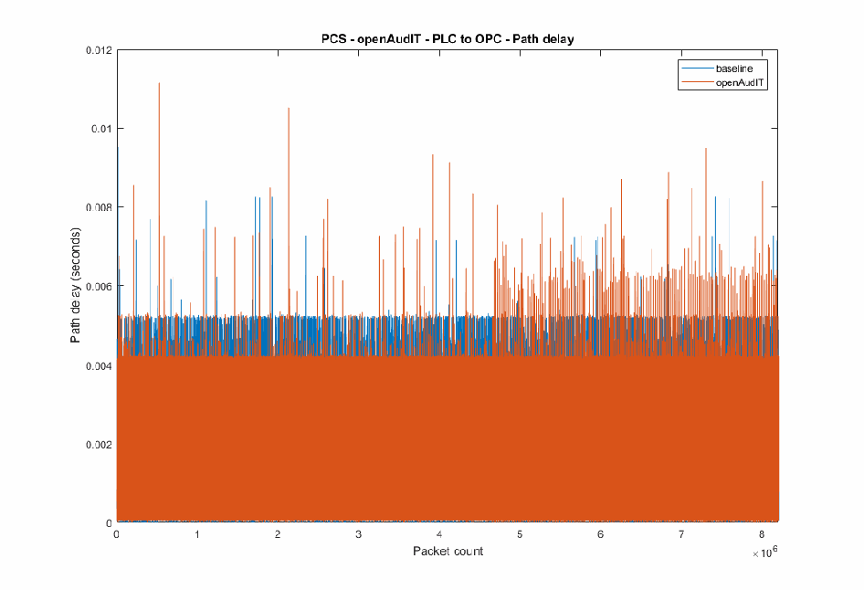
「PCS - openAudIT - PLC to OPC - Path delay」と題したグラフです。縦軸は「Path delay (seconds)」（経路遅延、秒）で 0〜0.012、横軸は「Packet count」（パケット数）で 0〜8×10^6 です。凡例は「baseline」（青）と「openAudIT」（橙）です。どちらもおおむね 0.005 秒以下に収まっていますが、openAudIT の系列は後半を中心に 0.006〜0.011 秒程度までの突出が多く見られます。
Figure 4-1 Plot showing the path delay from the PLC to OPC server
図 4-1 PLC から OPC サーバーまでの経路遅延を示すプロット
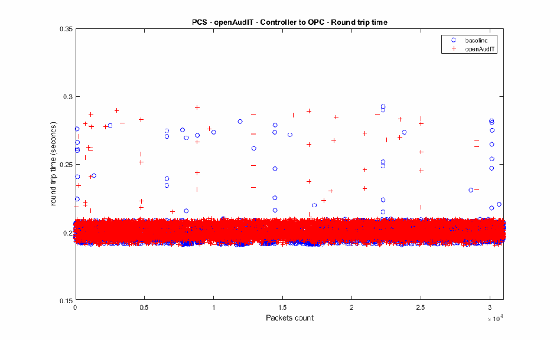
「PCS - openAudIT - Controller to OPC - Round trip time」と題したグラフです。縦軸は「round trip time (seconds)」（往復時間、秒）で 0.15〜0.35、横軸は「Packets count」（パケット数）で 0〜3×10^4 です。凡例は「baseline」（青の丸）と「openAudIT」（赤の十字）です。どちらも 0.2 秒付近に集中し、0.3 秒程度までの点が散在しています。
Figure 4-2 Plot of the packet round trip time from Controller to OPC
図 4-2 Controller から OPC までのパケットのラウンドトリップ時間のプロット
A small impact to the manufacturing process was observed. The product flow of the manufacturing process was slightly higher than the optimal level. The reactor pressure was slightly higher than the optimal level specially at the latter part of the experiment when Open-AudIT was performing the authenticated scan. However, the impact was small within the tolerance of the system.
製造プロセスへの小さな影響が観測されました。製造プロセスの製品流量が、最適なレベルよりわずかに高くなりました。反応器の圧力は、特に Open-AudIT が認証付きスキャンを実行していた実験の後半で、最適なレベルよりわずかに高くなりました。しかし、その影響は小さく、システムの許容範囲内でした。
It is hypothesized that the impacts were caused by increased network delays between the hosts of the system. There is a time delay before the network impact will start impacting the manufacturing process due to the iterative nature of the process simulation and sensor and actuator values exchange.
これらの影響は、システムのホスト間のネットワーク遅延の増加によって引き起こされたと推測されます。プロセスシミュレーションの反復的な性質と、センサーおよびアクチュエーターの値の交換のため、ネットワークの影響が製造プロセスに影響し始めるまでには、時間的な遅れがあります。
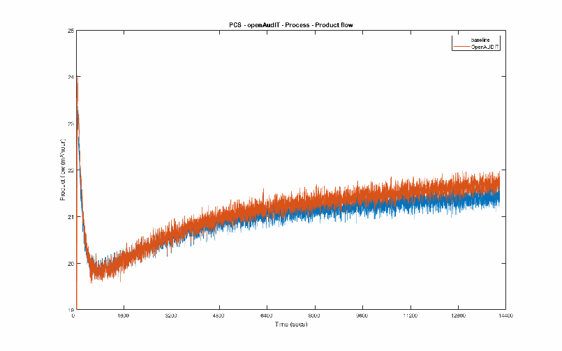
「PCS - openAudIT - Process - Product flow」と題したグラフです。縦軸は「Product flow (m³/hour)」（製品流量、m³/時）で 19〜25、横軸は「Time (secs)」（時間、秒）で 0〜14400 です。凡例は「baseline」（青）と「OpenAUDIT」（橙）です。どちらも開始直後に約 24 から約 20 へ下がり、その後 21.5〜22 程度へ緩やかに上昇します。後半は OpenAUDIT の系列がわずかに高くなっています。
Figure 4-3 Plot of the production flow of the manufacturing process
図 4-3 製造プロセスの生産流量のプロット
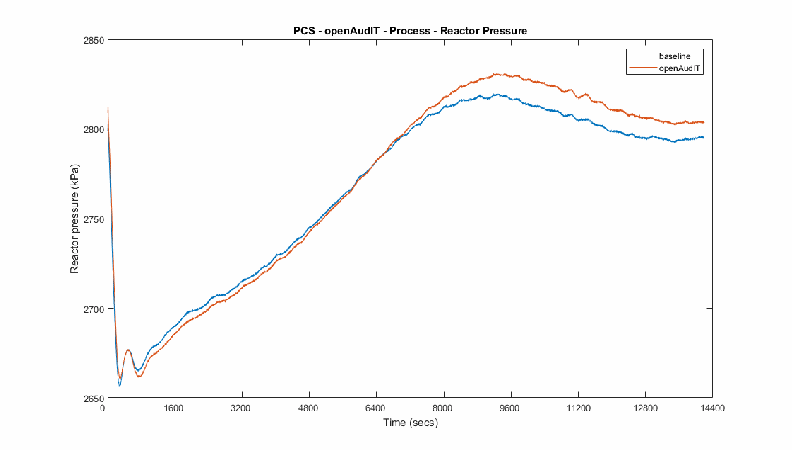
「PCS - openAudIT - Process - Reactor Pressure」と題したグラフです。縦軸は「Reactor pressure (kPa)」（反応器圧力、kPa）で 2650〜2850、横軸は「Time (secs)」（時間、秒）で 0〜14400 です。凡例は「baseline」（青）と「openAudIT」（橙）です。どちらも開始直後に約 2660 まで下がり、9600 秒付近で約 2820〜2830 の最大値に達した後わずかに下がります。最大値以降は openAudIT の系列がわずかに高くなっています。
Figure 4-4 Plot of the reactor pressure of the manufacturing process
図 4-4 製造プロセスの反応器圧力のプロット
4.2.7 Links to Entire Performance Measurement Data Set
4.2.7 性能測定データセット全体へのリンク
•Open-AudIT KPI data
•Open-AudIT の KPI データ
•Open-AudIT measurement data
•Open-AudIT の測定データ
4.3 CSET
4.3 CSET
4.3.1 Technical Solution Overview
4.3.1 技術ソリューションの概要
Cyber Security Evaluation Tool (CSET) is a tool provided by the Department of Homeland Security for performing Cybersecurity evaluation against an organization. This evaluation is a completely manual process of answering multiple questions to determine organizational cybersecurity posture based on implemented cybersecurity practices against current cybersecurity status. This evaluation will help identify areas within the organization that required more attention and resources.
サイバーセキュリティ評価ツール（Cyber Security Evaluation Tool、CSET）は、組織のサイバーセキュリティ評価を実施するために、国土安全保障省が提供しているツールです。この評価は、現在のサイバーセキュリティ状況に照らして、実施済みのサイバーセキュリティ対策に基づく組織のサイバーセキュリティ態勢を判断するため、複数の質問に回答する完全な手動プロセスです。この評価は、組織内でより多くの注意とリソースを必要とする領域の特定に役立ちます。
4.3.2 Technical Capabilities Provided by Solution
4.3.2 ソリューションが提供する技術的能力
CSET provides components of the following Technical Capabilities described in Section 6 of Volume 1:
CSET は、第1巻の第6節で説明した、次の技術的能力の構成要素を提供します。
•Network Architecture Documentation
•ネットワークアーキテクチャの文書化
•Risk Assessment
•リスクアセスメント
4.3.3 Subcategories Addressed by Implementing Solution
4.3.3 ソリューションの実装によって対処するサブカテゴリ
ID.AM-3, ID.AM-4, ID.RA-1
ID.AM-3, ID.AM-4, ID.RA-1
4.3.4 Architecture Map of Where Solution was Implemented
4.3.4 ソリューションを実装した場所のアーキテクチャマップ
![Network architecture map of the Westman process-based manufacturing system lab. Legend box: a padlock icon labeled "CSET". An "Internet" cloud connects to "Corporate Network" and the "Manuf. System Router/Firewall". Management zone: "Microsoft ActiveDirectory/RADIUS 10.100.2.3" on "Management LAN – 10.100.2.0/24". Manufacturing DMZ zone: "DMZ Historian 10.100.1.4" on "Manufacturing DMZ LAN - 10.100.1.0/24". Cybersecurity LAN zone ("Cybersecurity LAN - 10.100.0.0/24"): "NTP/PTP Clock 10.100.0.15", "Open-Audit 10.100.0.177", "TheHive Incident Resp. 10.100.0.5", "Nessus Vuln. Scanner 10.100.0.25", "Microsoft ActiveDirectory 10.100.0.13,17", "Symantec Antivirus 10.100.0.5", "GTB Data Loss Prev. 10.100.0.175,176", "Veeam Backup 10.100.0.10", "Graylog Syslog 10.100.0.14", "Security Onion 10.100.0.26", "Windows WSUS 10.100.0.12". Plant zone: "PCS LAN Router (OSPF) 10.100.0.40 172.16.1.1" (also labeled 10.100.2.8, 172.16.2.1, 172.16.3.1) with two "Switch" icons; "Engineering Workstation 172.16.3.10" and "Laptop with CSET installed" (marked with the CSET padlock icon) on "Engineering LAN – 172.16.3.0/24"; "HMI 172.16.1.4" and "Plant Controller 172.16.1.5" on "VLAN 1 – 172.16.1.0/24"; "Local Historian 172.16.2.4", "OPC Server 172.16.2.5" and "Supervisory PLC 172.16.2.102" on "VLAN 2 – 172.16.2.0/24"; the Supervisory PLC connects via "DeviceNet to Field Devices" to the "Manufacturing Process" (a screen image of the process simulation).](assets/ir-8183av2/p0119-figure-02.png)
Westman のプロセス型製造システムの実験環境のネットワーク構成図です。凡例: 南京錠のアイコンが「CSET」。「Internet」の雲が「Corporate Network」（企業ネットワーク）と「Manuf. System Router/Firewall」（製造システムのルーター／ファイアウォール）につながっています。Management（管理）区画には「Management LAN – 10.100.2.0/24」上の「Microsoft ActiveDirectory/RADIUS 10.100.2.3」、Manufacturing DMZ 区画には「Manufacturing DMZ LAN - 10.100.1.0/24」上の「DMZ Historian 10.100.1.4」があります。Cybersecurity LAN 区画（「Cybersecurity LAN - 10.100.0.0/24」）には 「NTP/PTP Clock 10.100.0.15」、「Open-Audit 10.100.0.177」、「TheHive Incident Resp. 10.100.0.5」、「Nessus Vuln. Scanner 10.100.0.25」、「Microsoft ActiveDirectory 10.100.0.13,17」、「Symantec Antivirus 10.100.0.5」、「GTB Data Loss Prev. 10.100.0.175,176」、「Veeam Backup 10.100.0.10」、「Graylog Syslog 10.100.0.14」、「Security Onion 10.100.0.26」、「Windows WSUS 10.100.0.12」 が並びます。Plant（工場）区画には 「PCS LAN Router (OSPF) 10.100.0.40 172.16.1.1」（10.100.2.8、172.16.2.1、172.16.3.1 の表示もあります）と2つの「Switch」があり、「Engineering LAN – 172.16.3.0/24」上に「Engineering Workstation 172.16.3.10」と「Laptop with CSET installed」（CSET の南京錠アイコン付き）、「VLAN 1 – 172.16.1.0/24」上に「HMI 172.16.1.4」と「Plant Controller 172.16.1.5」、「VLAN 2 – 172.16.2.0/24」上に「Local Historian 172.16.2.4」「OPC Server 172.16.2.5」「Supervisory PLC 172.16.2.102」があります。Supervisory PLC は「DeviceNet to Field Devices」で「Manufacturing Process」（プロセスのシミュレーション画面の画像）につながります。
4.3.5 Installation Instructions and Configurations
4.3.5 インストール手順と構成
Details of the solution implemented:
実装したソリューションの詳細：
| Name | Version | Hardware Details |
|---|---|---|
| CSET | 8.1 | Laptop with the following specs:
|
| 名称 | バージョン | ハードウェアの詳細 |
|---|---|---|
| CSET | 8.1 | 次の仕様のノート PC：
|
4.3.5.1 Environment setup
4.3.5.1 環境のセットアップ
CSET was installed on a temporary Windows laptop in the plant network on an on-demand basis
CSET は、プラントネットワーク内の一時的な Windows ノート PC に、オンデマンドでインストールしました。
4.3.5.2 Installation
4.3.5.2 インストール
1.Download CSET58. After clicking the link, you will be asked to identify yourself and will then be given the opportunity to download the file CSET_x.x.iso (where x.x represents the download version).
1.CSET58 をダウンロードします。リンクをクリックすると、本人確認を求められ、その後、CSET_x.x.iso ファイル（x.x はダウンロードするバージョンを表す）をダウンロードできるようになります。
2.Use any ISO-specific utility program that can mount the file.
2.ファイルをマウントできる、ISO 対応のユーティリティプログラムを使用します。
3.Find and run the CSET_Setup.exe file in the folder, virtual drive, or CD.
3.フォルダー、仮想ドライブ、または CD 内にある CSET_Setup.exe ファイルを見つけて実行します。
4.Complete the instructions in the installation wizard to install the program.
4.インストールウィザードの指示に従って、プログラムをインストールします。
4.3.5.3 Running CSET
4.3.5.3 CSET の実行
1.Launch the program by double-clicking its desktop icon
1.デスクトップアイコンをダブルクリックして、プログラムを起動します。
2.Select New Assetment on the home screen.
2.ホーム画面で New Assetment を選択します。
3.Click Start Here button in the lower right corner of program.
3.プログラムの右下にある Start Here ボタンをクリックします。
4.Enter all required information
4.必要な情報をすべて入力します。
［第三者の画像。第三者の著作物のため、この非公式サイトには掲載していません。原本 PDF を参照してください。］
5.Click Continue to proceed.
5.Continue をクリックして先へ進みます。
6.Click the drop-down menus and select the appropriate choices.
6.ドロップダウンメニューをクリックして、適切な選択肢を選択します。
［第三者の画像。第三者の著作物のため、この非公式サイトには掲載していません。原本 PDF を参照してください。］
7.Click Continue to proceed.
7.Continue をクリックして先へ進みます。
8.(Optional) Click the Create a network diagram button to create one, otherwise click Continue.
8.（任意）Create a network diagram ボタンをクリックしてネットワーク図を作成します。作成しない場合は Continue をクリックします。
9.Change Mode Selection to Advanced and Cybersecurity Frame-based Approach
9.Mode Selection を Advanced と Cybersecurity Frame-based Approach に変更します。
［第三者の画像。第三者の著作物のため、この非公式サイトには掲載していません。原本 PDF を参照してください。］
10.Click Continue to use default profile or create a new profile.
10.Continue をクリックして、デフォルトのプロファイルを使用するか、新しいプロファイルを作成します。
11.Click Continue again.
11.もう一度 Continue をクリックします。
12.Answer all the questions as they appear.
12.表示される質問にすべて答えます。
13.Complete all questions and generate a final report.
13.すべての質問に答えて、最終レポートを生成します。
4.3.5.4 Additional Information
4.3.5.4 追加情報
Video tutorials59 are available on the CSET YouTube Channel to help you better understand how to use this tool.
このツールの使い方をよりよく理解できるように、CSET の YouTube チャンネルでビデオチュートリアル59 が提供されています。
Lessons Learned
得られた教訓
•The tool is only as good as information entered. Make sure each answer is thought out before answering.
•ツールの精度は、入力された情報の質次第です。回答する前に、各回答をよく考えるようにします。
•Mark any answer for review as needed so there will be follow up.
•必要に応じて、回答にレビューのマークを付け、後でフォローアップできるようにします。
•When completed your organization will receive a 0 to 100 score depending on readiness.
•完了すると、組織は準備状況に応じて0から100のスコアを受け取ります。
4.3.6 Highlighted Performance Impacts
4.3.6 注目すべき性能への影響
No performance measurement experiments were performed for CSET due to its typical installation location (i.e., external to the manufacturing system).
CSET は、通常のインストール場所（製造システムの外部）の都合上、性能測定の実験を実施しませんでした。
4.3.7 Links to Entire Performance Measurement Data Set
4.3.7 性能測定データセット全体へのリンク
N/A
N/A
4.4 GRASSMARLIN
4.4 GRASSMARLIN
4.4.1 Technical Solution Overview
4.4.1 技術ソリューションの概要
GRASSMARLIN is an open source, passive network mapper dedicated to industrial networks and developed by the National Security Agency (NSA). GRASSMARLIN gives a snapshot of the industrial system including:
GRASSMARLIN は、国家安全保障局（NSA）が開発した、産業用ネットワーク専用のオープンソースのパッシブなネットワークマッパーです。GRASSMARLIN は、次のものを含む産業用システムのスナップショットを提供します。
•Devices on the network
•ネットワーク上のデバイス
•Communications between these devices
•これらのデバイス間の通信
•Metadata extracted from these communications
•これらの通信から抽出されたメタデータ
Points to consider:60
考慮すべき点：60
•Passive IP network mapping tool
•パッシブな IP ネットワークマッピングツール
•Hardware agnostic portable Java based tool
•ハードウェアに依存しない、可搬性のある Java ベースのツール
•Can only see and map hosts where you are capturing data from.
•データをキャプチャしているホストしか見たり、マッピングしたりできません。
4.4.2 Technical Capabilities Provided by Solution
4.4.2 ソリューションが提供する技術的能力
GRASSMARLIN provides components of the following Technical Capabilities described in Section 6 of Volume 1:
GRASSMARLINは、第1巻の第6節で説明した、次の技術的能力の構成要素を提供します。
•Network Architecture Documentation
•ネットワークアーキテクチャの文書化
•Baseline Establishment
•ベースラインの確立
•Map Data Flows
•データフローのマッピング
4.4.3 Subcategories Addressed by Implementing Solution
4.4.3 ソリューションの実装によって対処するサブカテゴリ
ID.AM-3, ID.AM-4, PR.AC-5, PR.IP-1, DE.AE-1, DE.CM-7
ID.AM-3, ID.AM-4, PR.AC-5, PR.IP-1, DE.AE-1, DE.CM-7
4.4.4 Architecture Map of Where Solution was Implemented
4.4.4 ソリューションを実装した場所のアーキテクチャマップ
![Network architecture map of the Westman process-based manufacturing system lab. Legend box: the GRASSMARLIN logo labeled "Grass Marlin". An "Internet" cloud connects to "Corporate Network" and the "Manuf. System Router/Firewall". Management zone: "Microsoft ActiveDirectory/RADIUS 10.100.2.3" on "Management LAN – 10.100.2.0/24". Manufacturing DMZ zone: "DMZ Historian 10.100.1.4" on "Manufacturing DMZ LAN - 10.100.1.0/24". Cybersecurity LAN zone ("Cybersecurity LAN - 10.100.0.0/24"): "NTP/PTP Clock 10.100.0.15", "Open-Audit 10.100.0.177", "TheHive Incident Resp. 10.100.0.5", "Nessus Vuln. Scanner 10.100.0.25", "Microsoft ActiveDirectory 10.100.0.13,17", "Symantec Antivirus 10.100.0.5", "GTB Data Loss Prev. 10.100.0.175,176", "Veeam Backup 10.100.0.10", "Graylog Syslog 10.100.0.14", "Security Onion 10.100.0.26", "Windows WSUS 10.100.0.12". Plant zone: "PCS LAN Router (OSPF) 10.100.0.40 172.16.1.1" (also labeled 10.100.2.8, 172.16.2.1, 172.16.3.1) with two "Switch" icons; "Engineering Workstation 172.16.3.10" and "Laptop with GRASSMARLIN installed" (marked with the GRASSMARLIN logo) on "Engineering LAN – 172.16.3.0/24"; "HMI 172.16.1.4" and "Plant Controller 172.16.1.5" on "VLAN 1 – 172.16.1.0/24"; "Local Historian 172.16.2.4", "OPC Server 172.16.2.5" and "Supervisory PLC 172.16.2.102" on "VLAN 2 – 172.16.2.0/24"; the Supervisory PLC connects via "DeviceNet to Field Devices" to the "Manufacturing Process" (a screen image of the process simulation).](assets/ir-8183av2/p0124-figure-02.png)
Westman のプロセス型製造システムの実験環境のネットワーク構成図です。凡例: GRASSMARLIN のロゴが「Grass Marlin」。「Internet」の雲が「Corporate Network」（企業ネットワーク）と「Manuf. System Router/Firewall」（製造システムのルーター／ファイアウォール）につながっています。Management（管理）区画には「Management LAN – 10.100.2.0/24」上の「Microsoft ActiveDirectory/RADIUS 10.100.2.3」、Manufacturing DMZ 区画には「Manufacturing DMZ LAN - 10.100.1.0/24」上の「DMZ Historian 10.100.1.4」があります。Cybersecurity LAN 区画（「Cybersecurity LAN - 10.100.0.0/24」）には 「NTP/PTP Clock 10.100.0.15」、「Open-Audit 10.100.0.177」、「TheHive Incident Resp. 10.100.0.5」、「Nessus Vuln. Scanner 10.100.0.25」、「Microsoft ActiveDirectory 10.100.0.13,17」、「Symantec Antivirus 10.100.0.5」、「GTB Data Loss Prev. 10.100.0.175,176」、「Veeam Backup 10.100.0.10」、「Graylog Syslog 10.100.0.14」、「Security Onion 10.100.0.26」、「Windows WSUS 10.100.0.12」 が並びます。Plant（工場）区画には 「PCS LAN Router (OSPF) 10.100.0.40 172.16.1.1」（10.100.2.8、172.16.2.1、172.16.3.1 の表示もあります）と2つの「Switch」があり、「Engineering LAN – 172.16.3.0/24」上に「Engineering Workstation 172.16.3.10」と「Laptop with GRASSMARLIN installed」（GRASSMARLIN のロゴ付き）、「VLAN 1 – 172.16.1.0/24」上に「HMI 172.16.1.4」と「Plant Controller 172.16.1.5」、「VLAN 2 – 172.16.2.0/24」上に「Local Historian 172.16.2.4」「OPC Server 172.16.2.5」「Supervisory PLC 172.16.2.102」があります。Supervisory PLC は「DeviceNet to Field Devices」で「Manufacturing Process」（プロセスのシミュレーション画面の画像）につながります。
4.4.5 Installation Instructions and Configurations
4.4.5 インストール手順と構成
Details of the solution implemented:
実装したソリューションの詳細：
| Name | Version | Hardware Details |
|---|---|---|
| GRASSMARLIN | 3.2.1 | Laptop with the following specs:
|
| 名称 | バージョン | ハードウェアの詳細 |
|---|---|---|
| GRASSMARLIN | 3.2.1 | 次の仕様のノート PC：
|
4.4.5.1 Environment Setup
4.4.5.1 環境のセットアップ
1.A temporary Windows laptop with GRASSMARLIN installed was setup in the plant network on an on-demand basis.
1.GRASSMARLIN をインストールした一時的な Windows ノート PC を、プラントネットワーク内にオンデマンドでセットアップしました。
4.4.5.2 Installation
4.4.5.2 インストール
1.Download GRASSMARLIN61
1.GRASSMARLIN61 をダウンロードします。
2.Run the installer. The installer will install additional programs such as Java and Wireshark during the setup.
2.インストーラーを実行します。インストーラーは、セットアップ中に Java や Wireshark などの追加プログラムをインストールします。
4.4.5.3 Using the Software
4.4.5.3 ソフトウェアの使用
GRASSMARLIN can operate in a real time passive mode by sniffing the live traffic or by importing a recorded pcap file. Data in GRASSMARLIN is stored in a Session. The Session contains imported files and visual state information.
GRASSMARLIN は、ライブトラフィックをスニッフィングするか、記録済みの pcap ファイルをインポートすることで、リアルタイムのパッシブモードで動作できます。GRASSMARLIN のデータは、セッション（Session）に保存されます。セッションには、インポートしたファイルと視覚的な状態情報が含まれます。
1.To capture network packets & save to a pcap file on a Linux system
1.Linux システムでネットワークパケットをキャプチャして pcap ファイルに保存するには、次のようにします。
a.Install tcpdump package if not present already
a.tcpdump パッケージがまだない場合は、インストールします。
b.Run, tcpdump -i <mirror-port interface> - w mypcap.pcap
For example: tcpdump -i eth1 -w /home/icssec/pcs.pcap
Where eth1 is the span / mirror port connection
b.tcpdump -i <mirror-port interface> -w mypcap.pcap を実行します。
例：tcpdump -i eth1 -w /home/icssec/pcs.pcap
ここで、eth1 は SPAN／ミラーポートの接続です。
2.Run GRASSMARLIN on a Windows system by double clicking the program icon from the Programs Menu. On a Linux system, run sudo grassmarlin to launch the installer.
2.Windows システムでは、プログラムメニューからプログラムアイコンをダブルクリックして GRASSMARLIN を実行します。Linux システムでは、sudo grassmarlin を実行してインストーラーを起動します。
3.Import a pcap in GRASSMARLIN as follows:
3.GRASSMARLIN に pcap をインポートするには、次のようにします。
•Click on the Import icon in the toolbar (or select Import files from the File Menu)
•ツールバーの Import アイコンをクリックします（または、File メニューから Import files を選択します）。
［第三者の画像。第三者の著作物のため、この非公式サイトには掲載していません。原本 PDF を参照してください。］
•Click on Add Files. Browse to the pcap file. Once done, the pcap will now show up under Pending Imports.
•Add Files をクリックします。pcap ファイルを参照します。完了すると、pcap が Pending Imports の下に表示されます。
•Select the file and click on Import Selected. Hit the Close button upon completion to back to the Main interface. The Import process can take several minutes to hours depending on the size of the pcap file.
•ファイルを選択し、Import Selected をクリックします。完了したら Close ボタンを押して、メインインターフェースに戻ります。インポート処理には、pcap ファイルのサイズに応じて、数分から数時間かかる場合があります。
［第三者の画像。第三者の著作物のため、この非公式サイトには掲載していません。原本 PDF を参照してください。］
Upon the completion of Import, the main screen will display a Logical Graph of the network topology as shown below.
インポートが完了すると、メイン画面に、次のようなネットワークトポロジーの論理グラフ（Logical Graph）が表示されます。
![Screenshot of the GrassMarlin 3.2.1 [New Session]* window showing the Logical Graph tab after importing the lab capture. The left pane lists network groups such as 0.0.0.0/24, 10.100.0.0/24 (19 items), 10.100.1.0/24, 13.107.4.0/24, 23.33.171.0/24, 23.205.213.0/24, 23.205.214.0/24, 23.208.121.0/24, 129.19.64.0/24, 169.254.91.0/24, 169.254.255.0/24, 172.16.1.0/24 (5 items), 172.16.2.0/24 (9 items), 172.16.3.0/24 (2 items), 172.16.4.0/24 (3 items), 184.24.97.0/24, 205.185.216.0/24 and 224.0.0.0/24 (3 items). The graph shows the IP-address nodes grouped into red polygons by subnet, connected by many lines representing the observed communications; some external addresses carry country flags.](assets/ir-8183av2/p0127-figure-01.png)
GrassMarlin 3.2.1 [New Session]* の画面で、実験環境の取り込み結果を Logical Graph タブに表示したところです。左側には 0.0.0.0/24、10.100.0.0/24（19 項目）、10.100.1.0/24、13.107.4.0/24、23.33.171.0/24、23.205.213.0/24、23.205.214.0/24、23.208.121.0/24、129.19.64.0/24、169.254.91.0/24、169.254.255.0/24、172.16.1.0/24（5 項目）、172.16.2.0/24（9 項目）、172.16.3.0/24（2 項目）、172.16.4.0/24（3 項目）、184.24.97.0/24、205.185.216.0/24、224.0.0.0/24（3 項目）などのネットワークの一覧があります。グラフでは、IP アドレスのノードがサブネットごとに赤い多角形にまとめられ、観測された通信を表す多数の線で結ばれています。外部のアドレスの一部には国旗が付いています。
4.Review the logical graph. All public IP addresses will also be highlighted with their respective country’s flag. This can be useful in finding out information about any external IPs that your network is communicating with.
4.論理グラフを確認します。すべてのパブリック IP アドレスは、それぞれの国の国旗とともに強調表示されます。これは、ネットワークが通信している外部 IP に関する情報を調べるのに役立ちます。
5.Right-click any external IP address > View Details. For instance, the image below shows a host with IP 172.16.3.10 communicating with an IP address from Netherlands.
5.外部 IP アドレスを右クリックし、View Details を選択します。たとえば、次の画像は、IP 172.16.3.10 のホストが、オランダの IP アドレスと通信している様子を示しています。
![Screenshot of the GRASSMARLIN logical graph with the "Node Details:..." dialog open for an external node. The dialog lists Field and Value: Network 184.24.97.0/24; Country Netherlands; MAC e4:90:69:3b:c2:c0 (5); Manufacturer Rockwell Automation. Behind it, the graph shows the host 172.16.3.10 connected to external addresses such as 184.24.97.168 and 184.24.97.190 (with Netherlands flags) and 129.19.64.232, 129.19.64.230 and 13.107.4.50 (with U.S. flags), as well as lab addresses 10.100.0.x and 172.16.x.x.](assets/ir-8183av2/p0128-figure-01.png)
GRASSMARLIN の論理グラフで、外部のノードについて「Node Details:...」のダイアログを開いた画面です。ダイアログには Field と Value として、Network 184.24.97.0/24、Country Netherlands、MAC e4:90:69:3b:c2:c0 (5)、Manufacturer Rockwell Automation が表示されています。背後のグラフでは、ホスト 172.16.3.10 が 184.24.97.168 や 184.24.97.190（オランダの国旗付き）、129.19.64.232、129.19.64.230、13.107.4.50（米国の国旗付き）などの外部アドレスや、実験環境の 10.100.0.x、172.16.x.x のアドレスと結ばれています。
6.Generate a list of all nodes in the Logical Graph as follows:
6.論理グラフ内のすべてのノードの一覧を生成するには、次のようにします。
a.Click View (Top Menu) > Logical Nodes Report.
By default, only a single column (IP) is present, although additional columns can be added with any Property present in the set of Nodes.
a.View（トップメニュー）> Logical Nodes Report をクリックします。
デフォルトでは列は1つ（IP）だけですが、ノードの集合に存在する任意のプロパティを追加の列として加えることができます。
b.Select any Property Name from the drop-down and click Add button to add new Columns in the Report.
b.ドロップダウンから任意の Property Name を選択し、Add ボタンをクリックして、レポートに新しい列を追加します。
![Screenshot of the GRASSMARLIN "Logical Node Reports" window. Radio buttons All (selected), Source, Destination, Source and Destination. A table with the columns IP, ICSProtocol, EtherNetIP.ICSProtocol and Service lists lab nodes such as 172.16.3.10 (Allen Bradley Rockwell PLC, ETHERNETIP (5), LDAP, Authentication, File Replication Service), 172.16.2.102 (ETHERNETIP), 172.16.2.4 (LDAP, Authentication), 172.16.4.5, 172.16.4.102, 172.16.1.4 and 172.16.2.14. An open drop-down lists further properties: Browser Protocol.Domain/Workgroup, Browser Protocol.MicrosoftProtocol, Domain Controller.Role, Domain Controller.Service, Operating System.OS, Role, Windows Version, OS, Domain/Workgroup, MicrosoftProtocol; buttons Add and Export CSV...](assets/ir-8183av2/p0129-figure-01.png)
GRASSMARLIN の「Logical Node Reports」の画面です。ラジオボタン All（選択）、Source、Destination、Source and Destination があります。IP、ICSProtocol、EtherNetIP.ICSProtocol、Service の列の表に、172.16.3.10（Allen Bradley Rockwell PLC、ETHERNETIP (5)、LDAP、Authentication、File Replication Service）、172.16.2.102（ETHERNETIP）、172.16.2.4（LDAP、Authentication）、172.16.4.5、172.16.4.102、172.16.1.4、172.16.2.14 などの実験環境のノードが並びます。開いたドロップダウンには、Browser Protocol.Domain/Workgroup、Browser Protocol.MicrosoftProtocol、Domain Controller.Role、Domain Controller.Service、Operating System.OS、Role、Windows Version、OS、Domain/Workgroup、MicrosoftProtocol の項目があり、Add と Export CSV... のボタンがあります。
7.Generate a report of all connections in the pcap file as follows:
7.pcap ファイル内のすべての接続のレポートを生成するには、次のようにします。
a.Click View (Top Menu)>> Logical Connections Report.
a.View（トップメニュー）>> Logical Connections Report をクリックします。
［第三者の画像。第三者の著作物のため、この非公式サイトには掲載していません。原本 PDF を参照してください。］
b.Click on Export CSV for further analysis of all the communications happening on your network. This will generate an output similar to the image show below.
b.ネットワーク上で発生しているすべての通信をさらに分析するため、Export CSV をクリックします。次の画像のような出力が生成されます。
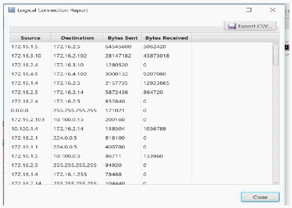
GRASSMARLIN の「Logical Connection Report」の画面で、Export CSV... と Close のボタンがあります。Source、Destination、Bytes Sent、Bytes Received の列の表に、実験環境のホスト（172.16.1.x、172.16.2.x、172.16.3.x、172.16.4.x、10.100.0.x、10.100.1.4）どうしや、ブロードキャスト・マルチキャストのアドレス（255.255.255.255、224.0.0.5、172.16.1.255）との接続が、172.16.1.5 から 172.16.2.5、172.16.3.10 から 172.16.2.102 などのように並びます。
8.To view all the logical communications for a specific host for capturing a baseline:
8.ベースラインを取得するために、特定のホストのすべての論理的な通信を表示するには、次のようにします。
a.Right-click on a Node > View Frames.
This opens a new screen as shown below displaying all the different IP addresses that particular host is communicating with including Port and Protocol information.
a.ノードを右クリックし、View Frames を選択します。
次に示すような新しい画面が開き、そのホストが通信しているすべての異なる IP アドレスが、ポートとプロトコルの情報とともに表示されます。
b.Click on Export CSV button to export this data to a csv file.
Note: This process needs to be repeated for every node.
b.Export CSV ボタンをクリックして、このデータを csv ファイルにエクスポートします。
注：この処理は、すべてのノードについて繰り返す必要があります。
![Screenshot of the GRASSMARLIN window "Connections involving 172.16.1.3" opened over the logical graph. A table with the columns Timestamp, Source IP, Source Port, Destination IP, Destination Port, PCAP File, Frame and Protocol lists frames from 172.16.1.3 port 123 to 10.100.0.15 port 123 (UDP, capture.pcap) on 2019-03-22. Below it, a timeline chart plots the connections to 10.100.0.15 and 10.100.0.14 over time from about 2019-03-22T15:00 to 2019-03-22T18:00. The left pane shows the node tree with 172.16.1.1 and 172.16.1.3 and their bytes received.](assets/ir-8183av2/p0130-figure-01.png)
GRASSMARLIN で論理グラフの上に「Connections involving 172.16.1.3」の画面を開いたところです。Timestamp、Source IP、Source Port、Destination IP、Destination Port、PCAP File、Frame、Protocol の列の表に、2019-03-22 に 172.16.1.3 のポート123から 10.100.0.15 のポート123へ送られたフレーム（UDP、capture.pcap）が並びます。その下には、10.100.0.15 と 10.100.0.14 への接続を 2019-03-22T15:00 頃から 18:00 頃までの時系列で示すグラフがあります。左側にはノードの一覧（172.16.1.1、172.16.1.3 と受信バイト数）があります。
9.Generate a Watch -Graph as follows:
9.Watch Graph を生成するには、次のようにします。
a.Right-click a node > Select Watch Connections from the Watch Connections menu.
This will generate a graph in a new window Watch <IP address>
a.ノードを右クリックし、Watch Connections メニューから Watch Connections を選択します。
新しいウィンドウ Watch <IP address> にグラフが生成されます。
［第三者の画像。第三者の著作物のため、この非公式サイトには掲載していません。原本 PDF を参照してください。］
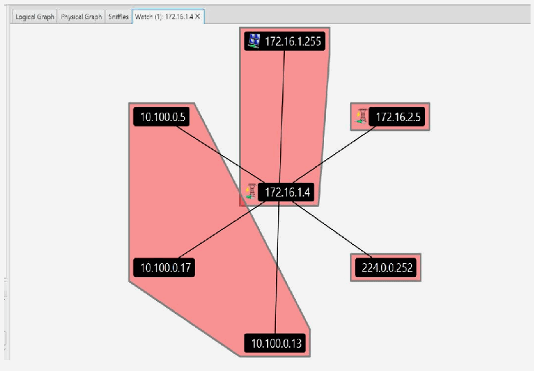
GRASSMARLIN の「Watch (1): 172.16.1.4」タブ（Logical Graph、Physical Graph、Sniffles のタブの隣）の画面です。中央のノード 172.16.1.4 が、172.16.1.255、10.100.0.5、172.16.2.5、10.100.0.17、224.0.0.252、10.100.0.13 と線で結ばれ、ノードは赤い多角形にまとめられています。
4.4.5.4 Additional Information
4.4.5.4 追加情報
A User guide62 is available for GRASSMARLIN.
GRASSMARLIN には、ユーザーガイド62 が用意されています。
4.4.6 Highlighted Performance Impacts
4.4.6 注目すべき性能への影響
No performance measurement experiments were performed for the use of GRASSMARLIN due to its installation location and how it was used (i.e., the software performed offline analysis of PCAP files captured by other software).
GRASSMARLIN の使用については、インストール場所と使用方法（このソフトウェアは、他のソフトウェアがキャプチャした PCAP ファイルをオフラインで分析します）を理由に、性能測定実験を実施しませんでした。
4.4.7 Links to Entire Performance Measurement Data Set
4.4.7 性能測定データセット全体へのリンク
N/A
N/A
4.5 Wireshark
4.5 Wireshark
4.5.1 Technical Solution Overview
4.5.1 技術ソリューションの概要
Wireshark is a free and open-source packet analyzer.
Wireshark は、無料のオープンソースのパケットアナライザーです。
4.5.2 Technical Capabilities Provided by Solution
4.5.2 ソリューションが提供する技術的能力
Wireshark provides components of the following Technical Capabilities described in Section 6 of Volume 1:
Wireshark は、第1巻の第6節で説明した次の技術的能力の構成要素を提供します。
•Network Architecture Documentation
•ネットワークアーキテクチャの文書化
•Baseline Establishment
•ベースラインの確立
•Map Data Flows
•データフローのマッピング
•Forensics
•フォレンジック
4.5.3 Subcategories Addressed by Implementing Solution
4.5.3 ソリューションの実装によって対処するサブカテゴリ
ID.AM-3, ID.AM-4, PR.AC-5, PR.IP-1, DE.AE-1, DE.AE-2, DE.CM-7, RS.AN-3
ID.AM-3, ID.AM-4, PR.AC-5, PR.IP-1, DE.AE-1, DE.AE-2, DE.CM-7, RS.AN-3
4.5.4 Architecture Map of Where Solution was Implemented
4.5.4 ソリューションを実装した場所のアーキテクチャマップ
![Network architecture map of the Westman process-based manufacturing system lab. Legend box: the Wireshark logo labeled "Wireshark". An "Internet" cloud connects to "Corporate Network" and the "Manuf. System Router/Firewall". Management zone: "Microsoft ActiveDirectory/RADIUS 10.100.2.3" on "Management LAN – 10.100.2.0/24". Manufacturing DMZ zone: "DMZ Historian 10.100.1.4" on "Manufacturing DMZ LAN - 10.100.1.0/24". Cybersecurity LAN zone ("Cybersecurity LAN - 10.100.0.0/24"): "NTP/PTP Clock 10.100.0.15", "Open-Audit 10.100.0.177", "TheHive Incident Resp. 10.100.0.5", "Nessus Vuln. Scanner 10.100.0.25", "Microsoft ActiveDirectory 10.100.0.13,17", "Symantec Antivirus 10.100.0.5", "GTB Data Loss Prev. 10.100.0.175,176", "Veeam Backup 10.100.0.10", "Graylog Syslog 10.100.0.14", "Security Onion 10.100.0.26", "Windows WSUS 10.100.0.12". Plant zone: "PCS LAN Router (OSPF) 10.100.0.40 172.16.1.1" (also labeled 10.100.2.8, 172.16.2.1, 172.16.3.1) with two "Switch" icons; "Engineering Workstation 172.16.3.10" and "Laptop with Wireshark installed" (marked with the Wireshark logo) on "Engineering LAN – 172.16.3.0/24"; "HMI 172.16.1.4" and "Plant Controller 172.16.1.5" on "VLAN 1 – 172.16.1.0/24"; "Local Historian 172.16.2.4", "OPC Server 172.16.2.5" and "Supervisory PLC 172.16.2.102" on "VLAN 2 – 172.16.2.0/24"; the Supervisory PLC connects via "DeviceNet to Field Devices" to the "Manufacturing Process" (a screen image of the process simulation).](assets/ir-8183av2/p0134-figure-02.png)
Westman のプロセス型製造システムの実験環境のネットワーク構成図です。凡例: Wireshark のロゴが「Wireshark」。「Internet」の雲が「Corporate Network」（企業ネットワーク）と「Manuf. System Router/Firewall」（製造システムのルーター／ファイアウォール）につながっています。Management（管理）区画には「Management LAN – 10.100.2.0/24」上の「Microsoft ActiveDirectory/RADIUS 10.100.2.3」、Manufacturing DMZ 区画には「Manufacturing DMZ LAN - 10.100.1.0/24」上の「DMZ Historian 10.100.1.4」があります。Cybersecurity LAN 区画（「Cybersecurity LAN - 10.100.0.0/24」）には 「NTP/PTP Clock 10.100.0.15」、「Open-Audit 10.100.0.177」、「TheHive Incident Resp. 10.100.0.5」、「Nessus Vuln. Scanner 10.100.0.25」、「Microsoft ActiveDirectory 10.100.0.13,17」、「Symantec Antivirus 10.100.0.5」、「GTB Data Loss Prev. 10.100.0.175,176」、「Veeam Backup 10.100.0.10」、「Graylog Syslog 10.100.0.14」、「Security Onion 10.100.0.26」、「Windows WSUS 10.100.0.12」 が並びます。Plant（工場）区画には 「PCS LAN Router (OSPF) 10.100.0.40 172.16.1.1」（10.100.2.8、172.16.2.1、172.16.3.1 の表示もあります）と2つの「Switch」があり、「Engineering LAN – 172.16.3.0/24」上に「Engineering Workstation 172.16.3.10」と「Laptop with Wireshark installed」（Wireshark のロゴ付き）、「VLAN 1 – 172.16.1.0/24」上に「HMI 172.16.1.4」と「Plant Controller 172.16.1.5」、「VLAN 2 – 172.16.2.0/24」上に「Local Historian 172.16.2.4」「OPC Server 172.16.2.5」「Supervisory PLC 172.16.2.102」があります。Supervisory PLC は「DeviceNet to Field Devices」で「Manufacturing Process」（プロセスのシミュレーション画面の画像）につながります。
4.5.5 Installation Instructions and Configurations
4.5.5 インストール手順と構成
Details of the solution implemented:
実装したソリューションの詳細：
| Name | Version | Hardware Details |
|---|---|---|
| Wireshark | 3.0.2 | Laptop with the following specs.
|
| 名称 | バージョン | ハードウェアの詳細 |
|---|---|---|
| Wireshark | 3.0.2 | 次の仕様のノート PC。
|
4.5.5.1 Environment Setup
4.5.5.1 環境のセットアップ
A Windows laptop with Wireshark installed was setup on an on-demand basis.
Wireshark をインストールした Windows ノート PC を、オンデマンドでセットアップしました。
4.5.5.2 Installation
4.5.5.2 インストール
1.Download Wireshark63 (Select 32bit or 64 bit)
1.Wireshark63 をダウンロードします（32 ビットまたは 64 ビットを選択）。
2.Run the exe to start install process. For instance, Wireshark-win64-3.0.1.exe
2.exe を実行して、インストールプロセスを開始します。たとえば、Wireshark-win64-3.0.1.exe です。
3.Click Next, leave the defaults selected and continue install.
3.Next をクリックし、デフォルトの選択のままインストールを続けます。
4.Click I Agree to continue, when prompted for Npcap install
4.Npcap のインストールを促されたら、I Agree をクリックして続けます。
5.Now click Next and Finish to start process.
5.次に Next と Finish をクリックして、プロセスを開始します。
6.Select Reboot Now or I want to manually reboot later.
6.Reboot Now または I want to manually reboot later を選択します。
7.Click Finish to complete.
7.Finish をクリックして完了します。
4.5.5.3 Running Wireshark
4.5.5.3 Wireshark の実行
1.Launch Wireshark by doing a right-click on the Wireshark Desktop icon > Run as Administrator (Windows 10). Wireshark requires administrative privileges to be fully functional, otherwise there will be undesired results.
1.Wireshark のデスクトップアイコンを右クリックし、Run as Administrator（Windows 10）を選択して、Wireshark を起動します。Wireshark は完全に機能するために管理者権限を必要とし、管理者権限がないと望ましくない結果になります。
2.Select the interface to capture traffic from the list of interfaces displayed
2.表示されたインターフェースの一覧から、トラフィックをキャプチャするインターフェースを選択します。
4.5.5.4 Capturing Network Baseline using Wireshark
4.5.5.4 Wireshark を使用したネットワークベースラインの取得
1.Click Open to load a previously captured pcap file or run a Start Capture
1.Open をクリックして、以前にキャプチャした pcap ファイルを読み込むか、Start Capture を実行します。
2.Click on Statistics > Conversations upon loading the pcap or capturing live traffic.
2.pcap を読み込んだとき、またはライブトラフィックをキャプチャしたときに、Statistics > Conversations をクリックします。
3.Click COPY > as Csv to save this data as a Csv file for further analysis. Screenshot shown below for reference
3.COPY > as Csv をクリックして、このデータを Csv ファイルとして保存し、さらに分析します。参考として、スクリーンショットを以下に示します。
![Screenshot of the Wireshark "Conversations · capture.pcap" window with the tabs Ethernet · 95, IPv4 · 75, IPv6 · 22, TCP · 853 and UDP · 670. The table has the columns Address A, Address B, Packets, Bytes, Packets A → B, Bytes A → B, Packets B → A, Bytes B → A, Rel Start, Duration, Bits/s A → B and Bits/s B → A, and lists conversations of the lab hosts (for example 10.100.0.16, 10.100.0.17, 10.100.0.18, 10.100.0.101, 10.100.0.234, 10.100.1.4) with addresses such as 224.0.0.251, 224.0.0.252, 172.16.1.4, 172.16.2.14 and 10.100.0.255. The Copy menu is open with the choices "as CSV" and "as YAML"; other controls are Name resolution, Limit to display filter, Absolute start time, Follow Stream..., Graph..., Close, Help and Conversation Types.](assets/ir-8183av2/p0136-figure-01.png)
Wireshark の「Conversations · capture.pcap」の画面で、Ethernet · 95、IPv4 · 75、IPv6 · 22、TCP · 853、UDP · 670 のタブがあります。Address A、Address B、Packets、Bytes、Packets A → B、Bytes A → B、Packets B → A、Bytes B → A、Rel Start、Duration、Bits/s A → B、Bits/s B → A の列の表に、実験環境のホスト（10.100.0.16、10.100.0.17、10.100.0.18、10.100.0.101、10.100.0.234、10.100.1.4 など）と 224.0.0.251、224.0.0.252、172.16.1.4、172.16.2.14、10.100.0.255 などのアドレスとの通信が並びます。Copy のメニューが開いており「as CSV」と「as YAML」を選べます。ほかに Name resolution、Limit to display filter、Absolute start time、Follow Stream...、Graph...、Close、Help、Conversation Types の操作部品があります。
4.(Optional) Click on Statistics > IPv4 Statistics > Destination and Ports to get a list of all the ports. This will generate a list of ports used by all the IP addresses in the traffic. Click Copy, to copy the results to a word document or click Save as to save as a plain text file. Hit Close when done.
4.（任意）Statistics > IPv4 Statistics > Destination and Ports をクリックして、すべてのポートの一覧を取得します。これにより、トラフィック内のすべての IP アドレスが使用しているポートの一覧が生成されます。Copy をクリックして、結果を Word 文書にコピーするか、Save as をクリックして、プレーンテキストファイルとして保存します。完了したら Close を押します。
![Screenshot of the Wireshark "Destinations and Ports · capture.pcap" window. The tree table has the columns Topic / Item, Count, Average, Min val, Max val, Rate (ms), Percent, Burst rate and Burst start; it lists, for example, UDP (count 244) with ports 138 and 137, the host 172.16.3.10 (count 280703) with UDP, TCP and NONE, the host 172.16.2.5 (count 420916), and the host 172.16.2.4 (count 42194) with UDP and TCP and the TCP ports 54702 to 54695. At the bottom are a Display filter field and the buttons Apply, Copy, Save as... and Close.](assets/ir-8183av2/p0137-figure-01.png)
Wireshark の「Destinations and Ports · capture.pcap」の画面です。Topic / Item、Count、Average、Min val、Max val、Rate (ms)、Percent、Burst rate、Burst start の列の木構造の表に、UDP（件数244、ポート138と137）、ホスト 172.16.3.10（件数280703、UDP・TCP・NONE）、ホスト 172.16.2.5（件数420916）、ホスト 172.16.2.4（件数42194、UDP・TCP と TCP のポート54702〜54695）などが並びます。下部に Display filter の入力欄と、Apply、Copy、Save as...、Close のボタンがあります。
4.5.6 Highlighted Performance Impacts
4.5.6 注目すべき性能への影響
The following performance measurement experiment was performed for the Wireshark tool while the manufacturing system was operational:
製造システムが稼働している間に、Wireshark ツールについて、次の性能測定実験を実施しました。
Experiment PL015.2-wireshark
実験 PL015.2-wireshark
Significant performance impact on computing resources was observed when using Wireshark for network traffic capture. Both the processor and memory utilization of the host were significantly higher than normal. There was no performance impact to the manufacturing process observed.
ネットワークトラフィックのキャプチャに Wireshark を使用した際、計算リソースへの大きな性能影響が観測されました。ホストのプロセッサー使用率とメモリ使用率の両方が、通常よりも大幅に高くなりました。製造プロセスへの性能影響は観測されませんでした。

「PCS - Wireshark - OPC - Processor Utilization」と題したグラフです。縦軸は「Processor utilization (%)」（プロセッサ使用率）で 10〜70、横軸は「Time (secs)」（時間、秒）で 0〜約14400（目盛は 2500、5000、7500、10000、12500）です。凡例は「baseline」（青）と「Wireshark」（橙）です。baseline はおおむね 15〜20% で、ときどき突出があります。Wireshark の系列は同じ水準から始まり、約2000秒から上昇を続けて約12500秒で約40%に達し、途中には約65%までの突出があります。その後は約15〜20%に戻ります。
Figure 4-5 Processor utilization of the OPC computer during Wireshark network capture
図 4-5 Wireshark によるネットワークキャプチャ中の OPC コンピューターのプロセッサー使用率

「PCS - Wireshark - OPC - Memory Utilization」と題したグラフです。縦軸は「Memory utilization (%)」（メモリ使用率）で 20〜100、横軸は「Time (secs)」（時間、秒、目盛は 2500、5000、7500、10000、12500）です。凡例は「baseline」（青）と「Wireshark」（橙）です。baseline は約35%で推移します。Wireshark の系列は約30%から始まり、約2000秒から階段状に上昇して約7300秒で約87%に達し、一時約77%に下がった後、約87%に戻って最後までその水準にとどまり、最後は約86%です。
Figure 4-6 Memory utilization of the OPC computer during Wireshark network capture
図 4-6 Wireshark によるネットワークキャプチャ中の OPC コンピューターのメモリ使用率
Wireshark started at around 1900 seconds experiment time and continued to capture network traffic for about 3 hours. During this period of time, the processor utilization of the OPC computer kept going up. Wireshark has a sizeable impact to the processor utilization. The Wireshark data file was about 2.3 GB in this case.
Wireshark は、実験開始から約1900秒の時点で開始され、約3時間にわたってネットワークトラフィックのキャプチャを続けました。この間、OPC コンピューターのプロセッサー使用率は上がり続けました。Wireshark は、プロセッサー使用率に相当な影響を与えます。この場合、Wireshark のデータファイルは約2.3 GB でした。
The memory utilization has a similar impact to the processor utilization, except the memory utilization stayed high after the Wireshark has stopped capturing the network traffic. It is hypothesized that Wireshark stored the captured data in memory until the data was saved into the hard drive. Therefore, the memory utilization stayed high even after the Wireshark has stopped the network capture. Even though the processor and memory utilization were significantly higher, they were still below the full capability of the computer and therefore did not have major impact to the manufacturing process. However, for the manufacturing system that has a high utilization in normal run time, the use of Wireshark may cause a performance impact.
メモリ使用率も、プロセッサー使用率と同様の影響を受けましたが、Wireshark がネットワークトラフィックのキャプチャを停止した後も、メモリ使用率は高いままでした。これは、Wireshark が、キャプチャしたデータをハードドライブに保存するまで、メモリに格納していたためと推測されます。そのため、Wireshark がネットワークキャプチャを停止した後も、メモリ使用率は高いままでした。プロセッサー使用率とメモリ使用率は大幅に高くなったものの、コンピューターの能力の上限には達しておらず、製造プロセスに大きな影響はありませんでした。ただし、通常の稼働時に使用率が高い製造システムでは、Wireshark の使用により性能への影響が生じる可能性があります。
The PCS system uses an external computer to use Wireshark to perform network traffic capture for this reason. Care should be taken if using Wireshark on a production system.
このような理由から、PCS システムでは、Wireshark を使用してネットワークトラフィックをキャプチャするために、外部のコンピューターを使用しています。本番システムで Wireshark を使用する場合は、注意を払うべきです。
4.5.7 Links to Entire Performance Measurement Data Set
4.5.7 性能測定データセット全体へのリンク
•Wireshark KPI data
•Wireshark の KPI データ
•Wireshark measurement data
•Wireshark の測定データ
4.6 Veeam Backup and Replication
4.6 Veeam Backup and Replication
4.6.1 Technical Solution Overview
4.6.1 技術ソリューションの概要
Veeam Backup and Replication64 is a proprietary backup and system recovery software developed by Veeam for virtual environments. It is built on VMware vSphere and Microsoft Hyper-V hypervisors. The software provides backup, restore and replication functionality. Veeam also has products such as “Veeam agent for Windows” and “Veeam agent for Linux” for backing up physical Windows and Linux servers respectively.
Veeam Backup and Replication64 は、Veeam が仮想環境向けに開発した、独自のバックアップおよびシステム復旧ソフトウェアです。VMware vSphere および Microsoft Hyper-V ハイパーバイザーの上に構築されています。このソフトウェアは、バックアップ、復元、およびレプリケーションの機能を提供します。Veeam には、物理的な Windows サーバーと Linux サーバーをそれぞれバックアップするための「Veeam agent for Windows」や「Veeam agent for Linux」などの製品もあります。
Points to consider:
考慮すべき点：
•Free backup edition available for virtual and physical servers.
•仮想サーバーと物理サーバー向けの、無料のバックアップエディションがあります。
•Support for file level backups as well as system image type of backups.
•ファイルレベルのバックアップと、システムイメージ型のバックアップをサポートしています。
•Backups can be run without having to shut down the system. This can be very critical in manufacturing environments.
•システムをシャットダウンせずにバックアップを実行できます。これは製造環境において非常に重要となりえます。
•Tech support available for Free edition users.
•無料エディションのユーザーも、技術サポートを利用できます。
•Easy to setup and use.
•セットアップと使用が簡単です。
4.6.2 Technical Capabilities Provided by Solution
4.6.2 ソリューションが提供する技術的能力
Veeam Backup and Replication provides components of the following Technical Capabilities described in Section 6 of Volume 1:
Veeam Backup and Replicationは、第1巻の第6節で説明した、次の技術的能力の構成要素を提供します。
•Data Backup
•データバックアップ
•Data Replication
•データレプリケーション
4.6.3 Subcategories Addressed by Implementing Solution
4.6.3 ソリューションの実装によって対処するサブカテゴリ
PR.IP-4
PR.IP-4
4.6.4 Architecture Map of Where Solution was Implemented
4.6.4 ソリューションを実装した場所のアーキテクチャマップ
![Network architecture map of the Westman process-based manufacturing system lab. Legend box: a green Veeam icon and a green line labeled "Veeam Backup". An "Internet" cloud connects to "Corporate Network" and the "Manuf. System Router/Firewall". Management zone: "Microsoft ActiveDirectory/RADIUS 10.100.2.3" on "Management LAN – 10.100.2.0/24". Manufacturing DMZ zone: "DMZ Historian 10.100.1.4" on "Manufacturing DMZ LAN - 10.100.1.0/24". Cybersecurity LAN zone ("Cybersecurity LAN 10.100.0.0/24"): "Open-Audit 10.100.0.177", "TheHive Incident Resp. 10.100.0.5", "Nessus Vuln. Scanner 10.100.0.25", "Microsoft ActiveDirectory 10.100.0.13,17", "Symantec Antivirus - SEPM 10.100.0.5", "GTB Data Loss Prev. 10.100.0.175,176", "Veeam Backup & Replication 10.100.0.10" (highlighted in green), "Graylog Syslog 10.100.0.14", "Windows WSUS 10.100.0.12", "NTP/PTP Clock 10.100.0.15". Plant zone: "PCS LAN Router 10.100.0.40/32 172.16.1.1 172.16.3.1" (also labeled 10.100.2.8 and 172.16.2.1); "Engineering Workstation 172.16.3.10" on "Engineering LAN – 172.16.3.0/24"; "HMI 172.16.1.4" and "Plant Controller 172.16.1.5" on "Control LAN – 172.16.1.0/24"; "Local Historian 172.16.2.4", "OPC Server 172.16.2.5" and "Supervisory PLC 172.16.2.102" on "Supervisory LAN – 172.16.2.0/24"; the Supervisory PLC connects via "DeviceNet to Field Devices" to the "Manufacturing Process" (a screen image of the process simulation). The Veeam icon is placed on the Active Directory/RADIUS server, on most Cybersecurity LAN servers and on the Engineering Workstation, HMI, Plant Controller, Local Historian and OPC Server, and green lines show the backup paths from these systems through the routers to the Veeam Backup & Replication server.](assets/ir-8183av2/p0141-figure-02.png)
Westman のプロセス型製造システムの実験環境のネットワーク構成図です。凡例: 緑の Veeam のアイコンと緑の線が「Veeam Backup」。「Internet」の雲が「Corporate Network」（企業ネットワーク）と「Manuf. System Router/Firewall」（製造システムのルーター／ファイアウォール）につながっています。Management（管理）区画には「Management LAN – 10.100.2.0/24」上の「Microsoft ActiveDirectory/RADIUS 10.100.2.3」、Manufacturing DMZ 区画には「Manufacturing DMZ LAN - 10.100.1.0/24」上の「DMZ Historian 10.100.1.4」があります。Cybersecurity LAN 区画（「Cybersecurity LAN 10.100.0.0/24」）には 「Open-Audit 10.100.0.177」、「TheHive Incident Resp. 10.100.0.5」、「Nessus Vuln. Scanner 10.100.0.25」、「Microsoft ActiveDirectory 10.100.0.13,17」、「Symantec Antivirus - SEPM 10.100.0.5」、「GTB Data Loss Prev. 10.100.0.175,176」、「Veeam Backup & Replication 10.100.0.10」（緑で強調）、「Graylog Syslog 10.100.0.14」、「Windows WSUS 10.100.0.12」、「NTP/PTP Clock 10.100.0.15」 が並びます。Plant（工場）区画には 「PCS LAN Router 10.100.0.40/32 172.16.1.1 172.16.3.1」（10.100.2.8 と 172.16.2.1 の表示もあります）があり、「Engineering LAN – 172.16.3.0/24」上に「Engineering Workstation 172.16.3.10」、「Control LAN – 172.16.1.0/24」上に「HMI 172.16.1.4」と「Plant Controller 172.16.1.5」、「Supervisory LAN – 172.16.2.0/24」上に「Local Historian 172.16.2.4」「OPC Server 172.16.2.5」「Supervisory PLC 172.16.2.102」があります。Supervisory PLC は「DeviceNet to Field Devices」で「Manufacturing Process」（プロセスのシミュレーション画面の画像）につながります。Veeam のアイコンは Active Directory/RADIUS サーバー、Cybersecurity LAN の大半のサーバー、Engineering Workstation、HMI、Plant Controller、Local Historian、OPC Server に付いており、緑の線はこれらのシステムからルーターを経て Veeam Backup & Replication サーバーへ至るバックアップの経路を示します。
4.6.5 Installation Instructions and Configurations
4.6.5 インストール手順と構成
Details of the solutions implemented:
実装したソリューションの詳細：
| Name | Version | Hardware Details |
|---|---|---|
| Veeam Backup and Replication | 9.5 | VMware Virtual Machine
|
| Veeam Agent for Windows (Free version) | 3.0.0.748 | Installed on all Physical Windows computers of the plant |
| 名称 | バージョン | ハードウェアの詳細 |
|---|---|---|
| Veeam Backup and Replication | 9.5 | VMware 仮想マシン
|
| Veeam Agent for Windows (Free version) | 3.0.0.748 | プラントのすべての物理 Windows コンピューターにインストール |
4.6.5.1 Environment Setup
4.6.5.1 環境のセットアップ
1.A virtual machine running Windows 2012 R2 was setup with hardware specifications as described in the table above.
1.Windows 2012 R2 が動作する仮想マシンを、上の表のハードウェア仕様でセットアップしました。
2.The guest OS IP information was set as follows:
2.ゲスト OS の IP 情報は、次のように設定しました。
IP address: 10.100.0.10
Gateway: 10.100.0.1
Subnet Mask: 255.255.255.0
DNS:10.100.0.173.A backups network share was created on the server. Within this folder, different sub folders were created as per the hostnames of each system to be backed up. Each system’s backup job was in turn configured to be saved to its corresponding hostname folder on the Veeam server via a UNC path
3.サーバー上にバックアップ用のネットワーク共有を作成しました。このフォルダー内に、バックアップ対象の各システムのホスト名に応じた複数のサブフォルダーを作成しました。各システムのバックアップジョブは、UNC パスを介して、Veeam サーバー上の対応するホスト名のフォルダーに保存されるように構成しました。
4.A user account veeamuser was created in our Active Directory and assigned read/write permissions for the above backups share.
4.ユーザーアカウント veeamuser を Active Directory に作成し、上記のバックアップ共有に対する読み取り／書き込み権限を割り当てました。
4.6.5.2 Initial Setup
4.6.5.2 初期セットアップ
1.Download Veeam Backup & Replication65
1.Veeam Backup & Replication65 をダウンロードします。
2.Install the prerequisites as mentioned in the product guide. Run the installer, follow the on-screen instructions to complete the install66.
2.製品ガイドに記載されている前提条件をインストールします。インストーラーを実行し、画面の指示に従ってインストールを完了します66。
3.Create a network share folder on the Veeam server for storing all the backups.
3.すべてのバックアップを保存するために、Veeam サーバー上にネットワーク共有フォルダーを作成します。
4.Create a Service account in Active Directory with read/write permissions to this network share.
4.Active Directory に、このネットワーク共有への読み取り／書き込み権限を持つサービスアカウントを作成します。
The Free Edition of Veeam Backup and Replication lets you manage virtual machine backups from the Central Veeam Backup and Replication Console. However, any physical servers using the Free version of Veeam agent for Windows cannot be managed from the Central console. These need to be managed locally from the client system itself.
Veeam Backup and Replication の無料エディションでは、中央の Veeam Backup and Replication コンソールから仮想マシンのバックアップを管理できます。ただし、無料版の Veeam agent for Windows を使用している物理サーバーは、中央コンソールから管理できません。これらは、クライアントシステム自体からローカルに管理する必要があります。
4.6.5.3 Performing Backups
4.6.5.3 バックアップの実施
All Windows systems of the plant network were configured for Backup using Veeam Agent for Windows67. The agent was installed on all the physical windows clients. Connectivity between each client and the Veeam Server was verified by accessing the backups share folder (created in the above section) from each client.
プラントネットワークのすべての Windows システムを、Veeam Agent for Windows67 を使用してバックアップするように構成しました。エージェントは、すべての物理 Windows クライアントにインストールしました。各クライアントと Veeam サーバーとの間の接続は、各クライアントから（上の節で作成した）バックアップ共有フォルダーにアクセスして確認しました。
1.Download and install Veeam Agent for Microsoft Windows on the physical Windows systems as required. In the Free version, a backup or restore operation needs to be initiated from the client system.
1.必要に応じて、物理 Windows システムに Veeam Agent for Microsoft Windows をダウンロードしてインストールします。無料版では、バックアップまたは復元の操作は、クライアントシステムから開始する必要があります。
2.Double click the Veeam backup icon in the System tray to launch the wizard
2.システムトレイの Veeam バックアップアイコンをダブルクリックして、ウィザードを起動します。
3.Create a Recovery Media as follows
3.次のようにして、リカバリーメディアを作成します。
a.Follow the on-screen prompts during the setup to create one OR
a.セットアップ中の画面の指示に従って、1つ作成するか、または
b.Run Veeam.Endpoint.RecoveryMedia.exe program under C:\Program Files\Veeam\Endpoint Backup directory to create one manually.
b.C:\Program Files\Veeam\Endpoint Backup ディレクトリ内の Veeam.Endpoint.RecoveryMedia.exe プログラムを実行して、手動で作成します。
c.Select ISO image file under Available Bootable Media Types
c.Available Bootable Media Types で ISO image file を選択します。
［第三者の画像。第三者の著作物のため、この非公式サイトには掲載していません。原本 PDF を参照してください。］
d.Enter the Name and Location to save the ISO.
d.ISO を保存する Name と Location を入力します。
［第三者の画像。第三者の著作物のため、この非公式サイトには掲載していません。原本 PDF を参照してください。］
This Recovery Media is required for Recovery operations involving Full Computer Image or Volume level backup.
このリカバリーメディアは、コンピューター全体のイメージまたはボリュームレベルのバックアップを伴う復旧操作に必要です。
4.To perform a backup of Entire Computer type (System Image)
4.Entire Computer タイプ（システムイメージ）のバックアップを実行するには、次のようにします。
a.Right-click on the Veeam Tray, select Control Panel > Backup > Add New Job
a.Veeam トレイを右クリックし、Control Panel > Backup > Add New Job を選択します。
b.Enter the name of the Backup job
b.バックアップジョブの名前を入力します。
［第三者の画像。第三者の著作物のため、この非公式サイトには掲載していません。原本 PDF を参照してください。］
c.Select Entire Computer as the Backup Mode
c.Backup Mode として Entire Computer を選択します。
［第三者の画像。第三者の著作物のため、この非公式サイトには掲載していません。原本 PDF を参照してください。］
d.Select a Backup Destination. Choose Shared folder if saving the backups to a network share as in our case.
d.Backup Destination を選択します。今回のようにバックアップをネットワーク共有に保存する場合は、Shared folder を選択します。
［第三者の画像。第三者の著作物のため、この非公式サイトには掲載していません。原本 PDF を参照してください。］
e.Enter the path of the Network share and the Active Directory user credentials created earlier. Select the Number of Restore Points as per your retention policy.
e.ネットワーク共有のパスと、先に作成した Active Directory ユーザーの認証情報を入力します。保持ポリシーに応じて、Number of Restore Points を選択します。
［第三者の画像。第三者の著作物のため、この非公式サイトには掲載していません。原本 PDF を参照してください。］
f.Configure a Schedule. Hit Apply when done.
f.スケジュールを設定します。完了したら Apply を押します。
［第三者の画像。第三者の著作物のため、この非公式サイトには掲載していません。原本 PDF を参照してください。］
5.To perform a backup of File-Level Type
5.File-Level タイプのバックアップを実行するには、次のようにします。
a.Repeat Steps listed above in Step 4, except for one change. Select the Backup Mode as File-Level (Slower).
a.上記の手順 4 に示した手順を、1点だけ変更して繰り返します。Backup Mode として File-Level (Slower) を選択します。
b.Select the Directories to be backed up. Click Next to complete the remaining steps.
b.バックアップするディレクトリを選択します。Next をクリックして、残りの手順を完了します。
4.6.5.4 Performing Recovery
4.6.5.4 復旧
1.Follow the steps below to Restore Individual files
1.個々のファイルを復元するには、次の手順に従います。
a.Double click on the Veeam Agent in Windows System tray of the client > Restore > Individual Files.
a.クライアントの Windows システムトレイにある Veeam Agent をダブルクリックし、Restore > Individual Files を選択します。
b.Select Network Storage as the location under Backup Location page. Hit Next.
b.Backup Location ページで、場所として Network Storage を選択します。Next を押します。
c.Select Shared folder under Remote Storage. Click Next.
c.Remote Storage で Shared folder を選択します。Next をクリックします。
d.Specify the UNC path and access-credentials of the shared folder under Shared folder. For instance, \\10.100.0.10\backups\workstation in our case.
d.Shared folder で、共有フォルダーの UNC パスとアクセス用の認証情報を指定します。たとえば、今回は \\10.100.0.10\backups\workstation です。
e.Select a Restore point from which you want to recover data at the Restore Point step. Click Next to initiate the Restore process.
e.Restore Point の手順で、データを復旧する元の復元ポイントを選択します。Next をクリックして、復元プロセスを開始します。
f.Review the steps at the Summary page
f.Summary ページで手順を確認します。
2.Follow the steps below to Recover Volumes or an Entire Computer image,
2.ボリュームまたはコンピューター全体のイメージを復旧するには、次の手順に従います。
a.Boot the system using the Recovery media created earlier. Click on Bare Metal Recovery
a.先に作成したリカバリーメディアを使用して、システムを起動します。Bare Metal Recovery をクリックします。
b.Select Local Storage if restoring backups from an External USB Drive or Network Storage if restoring from a network share as in our case.
b.外付け USB ドライブからバックアップを復元する場合は Local Storage を、今回のようにネットワーク共有から復元する場合は Network Storage を選択します。
［第三者の画像。第三者の著作物のため、この非公式サイトには掲載していません。原本 PDF を参照してください。］
c.Configure Network Settings. Choose either DHCP or Static IP and hit Continue
c.ネットワーク設定を構成します。DHCP または Static IP のいずれかを選択し、Continue を押します。
d.Select Share folder at the Network Storage Step. Hit Next
d.Network Storage の手順で、Share folder を選択します。Next を押します。
［第三者の画像。第三者の著作物のため、この非公式サイトには掲載していません。原本 PDF を参照してください。］
e.Enter the UNC- path and access-credentials of Share folder to restore from.
e.復元元の共有フォルダーの UNC パスとアクセス用の認証情報を入力します。
［第三者の画像。第三者の著作物のため、この非公式サイトには掲載していません。原本 PDF を参照してください。］
f.Select a Backup from the list of backups the wizard displays and hit Next.
f.ウィザードが表示するバックアップの一覧からバックアップを選択し、Next を押します。
g.Select a Restore point under Restore Points from which you want to recover data.
g.Restore Points で、データを復旧する元の復元ポイントを選択します。
h.Select a Restore Mode at the Restore Mode step. If the disk type and layout on the system has not changed select “Entire Computer”. There is a Manual restore available for advanced users.
h.Restore Mode の手順で、Restore Mode を選択します。システムのディスクの種類とレイアウトが変更されていない場合は、「Entire Computer」を選択します。上級ユーザー向けに、手動の復元（Manual restore）も用意されています。
［第三者の画像。第三者の著作物のため、この非公式サイトには掲載していません。原本 PDF を参照してください。］
i.Map restored drives as per your system layout under Disk Mapping step68.
i.Disk Mapping の手順で、復元したドライブをシステムのレイアウトに合わせてマッピングします68。
j.Review the summary at the Summary page. Hit Restore to start the restore process.
j.Summary ページで概要を確認します。Restore を押して、復元プロセスを開始します。
4.6.6 Highlighted Performance Impacts
4.6.6 注目すべき性能への影響
The following performance measurement experiment was performed for the Veeam Backup tool while the manufacturing system was operational:
製造システムが稼働している間に、Veeam Backup ツールについて、次の性能測定実験を実施しました。
Experiment PL009.2- Veeam full backup
Experiment PL010.1- Veeam incremental backup
実験 PL009.2 - Veeam フルバックアップ
実験 PL010.1 - Veeam 増分バックアップ
A small performance impact to the manufacturing process was observed in, however, a more noticeable impact was observed in the network traffic. For example, the round trip time from the Controller to the OPC was increased significantly during the backup. The path delay from the OPC to HMI was also increased significantly during the backup. The amount of backup traffic could take up a large portion of the available bandwidth.
製造プロセスへの小さな性能影響が観測されましたが、ネットワークトラフィックにはより顕著な影響が観測されました。たとえば、バックアップ中、Controller から OPC までのラウンドトリップ時間が大幅に増加しました。OPC から HMI までの経路遅延も、バックアップ中に大幅に増加しました。バックアップのトラフィック量は、利用可能な帯域幅の大部分を占める可能性があります。
Also, there is storage consideration, example of backup size in the PCS system: HMI: 96 GB, OPC: 29 GB, Controller: 31 GB, Historian: 194 GB
また、ストレージについても考慮が必要です。PCS システムにおけるバックアップサイズの例は次のとおりです。HMI：96 GB、OPC：29 GB、Controller：31 GB、Historian：194 GB
Network usage should be taken into consideration on when to perform a full backup, a low network utilization time is likely to reduce the impact to the system. One important feature of the Veeam backup is its ability to throttle to adapt to the network utilization in order to avoid taking up all the available bandwidth for the backup traffic.
フルバックアップを実施するタイミングを決める際は、ネットワークの使用状況を考慮すべきです。ネットワーク使用率の低い時間帯に実施すれば、システムへの影響を低減できる可能性があります。Veeam バックアップの重要な機能の1つは、バックアップのトラフィックが利用可能な帯域幅をすべて占有しないように、ネットワークの使用状況に合わせて調整（スロットリング）できることです。
Incremental backup should be considered for periodic backup instead of full image backup.
定期的なバックアップには、システムイメージ全体のバックアップではなく、増分バックアップを検討すべきです。
During the full backup, the network traffic increased dramatically. In one case, the backup of the HMI and Controller hosts represented 99.6 % of the total traffic verse 0.4 % of the normal traffic.
フルバックアップ中、ネットワークトラフィックが劇的に増加しました。あるケースでは、HMI ホストと Controller ホストのバックアップが、通常のトラフィックの0.4 % に対して、全トラフィックの99.6 % を占めました。
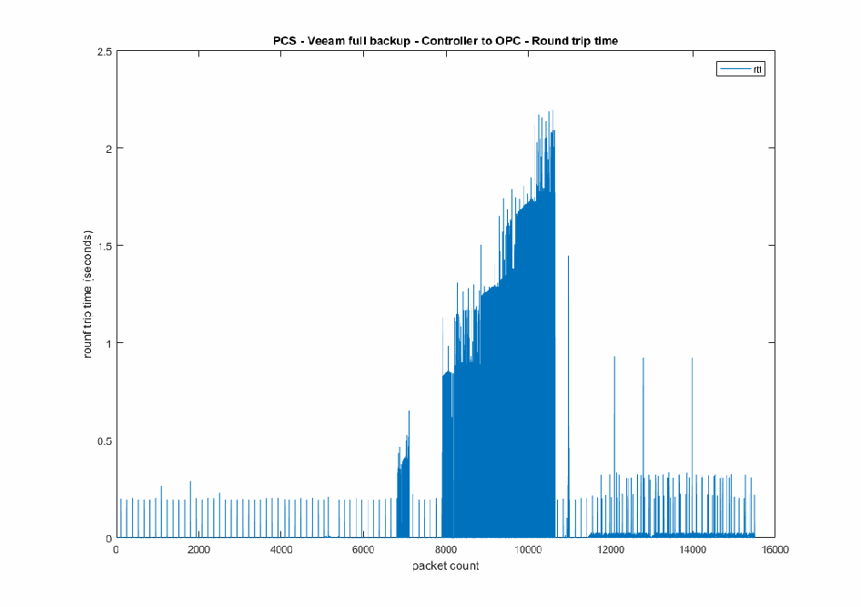
「PCS - Veeam full backup - Controller to OPC - Round trip time」と題したグラフです。縦軸は「rounf trip time (seconds)」（往復時間、秒。表記は原本どおり）で 0〜2.5、横軸は「packet count」（パケット数）で 0〜16000 です。凡例は「rtt」です。往復時間はおおむね 0.2 秒以下で小さな突出が規則的に現れ、約7400〜10500パケットの間で急に約1〜2.1秒まで上昇し、その後は低い水準に戻って約0.8秒までの突出がいくつか見られます。
Figure 4-7 Plot of packet round trip time from Controller to OPC during Veeam full backup
図 4-7 Veeam フルバックアップ中の Controller から OPC までのパケットのラウンドトリップ時間のプロット
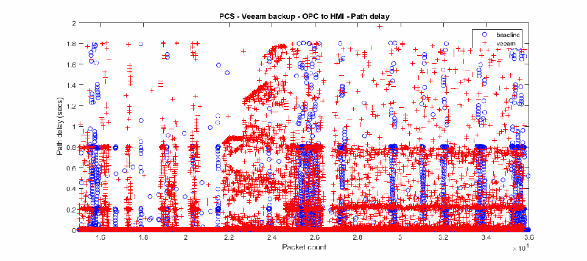
「PCS - Veeam backup - OPC to HMI - Path delay」と題したグラフです。縦軸は「Path delay (secs)」（経路遅延、秒）で 0〜2、横軸は「Packet count」（パケット数）で約1.6〜3.6×10^4 です。凡例は「baseline」（青の丸）と「veeam」（赤の十字）です。どちらも 0〜約1.9秒の範囲に散らばっていますが、veeam の点のほうがはるかに密で、0.2秒付近と0.8秒付近に帯状に集まっています。
Figure 4-8 Plot of the path delay from OPC to HMI during Veeam full backup
図 4-8 Veeam フルバックアップ中の OPC から HMI までの経路遅延のプロット
Incremental backup should be considered. The amount of network resources consumed was much lower compare with a full backup. The round trip time from Controller to OPC during an incremental backup was increased only for a short amount of time.
増分バックアップを検討すべきです。消費されたネットワークリソースの量は、フルバックアップと比べてはるかに少なくなりました。増分バックアップ中の Controller から OPC までのラウンドトリップ時間は、短時間だけ増加しました。
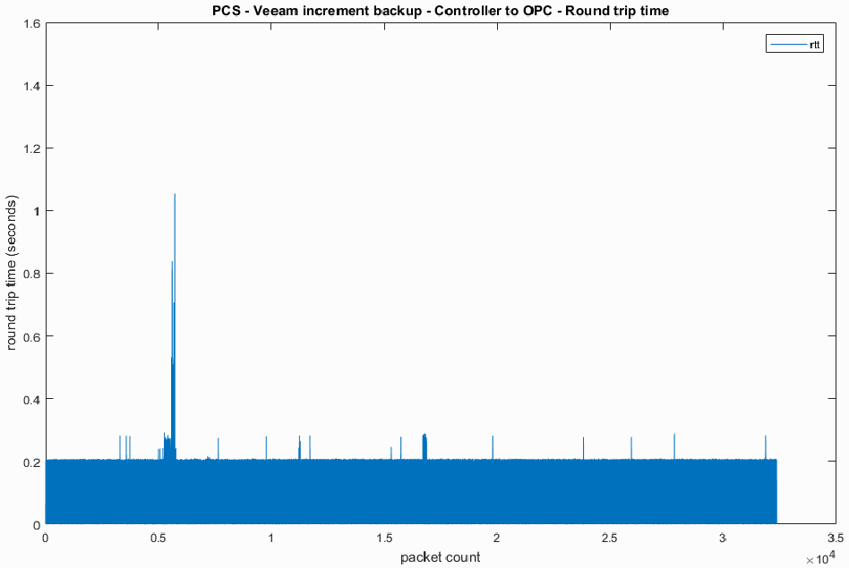
「PCS - Veeam increment backup - Controller to OPC - Round trip time」と題したグラフです。縦軸は「round trip time (seconds)」（往復時間、秒）で 0〜1.6、横軸は「packet count」（パケット数）で 0〜3.5×10^4 です。凡例は「rtt」です。往復時間は全体を通じて約0.2秒で、約0.57×10^4パケットの所に約1.05秒の突出が1つあり、約0.3秒までの小さな突出がいくつかあります。
Figure 4-9 Plot of the packet round trip time from Controller to OPC during Veeam incremental backup
図 4-9 Veeam 増分バックアップ中の Controller から OPC までのパケットのラウンドトリップ時間のプロット
There was a small performance impact to the manufacturing process observed during the full backup. The product flow was slightly lower, and the reactor pressure overshot the normal levels in the experiment.
フルバックアップ中に、製造プロセスへのわずかな性能上の影響が観測されました。実験では、製品流量がわずかに低下し、反応器の圧力が通常のレベルを超えてオーバーシュートしました。
It is hypothesized that the impacts were caused by increased network latency and traffic which caused a delay of the sensor and actuator information exchange between the Controller and the simulated plant. Therefore, degraded performance of the control loop caused a slight impact to the performance of the system. The ability of the Veeam backup to throttle the rate of backup according to the network condition helped reduce the impact to the network traffic and latency during the full backup.
これらの影響は、ネットワークの遅延とトラフィックの増加により、Controller とシミュレートされたプラントとの間のセンサーおよびアクチュエーターの情報交換が遅れたことが原因であると推測されます。そのため、制御ループの性能が低下し、システムの性能にわずかな影響が生じました。ネットワークの状況に応じてバックアップの速度を調整できる Veeam バックアップの機能は、フルバックアップ中のネットワークトラフィックと遅延への影響の低減に役立ちました。
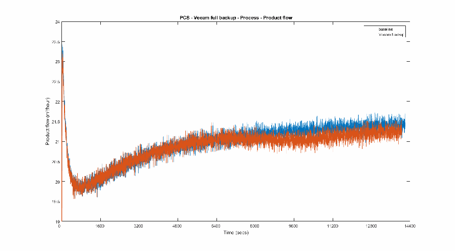
「PCS - Veeam full backup - Process - Product flow」と題したグラフです。縦軸は「Product flow (m³/hour)」（製品流量、m³/時）で 19〜24、横軸は「Time (secs)」（時間、秒）で 0〜14400 です。凡例は「baseline」（青）と「Veeam backup」（橙）です。どちらも開始直後に約23.5から約19.8へ下がり、その後約21〜21.5へ緩やかに上昇します。後半は Veeam backup の系列が baseline よりわずかに低くなっています。
Figure 4-10 Plot of the production flow of the manufacturing process during Veeam full backup
図 4-10 Veeam フルバックアップ中の製造プロセスの生産流量のプロット
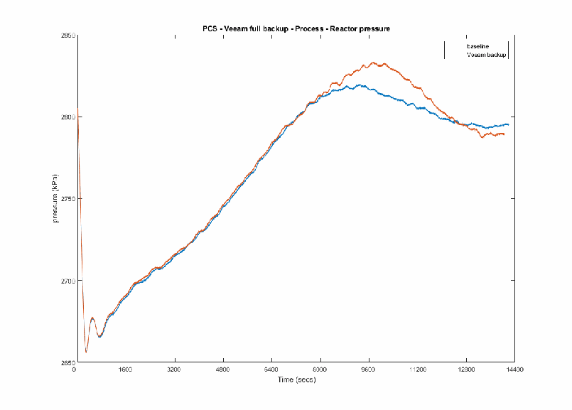
「PCS - Veeam full backup - Process - Reactor pressure」と題したグラフです。縦軸は「pressure (kPa)」（圧力、kPa）で 2650〜2850、横軸は「Time (secs)」（時間、秒）で 0〜14400 です。凡例は「baseline」（青）と「Veeam backup」（橙）です。どちらも開始直後に約2655まで下がり、その後ほぼ同じように上昇します。baseline は9000秒付近で約2820の最大値に達しますが、Veeam backup の系列は9800秒付近で約2833まで行き過ぎます。その後はどちらも約2790まで下がります。
Figure 4-11 Plot of the reactor pressure of the manufacturing process during Veeam full backup
図 4-11 Veeam フルバックアップ中の製造プロセスの反応器圧力のプロット
4.6.7 Links to Entire Performance Measurement Data Set
4.6.7 性能測定データセット全体へのリンク
•Veeam full backup KPI data
•Veeam フルバックアップの KPI データ
•Veeam full backup measurement data
•Veeam フルバックアップの測定データ
•Veeam incremental backup KPI data
•Veeam 増分バックアップの KPI データ
•Veeam incremental backup measurement data
•Veeam 増分バックアップの測定データ
4.7 Security Onion
4.7 Security Onion
4.7.1 Technical Solution Overview
4.7.1 技術ソリューションの概要
Security Onion is a free and open source Linux distribution for intrusion detection, enterprise cybersecurity monitoring, and log management. It includes Elasticsearch, Logstash, Kibana, Snort, Suricata, Bro, OSSEC, Sguil, Squert, NetworkMiner, and other cybersecurity tools.69
Security Onion は、侵入検知、エンタープライズのサイバーセキュリティ監視、およびログ管理のための、無料のオープンソースの Linux ディストリビューションです。Elasticsearch、Logstash、Kibana、Snort、Suricata、Bro、OSSEC、Sguil、Squert、NetworkMiner などのサイバーセキュリティツールが含まれています。69
Security Onion combines three core functions:
Security Onion は、3つの中核機能を組み合わせています。
•full packet capture
•完全なパケットキャプチャ
•network-based and host-based intrusion detection systems (NIDS and HIDS, respectively)
•ネットワークベースおよびホストベースの侵入検知システム（それぞれ NIDS と HIDS）
•and powerful analysis tools
•強力な分析ツール
Points to consider:
考慮すべき点：
•Open source software, available as an ISO distribution to deploy in any type of environment (physical or virtual).
•オープンソースソフトウェアであり、あらゆる種類の環境（物理または仮想）にデプロイできる ISO ディストリビューションとして入手できます。
•Collection of different open-source tools such as SNORT, BRO, OSSEC SGQUIL, KIBANA, ELSA etc. integrated into one product which otherwise would require a lot of manual work to integrate.
•SNORT、BRO、OSSEC、SGQUIL、KIBANA、ELSA などの異なるオープンソースツールの集合が、1つの製品に統合されています。そうでなければ、統合に多くの手作業が必要になります。
•Support for standalone instance and distributed deployment for large organizations.
•大規模な組織向けに、スタンドアロンのインスタンスと分散デプロイをサポートしています。
•Provides a front-end to Snort and BRO IDS which are natively command line-based.
•本来コマンドラインベースである Snort と BRO の IDS に、フロントエンドを提供します。
•Fully customizable rule-set. Has inbuilt detection rules to detect a variety of cyber-attacks and anomalies for both IT and OT environments.
•ルールセットは完全にカスタマイズ可能です。IT 環境と OT 環境の両方について、さまざまなサイバー攻撃や異常を検知するための検知ルールが組み込まれています。
•Learning curve associated. Familiarity with SNORT and BRO IDS rule-set.
•習得に時間がかかります。SNORT と BRO の IDS のルールセットに習熟している必要があります。
•Hardware resource intensive.
•ハードウェアリソースを多く消費します。
•No reporting capabilities out of the box.
•標準状態ではレポート機能がありません。
4.7.2 Technical Capabilities Provided by Solution
4.7.2 ソリューションが提供する技術的能力
Security Onion provides components of the following Technical Capabilities described in Section 6 of Volume 1:
Security Onionは、第1巻の第6節で説明した、次の技術的能力の構成要素を提供します。
•Network Boundary Protection
•ネットワーク境界保護
•Network Monitoring
•ネットワーク監視
•Event Logging
•イベントのログ記録
•Forensics
•フォレンジック
4.7.3 Subcategories Addressed by Implementing Solution
4.7.3 ソリューションの実装によって対処するサブカテゴリ
PR.AC-5, PR.DS-5, PR.MA-2, PR.PT-1, PR.PT-4, DE.AE-2, DE.AE-3, DE.CM-1, DE.CM-6, DE.CM-7, DE.DP-3, RS.AN-3
PR.AC-5, PR.DS-5, PR.MA-2, PR.PT-1, PR.PT-4, DE.AE-2, DE.AE-3, DE.CM-1, DE.CM-6, DE.CM-7, DE.DP-3, RS.AN-3
4.7.4 Architecture Map of Where Solution was Implemented
4.7.4 ソリューションを実装した場所のアーキテクチャマップ
![Network architecture map of the Westman process-based manufacturing system lab. Legend box: an orange line labeled "Mirrored Traffic for SNORT". An "Internet" cloud connects to "Corporate Network" and the "Manuf. System Router/Firewall". Management zone: "Microsoft ActiveDirectory/RADIUS 10.100.2.3" on "Management LAN – 10.100.2.0/24". Manufacturing DMZ zone: "DMZ Historian 10.100.1.4" on "Manufacturing DMZ LAN - 10.100.1.0/24". Cybersecurity LAN zone ("Cybersecurity LAN 10.100.0.0/24"): "NTP/PTP Clock 10.100.0.15", "TheHive Incident Resp. 10.100.0.5", "Nessus Vuln. Scanner 10.100.0.25", "Microsoft ActiveDirectory 10.100.0.13,17", "Symantec Antivirus - SEPM 10.100.0.5", "GTB Data Loss Prev. 10.100.0.175,176", "Veeam Backup & Replication 10.100.0.10", "Graylog Syslog 10.100.0.14", "Security Onion 10.100.0.26" (marked with the SNORT logo), "Windows WSUS 10.100.0.12". Plant zone: "PCS LAN Router 10.100.0.40/32 172.16.1.1" (also labeled 10.100.2.8, 172.16.2.1 and 172.16.3.1) and two switches labeled "Port Mirroring on Switch"; "Engineering Workstation 172.16.3.10" on "Engineering LAN – 172.16.3.0/24"; "HMI 172.16.1.4" and "Plant Controller 172.16.1.5" on "Control LAN – 172.16.1.0/24"; "Local Historian 172.16.2.4", "OPC Server 172.16.2.5" and "Supervisory PLC 172.16.2.102" on "Supervisory LAN – 172.16.2.0/24"; the Supervisory PLC connects via "DeviceNet to Field Devices" to the "Manufacturing Process" (a screen image of the process simulation). Orange lines labeled "Mirrored Traffic" run from the two switches and the router to a "Network Aggregator", and from the aggregator to the Security Onion server on the Cybersecurity LAN.](assets/ir-8183av2/p0156-figure-02.png)
Westman のプロセス型製造システムの実験環境のネットワーク構成図です。凡例: 橙の線が「Mirrored Traffic for SNORT」。「Internet」の雲が「Corporate Network」（企業ネットワーク）と「Manuf. System Router/Firewall」（製造システムのルーター／ファイアウォール）につながっています。Management（管理）区画には「Management LAN – 10.100.2.0/24」上の「Microsoft ActiveDirectory/RADIUS 10.100.2.3」、Manufacturing DMZ 区画には「Manufacturing DMZ LAN - 10.100.1.0/24」上の「DMZ Historian 10.100.1.4」があります。Cybersecurity LAN 区画（「Cybersecurity LAN 10.100.0.0/24」）には 「NTP/PTP Clock 10.100.0.15」、「TheHive Incident Resp. 10.100.0.5」、「Nessus Vuln. Scanner 10.100.0.25」、「Microsoft ActiveDirectory 10.100.0.13,17」、「Symantec Antivirus - SEPM 10.100.0.5」、「GTB Data Loss Prev. 10.100.0.175,176」、「Veeam Backup & Replication 10.100.0.10」、「Graylog Syslog 10.100.0.14」、「Security Onion 10.100.0.26」（SNORT のロゴ付き）、「Windows WSUS 10.100.0.12」 が並びます。Plant（工場）区画には 「PCS LAN Router 10.100.0.40/32 172.16.1.1」（10.100.2.8、172.16.2.1、172.16.3.1 の表示もあります）と、「Port Mirroring on Switch」と書かれた2つのスイッチがあり、「Engineering LAN – 172.16.3.0/24」上に「Engineering Workstation 172.16.3.10」、「Control LAN – 172.16.1.0/24」上に「HMI 172.16.1.4」と「Plant Controller 172.16.1.5」、「Supervisory LAN – 172.16.2.0/24」上に「Local Historian 172.16.2.4」「OPC Server 172.16.2.5」「Supervisory PLC 172.16.2.102」があります。Supervisory PLC は「DeviceNet to Field Devices」で「Manufacturing Process」（プロセスのシミュレーション画面の画像）につながります。「Mirrored Traffic」と書かれた橙の線が2つのスイッチとルーターから「Network Aggregator」へ、さらに Network Aggregator から Cybersecurity LAN の Security Onion サーバーへ伸びています。
4.7.5 Installation Instructions and Configurations
4.7.5 インストール手順と構成
Details of the solution implemented:
実装したソリューションの詳細：
| Name | Version | Hardware Details |
|---|---|---|
| Security Onion | 16.04.5.2 | Hyper-V Virtual Machine
|
| 名称 | バージョン | ハードウェアの詳細 |
|---|---|---|
| Security Onion | 16.04.5.2 | Hyper-V 仮想マシン
|
4.7.5.1 Security Onion Environment Setup
4.7.5.1 Security Onion 環境のセットアップ
1.A virtual machine running customized version of Ubuntu Linux 16.04 as provided by the Vendor with hardware specifications as described in the table above.
1.ベンダーが提供する、カスタマイズされたバージョンの Ubuntu Linux 16.04 が動作する仮想マシンです。ハードウェア仕様は上の表のとおりです。
2.Configured two network connections to the virtual machines as follows
2.仮想マシンに次のように構成された2つのネットワーク接続
Interface: eth0
Mode: Primary interface for management.
Interface: eth0
モード：管理用のプライマリインターフェースです。
Interface: eth1
Mode: Monitoring port with the connection originating from a Network Aggregator device that was configured to receive Mirrored traffic from all the three network devices of the plant.
Interface: eth1
モード：監視ポートです。接続元は、プラントの3つすべてのネットワークデバイスからミラーリングされたトラフィックを受信するように構成されたネットワークアグリゲーターデバイスです。
3.The guest OS IP information was set as follows:
3.ゲスト OS の IP 情報は、次のように設定しました。
Interface: eth0
IP address: 10.100.0.26
Gateway: 10.100.0.1
Subnet Mask: 255.255.255.0
DNS:10.100.0.174.7.5.2 Setup Instructions
4.7.5.2 セットアップ手順
1.Download the ISO image of Security Onion70 and deploy it on your Hyper-visor of choice.
1.Security Onion の ISO イメージ70 をダウンロードし、任意のハイパーバイザーにデプロイします。
2.Review the hardware requirements71 prior to proceeding with the next steps.
2.次の手順に進む前に、ハードウェア要件71 を確認します。
3.Setup the two network connections for the virtual machine before powering it ON as follows.
3.仮想マシンの電源を入れる前に、次のように2つのネットワーク接続を設定します。
•(eth0) for management IP address
•（eth0）管理用 IP アドレス用。
•(eth1) for the monitoring interface. This connection would be either from a SPAN port or a Network TAP which is receiving mirrored traffic from all network devices.
•（eth1）監視インターフェース用。この接続は、すべてのネットワークデバイスからミラーリングされたトラフィックを受信する SPAN ポートまたはネットワーク TAP のいずれかから来ます。
4.Power-On the VM, Complete the default OS setup. Perform a reboot.
4.VM の電源を入れ、デフォルトの OS セットアップを完了します。再起動を実行します。
5.Ensure to set the OS time-zone to UTC as Security Onion uses UTC by default. Changing time-zone can cause other issues.
5.Security Onion はデフォルトで UTC を使用するため、OS のタイムゾーンは必ず UTC に設定します。タイムゾーンを変更すると、他の問題が発生する可能性があります。
6.Login to the console locally and click on the Setup icon on the Desktop to configure the network interfaces. Reboot when done.6. Click on the Setup icon again to complete next phase of the setup.
6.コンソールにローカルでログインし、デスクトップの Setup アイコンをクリックしてネットワークインターフェースを構成します。完了したら再起動します。6. Setup アイコンをもう一度クリックして、セットアップの次の段階を完了します。
7.Click YES, Continue! and then select Evaluation Mode in the next screen for standalone deployments.
7.YES, Continue! をクリックし、次の画面で、スタンドアロンのデプロイ向けに Evaluation Mode を選択します。
8.Follow the on-screen options and complete the wizard. A system reboot would again be required.
8.画面のオプションに従って、ウィザードを完了します。ここでも、システムの再起動が必要になります。
9.Configure appropriate firewall rules for remote connectivity,
9.リモート接続のために、適切なファイアウォールルールを構成します。
a.Run sudo so-allow
a.sudo so-allow を実行します。
b.Select a – analyst option
b.a – analyst オプションを選択します。
c.Enter the IP address or ip-range of client-pc where you intend to access security onion interface from.
c.Security Onion のインターフェースにアクセスする予定のクライアント PC の IP アドレスまたは IP 範囲を入力します。
Instructions to setup a firewall72 are available from Security Onion.
ファイアウォールのセットアップ手順72 は、Security Onion から入手できます。
10.Run the command sudo nsm_sensor_ps-status to check the status of each component
10.コマンド sudo nsm_sensor_ps-status を実行して、各コンポーネントの状態を確認します。
11.Access the Security Onion application either via the SQUERT Web interface73 or via Kibana.74
11.SQUERT の Web インターフェース73 または Kibana74 のいずれかを介して、Security Onion アプリケーションにアクセスします。
4.7.5.3 Configuring Snort Updates
4.7.5.3 Snort 更新の構成
1.Register for an account on https://snort.org to be eligible for downloading the Registered Rule set. Upon registration, note down the oink code tied to your account.
1.登録ルールセット（Registered Rule set）をダウンロードする資格を得るため、https://snort.org でアカウントを登録します。登録後、アカウントに紐づけられた oink コードを控えておきます。
2.Copy-paste the OINK code in the rule_url parameter in /etc./nsm/pulledpork/pulledpork.conf file of the server and save the changes.
2.サーバーの /etc/nsm/pulledpork/pulledpork.conf ファイルにある rule_url パラメーターに OINK コードをコピーして貼り付け、変更を保存します。
rule_url=https://www.snort.org/reg-rules/|snortrules-snapshot.tar.gz|<oink-code>3.For systems with Internet Access,
3.インターネットにアクセスできるシステムの場合：
4.Uncomment & Set LOCAL_NIDS_RULE_TUNING=no in the /etc./nsm/securityonion.conf
4./etc./nsm/securityonion.conf で、LOCAL_NIDS_RULE_TUNING=no のコメントを解除して設定します。
5.Run the sudo rule-update command to update the rule set. This will download new rules from Snort.org and save them in /etc./nsm/rules/downloaded.rules file.
5.sudo rule-update コマンドを実行して、ルールセットを更新します。これにより、Snort.org から新しいルールがダウンロードされ、/etc/nsm/rules/downloaded.rules ファイルに保存されます。
6.For Air-Gapped environments (w/o Internet)
6.エアギャップ環境（インターネットなし）の場合：
a.Set LOCAL_NIDS_RULE_TUNING=yes in the securityonion.conf file
a.securityonion.conf ファイルで LOCAL_NIDS_RULE_TUNING=yes を設定します。
b.Download snort updates manually on a different system which has internet access and transfer these via USB device or network to /tmp folder on the Security Onion server.
b.インターネットにアクセスできる別のシステムで、Snort の更新を手動でダウンロードし、USB デバイスまたはネットワークを介して、Security Onion サーバーの /tmp フォルダーに転送します。
c.Run sudo rule-update
c.sudo rule-update を実行します。
4.7.5.4 Configuring SNORT Rule set
4.7.5.4 SNORT ルールセットの構成
1.Define the network variables such as $HOME_NET, $EXTERNAL_NET etc. as per your environment in the (snort.conf) at /etc./nsm/<hostname-MonitorInterface>/.
1./etc./nsm/<hostname-MonitorInterface>/ にある（snort.conf）で、$HOME_NET や $EXTERNAL_NET などのネットワーク変数を、環境に合わせて定義します。
2.Restart Snort services: sudo nsm_sensor_ps-restart --only-snort
2.Snort のサービスを再起動します：sudo nsm_sensor_ps-restart --only-snort
Below is a snippet of the snort.conf in our instance
次に、今回のインスタンスの snort.conf の抜粋を示します。
![Screenshot of a text editor showing a snippet of the lab snort.conf:
####################################################
# Step #1: Set the network variables. For more information, see README.variables
####################################################
# Setup the network addresses you are protecting
ipvar HOME_NET [192.168.0.0/16,10.0.0.0/8,172.16.0.0/12]
ipvar NETWORK_DEVICES [172.16.1.3,172.16.3.1,172.16.2.2,192.168.0.239,192.168.0.2,192.168.1.2]
ipvar ICS_DEVICES [172.16.2.102,172.16.4.102,192.168.0.30,192.168.0.60]
ipvar PCS_ICS_DEVICES [172.16.2.100/30]
# Set up the external network addresses. Leave as "any" in most situations
ipvar EXTERNAL_NET !$HOME_NET
# List of DNS servers on your network
ipvar DNS_SERVERS [10.100.0.17]
# List of SMTP servers on your network
ipvar SMTP_SERVERS $HOME_NET](assets/ir-8183av2/p0159-figure-01.png)
実験環境の snort.conf の一部をテキストエディターで表示した画面です。ネットワーク変数の設定（Step #1）に関するコメントと、README.variables を参照する旨の説明があります。保護対象のネットワークアドレスを設定する箇所では、ipvar HOME_NET を [192.168.0.0/16,10.0.0.0/8,172.16.0.0/12]、NETWORK_DEVICES を [172.16.1.3,172.16.3.1,172.16.2.2,192.168.0.239,192.168.0.2,192.168.1.2]、ICS_DEVICES を [172.16.2.102,172.16.4.102,192.168.0.30,192.168.0.60]、PCS_ICS_DEVICES を [172.16.2.100/30] と設定しています。外部ネットワークアドレスについては、通常は「any」のままにするとのコメントがあり、ipvar EXTERNAL_NET は !$HOME_NET です。また、ネットワーク上の DNS サーバーの一覧として DNS_SERVERS を [10.100.0.17]、SMTP サーバーの一覧として SMTP_SERVERS を $HOME_NET と設定しています。
3.To define custom rule set:
3.カスタムのルールセットを定義するには、次のようにします。
a.Define them in /etc./nsm/rules/local.rules file
a./etc./nsm/rules/local.rules ファイルに定義します。
b.Update the Ruleset by running sudo rule-update
b.sudo rule-update を実行して、ルールセットを更新します。
c.Run tail -n 100 /etc./nsm/rules/downloaded.rules to confirm if the local.rules got merged successfully into the downloaded.rules file
c.tail -n 100 /etc./nsm/rules/downloaded.rules を実行して、local.rules が downloaded.rules ファイルに正常にマージされたかどうかを確認します。
4.Review the /etc./nsm/<interface>/snortu-1.log if the defined local rules do not appear in the downloaded.rules file.
4.定義したローカルルールが downloaded.rules ファイルに現れない場合は、/etc./nsm/<interface>/snortu-1.log を確認します。
4.7.5.5 Rules Implemented to Monitor our Plant Network
4.7.5.5 プラントネットワークの監視のために実装したルール
Shown below are some of the rules used in our local.rules file to detect common IT and ICS- specific anomalies.
次に、一般的な IT および ICS 固有の異常を検知するために、local.rules ファイルで使用したルールの一部を示します。
![Two boxes of Snort rules from the lab local.rules file, with comment headings highlighted in cyan:
# Detect NMAP scan, ICMP attack , TCP-SYN Flood attack
alert UDP any any -> $PCS_ICS_DEVICES any (msg: "Nmap UDP Scan"; sid:10000002; rev:1;)
alert icmp any any -> $HOME_NET any (msg: "NMAP ping sweep Scan"; dsize:0; sid:10000004; rev:1;)
alert icmp any any -> $HOME_NET any (msg: "Ping Large ICMP Packet"; dsize:>800; classtype:bad-unknown; sid:10000030; rev:1;)
alert tcp any any -> $HOME_NET [80,22,443] (msg: "TCP SYN flood attack detected"; flow: stateless; flags:S,12; detection_filter:track by_dst, count 100, seconds 10; classtype: attempted-recon; sid:10000005; rev:1;)
# Detect FTP Attempt to Public IP-address & other FTP events
alert tcp $HOME_NET any -> $EXTERNAL_NET 21 (msg: "FTP attempt to Public IP"; sid:10000003; rev:1;)
alert tcp $HOME_NET any -> any 21 (msg: "FTP upload attempt"; content: "|53 54 4f 52|"; sid:10000020; rev:1;)
alert tcp any 21 -> $HOME_NET any (msg: "FTP file successfully uploaded"; content: "|54 72 61 6e 73 66 65 72 20 63 6f 6d 70 6c 65 74 65|"; sid:10000027; rev:1;)
alert tcp any 21 -> $HOME_NET any (msg: "FTP PDF file successfully uploaded"; content: ".pdf"; sid:10000031; rev:1;)
# Detect Credit card number in cleartext
alert tcp any any <> any any (pcre:"/5\d{3}(\s|-)?\d{4}(\s|-)?\d{4}(\s|-)?\d{4}/"; msg: "MasterCard number detected in clear text"; content:"number"; nocase; sid:10000013; rev:1;)
alert tcp any any <> any any (pcre:"/3\d{3}(\s|-)?\d{6}(\s|-)?\d{5}/"; msg: "American Express number detected in clear text"; content:"number";nocase; sid:10000014; rev:1;)
alert tcp any any <> any any (pcre:"/4\d{3}(\s|-)?\d{4}(\s|-)?\d{4}(\s|-)?\d{4}/"; msg: "Visa number detected in clear text"; content:"number";nocase; sid:10000015; rev:1;)
# Telnet activity monitoring
alert tcp $TELNET_SERVERS 23 -> $HOME_NET any (msg: "Telnet Password in Clear text"; content: "Password"; sid:10000010;rev:1;)
alert tcp $HOME_NET any -> $TELNET_SERVERS 23 (msg: "TELNET login attempt"; classtype:default-login-attempt; sid:10000007; rev:1;)
alert tcp $HOME_NET any -> $TELNET_SERVERS 23 (msg: "Telnet Rockwell Automation Default Password"; content: "|73 77 69 74 63 68|"; sid:10000008;rev:1;)
alert tcp any 23 -> any any (msg: "TELNET login failed"; flow:from_server,established; content:"Login failed"; fast_pattern:only; nocase; classtype:bad-unknown; sid:10000038; rev:1;)](assets/ir-8183av2/p0160-figure-01.png)
実験環境の local.rules にある Snort ルールを示す2つの枠です。水色で強調されたコメント見出しは「# Detect NMAP scan, ICMP attack , TCP-SYN Flood attack」です。続くルールは、UDP の Nmap スキャン、ICMP の NMAP ping sweep、800 バイトを超える ICMP パケット、宛先ごとに10秒間で100件の SYN を検知する TCP SYN フラッドを警告します。次の見出しは「# Detect FTP Attempt to Public IP-address & other FTP events」で、公開 IP への FTP 接続、FTP アップロードの試み、FTP ファイルのアップロード成功、FTP PDF ファイルのアップロード成功を検知します。次の見出し「# Detect Credit card number in cleartext」の下では、正規表現により平文の MasterCard、American Express、Visa 番号を検知します。最後の見出しは「# Telnet activity monitoring」で、平文の Telnet パスワード、TELNET ログインの試み、Rockwell Automation の既定パスワード（switch）、TELNET ログイン失敗を検知するルールが並びます。
Snort Rules for ICS/ SCADA75
ICS／SCADA 向けの Snort ルール75
実験環境で使用した ICS/SCADA 固有の Snort ルールを示す枠です。水色で強調された見出しは「#ICS-SCADA specific rules [4]」です。ルールは、Rockwell ファームウェア変更の試み（ポート44818、CVE-2012-6437 および Cisco のアラートへの参照）、ICS/SCADA PLC の Web アクセスの試み、TwinCAT PLC への DoS の試み（ポート22350、2000バイト超、Beckhoff への参照）、Modbus のユーザー定義ファンクションコード65～72および100～110、Modbus のコイル読み出しで入力数が多すぎる場合、外部ソースからの複数レジスタ・単一コイル・複数コイルの書き込みを検知します。Modbus ルールには該当プロトコル仕様への URL 参照が記載されています。 ［第三者の画像。第三者の著作物のため、この非公式サイトには掲載していません。原本 PDF を参照してください。］
![A box of further Snort rules from the lab local.rules file, with comment headings highlighted in cyan:
# Accessing switch via Web URL & use of default password
alert tcp any -> $NETWORK_DEVICES 80 (msg: " WEBAPP Netgear Default Password"; flow:established,to_server; content:"POST"; nocase; http_method; uricontent:"/base/cheetah_login.html"; content:"password"; nocase; sid:1000009; rev:1;)
alert tcp $HOME_NET any -> $NETWORK_DEVICES $HTTP_PORTS (msg: "WEBAPP Rockwell Automation default password login attempt"; flow:to_server,established; content:"Authorization|3A|"; nocase; http_header; content:"YWRtaW5pc3RyYXRvcjptbDE0MDA="; fast_pattern:only; http_header; metadata:service http; classtype:default-login-attempt; sid:10000011; rev:1;)
# SSH Activity monitoring
alert tcp any any -> $EXTERNAL_NET 22 (msg: "SSH Attempt to Public Host"; sid:10000018; rev:1;)
alert tcp any any -> $HOME_NET 22 (msg: "Potential SSH Brute Force Attack"; flow:to_server, established; flags:S+; detection_filter:track by_src, count 30 , seconds 10; classtype:attempted-dos; priority:1; sid:10000006; rev:1;)
# DNS traffic to social media websites
alert udp $HOME_NET any -> $DNS_SERVERS 53 (msg: "DNS Request to Twitter.com Detected"; content: "|6e 69 73 74|"; sid:10000016; rev:1;)
alert udp $HOME_NET any -> $DNS_SERVERS 53 (msg: "DNS Request to Facebook.com Detected"; content: "|66 61 63 65 62 6f 6f 6b|"; sid:10000017; rev:1;)
# File upload activity to a public web server
alert tcp $HOME_NET any -> $EXTERNAL_NET $HTTP_PORTS (msg: "WEB-PHP file upload attempt"; flow:to_server, established; uricontent:"/upload.php"; nocase; content:"filename="; reference:bugtraq,3361; reference:cve,2001-1032; classtype:attempted-admin; sid:10000029; rev:1;)
alert tcp $Robotics_devices any -> $EXTERNAL_NET $HTTP_PORTS (msg: "Web Access to Public IP attempted"; sid:10000039; rev:1;)](assets/ir-8183av2/p0162-figure-01.png)
実験環境の local.rules にある Snort ルールの続きです。水色で強調された見出し「# Accessing switch via Web URL & use of default password」の下には、Netgear の既定パスワードを使った Web ログインと、Rockwell Automation の既定パスワードによるログイン試行を検知するルールがあります。次の見出し「# SSH Activity monitoring」の下には、公開ホストへの SSH 接続試行と、送信元ごとに10秒間で30件の SYN を検知する SSH 総当たり攻撃の可能性を警告するルールがあります。「# DNS traffic to social media websites」の下には、Twitter.com および Facebook.com への DNS 要求を検知するルールがあります。最後の見出し「# File upload activity to a public web server」の下には、/upload.php へのファイルアップロード試行と、ロボット機器から公開 IP への Web アクセス試行を検知するルールがあります。
4.7.5.6 Tuning Security Onion:
4.7.5.6 Security Onion のチューニング
1.Set the DAYSTOKEEP parameter in the /etc./nsm/securityonion.conf file to change the database retention period. The default retention period for Sguil database is 30 days
1.データベースの保持期間を変更するには、/etc/nsm/securityonion.conf ファイルの DAYSTOKEEP パラメーターを設定します。Sguil データベースのデフォルトの保持期間は30日です。
2.To use any of the commented-out rules from downloaded.rules file, note down the Generator ID (GID) and Signature ID (SID) value defined in the rule that’s commented out and list them in /etc./nsm/pulledpork/enablesid.conf file. Avoid directly uncommenting these in the downloaded.rules file.
2.downloaded.rules ファイルでコメントアウトされているルールを使用するには、コメントアウトされているルールに定義された Generator ID（GID）と Signature ID（SID）の値を控え、/etc./nsm/pulledpork/enablesid.conf ファイルに記載します。downloaded.rules ファイルでこれらのコメントを直接解除するのは避けます。
3.To silence any false alerts, note down the Generator ID (GID) and Signature ID (SID) value of the rule that is generating the alert and define them in the /etc./nsm/pulledpork/disablesid.conf file. Shown on the next page is a snippet from our disablesid.conf file showing the SIDs we have disabled.
3.誤ったアラートを抑制するには、アラートを生成しているルールの Generator ID（GID）と Signature ID（SID）の値を控え、/etc./nsm/pulledpork/disablesid.conf ファイルに定義します。次のページに、無効化した SID を示す、今回の disablesid.conf ファイルの抜粋を示します。
# example disablesid.conf V3.1
# Example of modifying state for individual rules
# 1:1034,1:9837,1:1270,1:3390,1:710,1:1249,3:13010
3:19187
119:19 # http_inspect: LONG HEADER
123:8 # frag3: Fragmentation overlap
128:4 # ssh: Protocol mismatch
129:4 # stream5: TCP Timestamp is outside of PAWS window
129:5 # stream5: Bad segment, overlap adjusted size less than/equal 0
129:7 # stream5: Limit on number of overlapping TCP packets reached
129:12 # stream5: TCP Small Segment Threshold Exceeded4.Follow the instructions on the wiki for managing the size of pcap files to maintain the storage space on server.
4.サーバーのストレージ容量を維持するため、pcap ファイルのサイズを管理する手順については、wiki の手順に従います。
4.7.5.7 BRO IDS Setup
4.7.5.7 BRO IDS のセットアップ
Zeek (formerly known as BRO) is a powerful IDS that comes preinstalled in Security Onion server alongside Snort. It is beyond the scope of this document to explain detailed working of BRO. At a high level,
Zeek（旧称 BRO）は、Snort とともに Security Onion サーバーにプリインストールされている、強力な IDS です。BRO の詳細な動作を説明することは、本書の範囲を超えます。大まかには、次のとおりです。
1.Place any custom scripts for BRO in /opt/bro/share/bro/policy/ directory. Refer to the security onion wiki76 for additional reference on BRO.
1.BRO 用のカスタムスクリプトは、/opt/bro/share/bro/policy/ ディレクトリに配置します。BRO に関する追加の参考情報は、Security Onion の wiki76 を参照してください。
2.Enable Windows SMB File share monitoring as follows,
2.Windows SMB ファイル共有の監視を、次のように有効にします。
a.Add the below line at the end of /opt/bro/share/bro/site/local.bro file
a./opt/bro/share/bro/site/local.bro ファイルの末尾に、次の行を追加します。
@load policy/protocols/smbb.Restart BRO: sudo nsm_sensor_ps-restart --only-bro
b.BRO を再起動します：sudo nsm_sensor_ps-restart --only-bro
4.7.5.8 OSSEC Setup
4.7.5.8 OSSEC のセットアップ
Ossec is a Host Intrusion Detection System (HIDS) supported on both Windows & Linux platforms. The OSSEC server (now replaced with Wazuh) comes pre-installed with Security Onion. It is beyond the scope of this document to explain detailed working of the OSSEC product. The Ossec official website and other documentation links under References can be a useful source.
Ossec は、Windows と Linux の両方のプラットフォームでサポートされている、ホスト型侵入検知システム（HIDS）です。OSSEC サーバー（現在は Wazuh に置き換えられています）は、Security Onion にプリインストールされています。OSSEC 製品の詳細な動作を説明することは、本書の範囲を超えます。Ossec の公式 Web サイトと、参考文献に記載したその他の文書へのリンクが参考になります。
1.Download the Ossec agent installer77 specific to your Operating System.
1.お使いのオペレーティングシステム向けの Ossec エージェントのインストーラー77 をダウンロードします。
2.Copy over the agent to the client system and run the setup process using the instructions mentioned on the Ossec website. During the install, mention the IP address of Security Onion server as the IP address of Ossec server.
2.エージェントをクライアントシステムにコピーし、Ossec の Web サイトに記載された手順に従って、セットアッププロセスを実行します。インストール中に、Ossec サーバーの IP アドレスとして、Security Onion サーバーの IP アドレスを指定します。
3.Run the command so-allow to manage firewall settings on the Security Onion server to receive data from Ossec clients.78
3.コマンド so-allow を実行して、Ossec クライアントからのデータを受信するための Security Onion サーバーのファイアウォール設定を管理します。78
4.Add any custom OSSEC rules for monitoring to the local_rules.xml file under /var/ossec/rules directory. If a decoder is required to parse custom logs, it should be defined under in local_decoder.xml file under /var/ossec/etc. directory.
4.監視用のカスタム OSSEC ルールは、/var/ossec/rules ディレクトリの local_rules.xml ファイルに追加します。カスタムログを解析するためにデコーダーが必要な場合は、/var/ossec/etc ディレクトリの local_decoder.xml ファイルに定義します。
5.View the Ossec alerts either from Kibana Interface or Squert web interface
5.Ossec のアラートは、Kibana のインターフェースまたは Squert の Web インターフェースのいずれかで表示します。
6.To monitor USB drive detection using OSSEC:
6.OSSEC を使用して USB ドライブの検出を監視するには、次のようにします。
a.Add the following lines79 to the local Ossec.conf file on the Windows endpoint
a.Windows エンドポイントのローカルの Ossec.conf ファイルに、次の行79 を追加します。
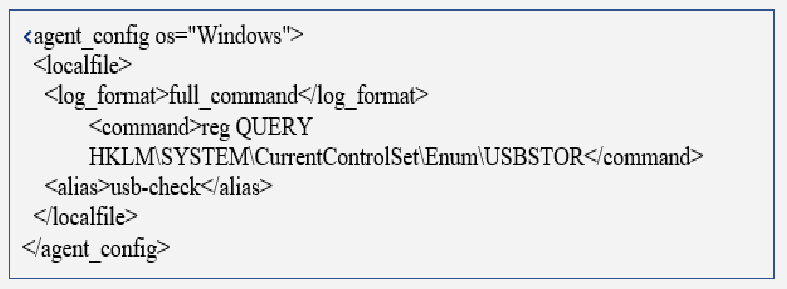
Windows エンドポイントに追加した OSSEC エージェントの設定行を示す枠です： <agent_config os="Windows"> <localfile> <log_format>full_command</log_format> <command>reg QUERY HKLM\SYSTEM\CurrentControlSet\Enum\USBSTOR</command> <alias>usb-check</alias> </localfile> </agent_config>
b.Add the following lines to the /var/ossec/rules /local_rules.xml file on the Security Onion server to generate an alert
b.アラートを生成するため、Security Onion サーバーの /var/ossec/rules /local_rules.xml ファイルに、次の行を追加します。
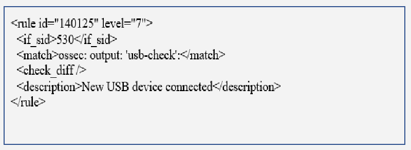
Security Onion サーバーの local_rules.xml に追加した OSSEC ルールを示す枠です： <rule id="140125" level="7"> <if_sid>530</if_sid> <match>ossec: output: 'usb-check':</match> <check_diff /> <description>New USB device connected</description> </rule>
7.To monitor for Unauthorized assets on the network:
7.ネットワーク上の未認可の資産を監視するには、次のようにします。
a.Install the arpwatch package on the Security Onion server
a.Security Onion サーバーに arpwatch パッケージをインストールします。
b.Run arpwatch -i <interface> command to start the service
For instance: arpwatch -i eth1 where eth1 is monitoring port.
b.arpwatch -i <interface> コマンドを実行して、サービスを開始します。
例：arpwatch -i eth1。ここで eth1 は監視ポートです。
c.Add a new rule to the local_rules.xml file as shown below. This references this inbuilt decoder at /var/ossec/etc./arpwatch_decoder.xml and alerts when a new device is plugged into our network
c.次に示すように、local_rules.xml ファイルに新しいルールを追加します。このルールは、/var/ossec/etc/arpwatch_decoder.xml にある組み込みデコーダーを参照し、新しいデバイスがネットワークに接続されたときにアラートを出します。
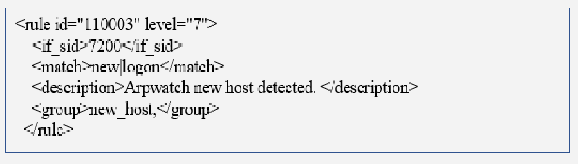
arpwatch が報告した新しいホスト用に local_rules.xml に追加した OSSEC ルールを示す枠です： <rule id="110003" level="7"> <if_sid>7200</if_sid> <match>new|logon</match> <description>Arpwatch new host detected. </description> <group>new_host,</group> </rule>
d.Restart OSSEC server after adding any local /rules with the commandsudo service ossec-hids-server restart
d.ローカルの /rules を追加した後は、次のコマンドで OSSEC サーバーを再起動します。sudo service ossec-hids-server restart
The image below shows a sample alert in Squert Web Interface, when a new system was physically connected to the network:
次の画像は、新しいシステムがネットワークに物理的に接続されたときの、Squert の Web インターフェースでのアラートの例を示しています。
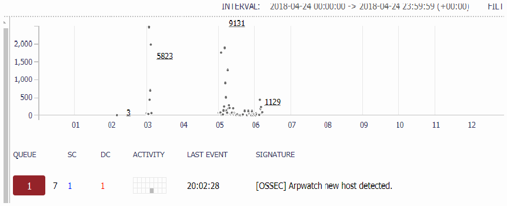
実験環境での警告の例を表示した Squert の Web 画面です。見出しは「INTERVAL: 2018-04-24 00:00:00 -> 2018-04-24 23:59:59 (+00:00)」です。時間帯ごとの事象数を点で示すグラフ（縦軸 0〜2,000、横軸 01〜12 時）に、3、5823、9131、1129 の数値が付いています。その下の QUEUE、SC、DC、ACTIVITY、LAST EVENT、SIGNATURE の列の表に、QUEUE 1、SC 7、DC 1 と 1、LAST EVENT 20:02:28、SIGNATURE「[OSSEC] Arpwatch new host detected.」の1行があります。
Note: This package relies on the local ARP cache of the system to detect new devices.
注：このパッケージは、新しいデバイスを検出するために、システムのローカル ARP キャッシュに依存しています。
8.To monitor for Specific events from Windows hosts using OSSEC
8.OSSEC を使用して Windows ホストの特定のイベントを監視するには、次のようにします。
•Note down the EventID to alert on from the Event Viewer. For instance, assume you need to monitor EventID 1001 belonging to Factory Talk Service, which is the Event generated for any login failures from Rockwell Factory Talk software.
•イベントビューアーから、アラートの対象とする EventID を控えます。たとえば、Rockwell Factory Talk ソフトウェアのログイン失敗時に生成されるイベントである、Factory Talk Service の EventID 1001 を監視する必要があるとします。
［第三者の画像。第三者の著作物のため、この非公式サイトには掲載していません。原本 PDF を参照してください。］
•Edit the local ossec.conf of the client to include this EventID in question under the <location> attribute of the Event category. For instance:
•クライアントのローカルの ossec.conf を編集し、Event カテゴリの <location> 属性の下に、この EventID を含めます。例：
［第三者の画像。第三者の著作物のため、この非公式サイトには掲載していません。原本 PDF を参照してください。］
•Define a corresponding rule in the local_rules.xml file to generate an alert. Ensure to set level >=7 for Ossec to generate an alert. For instance:
•アラートを生成するため、local_rules.xml ファイルに、対応するルールを定義します。Ossec がアラートを生成するよう、必ずレベルを >=7 に設定します。例：

OSSEC の local_rules.xml の記述例を示すテキストボックスです：<group name="syslog,"> <rule id="110001" level="0"> <if_sid>18104</if_sid> <match>FactoryTalkDiagnostics</match> <description>FactoryTalk Audit Event</description> </rule> <rule id="110002" level="7"> <if_sid>110001</if_sid> <match>failure</match> <description>FactoryTalk Administration Console login failure</description> </rule>。下端の最後の行は切れていて判読できません。
Lessons Learned:
得られた教訓：
The full packet capture feature in Security Onion can fill up the hard disk space quickly depending on the amount of network traffic in your environment. Ensure to plan and allocate substantial amount of storage for the server along with configuring the necessary data retention options in securityonion.conf file. Trimming your pcaps can allow you to store them for longer periods of time.80
Security Onion の完全なパケットキャプチャ機能は、環境内のネットワークトラフィックの量によっては、ハードディスクの空き容量をすぐに埋め尽くす可能性があります。securityonion.conf ファイルで必要なデータ保持オプションを設定するとともに、サーバーに相当量のストレージを計画し、割り当てるようにします。pcap を切り詰めることで、より長い期間保存できます。80
4.7.6 Highlighted Performance Impacts
4.7.6 特記された性能への影響
No performance measurement experiments were performed for the use of Security Onion due to its installation location and how it was used (i.e., the software performed passive analysis of network traffic external to the manufacturing system).
Security Onion の使用については、インストール場所と使用方法（すなわち、製造システム外部のネットワークトラフィックを受動的に分析するソフトウェア）を理由に、性能測定実験を実施しませんでした。
4.7.7 Links to Entire Performance Measurement Data Set
4.7.7 性能測定データセット全体へのリンク
N/A
N/A
4.8 Cisco AnyConnect VPN
4.8 Cisco AnyConnect VPN
4.8.1 Technical Solution Overview
4.8.1 技術ソリューションの概要
The AnyConnect Secure Mobility Client81 is a modular endpoint software product by Cisco. It provides VPN access through Secure Sockets Layer (SSL) and IPsec IKEv2 and also offers enhanced security through various built-in modules. AnyConnect clients are available across a broad set of platforms, including Windows, macOS, Linux, iOS, Android, Windows Phone/Mobile, BlackBerry, and ChromeOS.
AnyConnect Secure Mobility Client81 は、Cisco が提供するモジュール式のエンドポイントソフトウェア製品です。Secure Sockets Layer（SSL）と IPsec IKEv2 を通じて VPN アクセスを提供するとともに、組み込まれたさまざまなモジュールによって強化されたセキュリティも提供します。AnyConnect クライアントは、Windows、macOS、Linux、iOS、Android、Windows Phone/Mobile、BlackBerry、ChromeOS など、幅広いプラットフォームで利用できます。
Points to consider:
考慮すべき点：
•Provides additional cybersecurity in the form of Web Security and DNS-Based security.
•Web セキュリティと DNS ベースのセキュリティという形で、追加のサイバーセキュリティを提供します。
•OS Platform independent: The VPN clients are supported on Windows, Mac and Linux.
•OS プラットフォームに依存しません。VPN クライアントは、Windows、Mac、Linux でサポートされています。
•Administrators can control which networks or resources for endpoints to connect. It provides an IEEE 802.1X supplicant that can be provisioned as part of authentication, authorization, and accounting (AAA) capabilities along with some unique encryption technologies such as MACsec IEEE 802.1AE.
•管理者は、エンドポイントが接続できるネットワークやリソースを制御できます。認証・認可・アカウンティング（AAA）機能の一部としてプロビジョニングできる IEEE 802.1X サプリカントと、MACsec IEEE 802.1AE などの独自の暗号化技術を提供します。
•Cisco Proprietary Product. This replaces the earlier free product called AnyConnect VPN client. You must either have a Cisco Adaptive Security appliance (ASA) Firewall or Cisco Firepower Services Appliance and an active AnyConnect Secure Mobility Client license.
•Cisco の独自製品です。これは、以前の無料製品である AnyConnect VPN クライアントに代わるものです。Cisco Adaptive Security Appliance（ASA）ファイアウォールまたは Cisco Firepower Services Appliance と、有効な AnyConnect Secure Mobility Client のライセンスのいずれかが必要です。
4.8.2 Technical Capabilities Provided by Solution
4.8.2 ソリューションが提供する技術的能力
Cisco AnyConnect VPN provides components of the following Technical Capabilities described in Section 6 of Volume 1:
Cisco AnyConnect VPN は、第1巻の第6節で説明した、次の技術的能力の構成要素を提供します。
•Secure Remote Access
•セキュアなリモートアクセス
•Data Replication
•データレプリケーション
4.8.3 Subcategories Addressed by Implementing Solution
4.8.3 ソリューションの実装によって対処するサブカテゴリ
PR.AC-5, PR.IP-4, PR.MA-2
PR.AC-5, PR.IP-4, PR.MA-2
4.8.4 Architecture Map of Where Solution was Implemented
4.8.4 ソリューションを実装した場所のアーキテクチャマップ
![Network architecture map of the Westman process-based manufacturing system lab. Legend box: a globe-and-shield icon and a red line labeled "Cisco AnyConnect VPN". A "Remote user with Cisco AnyConnect client installed on PC" connects over an "SSL Tunnel" (red dashed line) to the "Internet" cloud; the red dashed line continues past "Corporate Network" to the "Manuf. System Router/Firewall" (marked with the VPN icon), down through the Cybersecurity LAN to the "PCS LAN Router", and on to the Engineering LAN and Control LAN. Management zone: "Microsoft ActiveDirectory/RADIUS 10.100.2.3" on "Management LAN – 10.100.2.0/24". Manufacturing DMZ zone: "DMZ Historian 10.100.1.4" on "Manufacturing DMZ LAN - 10.100.1.0/24". Cybersecurity LAN zone ("Cybersecurity LAN 10.100.0.0/24"): "Open-Audit 10.100.0.177", "TheHive Incident Resp. 10.100.0.5", "Nessus Vuln. Scanner 10.100.0.25", "Microsoft ActiveDirectory 10.100.0.13,17", "Symantec Antivirus - SEPM 10.100.0.5", "GTB Data Loss Prev. 10.100.0.175,176", "Veeam Backup & Replication 10.100.0.10", "Graylog Syslog 10.100.0.14", "Windows WSUS 10.100.0.12", "NTP/PTP Clock 10.100.0.15". Plant zone: "PCS LAN Router 10.100.0.40 172.16.1.1 172.16.3.1" (also labeled 10.100.2.8 and 172.16.2.1); "Engineering Workstation 172.16.3.10" on "Engineering LAN – 172.16.3.0/24"; "HMI 172.16.1.4" and "Plant Controller 172.16.1.5" on "Control LAN – 172.16.1.0/24" (red solid lines mark the Engineering Workstation and the HMI); "Local Historian 172.16.2.4", "OPC Server 172.16.2.5" and "Supervisory PLC 172.16.2.102" on "Supervisory LAN – 172.16.2.0/24"; the Supervisory PLC connects via "DeviceNet to Field Devices" to the "Manufacturing Process" (a screen image of the process simulation).](assets/ir-8183av2/p0169-figure-02.png)
Westman のプロセス型製造システムの実験環境のネットワーク構成図です。凡例: 地球と盾のアイコンと赤い線が「Cisco AnyConnect VPN」。「Remote user with Cisco AnyConnect client installed on PC」（Cisco AnyConnect クライアントを入れた PC の遠隔利用者）が「SSL Tunnel」（赤い破線）で「Internet」の雲につながり、赤い破線は「Corporate Network」の横を通って VPN のアイコンが付いた「Manuf. System Router/Firewall」（製造システムのルーター／ファイアウォール）に至り、Cybersecurity LAN を下って「PCS LAN Router」から Engineering LAN と Control LAN へ続きます。Management（管理）区画には「Management LAN – 10.100.2.0/24」上の「Microsoft ActiveDirectory/RADIUS 10.100.2.3」があります。Manufacturing DMZ 区画には「Manufacturing DMZ LAN - 10.100.1.0/24」上の「DMZ Historian 10.100.1.4」があります。Cybersecurity LAN 区画（「Cybersecurity LAN 10.100.0.0/24」）には「Open-Audit 10.100.0.177」「TheHive Incident Resp. 10.100.0.5」「Nessus Vuln. Scanner 10.100.0.25」「Microsoft ActiveDirectory 10.100.0.13,17」「Symantec Antivirus - SEPM 10.100.0.5」「GTB Data Loss Prev. 10.100.0.175,176」「Veeam Backup & Replication 10.100.0.10」「Graylog Syslog 10.100.0.14」「Windows WSUS 10.100.0.12」「NTP/PTP Clock 10.100.0.15」があります。Plant（工場）区画には「PCS LAN Router 10.100.0.40 172.16.1.1 172.16.3.1」（10.100.2.8、172.16.2.1 の表示もあります）、「Engineering LAN – 172.16.3.0/24」上の「Engineering Workstation 172.16.3.10」、「Control LAN – 172.16.1.0/24」上の「HMI 172.16.1.4」と「Plant Controller 172.16.1.5」（Engineering Workstation と HMI には赤い実線が引かれています）、「Supervisory LAN – 172.16.2.0/24」上の「Local Historian 172.16.2.4」「OPC Server 172.16.2.5」「Supervisory PLC 172.16.2.102」があり、Supervisory PLC は「DeviceNet to Field Devices」で「Manufacturing Process」（製造プロセスのシミュレーション画面）につながっています。
4.8.5 Installation Instructions and Configurations
4.8.5 インストール手順と構成
Details of the solutions implemented:
実装したソリューションの詳細：
| Device | Function | OS / Version |
|---|---|---|
| Cisco ASA 5512 with Firepower services | Firewall | FTD 6.2.3 |
| AnyConnect VPN | VPN Client software | 4.7.01076 |
| Virtual Machine (Mgmt-AD.mgmt.lab) | Active Directory, DNS, NPS (Radius) | Windows 2012 R2 |
| デバイス | 機能 | OS／バージョン |
|---|---|---|
| Cisco ASA 5512 with Firepower services | ファイアウォール | FTD 6.2.3 |
| AnyConnect VPN | VPN クライアントソフトウェア | 4.7.01076 |
| 仮想マシン（Mgmt-AD.mgmt.lab） | Active Directory、DNS、NPS（Radius） | Windows 2012 R2 |
4.8.5.1 Environment Overview
4.8.5.1 環境の概要
Secure Remote Access was implemented using the Cisco AnyConnect VPN. The AnyConnect VPN was configured on the Cisco ASA firewall in the Cybersecurity LAN network. A Windows server was setup in the Management LAN network of the plant for hosting Active Directory and Radius Authentication services for VPN clients.
セキュアなリモートアクセスは、Cisco AnyConnect VPN を使用して実装しました。AnyConnect VPN は、Cybersecurity LAN ネットワーク内の Cisco ASA ファイアウォールに構成しました。VPN クライアント向けの Active Directory と Radius 認証サービスをホストするため、プラントの Management LAN ネットワークに Windows サーバーをセットアップしました。
4.8.5.2 Setup of a Radius server on Windows
4.8.5.2 Windows での Radius サーバーのセットアップ
The high-level steps for setting up a Radius server for authenticating Cisco ASA users are:
Cisco ASA ユーザーを認証するための Radius サーバーをセットアップする大まかな手順は、次のとおりです。
1.Install the following roles on the server either using Server Manager or power shell. Different servers must be used to separate out the Roles and for redundancy.
1.サーバーマネージャーまたは PowerShell のいずれかを使用して、サーバーに次のロールをインストールします。ロールを分離し、冗長性を確保するため、異なるサーバーを使用しなければなりません。
•Active Directory Services
•Active Directory サービス
•DNS Server
•DNS サーバー
•Network Policy Server
•ネットワークポリシーサーバー
2.Create a security group in Active Directory for VPN users and add those users requiring remote access to this group. For instance, a group called VPN-users was created in our AD server and a user vpnuser01 was added to this group.
2.VPN ユーザー用のセキュリティグループを Active Directory に作成し、リモートアクセスを必要とするユーザーをこのグループに追加します。たとえば、今回は VPN-users というグループを AD サーバーに作成し、ユーザー vpnuser01 をこのグループに追加しました。
［第三者の画像。第三者の著作物のため、この非公式サイトには掲載していません。原本 PDF を参照してください。］
3.Launch the Network Policy Server console. Create a new Radius client for your firewall device by clicking on Radius Clients > New.
3.Network Policy Server コンソールを起動します。Radius Clients > New をクリックして、ファイアウォールデバイス用の新しい Radius クライアントを作成します。
4.Enter the IP address of the Interface on the ASA. This is typically the Default Gateway of the subnet where the AD/Radius server is in. Enter a strong passphrase for Shared secret.
4.ASA のインターフェースの IP アドレスを入力します。これは通常、AD／Radius サーバーが属するサブネットのデフォルトゲートウェイです。Shared secret には、強力なパスフレーズを入力します。
The image below shows a Radius client created for our Cisco-ASA firewall.
次の画像は、今回の Cisco-ASA ファイアウォール用に作成した Radius クライアントを示しています。
［第三者の画像。第三者の著作物のため、この非公式サイトには掲載していません。原本 PDF を参照してください。］
5.Click on Network Policies under Polices. Create a Network Policy here corresponding to the Radius client setup earlier. The image below shows network policy created for the Cisco-ASA client. Ensure the policy is enabled.
5.Policies の下の Network Policies をクリックします。先にセットアップした Radius クライアントに対応するネットワークポリシーを、ここで作成します。次の画像は、Cisco-ASA クライアント用に作成したネットワークポリシーを示しています。ポリシーが有効になっていることを確認します。
［第三者の画像。第三者の著作物のため、この非公式サイトには掲載していません。原本 PDF を参照してください。］
6.Click ADD under Conditions tab to add the following two conditions at a minimum. Add more conditions as per your requirement.
6.Conditions タブの ADD をクリックして、最低限、次の2つの条件を追加します。必要に応じて、さらに条件を追加します。
•VPN-Users security group created earlier.
•先に作成した VPN-Users セキュリティグループ。
•Client IPv4 Address: IP address of the Radius client created earlier.
•Client IPv4 Address：先に作成した Radius クライアントの IP アドレス。
［第三者の画像。第三者の著作物のため、この非公式サイトには掲載していません。原本 PDF を参照してください。］
7.Select the authentication methods under Constraints as shown below. This is as per Cisco documentation.82
7.次に示すように、Constraints で認証方式を選択します。これは Cisco の文書82 に従っています。
［第三者の画像。第三者の著作物のため、この非公式サイトには掲載していません。原本 PDF を参照してください。］
8.Click Standard under Radius Attributes under Settings tab. Set the following attributes
8.Settings タブの Radius Attributes の下の Standard をクリックします。次の属性を設定します。
•Framed Protocol= PPP
•Framed Protocol= PPP
•Service-Type=Framed
•Service-Type=Framed
•Class = <Name of group policy>. This policy is configured in the Firewall for VPN
•Class = <Name of group policy>。このポリシーは、VPN 用のファイアウォールに構成されています。
［第三者の画像。第三者の著作物のため、この非公式サイトには掲載していません。原本 PDF を参照してください。］
4.8.5.3 AnyConnect VPN Setup on the Cisco-ASA firewall
4.8.5.3 Cisco-ASA ファイアウォールでの AnyConnect VPN のセットアップ
Below are the high-level steps for configuring Secure Remote Access in the FMC (Firepower Management Console).
FMC（Firepower Management Console）でセキュアなリモートアクセスを構成するための、大まかな手順を以下に示します。
1.Login to the FMC Web interface. Click on Licenses > Smart Licenses > Verify if either AnyConnect Plus or AnyConnect VPN license has been enabled (if not already).
1.FMC の Web インターフェースにログインします。Licenses > Smart Licenses をクリックし、AnyConnect Plus または AnyConnect VPN のいずれかのライセンスが有効になっているか（まだ有効でない場合）を確認します。
2.(Optional) Enable a license (assuming an AnyConnect license has been procured and tied to your Cisco smart account) by clicking on Edit Licenses > Select the corresponding firewall device from the left side window Devices without license and move it to the right side under Devices with license. Hit Apply.
2.（任意）ライセンスを有効にします（AnyConnect のライセンスが調達済みで、Cisco スマートアカウントに紐づけられていることを前提とします）。Edit Licenses をクリックし、左側のウィンドウ Devices without license から対応するファイアウォールデバイスを選択して、右側の Devices with license に移動します。Apply を押します。
［第三者の画像。第三者の著作物のため、この非公式サイトには掲載していません。原本 PDF を参照してください。］
3.Click on Objects menu > Object Management > Radius Server Group > Add Radius Server Group (if not already configured)
3.Objects メニュー > Object Management > Radius Server Group > Add Radius Server Group をクリックします（まだ構成していない場合）。
［第三者の画像。第三者の著作物のため、この非公式サイトには掲載していません。原本 PDF を参照してください。］
4.Click Add Radius Server Group > Enter a Name and Description > Hover the mouse to Radius Servers in the bottom menu >> Click on + to add one.
4.Add Radius Server Group をクリックし、Name と Description を入力します。下部のメニューの Radius Servers にマウスを合わせ、+ をクリックして追加します。
5.Enter the IP address of the Radius Server, a strong shared secret passphrase at the New Radius Server screen. Click Save.
5.New Radius Server 画面で、Radius サーバーの IP アドレスと、強力な共有シークレットのパスフレーズを入力します。Save をクリックします。
［第三者の画像。第三者の著作物のため、この非公式サイトには掲載していません。原本 PDF を参照してください。］
6.Click on the Devices menu > VPN > Remote Access > Wizard > Add a new Configuration. This will launch the Remote Access VPN Policy wizard
6.Devices メニュー > VPN > Remote Access > Wizard > Add a new Configuration をクリックします。これにより、Remote Access VPN Policy ウィザードが起動します。
7.Perform the following actions on Policy Assignment
7.Policy Assignment で、次の操作を実行します。
a.Define a Name, Description.
a.Name と Description を定義します。
b.Select a protocol (SSL, IPSec-IKEv2). It is possible to select both.
b.プロトコル（SSL、IPSec-IKEv2）を選択します。両方を選択することも可能です。
c.Move the appropriate firewall device under “Available Devices” (left-side) to “Selected Devices” right-side window
c.適切なファイアウォールデバイスを、「Available Devices」（左側）から「Selected Devices」の右側のウィンドウに移動します。
［第三者の画像。第三者の著作物のため、この非公式サイトには掲載していません。原本 PDF を参照してください。］
8.Setup a Connection Profile by entering the requested information
8.要求された情報を入力して、接続プロファイル（Connection Profile）を設定します。
a.Choose AAA Only as the Authentication Method
a.Authentication Method として AAA Only を選択します。
b.Choose the name of Radius server under Authentication Server.
b.Authentication Server で、Radius サーバーの名前を選択します。
c.Click on the pencil icon next to Use IP Address Pool, to create a New IPv4 Address Pool. For instance, the image below shows our ip-pool called as VPN-Pool
c.Use IP Address Pool の横にある鉛筆アイコンをクリックして、新しい IPv4 アドレスプールを作成します。たとえば、次の画像は、VPN-Pool という名前の ip-pool を示しています。
［第三者の画像。第三者の著作物のため、この非公式サイトには掲載していません。原本 PDF を参照してください。］
d.Create a new Group Policy or Edit the Default Group Policy under Group Policy as per your requirement. This is the policy name to be referenced on the Radius server setup on Windows.
For reference, the following changes were put in our Default Group Policy
d.Group Policy で、要件に応じて、新しいグループポリシーを作成するか、デフォルトのグループポリシーを編集します。これは、Windows 上の Radius サーバーのセットアップで参照するポリシー名です。
参考として、今回のデフォルトのグループポリシーには、次の変更を加えました。
•Under General > VPN Protocols > SSL
•General > VPN Protocols > SSL。
•Under General > Banner > Enter a custom welcome message
•General > Banner > カスタムの歓迎メッセージを入力します。
•Under General > Split Tunneling > Allow all traffic over tunnel (Split tunnel was disabled)
•General > Split Tunneling > すべてのトラフィックをトンネル経由で許可します（スプリットトンネルは無効にしました）。
•Create a new Client Profile (if not already) under the AnyConnect tab
•AnyConnect タブで、新しいクライアントプロファイルを作成します（まだ作成していない場合）。
•Idle Session Timeout was set to 30 minutes Under Advanced > Session Settings
Refer to the images below for reference.
•Advanced > Session Settings で、Idle Session Timeout を30分に設定しました。
参考として、以下の画像を参照してください。
［第三者の画像。第三者の著作物のため、この非公式サイトには掲載していません。原本 PDF を参照してください。］
9.Select the AnyConnect Image for OS Supported (Windows, Linux, MacOS) under the AnyConnect screen. Click on the + icon to manually upload a new installer image.
9.AnyConnect 画面で、サポートされる OS（Windows、Linux、MacOS）向けの AnyConnect イメージを選択します。+ アイコンをクリックして、新しいインストーラーイメージを手動でアップロードします。
［第三者の画像。第三者の著作物のため、この非公式サイトには掲載していません。原本 PDF を参照してください。］
10.Configure the following items under the Access & Certificate screen:
10.Access & Certificate 画面で、次の項目を構成します。
a.Select the outside firewall interface for the Interface group/Security Zone option
a.Interface group/Security Zone オプションで、外部（outside）のファイアウォールインターフェースを選択します。
［第三者の画像。第三者の著作物のため、この非公式サイトには掲載していません。原本 PDF を参照してください。］
b.Select a certificate to authenticate the VPN gateway under Device Certificates. This can be an existing one or click + to create a self-signed certificate. A self-signed certificate was used in our environment.
b.Device Certificates で、VPN ゲートウェイを認証する証明書を選択します。既存の証明書を選択することも、+ をクリックして自己署名証明書を作成することもできます。今回の環境では、自己署名証明書を使用しました。
［第三者の画像。第三者の著作物のため、この非公式サイトには掲載していません。原本 PDF を参照してください。］
11.Review the Summary page. If all settings appear correct click Finish to apply them
11.Summary ページを確認します。すべての設定が正しい場合は、Finish をクリックして適用します。
［第三者の画像。第三者の著作物のため、この非公式サイトには掲載していません。原本 PDF を参照してください。］
4.8.5.4 Additional configuration
4.8.5.4 追加の構成
Once the Remote Access VPN policy wizard is completed, the following configurations need to be put in place for the remote access VPN to work on all device targets:
Remote Access VPN Policy ウィザードが完了した後、リモートアクセス VPN をすべてのデバイスターゲットで機能させるため、次の構成を行う必要があります。
•Access Control policy
•アクセス制御ポリシー
•Device Certificate
•デバイス証明書
•NAT Exemption
•NAT 除外
1.Create an Access Control Policy:
1.アクセス制御ポリシーを作成します。
a.Define an ACL rule to allow VPN traffic on to whichever network segments you wish to permit.
a.許可したいネットワークセグメントへの VPN トラフィックを許可する ACL ルールを定義します。
For example, the Image and the table below lists the details of an ACL rule put in place to allow VPN traffic from outside to only a couple of internal servers in the Process Control system over Remote Desktop Port 3389.
たとえば、次の画像と表は、リモートデスクトップのポート 3389 を介して、外部から、プロセス制御システム内の一部の内部サーバーのみへの VPN トラフィックを許可するために設定した、ACL ルールの詳細を示しています。
［第三者の画像。第三者の著作物のため、この非公式サイトには掲載していません。原本 PDF を参照してください。］
| Source | Destination | Selection | |
|---|---|---|---|
| Zones | Outside | Inside | |
| Networks | VPN_Pool (Network) | HMI Server (Host) and Workstation (Host) | |
| Ports | Any | 3389 TCP | |
| Action | Allow | ||
| Inspection | Enabled. Balanced connectivity over Security. |
| 送信元 | 宛先 | 選択 | |
|---|---|---|---|
| ゾーン | Outside | Inside | |
| ネットワーク | VPN_Pool（ネットワーク） | HMI Server（ホスト）と Workstation（ホスト） | |
| ポート | Any | 3389 TCP | |
| アクション | Allow | ||
| 検査 | 有効。Balanced connectivity over Security。 |
2.Create a Device Certificate
2.デバイス証明書を作成します。
a.Associate the self-signed or external certificate created earlier with the Firewall device.
a.先に作成した自己署名証明書または外部の証明書を、ファイアウォールデバイスに関連付けます。
［第三者の画像。第三者の著作物のため、この非公式サイトには掲載していません。原本 PDF を参照してください。］
3.Create a NAT Exemption rule as follows:
3.次のようにして、NAT 除外ルールを作成します。
a.Define a NAT rule to exempt VPN traffic assuming NAT is already enabled on firewall.
a.ファイアウォールですでに NAT が有効になっていることを前提として、VPN トラフィックを除外する NAT ルールを定義します。
b.Click on Devices Menu > NAT > Select <NAT Policy> > Add Rule.
b.Devices メニュー > NAT > <NAT Policy> を選択し、Add Rule をクリックします。
c.Add the Source, Destination interface objects.
c.Source と Destination のインターフェースオブジェクトを追加します。
d.Select the Translation settings under Translation as per your environment.
d.Translation で、環境に応じた設定を選択します。
e.Select Do not proxy ARP on Destination Interface under Advanced tab
e.Advanced タブで、Destination Interface の Do not proxy ARP を選択します。
The images below show a NAT Rule created to exempt VPN Traffic.
次の画像は、VPN トラフィックを除外するために作成した NAT ルールを示しています。
［第三者の画像。第三者の著作物のため、この非公式サイトには掲載していません。原本 PDF を参照してください。］
［第三者の画像。第三者の著作物のため、この非公式サイトには掲載していません。原本 PDF を参照してください。］
4.8.5.5 Client Connection
4.8.5.5 クライアント接続
1.Install the VPN software (for a new Windows client system) as follows:
1.次のようにして、VPN ソフトウェアをインストールします（新しい Windows クライアントシステムの場合）。
a.Open a web browser and navigate to the IP address of the Outside interface of the Firewall.
a.Web ブラウザーを開き、ファイアウォールの Outside インターフェースの IP アドレスに移動します。
b.Enter the Active Directory user credentials at the logon prompt.
b.ログオンのプロンプトで、Active Directory ユーザーの認証情報を入力します。
［第三者の画像。第三者の著作物のため、この非公式サイトには掲載していません。原本 PDF を参照してください。］
c.Download the AnyConnect client software. Run the .exe to install it.
c.AnyConnect クライアントソフトウェアをダウンロードします。.exe を実行してインストールします。
［第三者の画像。第三者の著作物のため、この非公式サイトには掲載していません。原本 PDF を参照してください。］
2.Double click on the Cisco AnyConnect VPN in the System-tray to launch the software. Click Connect.
2.システムトレイの Cisco AnyConnect VPN をダブルクリックして、ソフトウェアを起動します。Connect をクリックします。
3.Click Connect Anyway if prompted on the Untrusted Certificate warning message when using a self-signed certificate as in our case. Note: This warning message will not pop-up when using a public CA certificate.
3.今回のように自己署名証明書を使用している場合、Untrusted Certificate の警告メッセージが表示されたら、Connect Anyway をクリックします。注：公的な CA の証明書を使用している場合、この警告メッセージはポップアップ表示されません。
［第三者の画像。第三者の著作物のため、この非公式サイトには掲載していません。原本 PDF を参照してください。］
4.Enter the AD user credentials.
4.AD ユーザーの認証情報を入力します。
［第三者の画像。第三者の著作物のため、この非公式サイトには掲載していません。原本 PDF を参照してください。］
5.Look out for the pop-up message showing the Client as Connected.
5.クライアントが Connected と表示されるポップアップメッセージを確認します。
［第三者の画像。第三者の著作物のため、この非公式サイトには掲載していません。原本 PDF を参照してください。］
6.Login to any of the hosts as permitted by the ACL rule setup earlier. For instance, upon establishing the connection, the two servers in Process Control System whitelisted earlier in the ACL Rule were accessed using RDP to perform Remote Maintenance.
6.先にセットアップした ACL ルールで許可されているホストのいずれかにログインします。たとえば、接続を確立した後、先に ACL ルールでホワイトリストに登録した、プロセス制御システム内の2台のサーバーに、RDP を使用してアクセスし、リモート保守を実施しました。
［第三者の画像。第三者の著作物のため、この非公式サイトには掲載していません。原本 PDF を参照してください。］
4.8.5.6 Additional Information
4.8.5.6 追加情報
Cisco AnyConnect VPN83
Cisco AnyConnect VPN83
Cisco ASA VPN User Authentication84
Cisco ASA VPN ユーザー認証84
4.8.6 Highlighted Performance Impacts
4.8.6 注目すべき性能への影響
The following performance measurement experiment was performed for the Cisco AnyConnect VPN tool while the manufacturing system was operational:
製造システムが稼働している間に、Cisco AnyConnect VPN ツールについて、次の性能測定実験を実施しました。
Experiment PL012.1- VPN connection from testbed LAN
実験 PL012.1 - テストベッド LAN からの VPN 接続
In this experiment, a remote user was accessing the HMI from a remote computer through the VPN connection. A remote computer was first connected to the testbed LAN through the VPN, then used the Remote Desktop to connect to the HMI computer to access the HMI screen.
この実験では、リモートのユーザーが、リモートのコンピューターから VPN 接続を介して HMI にアクセスしていました。リモートのコンピューターを、まず VPN を介してテストベッド LAN に接続し、次に、リモートデスクトップを使用して HMI コンピューターに接続し、HMI 画面にアクセスしました。
Although there was slightly increased network traffic between the testbed LAN and the PCS system due the Remote desktop session, there was no significant performance impact observed in the PCS system. The packet round trip time between the HMI and OPC remained mostly constant with and without the VPN connection.
リモートデスクトップのセッションにより、テストベッド LAN と PCS システムとの間のネットワークトラフィックがわずかに増加したものの、PCS システムで大きな性能影響は観測されませんでした。HMI と OPC の間のパケットのラウンドトリップ時間は、VPN 接続の有無にかかわらず、ほぼ一定のままでした。
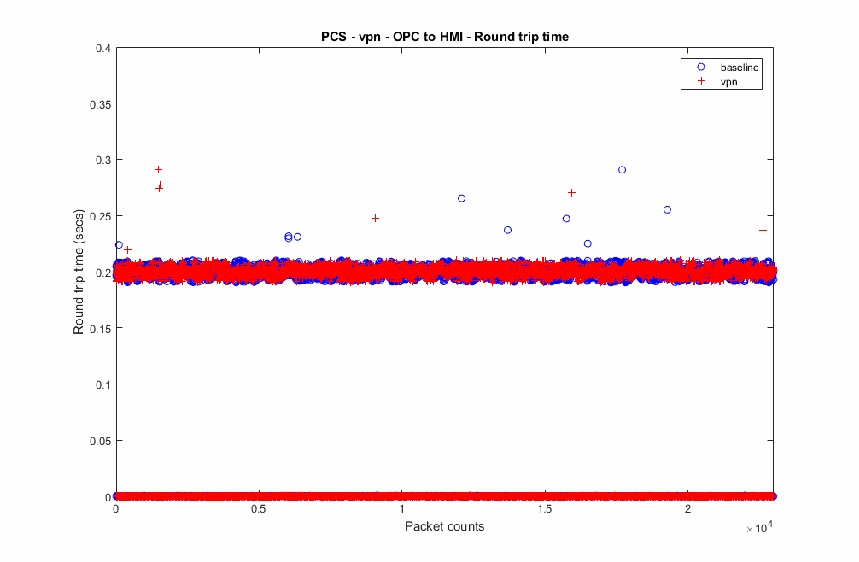
「PCS - vpn - OPC to HMI - Round trip time」と題したグラフです。縦軸は「Round trip time (secs)」（往復時間、秒）で 0〜0.4、横軸は「Packet counts」（パケット数）で 0〜2.3×10^4 です。凡例は「baseline」（青の丸）と「vpn」（赤の十字）です。どちらの系列も約 0.2 秒と 0 秒付近に密な帯をなし、約 0.22〜0.29 秒に点が散在しています。
Figure 4-12 Plot of packet round trip time from OPC to HMI computer during the use of VPN connection from a remote computer
図 4-12 リモートのコンピューターからの VPN 接続の使用中における、OPC から HMI コンピューターまでのパケットのラウンドトリップ時間のプロット
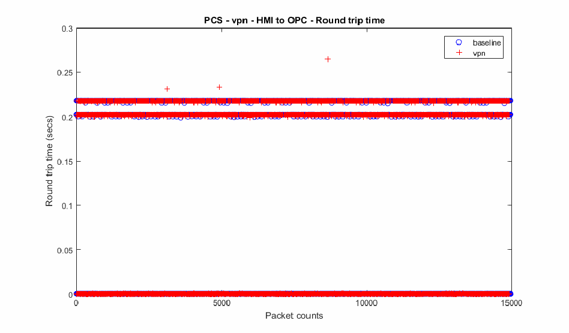
「PCS - vpn - HMI to OPC - Round trip time」と題したグラフです。縦軸は「Round trip time (secs)」（往復時間、秒）で 0〜0.3、横軸は「Packet counts」（パケット数）で 0〜15000 です。凡例は「baseline」（青の丸）と「vpn」（赤の十字）です。どちらの系列も約 0.2 秒、約 0.22 秒、0 秒付近に密な帯をなし、vpn の点が数個 0.23〜0.27 秒付近にあります。
Figure 4-13 Plot of packet round trip time from HMI to OPC computer during the use of VPN connection from a remote computer
図 4-13 リモートのコンピューターからの VPN 接続の使用中における、HMI から OPC コンピューターまでのパケットのラウンドトリップ時間のプロット
The manufacturing process also remained stable without any significant performance impact observed. The reactor pressure and product flow rate remained constant with and without the VPN connection.
製造プロセスも安定したままで、大きな性能影響は観測されませんでした。反応器の圧力と製品の流量は、VPN 接続の有無にかかわらず、一定のままでした。
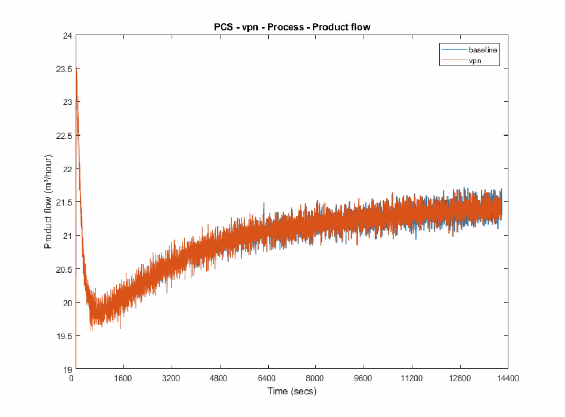
「PCS - vpn - Process - Product flow」と題したグラフです。縦軸は「Product flow (m³/hour)」（製品流量、m³/時）で 19〜24、横軸は「Time (secs)」（時間、秒）で 0〜14400 です。凡例は「baseline」（青）と「vpn」（橙）です。どちらも約 23.5 から始まり、開始直後に約 19.7 まで下がった後、終わりまでに約 21.5 へ緩やかに上昇します。2つの系列はほぼ重なっています。
Figure 4-14 Manufacturing process product flow rate during the use of VPN connection from a remote computer
図 4-14 リモートのコンピューターからの VPN 接続の使用中における、製造プロセスの製品流量
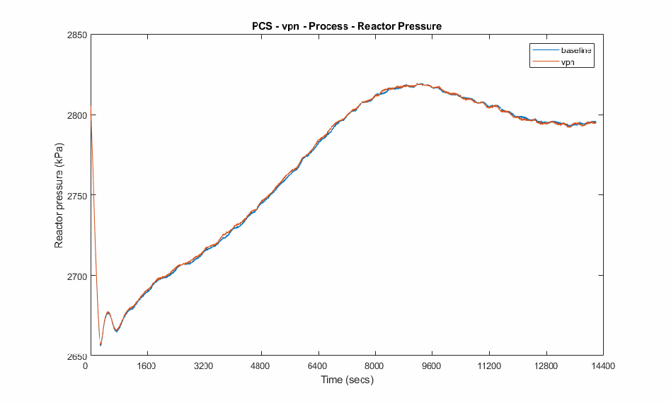
「PCS - vpn - Process - Reactor Pressure」と題したグラフです。縦軸は「Reactor pressure (kPa)」（反応器圧力、kPa）で 2650〜2850、横軸は「Time (secs)」（時間、秒）で 0〜14400 です。凡例は「baseline」（青）と「vpn」（橙）です。どちらも開始直後に約 2655 まで下がり、9000 秒付近で約 2820 の最大値に達した後、約 2795 までわずかに下がります。2つの系列はほぼ重なっています。
Figure 4-15 Manufacturing process reactor pressure during the use of VPN connection from a remote computer
図 4-15 リモートのコンピューターからの VPN 接続の使用中における、製造プロセスの反応器圧力
4.8.7 Links to Entire Performance Measurement Data Set
4.8.7 性能測定データセット全体へのリンク
•Cisco VPN KPI data
•Cisco VPN の KPI データ
•Cisco VPN measurement data
•Cisco VPN の測定データ
4.9 Microsoft Active Directory
4.9 Microsoft Active Directory
4.9.1 Technical Solution Overview
4.9.1 技術ソリューションの概要
Active Directory (AD) is a directory service developed by Microsoft for Windows domain networks. A directory is a hierarchical structure that stores information about objects on the network. A directory service, such as Active Directory Domain Services (AD DS), provides the methods for storing directory data and making this data available to network users and administrators. For example, AD DS stores information about user accounts, such as names, passwords, phone numbers, and so on, and enables other authorized users on the same network to access this information. A server running Active Directory Domain Services (AD DS) is called a domain controller. It authenticates and authorizes all users and computers in a Windows domain type network—assigning and enforcing cybersecurity policies for all computers and installing or updating software. Active Directory uses Lightweight Directory Access Protocol (LDAP) versions 2 and 3, Microsoft's version of Kerberos and DNS.85
Active Directory（AD）は、Microsoft が Windows ドメインネットワーク向けに開発したディレクトリサービスです。ディレクトリは、ネットワーク上のオブジェクトに関する情報を格納する階層構造です。Active Directory Domain Services（AD DS）などのディレクトリサービスは、ディレクトリデータを格納し、そのデータをネットワークのユーザーや管理者が利用できるようにする方法を提供します。たとえば、AD DS は、名前、パスワード、電話番号などのユーザーアカウントに関する情報を格納し、同じネットワーク上の他の認可されたユーザーがこの情報にアクセスできるようにします。Active Directory Domain Services（AD DS）を実行しているサーバーは、ドメインコントローラーと呼ばれます。これは、Windows ドメイン型のネットワーク内のすべてのユーザーとコンピューターを認証・認可し、すべてのコンピューターにサイバーセキュリティポリシーを割り当てて適用し、ソフトウェアをインストールまたは更新します。Active Directory は、Lightweight Directory Access Protocol（LDAP）のバージョン 2 と 3、Microsoft 版の Kerberos、および DNS を使用します。85
Points to consider:
考慮すべき点：
•Cost of infrastructure can get high.
•インフラのコストが高くなることがあります。
•Requires expertise to setup and maintain. Setup involves detailed planning.
•セットアップと保守に専門知識が必要です。セットアップには、詳細な計画が必要です。
•It is prone to being hacked.
•ハッキングされやすいです。
4.9.2 Technical Capabilities Provided by Solution
4.9.2 ソリューションが提供する技術的能力
Microsoft Active Directory provides components of the following Technical Capabilities described in Section 6 of Volume 1:
Microsoft Active Directory は、第1巻の第6節で説明した、次の技術的能力の構成要素を提供します。
•Credential Management
•認証情報の管理
•Authentication and Authorization
•認証と認可
4.9.3 Subcategories Addressed by Implementing Solution
4.9.3 ソリューションの実装によって対処するサブカテゴリ
PR.AC-1, PR.MA-1, PR.MA-2, PR-PT-3, PR.PT-4, DE.CM-3
PR.AC-1, PR.MA-1, PR.MA-2, PR-PT-3, PR.PT-4, DE.CM-3
4.9.4 Architecture Map of Where Solution was Implemented
4.9.4 ソリューションを実装した場所のアーキテクチャマップ
![Network architecture map of the Westman process-based manufacturing system lab. Legend box: a blue triangle icon and a cyan line labeled "Active Directory". The triangle icon marks every system joined to Active Directory, and cyan lines show their connections. An "Internet" cloud connects to "Corporate Network" and the "Manuf. System Router/Firewall". Management zone: "Microsoft ActiveDirectory/RADIUS 10.100.2.3" (marked) on "Management LAN – 10.100.2.0/24". Manufacturing DMZ zone: "DMZ Historian 10.100.1.4" on "Manufacturing DMZ LAN - 10.100.1.0/24". Cybersecurity LAN zone ("Cybersecurity LAN 10.100.0.0/24"): "Open-Audit 10.100.0.177", "TheHive Incident Resp. 10.100.0.5", "Nessus Vuln. Scanner 10.100.0.25", "Microsoft ActiveDirectory 10.100.0.13,17" (two servers outlined in cyan), "Symantec Antivirus - SEPM 10.100.0.5", "GTB Data Loss Prev. 10.100.0.175,176", "Veeam Backup & Replication 10.100.0.10", "Graylog Syslog 10.100.0.14", "Windows WSUS 10.100.0.12", "NTP/PTP Clock 10.100.0.15"; all except GTB and the NTP/PTP clock carry the triangle icon. Plant zone: "PCS LAN Router 10.100.0.40/32 172.16.1.1 172.16.3.1" (also labeled 10.100.2.8 and 172.16.2.1, marked); "Engineering Workstation 172.16.3.10" on "Engineering LAN – 172.16.3.0/24"; "HMI 172.16.1.4" and "Plant Controller 172.16.1.5" on "Plant LAN – 172.16.1.0/24"; "Local Historian 172.16.2.4", "OPC Server 172.16.2.5" and "Supervisory PLC 172.16.2.102" on "Supervisory LAN – 172.16.2.0/24"; the Engineering Workstation, HMI, Plant Controller, Local Historian and OPC Server carry the triangle icon; the Supervisory PLC connects via "DeviceNet to Field Devices" to the "Manufacturing Process" (a screen image of the process simulation).](assets/ir-8183av2/p0193-figure-02.png)
Westman のプロセス型製造システムの実験環境のネットワーク構成図です。凡例: 青い三角のアイコンと水色の線が「Active Directory」。三角のアイコンは Active Directory に参加している機器に付き、水色の線がその接続を示します。「Internet」の雲が「Corporate Network」（企業ネットワーク）と「Manuf. System Router/Firewall」（製造システムのルーター／ファイアウォール）につながっています。Management（管理）区画には「Management LAN – 10.100.2.0/24」上の「Microsoft ActiveDirectory/RADIUS 10.100.2.3」（アイコン付き）があります。Manufacturing DMZ 区画には「Manufacturing DMZ LAN - 10.100.1.0/24」上の「DMZ Historian 10.100.1.4」があります。Cybersecurity LAN 区画（「Cybersecurity LAN 10.100.0.0/24」）には「Open-Audit 10.100.0.177」「TheHive Incident Resp. 10.100.0.5」「Nessus Vuln. Scanner 10.100.0.25」「Microsoft ActiveDirectory 10.100.0.13,17」（水色の枠の2台）「Symantec Antivirus - SEPM 10.100.0.5」「GTB Data Loss Prev. 10.100.0.175,176」「Veeam Backup & Replication 10.100.0.10」「Graylog Syslog 10.100.0.14」「Windows WSUS 10.100.0.12」「NTP/PTP Clock 10.100.0.15」があり、GTB と NTP/PTP Clock 以外にアイコンが付いています。Plant（工場）区画には「PCS LAN Router 10.100.0.40/32 172.16.1.1 172.16.3.1」（10.100.2.8、172.16.2.1 の表示もあり、アイコン付き）、「Engineering LAN – 172.16.3.0/24」上の「Engineering Workstation 172.16.3.10」、「Plant LAN – 172.16.1.0/24」上の「HMI 172.16.1.4」と「Plant Controller 172.16.1.5」、「Supervisory LAN – 172.16.2.0/24」上の「Local Historian 172.16.2.4」「OPC Server 172.16.2.5」「Supervisory PLC 172.16.2.102」があります。Engineering Workstation、HMI、Plant Controller、Local Historian、OPC Server にアイコンが付き、Supervisory PLC は「DeviceNet to Field Devices」で「Manufacturing Process」（製造プロセスのシミュレーション画面）につながっています。
4.9.5 Installation Instructions and Configurations
4.9.5 インストール手順と構成
Details of the environment:
環境の詳細：
| Hostname | Roles | Domain Name | Hardware Details |
|---|---|---|---|
| LAN-AD | Active Directory, DNS Server | LAN.lab | Hyper-V Virtual Machine (Generation 2):
|
| LAN-AD02 | Active Directory, DNS Server | LAN.lab | Hyper-V Virtual Machine (Generation 2):
|
| Mgmt-AD | Active Directory, DNS, Network Policy Server (Radius) | Mgmt.lab | Hyper-V Virtual Machine (Generation 2):
|
| ホスト名 | ロール | ドメイン名 | ハードウェアの詳細 |
|---|---|---|---|
| LAN-AD | Active Directory、DNS サーバー | LAN.lab | Hyper-V 仮想マシン（第2世代）：
|
| LAN-AD02 | Active Directory、DNS サーバー | LAN.lab | Hyper-V 仮想マシン（第2世代）：
|
| Mgmt-AD | Active Directory、DNS、ネットワークポリシーサーバー（Radius） | Mgmt.lab | Hyper-V 仮想マシン（第2世代）：
|
4.9.5.1 Environment Setup
4.9.5.1 環境のセットアップ
Our setup consists of two separate Active Directory (AD) domain environments; one for the Cybersecurity -LAN network and other for the Management network. For security reasons, the AD domain in the Cybersecurity LAN network is separate from the domain of the Management network. This Domain Controller (DC) in the Management network has Windows NPS (Radius) services installed for authenticating the network devices.
今回のセットアップは、2つの独立した Active Directory（AD）ドメイン環境で構成されています。1つは Cybersecurity-LAN ネットワーク用、もう1つは Management ネットワーク用です。セキュリティ上の理由から、Cybersecurity LAN ネットワークの AD ドメインは、Management ネットワークのドメインとは分離されています。Management ネットワーク上のこのドメインコントローラー（DC）には、ネットワークデバイスを認証するための Windows NPS（Radius）サービスがインストールされています。
1.Two virtual machines, each running Windows 2012 R2 were setup on a Hyper-V host server of the Cybersecurity LAN network for authenticating Windows/Linux devices. The hardware specifications of these are described in the table above.
1.Windows／Linux デバイスを認証するため、Windows 2012 R2 が動作する2台の仮想マシンを、Cybersecurity LAN ネットワークの Hyper-V ホストサーバーにセットアップしました。これらのハードウェア仕様は、上の表に記載しています。
2.One virtual machine running Windows 2012 R2 was setup in the Management network for authenticating VPN users and network devices such as boundary routers.
2.VPN ユーザーと、境界ルーターなどのネットワークデバイスを認証するため、Windows 2012 R2 が動作する1台の仮想マシンを、Management ネットワークにセットアップしました。
3.The guest OS IP information of these servers was set as follows:
3.これらのサーバーのゲスト OS の IP 情報は、次のように設定しました。
Hostname: LAN-AD.lan.lab
IP address: 10.100.0.5
Gateway: 10.100.0.1
Subnet Mask: 255.255.255.0
DNS:127.0.0.1, 10.100.0.13Hostname: LAN-AD02.lan.lab
IP address: 10.100.0.13
Gateway: 10.100.0.1
Subnet Mask: 255.255.255.0
DNS:10.100.0.17,127.0.0.1Hostname: Mgmt-AD.mgmt.lab
IP address: 10.100.2.3
Gateway: 10.100.2.1
Subnet Mask: 255.255.255.0
DNS:127.0.0.14.9.5.2 Installing Active Directory Domain Services & DNS Server
4.9.5.2 Active Directory Domain Services と DNS サーバーのインストール
Prerequisites
前提条件
Windows 2012 R2 server (preferably two for redundancy) up to date on patches, static IP address assigned with primary DNS server set to 127.0.0.1 (localhost)
パッチが最新の状態で、静的 IP アドレスが割り当てられ、プライマリ DNS サーバーが 127.0.0.1（localhost）に設定された Windows 2012 R2 サーバー
1.Launch the Windows Server Manager and click on Add Roles and Features
1.Windows のサーバーマネージャーを起動し、Add Roles and Features をクリックします。
2.Click “Next” at the first page as shown below
2.次のように、最初のページで「Next」をクリックします。
［第三者の画像。第三者の著作物のため、この非公式サイトには掲載していません。原本 PDF を参照してください。］
3.Select Role Based or Feature Based Installation under Installation Type
3.Installation Type で、Role Based or Feature Based Installation を選択します。
［第三者の画像。第三者の著作物のため、この非公式サイトには掲載していません。原本 PDF を参照してください。］
4.Select Active Directory Domain Services and DNS Server to install. Click Next.
4.インストールする Active Directory Domain Services と DNS Server を選択します。Next をクリックします。
［第三者の画像。第三者の著作物のため、この非公式サイトには掲載していません。原本 PDF を参照してください。］
5.Click Next on the Features screen, leave the default options selected,
5.Features 画面で Next をクリックし、デフォルトのオプションを選択したままにします。
6.Click Next on the AD DS screen and the following DNS Server screen as well.
6.AD DS 画面と、それに続く DNS Server 画面でも Next をクリックします。
［第三者の画像。第三者の著作物のため、この非公式サイトには掲載していません。原本 PDF を参照してください。］
7.Verify your settings on the Confirmation screen. Click Install to proceed.
7.Confirmation 画面で設定を確認します。Install をクリックして先へ進みます。
［第三者の画像。第三者の著作物のため、この非公式サイトには掲載していません。原本 PDF を参照してください。］
8.Wait till the installation process completes and shows an Installation succeeded message. Hit Close button.
8.インストールプロセスが完了し、Installation succeeded というメッセージが表示されるまで待ちます。Close ボタンを押します。
［第三者の画像。第三者の著作物のため、この非公式サイトには掲載していません。原本 PDF を参照してください。］
9.Launch Server Manager again and click on Promote this server to a domain controller.
9.サーバーマネージャーを再度起動し、Promote this server to a domain controller をクリックします。
10.Select Add a new forest on the Deployment Configuration step, as this would be a new domain controller in a new forest. Mention a Root Domain name as applicable to your environment.
10.Deployment Configuration の手順で Add a new forest を選択します。これは、新しいフォレスト内の新しいドメインコントローラーとなるためです。ルートドメイン名には、環境に応じた名前を指定します。
［第三者の画像。第三者の著作物のため、この非公式サイトには掲載していません。原本 PDF を参照してください。］
11.Set a Directory Services Restore Mode password in the next step. Click Next
11.次の手順で、Directory Services Restore Mode のパスワードを設定します。Next をクリックします。
［第三者の画像。第三者の著作物のため、この非公式サイトには掲載していません。原本 PDF を参照してください。］
12.Under “DNS Options” leave the default options selected. Click Next
12.「DNS Options」では、デフォルトのオプションを選択したままにします。Next をクリックします。
［第三者の画像。第三者の著作物のため、この非公式サイトには掲載していません。原本 PDF を参照してください。］
13.Confirm the NETBIOS domain name under Additional Options. Click Next.
13.Additional Options で NETBIOS ドメイン名を確認します。Next をクリックします。
［第三者の画像。第三者の著作物のため、この非公式サイトには掲載していません。原本 PDF を参照してください。］
14.Leave the default folder paths as it is Under Paths. Click Next
14.Paths では、デフォルトのフォルダーパスをそのままにします。Next をクリックします。
［第三者の画像。第三者の著作物のため、この非公式サイトには掲載していません。原本 PDF を参照してください。］
15.Confirm all the settings On the Review Options page. Click Next.
15.Review Options ページで、すべての設定を確認します。Next をクリックします。
16.Click Install on the Prerequisites Check to launch the installation process. The server will auto reboot upon completion.
16.Prerequisites Check で Install をクリックして、インストールプロセスを開始します。完了すると、サーバーは自動的に再起動します。
［第三者の画像。第三者の著作物のため、この非公式サイトには掲載していません。原本 PDF を参照してください。］
17.Login with domain administrator credentials upon reboot. Open Server Manager and click on Active Directory Users and Computers under Tools to manage your AD.
17.再起動後、ドメイン管理者の認証情報でログインします。サーバーマネージャーを開き、Tools の下にある Active Directory Users and Computers をクリックして、AD を管理します。
［第三者の画像。第三者の著作物のため、この非公式サイトには掲載していません。原本 PDF を参照してください。］
4.9.5.3 Joining Windows Systems to Active Directory Domain
4.9.5.3 Windows システムの Active Directory ドメインへの参加
1.Change the DNS settings on each client system to point to the IP address of the Domain Controller server.
1.各クライアントシステムの DNS 設定を変更して、ドメインコントローラーサーバーの IP アドレスを指すようにします。
2.Refer to the instructions86 described for joining Windows clients to the Active Directory domain.
2.Windows クライアントを Active Directory ドメインに参加させるために説明されている手順86 を参照します。
3.Reboot client system when done.
3.完了したら、クライアントシステムを再起動します。
4.9.5.4 Matrikon OPC Server DCOM Configuration
4.9.5.4 Matrikon OPC Server の DCOM 構成
The OPC server in the plant which is running a Matrikon OPC server requires advanced configuration to work with Active Directory. The Microsoft Distributed Component Object Model (DCOM) service plays a vital role in integration the OPC server with AD. Having the correct DCOM settings in place when using AD is critical for plant operations. We have followed the steps as per the Matrikon OPC guide87 to apply the necessary DCOM settings.
プラント内で Matrikon OPC サーバーを実行している OPC サーバーが Active Directory と連携して動作するには、高度な構成が必要です。Microsoft の Distributed Component Object Model（DCOM）サービスは、OPC サーバーと AD の統合において重要な役割を果たします。AD を使用する際に正しい DCOM 設定を行うことは、プラントの運用にとって極めて重要です。必要な DCOM 設定を適用するため、Matrikon OPC のガイド87 に記載された手順に従いました。
Prerequisites
前提条件
•All Windows systems participating need to be domain joined to the AD server.
•関係するすべての Windows システムが、AD サーバーのドメインに参加している必要があります。
•Ensure all systems are getting their time synced from the AD server and verify the time on each server is consistent with the time on the AD (Domain Controller). Time sync is critical.
•すべてのシステムが AD サーバーから時刻を同期していることを確認し、各サーバーの時刻が AD（ドメインコントローラー）の時刻と一致していることを検証します。時刻同期は極めて重要です。
•Verify TCP port 135 is open between all OPC clients and the OPC server.
•すべての OPC クライアントと OPC サーバーの間で、TCP ポート 135 が開いていることを確認します。
Systems taking part in the OPC setup:
OPC のセットアップに関わるシステム：
| Hostname | IP address | Roles | Administrators |
|---|---|---|---|
| OPC Server | 172.16.2.5 | OPC Server | opcadmin |
| Controller | 172.16.1.5 | OPC Server + Client | opcadmin |
| ホスト名 | IP アドレス | ロール | 管理者 |
|---|---|---|---|
| OPC Server | 172.16.2.5 | OPC Server | opcadmin |
| Controller | 172.16.1.5 | OPC Server + Client | opcadmin |
1.Create two domain users in AD. Assign one of the user accounts, administrative rights on the OPC servers. For instance, the following accounts opcadmin and opcuser were setup in our AD.
1.AD に2つのドメインユーザーを作成します。ユーザーアカウントの1つに、OPC サーバーに対する管理者権限を割り当てます。たとえば、今回の AD には、opcadmin と opcuser のアカウントをセットアップしました。
2.Add the opcadmin user to the Local Administrators group on the OPC Server and client.
2.opcadmin ユーザーを、OPC サーバーとクライアントのローカルの Administrators グループに追加します。
3.Make the following changes to DCOM properties on the OPC Client system
3.OPC クライアントシステムの DCOM プロパティに、次の変更を加えます。
a.Launch Control Panel > Administrative Tools > Component Services snap-in to open the DCOM console. Alternatively, you can also run dcomcnfg
a.Control Panel > Administrative Tools > Component Services スナップインを起動して、DCOM コンソールを開きます。または、dcomcnfg を実行することもできます。
b.Expand Console Root > Component Services > Computers. Right-click My Computer > Properties, ensure the settings are as follows
b.Console Root > Component Services > Computers を展開します。My Computer を右クリックし、Properties を選択して、設定が次のようになっていることを確認します。
［第三者の画像。第三者の著作物のため、この非公式サイトには掲載していません。原本 PDF を参照してください。］
c.Click on COM Security tab. Under Access Permissions > Edit Limits > Add the opcadmin user to the list and check the Allow boxes for Local Access and Remote Access categories. You can add the opcuser as well if needed and grant it Allow permission for only Local Access.
c.COM Security タブをクリックします。Access Permissions の Edit Limits で、opcadmin ユーザーを一覧に追加し、Local Access と Remote Access の各カテゴリの Allow ボックスにチェックを入れます。必要に応じて opcuser も追加し、Local Access のみに Allow 権限を付与できます。
［第三者の画像。第三者の著作物のため、この非公式サイトには掲載していません。原本 PDF を参照してください。］
d.Click Edit Default button under Access Permissions window > Ensure that “<server-name>\Administrators” group has all the boxes checked. The opcadmin user was made part of this Administrators group earlier. If adding opcuser, grant it Allow for Local Access only
d.Access Permissions ウィンドウの Edit Default ボタンをクリックします。「<server-name>\Administrators」グループのすべてのボックスにチェックが入っていることを確認します。opcadmin ユーザーは、先にこの Administrators グループのメンバーにしています。opcuser を追加する場合は、Local Access のみに Allow を付与します。
［第三者の画像。第三者の著作物のため、この非公式サイトには掲載していません。原本 PDF を参照してください。］
e.Click Edit Default button under the Launch and Activation Permissions window > Ensure the Administrators group has ALLOW Permissions for all 4 categories. The other opcuser should have ALLOW only for Local Launch
e.Launch and Activation Permissions ウィンドウの Edit Default ボタンをクリックします。Administrators グループが、4つのカテゴリすべてで ALLOW 権限を持っていることを確認します。もう1つの opcuser は、Local Launch のみ ALLOW にします。
［第三者の画像。第三者の著作物のため、この非公式サイトには掲載していません。原本 PDF を参照してください。］
f.Reboot the system after these changes are made. Repeat the process on each client. This completes the OPC client-side configuration.
f.これらの変更を行った後、システムを再起動します。この手順を各クライアントで繰り返します。これで、OPC クライアント側の構成は完了です。
4.Make the following changes to the DCOM properties on the OPC server system:
4.OPC サーバーシステムの DCOM プロパティに、次の変更を加えます。
a.Launch the Control Panel > Administrative Tools > Component Services snap-in to open the DCOM console.
a.Control Panel > Administrative Tools > Component Services スナップインを起動して、DCOM コンソールを開きます。
b.Expand Console Root > Component Services > Computers. Right-click My Computer > Properties. Ensure the settings are as follows
b.Console Root > Component Services > Computers を展開します。My Computer を右クリックし、Properties を選択します。設定が次のようになっていることを確認します。
［第三者の画像。第三者の著作物のため、この非公式サイトには掲載していません。原本 PDF を参照してください。］
c.Click on the COM Security tab > Access Permissions > Edit Default > Add the opcadmin user and grant it ALLOW permissions for Local Access and Remote Access boxes.
c.COM Security タブ > Access Permissions > Edit Default をクリックします。opcadmin ユーザーを追加し、Local Access と Remote Access のボックスに ALLOW 権限を付与します。
［第三者の画像。第三者の著作物のため、この非公式サイトには掲載していません。原本 PDF を参照してください。］
d.Click Edit Default under Launch and Activation Permissions> Add the Administrators group. Check on ALLOW Boxes for all 4 categories. If adding the other opcuser, it will only have Local Launch permissions.
d.Launch and Activation Permissions の Edit Default をクリックし、Administrators グループを追加します。4つのカテゴリすべての ALLOW ボックスにチェックを入れます。もう1つの opcuser を追加する場合は、Local Launch 権限のみとなります。
［第三者の画像。第三者の著作物のため、この非公式サイトには掲載していません。原本 PDF を参照してください。］
5.Note down the names of the opc-server software installed in your environment on the OPC make the DCOM changes as explained below on each of their application folders. In our case, the list of the s/w is as follows
5.環境にインストールされている OPC サーバーソフトウェアの名前を控え、それぞれのアプリケーションフォルダーに、以下に説明するとおり DCOM の変更を加えます。今回のソフトウェアの一覧は次のとおりです。
•Harmony (Installed on OPC Server)
•Harmony（OPC Server にインストール）
•RSLINX (Installed on OPC Server)
•RSLINX（OPC Server にインストール）
•MATLAB (Installed on the Controller)
•MATLAB（Controller にインストール）
6.Make the following changes on the application folders of the OPC-server & Client system
6.OPC サーバーとクライアントシステムのアプリケーションフォルダーに、次の変更を加えます。
a.Launch the DCOM console. Browse to Console Root > Component Services > Computers > My Computer > DCOM Config.
a.DCOM コンソールを起動します。Console Root > Component Services > Computers > My Computer > DCOM Config を参照します。
［第三者の画像。第三者の著作物のため、この非公式サイトには掲載していません。原本 PDF を参照してください。］
b.Right-click the <application folder> from the list of applications in the right pane Click Properties. For example, find the “Harmony” folder, right click to view its Properties.
b.右ペインのアプリケーション一覧から、<application folder> を右クリックし、Properties をクリックします。たとえば、「Harmony」フォルダーを探し、右クリックしてそのプロパティを表示します。
［第三者の画像。第三者の著作物のため、この非公式サイトには掲載していません。原本 PDF を参照してください。］
c.Set Authentication Level to Default on the General tab.
c.General タブで、Authentication Level を Default に設定します。
［第三者の画像。第三者の著作物のため、この非公式サイトには掲載していません。原本 PDF を参照してください。］
d.Select Run application on this computer on the Location tab.
d.Location タブで、Run application on this computer を選択します。
［第三者の画像。第三者の著作物のため、この非公式サイトには掲載していません。原本 PDF を参照してください。］
e.Assign the following permissions to the opcadmin account on Security Tab:
e.Security タブで、opcadmin アカウントに次の権限を割り当てます。
•Launch and Activation Permissions: Use System Defaults
•Launch and Activation Permissions：Use System Defaults
•Access Permissions: Use System Defaults
•Access Permissions：Use System Defaults
•Configuration Permissions: Customize Full Control as shown below. (Note opcadmin is a member of Administrators group)
•Configuration Permissions：次に示すように、Customize Full Control を選択します（opcadmin は Administrators グループのメンバーであることに注意）。
f.Assign the following permissions to the opcuser account on Security Tab:
f.Security タブで、opcuser アカウントに次の権限を割り当てます。
•Launch and Activation Permissions: Use System Defaults
•Launch and Activation Permissions：Use System Defaults
•Access Permissions: Use System
•Access Permissions：Use System
•Configuration Permissions: Allow Read
•Configuration Permissions：Allow Read
g.Choose the This user option under Identity Tab. Enter the user name and password for the admin user opcadmin AD account. Click OK to save your settings. Reboot system.
g.Identity タブで、This user オプションを選択します。管理者ユーザー opcadmin の AD アカウントのユーザー名とパスワードを入力します。OK をクリックして設定を保存します。システムを再起動します。
［第三者の画像。第三者の著作物のため、この非公式サイトには掲載していません。原本 PDF を参照してください。］
h.Repeat the above steps on the other application folders such as RSLINX and MATLAB (on the Controller Server in our case).
h.上記の手順を、RSLINX や MATLAB（今回は Controller Server 上）などの他のアプリケーションフォルダーでも繰り返します。
i.Reboot system when done.
i.完了したら、システムを再起動します。
Shown below are some screenshots of the MATLAB folder for reference.
参考として、MATLAB フォルダーのスクリーンショットをいくつか示します。
［第三者の画像。第三者の著作物のため、この非公式サイトには掲載していません。原本 PDF を参照してください。］
［第三者の画像。第三者の著作物のため、この非公式サイトには掲載していません。原本 PDF を参照してください。］
［第三者の画像。第三者の著作物のため、この非公式サイトには掲載していません。原本 PDF を参照してください。］
4.9.5.5 Radius Server Setup
4.9.5.5 Radius サーバーのセットアップ
For authenticating VPN users & configuring AD based authentication for network devices, a Windows 2012 R2 server running Active Directory and Windows Network Policy Server (NPS) was setup in the Management LAN to authenticate the boundary firewall and VPN users. Technically both the roles can be on the same server but its recommended to keep them separate for redundancy.
VPN ユーザーの認証と、ネットワークデバイス向けの AD ベースの認証を構成するため、境界ファイアウォールと VPN ユーザーを認証する、Active Directory と Windows ネットワークポリシーサーバー（NPS）が動作する Windows 2012 R2 サーバーを、Management LAN にセットアップしました。技術的には、両方のロールを同じサーバーに配置することも可能ですが、冗長性のため、分離しておくことが推奨されます。
Details of the AD Server and Domain in the Management Network
Management ネットワークの AD サーバーとドメインの詳細
| Hostname | IP address | Roles | Domain Name |
|---|---|---|---|
| Mgmt-AD | 10.100.2.3 | Active Directory, DNS, Network Policy Server (Radius) | Mgmt.lab |
| ホスト名 | IP アドレス | ロール | ドメイン名 |
|---|---|---|---|
| Mgmt-AD | 10.100.2.3 | Active Directory、DNS、ネットワークポリシーサーバー（Radius） | Mgmt.lab |
The High-level steps involved in this setup are:
このセットアップの大まかな手順は、次のとおりです。
•Setup the AD Server and create an AD Domain
•AD サーバーをセットアップし、AD ドメインを作成します。
•Setup user account & groups in AD for authenticating to network devices.
•ネットワークデバイスへの認証用に、AD にユーザーアカウントとグループをセットアップします。
•Setup the Radius Server
•Radius サーバーをセットアップします。
•Register Radius Server with AD
•Radius サーバーを AD に登録します。
•Create Radius clients and network policies
•Radius クライアントとネットワークポリシーを作成します。
1.Follow the steps in the previous section to setup an AD server and creating a domain.
1.前の節の手順に従って、AD サーバーをセットアップし、ドメインを作成します。
2.Create user account(s) in AD for logging in to the network devices. Once done, create security group(s) as required for regulating access for this user account.
For instance, a user account called icsuser01 and a Security Group Network Admins were created in our mgmt.lab domain. The icsuser01 user was added to the Network Admins group.
2.ネットワークデバイスへのログイン用に、AD にユーザーアカウントを作成します。作成後、このユーザーアカウントのアクセスを制御するため、必要に応じてセキュリティグループを作成します。
たとえば、今回の mgmt.lab ドメインには、icsuser01 というユーザーアカウントと、Network Admins というセキュリティグループを作成しました。icsuser01 ユーザーを Network Admins グループに追加しました。
3.Follow the steps below to setup a Radius server on a Windows 2012 R2 system
3.Windows 2012 R2 システムに Radius サーバーをセットアップするには、次の手順に従います。
a.Launch Server Manager. Click Add Roles and Features
a.サーバーマネージャーを起動します。Add Roles and Features をクリックします。
b.Install the Network Policy Server role.
b.ネットワークポリシーサーバーのロールをインストールします。
［第三者の画像。第三者の著作物のため、この非公式サイトには掲載していません。原本 PDF を参照してください。］
c.Open the Network Policy Server Console. Right-click NPS (local) > Click on Register Server in Active Directory
c.Network Policy Server コンソールを開きます。NPS (local) を右クリックし、Register Server in Active Directory をクリックします。
［第三者の画像。第三者の著作物のため、この非公式サイトには掲載していません。原本 PDF を参照してください。］
4.Create Radius Clients and Policies in NPS as follows:
4.次のようにして、NPS に Radius クライアントとポリシーを作成します。
a.Launch the Network Policy Server snap-in, Right-click Radius Client > New to create a Radius client for the Network Device in question.
a.Network Policy Server スナップインを起動し、Radius Client を右クリックして New を選択し、対象のネットワークデバイス用の Radius クライアントを作成します。
［第三者の画像。第三者の著作物のため、この非公式サイトには掲載していません。原本 PDF を参照してください。］
b.Enter a matching name of the Network Device, IP address of the management interface of this device and create a strong passphrase. Hit OK when done.
This will create the Radius client. Verify that you can ping the IP address of the network device from the Radius server.
b.ネットワークデバイスに対応する名前と、このデバイスの管理インターフェースの IP アドレスを入力し、強力なパスフレーズを設定します。完了したら OK を押します。
これにより、Radius クライアントが作成されます。Radius サーバーからネットワークデバイスの IP アドレスに ping できることを確認します。
The image below shows a Radius client created for the Allen Bradley Boundary Router/Firewall device in the plant.
次の画像は、プラント内の Allen Bradley Boundary Router/Firewall デバイス用に作成した Radius クライアントを示しています。
［第三者の画像。第三者の著作物のため、この非公式サイトには掲載していません。原本 PDF を参照してください。］
c.Create a new policy for the radius client by clicking on Policies > Network Policies.
The image below shows the network policy created for the Allen Bradley firewall
c.Policies > Network Policies をクリックして、Radius クライアント用の新しいポリシーを作成します。
次の画像は、Allen Bradley ファイアウォール用に作成したネットワークポリシーを示しています。
［第三者の画像。第三者の著作物のため、この非公式サイトには掲載していません。原本 PDF を参照してください。］
d.Click on Conditions tab to define Conditions for the policy.
d.Conditions タブをクリックして、ポリシーの条件を定義します。
e.Click ADD button > Select the user/groups option from the list > Select the security group (Network-admins) setup earlier in our AD. This will allow users from this group to login as admins for managing the switch.
e.ADD ボタンをクリックし、一覧から user/groups オプションを選択し、先に今回の AD にセットアップしたセキュリティグループ（Network-admins）を選択します。これにより、このグループのユーザーは、スイッチを管理する管理者としてログインできるようになります。
f.Add another condition to check for the IP address of the Radius client. Select Client IPv4 address option from the list. Enter the IP address of the network device and add it. Please refer to the image below for a completed Conditions page once both conditions are added. Hit Next to proceed to the next screen.
f.Radius クライアントの IP アドレスを確認する、もう1つの条件を追加します。一覧から Client IPv4 address オプションを選択します。ネットワークデバイスの IP アドレスを入力して追加します。2つの条件を追加した後の、完成した Conditions ページについては、以下の画像を参照してください。Next を押して、次の画面に進みます。
［第三者の画像。第三者の著作物のため、この非公式サイトには掲載していません。原本 PDF を参照してください。］
g.Select PAP, SPAP authentication method as recommended by Cisco. Click Next to proceed to the Settings page.
g.Cisco が推奨する認証方式である PAP、SPAP を選択します。Next をクリックして、Settings ページに進みます。
［第三者の画像。第三者の著作物のため、この非公式サイトには掲載していません。原本 PDF を参照してください。］
h.Click Standard > under Radius Attributes in the Settings page.
h.Settings ページの Radius Attributes の下で、Standard をクリックします。
i.Remove the 2 default attributes. Click ADD to add a new attribute with Name = “Service-Type” and Value = “Login” as shown below.
i.2つのデフォルトの属性を削除します。次に示すように、ADD をクリックして、Name = 「Service-Type」、Value = 「Login」の新しい属性を追加します。
［第三者の画像。第三者の著作物のため、この非公式サイトには掲載していません。原本 PDF を参照してください。］
j.Add a new attribute under Vendor Specific Attributes by selecting Cisco-AV-pair from the list,
Vendor = Cisco
Value = shell:priv-lvl=15
This will assign the user privilege level =15 meaning root level privileges.
j.Vendor Specific Attributes の下に、一覧から Cisco-AV-pair を選択して、新しい属性を追加します。
Vendor = Cisco
Value = shell:priv-lvl=15
これにより、ユーザー権限レベル = 15、すなわち root レベルの権限が割り当てられます。
k.Click on OK/Apply button to save the changes
k.OK/Apply ボタンをクリックして、変更を保存します。
［第三者の画像。第三者の著作物のため、この非公式サイトには掲載していません。原本 PDF を参照してください。］
4.9.5.6 Configuring Boundary Router for Radius Authentication
4.9.5.6 Radius 認証のための境界ルーターの構成
1.Configure AAA group on the Boundary Router for authenticating against a Radius server.
1.Radius サーバーに対する認証を行うため、境界ルーターに AAA グループを構成します。
The following commands were run on our Allen Bradley Boundary firewall to enable it to authenticate against the Radius server.
Radius サーバーに対する認証を可能にするため、今回の Allen Bradley Boundary ファイアウォールで、次のコマンドを実行しました。
#enable
#configure terminal
(config)#aaa new-model
(config)#aaa authentication login default group radius local
(config)#aaa authorization exec default group radius local
(config)#radius server host 10.100.2.3
(config)# radius server-key <passphrase>
(config)# end
#wr mem4.9.6 Highlighted Performance Impacts
4.9.6 注目すべき性能への影響
The following performance measurement experiment was performed for the Active Directory service while the manufacturing system was operational:
製造システムが稼働している間に、Active Directory サービスについて、次の性能測定実験を実施しました。
PL002.1 Active Directory service active with non-OPC accounts being configured as non-Administrator privilege.
PL002.1 Active Directory サービスを有効にし、OPC 以外のアカウントを非管理者権限として構成した場合。
There was no performance impact to the manufacturing process observed during the experiment. However, performance impact was observed at the implementation of the Active Directory (AD) service. At the initial implementation, the team focused on the Active Directory installation and user configuration, but not knowing the need for DCOM configuration initially, causing unplanned production interruption. DCOM and user account configuration for every OPC client were modified to use AD instead of local authentication. Without modification, the OPC client failed to communicate with the OPC DA server and caused all OPC data exchange to cease operation. This failure caused the manufacturing process entered the emergency shutdown state.
実験中、製造プロセスへの性能影響は観測されませんでした。ただし、Active Directory（AD）サービスの実装時には影響が観測されました。当初の実装では、チームは Active Directory のインストールとユーザー構成に注力しましたが、当初は DCOM 構成が必要であることを認識していなかったため、計画外の生産中断が発生しました。すべての OPC クライアントの DCOM とユーザーアカウントの構成は、ローカル認証ではなく AD を使用するように変更されました。変更する前は、OPC クライアントは OPC DA サーバーと通信できず、すべての OPC データ交換が停止しました。この障害により、製造プロセスは緊急停止状態に入りました。
Another impact observed at implementation was the time synchronization source with the AD. Authentication failed due to time discrepancy between hosts and AD. It is because the hosts were synchronized to a different time source than the AD and the time difference was greater than 5 minutes. When the host joins the AD domain, each host should use the same time source as AD. For example, all hosts in PCS use AD as the time source, and AD uses an external NTP server as its time source.
実装時に観測されたもう1つの影響は、AD との時刻同期元でした。ホストと AD の間の時刻のずれにより、認証が失敗しました。これは、ホストが AD とは異なる時刻源に同期されており、時刻の差が5分を超えていたためです。ホストが AD ドメインに参加する際は、各ホストが AD と同じ時刻源を使用すべきです。たとえば、PCS 内のすべてのホストは AD を時刻源として使用し、AD は外部の NTP サーバーを時刻源として使用します。
Care should be taken to ensure proper operation of the Active Directory service. Failure in authentication causes error in operation of the OPC server, which handles all the data exchange of the controller and the plant operation. The manufacturing process entered emergency shutdown state because the controller lost the ability to communicate to the sensors and actuators. Redundancy and backup are highly recommended. Ability to switch between primary and secondary AD should be seamless to avoid impact to the system.
Active Directory サービスが適切に動作するよう、注意を払うべきです。認証の失敗は、コントローラーとプラント運用のすべてのデータ交換を処理する OPC サーバーの動作エラーを引き起こします。コントローラーがセンサーやアクチュエーターと通信する能力を失ったため、製造プロセスは緊急停止の状態に入りました。冗長化とバックアップを強く推奨します。システムへの影響を避けるため、プライマリの AD とセカンダリの AD の切り替えは、シームレスに行えるべきです。
There was no significant impact to the network performance observed. For example, the round trip time from OPC to HMI is mostly the same with the Active Directory.
ネットワーク性能への大きな影響は観測されませんでした。たとえば、OPC から HMI までのラウンドトリップ時間は、Active Directory を使用しても、ほぼ同じでした。
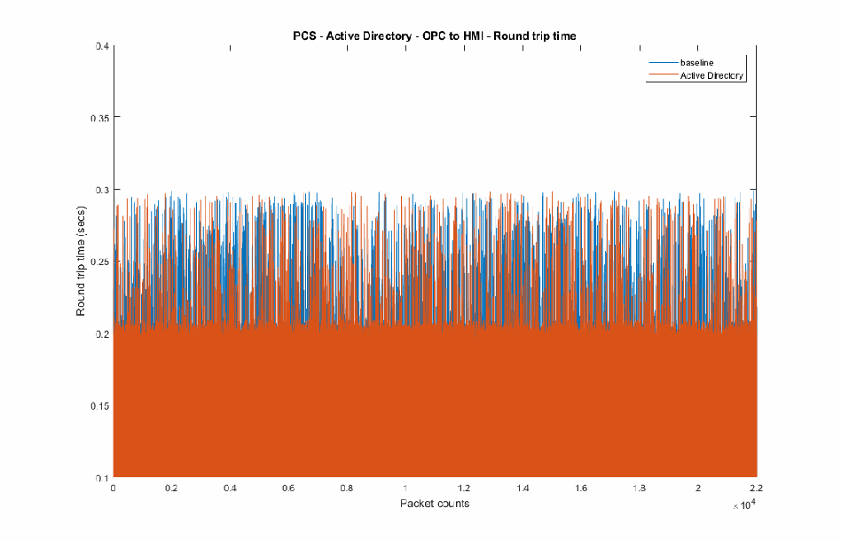
「PCS - Active Directory - OPC to HMI - Round trip time」と題したグラフです。縦軸は「Round trip time (secs)」（往復時間、秒）で 0.1〜0.4、横軸は「Packet counts」（パケット数）で 0〜2.2×10^4 です。凡例は「baseline」（青）と「Active Directory」（橙）です。どちらも約 0.21 秒までの密な帯を作り、約 0.3 秒までの突出が頻繁にあります。2つの系列はほぼ重なっています。
Figure 4-16 Packet round trip time from OPC to HMI with Active Directory.
図 4-16 Active Directory を使用した場合の、OPC から HMI までのパケットのラウンドトリップ時間。
The controller is another major component required modification to use Active Directory. The Controller authenticates against the AD server. The controller also has the updated DCOM so that it can continue to communicate with the OPC server. The packet round trip time from the Controller to OPC was slightly elevated, with a small number of packets had a slightly increased round trip time. There was no significant increase in inter packet delay from the Controller to OPC observed.
コントローラーも、Active Directory を使用するために変更が必要な主要な構成要素の1つです。コントローラーは AD サーバーに対して認証を行います。また、OPC サーバーとの通信を継続できるよう、コントローラーの DCOM も更新されています。Controller から OPC までのパケットのラウンドトリップ時間はわずかに増加し、ラウンドトリップ時間がわずかに長くなったパケットは少数でした。Controller から OPC までのパケット間遅延に、大きな増加は観測されませんでした。
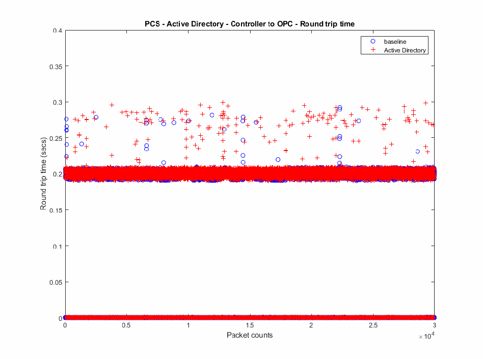
「PCS - Active Directory - Controller to OPC - Round trip time」と題したグラフです。縦軸は「Round trip time (secs)」（往復時間、秒）で 0〜0.4、横軸は「Packet counts」（パケット数）で 0〜3×10^4 です。凡例は「baseline」（青の丸）と「Active Directory」（赤の十字）です。ほとんどの点は約 0.2 秒の帯と 0 秒の線上にあり、約 0.22〜0.3 秒に散らばる点は Active Directory のほうが多くなっています。
Figure 4-17 Packet round trip time from Controller to OPC with the Active Directory enabled (red)
図 4-17 Active Directory を有効にした場合（赤）の、Controller から OPC までのパケットのラウンドトリップ時間
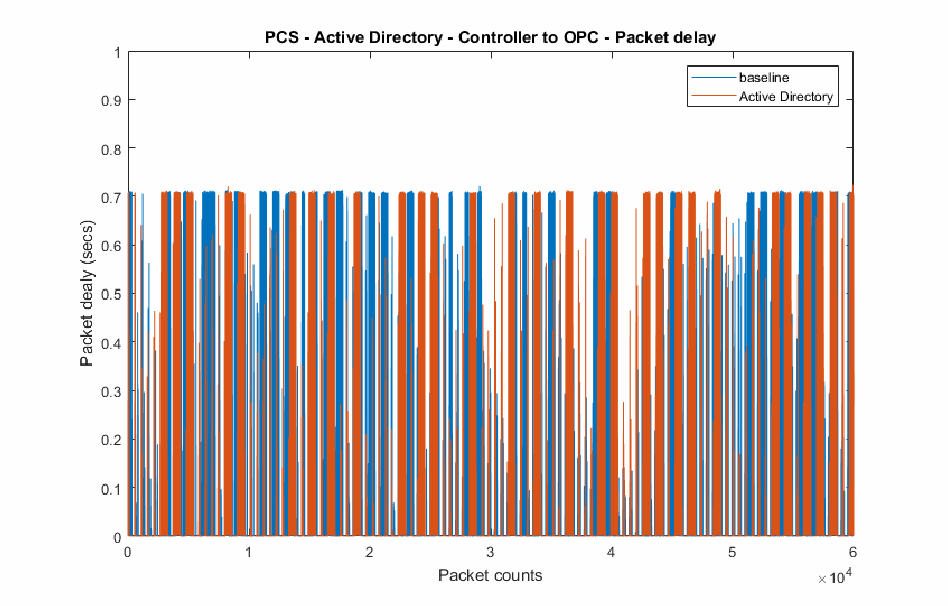
「PCS - Active Directory - Controller to OPC - Packet delay」と題したグラフです。縦軸は「Packet dealy (secs)」（パケット遅延、秒）で 0〜1、横軸は「Packet counts」（パケット数）で 0〜6×10^4 です。凡例は「baseline」（青）と「Active Directory」（橙）です。どちらも約 0.7 秒に達する縦棒が一定の間隔で密に並んでいます。
Figure 4-18 Inter packet delay of Controller to OPC with the Active Directory enabled (red)
図 4-18 Active Directory を有効にした場合（赤）の、Controller から OPC までのパケット間遅延
There was no significant performance impact to the manufacturing process observed with the use of Active Directory. For example, the product flow rate remained consistent with and without the use of Active Directory.
Active Directory の使用による、製造プロセスへの大きな性能影響は観測されませんでした。たとえば、製品の流量は、Active Directory を使用した場合も使用しない場合も、一定のままでした。
「PCS - Active Directory - Process - Product flow」と題したグラフです。縦軸は「Product flow (m³/hour)」（製品流量、m³/時）で 19〜24、横軸は「Time (secs)」（時間、秒）で 0〜14400 です。凡例は「baseline」（青）と「Active Directory」（橙）です。どちらも開始直後に約 23.5 から約 19.8 まで下がり、その後ゆるやかに約 21.5 まで上がります。2つの系列は重なっています。
Figure 4-19 Manufacturing process product flow rate during the use of Active Directory (red)
図 4-19 Active Directory の使用中（赤）の、製造プロセスの製品流量
A misconfiguration on the Active Directory caused the manufacturing process to enter the emergency shutdown state in about 600 seconds of the experiment time due to the reactor pressure too high
Active Directory の設定ミスにより、実験開始から約600秒の時点で、反応器の圧力が高くなりすぎたために、製造プロセスが緊急停止の状態に入りました。

「Reactor Pressure」（反応器の圧力）という題の折れ線グラフです。縦軸は「Pressure kPa」（圧力、kPa）で 2680 から 3030 まで 50 刻み、横軸は「Time (hour)」（時間、時）で 0 から 3.92 までです。系列は2つあります。「AD」（青）は開始直後に約 2690 まで下がった後、徐々に上がって 1.8 時間ごろに約 2810 となり、終わりまで 2800 付近を保ちます。「dcom_error」（緑）は約 2740 まで下がった後、最初の 0.14 時間ほどで約 3000 まで急上昇し、そこで途切れます。その終点を「Plant」と書かれた赤い吹き出しが指しています。
Figure 4-20 Plot of the manufacturing process reactor pressure. The process entered emergency shutdown mode when DCOM communication failed.
図 4-20 製造プロセスの反応器圧力のプロット。DCOM 通信が失敗したとき、プロセスは緊急停止モードに入りました。
4.9.7 Links to Entire Performance Measurement Data Set
4.9.7 性能測定データセット全体へのリンク
•Active Directory KPI data
•Active Directory の KPI データ
•Active Directory measurement data
•Active Directory の測定データ
4.10 Symantec Endpoint Protection
4.10 Symantec Endpoint Protection
4.10.1 Technical Solution Overview
4.10.1 技術ソリューションの概要
Symantec Endpoint Protection (SEP)88 is an endpoint protection solution that can help defend against ransomware and other emerging threats.
Symantec Endpoint Protection（SEP）88 は、ランサムウェアやその他の新たな脅威からの防御に役立つ、エンドポイント保護ソリューションです。
Points to consider:
考慮すべき点：
•Next Generation Antivirus / Endpoint protection solution to prevent against virus attacks and emerging cyber threats such as zero-day attacks, ransomware etc.
•ウイルス攻撃や、ゼロデイ攻撃、ランサムウェアなどの新たなサイバー脅威を防ぐ、次世代のウイルス対策／エンドポイント保護ソリューションです。
•OS Platform independent: The endpoint agents are supported on Windows and Linux.
•OS プラットフォームに依存しません。エンドポイントエージェントは、Windows と Linux でサポートされています。
•Comes with a lightweight agent and virus definition sets that require minimal network bandwidth.
•必要なネットワーク帯域幅が最小限の、軽量なエージェントとウイルス定義セットを備えています。
•Diverse Feature set: Core capabilities include Antivirus, Host Firewall, Intrusion Prevention, Host Integrity, System lockdown, Application White listing and USB Device Control.
•多様な機能セット：主な機能には、ウイルス対策、ホストファイアウォール、侵入防止、ホスト完全性、システムロックダウン、アプリケーションのホワイトリスト化、USB デバイス制御があります。
•Centralized Management: All endpoints, rule sets, policies can be centrally managed from the Symantec Endpoint Manager console.
•一元管理：すべてのエンドポイント、ルールセット、ポリシーを、Symantec Endpoint Manager コンソールから一元的に管理できます。
•The Symantec Manager component is supported only on Windows OS.
•Symantec Manager コンポーネントは、Windows OS でのみサポートされています。
•The Linux agent requires the OS kernel on Linux systems to be at a certain level for installation. In addition, the Linux agent is a 32-bit installer. If installing on a 64-bit Linux system, it requires certain 32-bit packages/libraries to be installed as a prerequisite. This may conflict with some of the existing packages on the system.
•Linux エージェントは、インストールに、Linux システムの OS カーネルが一定のレベルであることを必要とします。さらに、Linux エージェントは 32 ビットのインストーラーです。64 ビットの Linux システムにインストールする場合は、前提条件として、特定の 32 ビットのパッケージ／ライブラリをインストールする必要があります。これは、システム上の既存のパッケージの一部と競合する場合があります。
•The endpoint agent on each system by default needs to communicate outbound with a range of public IP addresses for its Reputation analysis and Global Threat intelligence feature. It is recommended to allow this traffic from your firewall to leverage the advanced features of the product.
•各システムのエンドポイントエージェントは、レピュテーション分析とグローバル脅威インテリジェンスの機能のために、デフォルトで、一定範囲のパブリック IP アドレスへのアウトバウンド通信を必要とします。製品の高度な機能を活用するには、ファイアウォールでこの通信を許可することが推奨されます。
•Important: System reboot is required to complete the installation process on clients/endpoints.
•重要：クライアント／エンドポイントでインストールプロセスを完了するには、システムの再起動が必要です。
4.10.2 Technical Capabilities Provided by Solution
4.10.2 ソリューションが提供する技術的能力
Symantec Endpoint Protection provides components of the following Technical Capabilities described in Section 6 of Volume 1:
Symantec Endpoint Protection は、第1巻の第6節で説明した、次の技術的能力の構成要素を提供します。
•Anti-virus/malware
•ウイルス対策／マルウェア対策
4.10.3 Subcategories Addressed by Implementing Solution
4.10.3 ソリューションの実装によって対処するサブカテゴリ
DE.CM-4
DE.CM-4
4.10.4 Architecture Map of Where Solution was Implemented
4.10.4 ソリューションを実装した場所のアーキテクチャマップ
![Network architecture map of the Westman process-based manufacturing system lab. Legend box: a yellow shield icon and a yellow line labeled "Symantec AV". An "Internet" cloud connects to "Corporate Network" and the "Manuf. System Router/Firewall". Management zone: "Microsoft ActiveDirectory/RADIUS 10.100.2.3" on "Management LAN – 10.100.2.0/24". Manufacturing DMZ zone: "DMZ Historian 10.100.1.4" on "Manufacturing DMZ LAN - 10.100.1.0/24". Cybersecurity LAN zone ("Cybersecurity LAN 10.100.0.0/24"): "NTP/PTP Clock 10.100.0.15", "TheHive Incident Resp. 10.100.0.5", "Nessus Vuln. Scanner 10.100.0.25", "Microsoft ActiveDirectory 10.100.0.13,17", "Symantec Antivirus - SEPM 10.100.0.5", "GTB Data Loss Prev. 10.100.0.175,176", "Veeam Backup & Replication 10.100.0.10", "Graylog Syslog 10.100.0.14", "Windows WSUS 10.100.0.12". Plant zone: "PCS LAN Router 10.100.0.40 172.16.1.1 172.16.3.1" (also labeled 10.100.2.8 and 172.16.2.1); "Engineering Workstation 172.16.3.10" on "Engineering LAN – 172.16.3.0/24"; "HMI 172.16.1.4" and "Plant Controller 172.16.1.5" on "Plant LAN – 172.16.1.0/24"; "Local Historian 172.16.2.4", "OPC Server 172.16.2.5" and "Supervisory PLC 172.16.2.102" on "Supervisory LAN– 172.16.2.0/24"; the Supervisory PLC connects via "DeviceNet to Field Devices" to the "Manufacturing Process" (a screen image of the process simulation). Symantec AV shield icons are shown on the DMZ Historian, TheHive, Microsoft ActiveDirectory, Symantec Antivirus - SEPM, Veeam, Windows WSUS, Engineering Workstation, HMI, Plant Controller, Local Historian and OPC Server, linked by yellow lines to the SEPM server.](assets/ir-8183av2/p0227-figure-02.png)
Westman のプロセス型製造システムの実験環境のネットワーク構成図です。凡例: 黄色の盾のアイコンと黄色の線が「Symantec AV」です。「Internet」の雲が「Corporate Network」（企業ネットワーク）と「Manuf. System Router/Firewall」（製造システムのルーター／ファイアウォール）につながっています。Management（管理）区画には「Management LAN – 10.100.2.0/24」上の「Microsoft ActiveDirectory/RADIUS 10.100.2.3」、Manufacturing DMZ 区画には「Manufacturing DMZ LAN - 10.100.1.0/24」上の「DMZ Historian 10.100.1.4」があります。Cybersecurity LAN 区画（「Cybersecurity LAN 10.100.0.0/24」）には 「NTP/PTP Clock 10.100.0.15」「TheHive Incident Resp. 10.100.0.5」「Nessus Vuln. Scanner 10.100.0.25」「Microsoft ActiveDirectory 10.100.0.13,17」「Symantec Antivirus - SEPM 10.100.0.5」「GTB Data Loss Prev. 10.100.0.175,176」「Veeam Backup & Replication 10.100.0.10」「Graylog Syslog 10.100.0.14」「Windows WSUS 10.100.0.12」 が並びます。Plant（工場）区画には 「PCS LAN Router 10.100.0.40 172.16.1.1 172.16.3.1」（10.100.2.8 と 172.16.2.1 の表示もあります）があり、「Engineering LAN – 172.16.3.0/24」上に「Engineering Workstation 172.16.3.10」、「Plant LAN – 172.16.1.0/24」上に「HMI 172.16.1.4」と「Plant Controller 172.16.1.5」、「Supervisory LAN– 172.16.2.0/24」上に「Local Historian 172.16.2.4」「OPC Server 172.16.2.5」「Supervisory PLC 172.16.2.102」があります。Supervisory PLC は「DeviceNet to Field Devices」で「Manufacturing Process」（プロセスのシミュレーション画面の画像）につながります。Symantec AV の盾のアイコンは DMZ Historian、TheHive、Microsoft ActiveDirectory、Symantec Antivirus - SEPM、Veeam、Windows WSUS、Engineering Workstation、HMI、Plant Controller、Local Historian、OPC Server に付き、黄色の線で SEPM サーバーと結ばれています。
4.10.5 Installation Instructions and Configurations
4.10.5 インストール手順と構成
Details of the solutions implemented:
実装したソリューションの詳細：
| Name | Version | Deployment mode | Hardware Details |
|---|---|---|---|
| Symantec Endpoint Protection Manager (SEPM) | 14.2 Build 758 | On-premise | Hyper-V Virtual Machine (Generation 2):
|
| Symantec Endpoint agent for Windows (Client) | 14.2.758.0000 | Installed on all Windows systems of the plant |
| 名称 | バージョン | デプロイモード | ハードウェアの詳細 |
|---|---|---|---|
| Symantec Endpoint Protection Manager (SEPM) | 14.2 Build 758 | オンプレミス | Hyper-V 仮想マシン（第2世代）：
|
| Symantec Endpoint agent for Windows (Client) | 14.2.758.0000 | プラントのすべての Windows システムにインストール |
4.10.5.1 Environment setup
4.10.5.1 環境のセットアップ
1.A virtual machine running Windows 2012 R2 was setup on a Hyper-V host server of the Cybersecurity LAN network of the plant with hardware specifications as described in the table above.
1.Windows 2012 R2 が動作する仮想マシンを、プラントの Cybersecurity LAN ネットワークの Hyper-V ホストサーバーに、上の表のハードウェア仕様でセットアップしました。
2.The guest OS IP information of this server was set as follows:
2.このサーバーのゲスト OS の IP 情報は、次のように設定しました。
IP address: 10.100.0.5
Gateway: 10.100.0.1
Subnet Mask: 255.255.255.0
DNS:10.100.0.173.The Symantec Endpoint Protection Manager (SEPM) virtual machine was deployed in the Cybersecurity LAN network of the plant. This central instance communicates with all the endpoint agents deployed on to the Process Control systems. Likewise, all endpoints report their status to the Manager server. The communication ports required to be opened are different for Windows clients as compared to Mac/Linux clients. A detailed list of firewall ports89 is available for reference.
3.Symantec Endpoint Protection Manager（SEPM）の仮想マシンは、プラントの Cybersecurity LAN ネットワークにデプロイしました。この中央のインスタンスは、プロセス制御システムにデプロイされたすべてのエンドポイントエージェントと通信します。同様に、すべてのエンドポイントは、Manager サーバーに状態を報告します。開く必要のある通信ポートは、Windows クライアントと Mac／Linux クライアントとで異なります。ファイアウォールポートの詳細な一覧89 を参照できます。
4.10.5.2 Setup of the SEPM Server
4.10.5.2 SEPM サーバーのセットアップ
1.Download the Symantec Endpoint Protection .zip bundle from the Symantec website. A license is required to register and download the product.
1.Symantec の Web サイトから、Symantec Endpoint Protection の .zip バンドルをダウンロードします。製品の登録とダウンロードには、ライセンスが必要です。
2.Open the extracted folder and run the Setup.exe file. Mid-way during the install, enter a strong admin password when prompted.
2.展開したフォルダーを開き、Setup.exe ファイルを実行します。インストールの途中で、求められたら、強力な管理者パスワードを入力します。
3.Select the Backed Database selection page on the Database selection page. Choose the Embedded database if you do not have a MS SQL Server. Follow the on-screen instructions and complete the installation wizard.
3.Database selection ページで、バックエンドデータベースを選択します。MS SQL Server がない場合は、Embedded database を選択します。画面の指示に従って、インストールウィザードを完了します。
4.Reboot the server once done.
4.完了したら、サーバーを再起動します。
5.Launch the Symantec Endpoint Protection Manager (SEPM) console and login with the admin user created earlier.
5.Symantec Endpoint Protection Manager（SEPM）コンソールを起動し、先に作成した管理者ユーザーでログインします。
6.Activate the license key to begin using the product.
6.ライセンスキーを有効化して、製品の使用を開始します。
4.10.5.3 Configuration of the SEPM server
4.10.5.3 SEPM サーバーの構成
1.Configure Client groups to group devices as follows
1.デバイスをグループ化するために、クライアントグループを次のように構成します。
a.Click on Clients option from left-side menu
a.左側のメニューから Clients オプションをクリックします。
b.Click on Add a group
b.Add a group をクリックします。
c.Enter a Name
c.Name を入力します。
For instance, the image below shows the different client groups created in our network to group devices from each of the systems.
たとえば、次の画像は、各システムのデバイスをグループ化するために、今回のネットワークで作成した各種のクライアントグループを示しています。
［第三者の画像。第三者の著作物のため、この非公式サイトには掲載していません。原本 PDF を参照してください。］
2.Integrate SEP Manager with Active Directory/LDAP using the following instructions
2.次の手順で、SEP Manager を Active Directory／LDAP と統合します。
a.Click on ADMIN > Servers > Local Site > Server Name > Edit Server Properties
a.ADMIN > Servers > Local Site > Server Name > Edit Server Properties をクリックします。
b.Click on Directory servers tab under Server Properties for <Server>.
b.Server Properties for <Server> の下にある Directory servers タブをクリックします。
c.Click further on ADD button as shown below to configure domain details.
c.次のように、ADD ボタンをさらにクリックして、ドメインの詳細を構成します。
d.Logout once done and try logging in back with your AD credentials.
d.完了したらログアウトし、AD の認証情報でログインし直してみます。
［第三者の画像。第三者の著作物のため、この非公式サイトには掲載していません。原本 PDF を参照してください。］
3.Configure SMTP server using the following instructions,
3.次の手順で、SMTP サーバーを構成します。
a.Click on ADMIN > Servers > Local Site > Server Name > Edit Server Properties
a.ADMIN > Servers > Local Site > Server Name > Edit Server Properties をクリックします。
b.Click on Email server tab under Server Properties for <Server>.
b.Server Properties for <Server> の下にある Email server タブをクリックします。
c.Enter the details. Click OK when done.
c.詳細を入力します。完了したら OK をクリックします。
4.Configure a policy for Excluded Hosts to exclude IP addresses of systems such as vulnerability scanners from getting blocked when performing a scan.
4.脆弱性スキャナーなどのシステムの IP アドレスを、スキャン実行時にブロックされないよう除外するために、Excluded Hosts のポリシーを構成します。
a.Click Policies > Intrusion Prevention or Create a new Policy
a.Policies > Intrusion Prevention をクリックするか、新しいポリシーを作成します。
b.Click Excluded Hosts. Add the IP address of the system in question.
b.Excluded Hosts をクリックします。対象システムの IP アドレスを追加します。
c.Link the policy to the appropriate client group.
c.ポリシーを、適切なクライアントグループにリンクします。
5.(Optional) Setup device control such as restricting USB devices using the following instructions.
5.（任意）次の手順で、USB デバイスの制限などのデバイス制御を設定します。
a.Create a policy under Application and Device Control.
a.Application and Device Control の下にポリシーを作成します。
b.Click Device Control
b.Device Control をクリックします。
c.Click Add under Blocked devices
c.Blocked devices の下で Add をクリックします。
d.Select one or more devices to block. For instance: USB
d.ブロックするデバイスを1つ以上選択します。例：USB
e.Ensure to select Keyboard and Mice under Devices excluded from blocking.90
e.Devices excluded from blocking の下で、Keyboard と Mice を必ず選択します。90
［第三者の画像。第三者の著作物のため、この非公式サイトには掲載していません。原本 PDF を参照してください。］
4.10.5.4 Installing Endpoint Agent on Client Systems
4.10.5.4 クライアントシステムへのエンドポイントエージェントのインストール
The high-level steps in getting the AV installed on client systems are as follows:
クライアントシステムにウイルス対策をインストールするための大まかな手順は、次のとおりです。
•Create a deployment package specific for a client group
•クライアントグループ専用のデプロイメントパッケージを作成します。
•Deploy the package.
•パッケージをデプロイします。
•Restart the client system to complete the install.
•インストールを完了するために、クライアントシステムを再起動します。
1.Creating a deployment package:
1.デプロイメントパッケージの作成：
a.Login to the Symantec Manager console. Click on Clients > Group Name where the endpoint device needs to be in.
a.Symantec Manager コンソールにログインします。エンドポイントデバイスを所属させるグループの、Clients > Group Name をクリックします。
b.Click on Install client under Tasks. For instance, to create a deployment package for the group Process Control, click on that group name followed by Install Client option.
b.Tasks の下にある Install client をクリックします。たとえば、グループ Process Control のデプロイメントパッケージを作成するには、そのグループ名をクリックし、続けて Install Client オプションをクリックします。
c.Select New Package Deployment if this is your first agent installation of that group. If you have already deployed the agent on other systems of this group, you can re-use the same package and skip this wizard completely.
c.そのグループで初めてのエージェントのインストールである場合は、New Package Deployment を選択します。このグループのほかのシステムにすでにエージェントをデプロイしている場合は、同じパッケージを再利用でき、このウィザードを完全に省略できます。
［第三者の画像。第三者の著作物のため、この非公式サイトには掲載していません。原本 PDF を参照してください。］
d.Click Next. Choose the appropriate OS Platform as per the endpoint OS, from the dropdown list of Install Packages. You will notice the Group Name is already prepopulated. This ensure the client will be placed directly in that group upon install.
d.Next をクリックします。Install Packages のドロップダウンリストから、エンドポイントの OS に応じた適切な OS Platform を選択します。Group Name があらかじめ入力されていることがわかります。これにより、クライアントはインストール時にそのグループに直接配置されます。
e.(Optional) Select Include virus definitions in the client installation package under Content Options. Click Next.
e.（任意）Content Options の下で、Include virus definitions in the client installation package を選択します。Next をクリックします。
［第三者の画像。第三者の著作物のため、この非公式サイトには掲載していません。原本 PDF を参照してください。］
2.Deploying the package:
2.パッケージのデプロイ：
a.Select a preferred option of Installation method on the next page.
a.次のページで、Installation method の希望するオプションを選択します。
b.(Option 1) Choose Save Package to create a local installer which then needs to be copied over the target machine.
b.（オプション1）Save Package を選択して、ローカルのインストーラーを作成します。その後、これを対象のマシンにコピーする必要があります。
c.(Option 2) Choose the Remote Push method will make the SEPM server perform a network deployment to the target machine(s). Ensure the user has administrative privileges to install the package on the target system.
c.（オプション2）Remote Push 方式を選択すると、SEPM サーバーが対象のマシンに対してネットワーク経由のデプロイを実行します。ユーザーが、対象システムにパッケージをインストールするための管理者権限を持っていることを確認します。
d.(Option 3) Choose Web Link and Email to email a link of the installer to the user.
d.（オプション3）Web Link and Email を選択して、インストーラーへのリンクをユーザーにメールで送信します。
e.Click Next.
e.Next をクリックします。
［第三者の画像。第三者の著作物のため、この非公式サイトには掲載していません。原本 PDF を参照してください。］
3.Restart the endpoint machine upon installing the agent to complete the install process.
Check the Symantec Manager console to verify if the client name is green ONLINE and the virus definitions are current.
3.エージェントをインストールした後、インストールプロセスを完了するために、エンドポイントのマシンを再起動します。
Symantec Manager コンソールで、クライアント名が緑色の ONLINE になっていること、およびウイルス定義が最新であることを確認します。
［第三者の画像。第三者の著作物のため、この非公式サイトには掲載していません。原本 PDF を参照してください。］
4.10.5.5 Additional Information
4.10.5.5 追加情報
•Official Symantec Endpoint Protection v14 installation guides91
•Symantec Endpoint Protection v14 の公式インストールガイド91
•How-to-guides from Symantec for Endpoint protection92 can be found at
•Symantec のエンドポイント保護向けハウツーガイド92 は、次の場所にあります。
•Official install guide for Windows systems93
•Windows システム向けの公式インストールガイド93
Lessons learned
得られた教訓
If using Symantec Firewall, ensure to disable the client’s OS firewall to avoid conflicts. When you install the console for the first time, it adds a default Firewall policy to each group automatically. Similarly, a client typically gets default firewall settings if a firewall policy is not configured from the console.
Symantec ファイアウォールを使用する場合は、競合を避けるため、クライアントの OS のファイアウォールを必ず無効にします。コンソールを初めてインストールすると、各グループにデフォルトのファイアウォールポリシーが自動的に追加されます。同様に、コンソールからファイアウォールポリシーを構成していない場合、クライアントには通常、デフォルトのファイアウォール設定が適用されます。
4.10.6 Highlighted Performance Impacts
4.10.6 注目すべき性能への影響
The following performance measurement experiment was performed for the Symantec anti-virus tool while the manufacturing system was operational:
製造システムが稼働している間に、Symantec ウイルス対策ツールについて、次の性能測定実験を実施しました。
Experiment PL008.2- Symantec AV scan
実験 PL008.2 - Symantec AV スキャン
During the Symantec anti-virus scan, sizeable performance impact was observed on the host processor Utilization. However, no significant performance impact was observed on the manufacturing process. A full Symantec scan can take up a considerable amount of processor power.
Symantec ウイルス対策スキャン中、ホストのプロセッサー使用率に相当な性能影響が観測されました。ただし、製造プロセスへの大きな性能影響は観測されませんでした。Symantec のフルスキャンは、かなりのプロセッサー能力を消費する場合があります。
![Line chart titled "Processor Usage, OPC DA". The vertical axis "Processor Usage (%)" runs from 0 to 70; the horizontal axis "Time (sec)" runs from 0 to 14000. Two series: "Symantec" (orange) and "baseline" (gray). The baseline stays mostly around 20–30 %. Arrows mark events on the Symantec series: "QuickScan" at about 1500 s, where it peaks near 66 %; "FullScan start" at about 6800 s and "FullScan end" at about 10300 s, between which it stays mostly around 30–40 % with peaks above 50 %; and a second "QuickScan" at about 13200 s, peaking near 65 %.](assets/ir-8183av2/p0236-drawing-01.png)
「Processor Usage, OPC DA」（プロセッサー使用率、OPC DA）という題の折れ線グラフです。縦軸は「Processor Usage (%)」（プロセッサー使用率、%）で 0 から 70 まで、横軸は「Time (sec)」（時間、秒）で 0 から 14000 までです。系列は「Symantec」（オレンジ）と「baseline」（基準、灰色）の2つです。基準はおおむね 20〜30% で推移します。Symantec の系列には矢印で出来事が示されています。約 1500 秒の「QuickScan」（クイックスキャン）で約 66% の山があり、約 6800 秒の「FullScan start」（フルスキャン開始）から約 10300 秒の「FullScan end」（フルスキャン終了）まではおおむね 30〜40% で、50% を超える山もあります。約 13200 秒には2回目の「QuickScan」があり、約 65% の山があります。
Figure 4-21 Plot of processor utilization of the OPC computer during the Symantec anti-virus scan (Red), and the baseline processor utilization (gray)
図 4-21 Symantec ウイルス対策スキャン中（赤）と、ベースラインのプロセッサー使用率（灰色）における、OPC コンピューターのプロセッサー使用率のプロット
No significant performance impact to the network was observed. For example, the packet round trip time between the OPC and PLC remained mostly the same.
ネットワークへの大きな性能影響は観測されませんでした。たとえば、OPC と PLC の間のパケットのラウンドトリップ時間は、ほぼ同じままでした。
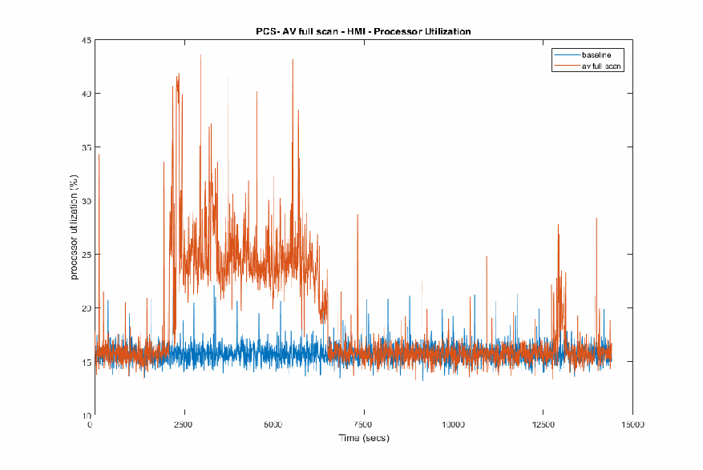
「PCS- AV full scan - HMI - Processor Utilization」と題したグラフです。縦軸は「processor utilization (%)」（プロセッサ使用率、%）で 10〜45、横軸は「Time (secs)」（時間、秒）で 0〜15000 です。凡例は「baseline」（青）と「av full scan」（橙）です。baseline は約 15〜17 % にとどまり、av full scan は約 2000〜6500 秒の間に約 20〜44 % まで上がり、12500 秒付近にも突出がいくつかあります。
Figure 4-22 Plot of processor utilization of HMI computer during a Symantec scan (red) and without a Symantec scan (blue)
図 4-22 Symantec スキャン中（赤）と、Symantec スキャンなし（青）における、HMI コンピューターのプロセッサー使用率のプロット
No significant performance impact to the network was observed. For example, the packet round trip time between the OPC and PLC remained mostly the same.
ネットワークへの大きな性能影響は観測されませんでした。たとえば、OPC と PLC の間のパケットのラウンドトリップ時間は、ほぼ同じままでした。
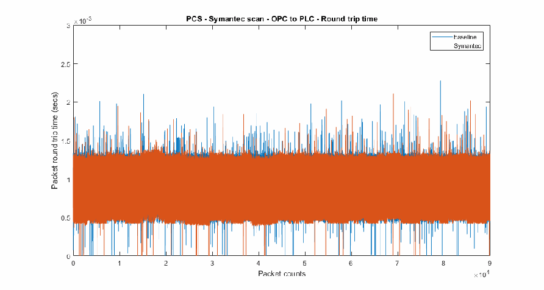
「PCS - Symantec scan - OPC to PLC - Round trip time」と題したグラフです。縦軸は「Packet round trip time (secs)」（パケットの往復時間、秒）で 0〜3×10^-3、横軸は「Packet counts」（パケット数）で 0〜9×10^4 です。凡例は「baseline」（青）と「Symantec」（橙）です。どちらも約 0.5〜1.4×10^-3 秒の密な帯を作り、約 2.2×10^-3 秒までの突出があります。2つの系列は重なっています。
Figure 4-23 Packet round trip time between OPC and PLC during Symantec scan (red)
図 4-23 Symantec スキャン中（赤）の、OPC と PLC の間のパケットのラウンドトリップ時間
There was no significant impact to the manufacturing process observed. The product flow and the reactor pressure remain very close to the baseline measurement during the Symantec scan.
製造プロセスへの大きな影響は観測されませんでした。Symantec のスキャン中、製品の流量と反応器の圧力は、ベースラインの測定値に非常に近いままでした。
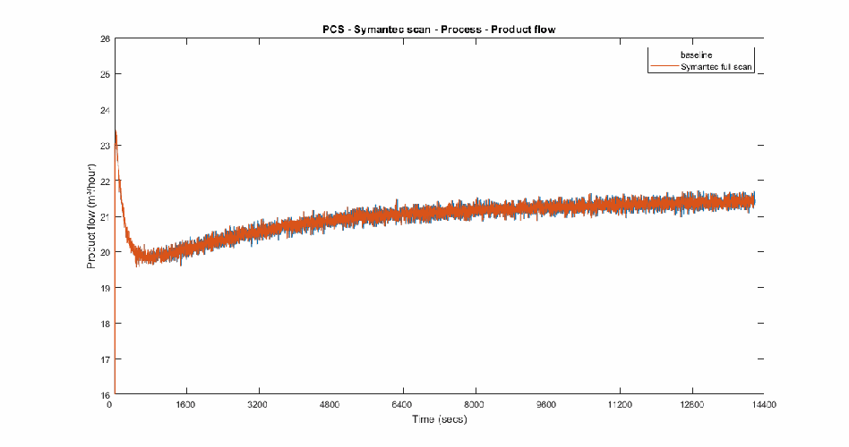
「PCS - Symantec scan - Process - Product flow」と題したグラフです。縦軸は「Product flow (m³/hour)」（製品流量、m³/時）で 16〜26、横軸は「Time (secs)」（時間、秒）で 0〜14400 です。凡例は「baseline」（青）と「Symantec full scan」（橙）です。どちらも開始直後に約 23 から約 20 まで下がり、その後ゆるやかに約 21.5 まで上がります。2つの系列は重なっています。
Figure 4-24 Manufacturing process product flow rate
図 4-24 製造プロセスの製品流量
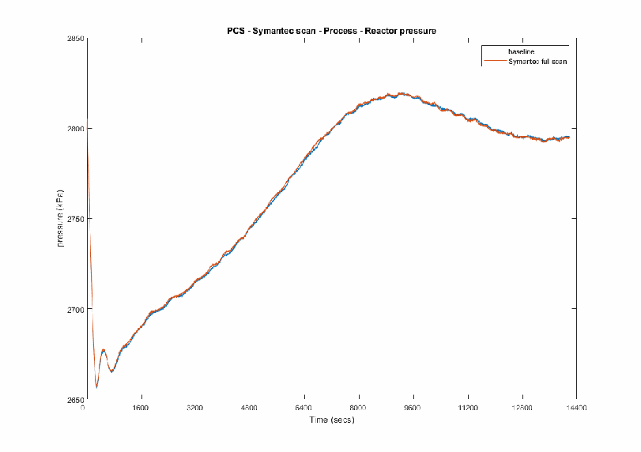
「PCS - Symantec scan - Process - Reactor pressure」と題したグラフです。縦軸は「pressure (kPa)」（圧力、kPa）で 2650〜2850、横軸は「Time (secs)」（時間、秒）で 0〜14400 です。凡例は「baseline」（青）と「Symantec full scan」（橙）です。どちらも開始直後に約 2655 まで下がり、9600 秒付近で約 2820 の最大となった後、約 2795 までわずかに下がります。2つの系列は重なっています。
Figure 4-25 Manufacturing process Reactor pressure
図 4-25 製造プロセスの反応器圧力
It is hypothesized that the impact to the processor utilization was caused by the Symantec AV during the scan. In the case of the PCS system, the normal processor utilization is relatively low and therefore the increased usage did not cause any performance impact to the manufacturing process. If the normal utilization of the host is close to 100 %, there is potential performance impact due to the increase utilization during scan time.
プロセッサー使用率への影響は、スキャン中の Symantec AV によって引き起こされたと推測されます。PCS システムの場合、通常のプロセッサー使用率は比較的低いため、使用率の増加は製造プロセスへの性能影響を引き起こしませんでした。ホストの通常の使用率が100 % に近い場合は、スキャン時の使用率の増加による性能影響が生じる可能性があります。
4.10.7 Links to Entire Performance Measurement Data Set
4.10.7 性能測定データセット全体へのリンク
•Symantec AV KPI data
•Symantec AV の KPI データ
•Symantec AV measurement data
•Symantec AV の測定データ
4.11 Tenable Nessus
4.11 Tenable Nessus
4.11.1 Technical Solution Overview
4.11.1 技術ソリューションの概要
Nessus Professional is a vulnerability assessment software from Tenable. It features high-speed asset discovery, configuration auditing, target profiling, malware detection, sensitive data discovery and more. Nessus supports technologies such as scanning operating systems, network devices, next generation firewalls, hypervisors, databases, web servers and critical infrastructure for vulnerabilities, threats and compliance violations.94 It supports both authenticated and unauthenticated scans.
Nessus Professional は、Tenable の脆弱性評価ソフトウェアです。高速な資産検出、構成監査、ターゲットのプロファイリング、マルウェア検知、機微なデータの検出などの機能を備えています。Nessus は、オペレーティングシステム、ネットワークデバイス、次世代ファイアウォール、ハイパーバイザー、データベース、Web サーバー、重要インフラをスキャンして、脆弱性、脅威、およびコンプライアンス違反を検出する技術をサポートしています。94 認証付きスキャンと認証なしスキャンの両方をサポートしています。
Points to consider:
考慮すべき点：
•Easy to setup, User friendly dashboard, fast scanning and can be configured to work in a distributed environment.
•セットアップが容易で、ユーザーフレンドリーなダッシュボードを備え、スキャンが高速で、分散環境で動作するように構成できます。
•Support for Industrial Protocols such as MODBUS, DNP3 etc. It has the necessary plugins to detect vulnerabilities on ICS/SCADA systems making it ideal to use in OT environments.
•MODBUS、DNP3 などの産業用プロトコルをサポートしています。ICS/SCADA システムの脆弱性を検知するために必要なプラグインを備えており、OT 環境での使用に理想的です。
•Comes with a variety of Out-of-box policy and configuration templates.
•さまざまなすぐに使えるポリシーと構成のテンプレートが付属しています。
•No limit on number of IPs or number of assessments you can run.
•実行できる IP の数や評価の回数に制限がありません。
•Support for scanning devices behind a firewall.
•ファイアウォールの背後にあるデバイスのスキャンをサポートしています。
•No integration available with LDAP or AD in the Professional edition.
•Professional エディションでは、LDAP や AD との統合は利用できません。
•Multiple user accounts not supported for logging in to the Web UI.
•Web UI へのログインに、複数のユーザーアカウントを使用することはサポートされていません。
4.11.2 Technical Capabilities Provided by Solution
4.11.2 ソリューションが提供する技術的能力
Tenable Nessus provides components of the following Technical Capabilities described in Section 6 of Volume 1:
Tenable Nessusは、第1巻の第6節で説明した、次の技術的能力の構成要素を提供します。
•Vulnerability Scanning
•脆弱性スキャン
•Vulnerability Management
•脆弱性管理
4.11.3 Subcategories Addressed by Implementing Solution
4.11.3 ソリューションの実装によって対処するサブカテゴリ
ID.RA-1, DE.CM-4, DE.CM-8, RS.MI-3
ID.RA-1, DE.CM-4, DE.CM-8, RS.MI-3
4.11.4 Architecture Map of Where Solution was Implemented
4.11.4 ソリューションを実装した場所のアーキテクチャマップ
![Network architecture map of the Westman process-based manufacturing system lab. Legend box: a green eye icon and a dashed green line labeled "Nessus Scan Traffic". An "Internet" cloud connects to "Corporate Network" and the "Manuf. System Router/Firewall". Management zone: "Microsoft ActiveDirectory/RADIUS 10.100.2.3" on "Management LAN – 10.100.2.0/24". Manufacturing DMZ zone: "DMZ Historian 10.100.1.4" on "Manufacturing DMZ LAN - 10.100.1.0/24". Cybersecurity LAN zone ("Cybersecurity LAN 10.100.0.0/24"): "NTP/PTP Clock 10.100.0.15", "TheHive Incident Resp. 10.100.0.5", "Nessus Vuln. Scanner 10.100.0.25", "Microsoft ActiveDirectory 10.100.0.13,17", "Symantec Antivirus - SEPM 10.100.0.5", "GTB Data Loss Prev. 10.100.0.175,176", "Veeam Backup & Replication 10.100.0.10", "Graylog Syslog 10.100.0.14", "Windows WSUS 10.100.0.12". Plant zone: "PCS LAN Router 10.100.0.40 172.16.1.1 172.16.3.1" (also labeled 10.100.2.8 and 172.16.2.1); "Engineering Workstation 172.16.3.10" on "Engineering LAN – 172.16.3.0/24"; "HMI 172.16.1.4" and "Plant Controller 172.16.1.5" on "Plant LAN – 172.16.1.0/24"; "Local Historian 172.16.2.4", "OPC Server 172.16.2.5" and "Supervisory PLC 172.16.2.102" on "Supervisory LAN – 172.16.2.0/24"; the Supervisory PLC connects via "DeviceNet to Field Devices" to the "Manufacturing Process" (a screen image of the process simulation). A "Network Tap" label appears near the Plant LAN. The Nessus eye icon is on the Nessus Vuln. Scanner; green lines run from it along the Cybersecurity LAN and, dashed, through the PCS LAN Router to the Engineering, Plant and Supervisory LANs.](assets/ir-8183av2/p0240-figure-02.png)
Westman のプロセス型製造システムの実験環境のネットワーク構成図です。凡例: 緑の目のアイコンと緑の破線が「Nessus Scan Traffic」（Nessus のスキャン通信）です。「Internet」の雲が「Corporate Network」（企業ネットワーク）と「Manuf. System Router/Firewall」（製造システムのルーター／ファイアウォール）につながっています。管理ゾーンには「Management LAN – 10.100.2.0/24」上の「Microsoft ActiveDirectory/RADIUS 10.100.2.3」、製造DMZゾーンには「Manufacturing DMZ LAN - 10.100.1.0/24」上の「DMZ Historian 10.100.1.4」があります。サイバーセキュリティLANゾーン（「Cybersecurity LAN 10.100.0.0/24」）には「NTP/PTP Clock 10.100.0.15」「TheHive Incident Resp. 10.100.0.5」「Nessus Vuln. Scanner 10.100.0.25」「Microsoft ActiveDirectory 10.100.0.13,17」「Symantec Antivirus - SEPM 10.100.0.5」「GTB Data Loss Prev. 10.100.0.175,176」「Veeam Backup & Replication 10.100.0.10」「Graylog Syslog 10.100.0.14」「Windows WSUS 10.100.0.12」が並びます。プラントゾーンには「PCS LAN Router 10.100.0.40 172.16.1.1 172.16.3.1」（10.100.2.8 と 172.16.2.1 の表示もあります）があり、「Engineering LAN – 172.16.3.0/24」上に「Engineering Workstation 172.16.3.10」、「Plant LAN – 172.16.1.0/24」上に「HMI 172.16.1.4」と「Plant Controller 172.16.1.5」、「Supervisory LAN – 172.16.2.0/24」上に「Local Historian 172.16.2.4」「OPC Server 172.16.2.5」「Supervisory PLC 172.16.2.102」があります。Supervisory PLC は「DeviceNet to Field Devices」で「Manufacturing Process」（プロセスのシミュレーション画面の画像）につながります。Plant LAN の近くに「Network Tap」の表示があります。Nessus の目のアイコンは Nessus Vuln. Scanner に付き、そこから緑の線が Cybersecurity LAN に沿って、また破線で PCS LAN Router を経て Engineering LAN・Plant LAN・Supervisory LAN へ延びています。
4.11.5 Installation Instructions and Configurations
4.11.5 インストール手順と構成
Details of the solution implemented:
実装したソリューションの詳細：
| Name | Version | Deployment Mode | Hardware Details |
|---|---|---|---|
| Nessus Professional | 7.2.0 | Standalone | Hyper-V Virtual Machine (Generation 2):
|
| 名称 | バージョン | デプロイモード | ハードウェアの詳細 |
|---|---|---|---|
| Nessus Professional | 7.2.0 | スタンドアロン | Hyper-V 仮想マシン（第2世代）：
|
4.11.5.1 Environment setup
4.11.5.1 環境のセットアップ
1.A virtual machine running Windows 2012 R2 was setup on a Hyper-V host server of the Cybersecurity LAN network of the plant with hardware specifications as described in the table above.
1.Windows 2012 R2 が動作する仮想マシンを、プラントの Cybersecurity LAN ネットワークの Hyper-V ホストサーバーに、上の表のハードウェア仕様でセットアップしました。
2.The guest OS IP information of this server was set as follows:
2.このサーバーのゲスト OS の IP 情報は、次のように設定しました。
IP address: 10.100.0.25
Gateway: 10.100.0.1
Subnet Mask: 255.255.255.0
DNS:10.100.0.174.11.5.2 Setup Instructions
4.11.5.2 セットアップ手順
1.Download the Nessus Professional installer.95
1.Nessus Professional のインストーラーをダウンロードします。95
2.Run the installer. Follow the on-screen instructions of the setup wizard.
2.インストーラーを実行します。セットアップウィザードの画面の指示に従います。
3.Register the product during installation either in online or offline mode. An online mode96 is suitable for environments where Nessus server has internet access while an offline mode is suitable for air-gapped environments.
3.インストール中に、オンラインモードまたはオフラインモードのいずれかで製品を登録します。オンラインモード96 は、Nessus サーバーがインターネットにアクセスできる環境に適しており、オフラインモードはエアギャップ環境に適しています。
4.Navigate to the Nessus web interface97 post installation.
4.インストール後、Nessus の Web インターフェース97 に移動します。
5.Login to the Nessus UI, Click Settings to configure SMTP Server, LDAP Server and Custom CA Certificate (if applicable)
5.Nessus の UI にログインし、Settings をクリックして、SMTP サーバー、LDAP サーバー、カスタム CA 証明書（該当する場合）を構成します。
6.Configure Firewall rules as described in the Nessus documentation for credentials scans to allow SSH, WMI or SNMP traffic depending on the type of hosts between the Nessus server and the scan targets. For unauthenticated scans, the firewall should be allowed for any-any communication between the Nessus server and target network.
6.認証情報スキャンについては、Nessus のドキュメントに記載されているとおり、ホストの種類に応じて、Nessus サーバーとスキャン対象との間で SSH、WMI または SNMP の通信を許可するように、ファイアウォールルールを構成します。認証なしスキャンについては、Nessus サーバーと対象ネットワークとの間で any-any の通信が許可されている必要があります。
4.11.5.3 Configuring Scans and Policies
4.11.5.3 スキャンとポリシーの構成
Prerequisites for performing credentials-based scan of Windows. All of these were enabled on the Windows systems of our Plant network.
Windows の認証情報ベースのスキャンを実行するための前提条件です。これらはすべて、今回の Plant ネットワークの Windows システムで有効にしていました。
•Enable the Windows Management Instrumentation (WMI) service on the target.98
•対象で、Windows Management Instrumentation（WMI）サービスを有効にします。98
•Enable the Remote Registry service on the target.
•対象で、Remote Registry サービスを有効にします。
•Enable File and Printer Sharing in the target's network configuration.
•対象のネットワーク構成で、File and Printer Sharing を有効にします。
•Use an SMB account that has local administrator rights on the target. (You can use a domain account, but that account must be a local administrator on the devices being scanned.)
•対象でローカル管理者権限を持つ SMB アカウントを使用します。（ドメインアカウントを使用することもできますが、そのアカウントは、スキャン対象のデバイスでローカル管理者でなければなりません。）
•Open Ports 139 (TCP) and 445 (TCP) between the Nessus scanner and the target.
•Nessus スキャナーと対象の間で、ポート 139（TCP）と 445（TCP）を開きます。
•Enable the default administrative shares (i.e. IPC$, ADMIN$, C$) (AutoShareServer = 1). These are enabled by default and can cause other issues if disabled.99
•デフォルトの管理共有（IPC$、ADMIN$、C$ など）を有効にします（AutoShareServer = 1）。これらはデフォルトで有効になっており、無効にすると他の問題を引き起こす場合があります。99
•Run the commands below from an elevated Command prompt or PowerShell (Right click CMD > Run as administrator) on a host in the same network as the target.
•対象と同じネットワーク内のホストで、管理者として実行したコマンドプロンプトまたは PowerShell（CMD を右クリックし、Run as administrator を選択）から、以下のコマンドを実行します。
net use \\<IP-address of Target>\ipc$/user:This command will test if we can access the IPC$ share without a username (This is how Nessus tests to see if SMB is running)
このコマンドは、ユーザー名なしで IPC$ 共有にアクセスできるかどうかをテストします（Nessus が SMB の実行有無をテストする方法です）。
net use \\x.x.x.x\ipc$ /user:username password
net use \\x.x.x.x\admin$ /user:username passwordThese commands are for SMB Logon test. These commands should return "The command completed successfully." If it does not, then the credentials did not work or do not have sufficient privileges.
これらのコマンドは SMB ログオンテスト用です。これらのコマンドは "The command completed successfully." を返すはずです。返さない場合は、認証情報が機能しなかったか、十分な権限がありません。
Note: To have a successful credential scan, these commands should not return errors.
注：認証情報スキャンを成功させるには、これらのコマンドがエラーを返してはなりません。
Use the Policy feature of Nessus for performing credentials checks, A Policy lets you create a scan template where in device credentials and other custom settings can be saved for scanning assets. Once created, a policy can then later be assigned to a scan.
認証情報のチェックを実行するには、Nessus のポリシー機能を使用します。ポリシーでは、資産をスキャンするために、デバイスの認証情報やその他のカスタム設定を保存するスキャンテンプレートを作成できます。作成したポリシーは、後でスキャンに割り当てることができます。
1.Create a Policy using the following instructions
1.次の手順で、ポリシーを作成します。
a.Click on Policies from the left-side explorer bar
a.左側のエクスプローラーバーから Policies をクリックします。
b.Click on New Policy button.
b.New Policy ボタンをクリックします。
［第三者の画像。第三者の著作物のため、この非公式サイトには掲載していません。原本 PDF を参照してください。］
c.Choose from any on the default templates available. The Advanced Scan template was selected for our use. Click on Credentials tab under a template to configure host-based credentials (SSH, Windows, SNMP, etc.).
c.利用可能なデフォルトのテンプレートから選択します。今回の使用では、Advanced Scan テンプレートを選択しました。テンプレートの下の Credentials タブをクリックして、ホストベースの認証情報（SSH、Windows、SNMP など）を構成します。
d.Click Save when done.
d.完了したら Save をクリックします。
2.Create a Scan using the following instructions
2.次の手順で、スキャンを作成します。
a.Click Scans on the Home Page > +New Scan > User Defined > Select <Policy>
a.ホームページで Scans > +New Scan > User Defined > Select <Policy> をクリックします。
b.Enter a Name, Description and Network Range or Host IP addresses.
b.Name、Description、ネットワーク範囲またはホストの IP アドレスを入力します。
c.Click on Schedule to configure a schedule
c.Schedule をクリックして、スケジュールを構成します。
d.Click Notifications to configure Email recipients.
d.Notifications をクリックして、電子メールの宛先を構成します。
e.Click Save.
e.Save をクリックします。
［第三者の画像。第三者の著作物のため、この非公式サイトには掲載していません。原本 PDF を参照してください。］
3.Assign the Scan created to a Policy as follows
3.作成したスキャンを、次のようにポリシーに割り当てます。
a.Click All Scans > Click on the <Scan> created earlier.
a.All Scans > 先に作成した <Scan> をクリックします。
b.Under Policy, Select the appropriate Policy from the drop-down list to associate the scan with a policy.
b.Policy の下で、ドロップダウンリストから適切なポリシーを選択して、スキャンをポリシーに関連付けます。
c.Click Save.
c.Save をクリックします。
4.(Optional) Click on the launch button next to the scan to start on-demand scan
4.（任意）スキャンの横にある launch ボタンをクリックして、オンデマンドスキャンを開始します。
5.Review the scan results upon completion of the scan.
5.スキャンの完了後に、スキャン結果を確認します。
4.11.5.4 Custom Configuration for the Plant Network
4.11.5.4 Plant ネットワーク向けのカスタム構成
The figure below shows the different policies created in our Nessus Manager specific to each system. The policy for this Process Control system is named PCS_Enclave_Policy
次の図は、今回の Nessus Manager に、各システム向けに作成したさまざまなポリシーを示しています。このプロセス制御システムのポリシーは、PCS_Enclave_Policy という名前です。
［第三者の画像。第三者の著作物のため、この非公式サイトには掲載していません。原本 PDF を参照してください。］
The figure below shows the corresponding scan job settings which has the PCS_Enclave_Policy assigned to it.
次の図は、PCS_Enclave_Policy を割り当てた、対応するスキャンジョブの設定を示しています。
［第三者の画像。第三者の著作物のため、この非公式サイトには掲載していません。原本 PDF を参照してください。］
4.11.5.5 Additional Information
4.11.5.5 追加情報
•Official Nessus Documentation100
•Nessus の公式ドキュメント100
•Credentials checks for scanning Windows targets101
•Windows ターゲットをスキャンするための認証情報チェック101
4.11.6 Highlighted Performance Impacts
4.11.6 注目すべき性能への影響
The following performance measurement experiment was performed for the Nessus vulnerability assessment tool while the manufacturing system was operational:
製造システムが稼働している間に、Nessus 脆弱性評価ツールについて、次の性能測定実験を実施しました。
Experiment PL006.1- Nessus vulnerability network scan
実験 PL006.1 - Nessus による脆弱性ネットワークスキャン
There was no significant performance impact to the manufacturing process observed during the Nessus vulnerability scan. No significant network traffic increased during the Nessus scan was observed. For example, the packet round trip time from the Controller to OPC stayed mostly constant throughout the Nessus scan.
Nessus の脆弱性スキャン中、製造プロセスへの大きな性能影響は観測されませんでした。Nessus のスキャン中、ネットワークトラフィックの大きな増加も観測されませんでした。たとえば、Controller から OPC までのパケットのラウンドトリップ時間は、Nessus のスキャン中を通じてほぼ一定のままでした。
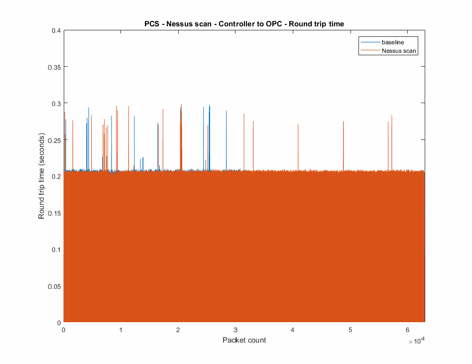
「PCS - Nessus scan - Controller to OPC - Round trip time」と題したグラフです。縦軸は「Round trip time (seconds)」（往復時間、秒）で 0〜0.4、横軸は「Packet count」（パケット数）で 0〜6×10^4 です。凡例は「baseline」（青）と「Nessus scan」（橙）です。どちらも約 0.21 秒までの密な帯を作り、ときどき約 0.3 秒までの突出があります。
Figure 4-26 Packet round trip time from Controller to OPC during Nessus scan
図 4-26 Nessus のスキャン中の、Controller から OPC までのパケットのラウンドトリップ時間
Some part of the system recorded a slightly increased network traffic, for example, the network utilization and average bit rate from OPC to HMI during the Nessus scan was about 14.11 % and 1.41 Mbit/sec respectively, while the baseline is 13.81 % and 1.38 Mbit/sec respectively. The network utilization from PLC to OPC during the Nessus scan was about 2.2 % higher than baseline.
システムの一部では、ネットワークトラフィックがわずかに増加しました。たとえば、Nessus のスキャン中の、OPC から HMI までのネットワーク使用率と平均ビットレートは、それぞれ約14.11 % と 1.41 Mbit/sec で、ベースラインはそれぞれ13.81 % と 1.38 Mbit/sec でした。Nessus のスキャン中の PLC から OPC までのネットワーク使用率は、ベースラインより約2.2 % 高くなりました。
The performance of the manufacturing process mostly remained the same. For example, the product flow and the reactor pressure remained align with the baseline measurement.
製造プロセスの性能は、ほぼ同じままでした。たとえば、製品の流量と反応器の圧力は、ベースラインの測定値と一致していました。
「PCS - Nessus scan - Process - Product flow」と題したグラフです。縦軸は「Product flow (m³/hour)」（製品流量、m³/時）で 19〜24、横軸は「Time (secs)」（時間、秒）で 0〜14400 です。凡例は「baseline」（青）と「Nessus scan」（橙）です。どちらも開始直後に約 23.5 から約 19.8 まで下がり、その後ゆるやかに約 21.5 まで上がります。2つの系列は重なっています。
Figure 4-27 Manufacturing process product flow rate at Nessus scan
図 4-27 Nessus のスキャン時の、製造プロセスの製品流量
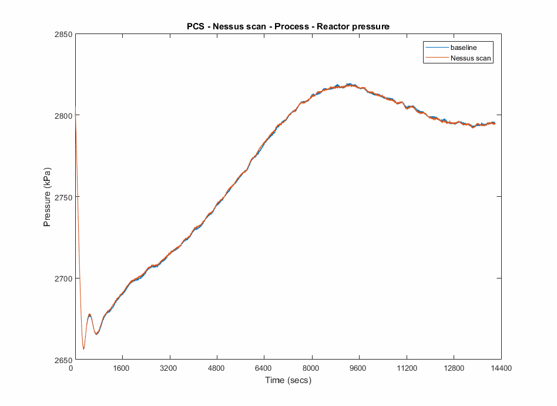
「PCS - Nessus scan - Process - Reactor pressure」と題したグラフです。縦軸は「Pressure (kPa)」（圧力、kPa）で 2650〜2850、横軸は「Time (secs)」（時間、秒）で 0〜14400 です。凡例は「baseline」（青）と「Nessus scan」（橙）です。どちらも開始直後に約 2655 まで下がり、9600 秒付近で約 2820 の最大となった後、約 2795 までわずかに下がります。2つの系列は重なっています。
Figure 4-28 Manufacturing process reactor pressure at Nessus scan
図 4-28 Nessus のスキャン時の、製造プロセスの反応器圧力
4.11.7 Links to Entire Performance Measurement Data Set
4.11.7 性能測定データセット全体へのリンク
•Nessus KPI data
•Nessus の KPI データ
•Nessus measurement data
•Nessus の測定データ
4.12 NamicSoft
4.12 NamicSoft
4.12.1 Technical Solution Overview
4.12.1 技術ソリューションの概要
NamicSoft Scan Report Assistant is a parser and reporting tool for Nessus, Burp, Nexpose OpenVAS and NCATS.102
NamicSoft Scan Report Assistant は、Nessus、Burp、Nexpose、OpenVAS、NCATS 向けの解析・レポートツールです。102
4.12.2 Technical Capabilities Provided by Solution
4.12.2 ソリューションが提供する技術的能力
NamicSoft provides components of the following Technical Capabilities described in Section 6 of Volume 1:
NamicSoftは、第1巻の第6節で説明した、次の技術的能力の構成要素を提供します。
•Vulnerability Management
•脆弱性管理
4.12.3 Subcategories Addressed by Implementing Solution
4.12.3 ソリューションの実装によって対処するサブカテゴリ
ID.RA-1, DE.CM-4, RS.MI-3
ID.RA-1, DE.CM-4, RS.MI-3
4.12.4 Architecture Map of Where Solution was Implemented
4.12.4 ソリューションを実装した場所のアーキテクチャマップ
![Network architecture map of the Westman process-based manufacturing system lab. Legend box: a light-blue cloud icon labeled "NamicSoft" with the text "NamicSoft Scan Report Assistant". An "Internet" cloud connects to "Corporate Network" and the "Manuf. System Router/Firewall". Management zone: "Microsoft ActiveDirectory/RADIUS 10.100.2.3" on "Management LAN – 10.100.2.0/24". Manufacturing DMZ zone: "DMZ Historian 10.100.1.4" on "Manufacturing DMZ LAN - 10.100.1.0/24". Cybersecurity LAN zone ("Cybersecurity LAN - 10.100.0.0/24"): "NTP/PTP Clock 10.100.0.15", "Open-Audit 10.100.0.177", "TheHive Incident Resp. 10.100.0.5", "Nessus Vuln. Scanner 10.100.0.25", "Microsoft ActiveDirectory 10.100.0.13,17", "Symantec Antivirus 10.100.0.5", "GTB Data Loss Prev. 10.100.0.175,176", "Veeam Backup 10.100.0.10", "Graylog Syslog 10.100.0.14", "Security Onion 10.100.0.26", "Windows WSUS 10.100.0.12". Plant zone: "PCS LAN Router (OSPF) 10.100.0.40 172.16.1.1" (also labeled 10.100.2.8, 172.16.2.1 and 172.16.3.1) with two "Switch" icons; "Engineering Workstation 172.16.3.10" on "Engineering LAN – 172.16.3.0/24"; "HMI 172.16.1.4" and "Plant Controller 172.16.1.5" on "VLAN 1 – 172.16.1.0/24"; "Local Historian 172.16.2.4", "OPC Server 172.16.2.5" and "Supervisory PLC 172.16.2.102" on "VLAN 2 – 172.16.2.0/24"; the Supervisory PLC connects via "DeviceNet to Field Devices" to the "Manufacturing Process" (a screen image of the process simulation). The NamicSoft cloud icon is shown on the Nessus Vuln. Scanner.](assets/ir-8183av2/p0250-figure-02.png)
Westman のプロセス型製造システムの実験環境のネットワーク構成図です。凡例: 「NamicSoft」と書かれた水色の雲のアイコンが「NamicSoft Scan Report Assistant」です。「Internet」の雲が「Corporate Network」（企業ネットワーク）と「Manuf. System Router/Firewall」（製造システムのルーター／ファイアウォール）につながっています。Management（管理）区画には「Management LAN – 10.100.2.0/24」上の「Microsoft ActiveDirectory/RADIUS 10.100.2.3」、Manufacturing DMZ 区画には「Manufacturing DMZ LAN - 10.100.1.0/24」上の「DMZ Historian 10.100.1.4」があります。Cybersecurity LAN 区画（「Cybersecurity LAN - 10.100.0.0/24」）には 「NTP/PTP Clock 10.100.0.15」「Open-Audit 10.100.0.177」「TheHive Incident Resp. 10.100.0.5」「Nessus Vuln. Scanner 10.100.0.25」「Microsoft ActiveDirectory 10.100.0.13,17」「Symantec Antivirus 10.100.0.5」「GTB Data Loss Prev. 10.100.0.175,176」「Veeam Backup 10.100.0.10」「Graylog Syslog 10.100.0.14」「Security Onion 10.100.0.26」「Windows WSUS 10.100.0.12」 が並びます。Plant（工場）区画には 「PCS LAN Router (OSPF) 10.100.0.40 172.16.1.1」（10.100.2.8、172.16.2.1、172.16.3.1 の表示もあります）と2つの「Switch」があり、「Engineering LAN – 172.16.3.0/24」上に「Engineering Workstation 172.16.3.10」、「VLAN 1 – 172.16.1.0/24」上に「HMI 172.16.1.4」と「Plant Controller 172.16.1.5」、「VLAN 2 – 172.16.2.0/24」上に「Local Historian 172.16.2.4」「OPC Server 172.16.2.5」「Supervisory PLC 172.16.2.102」があります。Supervisory PLC は「DeviceNet to Field Devices」で「Manufacturing Process」（プロセスのシミュレーション画面の画像）につながります。NamicSoft の雲のアイコンは Nessus Vuln. Scanner に付いています。
4.12.5 Installation Instructions and Configurations
4.12.5 インストール手順と構成
Details of the solutions implemented:
実装したソリューションの詳細：
| Name | Version |
|---|---|
| NamicSoft Scan Report Assistant | 3.5.0 |
| 名称 | バージョン |
|---|---|
| NamicSoft Scan Report Assistant | 3.5.0 |
4.12.5.1 Environment setup
4.12.5.1 環境のセットアップ
1.NamicSoft was installed on our Nessus Scanner server as described in Section 4.11.
1.NamicSoft は、4.11 節で説明した Nessus Scanner サーバーにインストールしました。
2.The guest OS IP information of this server was set as follows:
2.このサーバーのゲスト OS の IP 情報は、次のように設定しました。
IP address: 10.100.0.25
Gateway: 10.100.0.1
Subnet Mask: 255.255.255.0
DNS:10.100.0.174.12.5.2 Setup Instructions
4.12.5.2 セットアップ手順
1.Download NamicSoft103
1.NamicSoft103 をダウンロードします。
2.Run the installer on a Windows PC. NamicSoft is currently supported on 64-bit Windows with .Net Framework 4.5 installed
2.Windows PC でインストーラーを実行します。NamicSoft は現在、.Net Framework 4.5 がインストールされた 64 ビット Windows でサポートされています。
3.Launch the program by double clicking its Desktop icon. If using for the first time, the installation will prompt for a license file. If a license is not entered, it runs in free mode. The free mode is limited to five hosts.
3.デスクトップアイコンをダブルクリックして、プログラムを起動します。初めて使用する場合は、インストール時にライセンスファイルを求められます。ライセンスを入力しない場合は、無料モードで動作します。無料モードは5ホストに制限されます。
Note: The software is tied to a Windows user account. Any changes made by a user would not be visible to a different user logging in to the same system.
注：このソフトウェアは、Windows のユーザーアカウントに紐付けられています。あるユーザーが加えた変更は、同じシステムにログインする別のユーザーには表示されません。
4.12.5.3 Configuration for reporting Nessus scans
4.12.5.3 Nessus スキャンのレポート作成のための構成
1.Export a Scan Report of Nessus format from the Nessus web interface.
1.Nessus の Web インターフェースから、Nessus 形式のスキャンレポートをエクスポートします。
2.Launch NamicSoft Report Assistant. Click Import on left-side explorer, select Nessus
2.NamicSoft Report Assistant を起動します。左側のエクスプローラーで Import をクリックし、Nessus を選択します。
3.Click on Choose button to import files
3.Choose ボタンをクリックして、ファイルをインポートします。
［第三者の画像。第三者の著作物のため、この非公式サイトには掲載していません。原本 PDF を参照してください。］
4.Browse to the Nessus scan report. Under Import Vulnerabilities with following vulnerabilities, Check / Uncheck whichever severity of vulnerabilities you wish to be included in the report and click Import.
For instance, the image below shows Informational types being excluded and other severity levels such as High, Critical, Medium Low being selected. When the Import finishes, the Status bar should display All files read.
4.Nessus のスキャンレポートを開きます。Import Vulnerabilities with following vulnerabilities の下で、レポートに含めたい重大度の脆弱性をチェックまたはチェック解除し、Import をクリックします。
たとえば、次の画像では、Informational の種類を除外し、High、Critical、Medium Low など、他の重大度レベルを選択しています。インポートが完了すると、ステータスバーに All files read と表示されるはずです。
［第三者の画像。第三者の著作物のため、この非公式サイトには掲載していません。原本 PDF を参照してください。］
5.Click the Hosts page upon completion of Import, to view all the hosts level summary. Similarly, clicking on Vulnerabilities page shows all the vulnerabilities
5.インポートの完了後、Hosts ページをクリックして、すべてのホストの概要を表示します。同様に、Vulnerabilities ページをクリックすると、すべての脆弱性が表示されます。
［第三者の画像。第三者の著作物のため、この非公式サイトには掲載していません。原本 PDF を参照してください。］
［第三者の画像。第三者の著作物のため、この非公式サイトには掲載していません。原本 PDF を参照してください。］
6.(Optional) Mark a Vulnerability as Fixed by selecting the Vulnerability > Right Click > Vulnerability Fixed.
6.（任意）脆弱性を選択し、右クリックして Vulnerability Fixed を選択すると、その脆弱性を修正済みとしてマークできます。
［第三者の画像。第三者の著作物のため、この非公式サイトには掲載していません。原本 PDF を参照してください。］
7.Click on Save Workspace under Actions. Ensure to Save your workspace after every change made. When running NamicSoft the next time, you can load this saved workspace file.
7.Actions の下の Save Workspace をクリックします。変更を加えるたびに、必ずワークスペースを保存します。次回 NamicSoft を実行するときは、この保存したワークスペースファイルを読み込むことができます。
8.Click on Report as shown below to generate a report. Select one of the default reporting templates from the list or create a custom one. To use a default template, select one from the list >> Create Report.
8.次に示すように Report をクリックして、レポートを生成します。一覧からデフォルトのレポートテンプレートのいずれかを選択するか、カスタムのテンプレートを作成します。デフォルトのテンプレートを使用するには、一覧から1つを選択し、>> Create Report をクリックします。
［第三者の画像。第三者の著作物のため、この非公式サイトには掲載していません。原本 PDF を参照してください。］
9.Click Open Report to view the Report.
9.Open Report をクリックして、レポートを表示します。
［第三者の画像。第三者の著作物のため、この非公式サイトには掲載していません。原本 PDF を参照してください。］
4.12.5.4 Creating Custom Template
4.12.5.4 カスタムテンプレートの作成
1.Copy one of the existing template files located under C:\Program Files(x86)\NamicSoft Scan Report Assistant\templates and save it to a different folder.
1.C:\Program Files(x86)\NamicSoft Scan Report Assistant\templates の下にある既存のテンプレートファイルの1つをコピーし、別のフォルダーに保存します。
2.Open the copied file in MS Word to begin editing. The image below shows a customized template file created for Process Control System. This report generates a summary of hosts and their respective vulnerabilities based on the Severity level.
2.コピーしたファイルを MS Word で開いて、編集を開始します。次の画像は、プロセス制御システム向けに作成したカスタマイズ済みのテンプレートファイルを示しています。このレポートは、重大度レベルに基づいて、ホストとそれぞれの脆弱性の概要を生成します。
Custom reports104 can also be created.
カスタムレポート104 を作成することもできます。
［NIST のロゴが写っている図。公的な標章のため、この非公式サイトには掲載していません。原本 PDF を参照してください。］
3.Save your changes and give the file a name.
3.変更を保存し、ファイルに名前を付けます。
4.Copy this file back to the templates directory on the NamicSoft machine. For instance, the image below shows our customized file – PCS- Host Summary copied back to the templates folder.
4.このファイルを、NamicSoft のマシンの templates ディレクトリにコピーして戻します。たとえば、次の画像は、カスタマイズしたファイル「PCS- Host Summary」を templates フォルダーにコピーして戻した様子を示しています。
［第三者の画像。第三者の著作物のため、この非公式サイトには掲載していません。原本 PDF を参照してください。］
5.Launch NamicSoft again. The custom report should now appear under the list. Select it and click on Create Report.
5.NamicSoft を再度起動します。カスタムレポートが、一覧に表示されるはずです。それを選択して、Create Report をクリックします。
［第三者の画像。第三者の著作物のため、この非公式サイトには掲載していません。原本 PDF を参照してください。］
6.Review the output to confirm your changes.
6.出力を確認して、変更が反映されていることを確かめます。
［NIST のロゴが写っている図。公的な標章のため、この非公式サイトには掲載していません。原本 PDF を参照してください。］
7.(Optional) Use the Compare Workspaces feature under Action Menu to report on Vulnerabilities remediated based off the previous vulnerability scans as follows
7.（任意）以前の脆弱性スキャンに基づいて、是正された脆弱性をレポートするには、次のように、Action メニューの Compare Workspaces 機能を使用します。
a.Load Nessus result from your previous scan. Save as a workspace.
a.以前のスキャンの Nessus の結果を読み込みます。ワークスペースとして保存します。
b.Clear the workspace in the GUI (or restart NamicSoft)
b.GUI でワークスペースをクリアします（または NamicSoft を再起動します）。
c.Load Nessus results from the latest scan
c.最新のスキャンの Nessus の結果を読み込みます。
d.Open Actions > Compare workspaces. Choose Compare with current workspace and point Workspace 2 to your workspace saved earlier.
d.Actions > Compare workspaces を開きます。Compare with current workspace を選択し、Workspace 2 に、先に保存したワークスペースを指定します。
e.Choose Excel output file (target)
e.Excel の出力ファイル（ターゲット）を選択します。
f.Click Compare Workspaces
f.Compare Workspaces をクリックします。
4.12.6 Highlighted Performance Impacts
4.12.6 特筆すべき性能への影響
No performance measurement experiments were performed for the use of NamicSoft due to its installation location and how it was used (i.e., the software performed offline analysis of vulnerability data captured by other software at a location external to the manufacturing system).
NamicSoft は、インストール場所と使用方法（製造システム外の場所で、他のソフトウェアが取得した脆弱性データをオフラインで分析する）を理由として、性能測定実験の対象としていません。
4.12.7 Links to Entire Performance Measurement Data Set
4.12.7 性能測定データセット全体へのリンク
N/A
N/A
4.13 The Hive Project
4.13 The Hive Project
4.13.1 Technical Solution Overview
4.13.1 技術ソリューションの概要
A scalable, open source and free Security Incident Response Platform.105
スケーラブルでオープンソースかつ無料のセキュリティインシデント対応プラットフォームです。105
4.13.2 Technical Capabilities Provided by Solution
4.13.2 ソリューションが提供する技術的能力
The Hive Project provides components of the following Technical Capabilities described in Section 6 of Volume 1:
The Hive Projectは、第1巻の第6節で説明した、次の技術的能力の構成要素を提供します。
•Incident Management
•インシデント管理
4.13.3 Subcategories Addressed by Implementing Solution
4.13.3 ソリューションの実装によって対処するサブカテゴリ
RS.MI-2, RS.MI-3
RS.MI-2, RS.MI-3
4.13.4 Architecture Map of Where Solution was Implemented
4.13.4 ソリューションを実装した場所のアーキテクチャマップ
![Network architecture map of the Westman process-based manufacturing system lab. Legend box: a bee icon with the text "The Hive Server". An "Internet" cloud connects to "Corporate Network" and the "Manuf. System Router/Firewall". Management zone: "Microsoft ActiveDirectory/RADIUS 10.100.2.3" on "Management LAN – 10.100.2.0/24". Manufacturing DMZ zone: "DMZ Historian 10.100.1.4" on "Manufacturing DMZ LAN - 10.100.1.0/24". Cybersecurity LAN zone ("Cybersecurity LAN - 10.100.0.0/24"): "NTP/PTP Clock 10.100.0.15", "Open-Audit 10.100.0.177", "TheHive Incident Resp. 10.100.0.5", "Nessus Vuln. Scanner 10.100.0.25", "Microsoft ActiveDirectory 10.100.0.13,17", "Symantec Antivirus 10.100.0.5", "GTB Data Loss Prev. 10.100.0.175,176", "Veeam Backup 10.100.0.10", "Graylog Syslog 10.100.0.14", "Security Onion 10.100.0.26", "Windows WSUS 10.100.0.12". Plant zone: "PCS LAN Router (OSPF) 10.100.0.40 172.16.1.1" (also labeled 10.100.2.8, 172.16.2.1 and 172.16.3.1) with two "Switch" icons; "Engineering Workstation 172.16.3.10" on "Engineering LAN – 172.16.3.0/24"; "HMI 172.16.1.4" and "Plant Controller 172.16.1.5" on "VLAN 1 – 172.16.1.0/24"; "Local Historian 172.16.2.4", "OPC Server 172.16.2.5" and "Supervisory PLC 172.16.2.102" on "VLAN 2 – 172.16.2.0/24"; the Supervisory PLC connects via "DeviceNet to Field Devices" to the "Manufacturing Process" (a screen image of the process simulation). The Hive bee icon is shown on the TheHive Incident Resp. server.](assets/ir-8183av2/p0260-figure-02.png)
Westman のプロセス型製造システムの実験環境のネットワーク構成図です。凡例: ハチのアイコンが「The Hive Server」です。「Internet」の雲が「Corporate Network」（企業ネットワーク）と「Manuf. System Router/Firewall」（製造システムのルーター／ファイアウォール）につながっています。Management（管理）区画には「Microsoft ActiveDirectory/RADIUS 10.100.2.3」が「Management LAN – 10.100.2.0/24」上にあります。Manufacturing DMZ 区画には「DMZ Historian 10.100.1.4」が「Manufacturing DMZ LAN - 10.100.1.0/24」上にあります。Cybersecurity LAN 区画（「Cybersecurity LAN - 10.100.0.0/24」）には「NTP/PTP Clock 10.100.0.15」「Open-Audit 10.100.0.177」「TheHive Incident Resp. 10.100.0.5」「Nessus Vuln. Scanner 10.100.0.25」「Microsoft ActiveDirectory 10.100.0.13,17」「Symantec Antivirus 10.100.0.5」「GTB Data Loss Prev. 10.100.0.175,176」「Veeam Backup 10.100.0.10」「Graylog Syslog 10.100.0.14」「Security Onion 10.100.0.26」「Windows WSUS 10.100.0.12」があります。Plant（工場）区画には「PCS LAN Router (OSPF) 10.100.0.40 172.16.1.1」（10.100.2.8、172.16.2.1、172.16.3.1 の表示もあります）と2つの「Switch」があり、「Engineering Workstation 172.16.3.10」が「Engineering LAN – 172.16.3.0/24」上にあります。「HMI 172.16.1.4」と「Plant Controller 172.16.1.5」は「VLAN 1 – 172.16.1.0/24」上にあり、「Local Historian 172.16.2.4」「OPC Server 172.16.2.5」「Supervisory PLC 172.16.2.102」は「VLAN 2 – 172.16.2.0/24」上にあります。Supervisory PLC は「DeviceNet to Field Devices」で「Manufacturing Process」（プロセスのシミュレーション画面の画像）につながります。The Hive のハチのアイコンは TheHive Incident Resp. サーバーに表示されています。
4.13.5 Installation Instructions and Configurations
4.13.5 インストール手順と構成
Details of the solution implemented:
実装したソリューションの詳細：
| Name | Version | Hardware Details |
|---|---|---|
| TheHive | 3.0.10 | Hyper-V Virtual Machine
|
| 名称 | バージョン | ハードウェアの詳細 |
|---|---|---|
| TheHive | 3.0.10 | Hyper-V 仮想マシン
|
4.13.5.1 Environment Setup
4.13.5.1 環境のセットアップ
1.A preconfigured training VM as provided by the Vendor was deployed on Hyper-V host server with the hardware specifications as described above.
1.ベンダーが提供する、事前構成済みのトレーニング用 VM を、上記のハードウェア仕様で Hyper-V ホストサーバーにデプロイしました。
2.The guest OS IP information was set as follows:
2.ゲスト OS の IP 情報は、次のように設定しました。
IP address: 10.100.0.51
Gateway: 10.100.0.1
Subnet Mask: 255.255.255.0
DNS:10.100.0.174.13.5.2 Setup Instructions
4.13.5.2 セットアップ手順
1.Download the software106
1.ソフトウェア106 をダウンロードします。
2.Install the binaries on a supported version of Linux.107
2.サポートされているバージョンの Linux に、バイナリをインストールします。107
3.Complete the setup process as per the instructions. Once done, TheHive can be accessed from http://<ip-address_of_hive_server>:9000
3.手順に従って、セットアッププロセスを完了します。完了すると、TheHive には http://<ip-address_of_hive_server>:9000 からアクセスできます。
4.13.5.3 Additional Setup via Web Browser
4.13.5.3 Web ブラウザーによる追加のセットアップ
1.Create the associated database if accessing TheHive for the first time, by clicking on the Update Database button as shown below:
1.TheHive に初めてアクセスする場合は、次に示すように Update Database ボタンをクリックして、関連するデータベースを作成します。
［第三者の画像。第三者の著作物のため、この非公式サイトには掲載していません。原本 PDF を参照してください。］
2.Follow the wizard to setup a user account.
2.ウィザードに従って、ユーザーアカウントをセットアップします。
3.Login to TheHive URL with these credentials. The default page will show you a List of Cases assigned to your account. There will be none initially for a new setup.
3.これらの認証情報で TheHive の URL にログインします。デフォルトのページには、アカウントに割り当てられたケースの一覧（List of Cases）が表示されます。新規セットアップの場合、最初は1件もありません。
［第三者の画像。第三者の著作物のため、この非公式サイトには掲載していません。原本 PDF を参照してください。］
4.Click on Admin > Users > User Management page, to create Additional user accounts. Click on +Add User to create a new user.
4.Admin > Users > User Management ページを開いて、追加のユーザーアカウントを作成します。+Add User をクリックして、新しいユーザーを作成します。
［第三者の画像。第三者の著作物のため、この非公式サイトには掲載していません。原本 PDF を参照してください。］
5.Create a new Incident / case as follows:
5.次のようにして、新しいインシデント／ケースを作成します。
a.Click on the New Case menu option
a.New Case メニューオプションをクリックします。
b.Fill in all the details.
b.すべての詳細を入力します。
c.Click on Add Task to add a task under a case. Each task can be individually assigned to an analyst for the work to be performed. By default, a task doesn’t have an owner until someone clicks into it, or “takes” it from the Waiting tasks queue in the top menu bar.
c.Add Task をクリックして、ケースの下にタスクを追加します。各タスクは、実施する作業のために、個別にアナリストへ割り当てることができます。デフォルトでは、誰かがタスクをクリックして開くか、上部のメニューバーの Waiting tasks キューから「引き受ける」まで、タスクには所有者がいません。
d.Hit Create Case button when done.
d.完了したら Create Case ボタンを押します。
［第三者の画像。第三者の著作物のため、この非公式サイトには掲載していません。原本 PDF を参照してください。］
6.Create a Custom Case Template as follows:
6.次のようにして、カスタムのケーステンプレートを作成します。
a.Click on Admin > Case Templates button on top right-hand corner
a.右上隅の Admin > Case Templates ボタンをクリックします。
b.Click +New Case Template
b.+New Case Template をクリックします。
c.Fill out the information in the fields.
c.各フィールドに情報を入力します。
d.Click Save Case Template
d.Save Case Template をクリックします。
7.(Optional) Open up a Case and click on Observables tab > +Add Observables to add Custom Observables such as domain names, IP addresses, files, filenames etc. to a case. In addition, observables can also be marked as Indicators of Compromise (IOC).
7.（任意）ケースを開き、Observables タブ > +Add Observables をクリックして、ドメイン名、IP アドレス、ファイル、ファイル名などのカスタムのオブザーバブルをケースに追加します。さらに、オブザーバブルは、侵害指標（IOC）としてマークすることもできます。
［第三者の画像。第三者の著作物のため、この非公式サイトには掲載していません。原本 PDF を参照してください。］
［第三者の画像。第三者の著作物のため、この非公式サイトには掲載していません。原本 PDF を参照してください。］
8.(Optional) Use the Cortex engine108 via http://<ip_of_hive_server>:9001 to perform detailed analysis on observables or IOCs such as domain names, IP addresses, hashes. This can be achieved by enabling or creating Analyzers in Cortex.
8.（任意）http://<ip_of_hive_server>:9001 の Cortex エンジン108 を使用して、ドメイン名、IP アドレス、ハッシュなどのオブザーバブルや IOC の詳細な分析を実行します。これは、Cortex でアナライザーを有効にするか作成することで実現できます。
The high-level steps in configuring Cortex are:
Cortex を構成する大まかな手順は、次のとおりです。
a.Setup Cortex
a.Cortex をセットアップします。
b.Create an Administrator account
b.管理者アカウントを作成します。
c.Create an Organization
c.組織を作成します。
d.Create an Organization Administrator account
d.組織の管理者アカウントを作成します。
e.Enable or Configure Analyzers
e.アナライザーを有効にするか、構成します。
f.Integrate with the Hive instance
f.Hive のインスタンスと統合します。
4.13.5.4 Integration with Security Onion
4.13.5.4 Security Onion との統合
Our Security Onion instance was integrated with the Hive Instance to create a case for IDS alerts generated by Security Onion.
今回の Security Onion のインスタンスは、Security Onion が生成した IDS アラートについてケースを作成するために、Hive のインスタンスと統合しました。
1.Create a dedicated user account in Hive with permissions to Allow alerts creation. Ensure Roles: None is set for security purposes of this user account.
1.Hive に、アラートの作成を許可する権限（Allow alerts creation）を持つ専用のユーザーアカウントを作成します。このユーザーアカウントのセキュリティのため、必ず Roles: None を設定します。
［第三者の画像。第三者の著作物のため、この非公式サイトには掲載していません。原本 PDF を参照してください。］
2.Click on Create API Key to create an API key for this user
2.Create API Key をクリックして、このユーザーの API キーを作成します。
3.(To be performed on the Security Onion server) Create a new rules file hive.yaml under the /etc./elastalert/rules directory of the Security Onion server mentioning the IP address of the Hive Server as shown below.109
3.（Security Onion サーバーで実施）次に示すように、Hive サーバーの IP アドレスを記載して、Security Onion サーバーの /etc./elastalert/rules ディレクトリに、新しいルールファイル hive.yaml を作成します。109
![Text box showing the Elastalert rule file hive.yaml used on the Security Onion server (the hive_connection lines are highlighted): "# hive.yaml / # Elastalert rule to forward IDS alerts from Security Onion to a specified TheHive instance. / # / es_host: elasticsearch / es_port: 9200 / name: TheHive - New IDS Alert! / type: frequency / index: "*:logstash-ids*" / num_events: 1 / timeframe: / minutes: 10 / buffer_time: / minutes: 10 / allow_buffer_time_overlap: true / filter: / - term: / event_type: "snort" / alert: hivealerter / hive_connection: / hive_host: https://10.100.0.51 / hive_port: 9000 / hive_apikey: APIKEY"](assets/ir-8183av2/p0267-figure-03.png)
Security Onion のサーバーで使った Elastalert のルールファイル hive.yaml の内容を示す枠です（hive_connection の行は強調表示されています）。「# hive.yaml」「# Elastalert rule to forward IDS alerts from Security Onion to a specified TheHive instance.」「#」「es_host: elasticsearch」「es_port: 9200」「name: TheHive - New IDS Alert!」「type: frequency」「index: "*:logstash-ids*"」「num_events: 1」「timeframe:」「minutes: 10」「buffer_time:」「minutes: 10」「allow_buffer_time_overlap: true」「filter:」「- term:」「event_type: "snort"」「alert: hivealerter」「hive_connection:」「hive_host: https://10.100.0.51」「hive_port: 9000」「hive_apikey: APIKEY」と書かれています。
4.13.6 Highlighted Performance Impacts
4.13.6 注目すべき性能への影響
No performance measurement experiments were performed for the use of the Hive Project due to its typical installation and usage location (i.e., external to the manufacturing system).
Hive Project の使用については、その通常のインストール場所と使用場所（製造システムの外部）の都合上、性能測定の実験を実施しませんでした。
4.13.7 Links to Entire Performance Measurement Data Set
4.13.7 性能測定データセット全体へのリンク
N/A
N/A
4.14 Microsoft EFS
4.14 Microsoft EFS
4.14.1 Technical Solution Overview
4.14.1 技術ソリューションの概要
EFS is a file level encryption tool provided by Windows. The Encrypted File System, or EFS, provides an additional level of security for files and directories. It provides cryptographic protection of individual files on NTFS file system volumes using a public-key system.110
EFS は、Windows が提供するファイルレベルの暗号化ツールです。暗号化ファイルシステム（Encrypted File System、EFS）は、ファイルとディレクトリに追加のセキュリティレベルを提供します。公開鍵方式を使用して、NTFS ファイルシステムのボリューム上の個々のファイルを暗号技術で保護します。110
4.14.2 Technical Capabilities Provided by Solution
4.14.2 ソリューションが提供する技術的能力
Microsoft EFS provides components of the following Technical Capabilities described in Section 6 of Volume 1:
Microsoft EFSは、第1巻の第6節で説明した、次の技術的能力の構成要素を提供します。
•Encryption
•暗号化
4.14.3 Subcategories Addressed by Implementing Solution
4.14.3 ソリューションの実装によって対処するサブカテゴリ
PR.DS-5
PR.DS-5
4.14.4 Architecture Map of Where Solution was Implemented
4.14.4 ソリューションを実装した場所のアーキテクチャマップ
![Network architecture map of the Westman process-based manufacturing system lab. Legend box: a red shield icon with a padlock and the text "EFS Encryption". An "Internet" cloud connects to "Corporate Network" and the "Manuf. System Router/Firewall". Management zone: "Microsoft ActiveDirectory/RADIUS 10.100.2.3" on "Management LAN – 10.100.2.0/24". Manufacturing DMZ zone: "DMZ Historian 10.100.1.4" on "Manufacturing DMZ LAN - 10.100.1.0/24". Cybersecurity LAN zone ("Cybersecurity LAN - 10.100.0.0/24"): "NTP/PTP Clock 10.100.0.15", "Open-Audit 10.100.0.177", "TheHive Incident Resp. 10.100.0.5", "Nessus Vuln. Scanner 10.100.0.25", "Microsoft ActiveDirectory 10.100.0.13,17", "Symantec Antivirus 10.100.0.5", "GTB Data Loss Prev. 10.100.0.175,176", "Veeam Backup 10.100.0.10", "Graylog Syslog 10.100.0.14", "Security Onion 10.100.0.26", "Windows WSUS 10.100.0.12". Plant zone: "PCS LAN Router (OSPF) 10.100.0.40 172.16.1.1" (also labeled 10.100.2.8, 172.16.2.1 and 172.16.3.1) with two "Switch" icons; "Engineering Workstation 172.16.3.10" on "Engineering LAN – 172.16.3.0/24"; "HMI 172.16.1.4" and "Plant Controller 172.16.1.5" on "VLAN 1 – 172.16.1.0/24"; "Local Historian 172.16.2.4", "OPC Server 172.16.2.5" and "Supervisory PLC 172.16.2.102" on "VLAN 2 – 172.16.2.0/24"; the Supervisory PLC connects via "DeviceNet to Field Devices" to the "Manufacturing Process" (a screen image of the process simulation). The EFS shield icon is shown on the Engineering Workstation.](assets/ir-8183av2/p0269-figure-02.png)
Westman のプロセス型製造システムの実験環境のネットワーク構成図です。凡例: 南京錠の付いた赤い盾のアイコンが「EFS Encryption」です。「Internet」の雲が「Corporate Network」（企業ネットワーク）と「Manuf. System Router/Firewall」（製造システムのルーター／ファイアウォール）につながっています。Management（管理）区画には「Management LAN – 10.100.2.0/24」上の「Microsoft ActiveDirectory/RADIUS 10.100.2.3」、Manufacturing DMZ 区画には「Manufacturing DMZ LAN - 10.100.1.0/24」上の「DMZ Historian 10.100.1.4」があります。Cybersecurity LAN 区画（「Cybersecurity LAN - 10.100.0.0/24」）には 「NTP/PTP Clock 10.100.0.15」「Open-Audit 10.100.0.177」「TheHive Incident Resp. 10.100.0.5」「Nessus Vuln. Scanner 10.100.0.25」「Microsoft ActiveDirectory 10.100.0.13,17」「Symantec Antivirus 10.100.0.5」「GTB Data Loss Prev. 10.100.0.175,176」「Veeam Backup 10.100.0.10」「Graylog Syslog 10.100.0.14」「Security Onion 10.100.0.26」「Windows WSUS 10.100.0.12」 が並びます。Plant（工場）区画には 「PCS LAN Router (OSPF) 10.100.0.40 172.16.1.1」（10.100.2.8、172.16.2.1、172.16.3.1 の表示もあります）と2つの「Switch」があり、「Engineering LAN – 172.16.3.0/24」上に「Engineering Workstation 172.16.3.10」、「VLAN 1 – 172.16.1.0/24」上に「HMI 172.16.1.4」と「Plant Controller 172.16.1.5」、「VLAN 2 – 172.16.2.0/24」上に「Local Historian 172.16.2.4」「OPC Server 172.16.2.5」「Supervisory PLC 172.16.2.102」があります。Supervisory PLC は「DeviceNet to Field Devices」で「Manufacturing Process」（プロセスのシミュレーション画面の画像）につながります。EFS の盾のアイコンは Engineering Workstation に付いています。
4.14.5 Installation Instructions and Configurations
4.14.5 インストール手順と構成
4.14.5.1 Environment Setup
4.14.5.1 環境のセットアップ
Windows EFS was used to encrypt sensitive folders on the Engineering workstation of the plant.
プラントの Engineering ワークステーションの機微なフォルダーを暗号化するために、Windows EFS を使用しました。
| Hostname | IP Address | OS |
|---|---|---|
| Engineering Workstation | 172.16.3.10 | Windows 7 Professional 64bit |
| ホスト名 | IP アドレス | OS |
|---|---|---|
| Engineering Workstation | 172.16.3.10 | Windows 7 Professional 64bit |
4.14.5.2 Instructions for Encryption
4.14.5.2 暗号化の手順
1.Select a parent folder to encrypt. Right Click Folder Name > Properties > General Tab > Advanced
1.暗号化する親フォルダーを選択します。フォルダー名を右クリックし、Properties > General タブ > Advanced を選択します。
［第三者の画像。第三者の著作物のため、この非公式サイトには掲載していません。原本 PDF を参照してください。］
2.Choose the option Apply changes to folder, subfolders and files. Click OK.
2.Apply changes to folder, subfolders and files オプションを選択します。OK をクリックします。
［第三者の画像。第三者の著作物のため、この非公式サイトには掲載していません。原本 PDF を参照してください。］
3.Click Apply. This will begin the encryption process.
3.Apply をクリックします。これにより、暗号化プロセスが開始されます。
［第三者の画像。第三者の著作物のため、この非公式サイトには掲載していません。原本 PDF を参照してください。］
4.Confirm by checking if the folders have turned green upon completion of the encryption as shown below. Any new folder added to this parent folder will be automatically encrypted.
4.次に示すように、暗号化の完了時にフォルダーが緑色に変わったかどうかを確認します。この親フォルダーに追加された新しいフォルダーは、自動的に暗号化されます。
［第三者の画像。第三者の著作物のため、この非公式サイトには掲載していません。原本 PDF を参照してください。］
5.Backup the Encryption Key using the following steps,
5.次の手順で、暗号化キーをバックアップします。
a.Double click the pop-up message or alternatively, this process can also be launched manually from Control Panel > All Control Panel Items > User Accounts > Manage your encryption certificates
a.ポップアップメッセージをダブルクリックします。または、このプロセスは、Control Panel > All Control Panel Items > User Accounts > Manage your encryption certificates から手動で起動することもできます。
Note: This process is different for a Windows 10 system.
注：このプロセスは、Windows 10 システムでは異なります。
［第三者の画像。第三者の著作物のため、この非公式サイトには掲載していません。原本 PDF を参照してください。］
b.Click Next
b.Next をクリックします。
［第三者の画像。第三者の著作物のため、この非公式サイトには掲載していません。原本 PDF を参照してください。］
c.Select existing certificate or Create a new one. It is safe to go with the default option
c.既存の証明書を選択するか、新しい証明書を作成します。デフォルトのオプションで問題ありません。
［第三者の画像。第三者の著作物のため、この非公式サイトには掲載していません。原本 PDF を参照してください。］
d.Select Backup the Certificate and Key Now. Click Browse to choose a destination for saving the pfx bundle file. For instance: a USB drive. Enter a password for added protection.
d.Backup the Certificate and Key Now を選択します。Browse をクリックして、pfx バンドルファイルの保存先（USB ドライブなど）を選択します。保護を強化するため、パスワードを入力します。
［第三者の画像。第三者の著作物のため、この非公式サイトには掲載していません。原本 PDF を参照してください。］
e.Select the appropriate folder to associate with the new certificate and key OR Alternatively select I’ll update my encrypted files later. Click Next
e.新しい証明書とキーに関連付ける適切なフォルダーを選択するか、I’ll update my encrypted files later を選択します。Next をクリックします。
［第三者の画像。第三者の著作物のため、この非公式サイトには掲載していません。原本 PDF を参照してください。］
f.A confirmation message as below will be shown next. This completes the backup of the Recovery key
f.次に、以下のような確認メッセージが表示されます。これで、リカバリーキーのバックアップは完了です。
［第三者の画像。第三者の著作物のため、この非公式サイトには掲載していません。原本 PDF を参照してください。］
4.14.5.3 Using Encrypted files on a Different Computer
4.14.5.3 別のコンピューターでの暗号化ファイルの使用
If you want to use your encrypted files on another computer, you need to export the EFS certificate and key from your computer or the USB backup and then import it at the other computer.
暗号化したファイルを別のコンピューターで使用する場合は、お使いのコンピューターまたは USB のバックアップから EFS の証明書とキーをエクスポートし、別のコンピューターでインポートする必要があります。
4.14.6 Highlighted Performance Impacts
4.14.6 顕著な性能影響
The following performance measurement experiment was performed for the Microsoft EFS tool while the manufacturing system was operational:
製造システムが稼働している間に、Microsoft EFS ツールについて、次の性能測定実験を実施しました。
Experiment PL013.1- Enable file level encryption on HMI host
実験 PL013.1 - HMI ホストでのファイルレベル暗号化の有効化
The FactoryTalk HMI application has a designated file folder to contain the log files for the HMI data. EFS tool was used to encrypt the data log file in this experiment.
FactoryTalk HMI アプリケーションには、HMI データのログファイルを格納するための専用のファイルフォルダーがあります。この実験では、EFS ツールを使用して、データのログファイルを暗号化しました。
There were noticeable performance impacts to the computing resources observed when the EFS was activated for the data log files, especially at the initial operation of the HMI. The processor utilization was noticeable higher from 450 seconds to 750 seconds experiment time and occasionally higher throughout the first 3000 seconds. The disk write operation was significantly higher in the first 800 seconds of the experiment time. The HMI application attempted to access the data log files at the initialization stage and therefore most of the impacts were observed at the beginning of the operation.
データログファイル用に EFS を有効化した際、特に HMI の初期動作時に、計算リソースへの顕著な性能影響が観測されました。プロセッサー使用率は、実験時間の450秒から750秒にかけて顕著に高くなり、最初の3000秒間を通じて時折高くなりました。ディスクの書き込み操作は、実験時間の最初の800秒間で大幅に増加しました。HMI アプリケーションは、初期化の段階でデータログファイルへのアクセスを試みるため、影響の大半は動作の開始時に観測されました。
On the network side, no significant performance impact was observed. The packet round trip time between the HMI and OPC in both directions reminded mostly constant before and after the EFS was enabled.
ネットワーク側では、大きな性能影響は観測されませんでした。HMI と OPC の間の双方向のパケットのラウンドトリップ時間は、EFS を有効にする前と後で、ほぼ一定のままでした。
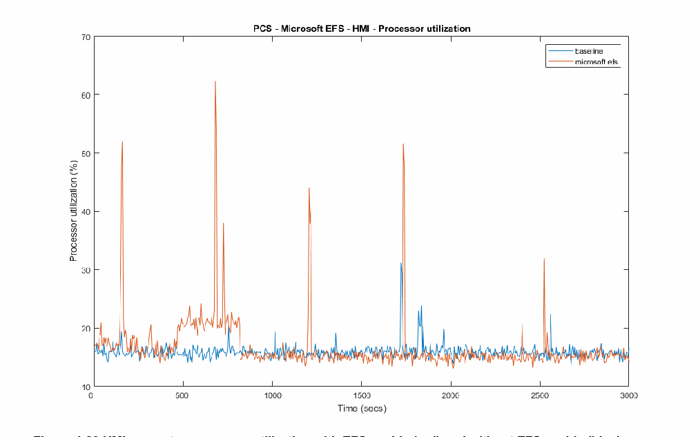
「PCS - Microsoft EFS - HMI - Processor utilization」と題したグラフです。縦軸は「Processor utilization (%)」（プロセッサー使用率、%）で 10〜70、横軸は「Time (secs)」（時間、秒）で 0〜3000 です。凡例は「baseline」（青）と「microsoft efs」（橙）です。基線は約 15〜17% で推移し、約 31% までの突出が少しあります。EFS の系列は約 450〜800 秒の間が約 20〜22% で、約 52%、62%、38%、44%、51%、32% の突出があり、約 800 秒以降は約 15% で推移します。
Figure 4-29 HMI computer processor utilization with EFS enable (red) and without EFS enable (blue)
図 4-29 EFS を有効にした場合（赤）と有効にしない場合（青）の、HMI コンピューターのプロセッサー使用率
![Plot titled "PCS - Microsoft EFS - HMI - Disk I/O write operation". Y axis "Disk I/O Write operation (bytes/sec)" from 0 to 3.5 ×10^6; X axis "Time (secs)" from 0 to 5000. Legend: "baseline" (blue) and "microsoft efs" (orange). The EFS series peaks at about 3 ×10^6 at the start, stays at about 0.2–0.5 ×10^6 until about 450 seconds, about 1.3–2.3 ×10^6 from about 500 to 800 seconds (peak about 3.3 ×10^6 at about 800 seconds), and then drops to near 0. The baseline stays near 0 with spikes up to about 0.7 ×10^6 between about 1800 and 4800 seconds.](assets/ir-8183av2/p0276-figure-02.png)
「PCS - Microsoft EFS - HMI - Disk I/O write operation」と題したグラフです。縦軸は「Disk I/O Write operation (bytes/sec)」（ディスクの書き込み量、バイト/秒）で 0〜3.5×10^6、横軸は「Time (secs)」（時間、秒）で 0〜5000 です。凡例は「baseline」（青）と「microsoft efs」（橙）です。EFS の系列は開始直後に約 3×10^6 に達し、約 450 秒までは約 0.2〜0.5×10^6、約 500〜800 秒は約 1.3〜2.3×10^6（約 800 秒で最大約 3.3×10^6）で、その後はほぼ 0 に下がります。基線はほぼ 0 で、約 1800〜4800 秒の間に約 0.7×10^6 までの突出があります。
Figure 4-30 HMI computer disk write operation with EFS enable (red) and without EFS enable (blue)
図 4-30 EFS を有効にした場合（赤）と有効にしない場合（青）の、HMI コンピューターのディスク書き込み操作
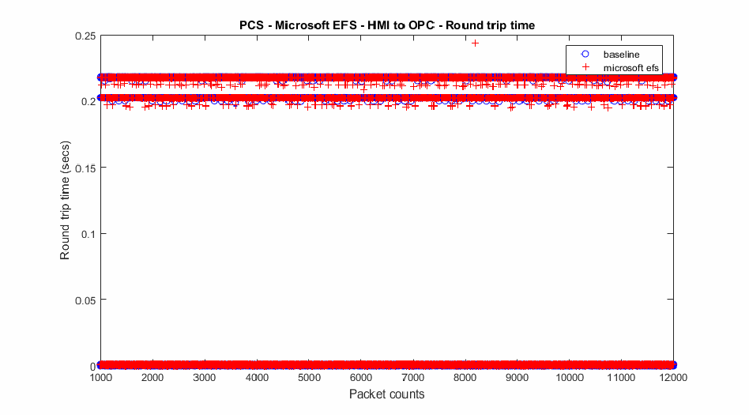
「PCS - Microsoft EFS - HMI to OPC - Round trip time」と題したグラフです。縦軸は「Round trip time (secs)」（往復時間、秒）で 0〜0.25、横軸は「Packet counts」（パケット数）で 1000〜12000 です。凡例は「baseline」（青の丸）と「microsoft efs」（赤の十字）です。どちらの系列も約 0.2 秒と約 0.22 秒の2本の帯と 0 秒の線上にあり、重なっています。EFS の点が1つ約 0.245 秒にあります。
Figure 4-31 Packet round trip time from HMI to OPC with EFS enable (red) and without EFS enable (blue)
図 4-31 EFS を有効にした場合（赤）と有効にしない場合（青）の、HMI から OPC までのパケットのラウンドトリップ時間
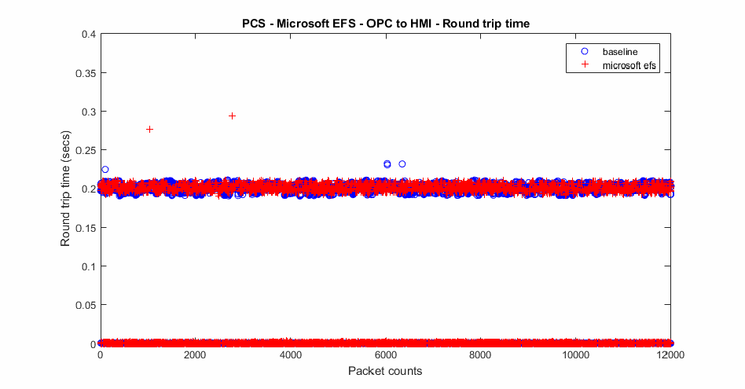
「PCS - Microsoft EFS - OPC to HMI - Round trip time」と題したグラフです。縦軸は「Round trip time (secs)」（往復時間、秒）で 0〜0.4、横軸は「Packet counts」（パケット数）で 0〜12000 です。凡例は「baseline」（青の丸）と「microsoft efs」（赤の十字）です。どちらの系列も約 0.2 秒の帯と 0 秒の線を作り、重なっています。EFS の点が2つ約 0.28 秒と約 0.29 秒に、基線の点がいくつか約 0.22〜0.23 秒にあります。
Figure 4-32 Packet round trip time from OPC to HMI with EFS enable (red) and without EFS enable (blue)
図 4-32 EFS を有効にした場合（赤）と有効にしない場合（青）の、OPC から HMI までのパケットのラウンドトリップ時間
The HMI application was not able to access the data log files and new data from operation was not logged. The HMI flagged an error/warning message to the operator.
HMI アプリケーションは、データのログファイルにアクセスできず、運用による新しいデータはログに記録されませんでした。HMI は、オペレーターにエラー／警告のメッセージを表示しました。
Care should be taken for encrypting application specific files or folders. There is performance impact to the manufacturing process in the form of losing the ability to log data files in the HMI.
アプリケーション固有のファイルやフォルダーを暗号化する際は、注意を払うべきです。HMI でデータファイルをログに記録する能力が失われるという形で、製造プロセスへの性能影響が生じます。
![Screen of the HMI application (FactoryTalk) during the experiment: an explorer tree on the left (Global Objects, Symbol Factory, Libraries, Images, Parameters, Recipes, Local Messages, Trend Templates, Trend Snapshots, HMI Tag Alarms, Data Log, logTE and others), the process display with feed rates, valves, reactor pressure, temperature, level and an analyzer readout, and a trend chart. The message pane at the bottom shows: "Unable to process the following command:DatalogOn logTE", "No secondary path configured for model 'logTE'. Unable to switchover.", "Unable to access data log set files. They may be in use by another application.", "Graphics is shutting down, unloading all displays." The status bar reads "For Help, press F1".](assets/ir-8183av2/p0278-figure-02.png)
実験中の HMI アプリケーション（FactoryTalk）の画面です。左側にエクスプローラーツリー（Global Objects、Symbol Factory、Libraries、Images、Parameters、Recipes、Local Messages、Trend Templates、Trend Snapshots、HMI Tag Alarms、Data Log、logTE など）、中央に供給量、弁、反応器の圧力・温度・液位、分析計の読み取り値を含むプロセス表示と傾向グラフがあります。下部のメッセージ欄には「Unable to process the following command:DatalogOn logTE」「No secondary path configured for model 'logTE'. Unable to switchover.」「Unable to access data log set files. They may be in use by another application.」「Graphics is shutting down, unloading all displays.」と表示されています。ステータスバーには「For Help, press F1」と表示されています。
Figure 4-33 HMI screen with warning message “Unable to access data log set files”
図 4-33 警告メッセージ「Unable to access data log set files」を表示した HMI 画面
4.14.7 Links to Entire Performance Measurement Data Set
4.14.7 性能測定データセット全体へのリンク
•File Encryption KPI data
•ファイル暗号化の KPI データ
•File Encryption measurement data
•ファイル暗号化の測定データ
4.15 GTB Inspector
4.15 GTB Inspector
4.15.1 Technical Solution Overview
4.15.1 技術ソリューションの概要
GTB Inspector by GTB Technologies is a Data Loss Prevention (DLP) solution that has the ability to detect, log, and block network traffic trying to leave the network. Inspector detects and blocks FTP, Email, HTTP, HTTPS (SSL/TLS), Finger Printed files, USB protection, and other configured exfiltration methods. Inspector is the main component that analyzes all network traffic. GTB Central Console is the device Inspector reports back to. Central Console allows for groups and escalation paths depending on the alerting required.
GTB Technologies の GTB Inspector は、ネットワークから流出しようとするネットワークトラフィックを、検知し、ログに記録し、ブロックできる、データ損失防止（DLP）ソリューションです。Inspector は、FTP、電子メール、HTTP、HTTPS（SSL/TLS）、フィンガープリント済みファイル、USB 保護、およびその他の構成済みの持ち出し方法を検知してブロックします。Inspector は、すべてのネットワークトラフィックを分析する主要な構成要素です。GTB Central Console は、Inspector が報告を返すデバイスです。Central Console では、必要なアラート通知に応じて、グループとエスカレーション経路を設定できます。
Points to consider:
考慮すべき点：
•All DLP products have a high cost to implement.
•すべての DLP 製品は、導入コストが高くなります。
•All DLP products require configuration that can be extensive.
•すべての DLP 製品は、大規模になりうる構成作業が必要です。
4.15.2 Technical Capabilities Provided by Solution
4.15.2 ソリューションが提供する技術的能力
GTB Inspector provides components of the following Technical Capabilities described in Section 6 of Volume 1:
GTB Inspectorは、第1巻の第6節で説明した、次の技術的能力の構成要素を提供します。
•Data Loss Prevention
•データ損失防止
4.15.3 Subcategories Addressed by Implementing Solution
4.15.3 ソリューションの実装によって対処するサブカテゴリ
PR.DS-5
PR.DS-5
4.15.4 Architecture Map of Where Solution was Implemented
4.15.4 ソリューションを実装した場所のアーキテクチャマップ
![Network architecture map of the Westman process-based manufacturing system lab. Legend box: a red line labeled "GTB DLP" (the GTB inspection path). An "Internet" cloud connects to "Corporate Network" and the "Manuf. System Router/Firewall". Management zone: "Microsoft ActiveDirectory/RADIUS 10.100.2.3" on "Management LAN – 10.100.2.0/24". Manufacturing DMZ zone: "DMZ Historian 10.100.1.4" on "Manufacturing DMZ LAN - 10.100.1.0/24". Cybersecurity LAN zone ("Cybersecurity LAN 10.100.0.0/24"): "Open-Audit. 10.100.177", "TheHive Incident Resp. 10.100.0.5", "Nessus Vuln. Scanner 10.100.0.25", "Microsoft ActiveDirectory 10.100.0.13,17", "Symantec Antivirus - SEPM 10.100.0.5", "GTB Data Loss Prev. 10.100.0.175,176" (highlighted in red), "Veeam Backup & Replication 10.100.0.10", "Graylog Syslog 10.100.0.14", "Windows WSUS 10.100.0.12", "NTP/PTP Clock 10.100.0.15". Plant zone: "PCS LAN Router (OSPF) 10.100.0.40/32 172.16.1.1 172.16.3.1" (also labeled 10.100.2.8 and 172.16.2.1); "Engineering Workstation 172.16.3.10" on "Engineering LAN – 172.16.3.0/24"; "HMI 172.16.1.4" and "Plant Controller 172.16.1.5" on "Plant LAN – 172.16.1.0/24"; "Local Historian 172.16.2.14", "OPC Server 172.16.2.5" and "Supervisory PLC 172.16.2.102" on "Supervisory LAN – 172.16.2.0/24"; the Supervisory PLC connects via "DeviceNet to Field Devices" to the "Manufacturing Process" (a screen image of the process simulation). Red lines run from the GTB servers through the router to the Cybersecurity LAN, the Engineering LAN, the Plant LAN and the Supervisory LAN.](assets/ir-8183av2/p0280-figure-02.png)
Westman のプロセス型製造システムの実験環境のネットワーク構成図です。凡例: 赤い線が「GTB DLP」（GTB による検査の経路）です。「Internet」の雲が「Corporate Network」（企業ネットワーク）と「Manuf. System Router/Firewall」（製造システムのルーター／ファイアウォール）につながっています。Management（管理）区画には「Management LAN – 10.100.2.0/24」上の「Microsoft ActiveDirectory/RADIUS 10.100.2.3」、Manufacturing DMZ 区画には「Manufacturing DMZ LAN - 10.100.1.0/24」上の「DMZ Historian 10.100.1.4」があります。Cybersecurity LAN 区画（「Cybersecurity LAN 10.100.0.0/24」）には「Open-Audit. 10.100.177」「TheHive Incident Resp. 10.100.0.5」「Nessus Vuln. Scanner 10.100.0.25」「Microsoft ActiveDirectory 10.100.0.13,17」「Symantec Antivirus - SEPM 10.100.0.5」「GTB Data Loss Prev. 10.100.0.175,176」（赤で強調）「Veeam Backup & Replication 10.100.0.10」「Graylog Syslog 10.100.0.14」「Windows WSUS 10.100.0.12」「NTP/PTP Clock 10.100.0.15」が並びます。Plant（工場）区画には「PCS LAN Router (OSPF) 10.100.0.40/32 172.16.1.1 172.16.3.1」（10.100.2.8 と 172.16.2.1 の表示もあります）があり、「Engineering LAN – 172.16.3.0/24」上に「Engineering Workstation 172.16.3.10」、「Plant LAN – 172.16.1.0/24」上に「HMI 172.16.1.4」と「Plant Controller 172.16.1.5」、「Supervisory LAN – 172.16.2.0/24」上に「Local Historian 172.16.2.14」「OPC Server 172.16.2.5」「Supervisory PLC 172.16.2.102」があります。Supervisory PLC は「DeviceNet to Field Devices」で「Manufacturing Process」（プロセスのシミュレーション画面の画像）につながります。赤い線は GTB のサーバーからルーターを通って Cybersecurity LAN、Engineering LAN、Plant LAN、Supervisory LAN に引かれています。
4.15.5 Installation Instructions and Configurations
4.15.5 インストール手順と構成
Details of the solutions implemented:
実装したソリューションの詳細：
| Name | Version | Purpose | Hardware Details |
|---|---|---|---|
| GTB Inspector | 15.6.0 | Network DLP | Hyper-V Virtual Machine (Generation 1):
|
| GTB Central Console | 15.6.0 | Central Reporting and Management for all GTB products | Hyper-V Virtual Machine (Generation 1):
|
| 名称 | バージョン | 目的 | ハードウェアの詳細 |
|---|---|---|---|
| GTB Inspector | 15.6.0 | ネットワーク DLP | Hyper-V 仮想マシン（第1世代）：
|
| GTB Central Console | 15.6.0 | すべての GTB 製品の一元的なレポート作成と管理 | Hyper-V 仮想マシン（第1世代）：
|
4.15.5.1 Environment Setup
4.15.5.1 環境のセットアップ
1.Two virtual machines were setup in the Cybersecurity LAN network of the plant, using the ISO image provided by the vendor. Their hardware specifications are described in the table above.
1.ベンダーが提供する ISO イメージを使用して、プラントの Cybersecurity LAN ネットワークに2台の仮想マシンをセットアップしました。これらのハードウェア仕様は、上の表に記載しています。
2.The GTB Inspector server was deployed in Bridge [Inline] mode as per the official diagram provided by the vendor which is shown below. For additional details, refer to the official install guide.
2.GTB Inspector サーバーは、ベンダーが提供する公式の図（下に示す）に従って、ブリッジ［インライン］モードでデプロイしました。詳細は、公式のインストールガイドを参照してください。
［第三者の画像。第三者の著作物のため、この非公式サイトには掲載していません。原本 PDF を参照してください。］
3.The guest OS networking information on the VM’s was set as follows:
3.VM のゲスト OS のネットワーク情報は、次のように設定しました。
Virtual Machine: GTB-Inspector
Network interface:eth0
IP address: 10.100.0.175
Gateway: 10.100.0.1
Subnet Mask: 255.255.255.0
DNS:10.100.0.17
Network interface:eth2->connected to Monitor Port1 of a Network Aggregator device
Network interface:eth3->connected to WAN interface of our Cisco-ASA firewall.Virtual Machine: GTB-Central
Network interface:eth0
IP address: 10.100.0.176
Gateway: 10.100.0.1
Subnet Mask: 255.255.255.0
DNS:10.100.0.174.15.5.2 Setting up the GTB Central console
4.15.5.2 GTB Central Console のセットアップ
1.Download the ISO file of GTB Central Console and install guides111
1.GTB Central Console の ISO ファイルとインストールガイド111 をダウンロードします。
2.Setup the virtual machine by booting off the ISO on your preferred Hypervisor.
2.使用するハイパーバイザー上で、ISO から起動して仮想マシンをセットアップします。
3.Perform initial configuration such as creating a DNS record, assigning a Static IP address to the server, etc.
3.DNS レコードの作成、サーバーへの静的 IP アドレスの割り当てなど、初期構成を行います。
4.Login to the Central Console Web UI using the default credentials. Click Administration > Licensing to upload the license file. Restart once done.
4.デフォルトの認証情報で、Central Console の Web UI にログインします。Administration > Licensing をクリックして、ライセンスファイルをアップロードします。完了したら再起動します。
5.Click DLP Setup tab > Network to enter the IP address settings.
5.DLP Setup タブ > Network をクリックして、IP アドレスの設定を入力します。
6.Click DLP Setup tab > LDAP to configure AD server details.
6.DLP Setup タブ > LDAP をクリックして、AD サーバーの詳細を構成します。
7.Click DLP Setup tab > Email & Alerts. to configure smtp server settings.
7.DLP Setup タブ > Email & Alerts をクリックして、SMTP サーバーの設定を構成します。
8.Click DLP Setup tab > Date & Time > Enter NTP Server details.
8.DLP Setup タブ > Date & Time > NTP サーバーの詳細を入力します。
9.Click DLP Setup tab > SIEM > Enter the IP address of Syslog / SIEM server
9.DLP Setup タブ > SIEM > Syslog / SIEM サーバーの IP アドレスを入力します。
4.15.5.3 Setting up the GTB Inspector
4.15.5.3 GTB Inspector のセットアップ
7.Download the ISO file of GTB Inspector and install guides112
7.GTB Inspector の ISO ファイルとインストールガイド112 をダウンロードします。
8.Setup the virtual machine using the ISO files on your preferred Hypervisor.
8.使用するハイパーバイザー上で、ISO ファイルを使って仮想マシンをセットアップします。
9.Perform initial configuration such as creating DNS records, assigning Static IP address, setting up the LAN and WAN interfaces for the Inspector server, etc. For detailed instructions, refer to the GTB product install guides.
9.DNS レコードの作成、静的 IP アドレスの割り当て、Inspector サーバーの LAN インターフェースと WAN インターフェースの設定など、初期構成を行います。詳細な手順は、GTB 製品のインストールガイドを参照してください。
10.Login to the Inspector server Web UI using the default credentials as provided. Click Administration > Licensing to upload the license file. Restart once done.
10.提供されたデフォルトの認証情報で、Inspector サーバーの Web UI にログインします。Administration > Licensing をクリックして、ライセンスファイルをアップロードします。完了したら再起動します。
11.Click Configuration tab > Email Alerts. to configure smtp server settings.
11.Configuration タブ > Email Alerts をクリックして、SMTP サーバーの設定を構成します。
12.Click Configuration tab > LDAP Integration, to configure Active Directory server details.
12.Configuration タブ > LDAP Integration をクリックして、Active Directory サーバーの詳細を構成します。
13.Click Configuration tab > Network > Set the Deployment Mode as required.
13.Configuration タブ > Network > Deployment Mode を必要に応じて設定します。
14.Click Configuration tab > SIEM > Enter the IP address of Syslog / SIEM server.
14.Configuration タブ > SIEM > Syslog / SIEM サーバーの IP アドレスを入力します。
15.Click Configuration tab > SSL Proxy > Upload a Public Certificate (if any) for SSL decryption.
15.Configuration タブ > SSL Proxy > SSL 復号用の公開証明書（ある場合）をアップロードします。
16.Click Configuration tab > Central Console > Enter the hostname of the GTB Central server. Ensure the inspector can reach the Central console.
16.Configuration タブ > Central Console > GTB Central サーバーのホスト名を入力します。Inspector が Central Console に到達できることを確認します。
4.15.5.4 Creating ACL Rules on the Central Console
4.15.5.4 Central Console での ACL ルールの作成
1.Login to the Central Console Web UI. Click DLP-Setup > Network DLP
1.Central Console の Web UI にログインします。DLP-Setup > Network DLP をクリックします。
2.Click on the <Inspector server name> listed under Categories.
2.Categories の下に一覧表示されている <Inspector server name> をクリックします。
3.Click Add button. The Add New ACL Rule window should pop-up
3.Add ボタンをクリックします。Add New ACL Rule ウィンドウがポップアップ表示されるはずです。
［第三者の画像。第三者の著作物のため、この非公式サイトには掲載していません。原本 PDF を参照してください。］
4.Enter the information as required under Name, Protocol, Source, Destination, File Type.
Selecting Protocol = Any will enable the Inspector to inspect all protocols.
Note: This may cause a performance impact depending on the number of clients within your organization.
4.Name、Protocol、Source、Destination、File Type の下に、必要な情報を入力します。
Protocol = Any を選択すると、Inspector はすべてのプロトコルを検査できるようになります。
注：組織内のクライアント数によっては、性能への影響が生じる場合があります。
5.Click Add under Enforcement to configure Policy/Sets. Select from any of the default policies for Credit Card Numbers (CCN), Social Security etc., or create a new one.
5.Enforcement の下の Add をクリックして、ポリシー／セットを構成します。クレジットカード番号（CCN）、社会保障番号などのデフォルトのポリシーのいずれかを選択するか、新しいポリシーを作成します。
6.Select the action to be taken – Log, Block, S-Block and Pass.
6.実行する処置を選択します – Log、Block、S-Block、Pass。
7.Check mark the File Capture option to retain a copy of the offending data.
7.File Capture オプションにチェックを付けて、違反データのコピーを保持します。
8.Click Save.
8.Save をクリックします。
9.Click Deploy-All. This sends newly created policy to the Inspector.
9.Deploy-All をクリックします。これにより、新しく作成したポリシーが Inspector に送信されます。
10.(Optional) Order rules if more than one by clicking the UP / DOWN arrows. Rules always work from Top to down.
10.（任意）ルールが複数ある場合は、UP / DOWN の矢印をクリックして順序を並べ替えます。ルールは常に上から下へ適用されます。
4.15.5.5 Fingerprint Files using Security Manager
4.15.5.5 Security Manager を使用したファイルのフィンガープリント
1.Click Help Tab on the Central Console. Download GTB Security Manager on a Windows system.
1.Central Console の Help タブをクリックします。Windows システムに GTB Security Manager をダウンロードします。
2.Run the installer (For example GTBSecurityManager_15.3.0.msi). Follow the on-screen instructions to complete the install. Reboot the system once done.
2.インストーラー（例：GTBSecurityManager_15.3.0.msi）を実行します。画面の指示に従って、インストールを完了します。完了したらシステムを再起動します。
3.Launch the GTB Security Manager by doing a Run as Administrator.
3.Run as Administrator で GTB Security Manager を起動します。
4.Click Settings. Enter the IP address of the Central Console server. The user and password are prepopulated. Click OK to save changes.
4.Settings をクリックします。Central Console サーバーの IP アドレスを入力します。ユーザーとパスワードはあらかじめ入力されています。OK をクリックして、変更を保存します。
［第三者の画像。第三者の著作物のため、この非公式サイトには掲載していません。原本 PDF を参照してください。］
5.Click File from the Menu > New > New File Profile. This will launch a new window with an Explorer like interface allowing to select files/folders for fingerprinting.
5.メニューから File > New > New File Profile をクリックします。これにより、エクスプローラーのようなインターフェースを持つ新しいウィンドウが起動し、フィンガープリントするファイル／フォルダーを選択できます。
6.Select the files or folders that need fingerprinting. Once a folder is selected all files within selected folder will receive a check mark indicating which files will be fingerprinted.
6.フィンガープリントが必要なファイルまたはフォルダーを選択します。フォルダーを選択すると、選択したフォルダー内のすべてのファイルにチェックマークが付き、どのファイルがフィンガープリントされるかが示されます。
［第三者の画像。第三者の著作物のため、この非公式サイトには掲載していません。原本 PDF を参照してください。］
［第三者の画像。第三者の著作物のため、この非公式サイトには掲載していません。原本 PDF を参照してください。］
7.Click Save. Select a Location to save the newly created profile.
7.Save をクリックします。新しく作成したプロファイルを保存する Location を選択します。
8.Click on the padlock icon to start the fingerprinting process.
8.南京錠のアイコンをクリックして、フィンガープリントのプロセスを開始します。
9.View the Output screen to monitor the progress of Fingerprinting. Once completed, click Close.
9.Output 画面を表示して、フィンガープリントの進行状況を監視します。完了したら Close をクリックします。
［第三者の画像。第三者の著作物のため、この非公式サイトには掲載していません。原本 PDF を参照してください。］
10.Click View on the Menu bar > Profiles > Profiles Window > <Profile Name>
10.メニューバーの View > Profiles > Profiles Window > <Profile Name> をクリックします。
11.Select the Profile that was created earlier. Right click > Start Monitoring.
Once monitoring is enabled, files will be listed under Currently Monitoring tab.
11.先に作成したプロファイルを選択します。右クリックして Start Monitoring を選択します。
監視を有効にすると、ファイルが Currently Monitoring タブに一覧表示されます。
12.Login back to Central Console. Navigate to Account Manager Tab and click Refesh Polices. Wait for the success prompt.
12.Central Console に再度ログインします。Account Manager タブに移動し、Refresh Policies をクリックします。成功を示すメッセージが表示されるまで待ちます。
［第三者の画像。第三者の著作物のため、この非公式サイトには掲載していません。原本 PDF を参照してください。］
13.Click DLP Setup > Policy Management > Double-click Default to launch a new Window.
13.DLP Setup > Policy Management > Default をダブルクリックして、新しいウィンドウを開きます。
14.Click Add Policy.
14.Add Policy をクリックします。
15.Click the drop-down and select a File.
15.ドロップダウンをクリックして、File を選択します。
16.Click Save once done. Upon completion, all fingerprinted files from above steps will automatically be added to default Network DLP policy applied ACL. New Default values are SSN, CCN, and File
16.完了したら Save をクリックします。完了すると、上記の手順でフィンガープリントしたすべてのファイルが、デフォルトのネットワーク DLP ポリシーを適用した ACL に自動的に追加されます。新しいデフォルト値は、SSN、CCN、および File です。
Additional Information on Fingerprinting:
フィンガープリントに関する追加情報：
•Fingerprint feature only allows for one active Profile at a time. If another profile is set to Start Monitoring, a warning message as shown below will be generated
•フィンガープリント機能では、一度に有効にできるプロファイルは1つのみです。別のプロファイルを Start Monitoring に設定すると、次のような警告メッセージが生成されます。
［第三者の画像。第三者の著作物のため、この非公式サイトには掲載していません。原本 PDF を参照してください。］
•Install GTB Security Manager on a machine that can be the central repositoiry for all fingerprinted files. Creating a large folder were the files can placed into for fingerprinting. Files need not remain in saved location once the profile has been fingerprinted and uploaded to Central Console. Access to fingerprinted files is only required when changes are made to profile containing said files.
•フィンガープリントされたすべてのファイルの中央リポジトリにできるマシンに、GTB Security Manager をインストールします。フィンガープリントするファイルを配置できる大きなフォルダーを作成します。プロファイルをフィンガープリントして Central Console にアップロードした後は、ファイルを保存した場所に置いておく必要はありません。フィンガープリントされたファイルへのアクセスが必要になるのは、そのファイルを含むプロファイルに変更を加える場合のみです。
•Fingerprinted files follow acl rules created within Central Console. Rules are processed in order from top to bottom. The first rule with a matching violation takes precedence over rules below.
•フィンガープリントされたファイルは、Central Console 内で作成した ACL ルールに従います。ルールは上から下の順に処理されます。一致する違反がある最初のルールが、その下のルールよりも優先されます。
4.15.6 Highlighted Performance Impacts
4.15.6 注目すべき性能への影響
No performance measurement experiments were performed for the installation of GTB into the PCS due to its location within the network topology. No manufacturing process components across the boundary on a regular basis while the system is operational.
ネットワークトポロジー上の設置場所を理由として、GTB を PCS に導入した場合の性能測定実験は実施しませんでした。システム稼働中、境界を越えて定期的に流れる製造プロセスのコンポーネントはありません。
4.15.7 Links to Entire Performance Measurement Data Set
4.15.7 性能測定データセット全体へのリンク
N/A
N/A
4.16 Graylog
4.16 Graylog
4.16.1 Technical Solution Overview
4.16.1 技術ソリューションの概要
Graylog is an open source log management tool. It can collect, parse and enrich logs, wire data, and event data from any data source. Graylog also provides centralized configuration management for 3rd party collectors such as beats, fluentd and nxlog. The processing pipelines allow for greater flexibility in routing, blacklisting, modifying and enriching messages in real-time as they enter Graylog. It has a powerful search syntax to help query exactly what we are looking for. With Graylog one can even create dashboards to visualize metrics and observe trends in one central location.113
Graylog は、オープンソースのログ管理ツールです。あらゆるデータソースから、ログ、ワイヤデータ、イベントデータを収集、解析、拡充できます。Graylog は、beats、fluentd、nxlog などのサードパーティのコレクター向けに、一元的な構成管理も提供します。処理パイプラインにより、Graylog に入ってくるメッセージを、リアルタイムでルーティング、ブラックリスト化、変更、拡充する際の柔軟性が高まります。探しているものを正確に照会するための、強力な検索構文を備えています。Graylog を使用すると、メトリクスを可視化し、傾向を観察するためのダッシュボードを、1か所で作成することもできます。113
Points to consider:
考慮すべき点：
•Open source product with good community support
•コミュニティのサポートが充実した、オープンソース製品です。
•Easy to setup and customize. Support log collection from any OS platform.
•セットアップとカスタマイズが容易です。あらゆる OS プラットフォームからのログ収集をサポートしています。
•It is packaged for major Linux distributions, has a VM ready for use and Docker images are also available.
•主要な Linux ディストリビューション向けにパッケージ化されており、すぐに使える VM があり、Docker イメージも利用できます。
•The dashboard part, even if though well integrated and useful, lacks many features and visualizations contained in other elastic search tools such as Kibana (like aggregations).
•ダッシュボード部分は、よく統合されていて有用ではあるものの、Kibana などの他の elastic search ツールに含まれる多くの機能や可視化（集計など）を備えていません。
4.16.2 Technical Capabilities Provided by Solution
4.16.2 ソリューションが提供する技術的能力
Graylog provides components of the following Technical Capabilities described in Section 6 of Volume 1:
Graylogは、第1巻の第6節で説明した、次の技術的能力の構成要素を提供します。
•Network Monitoring
•ネットワーク監視
•Event Logging
•イベントのログ記録
•Forensics
•フォレンジック
4.16.3 Subcategories Addressed by Implementing Solution
4.16.3 ソリューションの実装によって対処するサブカテゴリ
PR.DS-5, PR.MA-2, PR.PT-1, PR.PT-4, DE.AE-2, DE.AE-3, DE.CM-1, DE.CM-6, DE.CM-7, DE.DP-3, RS.AN-3
PR.DS-5, PR.MA-2, PR.PT-1, PR.PT-4, DE.AE-2, DE.AE-3, DE.CM-1, DE.CM-6, DE.CM-7, DE.DP-3, RS.AN-3
4.16.4 Architecture Map of Where Solution was Implemented
4.16.4 ソリューションを実装した場所のアーキテクチャマップ
![Network architecture map of the Westman process-based manufacturing system lab. Legend box: an orange line labeled "Graylog Syslog" (the syslog paths). An "Internet" cloud connects to "Corporate Network" and the "Manuf. System Router/Firewall". Management zone: "Microsoft ActiveDirectory/RADIUS 10.100.2.3" on "Management LAN – 10.100.2.0/24". Manufacturing DMZ zone: "DMZ Historian 10.100.1.4" on "Manufacturing DMZ LAN - 10.100.1.0/24". Cybersecurity LAN zone ("Cybersecurity LAN 10.100.0.0/24"): "NTP/PTP Clock 10.100.0.15", "TheHive Incident Resp. 10.100.0.5", "Nessus Vuln. Scanner 10.100.0.25", "Microsoft ActiveDirectory 10.100.0.13,17", "Symantec Antivirus - SEPM 10.100.0.5", "GTB Data Loss Prev. 10.100.0.175,176", "Veeam Backup & Replication 10.100.0.10", "Graylog Syslog 10.100.0.14" (highlighted in orange), "Windows WSUS 10.100.0.12". Plant zone: "PCS LAN Router 10.100.0.40 172.16.3.1 172.16.1.1" (also labeled 10.100.2.8 and 172.16.2.1); "Engineering Workstation 172.16.3.10" on "Engineering LAN – 172.16.3.0/24"; "HMI 172.16.1.4" and "Plant Controller 172.16.1.5" on "Plant LAN– 172.16.1.0/24"; "Local Historian 172.16.2.4", "OPC Server 172.16.2.5" and "Supervisory PLC 172.16.2.102" on "Supervisory LAN – 172.16.2.0/24"; the Supervisory PLC connects via "DeviceNet to Field Devices" to the "Manufacturing Process" (a screen image of the process simulation). Orange lines connect the Graylog server with the servers of the Management, DMZ and Cybersecurity LANs and, through the router, with the Engineering LAN, the Plant LAN and the Supervisory LAN.](assets/ir-8183av2/p0288-figure-02.png)
Westman のプロセス型製造システムの実験環境のネットワーク構成図です。凡例: 橙色の線が「Graylog Syslog」（syslog の経路）です。「Internet」の雲が「Corporate Network」（企業ネットワーク）と「Manuf. System Router/Firewall」（製造システムのルーター／ファイアウォール）につながっています。Management（管理）区画には「Management LAN – 10.100.2.0/24」上の「Microsoft ActiveDirectory/RADIUS 10.100.2.3」、Manufacturing DMZ 区画には「Manufacturing DMZ LAN - 10.100.1.0/24」上の「DMZ Historian 10.100.1.4」があります。Cybersecurity LAN 区画（「Cybersecurity LAN 10.100.0.0/24」）には「NTP/PTP Clock 10.100.0.15」「TheHive Incident Resp. 10.100.0.5」「Nessus Vuln. Scanner 10.100.0.25」「Microsoft ActiveDirectory 10.100.0.13,17」「Symantec Antivirus - SEPM 10.100.0.5」「GTB Data Loss Prev. 10.100.0.175,176」「Veeam Backup & Replication 10.100.0.10」「Graylog Syslog 10.100.0.14」（橙色で強調）「Windows WSUS 10.100.0.12」が並びます。Plant（工場）区画には「PCS LAN Router 10.100.0.40 172.16.3.1 172.16.1.1」（10.100.2.8 と 172.16.2.1 の表示もあります）があり、「Engineering LAN – 172.16.3.0/24」上に「Engineering Workstation 172.16.3.10」、「Plant LAN– 172.16.1.0/24」上に「HMI 172.16.1.4」と「Plant Controller 172.16.1.5」、「Supervisory LAN – 172.16.2.0/24」上に「Local Historian 172.16.2.4」「OPC Server 172.16.2.5」「Supervisory PLC 172.16.2.102」があります。Supervisory PLC は「DeviceNet to Field Devices」で「Manufacturing Process」（プロセスのシミュレーション画面の画像）につながります。橙色の線は Graylog のサーバーと、Management・DMZ・Cybersecurity LAN のサーバー、さらにルーターを通って Engineering LAN・Plant LAN・Supervisory LAN を結んでいます。
4.16.5 Installation Instructions and Configurations
4.16.5 インストール手順と構成
Details of the solution implemented:
実装したソリューションの詳細：
| Name | Version | Hardware Details |
|---|---|---|
| Graylog Enterprise | 2.4.6 | Hyper-V Virtual Machine (Generation 1):
|
| 名称 | バージョン | ハードウェアの詳細 |
|---|---|---|
| Graylog Enterprise | 2.4.6 | Hyper-V 仮想マシン（第1世代）：
|
4.16.5.1 Environment Setup
4.16.5.1 環境のセットアップ
1.A preconfigured virtual machine (.ova) provided by the vendor was setup on a Hyper-V host server of the Cybersecurity LAN network of the plant with hardware specifications as described in the table above.
1.ベンダーが提供する、事前構成済みの仮想マシン（.ova）を、プラントの Cybersecurity LAN ネットワークの Hyper-V ホストサーバーに、上の表のハードウェア仕様でセットアップしました。
2.The guest OS IP information of this server was set as follows:
2.このサーバーのゲスト OS の IP 情報は、次のように設定しました。
IP address: 10.100.0.14
Gateway: 10.100.0.1
Subnet Mask: 255.255.255.0
DNS:10.100.0.173.UDP ports 514, 5415 and 1202 were opened on the firewall as required by Graylog to collect syslog messages from the clients. For more information, visit http://docs.graylog.org/en/3.0/
3.クライアントから syslog メッセージを収集するために Graylog が必要とする UDP ポート 514、5415、1202 を、ファイアウォールで開きました。詳細は、http://docs.graylog.org/en/3.0/ を参照してください。
4.16.5.2 Initial Setup
4.16.5.2 初期セットアップ
1.Download the installation package as per the Operating system from the Graylog website.114
Note: Graylog provides a preconfigured VM for use in test/training environments.
1.Graylog の Web サイトから、オペレーティングシステムに応じたインストールパッケージをダウンロードします。114
注：Graylog は、テスト／トレーニング環境で使用するための事前構成済みの VM を提供しています。
2.Assign a static IP address to the Linux system (if not already).
2.（まだ割り当てていない場合は）Linux システムに静的 IP アドレスを割り当てます。
3.Install the package using the instructions mentioned in the Graylog documentation.115
3.Graylog のドキュメント115 に記載された手順に従って、パッケージをインストールします。
4.Login to the Web Interface using the default credentials and change the admin password.
4.デフォルトの認証情報で Web インターフェースにログインし、管理者のパスワードを変更します。
5.Configure Active Directory integration as follows
5.次のように、Active Directory との統合を構成します。
a.Click on System > Authentication on the Top menu.
a.トップメニューの System > Authentication をクリックします。
b.Click on LDAP / Active Directory on the Authentication Management page and enter the AD server details. Refer to the Graylog docs for detailed instructions.
b.Authentication Management ページで LDAP / Active Directory をクリックし、AD サーバーの詳細を入力します。詳細な手順は、Graylog のドキュメントを参照してください。
c.Click on LDAP Group Mapping to configure Group Mapping options to control the type of access to be assigned to the users. Change the Default User Role depending on your requirement.
c.LDAP Group Mapping をクリックして、ユーザーに割り当てるアクセスの種類を制御する、グループマッピングのオプションを構成します。必要に応じて、Default User Role を変更します。
4.16.5.3 Receiving Syslog from Windows Servers
4.16.5.3 Windows サーバーからの Syslog の受信
NXlog116 was used as the log shipping utility to forward events from all Windows systems of the plant to our Graylog server. The community edition of NXlog is free to use.
プラントのすべての Windows システムから Graylog サーバーにイベントを転送する、ログ転送ユーティリティとして、NXlog116 を使用しました。NXlog のコミュニティ版は無料で使用できます。
1.Download and install NXlog on the Windows hosts in question.
1.対象の Windows ホストに、NXlog をダウンロードしてインストールします。
2.Edit the nxlog.conf file located at C:\Program Files (x86)\nxlog\conf directory as per whichever category of events you would like to forward to your Graylog server.117
2.Graylog サーバーに転送したいイベントのカテゴリに応じて、C:\Program Files (x86)\nxlog\conf ディレクトリにある nxlog.conf ファイルを編集します。117
For reference, the following event IDs were configured for forwarding from the Engineering Workstation of the plant:
参考として、プラントの Engineering Workstation から転送するように、次のイベント ID を構成しました。
•Event ID 1074 from System category to notify us when system gets rebooted
•System カテゴリのイベント ID 1074：システムが再起動されたときに通知するため
•Event ID 1034 from Application category
•Application カテゴリのイベント ID 1034
•Event ID 4625 from Security category
•Security カテゴリのイベント ID 4625
•Event ID 4689 from Security category and ProcessName=C:\Program Files\..\Rockwell\Rsvsc.host.exe to notify us when the process for Rockwell Automation software stops.
•Security カテゴリのイベント ID 4689で、ProcessName=C:\Program Files\..\Rockwell\Rsvsc.host.exe の場合：Rockwell Automation ソフトウェアのプロセス停止時に通知
•All events [*] from Microsoft-Windows-TerminalServices-LocalSessionManager category to notify us when a user logs in or logs out of the system.
•Microsoft-Windows-TerminalServices-LocalSessionManager カテゴリのすべてのイベント [*]：ユーザーがシステムにログインまたはログアウトしたときに通知するため
•Event ID 190 from Veeam category to notify us for backup completion messages
•Veeam カテゴリのイベント ID 190：バックアップの完了メッセージを通知するため
•Event ID 1001 from FTDiag category which is a custom event ID generated by Factory Talk Administration Software where there is an authentication failure.
•FTDiag カテゴリのイベント ID 1001：認証の失敗があった場合に Factory Talk Administration Software が生成する、カスタムのイベント ID
The figure below shows the nxlog.conf file with the above configuration.
次の図は、上記の構成を含む nxlog.conf ファイルを示しています。
![Text box showing the nxlog.conf file used on the Windows hosts (the Host value 10.100.0.14 is printed in red). Lines: "## Please set the ROOT to the folder your nxlog was installed into," / "## otherwise it will not start." / "#define ROOT C:\Program Files\nxlog" / "define ROOT C:\Program Files (x86)\nxlog" / "Moduledir %ROOT%\modules" / "CacheDir %ROOT%\data" / "Pidfile %ROOT%\data\nxlog.pid" / "SpoolDir %ROOT%\data" / "LogFile %ROOT%\data\nxlog.log" / "<Extension _syslog>" / "Module xm_syslog" / "</Extension>" / "<Input in>" / "Module im_msvistalog" / "ReadFromLast True" / "Query <QueryList>\" / "<Query Id="0">\" / "<Select Path="System">*[System[(EventID=1074)]]</Select>\" / "<Select Path="Application">*[System[(EventID=1034)]]</Select>\" / "<Select Path="Security">*[System[(EventID=4625)]]</Select>\" / "<Select Path="Security">*[System[(EventID=4689)] and EventData[Data[@Name='ProcessName'] and (Data='C:\Program Files (x86)\Common Files\Rockwell\RsvcHost.exe')]]</Select>\" / "<Select Path='Microsoft-Windows-TerminalServices-LocalSessionManager/Operational'>*</Select>\" / "<Select Path="Veeam Agent">*[System[(EventID=190)]]</Select>\" / "<Select Path="FTDiag">*[System[(EventID=1001)]]</Select>\" / "</Query>\" / "</QueryList>" / "</Input>" / "<Output out>" / "Module om_udp" / "Host 10.100.0.14" / "Port 514" / "Exec to_syslog_bsd();" / "</Output>" / "<Route 1>" / "Path in => out"](assets/ir-8183av2/p0291-figure-01.png)
Windows のホストで使った nxlog.conf の内容を示す枠です（Host の値 10.100.0.14 は赤字です）。各行は次のとおりです: 「## Please set the ROOT to the folder your nxlog was installed into,」、「## otherwise it will not start.」、「#define ROOT C:\Program Files\nxlog」、「define ROOT C:\Program Files (x86)\nxlog」、「Moduledir %ROOT%\modules」、「CacheDir %ROOT%\data」、「Pidfile %ROOT%\data\nxlog.pid」、「SpoolDir %ROOT%\data」、「LogFile %ROOT%\data\nxlog.log」、「<Extension _syslog>」、「Module xm_syslog」、「</Extension>」、「<Input in>」、「Module im_msvistalog」、「ReadFromLast True」、「Query <QueryList>\」、「<Query Id="0">\」、「<Select Path="System">*[System[(EventID=1074)]]</Select>\」、「<Select Path="Application">*[System[(EventID=1034)]]</Select>\」、「<Select Path="Security">*[System[(EventID=4625)]]</Select>\」、「<Select Path="Security">*[System[(EventID=4689)] and EventData[Data[@Name='ProcessName'] and (Data='C:\Program Files (x86)\Common Files\Rockwell\RsvcHost.exe')]]</Select>\」、「<Select Path='Microsoft-Windows-TerminalServices-LocalSessionManager/Operational'>*</Select>\」、「<Select Path="Veeam Agent">*[System[(EventID=190)]]</Select>\」、「<Select Path="FTDiag">*[System[(EventID=1001)]]</Select>\」、「</Query>\」、「</QueryList>」、「</Input>」、「<Output out>」、「Module om_udp」、「Host 10.100.0.14」、「Port 514」、「Exec to_syslog_bsd();」、「</Output>」、「<Route 1>」、「Path in => out」
3.Save nxlog.conf and restart the NXLOG windows service. The device will now begin sending syslog (events) to the Graylog server. If the service fails to start, check the syntax of your nxlog.conf file for any blank spaces or missing parenthesis. Nxlog.conf file is very sensitive to proper indentation.
3.nxlog.conf を保存し、NXLOG の Windows サービスを再起動します。これにより、デバイスは Graylog サーバーへの syslog（イベント）の送信を開始します。サービスの起動に失敗した場合は、nxlog.conf ファイルの構文に空白文字や括弧の欠落がないか確認します。nxlog.conf ファイルでは、インデントを正しく設定することが非常に重要です。
4.Login to Graylog Web UI. Look for the events from these windows hosts. Click on Sources in the Top menu bar to verify if the windows host shows up under the list of Selected sources.
4.Graylog の Web UI にログインします。これらの Windows ホストからのイベントを探します。トップメニューバーの Sources をクリックして、Windows ホストが Selected sources の一覧に表示されているか確認します。
［第三者の画像。第三者の著作物のため、この非公式サイトには掲載していません。原本 PDF を参照してください。］
5.Search for events from a host by entering a search query and selecting the appropriate time interval in the home page.
5.ホームページで、検索クエリを入力し、適切な時間間隔を選択して、ホストからのイベントを検索します。
For instance: To search for events by hostname, enter source: <windows hostname> in the Search box as shown below.
たとえば、ホスト名でイベントを検索するには、次に示すように、Search ボックスに source: <windows hostname> と入力します。
［第三者の画像。第三者の著作物のため、この非公式サイトには掲載していません。原本 PDF を参照してください。］
4.16.5.4 Syslog Configuration for Active Directory Domain Controllers
4.16.5.4 Active Directory ドメインコントローラー向けの Syslog 構成
1.Enable Auditing on the Domain Controllers as follows:
1.次のようにして、ドメインコントローラーで監査を有効にします。
a.Open Group Policy Management Console on the DC.
a.DC で Group Policy Management Console を開きます。
b.Edit the Default Domain Controllers Policy or Create a new GPO and link to the Domain Controllers OU.
b.Default Domain Controllers Policy を編集するか、新しい GPO を作成して Domain Controllers OU にリンクします。
c.Expand Computer Configuration > Policies > Windows Settings > Security Settings > Local Policies. Pick or click on the policies you would like to audit on one at a time and enable Policy settings of Success/Failure.
For reference, below is a snippet of our Default DC Policy with auditing enabled.
c.Computer Configuration > Policies > Windows Settings > Security Settings > Local Policies を展開します。監査したいポリシーを1つずつ選択またはクリックし、Success/Failure のポリシー設定を有効にします。
参考として、以下に、監査を有効にした今回の Default DC Policy の抜粋を示します。
［第三者の画像。第三者の著作物のため、この非公式サイトには掲載していません。原本 PDF を参照してください。］
d.(Optional) Use Advanced Audit Policies if desired in place of the regular Audit Policy mentioned in Step C to have more granular control on the Categories to audit.
d.（任意）監査するカテゴリをより細かく制御するには、手順 C に記載した通常の監査ポリシーの代わりに Advanced Audit Policies を使用します。
［第三者の画像。第三者の著作物のため、この非公式サイトには掲載していません。原本 PDF を参照してください。］
2.Edit the nxlog.conf file on the domain controllers to forward events from the Security Category. Filter the Event IDs as required. Restart the nxlog service.
2.ドメインコントローラーの nxlog.conf ファイルを編集して、Security カテゴリのイベントを転送します。必要に応じて、イベント ID をフィルタリングします。nxlog サービスを再起動します。
3.Install the Active Directory Content Pack as follows:
3.次のようにして、Active Directory Content Pack をインストールします。
a.Download the AD Content Pack from Graylog marketplace118
a.Graylog のマーケットプレイス118 から、AD Content Pack をダウンロードします。
b.Permit traffic on UDP port 5414 on the Graylog server as well in the Network Firewall as required by this AD Content Pack.
b.この AD Content Pack が要求する UDP ポート 5414 のトラフィックを、必要に応じてネットワークファイアウォールで許可し、Graylog サーバー側でも許可します。
c.Login to the Graylog Web UI. Click on System > Content Packs
c.Graylog の Web UI にログインします。System > Content Packs をクリックします。
［第三者の画像。第三者の著作物のため、この非公式サイトには掲載していません。原本 PDF を参照してください。］
d.Click on Import content packs to import it. Once import is completed you should see Active Directory under Select Content packs. This is the pack we just imported.
d.Import content packs をクリックして、インポートします。インポートが完了すると、Select Content packs の下に Active Directory が表示されるはずです。これが、今回インポートしたパックです。
［第三者の画像。第三者の著作物のため、この非公式サイトには掲載していません。原本 PDF を参照してください。］
e.Click on Dashboards to view the new graphs of the AD user and group activities.
The graphs will begin populating data assuming the AD server is successfully sending over the events to Graylog server.
e.Dashboards をクリックして、AD のユーザーとグループの活動に関する新しいグラフを表示します。
AD サーバーが Graylog サーバーにイベントを正常に送信していれば、グラフにデータが表示され始めます。
［第三者の画像。第三者の著作物のため、この非公式サイトには掲載していません。原本 PDF を参照してください。］
f.Look for events from the AD server on the main dashboard. Use the search query as explained in previous steps to look for events using the server hostname.
f.メインのダッシュボードで、AD サーバーからのイベントを探します。サーバーのホスト名を使ってイベントを探すには、前の手順で説明した検索クエリを使用します。
［第三者の画像。第三者の著作物のため、この非公式サイトには掲載していません。原本 PDF を参照してください。］
4.16.5.5 Receiving Syslog from Boundary Firewall/Network Devices
4.16.5.5 境界ファイアウォール／ネットワークデバイスからの Syslog の受信
1.Login to Network switch/router either via Web UI or CLI.
1.Web UI または CLI のいずれかで、ネットワークスイッチ／ルーターにログインします。
2.(If using Web UI) Look for the option of Syslog or Monitoring in the Menu.
2.（Web UI を使用する場合）メニューで、Syslog または Monitoring のオプションを探します。
3.Enter the IP address of Graylog server. Save the settings.
3.Graylog サーバーの IP アドレスを入力します。設定を保存します。
4.(If using CLI) Refer to the vendor documentation for enabling logging.
4.（CLI を使用する場合）ログ記録を有効にする方法は、ベンダーのドキュメントを参照します。
For reference, shown below are commands that were run on the Allen Bradley Stratix Boundary Router to forward syslog to the IP address of our Graylog server.
参考として、Allen Bradley Stratix Boundary Router で、syslog を今回の Graylog サーバーの IP アドレスに転送するために実行したコマンドを、以下に示します。
#enable
#configure terminal
(config)#logging enable
(config)#logging 10.100.0.14
(config)#logging trap informational
(config)#end
#wr mem4.16.5.6 Configuring Pipelines/Rules
4.16.5.6 パイプライン／ルールの構成
It was observed that messages from Network devices ended up in Graylog under the device’s IP address as the Source instead of its hostname. This an expected behavior as different vendor devices log in different formats. To overcome this, Graylog offers native features such as Pipelines, Rules, Grok Patterns and Lookup Tables to get around this.119
ネットワークデバイスからのメッセージが、Graylog 上でホスト名ではなくデバイスの IP アドレスを Source として記録されることが観測されました。これは、ベンダーごとにデバイスのログ形式が異なるため想定される動作です。これを回避するため、Graylog はパイプライン、ルール、Grok パターン、ルックアップテーブルなどの標準機能を提供しています。119
1.Click on System > Pipelines option in the TOP Menu bar
1.トップメニューバーの System > Pipelines オプションをクリックします。
2.Click on Add new pipeline to create one.
2.Add new pipeline をクリックして、パイプラインを作成します。
3.Click on Manage Rules button for Rules
3.ルールについては、Manage Rules ボタンをクリックします。
4.Click on Create rule to create a rule to associate with a pipeline.
4.Create rule をクリックして、パイプラインに関連付けるルールを作成します。
The following image shows the details of one such pipeline Correct PCS 8300 Router Name and its corresponding rule Correct PCS 8300 Router Name that was created to make the Allen Bradley Boundary Router display its hostname correctly in the search results.
次の画像は、Allen Bradley Boundary Router が検索結果にホスト名を正しく表示するようにするために作成した、パイプライン Correct PCS 8300 Router Name と、それに対応するルール Correct PCS 8300 Router Name の詳細を示しています。
［第三者の画像。第三者の著作物のため、この非公式サイトには掲載していません。原本 PDF を参照してください。］
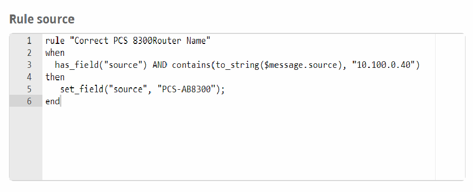
Graylog の「Rule source」の編集欄に、実験環境用に作ったルールが行番号 1〜6 で表示されています。「rule "Correct PCS 8300Router Name"」「when」「has_field("source") AND contains(to_string($message.source), "10.100.0.40")」「then」「set_field("source", "PCS-AB8300");」「end」です。
The result in the Search pane now shows the hostname PCS-AB8300 as configured in the Rule.
Search ペインの結果には、ルールで設定したとおり、ホスト名 PCS-AB8300 が表示されるようになりました。
［第三者の画像。第三者の著作物のため、この非公式サイトには掲載していません。原本 PDF を参照してください。］
4.16.5.7 Configuring Email Notifications for Alert conditions
4.16.5.7 アラート条件に対する電子メール通知の構成
Email alerts for any custom events, alert conditions can be setup. The process below shows how our Graylog was configured to send out email notifications for any events related to Veeam Backups that were received from the Windows clients.
カスタムイベントやアラート条件に対する電子メールアラートを設定できます。次の手順では、Windows クライアントから受信した Veeam バックアップ関連のイベントについて、電子メール通知を送信するよう Graylog をどのように構成したかを示します。
Follow this process to define your custom alert conditions.
このプロセスに従って、カスタムのアラート条件を定義します。
There are three configuration settings required for email notification to work:
電子メール通知を機能させるには、3つの構成設定が必要です。
•Creating a stream.
•ストリームを作成します。
•Adding an alert condition.
•アラート条件を追加します。
•Creating a notification.
•通知を作成します。
1.Click on Streams on the Top-Menu > Create a Stream > Enter Title, Description, and Index Set which should default to Default index set
1.トップメニューの Streams > Create a Stream をクリックし、Title、Description、Index Set（デフォルトは Default index set）を入力します。
2.Click Save to save the changes
2.Save をクリックして、変更を保存します。
［第三者の画像。第三者の著作物のため、この非公式サイトには掲載していません。原本 PDF を参照してください。］
3.Click on Alerts in the Top menu > Manage conditions > Add New Condition to define a condition.
3.トップメニューの Alerts > Manage conditions > Add New Condition をクリックして、条件を定義します。
4.Click the Drop menu under Alert on Stream and select the stream created earlier. Under Condition Type, select Message Count Alert Condition.
4.Alert on Stream の下のドロップメニューをクリックし、先に作成したストリームを選択します。Condition Type の下で、Message Count Alert Condition を選択します。
［第三者の画像。第三者の著作物のため、この非公式サイトには掲載していません。原本 PDF を参照してください。］
5.Click Add Alert Condition. Fill out the required information in the window.
5.Add Alert Condition をクリックします。ウィンドウに、必要な情報を入力します。
6.Click Save to complete (See below for example of current Message Count Alert Condition).
6.Save をクリックして完了します（現在の Message Count Alert Condition の例は、以下を参照）。
［第三者の画像。第三者の著作物のため、この非公式サイトには掲載していません。原本 PDF を参照してください。］
7.Create a notification as follows:
7.次のように、通知を作成します。
a.Click on Manage notifications in upper right-hand corner.
a.右上隅の Manage notifications をクリックします。
b.Click Add New Notification
b.Add New Notification をクリックします。
c.Select notification created earlier from the drop-down menu under Notify on Stream.
c.Notify on Stream の下のドロップダウンメニューから、先に作成した通知を選択します。
d.Select Email Alert Callback under Notification Type
d.Notification Type の下で Email Alert Callback を選択します。
e.Click Add alert notification button
e.Add alert notification ボタンをクリックします。
f.Title: < Some text> For instance: Veeam Backup Alerts
f.Title: < Some text> 例：Veeam Backup Alerts
g.(For Reference) Email Subject: “Successful Veeam Backup source: ${foreach backlog message}${message.source}${end}” without the quotes, see below for screen shot of current callback wording.
g.（参考）電子メールの件名：引用符を除いた “Successful Veeam Backup source: ${foreach backlog message}${message.source}${end}”。現在のコールバックの文言のスクリーンショットは、以下を参照してください。
h.Sender: < sender address >
h.Sender: < sender address >
i.E-mail Body:
i.E-mail Body：
Alert Description: ${check_result.resultDescription}
Date: ${check_result.triggeredAt}
Stream ID: ${stream.id}
Stream title: ${stream.title}
Stream description: ${stream.description}
Alert Condition Title: ${alertCondition.title}
${if backlog}Last messages accounting for this alert:
${foreach backlog message}${message}
${end}${else}<No backlog>
${end}
Alert Description: ${check_result.resultDescription}
Date: ${check_result.triggeredAt}
Stream ID: ${stream.id}
Stream title: ${stream.title}
Stream description: ${stream.description}
Alert Condition Title: ${alertCondition.title}
${if backlog}このアラートの対象となる最後のメッセージ:
${foreach backlog message}${message}
${end}${else}<バックログなし>
${end}
j.User Receivers: Select a Graylog user if desired
j.User Receivers: 必要に応じて Graylog ユーザーを選択します。
k.Email Receivers: Enter email address for individuals receiving these alerts
k.Email Receivers: これらのアラートを受け取る個人の電子メールアドレスを入力します。
l.Click Save
l.Save をクリックします。
8.Test new Streams / Alerts / Notifications to ensure they are configured correctly.
8.新しい Streams / Alerts / Notifications をテストして、正しく構成されていることを確認します。
4.16.5.8 Additional Information
4.16.5.8 追加情報
•There are many useful Content packs and plugins available120 as per vendor specific technologies, devices such as Cisco, Microsoft DNS, Bro IDS, Cacti, Symantec etc.
•Cisco、Microsoft DNS、Bro IDS、Cacti、Symantec など、ベンダー固有の技術やデバイス向けに、多くの有用な Content pack やプラグインが利用できます。120
•Additional guidance is available on creating pipelines.121
•パイプラインの作成に関する追加の指針も利用できます。121
Lessons Learned
得られた教訓
Carefully configure the level of logging on each system. In case of Windows clients, filter out Event IDs in the nxlog.conf instead of enabling every event category, as this can generate a high volume of events which in turn will impact search operations in Graylog and overall performance of the Graylog server. When using Group Policy to enable auditing, select only the categories which are required. Some categories such as Process Creation generate tremendous amounts of noise.
各システムのログ記録のレベルは、慎重に構成します。Windows クライアントの場合は、すべてのイベントカテゴリを有効にするのではなく、nxlog.conf でイベント ID をフィルタリングします。すべてを有効にすると、大量のイベントが生成され、それが Graylog での検索操作と Graylog サーバー全体の性能に影響するためです。Group Policy を使用して監査を有効にする場合は、必要なカテゴリのみを選択します。Process Creation などの一部のカテゴリは、膨大な量のノイズを生成します。
4.16.6 Highlighted Performance Impacts
4.16.6 注目すべき性能への影響
No performance measurement experiments were performed for the use of the Graylog due to its typical installation and usage location (i.e., external to the manufacturing system).
Graylog は通常、製造システムの外部に設置され、そこで使用されるため、Graylog の使用に関する性能測定実験は実施しませんでした。
4.16.7 Links to Entire Performance Measurement Data Set
4.16.7 性能測定データセット全体へのリンク
N/A
N/A
4.17 DBAN
4.17 DBAN
4.17.1 Technical Solution Overview
4.17.1 技術ソリューションの概要
DBAN is a free open source data wiping utility allowing the ability to sanitize hard drives to ensure data is not left behind when drives are beginning decommissioned and prepared for removal from on-premise. DBAN and other hard drive sanitization tools only work with spinning hard drives, SSD hard drives and other flash media refer to vendors for specific directions for sanitizing media before removing from company control.
DBAN は、無料のオープンソースのデータ消去ユーティリティです。ドライブの使用を中止してオンプレミス環境から撤去する準備をする際にデータが残らないよう、ハードドライブをサニタイズできます。DBAN やその他のハードドライブ用サニタイズツールは回転式ハードドライブでのみ機能します。SSD およびその他のフラッシュ媒体のサニタイズ手順については、会社の管理下から媒体を取り外す前にベンダーに確認してください。
4.17.2 Technical Capabilities Provided by Solution
4.17.2 ソリューションが提供する技術的能力
DBAN provides components of the following Technical Capabilities described in Section 6 of Volume 1:
DBANは、第1巻の第6節で説明した、次の技術的能力の構成要素を提供します。
•Media Sanitization
•媒体のサニタイズ
4.17.3 Subcategories Addressed by Implementing Solution
4.17.3 ソリューションの実装によって対処するサブカテゴリ
PR.DS-3, PR.IP-6
PR.DS-3, PR.IP-6
4.17.4 Architecture Map of Where Solution was Implemented
4.17.4 ソリューションを実装した場所のアーキテクチャマップ
![Network architecture map of the Westman process-based manufacturing system lab. Legend box: a blue circle-in-ring icon labeled "DBAN Bootable media". An "Internet" cloud connects to "Corporate Network" and the "Manuf. System Router/Firewall". Management zone: "Microsoft ActiveDirectory/RADIUS 10.100.2.3" on "Management LAN – 10.100.2.0/24". Manufacturing DMZ zone: "DMZ Historian 10.100.1.4" on "Manufacturing DMZ LAN - 10.100.1.0/24". Cybersecurity LAN zone ("Cybersecurity LAN - 10.100.0.0/24"): "NTP/PTP Clock 10.100.0.15", "Open-Audit 10.100.0.177", "TheHive Incident Resp. 10.100.0.5", "Nessus Vuln. Scanner 10.100.0.25", "Microsoft ActiveDirectory 10.100.0.13,17", "Symantec Antivirus 10.100.0.5", "GTB Data Loss Prev. 10.100.0.175,176", "Veeam Backup & Replication 10.100.0.10", "Graylog Syslog 10.100.0.14", "Windows WSUS 10.100.0.12". Plant zone: "PCS LAN Router (OSPF) 10.100.0.40/24 10.100.3.1"; "Engineering Workstation 172.16.3.10" on "Engineering LAN – 172.16.3.0/24"; "HMI 172.16.1.4" and "Plant Controller 172.16.1.5" on "Plant LAN – 172.16.1.0/24"; "Local Historian 172.16.2.4", "OPC Server 172.16.2.5" and "Supervisory PLC 172.16.2.102" on "Supervisory LAN – 172.16.2.0/24"; the Supervisory PLC connects via "DeviceNet to Field Devices" to the "Manufacturing Process" (a screen image of the process simulation). The DBAN icon is shown on the DMZ Historian, on every Cybersecurity LAN server except the NTP/PTP Clock, on the Engineering Workstation, HMI, Plant Controller, Local Historian and OPC Server.](assets/ir-8183av2/p0304-figure-02.png)
Westman のプロセス型製造システムの実験環境のネットワーク構成図。凡例: 青い二重丸のアイコンが「DBAN Bootable media」（DBAN の起動用媒体）です。「Internet」の雲が「Corporate Network」（企業ネットワーク）と「Manuf. System Router/Firewall」（製造システムのルーター／ファイアウォール）につながっています。Management（管理）区画には「Management LAN – 10.100.2.0/24」上の「Microsoft ActiveDirectory/RADIUS 10.100.2.3」、Manufacturing DMZ 区画には「Manufacturing DMZ LAN - 10.100.1.0/24」上の「DMZ Historian 10.100.1.4」があります。Cybersecurity LAN 区画（「Cybersecurity LAN - 10.100.0.0/24」）には 「NTP/PTP Clock 10.100.0.15」「Open-Audit 10.100.0.177」「TheHive Incident Resp. 10.100.0.5」「Nessus Vuln. Scanner 10.100.0.25」「Microsoft ActiveDirectory 10.100.0.13,17」「Symantec Antivirus 10.100.0.5」「GTB Data Loss Prev. 10.100.0.175,176」「Veeam Backup & Replication 10.100.0.10」「Graylog Syslog 10.100.0.14」「Windows WSUS 10.100.0.12」 が並びます。Plant（工場）区画には 「PCS LAN Router (OSPF) 10.100.0.40/24 10.100.3.1」があり、「Engineering LAN – 172.16.3.0/24」上に「Engineering Workstation 172.16.3.10」、「Plant LAN – 172.16.1.0/24」上に「HMI 172.16.1.4」と「Plant Controller 172.16.1.5」、「Supervisory LAN – 172.16.2.0/24」上に「Local Historian 172.16.2.4」「OPC Server 172.16.2.5」「Supervisory PLC 172.16.2.102」があります。Supervisory PLC は「DeviceNet to Field Devices」で「Manufacturing Process」（プロセスのシミュレーション画面の画像）につながります。DBAN のアイコンは、DMZ Historian、NTP/PTP Clock を除く Cybersecurity LAN のすべてのサーバー、Engineering Workstation、HMI、Plant Controller、Local Historian、OPC Server に付いています。
4.17.5 Installation Instructions and Configurations
4.17.5 インストール手順と構成
4.17.5.1 Setup
4.17.5.1 セットアップ
1.Download the DBAN ISO file122
1.DBAN の ISO ファイル122 をダウンロードします。
2.Burn to a CD/DVD, or USB drive using any of the available ISO bootable utilities.
2.利用可能な ISO の起動可能メディア作成ユーティリティを使って、CD/DVD または USB ドライブに書き込みます。
4.17.5.2 Instructions
4.17.5.2 手順
1.Boot up the computer requiring sanitization using the bootable media created earlier.
1.先に作成した起動可能な媒体を使って、サニタイズが必要なコンピューターを起動します。
2.Select the desire option for media sanitization upon boot. Typically, the default mode is applicable for most cases.
2.起動時の媒体サニタイズに使用するオプションを選択します。通常は、ほとんどの場合にデフォルトのモードを適用できます。
［第三者の画像。第三者の著作物のため、この非公式サイトには掲載していません。原本 PDF を参照してください。］
3.Hit Enter Key to continue. The default sanitization mode is short DoD 5520.22-M, but this can be changed depending on the level your cybersecurity program indicates.
3.Enter キーを押して続行します。デフォルトのサニタイズモードは short DoD 5520.22-M ですが、サイバーセキュリティプログラムで示されるレベルに応じて変更できます。
4.Follow the on-screen menu options to Start the Wiping process. Once the wipe has completed, you will see a screen like the image below.
4.画面のメニューオプションに従って、消去プロセスを開始（Start）します。消去が完了すると、次の画像のような画面が表示されます。
［第三者の画像。第三者の著作物のため、この非公式サイトには掲載していません。原本 PDF を参照してください。］
5.Remove the physical hard drive from device post completion. It is now ready for disposal.
5.完了後に、デバイスから物理ハードドライブを取り外します。これで廃棄の準備ができました。
Additional Information
追加情報
Not all hard drives can be wiped clean using this sanitization method. Media that is either SSD or flash memory is written differently than spinning drives, so follow SSD/Flash media vendors’ recommendations for proper media sanitization for all non-spinning hard drives.
すべてのハードドライブを、このサニタイズ方法で完全に消去できるわけではありません。SSD やフラッシュメモリの媒体は、回転式ドライブとは書き込み方法が異なるため、回転式ではないすべてのハードドライブについては、適切な媒体のサニタイズに関する SSD／フラッシュ媒体のベンダーの推奨事項に従ってください。
4.17.6 Highlighted Performance Impacts
4.17.6 注目すべき性能への影響
No performance measurement experiments were performed for the use of DBAN due to its typical installation and usage location (i.e., external to the manufacturing system).
DBAN の使用については、その通常のインストール場所と使用場所（製造システムの外部）の都合上、性能測定の実験を実施しませんでした。
4.17.7 Links to Entire Performance Measurement Data Set
4.17.7 性能測定データセット全体へのリンク
N/A
N/A
4.18 Network Segmentation and Segregation
4.18 ネットワークのセグメンテーションと分離
4.18.1 Technical Solution Overview
4.18.1 技術ソリューションの概要
Network segmentation and segregation solutions enable a manufacturer to separate the manufacturing system network from other networks (e.g., corporate networks, guest networks), segment the internal manufacturing system network into smaller networks, and control the communication between specific hosts and services.
ネットワークのセグメント化と分離のソリューションを使用すると、製造者は、製造システムのネットワークを他のネットワーク（たとえば、企業ネットワーク、ゲストネットワーク）から分離し、製造システムの内部ネットワークをより小さなネットワークに分割し、特定のホストとサービスの間の通信を制御できます。
Each router’s native capabilities were leveraged to implemented network segmentation.
ネットワークのセグメンテーションの実装には、各ルーターの標準機能を活用しました。
4.18.2 Technical Capabilities Provided by Solution
4.18.2 ソリューションが提供する技術的能力
Network Segmentation and Segregation provides components of the following Technical Capabilities described in Section 6 of Volume 1:
ネットワークのセグメンテーションと分離は、第1巻の第6節で説明した、次の技術的能力の構成要素を提供します。
•Network Segmentation and Segregation
•ネットワークのセグメンテーションと分離
4.18.3 Subcategories Addressed by Implementing Solution
4.18.3 ソリューションの実装によって対処するサブカテゴリ
PR.AC-5
PR.AC-5
4.18.4 Architecture Map of Where Solution was Implemented
4.18.4 ソリューションを実装した場所のアーキテクチャマップ
![Network architecture map of the Westman process-based manufacturing system lab. There is no legend box. An "Internet" cloud connects to "Corporate Network" and the "Manuf. System Router/Firewall". Management zone: "Microsoft ActiveDirectory/RADIUS 10.100.2.3" on "Management LAN – 10.100.2.0/24". Manufacturing DMZ zone: "DMZ Historian 10.100.1.4" on "Manufacturing DMZ LAN - 10.100.1.0/24". Cybersecurity LAN zone ("Cybersecurity LAN - 10.100.0.0/24"): "NTP/PTP Clock 10.100.0.15", "Open-Audit 10.100.0.177", "TheHive Incident Resp. 10.100.0.5", "Nessus Vuln. Scanner 10.100.0.25", "Microsoft ActiveDirectory 10.100.0.13,17", "Symantec Antivirus 10.100.0.5", "GTB Data Loss Prev. 10.100.0.175,176", "Veeam Backup 10.100.0.10", "Graylog Syslog 10.100.0.14", "Security Onion 10.100.0.26", "Windows WSUS 10.100.0.12". Plant zone: "PCS LAN Router (OSPF) 10.100.0.40 172.16.1.1 172.16.2.1 172.16.3.1" (also labeled 10.100.2.8) with two "Switch" icons; "Engineering Workstation 172.16.3.10" on "Engineering LAN – 172.16.3.0/24"; "HMI 172.16.1.4" and "Plant Controller 172.16.1.5" on "VLAN 1 – 172.16.1.0/24"; "Local Historian 172.16.2.4", "OPC Server 172.16.2.5" and "Supervisory PLC 172.16.2.102" on "VLAN 2 – 172.16.2.0/24"; the Supervisory PLC connects via "DeviceNet to Field Devices" to the "Manufacturing Process" (a screen image of the process simulation). "Switch" icons are drawn between the Manuf. System Router/Firewall and the Management LAN, the Manufacturing DMZ LAN and the Cybersecurity LAN. Small database icons are shown on the DMZ Historian, Symantec Antivirus and Local Historian, and a backup icon on Veeam Backup.](assets/ir-8183av2/p0308-figure-02.png)
Westman のプロセス型製造システムの実験環境のネットワーク構成図です。凡例はありません。「Internet」の雲が「Corporate Network」（企業ネットワーク）と「Manuf. System Router/Firewall」（製造システムのルーター／ファイアウォール）につながっています。Management（管理）区画には「Management LAN – 10.100.2.0/24」上の「Microsoft ActiveDirectory/RADIUS 10.100.2.3」、Manufacturing DMZ 区画には「Manufacturing DMZ LAN - 10.100.1.0/24」上の「DMZ Historian 10.100.1.4」があります。Cybersecurity LAN 区画（「Cybersecurity LAN - 10.100.0.0/24」）には 「NTP/PTP Clock 10.100.0.15」「Open-Audit 10.100.0.177」「TheHive Incident Resp. 10.100.0.5」「Nessus Vuln. Scanner 10.100.0.25」「Microsoft ActiveDirectory 10.100.0.13,17」「Symantec Antivirus 10.100.0.5」「GTB Data Loss Prev. 10.100.0.175,176」「Veeam Backup 10.100.0.10」「Graylog Syslog 10.100.0.14」「Security Onion 10.100.0.26」「Windows WSUS 10.100.0.12」 が並びます。Plant（工場）区画には 「PCS LAN Router (OSPF) 10.100.0.40 172.16.1.1 172.16.2.1 172.16.3.1」（10.100.2.8 の表示もあります）と2つの「Switch」があり、「Engineering LAN – 172.16.3.0/24」上に「Engineering Workstation 172.16.3.10」、「VLAN 1 – 172.16.1.0/24」上に「HMI 172.16.1.4」と「Plant Controller 172.16.1.5」、「VLAN 2 – 172.16.2.0/24」上に「Local Historian 172.16.2.4」「OPC Server 172.16.2.5」「Supervisory PLC 172.16.2.102」があります。Supervisory PLC は「DeviceNet to Field Devices」で「Manufacturing Process」（プロセスのシミュレーション画面の画像）につながります。Manuf. System Router/Firewall と Management LAN、Manufacturing DMZ LAN、Cybersecurity LAN の間に「Switch」のアイコンがあります。DMZ Historian、Symantec Antivirus、Local Historian には小さなデータベースのアイコン、Veeam Backup にはバックアップのアイコンが付いています。
4.18.5 Installation Instructions and Configurations
4.18.5 インストール手順と構成
4.18.5.1 Environment Setup
4.18.5.1 環境のセットアップ
The following devices were involved in implementing Network Segmentation:
次のデバイスが、ネットワークのセグメンテーションの実装に関わっています。
| Device | Details | Location |
|---|---|---|
| Cisco-ASA 5512 | NGFW, running Firepower Services FTD 6.2.3 | Manufacturing System |
| Allen Bradley Stratix 8300 | Firewall, Router | Work cell |
| デバイス | 詳細 | 設置場所 |
|---|---|---|
| Cisco-ASA 5512 | 次世代ファイアウォール（NGFW）、Firepower Services FTD 6.2.3 が動作 | 製造システム |
| Allen Bradley Stratix 8300 | ファイアウォール、ルーター | ワークセル |
4.18.5.2 Segmentation in the Cybersecurity LAN
4.18.5.2 Cybersecurity LAN でのセグメンテーション
Following is a list of interfaces created on the Boundary Router/Firewall – Cisco ASA of the Cybersecurity LAN network:
次に、Cybersecurity LAN ネットワークの境界ルーター／ファイアウォールである Cisco ASA に作成したインターフェースの一覧を示します。
| Interface | IP address of Interface | Subnet | Description |
|---|---|---|---|
| GE 0/0 | 129.6.66.x | 129.x.x.x/x | Uplink to Corporate |
| GE 0/1 | 10.100.0.1 | 10.100.0.0/24 | Cybersecurity LAN |
| GE 0/2 | 129.6.1.x | 129.x.x.x/x | VPN users |
| GE 0/3 | 10.100.2.1 | 10.100.2.0/24 | Management LAN |
| GE 0/4 | 10.100.1.1 | 10.100.1.0/24 | Manufacturing DMZ LAN |
| インターフェース | インターフェースの IP アドレス | サブネット | 説明 |
|---|---|---|---|
| GE 0/0 | 129.6.66.x | 129.x.x.x/x | Corporate へのアップリンク |
| GE 0/1 | 10.100.0.1 | 10.100.0.0/24 | Cybersecurity LAN |
| GE 0/2 | 129.6.1.x | 129.x.x.x/x | VPN ユーザー |
| GE 0/3 | 10.100.2.1 | 10.100.2.0/24 | Management LAN |
| GE 0/4 | 10.100.1.1 | 10.100.1.0/24 | Manufacturing DMZ LAN |
4.18.5.3 Segmentation in the Plant
4.18.5.3 プラントでのセグメンテーション
The Work Cell consists of the following network devices:
ワークセルは、次のネットワークデバイスで構成されています。
| Type | Description |
|---|---|
| Allen Bradley Stratix 8300 | Boundary protection Firewall, Router |
| Allen Bradley Stratix 5700 | Layer-2 Switch for the Control Network |
| Allen Bradley Stratix 5700 | Layer-2 Switch for the Supervisory Network |
| 種類 | 説明 |
|---|---|
| Allen Bradley Stratix 8300 | 境界保護用のファイアウォール、ルーター |
| Allen Bradley Stratix 5700 | Control ネットワーク用のレイヤー2スイッチ |
| Allen Bradley Stratix 5700 | Supervisory ネットワーク用のレイヤー2スイッチ |
List of interfaces created on the Boundary Router – Allen Bradley 8300:
境界ルーターである Allen Bradley 8300 に作成したインターフェースの一覧：
| Interface | IP address of Interface | Subnet | Description |
|---|---|---|---|
| Fa 1/1 | 172.16.1.1 | 172.16.1.0/24 | Supervisory Vlan1 |
| Fa 1/2 | 172.16.2.1 | 172.16.2.0/24 | Control Vlan1 |
| Fa 1/3 | 172.16.3.1 | 172.16.3.0/24 | Engineering LAN |
| Fa 1/4 | 10.100.0.40 | Uplink to Cybersecurity LAN | |
| Gi 1/1 | 10.100.2.8 | Management interface |
| インターフェース | インターフェースの IP アドレス | サブネット | 説明 |
|---|---|---|---|
| Fa 1/1 | 172.16.1.1 | 172.16.1.0/24 | Supervisory Vlan1 |
| Fa 1/2 | 172.16.2.1 | 172.16.2.0/24 | Control Vlan1 |
| Fa 1/3 | 172.16.3.1 | 172.16.3.0/24 | Engineering LAN |
| Fa 1/4 | 10.100.0.40 | Cybersecurity LAN へのアップリンク | |
| Gi 1/1 | 10.100.2.8 | 管理インターフェース |
［第三者の画像。第三者の著作物のため、この非公式サイトには掲載していません。原本 PDF を参照してください。］
One of the Stratix 5700 switches was connected to the Fa1/1 interface of the 8300 Router and used for the Supervisory (Vlan1) sub-network. Devices connected to this switch were assigned an IP address from the 172.16.1.0/24 subnet.
Stratix 5700 スイッチの1台を、8300 ルーターの Fa1/1 インターフェースに接続し、Supervisory（Vlan1）サブネットワークに使用しました。このスイッチに接続したデバイスには、172.16.1.0/24 サブネットの IP アドレスを割り当てました。
The other Stratix 5700 switch was connected to the Fa 1/2 interface of the Router and used for the Control (Vlan2) sub- network. Devices connected to this switch were assigned an IP address from the 172.16.2.0/24 subnet.
もう1台の Stratix 5700 スイッチを、ルーターの Fa 1/2 インターフェースに接続し、Control（Vlan2）サブネットワークに使用しました。このスイッチに接続したデバイスには、172.16.2.0/24 サブネットの IP アドレスを割り当てました。
4.18.6 Highlighted Performance Impacts
4.18.6 注目すべき性能への影響
No performance measurement experiments were performed for network segmentation and segregation due to it being implemented on the PCS before the Manufacturing Profile implementation was initiated.
ネットワークのセグメンテーションと分離については、製造プロファイルの実装を開始する前に PCS に実装済みであったため、性能測定の実験を実施しませんでした。
4.18.7 Links to Entire Performance Measurement Data Set
4.18.7 性能測定データセット全体へのリンク
N/A
N/A
4.19 Network Boundary Protection
4.19 ネットワーク境界の保護
4.19.1 Technical Solution Overview
4.19.1 技術ソリューションの概要
Boundary Protection devices are implemented to monitor and control connections and communications at the external boundary and key internal boundaries within the organization. Boundary protection mechanisms include for example, routers, firewalls, gateways, data diodes separating system components into logically separate networks and sub networks.
境界保護デバイスは、組織の外部境界と主要な内部境界での、接続と通信を監視し、制御するために実装されます。境界保護の仕組みには、たとえば、システムの構成要素を論理的に分離されたネットワークとサブネットワークに分けるルーター、ファイアウォール、ゲートウェイ、データダイオードがあります。
4.19.2 Technical Capabilities Provided by Solution
4.19.2 ソリューションが提供する技術的能力
Network Boundary Protection provides components of the following Technical Capabilities described in Section 6 of Volume 1:
ネットワーク境界保護は、第1巻の第6節で説明した、次の技術的能力の構成要素を提供します。
•Network Boundary Protection
•ネットワーク境界保護
4.19.3 Subcategories Addressed by Implementing Solution
4.19.3 ソリューションの実装によって対処するサブカテゴリ
PR.AC-5, PR.PT-4, DE.CM-1
PR.AC-5, PR.PT-4, DE.CM-1
4.19.4 Architecture Map of Where Solution was Implemented
4.19.4 ソリューションを実装した場所のアーキテクチャマップ
![Network architecture map of the Westman process-based manufacturing system lab. Legend box: a blue globe-with-padlock icon labeled "Boundary Protection Device". An "Internet" cloud connects to "Corporate Network" and the "Manuf. System Router/Firewall". Management zone: "Microsoft ActiveDirectory/RADIUS 10.100.2.3" on "Management LAN – 10.100.2.0/24". Manufacturing DMZ zone: "DMZ Historian 10.100.1.4" on "Manufacturing DMZ LAN - 10.100.1.0/24". Cybersecurity LAN zone ("Cybersecurity LAN - 10.100.0.0/24"): "NTP/PTP Clock 10.100.0.15", "Open-Audit 10.100.0.177", "TheHive Incident Resp. 10.100.0.5", "Nessus Vuln. Scanner 10.100.0.25", "Microsoft ActiveDirectory 10.100.0.13,17", "Symantec Antivirus 10.100.0.5", "GTB Data Loss Prev. 10.100.0.175,176", "Veeam Backup 10.100.0.10", "Graylog Syslog 10.100.0.14", "Security Onion 10.100.0.26", "Windows WSUS 10.100.0.12". Plant zone: "PCS LAN Router (OSPF) 10.100.0.40 172.16.1.1 172.16.2.1 172.16.3.1" (also labeled 10.100.2.8) with two "Switch" icons; "Engineering Workstation 172.16.3.10" on "Engineering LAN – 172.16.3.0/24"; "HMI 172.16.1.4" and "Plant Controller 172.16.1.5" on "VLAN 1 – 172.16.1.0/24"; "Local Historian 172.16.2.4", "OPC Server 172.16.2.5" and "Supervisory PLC 172.16.2.102" on "VLAN 2 – 172.16.2.0/24"; the Supervisory PLC connects via "DeviceNet to Field Devices" to the "Manufacturing Process" (a screen image of the process simulation). The Boundary Protection Device icon is shown on the Manuf. System Router/Firewall, on GTB Data Loss Prev., on Security Onion and on the PCS LAN Router.](assets/ir-8183av2/p0312-figure-02.png)
Westman のプロセス型製造システムの実験環境のネットワーク構成図です。凡例: 南京錠の付いた青い地球のアイコンが「Boundary Protection Device」（境界防御装置）です。「Internet」の雲が「Corporate Network」（企業ネットワーク）と「Manuf. System Router/Firewall」（製造システムのルーター／ファイアウォール）につながっています。Management（管理）区画には「Management LAN – 10.100.2.0/24」上の「Microsoft ActiveDirectory/RADIUS 10.100.2.3」、Manufacturing DMZ 区画には「Manufacturing DMZ LAN - 10.100.1.0/24」上の「DMZ Historian 10.100.1.4」があります。Cybersecurity LAN 区画（「Cybersecurity LAN - 10.100.0.0/24」）には 「NTP/PTP Clock 10.100.0.15」「Open-Audit 10.100.0.177」「TheHive Incident Resp. 10.100.0.5」「Nessus Vuln. Scanner 10.100.0.25」「Microsoft ActiveDirectory 10.100.0.13,17」「Symantec Antivirus 10.100.0.5」「GTB Data Loss Prev. 10.100.0.175,176」「Veeam Backup 10.100.0.10」「Graylog Syslog 10.100.0.14」「Security Onion 10.100.0.26」「Windows WSUS 10.100.0.12」 が並びます。Plant（工場）区画には 「PCS LAN Router (OSPF) 10.100.0.40 172.16.1.1 172.16.2.1 172.16.3.1」（10.100.2.8 の表示もあります）と2つの「Switch」があり、「Engineering LAN – 172.16.3.0/24」上に「Engineering Workstation 172.16.3.10」、「VLAN 1 – 172.16.1.0/24」上に「HMI 172.16.1.4」と「Plant Controller 172.16.1.5」、「VLAN 2 – 172.16.2.0/24」上に「Local Historian 172.16.2.4」「OPC Server 172.16.2.5」「Supervisory PLC 172.16.2.102」があります。Supervisory PLC は「DeviceNet to Field Devices」で「Manufacturing Process」（プロセスのシミュレーション画面の画像）につながります。Boundary Protection Device のアイコンは、Manuf. System Router/Firewall、GTB Data Loss Prev.、Security Onion、PCS LAN Router に付いています。
4.19.5 Installation Instructions and Configurations
4.19.5 インストール手順と構成
4.19.5.1 Environment Setup
4.19.5.1 環境のセットアップ
The following devices were implemented for Boundary protection:
境界保護のために、次のデバイスを実装しました。
| Device | Details | Location |
|---|---|---|
| Cisco-ASA 5512 | NGFW, running Firepower Services FTD 6.2.3 | Manufacturing System |
| Allen Bradley Stratix 8300 | Firewall, Router | Work cell |
| GTB Inspector | Data Loss Prevention (DLP) virtual appliance | Cybersecurity LAN |
| Security Onion | Running Snort, BRO IDS | Cybersecurity LAN |
| デバイス | 詳細 | 設置場所 |
|---|---|---|
| Cisco-ASA 5512 | 次世代ファイアウォール（NGFW）、Firepower Services FTD 6.2.3 が動作 | 製造システム |
| Allen Bradley Stratix 8300 | ファイアウォール、ルーター | ワークセル |
| GTB Inspector | データ損失防止（DLP）仮想アプライアンス | Cybersecurity LAN |
| Security Onion | Snort、BRO IDS が動作 | Cybersecurity LAN |
4.19.5.2 Configuration on Cisco-ASA
4.19.5.2 Cisco-ASA の構成
The following features, settings were enabled on the ASA firewall:
ASA ファイアウォールでは、次の機能と設定を有効にしました。
•Network Segmentation
•ネットワークのセグメンテーション
•ACL Rules
•ACL ルール
•NAT policy for Internet access
•インターネットアクセス用の NAT ポリシー
•Snort Inspection
•Snort による検査
•DMZ network
•DMZ ネットワーク
Network Segmentation
ネットワークのセグメンテーション
Separate network interfaces were configured for the different network segments as listed below:
次に示すとおり、ネットワークセグメントごとに、別々のネットワークインターフェースを構成しました。
•Inside Interface (Network: 10.100.0.0/24)
•内側インターフェース（ネットワーク：10.100.0.0/24）
•DMZ Interface (Network: 10.100.1.0/24)
•DMZ インターフェース（ネットワーク：10.100.1.0/24）
•Outside Interface (Network:129.6.91.x/24, Uplink to NIST Corporate for Internet)
•外側インターフェース（ネットワーク：129.6.91.x/24、インターネット用の NIST Corporate へのアップリンク）
•Public interface (Network:129.6.1.x/24 For VPN Users)
•パブリックインターフェース（ネットワーク：129.6.1.x/24、VPN ユーザー用）
Access Control List (ACL) rules
アクセス制御リスト（ACL）ルール
The following rules were put in place on the ASA with a default Action to Block all traffic.
ASA には、すべてのトラフィックをブロックするデフォルトのアクションとともに、次のルールを設定しました。
| Source | Source Port | Destination | Dest Ports | Protocol | Action |
|---|---|---|---|---|---|
| 10.100.0.0/24, 172.16.0.0/22 | Any | DMZ network | SSH,RDP,ICMP | TCP | Trust |
| PCS-Historian (172.16.2.14) | TCP_High_Ports | DMZ-Historian | 5450 | TCP | Trust |
| DMZ Historian | TCP_High_Ports | PCS-Historian | 5450 | TCP | Trust |
| CRS-NAT (10.100.0.20) | TCP_High_Ports | DMZ-Historian | 5450, 5460, 5671, 5672 | TCP | Trust |
| DMZ Historian | TCP_High_Ports | CRS-NAT (10.100.0.20) | 5457, 5450 | TCP | Trust |
| DMZ Historian | Any | Active Directory (10.100.0.17) | 53 | UDP | Allow |
| Veeam Server | Any | Hyper-V Host servers, Esxi Host Server | NETBIOS, ICMP, HTTPS, 445, TCP_High_ports, 2500-5000, 6160-6163 | TCP | Trust |
| Hyper-V Host Servers, Esxi Host Server | Any | Veeam Server | ICMP, 2500-5000 | TCP | Trust |
| inside_interface | Any | outside_interface | Any | Any | Allow |
| DMZ Historian | Any | Symantec Server | SMB (445), HTTPS | TCP | Trust |
| Symantec Server | Any | DMZ Historian | HTTP, HTTPS, 8014 | TCP | Trust |
| DMZ Historian | Any | Graylog Server | 514 | UDP | Trust |
| VPN_Pool (192.168.100.10 - .20) | Any | PCS-HMI-Server, PCS-Workstation | 3389 | TCP | Allow |
| 送信元 | 送信元ポート | 宛先 | 宛先ポート | プロトコル | アクション |
|---|---|---|---|---|---|
| 10.100.0.0/24, 172.16.0.0/22 | Any | DMZ network | SSH,RDP,ICMP | TCP | Trust |
| PCS-Historian (172.16.2.14) | TCP_High_Ports | DMZ-Historian | 5450 | TCP | Trust |
| DMZ Historian | TCP_High_Ports | PCS-Historian | 5450 | TCP | Trust |
| CRS-NAT (10.100.0.20) | TCP_High_Ports | DMZ-Historian | 5450, 5460, 5671, 5672 | TCP | Trust |
| DMZ Historian | TCP_High_Ports | CRS-NAT (10.100.0.20) | 5457, 5450 | TCP | Trust |
| DMZ Historian | Any | Active Directory (10.100.0.17) | 53 | UDP | Allow |
| Veeam Server | Any | Hyper-V Host servers, Esxi Host Server | NETBIOS, ICMP, HTTPS, 445, TCP_High_ports, 2500-5000, 6160-6163 | TCP | Trust |
| Hyper-V Host Servers, Esxi Host Server | Any | Veeam Server | ICMP, 2500-5000 | TCP | Trust |
| inside_interface | Any | outside_interface | Any | Any | Allow |
| DMZ Historian | Any | Symantec Server | SMB (445), HTTPS | TCP | Trust |
| Symantec Server | Any | DMZ Historian | HTTP, HTTPS, 8014 | TCP | Trust |
| DMZ Historian | Any | Graylog Server | 514 | UDP | Trust |
| VPN_Pool (192.168.100.10 - .20) | Any | PCS-HMI-Server, PCS-Workstation | 3389 | TCP | Allow |
［第三者の画像。第三者の著作物のため、この非公式サイトには掲載していません。原本 PDF を参照してください。］
NAT Policy
NAT ポリシー
A Dynamic NAT policy was configured to allow internet access:
インターネットアクセスを許可するために、動的 NAT ポリシーを構成しました。
| Type of NAT rule | Auto NAT |
| Source Interface | inside |
| Destination Interface | outside |
| Original sources | 10.100.0.0/8 |
| Translated Source | Destination Interface IP |
| Options | Translate DNS Replies that match this Rule: False |
| NAT ルールの種類 | Auto NAT |
| 送信元インターフェース | inside |
| 宛先インターフェース | outside |
| 元の送信元 | 10.100.0.0/8 |
| 変換後の送信元 | 宛先インターフェースの IP |
| オプション | Translate DNS Replies that match this Rule: False |
［第三者の画像。第三者の著作物のため、この非公式サイトには掲載していません。原本 PDF を参照してください。］
Snort Inspection
Snort による検査
Snort Inspection was enabled on the following ACL rules:
次の ACL ルールで、Snort による検査を有効にしました。
| Name of the ACL | Intrusion Policy |
|---|---|
| Allow-DNS-DMZ | Balanced connectivity and security |
| Internet-Access rule | Balanced connectivity and security |
| VPN-Rule | Balanced connectivity and security |
| ACL の名前 | 侵入防御ポリシー |
|---|---|
| Allow-DNS-DMZ | Balanced connectivity and security |
| Internet-Access rule | Balanced connectivity and security |
| VPN-Rule | Balanced connectivity and security |
［第三者の画像。第三者の著作物のため、この非公式サイトには掲載していません。原本 PDF を参照してください。］
DMZ Network
DMZ ネットワーク
A Separate interface was setup for the Manufacturing DMZ LAN Network for hosting the DMZ Historian server.
DMZ ヒストリアンサーバーをホストするために、Manufacturing DMZ LAN ネットワーク用の別個のインターフェースが設定されました。
［第三者の画像。第三者の著作物のため、この非公式サイトには掲載していません。原本 PDF を参照してください。］
4.19.5.3 Configuration of Allen Bradley Firewall:
4.19.5.3 Allen Bradley ファイアウォールの構成
The following features and settings were enabled on this firewall:
このファイアウォールでは、次の機能と設定を有効にしました。
•Network Segmentation
•ネットワークのセグメンテーション
•ACL Rules
•ACL ルール
Network Segmentation
ネットワークのセグメンテーション
Separate network interfaces were configured for the different network segments as listed below:
次に示すとおり、ネットワークセグメントごとに、別々のネットワークインターフェースを構成しました。
•Supervisory VLAN1 (Network: 172.16.1.0/24)
•Supervisory VLAN1（ネットワーク：172.16.1.0/24）
•Control VLAN2 Interface (Network: 172.16.2.0.0/24)
•Control VLAN2 インターフェース（ネットワーク：172.16.2.0.0/24）
•Engineering LAN (Network: 172.16.3.0/24)
•Engineering LAN（ネットワーク：172.16.3.0/24）
•Uplink (IP:10.100.0.40, Uplink to Cybersecurity LAN)
•アップリンク（IP：10.100.0.40、Cybersecurity LAN へのアップリンク）
•Management interface (IP:10.100.2.8)
•管理インターフェース（IP：10.100.2.8）
［第三者の画像。第三者の著作物のため、この非公式サイトには掲載していません。原本 PDF を参照してください。］
Access Control List (ACL) rules
アクセス制御リスト（ACL）ルール
Three ACLs of Extended type were created as shown below. Each one was associated to a specific network interface as an Inbound ACL:
次に示すとおり、拡張タイプの3つの ACL を作成しました。それぞれを、インバウンド ACL として特定のネットワークインターフェースに関連付けました。
［第三者の画像。第三者の著作物のため、この非公式サイトには掲載していません。原本 PDF を参照してください。］
［第三者の画像。第三者の著作物のため、この非公式サイトには掲載していません。原本 PDF を参照してください。］
Shown below is the snippet of these ACLs from the Firewall’s running-config:
これらの ACL の、ファイアウォールの running-config からの抜粋を以下に示します。
ip access-list extended EnggWkstn-ACL
permit ip host 172.16.3.10 10.100.0.0 0.0.0.255
permit tcp host 172.16.3.10 172.16.1.0 0.0.0.15 eq 3389
permit tcp host 172.16.3.10 172.16.2.0 0.0.0.15 eq 3389
permit icmp host 172.16.3.10 any
permit tcp host 172.16.3.10 host 172.16.2.102 eq 44818
permit ip host 172.16.3.10 host 172.16.3.1
permit ip host 172.16.3.10 host 172.16.2.2
permit ip host 172.16.3.10 host 172.16.1.3
permit tcp host 172.16.3.10 host 10.100.1.4 eq 3389
permit tcp host 172.16.3.10 host 129.6.1.2 eq ftp
permit tcp host 172.16.3.10 host 129.6.1.2 eq 22
permit tcp host 172.16.3.10 host 129.6.1.2 eq www
permit tcp host 172.16.3.10 host 172.16.2.102
permit tcp 192.168.100.0 0.0.0.255 host 172.16.3.10 eq 3389
permit tcp host 172.16.3.10 host 192.168.100.10 gt 49000ip access-list extended Manf-vlan-ACL
permit ip 172.16.2.0 0.0.0.15 172.16.1.0 0.0.0.15 log
permit icmp 172.16.2.0 0.0.0.255 any log
permit tcp 172.16.2.0 0.0.0.255 host 172.16.3.10 gt 49000 log
permit ip 172.16.2.0 0.0.0.255 host 10.100.0.5 log
permit ip 172.16.2.0 0.0.0.255 host 10.100.0.10 log
permit ip 172.16.2.0 0.0.0.255 host 10.100.0.13 log
permit ip 172.16.2.0 0.0.0.255 host 10.100.0.17 log
permit ip 172.16.2.0 0.0.0.255 host 10.100.0.25 log
permit ip 172.16.2.0 0.0.0.255 host 10.100.0.177 log
permit tcp 172.16.2.0 0.0.0.255 host 10.100.0.234 log
permit tcp 172.16.2.0 0.0.0.255 host 10.100.0.12 eq www log
permit tcp 172.16.2.0 0.0.0.255 host 10.100.0.12 eq 443 log
permit tcp 172.16.2.0 0.0.0.255 host 10.100.0.12 eq 8530 log
permit udp 172.16.2.0 0.0.0.255 host 10.100.0.14 eq syslog
ip access-list extended plant-vlan-acl
permit ip 172.16.1.0 0.0.0.15 172.16.2.0 0.0.0.15 log
permit icmp 172.16.1.0 0.0.0.255 any log
permit tcp 172.16.1.0 0.0.0.255 host 172.16.3.10 gt 49000 log
permit ip 172.16.1.0 0.0.0.255 host 10.100.0.5 log
permit ip 172.16.1.0 0.0.0.255 host 10.100.0.10 log
permit ip 172.16.1.0 0.0.0.255 host 10.100.0.13 log
permit ip 172.16.1.0 0.0.0.255 host 10.100.0.17 log
permit ip 172.16.1.0 0.0.0.255 host 10.100.0.25 log
permit tcp 172.16.1.0 0.0.0.255 host 10.100.0.234 log
permit udp 172.16.1.0 0.0.0.255 host 10.100.0.14 eq syslog log
permit tcp 172.16.1.0 0.0.0.255 host 10.100.0.12 eq www log
permit tcp 172.16.1.0 0.0.0.255 host 10.100.0.12 eq 443 log
permit tcp 172.16.1.0 0.0.0.255 host 10.100.0.12 eq 8530 log
permit ip 172.16.1.0 0.0.0.255 host 10.100.0.177 log
permit tcp 192.168.100.0 0.0.0.255 host 172.16.1.4 eq 3389 log
permit tcp host 172.16.1.4 192.168.100.0 0.0.0.255 gt 49000 log4.19.5.4 Configuration of GTB Inspector:
4.19.5.4 GTB Inspector の構成
Refer to Section 4.15 for details.
詳細は 4.15 節を参照してください。
4.19.5.5 Configuration of Security Onion:
4.19.5.5 Security Onion の構成
Refer to Section 4.7 for details
詳細は 4.7 節を参照してください。
4.19.6 Highlighted Performance Impacts
4.19.6 注目すべき性能への影響
The following performance measurement experiment was performed for the network boundary protection while the manufacturing system was operational:
製造システムが稼働している間に、ネットワーク境界の保護について、次の性能測定実験を実施しました。
Experiment PL004.1- Firewall rules are activated at the PCS boundary router
実験 PL004.1 - PCS の境界ルーターでファイアウォールルールを有効化
There was no significant performance impact observed when firewall rules were activated. For example, the packet round trip time between the HMI and OPC remained mostly constant before and after the firewall rules were activated.
ファイアウォールルールを有効にした際、大きな性能影響は観測されませんでした。たとえば、HMI と OPC の間のパケットのラウンドトリップ時間は、ファイアウォールルールを有効にする前と後で、ほぼ一定のままでした。
Care needs to be used for implementation of the rules and a thorough understanding of the system is important. A misconfigured firewall rule can block a legitimate connection and cause system failure.
ルールの実装には注意が必要であり、システムを十分に理解することが重要です。誤って構成されたファイアウォールルールは、正当な接続をブロックし、システム障害を引き起こす可能性があります。
In the PCS system implementation, a thorough analysis on network connections was performed to identify all the legitimate connections in order to implement the firewall rules. Some network connections are legitimate but not obvious or only stayed connected for a short amount of time. Validation test was performed to ensure all the legitimate network connections for normal operation are allowed. The implementation and validation tests were completed during a planned system down time.
PCS システムの実装では、ファイアウォールルールを実装するために、すべての正当な接続を特定するための、ネットワーク接続の徹底的な分析を実施しました。ネットワーク接続の中には、正当であるものの目立たないものや、短時間しか接続されないものがあります。通常運用に必要なすべての正当なネットワーク接続が許可されていることを確実にするため、検証テストを実施しました。実装と検証テストは、計画されたシステム停止時間中に完了しました。
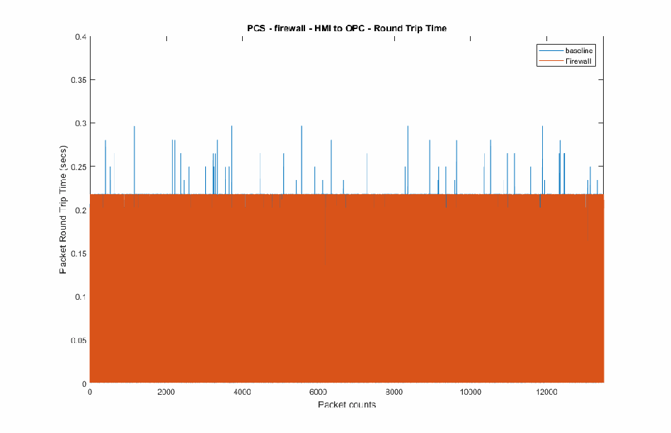
「PCS - firewall - HMI to OPC - Round Trip Time」と題した折れ線グラフです。縦軸は「Packet Round Trip Time (secs)」（パケットの往復時間、秒）で 0〜0.4、横軸は「Packet counts」（パケット数）で 0〜約 13,500（目盛りは 2000 ごと）です。凡例は「baseline」（青）と「Firewall」（橙）です。どちらの系列も 0〜約 0.22 秒の帯を密に埋めており、青の baseline には帯の上に約 0.3 秒までのとがりがときどき見られます。橙の Firewall の系列は baseline をほぼ完全に覆っています。
Figure 4-35 Packet round trip time from HMI to OPC before and after firewall rules were activated
図 4-35 ファイアウォールルールを有効にする前と後の、HMI から OPC までのパケットのラウンドトリップ時間
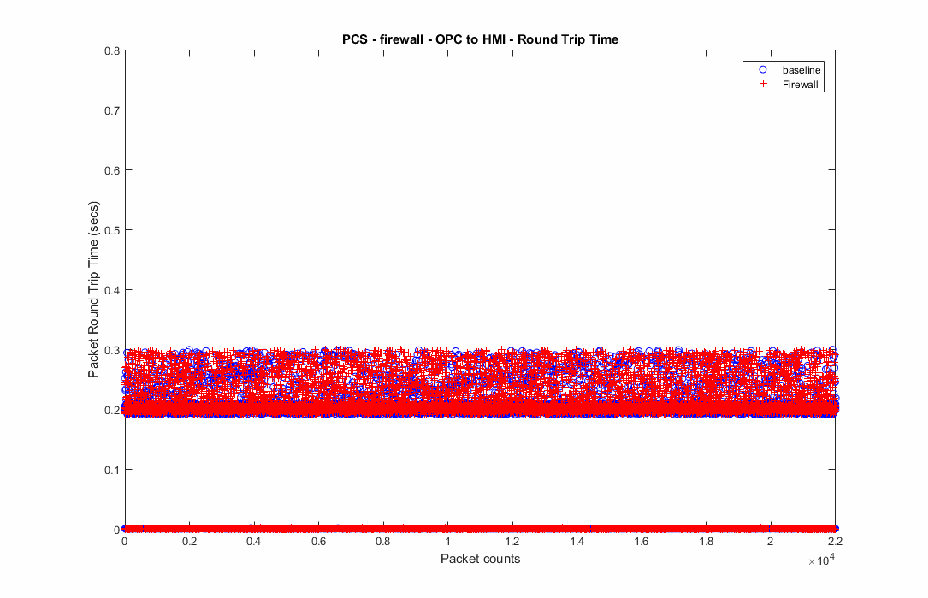
「PCS - firewall - OPC to HMI - Round Trip Time」と題した散布図です。縦軸は「Packet Round Trip Time (secs)」（パケットの往復時間、秒）で 0〜0.8、横軸は「Packet counts」（パケット数）で 0〜2.2×10^4 です。凡例は「baseline」（青の丸）と「Firewall」（赤の十字）です。どちらの系列も約 0.19〜0.3 秒の帯と、全範囲にわたる 0 の位置の点の列をなし、互いに重なっています。
Figure 4-36 Packet round trip time from OPC to HMI before and after firewall rules were activated
図 4-36 ファイアウォールルールを有効にする前と後の、OPC から HMI までのパケットのラウンドトリップ時間
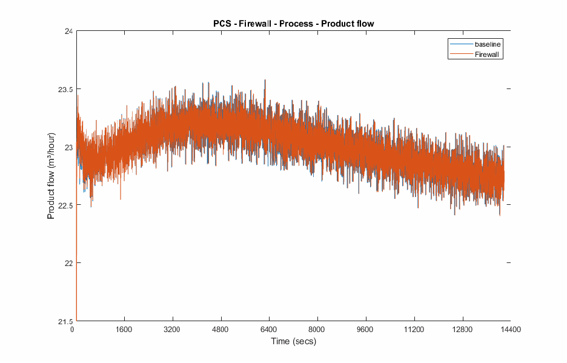
「PCS - Firewall - Process - Product flow」と題した折れ線グラフです。縦軸は「Product flow (m³/hour)」（製品の流量、立方メートル毎時）で 21.5〜24、横軸は「Time (secs)」（時間、秒）で 0〜14400（目盛りは 1600 ごと）です。凡例は「baseline」（青）と「Firewall」（橙）です。どちらの系列も約 22.5〜23.5 の間で変動し、約 22.9 から 4000〜5000 秒付近で約 23.2 まで上がり、終わりには約 22.7 まで下がります。2つの系列はほぼ完全に重なっています。開始直後に 21.5 近くまでの短い落ち込みがあります。
Figure 4-37 Manufacturing process product flow rate before and after firewall rules were activated
図 4-37 ファイアウォールルールを有効にする前と後の、製造プロセスの製品流量

「PCS - Firewall - Process - Reactor pressure」と題した折れ線グラフです。縦軸は「Reactor pressure (kPa)」（反応器の圧力、kPa）で 2650〜2850、横軸は「Time (secs)」（時間、秒）で 0〜14400（目盛りは 1600 ごと）です。凡例は「baseline」（青）と「Firewall」（橙）です。どちらの曲線も約 2800 kPa から始まり、最初の数百秒で約 2690 kPa まで急に下がった後、約 2740 まで戻り、6400〜7000 秒付近の約 2815 kPa までゆるやかに上がり、その後は約 2797〜2800 kPa で落ち着きます。2つの曲線はほぼ完全に重なっています。
Figure 4-38 Manufacturing process reactor pressure before and after firewall rules were activated
図 4-38 ファイアウォールルールを有効にする前と後の、製造プロセスの反応器圧力
4.19.7 Links to Entire Performance Measurement Data Set
4.19.7 性能測定データセット全体へのリンク
•Firewall KPI data
•ファイアウォールの KPI データ
•Firewall measurement data
•ファイアウォールの測定データ
4.20 Managed Network Interfaces
4.20 管理対象ネットワークインターフェース
4.20.1 Technical Solution Overview
4.20.1 技術ソリューションの概要
Managing network interfaces controls what network devices are plugged into switches within the manufacturing system, along with physical labeling of the connections to help with system identification and classification. Required actions will be performed directly on the exterior of the switch. Switch port in use will be labeled logically within switch console itself, along with the corresponding network cable for easy identification. All cable should be labeled/identified at the switch and at the opposite end of the network cable. Switch Port Security should be configured to restrict access to only allowed preconfigured Media Access Control (MAC) addresses devices.
ネットワークインターフェースを管理することで、製造システム内のスイッチにどのネットワークデバイスが接続されるかを制御し、システムの識別と分類に役立つよう接続に物理的なラベルを付けます。必要な作業は、スイッチの外側で直接実施します。使用中のスイッチポートには、識別しやすいよう、スイッチのコンソール内で論理的にラベルを付け、対応するネットワークケーブルにもラベルを付けます。すべてのケーブルは、スイッチ側とネットワークケーブルの反対側の端の両方でラベルを付けるか、識別できるようにすべきです。スイッチポートセキュリティは、事前に構成された許可済みのメディアアクセス制御（MAC）アドレスを持つデバイスだけにアクセスを制限するよう構成すべきです。
There is a minimal cost for labeling. The effort to implement can be high, but not difficult. The effort will be spent taking the required time to accurately identify cabling connections.
ラベル付けのコストは最小限です。実装の労力は大きくなりうるものの、難しくはありません。労力は、ケーブルの接続を正確に識別するために必要な時間に費やされます。
Most switches have built in Port security. Since this technical control is built into switches there is no additional cost for implementation. Configuration for Port security is well documented and easily configured.
ほとんどのスイッチには、ポートセキュリティが組み込まれています。この技術的管理策はスイッチに組み込まれているため、実装に追加のコストはかかりません。ポートセキュリティの構成は十分に文書化されており、簡単に構成できます。
4.20.2 Technical Capabilities Provided by Solution
4.20.2 ソリューションが提供する技術的能力
Managed Network Interfaces provides components of the following Technical Capabilities described in Section 6 of Volume 1:
管理対象ネットワークインターフェースは、第1巻の第6節で説明した、次の技術的能力の構成要素を提供します。
•Managed Network Interfaces
•管理対象ネットワークインターフェース
4.20.3 Subcategories Addressed by Implementing Solution
4.20.3 ソリューションの実装によって対処するサブカテゴリ
PR.AC-5
PR.AC-5
4.20.4 Architecture Map of Where Solution was Implemented
4.20.4 ソリューションを実装した場所のアーキテクチャマップ
![Network architecture map of the Westman process-based manufacturing system lab. Legend box: a blue padlock icon labeled "Ports lockdown". An "Internet" cloud connects to "Corporate Network" and the "Manuf. System Router/Firewall". Management zone: "Microsoft ActiveDirectory/RADIUS 10.100.2.3" on "Management LAN – 10.100.2.0/24". Manufacturing DMZ zone: "DMZ Historian 10.100.1.4" on "Manufacturing DMZ LAN - 10.100.1.0/24". Cybersecurity LAN zone ("Cybersecurity LAN - 10.100.0.0/24"): "NTP/PTP Clock 10.100.0.15", "Open-Audit 10.100.0.177", "TheHive Incident Resp. 10.100.0.5", "Nessus Vuln. Scanner 10.100.0.25", "Microsoft ActiveDirectory 10.100.0.13,17", "Symantec Antivirus 10.100.0.5", "GTB Data Loss Prev. 10.100.0.175,176", "Veeam Backup 10.100.0.10", "Graylog Syslog 10.100.0.14", "Security Onion 10.100.0.26", "Windows WSUS 10.100.0.12". Plant zone: "PCS LAN Router (OSPF) 10.100.0.40 172.16.1.1" (also labeled 10.100.2.8, 172.16.2.1 and 172.16.3.1) with two "Switch" icons; "Engineering Workstation 172.16.3.10" on "Engineering LAN – 172.16.3.0/24"; "HMI 172.16.1.4" and "Plant Controller 172.16.1.5" on "VLAN 1 – 172.16.1.0/24"; "Local Historian 172.16.2.4", "OPC Server 172.16.2.5" and "Supervisory PLC 172.16.2.102" on "VLAN 2 – 172.16.2.0/24"; the Supervisory PLC connects via "DeviceNet to Field Devices" to the "Manufacturing Process" (a screen image of the process simulation). The Ports lockdown padlock icon is shown on the two Plant "Switch" icons.](assets/ir-8183av2/p0325-figure-02.png)
Westman のプロセス型製造システムの実験環境のネットワーク構成図です。凡例: 青い南京錠のアイコンが「Ports lockdown」（ポートのロックダウン）です。「Internet」の雲が「Corporate Network」（企業ネットワーク）と「Manuf. System Router/Firewall」（製造システムのルーター／ファイアウォール）につながっています。Management（管理）区画には「Management LAN – 10.100.2.0/24」上の「Microsoft ActiveDirectory/RADIUS 10.100.2.3」、Manufacturing DMZ 区画には「Manufacturing DMZ LAN - 10.100.1.0/24」上の「DMZ Historian 10.100.1.4」があります。Cybersecurity LAN 区画（「Cybersecurity LAN - 10.100.0.0/24」）には 「NTP/PTP Clock 10.100.0.15」「Open-Audit 10.100.0.177」「TheHive Incident Resp. 10.100.0.5」「Nessus Vuln. Scanner 10.100.0.25」「Microsoft ActiveDirectory 10.100.0.13,17」「Symantec Antivirus 10.100.0.5」「GTB Data Loss Prev. 10.100.0.175,176」「Veeam Backup 10.100.0.10」「Graylog Syslog 10.100.0.14」「Security Onion 10.100.0.26」「Windows WSUS 10.100.0.12」 が並びます。Plant（工場）区画には 「PCS LAN Router (OSPF) 10.100.0.40 172.16.1.1」（10.100.2.8、172.16.2.1、172.16.3.1 の表示もあります）と2つの「Switch」があり、「Engineering LAN – 172.16.3.0/24」上に「Engineering Workstation 172.16.3.10」、「VLAN 1 – 172.16.1.0/24」上に「HMI 172.16.1.4」と「Plant Controller 172.16.1.5」、「VLAN 2 – 172.16.2.0/24」上に「Local Historian 172.16.2.4」「OPC Server 172.16.2.5」「Supervisory PLC 172.16.2.102」があります。Supervisory PLC は「DeviceNet to Field Devices」で「Manufacturing Process」（プロセスのシミュレーション画面の画像）につながります。Ports lockdown の南京錠のアイコンは、Plant 区画の2つの「Switch」に付いています。
4.20.5 Installation Instructions and Configurations
4.20.5 インストール手順と構成
The following actions were performed for implementing Managed Network Interfaces.
管理対象ネットワークインターフェースを実装するために、次の作業を実施しました。
4.20.5.1 Port Labelling:
4.20.5.1 ポートのラベル付け
Port labeling provides ability for others to understand and know what network devices belong where. Managing your switches with correct labeling and classification makes troubleshooting simpler along with improving cybersecurity.
ポートのラベル付けにより、どのネットワークデバイスがどこに属しているかを、ほかの人が理解し、把握できるようになります。スイッチを正しいラベル付けと分類で管理することで、トラブルシューティングが簡単になるとともに、サイバーセキュリティも向上します。
1.Configure Port labelling on the Allen Bradley Router and switches as follows:
1.次のようにして、Allen Bradley のルーターとスイッチでポートのラベル付けを構成します。
a.Login to the Switch / Router via web browser
a.Web ブラウザーからスイッチ／ルーターにログインします。
b.Click on Configure > Port Settings.
b.Configure > Port Settings をクリックします。
c.Click Edit on the Port to be labelled.
c.ラベルを付けるポートの Edit をクリックします。
d.Type into Description field the desired label.
d.Description フィールドに、希望するラベルを入力します。
e.Click OK to save changes and exit.
e.OK をクリックして、変更を保存し、終了します。
2.Alternatively, the cli commands for labelling the ports are:
2.代わりに、ポートにラベルを付ける CLI コマンドは、次のとおりです。
#enable
#configure terminal
(config)#Interface FastEthernet1/3
description <label>
(config)#end
#wr mem4.20.5.2 Port Security Configuration
4.20.5.2 ポートセキュリティの構成
Port security or MAC address filtering is a security method for access control. Using this method, we can blacklist, or whitelist certain devices based on their MAC address. This prevents unauthorized devices from being plugged into a network switch while trying to obtain sensitive information, which could be used for mapping out network connections for possible data exfiltration. When an unauthorized device is plugged into a protected port a warning message is logged and sent to a syslog server if supported by switch vendor.
ポートセキュリティ、または MAC アドレスフィルタリングは、アクセス制御のためのセキュリティ手法です。この手法を使うと、MAC アドレスに基づいて、特定のデバイスをブロックリストまたは許可リストに登録できます。これにより、認可されていないデバイスがネットワークスイッチに接続され、機微な情報を取得しようとすることを防ぎます。機微な情報は、データ持ち出しの可能性を探るためにネットワーク接続をマッピングするのに使われるおそれがあります。認可されていないデバイスが保護されたポートに接続されると、警告メッセージがログに記録され、スイッチのベンダーが対応していれば、syslog サーバーに送信されます。
1.Configure Port Security on the Allen Bradley Router and switches as follows:
1.次のようにして、Allen Bradley のルーターとスイッチでポートセキュリティを構成します。
a.Login to the device via web browser.
a.Web ブラウザーからデバイスにログインします。
b.Click, Configure > Security > Port Security
b.Configure > Security > Port Security をクリックします。
c.Click Edit button upon selecting the desired port requiring security.
c.セキュリティが必要なポートを選択し、Edit ボタンをクリックします。
d.Check in a box next to Enable. Click Add Learned MAC Addresses or Add the Addresses manually.
d.Enable の横のボックスにチェックを入れます。Add Learned MAC Addresses をクリックするか、アドレスを手動で追加します。
e.Click OK to save changes once MAC addresses have been added.
e.MAC アドレスを追加したら、OK をクリックして変更を保存します。
f.Change Maximum MAC Count to the required MACs being assigned to this port, if more than one MAC addresses are required to be added.
f.複数の MAC アドレスの追加が必要な場合は、Maximum MAC Count を、このポートに割り当てる必要がある MAC の数に変更します。
Snippet of the Allen Bradley Boundary Router running config in the plant:
プラントにおける Allen Bradley Boundary Router の running config の抜粋：
Interface FastEthernet1/3
description Engg LAN Workstation
switchport mode access
switchport port-security mac-address 40a8.f03d.48aw
switchport port-security
ip access-group EnggWkstn-ACL inSnippet of the Allen Bradley Switch running config in the plant network:
プラントネットワークにおける Allen Bradley Switch の running config の抜粋：
Interface FastEthernet1/1
Switchport access vlan 102
switchport mode access
switchport port-security mac-address e490.693b.c2c7
switchport port-security4.20.5.3 Disabling Unused ports
4.20.5.3 未使用ポートの無効化
1.Disable unused ports on the Allen Bradley Router and switches as follows:
1.次のようにして、Allen Bradley のルーターとスイッチで未使用のポートを無効にします。
a.Click Configure > Port Settings while on the homepage.
a.ホームページで Configure > Port Settings をクリックします。
b.Find all Operational Mode labeled as down to identify ports being disabled.
b.Operational Mode が down と表示されているポートをすべて探し、無効になっているポートを特定します。
c.Select the down ports and click Edit.
c.down のポートを選択し、Edit をクリックします。
d.Remove check for Enable from Administrative in the Edit Physical Port window. Click OK. With the port now disabled, any device plugged into this port or other disabled ports will not work.
d.Edit Physical Port ウィンドウで、Administrative の Enable のチェックを外します。OK をクリックします。これでポートが無効になり、このポートや他の無効なポートに接続されたデバイスは動作しなくなります。
Snippet from the Allen Bradley Switch running config showing disabled ports:
無効にしたポートを示す、Allen Bradley Switch の running config の抜粋：
Interface FastEthernet1/2
shutdown
Interface FastEthernet1/8
shutdown4.20.6 Highlighted Performance Impacts
4.20.6 注目すべき性能への影響
No performance measurement experiments were performed for the managed network interfaces due to their implementation method (i.e., manually disable unused network interfaces in configuration).
管理対象ネットワークインターフェースについては、その実装方法（すなわち、構成で未使用のネットワークインターフェースを手動で無効にすること）の都合上、性能測定の実験を実施しませんでした。
4.20.7 Links to Entire Performance Measurement Data Set
4.20.7 性能測定データセット全体へのリンク
N/A
N/A
4.21 Time Synchronization
4.21 時刻同期
4.21.1 Technical Solution Overview
4.21.1 技術ソリューションの概要
Time synchronization allows devices to synchronize with a reliable time source. Time synchronization is vital for system logins, event tracking and all other time sensitive events occurring with a manufacturing system.
時刻同期により、デバイスを信頼できる時刻源と同期させることができます。時刻同期は、システムへのログイン、イベントの追跡、および製造システムで発生するそのほかのすべての時刻に依存する事象にとって不可欠です。
4.21.2 Technical Capabilities Provided by Solution
4.21.2 ソリューションが提供する技術的能力
Time Synchronization provides components of the following Technical Capabilities described in Section 6 of Volume 1:
時刻同期は、第1巻の第6節で説明した、次の技術的能力の構成要素を提供します。
•Time Synchronization
•時刻同期
4.21.3 Subcategories Addressed by Implementing Solution
4.21.3 ソリューションの実装によって対処するサブカテゴリ
PR.PT-1
PR.PT-1
4.21.4 Architecture Map of Where Solution was Implemented
4.21.4 ソリューションを実装した場所のアーキテクチャマップ
![Network architecture map of the Westman process-based manufacturing system lab. There is no legend box. An "Internet" cloud connects to "Corporate Network" and the "Manuf. System Router/Firewall". Management zone: "Microsoft ActiveDirectory/RADIUS 10.100.2.3" on "Management LAN – 10.100.2.0/24". Manufacturing DMZ zone: "DMZ Historian 10.100.1.4" on "Manufacturing DMZ LAN - 10.100.1.0/24". Cybersecurity LAN zone ("Cybersecurity LAN - 10.100.0.0/24"): "NTP/PTP Clock 10.100.0.15", "Open-Audit 10.100.0.177", "TheHive Incident Resp. 10.100.0.5", "Nessus Vuln. Scanner 10.100.0.25", "Microsoft ActiveDirectory 10.100.0.13,17", "Symantec Antivirus 10.100.0.5", "GTB Data Loss Prev. 10.100.0.175,176", "Veeam Backup 10.100.0.10", "Graylog Syslog 10.100.0.14", "Security Onion 10.100.0.26", "Windows WSUS 10.100.0.12". Plant zone: "PCS LAN Router (OSPF) 10.100.0.40 172.16.1.1" (also labeled 10.100.2.8, 172.16.2.1 and 172.16.3.1) with two "Switch" icons; "Engineering Workstation 172.16.3.10" on "Engineering LAN – 172.16.3.0/24"; "HMI 172.16.1.4" and "Plant Controller 172.16.1.5" on "VLAN 1 – 172.16.1.0/24"; "Local Historian 172.16.2.4", "OPC Server 172.16.2.5" and "Supervisory PLC 172.16.2.102" on "VLAN 2 – 172.16.2.0/24"; the Supervisory PLC connects via "DeviceNet to Field Devices" to the "Manufacturing Process" (a screen image of the process simulation). Small database icons are shown on the DMZ Historian, Symantec Antivirus and Local Historian, a backup icon on Veeam Backup and an inspection icon on GTB Data Loss Prev.; the NTP/PTP Clock appears as a separate appliance icon on the Cybersecurity LAN.](assets/ir-8183av2/p0329-figure-02.png)
Westman のプロセス型製造システムの実験環境のネットワーク構成図です。凡例はありません。「Internet」の雲が「Corporate Network」（企業ネットワーク）と「Manuf. System Router/Firewall」（製造システムのルーター／ファイアウォール）につながっています。Management（管理）区画には「Management LAN – 10.100.2.0/24」上の「Microsoft ActiveDirectory/RADIUS 10.100.2.3」、Manufacturing DMZ 区画には「Manufacturing DMZ LAN - 10.100.1.0/24」上の「DMZ Historian 10.100.1.4」があります。Cybersecurity LAN 区画（「Cybersecurity LAN - 10.100.0.0/24」）には 「NTP/PTP Clock 10.100.0.15」「Open-Audit 10.100.0.177」「TheHive Incident Resp. 10.100.0.5」「Nessus Vuln. Scanner 10.100.0.25」「Microsoft ActiveDirectory 10.100.0.13,17」「Symantec Antivirus 10.100.0.5」「GTB Data Loss Prev. 10.100.0.175,176」「Veeam Backup 10.100.0.10」「Graylog Syslog 10.100.0.14」「Security Onion 10.100.0.26」「Windows WSUS 10.100.0.12」 が並びます。Plant（工場）区画には 「PCS LAN Router (OSPF) 10.100.0.40 172.16.1.1」（10.100.2.8、172.16.2.1、172.16.3.1 の表示もあります）と2つの「Switch」があり、「Engineering LAN – 172.16.3.0/24」上に「Engineering Workstation 172.16.3.10」、「VLAN 1 – 172.16.1.0/24」上に「HMI 172.16.1.4」と「Plant Controller 172.16.1.5」、「VLAN 2 – 172.16.2.0/24」上に「Local Historian 172.16.2.4」「OPC Server 172.16.2.5」「Supervisory PLC 172.16.2.102」があります。Supervisory PLC は「DeviceNet to Field Devices」で「Manufacturing Process」（プロセスのシミュレーション画面の画像）につながります。DMZ Historian、Symantec Antivirus、Local Historian には小さなデータベースのアイコン、Veeam Backup にはバックアップのアイコン、GTB Data Loss Prev. には検査のアイコンが付いています。NTP/PTP Clock は Cybersecurity LAN 上の独立した機器のアイコンで示されています。
4.21.5 Installation Instructions and Configurations
4.21.5 インストール手順と構成
Details of the NTP server implemented:
実装した NTP サーバーの詳細：
| Name | IP address | Purpose | Hardware Details |
|---|---|---|---|
| Grandmaster | 10.100.0.15 | NTP/PTP Clock | Model: Meinberg Lantime M900 |
| 名称 | IP アドレス | 目的 | ハードウェアの詳細 |
|---|---|---|---|
| Grandmaster | 10.100.0.15 | NTP/PTP クロック | モデル：Meinberg Lantime M900 |
4.21.5.1 Meinberg M900 Time Server
4.21.5.1 Meinberg M900 タイムサーバー
Industrial / Manufacturing environments typically need higher time accuracy than the ones provided by default capabilities of a typical Windows Active Directory environment. To accommodate this, an external hardware clock such as this one was implemented for higher time accuracy up to milliseconds level. This device was configured to obtain its Upstream time from the NIST Time server.
産業・製造環境では通常、一般的な Windows Active Directory 環境の標準機能が提供するものよりも高い時刻精度が必要です。これに対応するため、ミリ秒レベルまでの高い時刻精度を実現する目的で、このような外部ハードウェアクロックを実装しました。このデバイスは、上流の時刻を NIST タイムサーバーから取得するように構成しました。
4.21.5.2 NTP Configuration on the Domain Controller
4.21.5.2 ドメインコントローラーでの NTP 構成
The Active Directory Domain controller holding the PDC Emulator role 123 in the manufacturing system was configured to obtain its time from the Meinberg Lantime M900 device.
製造システム内で PDC エミュレーターの役割123 を保持している Active Directory ドメインコントローラーは、Meinberg Lantime M900 デバイスから時刻を取得するように構成しました。
Change the following registry key on the Domain Controller to have w32Time.exe sync its time from an external source IP address.
w32Time.exe が外部ソースの IP アドレスから時刻を同期するように、ドメインコントローラーの次のレジストリキーを変更します。
HKEY_LOCAL_MACHINE\SYSTEM\CurrentControlSet\Services\W32Time\Parameters\NtpServerThe image below shows our Domain Controller pointing to the IP address of Meinberg LAN Time clock
次の画像は、Meinberg LAN Time クロックの IP アドレスを指すドメインコントローラーを示しています。
［第三者の画像。第三者の著作物のため、この非公式サイトには掲載していません。原本 PDF を参照してください。］
4.21.5.3 NTP Configuration on the Member-servers
4.21.5.3 メンバーサーバーでの NTP 構成
All windows computers were joined to our Active Directory domain. Domain joined machines automatically sync their time by contacting local domain controller which is the Active Directory server.
すべての Windows コンピューターを、今回の Active Directory ドメインに参加させました。ドメインに参加したマシンは、ローカルのドメインコントローラー（Active Directory サーバー）に問い合わせることで、自動的に時刻を同期します。
4.21.5.4 NTP Configuration on Networking devices
4.21.5.4 ネットワークデバイスでの NTP 構成
All other devices such as Switches, Routers within the manufacturing system were configured to sync their time from the Meinberg M900 using NTP.
製造システム内のスイッチやルーターなど、その他のすべてのデバイスは、NTP を使用して Meinberg M900 から時刻を同期するように構成しました。
The NTP Settings on the Allen Bradley Boundary Router and Switches can be set as follows:
Allen Bradley Boundary Router とスイッチの NTP 設定は、次のように行えます。
1.Login to the web interface of the router/switch.
1.ルーター／スイッチの Web インターフェースにログインします。
2.Click on Configure > NTP
2.Configure > NTP をクリックします。
3.Click Add to add new time server.
3.Add をクリックして、新しいタイムサーバーを追加します。
4.Enter the IP address of the time source.
4.時刻源の IP アドレスを入力します。
5.Click Save
5.Save をクリックします。
6.Logout when done.
6.完了したらログアウトします。
Additional Information
追加情報
The master time reference selected should be as close to your physical location as possible. This should reduce the Off Set.
選択する基準時刻源は、物理的な所在地にできるだけ近いものにすべきです。これによりオフセットが小さくなります。
4.21.6 Highlighted Performance Impacts
4.21.6 注目すべき性能への影響
No performance measurement experiments were performed for time synchronization due to its installation in the system before the Manufacturing Profile implementation was initiated.
時刻同期については、製造プロファイルの実装を開始する前にシステムに導入済みであったため、性能測定の実験を実施しませんでした。
4.21.7 Links to Entire Performance Measurement Data Set
4.21.7 性能測定データセット全体へのリンク
N/A
N/A
4.22 System Use Monitoring
4.22 システム使用状況の監視
4.22.1 Technical Solution Overview
4.22.1 技術ソリューションの概要
System use monitoring is accomplished by multiple tools to protect manufacturing system environment from harmful activities using data loss protection, system hardening and syslog server for monitoring, store and auditing. Each tool provides a different level required to protect the manufacturing system.
データ損失防止、システムのハードニング、および監視、保存、監査を行う syslog サーバーなど、複数のツールを使用してシステム使用状況を監視し、有害な活動から製造システム環境を保護します。各ツールは、製造システムの保護に必要な異なるレベルを提供します。
Implementation effort is moderate requiring understanding of Linux and Windows systems, along with virtual machine experience.
実装の労力は中程度で、Linux と Windows のシステムに関する理解と、仮想マシンの経験が必要です。
4.22.2 Technical Capabilities Provided by Solution
4.22.2 ソリューションが提供する技術的能力
System Use Monitoring provides components of the following Technical Capabilities described in Section 6 of Volume 1:
システム使用状況の監視は、第1巻の第6節で説明した、次の技術的能力の構成要素を提供します。
•System Use Monitoring
•システム使用状況の監視
System Use Monitoring was provided by GTB Inspector, Ports and Services Lockdown, and Graylog.
システム使用状況の監視は、GTB Inspector、ポートとサービスのロックダウン、Graylog によって提供されました。
4.22.3 Subcategories Addressed by Implementing Solution
4.22.3 ソリューションの実装によって対処するサブカテゴリ
PR.AC-1, PR.DS-5, PR.MA-2, DE.CM-3
PR.AC-1, PR.DS-5, PR.MA-2, DE.CM-3
4.22.4 Architecture Map of Where Solution was Implemented
4.22.4 ソリューションを実装した場所のアーキテクチャマップ
![Network architecture map of the Westman process-based manufacturing system lab. Legend box: a red line labeled "GTB DLP". An "Internet" cloud connects to "Corporate Network" and the "Manuf. System Router/Firewall". Management zone: "Microsoft ActiveDirectory/RADIUS 10.100.2.3" on "Management LAN – 10.100.2.0/24". Manufacturing DMZ zone: "DMZ Historian 10.100.1.4" on "Manufacturing DMZ LAN - 10.100.1.0/24". Cybersecurity LAN zone ("Cybersecurity LAN 10.100.0.0/24"): "Open-Audit. 10.100.177", "TheHive Incident Resp. 10.100.0.5", "Nessus Vuln. Scanner 10.100.0.25", "Microsoft ActiveDirectory 10.100.0.13,17", "Symantec Antivirus - SEPM 10.100.0.5", "GTB Data Loss Prev. 10.100.0.175,176", "Veeam Backup & Replication 10.100.0.10", "Graylog Syslog 10.100.0.14", "Windows WSUS 10.100.0.12", "NTP/PTP Clock 10.100.0.15". Plant zone: "PCS LAN Router (OSPF) 10.100.0.40/32 172.16.1.1 172.16.3.1" (also labeled 10.100.2.8 and 172.16.2.1); "Engineering Workstation 172.16.3.10" on "Engineering LAN – 172.16.3.0/24"; "HMI 172.16.1.4" and "Plant Controller 172.16.1.5" on "Plant LAN – 172.16.1.0/24"; "Local Historian 172.16.2.14", "OPC Server 172.16.2.5" and "Supervisory PLC 172.16.2.102" on "Supervisory LAN – 172.16.2.0/24"; the Supervisory PLC connects via "DeviceNet to Field Devices" to the "Manufacturing Process" (a screen image of the process simulation). The GTB Data Loss Prev. servers are outlined in red, and red GTB DLP lines run from them along the Cybersecurity LAN, up to the Manuf. System Router/Firewall and the Corporate Network, and down through the PCS LAN Router to the Plant LAN, Engineering LAN and Supervisory LAN.](assets/ir-8183av2/p0333-figure-02.png)
Westman のプロセス型製造システムの実験環境のネットワーク構成図です。凡例: 赤い線が「GTB DLP」です。「Internet」の雲が「Corporate Network」（企業ネットワーク）と「Manuf. System Router/Firewall」（製造システムのルーター／ファイアウォール）につながっています。Management（管理）区画には「Management LAN – 10.100.2.0/24」上の「Microsoft ActiveDirectory/RADIUS 10.100.2.3」、Manufacturing DMZ 区画には「Manufacturing DMZ LAN - 10.100.1.0/24」上の「DMZ Historian 10.100.1.4」があります。Cybersecurity LAN 区画（「Cybersecurity LAN 10.100.0.0/24」）には「Open-Audit. 10.100.177」「TheHive Incident Resp. 10.100.0.5」「Nessus Vuln. Scanner 10.100.0.25」「Microsoft ActiveDirectory 10.100.0.13,17」「Symantec Antivirus - SEPM 10.100.0.5」「GTB Data Loss Prev. 10.100.0.175,176」「Veeam Backup & Replication 10.100.0.10」「Graylog Syslog 10.100.0.14」「Windows WSUS 10.100.0.12」「NTP/PTP Clock 10.100.0.15」が並びます。Plant（工場）区画には「PCS LAN Router (OSPF) 10.100.0.40/32 172.16.1.1 172.16.3.1」（10.100.2.8 と 172.16.2.1 の表示もあります）があり、「Engineering LAN – 172.16.3.0/24」上に「Engineering Workstation 172.16.3.10」、「Plant LAN – 172.16.1.0/24」上に「HMI 172.16.1.4」と「Plant Controller 172.16.1.5」、「Supervisory LAN – 172.16.2.0/24」上に「Local Historian 172.16.2.14」「OPC Server 172.16.2.5」「Supervisory PLC 172.16.2.102」があります。Supervisory PLC は「DeviceNet to Field Devices」で「Manufacturing Process」（プロセスのシミュレーション画面の画像）につながります。GTB Data Loss Prev. のサーバーは赤い枠で囲まれ、そこから赤い GTB DLP の線が Cybersecurity LAN に沿って伸び、上は Manuf. System Router/Firewall と Corporate Network へ、下は PCS LAN Router を通って Plant LAN、Engineering LAN、Supervisory LAN へ通じています。
![Network architecture map of the Westman process-based manufacturing system lab. Legend box: an orange line labeled "Graylog Syslog". An "Internet" cloud connects to "Corporate Network" and the "Manuf. System Router/Firewall". Management zone: "Microsoft ActiveDirectory/RADIUS 10.100.2.3" on "Management LAN – 10.100.2.0/24". Manufacturing DMZ zone: "DMZ Historian 10.100.1.4" on "Manufacturing DMZ LAN - 10.100.1.0/24". Cybersecurity LAN zone ("Cybersecurity LAN 10.100.0.0/24"): "NTP/PTP Clock 10.100.0.15", "TheHive Incident Resp. 10.100.0.5", "Nessus Vuln. Scanner 10.100.0.25", "Microsoft ActiveDirectory 10.100.0.13,17", "Symantec Antivirus - SEPM 10.100.0.5", "GTB Data Loss Prev. 10.100.0.175,176", "Veeam Backup & Replication 10.100.0.10", "Graylog Syslog 10.100.0.14", "Windows WSUS 10.100.0.12". Plant zone: "PCS LAN Router 10.100.0.40 172.16.3.1 172.16.1.1" (also labeled 10.100.2.8 and 172.16.2.1); "Engineering Workstation 172.16.3.10" on "Engineering LAN – 172.16.3.0/24"; "HMI 172.16.1.4" and "Plant Controller 172.16.1.5" on "Plant LAN– 172.16.1.0/24"; "Local Historian 172.16.2.4", "OPC Server 172.16.2.5" and "Supervisory PLC 172.16.2.102" on "Supervisory LAN – 172.16.2.0/24"; the Supervisory PLC connects via "DeviceNet to Field Devices" to the "Manufacturing Process" (a screen image of the process simulation). The Graylog Syslog server is outlined in orange, and orange Graylog Syslog lines connect it along the Cybersecurity LAN to the other Cybersecurity LAN servers, to the DMZ Historian, and through the PCS LAN Router to the Engineering Workstation, HMI, Plant Controller, Local Historian and OPC Server.](assets/ir-8183av2/p0334-figure-01.png)
Westman のプロセス型製造システムの実験環境のネットワーク構成図です。凡例: 橙色の線が「Graylog Syslog」です。「Internet」の雲が「Corporate Network」（企業ネットワーク）と「Manuf. System Router/Firewall」（製造システムのルーター／ファイアウォール）につながっています。Management（管理）区画には「Management LAN – 10.100.2.0/24」上の「Microsoft ActiveDirectory/RADIUS 10.100.2.3」、Manufacturing DMZ 区画には「Manufacturing DMZ LAN - 10.100.1.0/24」上の「DMZ Historian 10.100.1.4」があります。Cybersecurity LAN 区画（「Cybersecurity LAN 10.100.0.0/24」）には「NTP/PTP Clock 10.100.0.15」「TheHive Incident Resp. 10.100.0.5」「Nessus Vuln. Scanner 10.100.0.25」「Microsoft ActiveDirectory 10.100.0.13,17」「Symantec Antivirus - SEPM 10.100.0.5」「GTB Data Loss Prev. 10.100.0.175,176」「Veeam Backup & Replication 10.100.0.10」「Graylog Syslog 10.100.0.14」「Windows WSUS 10.100.0.12」が並びます。Plant（工場）区画には「PCS LAN Router 10.100.0.40 172.16.3.1 172.16.1.1」（10.100.2.8 と 172.16.2.1 の表示もあります）があり、「Engineering LAN – 172.16.3.0/24」上に「Engineering Workstation 172.16.3.10」、「Plant LAN– 172.16.1.0/24」上に「HMI 172.16.1.4」と「Plant Controller 172.16.1.5」、「Supervisory LAN – 172.16.2.0/24」上に「Local Historian 172.16.2.4」「OPC Server 172.16.2.5」「Supervisory PLC 172.16.2.102」があります。Supervisory PLC は「DeviceNet to Field Devices」で「Manufacturing Process」（プロセスのシミュレーション画面の画像）につながります。Graylog Syslog のサーバーは橙色の枠で囲まれ、橙色の Graylog Syslog の線が Cybersecurity LAN に沿ってほかの Cybersecurity LAN のサーバーへ、また DMZ Historian へ、さらに PCS LAN Router を通って Engineering Workstation、HMI、Plant Controller、Local Historian、OPC Server へつながっています。
4.22.5 Installation Instructions and Configurations
4.22.5 インストール手順と構成
System use monitoring was implemented using a combination of tools such as GTB Inspector, Graylog and native Windows Server capabilities such as enabling auditing and restricting administrative user accounts.
システム使用状況の監視は、GTB Inspector、Graylog、および、監査の有効化や管理者ユーザーアカウントの制限などの Windows Server 標準の機能といった、ツールの組み合わせを使用して実装しました。
GTB DLP: See Section 4.15.5 for instructions.
GTB DLP：手順は 4.15.5 節を参照してください。
Graylog: See Section 4.16.5 for instructions
Graylog：手順は 4.16.5 節を参照してください。
4.22.5.1 Enabling Auditing on Windows
4.22.5.1 Windows での監査の有効化
Auditing Logon events
ログオンイベントの監査
a.Launch the Group Policy manager on the Domain controller by running gpedit.msc.
a.gpedit.msc を実行して、ドメインコントローラーでグループポリシーマネージャーを起動します。
b.Edit either the Default Domain Controller Group Policy or create a new group policy object and link it to appropriate servers OU.
b.Default Domain Controller Group Policy を編集するか、新しいグループポリシーオブジェクトを作成して、適切なサーバーの OU にリンクします。
c.Navigate to Computer Configuration > Polices> Windows Settings >Security Settings > Local Polices > Audit Policy
c.Computer Configuration > Policies > Windows Settings > Security Settings > Local Policies > Audit Policy に移動します。
d.Change the Audit Account logon events, Audit logon events, Audit Object access settings to reflect Success, Failure. See image below for reference.
d.Audit Account logon events、Audit logon events、Audit Object access の設定を、Success と Failure の両方を記録するように変更します。参考として、以下の画像を参照してください。
［第三者の画像。第三者の著作物のため、この非公式サイトには掲載していません。原本 PDF を参照してください。］
Auditing Process Termination
プロセス終了の監査
a.Navigate to Computer Configuration > Polices > Windows Settings > Security Settings > Advanced Audit Configuration
a.Computer Configuration > Policies > Windows Settings > Security Settings > Advanced Audit Configuration に移動します。
b.Change Detailed Tracking and Logon/Logoff to Success / Success, Failure (See Image)
b.Detailed Tracking を Success に、Logon/Logoff を Success と Failure の両方に変更します（画像を参照）。
［第三者の画像。第三者の著作物のため、この非公式サイトには掲載していません。原本 PDF を参照してください。］
4.22.5.2 Windows - Restricting Administrative Users:
4.22.5.2 Windows - 管理者ユーザーの制限
Review the local Administrators group on each system and add only those accounts that needed to have Administrative privileges on the system.
各システムのローカルの Administrators グループを確認し、そのシステムで管理者権限が必要なアカウントだけを追加します。
For instance: An AD service account opc-admin was created to run OPC-server services and was granted Administrative privileges on the 2 servers below:
たとえば、OPC サーバーのサービスを実行するために AD サービスアカウント opc-admin を作成し、次の2台のサーバーで管理者権限を付与しました。
•OPC Server
•OPC Server
•Controller Server
•Controller Server
4.22.5.3 Restricting Access to the PLC
4.22.5.3 PLC へのアクセスの制限
Remote Access to PLC was regulated through the Firewall to allow access only from the Engineering workstation.
PLC へのリモートアクセスは、Engineering ワークステーションからのアクセスのみを許可するように、ファイアウォールで制御しました。
4.22.6 Highlighted Performance Impacts
4.22.6 注目すべき性能への影響
No performance measurement experiments were performed for the installation of GTB into the PCS due to its location within the network topology. No manufacturing process components across the boundary on a regular basis while the system is operational.
GTB の PCS への導入については、ネットワークトポロジー内での位置の都合上、性能測定実験を実施しませんでした。システムの稼働中に製造プロセスの構成要素が境界を越えることについては、原文の記述が欠けています。
No performance measurement experiments were performed for the use of the Graylog due to its typical installation and usage location (i.e., external to the manufacturing system).
Graylog の使用については、その通常のインストール場所と使用場所（製造システムの外部）の都合上、性能測定の実験を実施しませんでした。
4.22.7 Links to Entire Performance Measurement Data Set
4.22.7 性能測定データセット全体へのリンク
N/A
N/A
4.23 Ports and Services Lockdown
4.23 ポートとサービスのロックダウン
4.23.1 Technical Solution Overview
4.23.1 技術ソリューションの概要
Ports and services lockdown solutions enable a manufacturer to discover and disable nonessential logical network ports and services. A logical port is a number assigned to a “logical” connection. Port numbers are assigned to a service, which is helpful to TCP/IP in identifying what ports it must send traffic to. Hackers use port scanners and vulnerability scanners to identify open ports on servers. By revealing which ports are open, the hacker can identify what kind of services are running and the type of system. Closing unnecessary ports by uninstalling unnecessary programs considerably reduces the attack surface. These actions need to be performed manually.
ポートとサービスのロックダウンのソリューションにより、製造者は、必須ではない論理ネットワークポートとサービスを発見し、無効にできます。論理ポートとは、「論理的な」接続に割り当てられた番号です。ポート番号はサービスに割り当てられており、TCP/IP が、どのポートにトラフィックを送る必要があるかを識別するのに役立ちます。ハッカーは、ポートスキャナーや脆弱性スキャナーを使用して、サーバー上の開いているポートを特定します。どのポートが開いているかが明らかになると、ハッカーは、どの種類のサービスが動作しているか、およびシステムの種類を特定できます。不要なプログラムをアンインストールして不要なポートを閉じることで、攻撃対象領域が大幅に縮小されます。これらの作業は手動で実施する必要があります。
Native OS capabilities, Open-Audit and Nessus scanner were leveraged to inventory list of ports and applications currently running on each device of the plant.
プラントの各デバイスで現在動作しているポートとアプリケーションの一覧を作成するため、OS の標準機能、Open-Audit、および Nessus スキャナーを活用しました。
4.23.2 Technical Capabilities Provided by Solution
4.23.2 ソリューションが提供する技術的能力
Ports and Services Lockdown provides components of the following Technical Capabilities described in Section 6 of Volume 1:
ポートとサービスのロックダウンは、第1巻の第6節で説明した、次の技術的能力の構成要素を提供します。
•Ports and Services Lockdown
•ポートとサービスのロックダウン
4.23.3 Subcategories Addressed by Implementing Solution
4.23.3 ソリューションの実装によって対処するサブカテゴリ
PR.IP-1, PR.PT-3
PR.IP-1, PR.PT-3
4.23.4 Architecture Map of Where Solution was Implemented
4.23.4 ソリューションを実装した場所のアーキテクチャマップ
![Architecture map of the process-based manufacturing system lab network. Legend: Ports & Services lockdown. The Internet connects through the Corporate Network to the Manuf. System Router/Firewall, which links three areas: Management (Microsoft ActiveDirectory/RADIUS 10.100.2.3 on Management LAN – 10.100.2.0/24); Manufacturing DMZ (DMZ Historian 10.100.1.4 on Manufacturing DMZ LAN – 10.100.1.0/24); and Cybersecurity LAN – 10.100.0.0/24 with NTP/PTP Clock 10.100.0.15, Open-Audit 10.100.0.177, TheHive Incident Resp. 10.100.0.5, Nessus Vuln. Scanner 10.100.0.25, Microsoft ActiveDirectory 10.100.0.13,17, Symantec Antivirus 10.100.0.5, GTB Data Loss Prev. 10.100.0.175,176, Veeam Backup 10.100.0.10, Graylog Syslog 10.100.0.14, Security Onion 10.100.0.26 and Windows WSUS 10.100.0.12. The Plant area is behind the PCS LAN Router (OSPF) 10.100.0.40 / 172.16.1.1 (10.100.2.8, 172.16.2.1, 172.16.3.1) with switches: Engineering Workstation 172.16.3.10 on Engineering LAN – 172.16.3.0/24; HMI 172.16.1.4 and Plant Controller 172.16.1.5 on VLAN 1 – 172.16.1.0/24; Local Historian 172.16.2.4, OPC Server 172.16.2.5 and Supervisory PLC 172.16.2.102 on VLAN 2 – 172.16.2.0/24, with DeviceNet to Field Devices of the Manufacturing Process. The Ports & Services lockdown symbol is placed on the Management, Cybersecurity LAN and Plant switches and on the Plant hosts (Engineering Workstation, HMI, Plant Controller, Local Historian, OPC Server, Supervisory PLC).](assets/ir-8183av2/p0339-figure-02.png)
プロセス型製造システムの実験室ネットワークのアーキテクチャマップです。凡例：Ports & Services lockdown。インターネットはCorporate Networkを経由してManuf. System Router/Firewallに接続し、そこから次の3つの区域につながっています。Management（Management LAN – 10.100.2.0/24上のMicrosoft ActiveDirectory/RADIUS 10.100.2.3）；Manufacturing DMZ（Manufacturing DMZ LAN – 10.100.1.0/24上のDMZ Historian 10.100.1.4）；Cybersecurity LAN – 10.100.0.0/24（NTP/PTP Clock 10.100.0.15、Open-Audit 10.100.0.177、TheHive Incident Resp. 10.100.0.5、Nessus Vuln. Scanner 10.100.0.25、Microsoft ActiveDirectory 10.100.0.13,17、Symantec Antivirus 10.100.0.5、GTB Data Loss Prev. 10.100.0.175,176、Veeam Backup 10.100.0.10、Graylog Syslog 10.100.0.14、Security Onion 10.100.0.26、Windows WSUS 10.100.0.12）。Plant区域はPCS LAN Router (OSPF) 10.100.0.40 / 172.16.1.1（10.100.2.8、172.16.2.1、172.16.3.1）の背後にあり、次のスイッチがあります。Engineering LAN – 172.16.3.0/24上のEngineering Workstation 172.16.3.10；VLAN 1 – 172.16.1.0/24上のHMI 172.16.1.4およびPlant Controller 172.16.1.5；VLAN 2 – 172.16.2.0/24上のLocal Historian 172.16.2.4、OPC Server 172.16.2.5、Supervisory PLC 172.16.2.102。製造工程のフィールド機器とはDeviceNetで接続しています。Ports & Services lockdownの記号は、Management、Cybersecurity LAN、Plantの各スイッチ、およびPlantのホスト（Engineering Workstation、HMI、Plant Controller、Local Historian、OPC Server、Supervisory PLC）に配置されています。
4.23.5 Installation Instructions and Configurations
4.23.5 インストール手順と構成
The following steps were performed on the Plant Infrastructure as part of Ports and Services Lockdown.
ポートとサービスのロックダウンの一環として、プラントのインフラストラクチャで次の手順を実施しました。
4.23.5.1 Removal of Unwanted programs from Windows systems:
4.23.5.1 Windows システムからの不要なプログラムの削除
The following guidelines can be used to identify unwanted programs for removal:
削除対象の不要なプログラムを特定するために、次の指針を使用できます。
1.Perform a software inventory of each system using Open-Audit. Review the reports to identify a list of unwanted programs and uninstall them. This includes some software that comes by default with the OS.
1.Open-Audit を使用して、各システムのソフトウェアインベントリを実施します。レポートを確認して、不要なプログラムの一覧を特定し、アンインストールします。これには、OS に標準で付属している一部のソフトウェアも含まれます。
2.Use Netstat utility to gather information about which applications are running or using which TCP/IP ports on each system
For instance: netstat -aon | more will generate a list of processes and the associated process identifier (PID)
2.Netstat ユーティリティを使用して、各システムで、どのアプリケーションが動作しているか、またはどの TCP/IP ポートを使用しているかに関する情報を収集します。
たとえば、netstat -aon | more は、プロセスと、関連するプロセス識別子（PID）の一覧を生成します。
![Administrator: Command Prompt window. "Microsoft Windows [Version 6.1.7601] Copyright (c) 2009 Microsoft Corporation. All rights reserved. C:\Users\Administrator>netstat -aon | more". Active Connections table with columns Proto, Local Address, Foreign Address, State, PID; all rows are TCP, foreign address 0.0.0.0:0, state LISTENING: 0.0.0.0:135 PID 976 (highlighted), :445 PID 4, :1332 PID 2552, :3060 PID 3844, :3389 PID 1412, :4241 PID 2756, :5241 PID 2812, :5357 PID 4, :6000 PID 1204, :6002 PID 2892, :6160 PID 8288, :6183 PID 8532, :6185 PID 8532, :7001 PID 2856, :7002 PID 2856, :8082 PID 2664, :9395 PID 8532.](assets/ir-8183av2/p0340-figure-02.png)
管理者：コマンドプロンプトのウィンドウ。「Microsoft Windows [Version 6.1.7601] Copyright (c) 2009 Microsoft Corporation. All rights reserved. C:\Users\Administrator>netstat -aon | more」。Active Connectionsの表にはProto、Local Address、Foreign Address、State、PIDの列があります。すべてTCPで、Foreign Addressは0.0.0.0:0、StateはLISTENINGです。Local AddressとPIDは、0.0.0.0:135（PID 976、強調表示）、:445（PID 4）、:1332（PID 2552）、:3060（PID 3844）、:3389（PID 1412）、:4241（PID 2756）、:5241（PID 2812）、:5357（PID 4）、:6000（PID 1204）、:6002（PID 2892）、:6160（PID 8288）、:6183（PID 8532）、:6185（PID 8532）、:7001（PID 2856）、:7002（PID 2856）、:8082（PID 2664）、:9395（PID 8532）です。
3.Use the PID from the above output with the Windows Task Manager for further analysis. Within Task Manager (Windows 7), enable the PID column by clicking on View > Select Columns.
3.上記の出力の PID を、Windows タスクマネージャーでさらに分析するために使用します。タスクマネージャー（Windows 7）で、View > Select Columns をクリックして、PID 列を有効にします。
4.Use Show Processes for All Users to search for the PID in the list. To end that process, Right Click > Open File Location or Go to Service(s) options to control the process or stop it.
4.Show Processes for All Usersを使用して、一覧からPIDを探します。そのプロセスを終了するには、右クリックし、Open File LocationまたはGo to Service(s)を選択して、プロセスを制御するか停止します。
［第三者の画像。第三者の著作物のため、この非公式サイトには掲載していません。原本 PDF を参照してください。］
5.Other alternatives are using Resource Monitor (resmon.exe) and TCPView from SysInternals. See the image below of TCPView for reference.
5.その他の方法としては、SysInternals のリソースモニター（resmon.exe）と TCPView を使用する方法があります。参考として、以下の TCPView の画像を参照してください。
［第三者の画像。第三者の著作物のため、この非公式サイトには掲載していません。原本 PDF を参照してください。］
4.23.5.2 Disabling of Unsecure services on Network Devices
4.23.5.2 ネットワークデバイスでのセキュアでないサービスの無効化
Use the following guidelines to disable unsecure services on all Allen Bradley devices of the Plant:
プラントのすべての Allen Bradley デバイスで、セキュアでないサービスを無効にするには、次の指針を使用します。
1.Disable unsecure services such as Telnet, SNMP (v1 and v2). If SNMP is required, change the default community string or use SNMP v3.
1.Telnet、SNMP（v1 と v2）などのセキュアでないサービスを無効にします。SNMP が必要な場合は、デフォルトのコミュニティ文字列を変更するか、SNMP v3 を使用します。
2.Set a password for enable mode using the following commands for reference
2.参考として、次のコマンドを使用して、enable モードのパスワードを設定します。
#enable
#configure terminal
(config)#enable secret <password>4.23.5.3 Restrict ssh access
4.23.5.3 ssh アクセスの制限
Run the following Cisco commands to restrict ssh access from select few networks.
次の Cisco コマンドを実行して、いくつかの特定のネットワークからの ssh アクセスを制限します。
#enable
#configure terminal
(config)#access-list 1 permit 172.16.0.0 0.0.255.255
(config)#line vty 0 15
(config)#access-class 1 in4.23.5.4 Hardening the PLC
4.23.5.4 PLC のハードニング
Follow these actions to harden the PLC.
PLC をハードニングするには、次の作業を行います。
1.Disable unsecure services such as Telnet, SNMP and HTTP.
1.Telnet、SNMP、HTTP などのセキュアでないサービスを無効にします。
2.Use Firewall rules to restrict Remote Access to the PLC from only the Engineering Workstation.
2.ファイアウォールルールを使用して、PLC へのリモートアクセスを、Engineering Workstation からのみに制限します。
4.23.6 Highlighted Performance Impacts
4.23.6 注目すべき性能への影響
No performance measurement experiments were performed for the managed network interfaces due to their implementation method (i.e., manually disabled network ports and removed unwanted Windows programs and services).
管理対象ネットワークインターフェースについては、その実装方法（すなわち、ネットワークポートを手動で無効にし、不要な Windows プログラムとサービスを削除すること）の都合上、性能測定の実験を実施しませんでした。
4.23.7 Links to Entire Performance Measurement Data Set
4.23.7 性能測定データセット全体へのリンク
N/A
N/A
4.24 Media Protection
4.24 媒体の保護
4.24.1 Technical Solution Overview
4.24.1 技術ソリューションの概要
Hardware-based port locks provide a low-cost solution for protecting USB ports. Implementation and ease of use provide for quick install and easy removal. USB Port locks provide a simple yet effective solution to restrict USB use. Once USB Port lock has been inserted and engaged there is no way of removing the lock device without damaging the USB port unless a key is used. Each USB Port lock can block up to two ports. These ports are the inserted port, and the port directly to either side depending on the blocking plate direction. USB Port Lock can be purchased with a collar that protects attached USB Mice and Keyboards from removal without prior approval.
ハードウェアベースのポートロックは、USB ポートを保護するための低コストなソリューションを提供します。実装と使いやすさの面で、素早く取り付けられ、簡単に取り外せます。USB ポートロックは、USB の使用を制限するための、シンプルでありながら効果的なソリューションを提供します。USB ポートロックを挿入して固定した後は、鍵を使用しない限り、USB ポートを損傷せずにロックデバイスを取り外す方法はありません。各 USB ポートロックは、最大2つのポートをブロックできます。これらのポートは、ロックを挿入したポートと、ブロック板の向きに応じて、その左右いずれか直近のポートです。USB ポートロックは、接続された USB マウスやキーボードを、事前の承認なしに取り外されることから保護するカラー付きのものも購入できます。
4.24.2 Technical Capabilities Provided by Solution
4.24.2 ソリューションが提供する技術的能力
Media Protection provides components of the following Technical Capabilities described in Section 6 of Volume 1:
媒体保護は、第1巻の第6節で説明した、次の技術的能力の構成要素を提供します。
•Media Protection
•媒体保護
4.24.3 Subcategories Addressed by Implementation
4.24.3 実装によって対処するサブカテゴリ
PR.PT-2
PR.PT-2
4.24.4 Architecture Map of Where Solution was Implemented
4.24.4 ソリューションを実装した場所のアーキテクチャマップ
![Architecture map of the process-based manufacturing system lab network. Legend: USB Port locks. The Internet connects through the Corporate Network to the Manuf. System Router/Firewall, which links: Management (Microsoft ActiveDirectory/RADIUS 10.100.2.3 on Management LAN – 10.100.2.0/24); Manufacturing DMZ (DMZ Historian 10.100.1.4 on Manufacturing DMZ LAN – 10.100.1.0/24); and Cybersecurity LAN 10.100.0.0/24 with Open-Audit 10.100.0.177, TheHive Incident Resp. 10.100.0.5, Nessus Vuln. Scanner 10.100.0.25, Microsoft ActiveDirectory 10.100.0.13,17, Symantec Antivirus - SEPM 10.100.0.5, GTB Data Loss Prev. 10.100.0.175,176, Veeam Backup & Replication 10.100.0.10, Graylog Syslog 10.100.0.14, Windows WSUS 10.100.0.12 and NTP/PTP Clock 10.100.0.15. The Plant is behind the PCS LAN Router 10.100.0.40/24, 10.100.3.1: Engineering Workstation 172.16.3.10 on Engineering LAN – 172.16.3.0/24; HMI 172.16.1.4 and Plant Controller 172.16.1.5 on Control LAN – 172.16.1.0/24; Local Historian 172.16.2.4, OPC Server 172.16.2.5 and Supervisory PLC 172.16.2.102 on Supervisory LAN – 172.16.2.0/24, with DeviceNet to Field Devices of the Manufacturing Process. The USB port lock symbol is placed on the Management and DMZ servers, the Plant router, the Engineering Workstation, HMI, Plant Controller, Local Historian, OPC Server and Supervisory PLC.](assets/ir-8183av2/p0344-figure-02.png)
プロセス型製造システムの実験室ネットワークのアーキテクチャマップです。凡例：USBポートロック。インターネットはCorporate Networkを経由してManuf. System Router/Firewallに接続し、そこからManagement（Management LAN – 10.100.2.0/24上のMicrosoft ActiveDirectory/RADIUS 10.100.2.3）、Manufacturing DMZ（Manufacturing DMZ LAN – 10.100.1.0/24上のDMZ Historian 10.100.1.4）、Cybersecurity LAN 10.100.0.0/24（Open-Audit 10.100.0.177、TheHive Incident Resp. 10.100.0.5、Nessus Vuln. Scanner 10.100.0.25、Microsoft ActiveDirectory 10.100.0.13,17、Symantec Antivirus - SEPM 10.100.0.5、GTB Data Loss Prev. 10.100.0.175,176、Veeam Backup & Replication 10.100.0.10、Graylog Syslog 10.100.0.14、Windows WSUS 10.100.0.12、NTP/PTP Clock 10.100.0.15）につながっています。PlantはPCS LAN Router 10.100.0.40/24、10.100.3.1の背後にあり、Engineering LAN – 172.16.3.0/24上にEngineering Workstation 172.16.3.10、Control LAN – 172.16.1.0/24上にHMI 172.16.1.4とPlant Controller 172.16.1.5、Supervisory LAN – 172.16.2.0/24上にLocal Historian 172.16.2.4、OPC Server 172.16.2.5、Supervisory PLC 172.16.2.102があります。製造工程のフィールド機器とはDeviceNetで接続しています。USBポートロックの記号は、ManagementとDMZのサーバー、Plantのルーター、Engineering Workstation、HMI、Plant Controller、Local Historian、OPC Server、Supervisory PLCに配置されています。
4.24.5 Installation Instructions and Configurations
4.24.5 インストール手順と構成
Insert USB Port lock then push locking button in to secure. Kensington provides inserts to block multiple ports including locks designed for securing USB Keyboards and Mice.
USB ポートロックを挿入し、ロックボタンを押し込んで固定します。Kensington は、USB キーボードやマウスを固定するように設計されたロックを含む、複数のポートをブロックするためのインサートを提供しています。
Patience is required when using this product so as not to inadvertently damage the USB port.
USBポートを誤って損傷しないよう、この製品を使用する際は慎重さが必要です。
4.24.6 Highlighted Performance Impacts
4.24.6 注目すべき性能への影響
No performance measurement experiments were performed for the USB port locks due to their implementation method (i.e., physically restricting access to USB ports).
USBポートロックは実装方法（すなわち、USBポートへのアクセスを物理的に制限する方法）を理由として、性能測定実験の対象外としました。
4.24.7 Links to Entire Performance Measurement Data Set
4.24.7 性能測定データセット全体へのリンク
N/A
N/A
Appendix A - Acronyms and Abbreviations
付録A - 頭字語および略語
Selected acronyms and abbreviations used in this document are defined below.
本書で使用する主な略語を、以下に定義します。
| AAA | Authentication, Authorization, and Accounting |
|---|---|
| ACL | Access Control List |
| AD | Active Directory |
| API | Application Programming Interface |
| ARP | Address Resolution Protocol |
| AV | Anti-Virus |
| CCN | Credit Card Number |
| CD | Compact Disk |
| CEO | Chief Executive Officer |
| COTS | Commercial Off-The-Shelf |
| CSET | Cyber Security Evaluation Tool |
| CSF | Cybersecurity Framework |
| DC | Domain Controller |
| DCS | Distributed Control System |
| DHCP | Dynamic Host Configuration Protocol |
| DHS | Department of Homeland Security |
| DLP | Data Loss Prevention |
| DMZ | Demilitarized Zone |
| DNS | Domain Name System |
| DS | Domain Services |
| EFS | Encrypted File System |
| FIPS | Federal Information Processing Standards |
| FTP | File Transfer Protocol |
| GID | Generator ID |
| HIDS | Host Intrusion Detection System |
| HMI | Human Machine Interface |
| HR | Human Resources |
| HTTP | Hypertext Transfer Protocol |
| HTTPS | Hypertext Transfer Protocol Secure |
| HVAC | Heating, Ventilation, and Air Conditioning |
| ICMP | Internet Control Message Protocol |
| ICS | Industrial Control System |
| ICS-CERT | Industrial Control Systems Cyber Emergency Response Team |
| ICSJWG | Industrial Control System Joint Working Group |
| IDE | Integrated Drive Electronics |
| AAA | 認証、認可、会計 |
|---|---|
| ACL | アクセス制御リスト |
| AD | Active Directory |
| API | アプリケーションプログラミングインターフェース |
| ARP | アドレス解決プロトコル |
| AV | ウイルス対策 |
| CCN | クレジットカード番号 |
| CD | コンパクトディスク |
| CEO | 最高経営責任者 |
| COTS | 市販の既製品 |
| CSET | サイバーセキュリティ評価ツール |
| CSF | サイバーセキュリティフレームワーク |
| DC | ドメインコントローラー |
| DCS | 分散制御システム |
| DHCP | 動的ホスト構成プロトコル |
| DHS | 国土安全保障省 |
| DLP | データ損失防止 |
| DMZ | 非武装地帯 |
| DNS | ドメインネームシステム |
| DS | ドメインサービス |
| EFS | 暗号化ファイルシステム |
| FIPS | 連邦情報処理標準 |
| FTP | ファイル転送プロトコル |
| GID | ジェネレーターID |
| HIDS | ホスト型侵入検知システム |
| HMI | ヒューマンマシンインターフェース |
| HR | 人事 |
| HTTP | ハイパーテキスト転送プロトコル |
| HTTPS | ハイパーテキスト転送プロトコルセキュア |
| HVAC | 暖房、換気、空調 |
| ICMP | インターネット制御メッセージプロトコル |
| ICS | 産業用制御システム |
| ICS-CERT | 産業用制御システムサイバー緊急対応チーム |
| ICSJWG | 産業用制御システム合同作業部会 |
| IDE | 統合ドライブエレクトロニクス |
| IDS | Intrusion Detection System |
|---|---|
| IEEE | Institute of Electrical and Electronics Engineers |
| IG | Implementation Guide |
| IP | Internet Protocol |
| ISA | The International Society of Automation |
| ISE | Identity Services Engine |
| ISO | International Organization for Standardization |
| IT | Information Technology |
| KPI | Key Performance Indicator |
| LAN | Local Area Network |
| LDAP | Lightweight Directory Access Protocol |
| LDAPS | Secure LDAP |
| MAC | Media Access Control |
| MFG | Manufacturing |
| MGMT | Management |
| NAT | Network Address Translation |
| NCCIC | National Cybersecurity and Communications Integration Center |
| NETBIOS | Network Basic Input/Output System |
| NIDS | Network Intrusion Detection System |
| NIST | National Institute of Standards and Technology |
| NISTIR | National Institute of Standards and Technology Internal Report |
| NPS | Network Policy Server |
| NSA | National Security Agency |
| NTFS | New Technology File System |
| NTP | Network Time Protocol |
| NVD | National Vulnerability Database |
| OPC | Open Platform Communications |
| OS | Operating System |
| OSSEC | Open Source HIDS SECurity |
| OT | Operational Technology |
| PC | Personal Computer |
| PCS | Process Control System |
| PLC | Programmable Logic Controller |
| PPD | Presidential Policy Directive |
| PPP | Point to Point protocol |
| PPTP | Point to Point tunneling protocol |
| PTP | Precision Time Protocol |
| RDP | Remote Desktop Protocol |
| SCADA | Supervisory Control and Data Acquisition |
| IDS | 侵入検知システム |
|---|---|
| IEEE | 電気電子技術者協会 |
| IG | 実装ガイド |
| IP | インターネットプロトコル |
| ISA | 国際オートメーション学会 |
| ISE | Identity Services Engine |
| ISO | 国際標準化機構 |
| IT | 情報技術 |
| KPI | 主要業績評価指標 |
| LAN | ローカルエリアネットワーク |
| LDAP | Lightweight Directory Access Protocol |
| LDAPS | セキュアLDAP |
| MAC | メディアアクセス制御 |
| MFG | 製造 |
| MGMT | 管理 |
| NAT | ネットワークアドレス変換 |
| NCCIC | 国家サイバーセキュリティ・通信統合センター |
| NETBIOS | ネットワーク基本入出力システム |
| NIDS | ネットワーク型侵入検知システム |
| NIST | 米国国立標準技術研究所 |
| NISTIR | 米国国立標準技術研究所内部報告書 |
| NPS | ネットワークポリシーサーバー |
| NSA | 国家安全保障局 |
| NTFS | 新技術ファイルシステム |
| NTP | ネットワークタイムプロトコル |
| NVD | 国家脆弱性データベース |
| OPC | Open Platform Communications |
| OS | オペレーティングシステム |
| OSSEC | Open Source HIDS SECurity |
| OT | 運用技術 |
| PC | パーソナルコンピューター |
| PCS | プロセス制御システム |
| PLC | プログラマブルロジックコントローラー |
| PPD | 大統領政策指令 |
| PPP | Point to Pointプロトコル |
| PPTP | Point to Pointトンネリングプロトコル |
| PTP | 高精度時刻プロトコル |
| RDP | リモートデスクトッププロトコル |
| SCADA | 監視制御およびデータ取得 |
| SDLC | System Development Lifecycle |
|---|---|
| SEC | Security |
| SEPM | Symantec End-Point Protection Manager |
| SID | Signature ID |
| SIEM | Security Information and Event Management |
| SMB | Server Message Block |
| SMTP | Simple Mail Transfer Protocol |
| SNMP | Simple Network Management Protocol |
| SSH | Secure Shell |
| SSL | Secure Socket Layer |
| SSN | Social Security Number |
| TCP | Transmission Control Protocol |
| TLS | Transport Layer Security |
| UAC | User Access Control |
| UI | User Interface |
| UNC | Universal Naming Convention |
| UPN | Universal Principal Name |
| UPS | Uninterruptable Power Supply |
| USB | Universal Serial Bus |
| US-CERT | United States Computer Emergency Readiness Team |
| VHD | Virtual Hard Drive |
| VHDX | Hyper-V virtual hard disk |
| VLAN | Virtual Local Area Network |
| VPN | Virtual Private Network |
| WAN | Wide Area Network |
| WMI | Windows Management Instrumentation |
| XML | eXtensible Markup Language |
| SDLC | システム開発ライフサイクル |
|---|---|
| SEC | セキュリティ |
| SEPM | Symantec End-Point Protection Manager |
| SID | シグネチャID |
| SIEM | セキュリティ情報およびイベント管理 |
| SMB | Server Message Block |
| SMTP | 簡易メール転送プロトコル |
| SNMP | 簡易ネットワーク管理プロトコル |
| SSH | Secure Shell |
| SSL | Secure Socket Layer |
| SSN | 社会保障番号 |
| TCP | 伝送制御プロトコル |
| TLS | トランスポート層セキュリティ |
| UAC | ユーザーアクセス制御 |
| UI | ユーザーインターフェース |
| UNC | Universal Naming Convention |
| UPN | Universal Principal Name |
| UPS | 無停電電源装置 |
| USB | ユニバーサルシリアルバス |
| US-CERT | 米国コンピューター緊急対応チーム |
| VHD | 仮想ハードドライブ |
| VHDX | Hyper-V仮想ハードディスク |
| VLAN | 仮想ローカルエリアネットワーク |
| VPN | 仮想プライベートネットワーク |
| WAN | 広域ネットワーク |
| WMI | Windows Management Instrumentation |
| XML | 拡張可能マークアップ言語 |
Appendix B - Glossary
付録B - 用語集
Selected terms used in in this document are defined below.
本書で使用する主な用語を、以下に定義します。
Business/Mission Objectives - Broad expression of business goals. Specified target outcome for business operations.
Business/Mission Objectives - 事業目標を広く表現したものです。事業運営の目標とする成果を明示したものです。
Capacity Planning - Systematic determination of resource requirements for the projected output, over a specific period. [businessdictionary.com]
Capacity Planning - 特定の期間における予測生産量に必要なリソース要件を、体系的に決定することです。[businessdictionary.com]
Category - The subdivision of a Function into groups of cybersecurity outcomes closely tied to programmatic needs and particular activities.
Category - 機能を、プログラム上のニーズや特定の活動と密接に結び付いたサイバーセキュリティ成果のグループに細分したものです。
Critical Infrastructure - Essential services and related assets that underpin American society and serve as the backbone of the nation's economy, security, and health. [DHS]
Critical Infrastructure - 米国社会を支え、国家の経済、安全保障、健康の基盤となる、不可欠なサービスと関連する資産です。[DHS]
Criticality Reviews - A determination of the ranking and priority of manufacturing system components, services, processes, and inputs in order to establish operational thresholds and recovery objectives.
Criticality Reviews - 運用上のしきい値と復旧目標を定めるため、製造システムの構成要素、サービス、プロセス、投入物の順位と優先度を判断することです。
Critical Services - The subset of mission essential services required to conduct manufacturing operations. Function or capability that is required to maintain health, safety, the environment and availability for the equipment under control. [62443]
Critical Services - 製造運用を行うために必要な、ミッションに不可欠なサービスの部分集合です。制御対象の機器の健全性、安全、環境および可用性を維持するために必要な機能または能力です。[62443]
Cyber Risk - Risk of financial loss, operational disruption, or damage, from the failure of the digital technologies employed for informational and/or operational functions introduced to a manufacturing system via electronic means from the unauthorized access, use, disclosure, disruption, modification, or destruction of the manufacturing system.
Cyber Risk - 情報機能または運用機能に用いるデジタル技術が電子的手段を通じて製造システムに導入され、その製造システムへの不正なアクセス、使用、開示、中断、改変または破壊によって当該技術が機能しなくなることから生じる、金銭的損失、運用の中断または損害のリスクです。
Cybersecurity - The process of protecting information by preventing, detecting, and responding to attacks. [CSF]
Cybersecurity - 攻撃を防止し、検知し、攻撃に対応することで、情報を保護するプロセスです。[CSF]
Defense-in-depth - The application of multiple countermeasures in a layered or stepwise manner to achieve security objectives. The methodology involves layering heterogeneous security technologies in the common attack vectors to ensure that attacks missed by one technology are caught by another. [62443 1-1]
Defense-in-depth - セキュリティ目標を達成するために、複数の対策を階層的または段階的に適用することです。この手法では、一般的な攻撃ベクトルに異種のセキュリティ技術を重ねて配置し、ある技術が見逃した攻撃を別の技術が捕捉できるようにします。[62443 1-1]
Event - Any observable occurrence on a manufacturing system. Events can include cybersecurity changes that may have an impact on manufacturing operations (including mission, capabilities, or reputation). [CSF]
Event - 製造システム上で観察可能なあらゆる事象です。イベントには、製造運用（ミッション、能力、評判を含む）に影響を及ぼす可能性のあるサイバーセキュリティ上の変化が含まれる場合があります。[CSF]
Firmware - Software program or set of instructions programmed on the flash ROM of a hardware device. It provides the necessary instructions for how the device communicates with the other computer hardware. [Techterms.com]
Firmware - ハードウェアデバイスのフラッシュROMにプログラムされたソフトウェアプログラムまたは命令の集合です。デバイスがほかのコンピューターハードウェアとどのように通信するかについて、必要な命令を提供します。[Techterms.com]
Framework - The Cybersecurity Framework developed for defining protection of critical infrastructure. It provides a common language for understanding, managing, and expressing cybersecurity risk both internally and externally. Includes activities to achieve specific cybersecurity outcomes, and references examples of guidance to achieve those outcomes.
Framework - 重要インフラの保護を定義するために策定されたサイバーセキュリティフレームワークです。サイバーセキュリティリスクを組織内外で理解し、管理し、表現するための共通言語を提供します。特定のサイバーセキュリティの成果を達成するための活動を含み、それらの成果を達成するための指針の例を参照しています。
Function - Primary unit within the Cybersecurity Framework. Exhibits basic cybersecurity activities at their highest level.
Function - サイバーセキュリティフレームワークの主要な単位です。基本的なサイバーセキュリティ活動を、最も高い水準で示します。
Incident - An occurrence that actually or potentially jeopardizes the confidentiality, integrity, or availability of an information system or the information the system processes, stores, or transmits or that constitutes a violation or imminent threat of violation of security policies, security procedures, or acceptable use policies. [CSF]
Incident - 情報システム、またはシステムが処理、保存、伝送する情報の機密性、完全性、可用性を実際に損なう、または損なうおそれのある事象、あるいはセキュリティポリシー、セキュリティ手順、許容される使用のポリシーへの違反または差し迫った違反の脅威となる事象です。[CSF]
Integrator - A value-added engineering organization that focuses on industrial control and information systems, manufacturing execution systems, and plant automation, that has application knowledge and technical expertise, and provides an integrated solution to an engineering problem. This solution includes final project engineering, documentation, procurement of hardware, development of custom software, installation, testing, and commissioning. [CSIA.com]
Integrator - 産業用制御システムおよび情報システム、製造実行システム、工場の自動化に重点を置き、アプリケーションの知識と技術的専門性を持ち、エンジニアリング上の課題に対する統合的なソリューションを提供する、付加価値型のエンジニアリング組織です。このソリューションには、最終的なプロジェクトエンジニアリング、文書化、ハードウェアの調達、カスタムソフトウェアの開発、設置、テスト、稼働開始が含まれます。[CSIA.com]
Manufacturing Operations - Activities concerning the facility operation, system processes, materials input/output, maintenance, supply and distribution, health, and safety, emergency response, human resources, security, information technology and other contributing measures to the manufacturing enterprise.
Manufacturing Operations - 製造企業に関わる施設運営、システムプロセス、材料の入出力、保守、供給と流通、健康と安全、緊急対応、人事、セキュリティ、情報技術、およびその他の関連措置に関する活動です。
Network Access - any access across a network connection in lieu of local access (i.e., user being physically present at the device).
Network Access - ローカルアクセス（すなわち、利用者がデバイスの場所に物理的にいる状態）の代わりに、ネットワーク接続を介して行うあらゆるアクセスです。
Operational technology - Hardware and software that detects or causes a change through the direct monitoring and/or control of physical devices, processes and events in the enterprise. [Gartner.com]
Operational technology - 企業内の物理的なデバイス、プロセス、イベントを直接監視または制御することによって、変化を検知する、または変化を引き起こすハードウェアとソフトウェアです。[Gartner.com]
Programmable Logic Controller - A solid-state control system that has a user-programmable memory for storing instructions for the purpose of implementing specific functions such as I/O control, logic, timing, counting, three mode (PID) control, communication, arithmetic, and data and file processing. [800-82]
Programmable Logic Controller - I/O制御、論理、タイミング、カウント、3モード（PID）制御、通信、演算、データおよびファイルの処理といった特定の機能を実装するための命令を保存する、利用者がプログラム可能なメモリを持つ、半導体式の制御システムです。[800-82]
Profile - A representation of the outcomes that a particular system or organization has selected from the Framework Categories and Subcategories. [CSF]
Profile - 特定のシステムまたは組織が、フレームワークのカテゴリとサブカテゴリから選択した成果を表したものです。[CSF]
•Target Profile - the desired outcome or ‘to be’ state of cybersecurity implementation
•目標プロファイル（Target Profile）- サイバーセキュリティの実装における望ましい成果、すなわち「あるべき」状態
•Current Profile – the ‘as is’ state of system cybersecurity
•現在のプロファイル（Current Profile）– システムのサイバーセキュリティの「現状」
Protocol - A set of rules (i.e., formats and procedures) to implement and control some type of association (e.g., communication) between systems. [800-82]
Protocol - システム間のある種の関連付け（たとえば、通信）を実装し、制御するための規則（すなわち、形式と手順）の集合です。[800-82]
Remote Access - Access by users (or information systems) communicating external to an information system security perimeter. Network access is any access across a network connection in lieu of local access (i.e., user being physically present at the device). [800-53]
Remote Access - 情報システムのセキュリティ境界の外部から通信する利用者（または情報システム）によるアクセスです。ネットワークアクセスとは、ローカルアクセス（すなわち、利用者がデバイスの場所に物理的にいる状態）の代わりに、ネットワーク接続を介して行うあらゆるアクセスです。[800-53]
Resilience Requirements - The business-driven availability and reliability characteristics for the manufacturing system that specify recovery tolerances from disruptions and major incidents.
Resilience Requirements - 中断や重大なインシデントからの復旧の許容範囲を規定する、製造システムに対する事業主導の可用性と信頼性の特性です。
Risk Assessment - The process of identifying risks to agency operations (including mission, functions, image, or reputation), agency assets, or individuals by determining the probability of occurrence, the resulting impact, and additional security controls that would mitigate this impact. Part of risk management, synonymous with risk analysis. Incorporates threat and vulnerability analyses. [800-82]
Risk Assessment - 発生確率、その結果生じる影響、およびその影響を緩和する追加のセキュリティ管理策を判断することによって、機関の業務（ミッション、機能、イメージ、評判を含む）、機関の資産、または個人に対するリスクを特定するプロセスです。リスク管理の一部であり、リスク分析と同義です。脅威分析と脆弱性分析を組み込みます。[800-82]
Risk Tolerance - The level of risk that the Manufacturer is willing to accept in pursuit of strategic goals and objectives. [800-53]
Risk Tolerance - 製造者が、戦略的な目標と目的を追求するうえで、受け入れてもよいと考えるリスクの水準です。[800-53]
Router - A computer that is a gateway between two networks at OSI layer 3 and that relays and directs data packets through that inter-network. The most common form of router operates on IP packets. [800-82]
Router - OSI参照モデルの第3層で2つのネットワーク間のゲートウェイとなり、そのネットワーク間でデータパケットを中継し、振り向けるコンピューターです。最も一般的なルーターは、IPパケットを扱います。[800-82]
Security Control - The management, operational, and technical controls (i.e., safeguards or countermeasures) prescribed for a system to protect the confidentiality, integrity, and availability of the system, its components, processes, and data. [800-82]
Security Control - システム、その構成要素、プロセス、データの機密性、完全性、可用性を保護するために、システムに対して規定される管理的、運用的、技術的な管理策（すなわち、保護対策または対抗策）です。[800-82]
Subcategory - The subdivision of a Category into specific outcomes of technical and/or management activities. Examples of Subcategories include “External information systems are catalogued,” “Data-at-rest is protected,” and “Notifications from detection systems are investigated.” [CSF]
Subcategory - カテゴリを、技術的活動や管理的活動の具体的な成果に細分したものです。サブカテゴリの例には、「外部の情報システムが目録化されている」「保存データが保護されている」「検知システムからの通知が調査されている」があります。[CSF]
Supporting Services - Providers of external system services to the manufacturer through a variety of consumer-producer relationships including but not limited to: joint ventures; business partnerships; outsourcing arrangements (i.e., through contracts, interagency agreements, lines of business arrangements); licensing agreements; and/or supply chain exchanges. Supporting services include, for example, Telecommunications, engineering services, power, water, software, tech support, and security. [800-53]
Supporting Services - ジョイントベンチャー、事業提携、外部委託の取り決め（すなわち、契約、機関間合意、事業分野の取り決めによるもの）、ライセンス契約、サプライチェーン上の取引など（ただしこれらに限らない）、さまざまな消費者と生産者の関係を通じて、製造者に外部システムのサービスを提供するプロバイダーです。支援サービスには、たとえば、通信、エンジニアリングサービス、電力、水道、ソフトウェア、技術サポート、セキュリティが含まれます。[800-53]
Switch - A device that channels incoming data from any of multiple input ports to the specific output port that will take the data toward its intended destination. [Whatis.com]
Switch - 複数の入力ポートのいずれかから入ってきたデータを、そのデータを目的地へ向かわせる特定の出力ポートへ導くデバイスです。[Whatis.com]
System Categorization - The characterization of a manufacturing system, its components, and operations, based on an assessment of the potential impact that a loss of availability, integrity, or confidentiality would have on organizational operations, organizational assets, or individuals. [FIPS 199]
System Categorization - 可用性、完全性、または機密性の喪失が、組織の業務、組織の資産、または個人に及ぼす潜在的な影響の評価に基づいて、製造システム、その構成要素、運用を特徴付けることです。[FIPS 199]
Third-Party Relationships - relationships with external entities. External entities may include, for example, service providers, vendors, supply-side partners, demand-side partners, alliances, consortiums, and investors, and may include both contractual and non-contractual parties. [DHS]
Third-Party Relationships - 外部の事業体との関係です。外部の事業体には、たとえば、サービスプロバイダー、ベンダー、供給側のパートナー、需要側のパートナー、提携先、コンソーシアム、投資家が含まれ、契約関係にある者と契約関係にない者の両方を含む場合があります。[DHS]
Third-party Providers - Service providers, integrators, vendors, telecommunications, and infrastructure support that are external to the organization that operates the manufacturing system.
Third-party Providers - 製造システムを運用する組織の外部にある、サービスプロバイダー、インテグレーター、ベンダー、通信事業者、インフラ支援事業者です。
Thresholds - Values used to establish concrete decision points and operational control limits to trigger management action and response escalation.
Thresholds - 管理上の措置と対応のエスカレーションを引き起こす、具体的な判断点と運用管理の限界値を確立するために使用される値です。
Appendix C - References
付録C - 参考文献
1.Executive Order no. 13636, Improving Critical Infrastructure Cybersecurity, DCPD-201300091, February 12, 2013. https://www.govinfo.gov/app/details/FR-2013-02-19/2013-03915
1.Executive Order no. 13636, Improving Critical Infrastructure Cybersecurity, DCPD-201300091, February 12, 2013. https://www.govinfo.gov/app/details/FR-2013-02-19/2013-03915
2.National Institute of Standards and Technology (2014) Framework for Improving Critical Infrastructure Cybersecurity, Version 1.0. (National Institute of Standards and Technology, Gaithersburg, MD), February 12, 2014. https://doi.org/10.6028/NIST.CSWP.02122014
2.National Institute of Standards and Technology (2014) Framework for Improving Critical Infrastructure Cybersecurity, Version 1.0. (National Institute of Standards and Technology, Gaithersburg, MD), February 12, 2014. https://doi.org/10.6028/NIST.CSWP.02122014
3.Stouffer KA, Lightman S, Pillitteri VY, Abrams M, Hahn A (2015) Guide to Industrial Control Systems (ICS) Security. (National Institute of Standards and Technology, Gaithersburg, MD), NIST Special Publication (SP) 800-82, Rev. 2. https://doi.org/10.6028/NIST.SP.800-82r2
3.Stouffer KA, Lightman S, Pillitteri VY, Abrams M, Hahn A (2015) Guide to Industrial Control Systems (ICS) Security. (National Institute of Standards and Technology, Gaithersburg, MD), NIST Special Publication (SP) 800-82, Rev. 2. https://doi.org/10.6028/NIST.SP.800-82r2
4.Stouffer K, Zimmerman T, Tang CY, Lubell J, Cichonski J, McCarthy J (2019) Cybersecurity Framework Manufacturing Profile. (National Institute of Standards and Technology, Gaithersburg, MD), NIST Internal Report (NISTIR) 8183, Includes updates as of May 20, 2019. https://doi.org/10.6028/NIST.IR.8183
4.Stouffer K, Zimmerman T, Tang CY, Lubell J, Cichonski J, McCarthy J (2019) Cybersecurity Framework Manufacturing Profile. (National Institute of Standards and Technology, Gaithersburg, MD), NIST Internal Report (NISTIR) 8183, 2019年5月20日時点の更新を含みます。 https://doi.org/10.6028/NIST.IR.8183